-
Хотите понять текущее состояние приватности и анонимности в Интернете, но при этом не обязательно вдаваться в подробности?
- Прочтите Введение, Требования, понимая некоторые основы, начиная с ваша сеть и последние примечания.
-
Хотите узнать, а также узнать, как удалить некоторую информацию о себе в Интернете?
- Все предметы в нет. 1 и как удалить ваши личные данные из поисковых систем и других платформ, чтобы получить представление о том, как удалить ваши данные из Интернета.
-
Хотите ли вы выполнить вышеописанное и создать анонимную онлайн-личность безопасно и надежно?
- Прочитай всё. Конкретный список наиболее важных вещей, которые стоит прочитать в руководстве, будет позже, но вам следует прочитать его целиком.
Меры предосторожности при чтении этого руководства и доступе к различным ссылкамλ
-
Видео YouTube рядом с ними имеет ссылку [Invidious] для доступа к контенту через инстанс Invidious (в данном случае yewtu.be, размещенный в Нидерландах) для повышения приватности. По возможности рекомендуется использовать эти ссылки. Дополнительную информацию см. в разделе https://github.com/iv-org/invidious [Archive.org].
-
Рядом со ссылками Twitter имеется ссылка [Nitter] для доступа к контенту через экземпляр Nitter (в данном случае nitter.net) для повышения приватности. По возможности рекомендуется использовать эти ссылки. Дополнительную информацию см. в разделе https://github.com/zedeus/nitter [Archive.org].
-
Рядом со ссылками Википедии имеется ссылка [Wikiless] для доступа к контенту через экземпляр Wikiless (в данном случае wikiless.tiekoetter.com) для повышения приватности. По возможности рекомендуется использовать эти ссылки. Дополнительную информацию см. в разделе https://codeberg.org/orenom/wikiless [Archive.org].
-
Рядом со ссылками Среднего имеется ссылка [Scribe.rip] для доступа к контенту через экземпляр Scribe.rip для повышения приватности. Опять же, рекомендуется использовать эти ссылки, когда это возможно. Дополнительную информацию см. в разделе https://scribe.rip/ [Archive.org].
Вы также можете установить расширение LibRedirect в свой браузер, чтобы упростить перенаправление. [Archive.org]:
-
Firefox: https://addons.mozilla.org/en-US/firefox/addon/libredirect/
-
Браузеры на базе Chromium (Chrome, Brave, Edge): https://github.com/libredirect/libredirect/blob/master/chromium.md
Если у вас возникли проблемы с доступом к любой из многочисленных научных статей, упомянутых в этом руководстве, из-за платного доступа, воспользуйтесь Sci-Hub (https://en.wikipedia.org/wiki/Sci-Hub [Wikiless] [Archive.org]) или LibGen (https://en.wikipedia.org/wiki/Library_Genesis [Wikiless] [Archive.org]) для их поиска и чтения. Потому что наука должна быть бесплатной. Все это. Если вы столкнулись с платным доступом к некоторым ресурсам, рассмотрите возможность использования https://12ft.io/.
Наконец, обратите внимание, что в этом руководстве упоминаются и даже рекомендуются различные коммерческие услуги (такие как VPN, CDNs43, провайдеры электронной почты, хостинг-провайдеры...) , но они никоим образом не одобряются и не спонсируются. Ни с одним из этих провайдеров нет реферальных ссылок и коммерческих связей. Этот проект на 100% некоммерческий и рассчитывается только на пожертвования.
Требования и ограниченияλ
-
Понимание английского языка (в данном случае американского английского).
-
Быть постоянным жителем Германии, где суды подтвердили законность использования настоящих имен на онлайн-платформах (§13 VI Закона Германии о телемедиа от 2007 года1'2). В качестве альтернативы вы можете быть жителем любой другой страны, где вы можете самостоятельно подтвердить и убедиться в законности этого руководства.
-
В этом руководстве предполагается, что у вас уже есть доступ к некоторому (Windows/Linux/macOS) портативному компьютеру (в идеале это не рабочее/совместное устройство) и базовое понимание того, как работают компьютеры.
-
Наберитесь терпения, так как этот процесс может занять несколько недель, если вы хотите просмотреть весь контент.
-
Имейте немного свободного времени, которое можно посвятить этому процессу (в зависимости от того, какой маршрут вы выберете).
-
Будьте готовы прочитать много ссылок (обязательно прочитайте), руководств (не пропускайте их) и учебных пособий (не пропускайте их тоже).
-
Не будь злым (на этот раз по-настоящему)3.
-
Поймите, что не существует общего пути, который был бы одновременно быстрым и легким.
Данное руководство не предназначено для:
-
Создание ботов-аккаунтов любого типа.
-
Создание учетных записей для выдачи себя за существующих людей (например, кража личных данных).
-
Помощь злоумышленникам в осуществлении неэтичной, преступной или незаконной деятельности (например, троллинга, преследования, дезинформации, дезинформации, преследования, издевательств или мошенничества).
-
Использование несовершеннолетними.
Введениеλ
TLDR для всего руководства: «Странная игра. Единственный выигрышный ход — не играть» 4.
Создать учетную запись в социальной сети под псевдонимом или именем исполнителя/бренда очень просто. И в большинстве случаев этого достаточно, чтобы защитить вашу личность как следующего Джорджа Оруэлла. Есть множество людей, использующих псевдонимы на Facebook/Instagram/Twitter/LinkedIn/TikTok/Snapchat/Reddit/... Но подавляющее большинство из них далеко не анонимны, и их настоящую личность легко могут отследить местные полицейские, случайные люди в сообществе OSINT5 и тролли6 на 4chan7.
Это хорошо, поскольку большинство преступников/троллей не разбираются в технологиях и обычно их легко идентифицировать. Но это также ужасно, поскольку большинство политических диссидентов, правозащитников и информаторов также довольно легко выследить.
Целью этого руководства является введение в различные методы деанонимизации, методы отслеживания, методы проверки личности, а также дополнительные рекомендации по безопасному созданию и поддержанию разумно и по-настоящему анонимных онлайн-личностей, включая учетные записи в социальных сетях. Это включает в себя основные платформы, а не только те, которые обеспечивают приватность.
Важно понимать, что целью этого руководства является анонимность, а не просто приватность. Многие рекомендации, которые вы найдете здесь, также помогут вам улучшить вашу приватность и безопасность, даже если вы не заинтересованы в анонимности. Методы и инструменты, используемые для обеспечения приватности, безопасности и анонимности, во многом совпадают, но в какой-то момент они различаются:
-
Приватность – это когда люди знают, кто вы, но не знают, что вы делаете.
-
Анонимность подразумевает, что люди знают, что вы делаете, но не знают, кто вы 8.
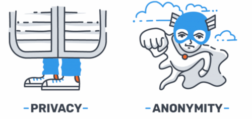
(Иллюстрация из 9)
Поможет ли вам это руководство защитить себя от АНБ, ФСБ, Марка Цукерберга или Моссада, если они хотят вас найти? Наверное, нет... Моссад будет заниматься "моссадовскими делами" 10 и, вероятно, найдет вас, как бы вы ни старались скрыть11.
Прежде чем идти дальше, вы должны рассмотреть свою модель угроз12.
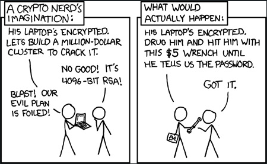
(Иллюстрация Рэндалла Манро, xkcd.com, лицензия CC BY-NC 2.5)
Поможет ли это руководство защитить вашу приватность от исследователей OSINT, таких как Bellingcat13, троллей Doxing14 на 4chan15 и других, у которых нет доступа к набору инструментов АНБ? Более вероятно. Хотя мы не были бы так уверены насчет 4chan.
Вот базовая упрощенная модель угроз для этого руководства:
(Обратите внимание, что шутки о «магических амулетах/подводных лодках/фальшивой собственной смерти» цитируются из превосходной статьи Джеймса Миккенса «Этот мир наш», 2014.10)
Отказ от ответственности: Шутки в сторону (магический амулет...). Конечно, существуют и продвинутые способы смягчения атак на таких продвинутых и опытных противников, но они выходят за рамки данного руководства. Крайне важно, чтобы вы понимали ограничения модели угроз, описанной в этом руководстве. И поэтому это руководство не будет увеличиваться вдвое, чтобы помочь с этими расширенными мерами по смягчению последствий, поскольку это слишком сложно и потребует чрезвычайно высокого уровня знаний и навыков, чего не ожидается от целевой аудитории этого руководства.
EFF предлагает несколько сценариев безопасности, которые вам следует учитывать в зависимости от вашей деятельности. Хотя некоторые из этих советов могут выходить за рамки данного руководства (больше о приватности, чем об анонимности), их все равно стоит прочитать в качестве примеров. См. https://ssd.eff.org/en/module-categories/security-scenarios [Archive.org].
Если вы хотите углубиться в моделирование угроз, см. раздел Ресурсы для моделирования угроз.
Вы можете подумать, что это руководство не имеет законного использования, но существует множество 16'17'18'19'20'21'22, таких как:
- Уклонение от онлайн-цензуры23
- Уклонение от онлайн-угнетения
- Уклонение от онлайн-преследований, доксинга и преследований
- Уклонение от незаконного государственного надзора в Интернете
- Анонимное онлайн-информирование
- Анонимный онлайн-активизм
- Анонимная онлайн-журналистика
- Анонимная онлайн-юридическая практика
- Анонимная онлайн-академическая деятельность (например, доступ к научным исследованиям, заблокированным в стране)
Это руководство написано с надеждой на тех людей с добрыми намерениями, которые, возможно, недостаточно осведомлены, чтобы рассмотреть общую картину.
** Наконец, используйте его на свой страх и риск. Все, что здесь содержится, не является юридической консультацией, и перед использованием вам следует проверить соответствие местному законодательству (IANAL24). «Доверяй, но проверяй»25 всю информацию самостоятельно (или, что еще лучше, «Никогда не доверяй, всегда проверяй»388). Мы настоятельно рекомендуем вам получить необходимую информацию и, в случае сомнений, без колебаний сверять любую информацию, содержащуюся в этом руководстве, с внешними источниками. Пожалуйста, сообщайте нам о любых ошибках, которые вы заметили, поскольку мы приветствуем критику. Даже резкая, но обоснованная критика приветствуется и приведет к внесению необходимых исправлений в кратчайшие сроки.**
А вот неисчерпывающий список некоторых из множества способов, которыми вас можно отследить и деанонимизировать:
Ваша сетьλ
Ваш IP-адресλ
Отказ от ответственности: весь этот абзац касается вашего общедоступного IP-адреса в Интернете, а не IP-адреса вашей локальной сети.
Ваш IP-адрес26 — это наиболее известный и очевидный способ отслеживания. Этот IP-адрес — это IP-адрес, который вы используете в источнике. Здесь вы подключаетесь к Интернету. Этот IP-адрес обычно предоставляется вашим интернет-провайдером (xDSL, мобильный, кабельный, оптоволоконный, кафе, бар, друг, сосед). В большинстве стран действуют правила хранения данных27, которые требуют ведения журналов того, кто какой IP-адрес использует в определенное время/дату, на срок до нескольких лет или на неопределенный срок. Ваш интернет-провайдер может сообщить третьей стороне, что вы использовали определенный IP-адрес в определенную дату и время, спустя годы после этого. Если этот IP-адрес (исходный) в какой-либо момент по какой-либо причине утечет, его можно использовать для прямого отслеживания вас. Во многих странах вы не сможете получить доступ в Интернет, не предоставив провайдеру какую-либо форму идентификации (адрес, идентификатор, настоящее имя, адрес электронной почты...).
Излишне говорить, что большинство платформ (например, социальных сетей) также сохраняют (иногда на неопределенный срок) IP-адреса, которые вы использовали для регистрации и входа в их службы.
Вот несколько онлайн-ресурсов, которые вы можете использовать, чтобы найти информацию о вашем текущем публичном IP-адресе прямо сейчас:
-
Найдите свой IP:
-
https://www.dnsleaktest.com/ (Бонус: проверьте свой IP на наличие утечек DNS)
-
Найдите свой IP-адрес или местоположение любого IP-адреса:
-
Узнайте, является ли IP-адрес «подозрительным» (в черных списках) или загружал ли он «вещи» на каких-то общедоступных ресурсах:
-
https://iknowwhatyoudownload.com (Относитесь к этому с долей скепсиса, он может не показать ничего интересного и имеет ограниченные источники данных. Это больше для развлечения, чем для чего-то серьезного.)
-
Регистрационная информация об IP-адресе (скорее всего, о вашем интернет-провайдере или интернет-провайдере вашего подключения, который, скорее всего, знает, кто использует этот IP-адрес в любое время):
-
Проверьте наличие открытых сервисов или открытых устройств на IP (особенно если на нем есть негерметичные смарт-устройства):
- https://www.shodan.io/host/185.220.101.134 (замените IP на свой IP или любой другой, или измените в поле поиска, в этом примере IP - выходной узел Tor)
-
Различные инструменты для проверки вашего IP-адреса, такие как средства проверки черных списков и многое другое:
-
Хотите знать, подключаетесь ли вы через Tor?
По этим причинам вам придется запутать и скрыть исходный IP-адрес (тот, который привязан к вашей идентификации) или скрыть его с помощью комбинации различных средств:
-
Использование общедоступного сервиса Wi-Fi (бесплатно).
-
Использование анонимной сети Tor28 (бесплатно).
-
Использование услуг VPN29 анонимно (анонимно с оплатой наличными или Monero).
Обратите внимание, что, к сожалению, эти решения не идеальны, и у вас возникнут проблемы с производительностью30.
Все это будет объяснено позже в этом руководстве.
Ваши DNS и IP запросыλ
DNS31 — это адресная книга Интернета: каждый раз, когда ваш браузер открывает соединение с www.google.com, он сначала запрашивает DNS-сервер преобразовать это имя в IP-адрес. Ваш браузер и большинство других приложений на вашем устройстве постоянно делают это в фоновом режиме.
Визуальное представление о том, как работает DNS, см. в разделе https://www.youtube.com/watch?v=vrxwXXytEuI [Invidious].
Проблема с DNS по умолчаниюλ
По умолчанию ваши DNS-запросы направляются на преобразователь вашего интернет-провайдера. Это создает несколько проблем с компаундированием:
- Ведение журнала. Интернет-провайдеры часто подчиняются законам о хранении данных и могут регистрировать каждый разрешенный вами домен, создавая полную запись вашей истории посещений. Этот журнал можно вызвать в суд, продать или взломать.
- Цензура. Блокировка DNS — наиболее распространенный механизм цензуры во всем мире3233 - Интернет-провайдеры просто возвращают ложный адрес для заблокированных доменов.
- Вмешательство. Даже если вы настроите частный преобразователь DNS, ваш интернет-провайдер может перехватывать и перезаписывать ответы DNS при передаче, поскольку стандартный трафик DNS не зашифрован.
- Жестко заданные преобразователи. Многие устройства полностью обходят системные настройки DNS. Примерно 70% смарт-телевизоров и 46% игровых консолей34 используют жестко запрограммированные DNS-серверы, которые невозможно изменить через настройки ОС — их необходимо заблокировать на уровне сети35 или принять разоблачение.
Зашифрованный DNS (DoH/DoT)λ
Шифрование ваших DNS-запросов с помощью DoH (DNS через HTTPS) 36 или DoT (DNS через TLS) 37 не позволяет вашему интернет-провайдеру читать или подделывать их при передаче. Вы можете запустить это:
- Локально, с помощью собственного преобразователя, такого как Pi-hole38.
- Удаленно через поставщика услуг, обеспечивающего приватность, например nextdns.io.
- Автоматически через DNS вашего VPN-провайдера или через сеть Tor.
Это значительное улучшение по сравнению с открытым текстовым DNS, но одного этого недостаточно.
Примечание. Это руководство не поддерживает и не рекомендует услуги Cloudflare. Cloudflare упоминается здесь только в техническом контексте.
Утечка SNI и ECHλ
Даже при использовании зашифрованного DNS само подтверждение TLS передает имя целевого домена через индикацию имени сервера (SNI) 39. Наблюдатель, наблюдающий за вашим соединением — ваш интернет-провайдер, сетевой монитор или мошенническая точка доступа — может увидеть, к какому домену вы подключаетесь, из поля SNI, даже если сам DNS-запрос был зашифрован.
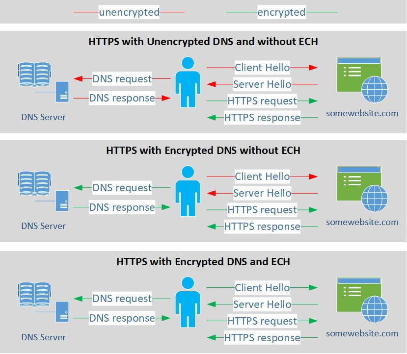
Зашифрованный клиентский привет (ECH)40 (ранее eSNI41) является исправлением: он шифрует поле SNI, поэтому целевой домен скрыт от сетевых наблюдателей42. Однако ECH имеет существенные ограничения при развертывании44:
- Только браузеры на базе Firefox поддерживают ECH. По умолчанию он не включен и его необходимо включать вручную.
- ECH работает только с сайтами, размещенными в CDN Cloudflare. Он не поддерживается большинством основных платформ, включая Amazon (AWS, Twitch), Microsoft (Azure, OneDrive, Office 365), Google (Gmail, Google Cloud), Apple (iCloud, iMessage), Reddit, YouTube, Facebook, Instagram, Twitter и GitHub.
- Сообщается, что Russia45 и China46 блокируют рукопожатия ECH на сетевом уровне, предотвращая подключения к любой службе, для работы которой требуется ECH.
Утечка OCSPλ
Отдельная утечка происходит во время проверки сертификата TLS. Браузеры на базе Firefox используют OCSP47, чтобы проверить, был ли отозван сертификат сайта. В ходе этой проверки серийный номер сертификата отправляется стороннему ответчику OCSP, и этот серийный номер можно сопоставить с общедоступными базами данных сертификатов, чтобы точно определить, какой сайт вы посещаете48.
Сшивание OCSP49 смягчает эту проблему, заставляя сервер включать предварительно подписанный ответ OCSP в подтверждение TLS, устраняя необходимость в браузере делать отдельный запрос. Firefox поддерживает сшивание OCSP, но не применяет его, и не все серверы его реализуют. Браузеры на базе Chromium вместо этого используют CRLSets5051, что, возможно, является более чистым подходом.
Сравнение браузеров: https://www.ssl.com/blogs/how-do-browsers-handle-revoked-ssl-tls-certificates/ [Archive.org]
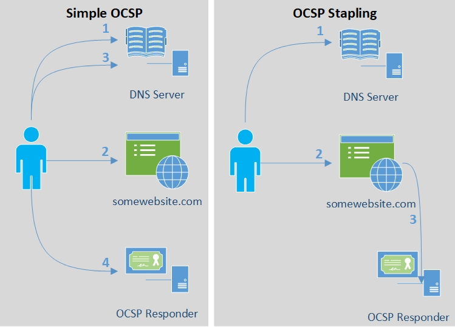
Анализ трафика превосходит все вышеперечисленноеλ
Даже при наличии зашифрованного DNS, ECH и OCSP анализ трафика52 все равно может идентифицировать посещаемые вами сайты по сопоставлению IP-адресов (поскольку большинство веб-сайтов имеют уникальные IP-адреса) или путем определения шаблонов трафика. DNS через Tor демонстрирует самую высокую приватность DNS в текущих исследованиях, но ее все еще можно обойти другими методами (см. Анонимизация трафика).
Для DNS существуют две дополнительные опции, выходящие за рамки стандартного DoH/DoT:
- Tor Hidden DNS / ODoH (забывчивый DNS через HTTPS53): отделяет запрос от запрашивающего, поэтому ни одна сторона не знает, кто запрашивает и что они запрашивают. В настоящее время предлагается только Cloudflare54, который вводит собственный компромисс между доверием. ODoH не защищает от глобального пассивного злоумышленника (GPA), который может наблюдать за трафиком между клиентским преобразователем и рекурсивным преобразователем, между рекурсивным преобразователем и преобразователем ODNS или между преобразователем ODNS и полномочным сервером.
- DoHoT (DNS через HTTPS через Tor): маршрутизация зашифрованных DNS-запросов через Tor для большей анонимности. Требуется Linux и дополнительная техническая настройка. См. https://github.com/alecmuffett/dohot [Archive.org].
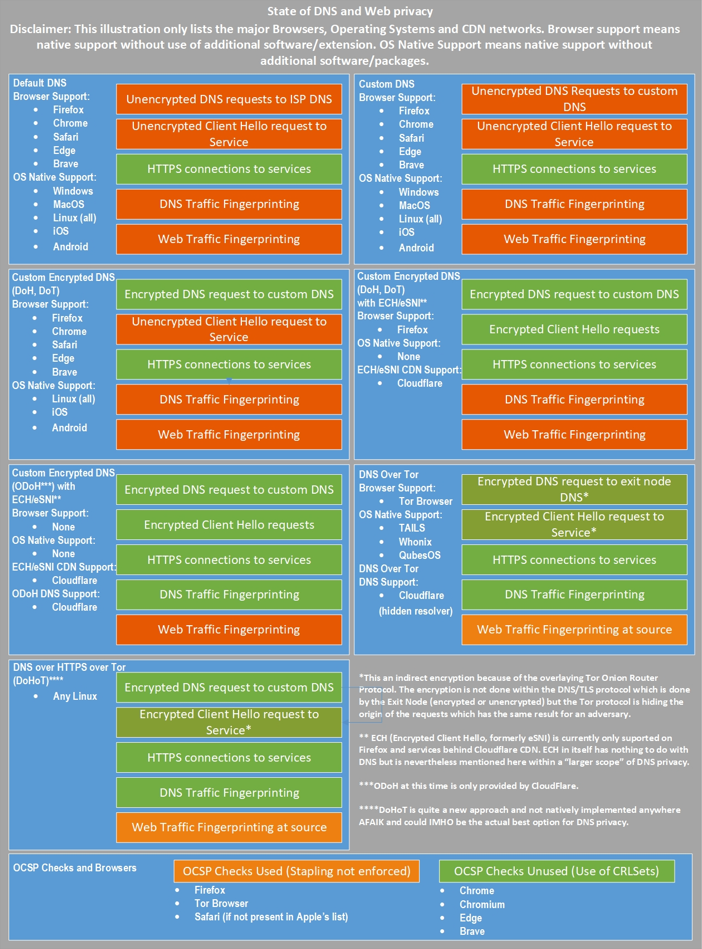
Выбор браузераλ
Для повседневного неконфиденциального использования: только браузеры на базе Firefox поддерживают ECH, а ECH помогает только для сайтов, размещенных на Cloudflare. Если вы предпочитаете браузер на базе Chromium, Brave — вариант, наиболее сохраняющий приватность: он поддерживает все расширения Chrome, добавляя при этом значимую защиту, которой нет в Chrome.
IP-адреса остаются остаточной утечкойλ
Независимо от шифрования DNS, IP-адрес, к которому подключается ваше устройство, виден сетевым наблюдателям. Поскольку большинство веб-сайтов имеют уникальные общеизвестные IP-адреса87, злоумышленник может сопоставить места назначения вашего подключения с базой данных известных IP-адресов сайтов и сделать вывод, какие сайты вы посещаете, даже не затрагивая ваш DNS-трафик. Сшивание OCSP, ECH и зашифрованный DNS не предотвращают этого.
Вот почему руководство в конечном итоге рекомендует Tor в сочетании с виртуализированной многоуровневой архитектурой (см. Виртуализация) как единственное реалистичное средство смягчения последствий: VPN через Tor скрывает как DNS-запросы, так и IP-адреса. Альтернативные конфигурации (Tor через VPN, только VPN, без Tor/VPN) рассматриваются ниже, но менее рекомендуются для использования с высокой чувствительностью.
Ваши устройства с поддержкой RFIDλ
RFID означает Радиочастотная идентификация55. Это технология, используемая, например, для бесконтактных платежей и различных систем идентификации. Конечно, ваш смартфон входит в число этих устройств и имеет возможности бесконтактной оплаты RFID через NFC56. Как и все остальное, такие возможности могут использоваться для отслеживания различными субъектами.
Но, к сожалению, это не ограничивается вашим смартфоном, и вы также, вероятно, постоянно носите с собой некоторое количество устройств с поддержкой RFID, таких как:
- Ваши бесконтактные кредитные/дебетовые карты
- Карты лояльности вашего магазина
- Ваши транспортные платежные карты
- Ваши рабочие карты доступа
- Ключи от машины
- Ваше национальное удостоверение личности или водительские права.
- Ваш паспорт
- Ценники/противокражные бирки на предмете/одежде
Хотя все это нельзя использовать для деанонимизации вас от удаленного онлайн-противника, их можно использовать для сужения поиска, если известно ваше приблизительное местоположение в определенное время. Например, нельзя исключать, что некоторые магазины будут эффективно сканировать (и регистрировать) все RFID-чипы, проходящие через дверь. Они могут искать свои карты лояльности, но по пути регистрируют и другие. Такие RFID-метки можно отследить до вашей личности и обеспечить деанонимизацию.
Дополнительную информацию можно найти в Википедии: https://en.wikipedia.org/wiki/Radio-frequency_identification#Security_concerns [Wikiless] [Archive.org] и https://en.wikipedia.org/wiki/Radio-frequency_identification#Privacy [Wikiless] [Archive.org]
Единственный способ смягчить эту проблему — не иметь при себе RFID-меток или снова защитить их с помощью клетки Фарадея. Вы также можете использовать специализированные кошельки/сумки, которые специально блокируют RFID-коммуникации. Многие из них сейчас производятся известными брендами, такими как Samsonite57. Вам просто не следует носить с собой такие RFID-устройства при выполнении конфиденциальной деятельности.
См. Предупреждение о смартфонах и интеллектуальных устройствах.
Устройства Wi-Fi и Bluetooth вокруг васλ
Геолокация осуществляется не только с помощью триангуляции мобильных антенн. Это также делается с использованием окружающих вас устройств Wi-Fi и Bluetooth. Производители операционных систем, такие как Google (Android58) и Apple (IOS59), поддерживают удобную базу данных о большинстве точек доступа Wi-Fi, устройствах Bluetooth и их местонахождении. Когда ваш Android-смартфон или iPhone включен (а не в режиме полета), он будет активно сканировать (если вы специально не отключите эту функцию в настройках) точки доступа Wi-Fi и устройства Bluetooth вокруг вас и сможет определить ваше местоположение с большей точностью, чем при использовании GPS.
Это активное и непрерывное зондирование затем можно отправить обратно в Google/Apple/Microsoft как часть их телеметрии. Проблема в том, что это зондирование уникально и может использоваться для однозначной идентификации пользователя и отслеживания такого пользователя. Магазины, например, могут использовать эту технику для снятия отпечатков пальцев с клиентов, в том числе, когда они возвращаются, куда они заходят в магазин и как долго они остаются в определенном месте. Существует несколько статей60'61 и статей62, подробно описывающих эту проблему.
Это позволяет им определять точное местоположение даже при выключенном GPS, а также вести удобный учет всех устройств Wi-Fi Bluetooth по всему миру. К которым затем могут получить доступ они или третьи лица для отслеживания.
Примечание. Если у вас есть смартфон Android, Google, вероятно, знает, где он находится, независимо от того, что вы делаете. Вы не можете полностью доверять настройкам. Вся операционная система создана компанией, которой нужны ваши данные. Помните, что если это бесплатно, то продуктом являетесь вы.
Но это не то, на что способны все эти точки доступа Wi-Fi. Недавно разработанные технологии могут даже позволить кому-то точно отслеживать ваши перемещения, просто основываясь на радиопомехах. Это означает, что можно отслеживать ваше перемещение внутри комнаты/здания на основе проходящих радиосигналов. Это может показаться заявлением о теории заговора в шляпе из фольги, но вот ссылки63 с демонстрациями этой технологии в действии: http://rfpose.csail.mit.edu/ [Archive.org] и видео здесь: https://www.youtube.com/watch?v=HgDdaMy8KNE [Invidious]
Другие исследователи нашли способ подсчитать количество людей в определенном пространстве, используя только Wi-Fi, см. https://www.news.ucsb.edu/2021/020392/dont-fidget-wifi-will-count-you [Archive.org].
Таким образом, можно представить множество вариантов использования таких технологий, например запись тех, кто входит в определенные здания/офисы (например, гостиницы, больницы или посольства), а затем определение того, кто кого встречает, и, таким образом, отслеживание их снаружи. Даже если у них нет при себе смартфона.
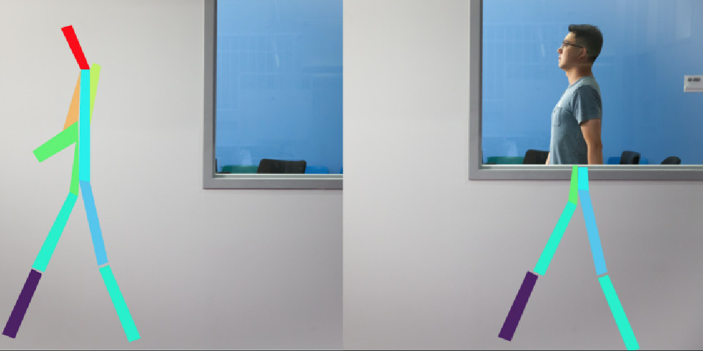
Опять же, такую проблему можно смягчить, только находясь в комнате/здании, которое будет действовать как клетка Фарадея.
Вот еще одно видео о той же технологии в действии: https://www.youtube.com/watch?v=FDZ39h-kCS8 [Invidious]
См.: [Предупреждение о смартфонах и интеллектуальных устройствах] (#смартфоны-предупреждение).
Вы мало что можете с этим поделать. Кроме того, что он изначально неидентифицируемый.
Мошеннические точки доступа Wi-Fiλ
Они использовались как минимум с 2008 года с использованием атаки под названием «Jasager» 64 и могут быть выполнены любым пользователем с помощью самодельных инструментов или коммерческих устройств, таких как Wi-Fi Pineapple65.
Вот несколько видеороликов, объясняющих больше по этой теме:
-
НАДЕЖДА 2020, https://archive.org/details/hopeconf2020/20200725_1800_Advanced_Wi-Fi_Hacking_With_%245_Microcontrollers.mp4
-
YouTube, Hak5, Wi-Fi Pineapple Mark VII https://www.youtube.com/watch?v=7v3JR4Wlw4Q [Invidious]
Эти устройства поместятся в небольшую сумку и смогут подключиться к среде Wi-Fi в любом месте в пределах своего радиуса действия. Например, бар/ресторан/кафе/холл отеля. Эти устройства могут заставить клиентов Wi-Fi отключиться от своей текущей сети Wi-Fi (с помощью атак деаутентификации и диссоциации66), одновременно подменяя обычные сети Wi-Fi в том же месте. Они будут продолжать выполнять эту атаку до тех пор, пока ваш компьютер или вы не решите попытаться подключиться к мошеннической точке доступа.
Эти устройства затем могут имитировать адаптивный портал67 с точно таким же макетом, что и Wi-Fi, к которому вы пытаетесь получить доступ (например, портал регистрации Wi-Fi в аэропорту). Или они могут просто предоставить вам неограниченный доступ в Интернет, который они сами получат из того же места.
Как только вы подключитесь через мошенническую точку доступа, эта точка доступа сможет выполнять различные атаки «человек посередине» для анализа вашего трафика. Это могут быть вредоносные перенаправления или простой перехват трафика. Затем они могут легко идентифицировать любого клиента, который, например, попытается подключиться к VPN-серверу или сети Tor.
Это может быть полезно, если вы знаете, что кто-то, кого вы хотите деанонимизировать, находится в людном месте, но не знаете, кто именно. Это позволит такому злоумышленнику получить отпечатки пальцев на любом веб-сайте, который вы посещаете, несмотря на использование HTTPS, DoT, DoH, ODoH, VPN или Tor, используя анализ трафика, как указано выше в разделе DNS.
Эти методы также можно использовать для разработки сложных фишинговых веб-сайтов, целью которых является перехват ваших учетных данных или убеждение вас установить вредоносный сертификат. Такой сертификат может позволить злоумышленникам перехватить и расшифровать ваш зашифрованный трафик.
Как их смягчить? Если вы подключаетесь к общедоступной точке доступа Wi-Fi, используйте Tor или используйте VPN, а затем Tor или даже VPN через Tor, чтобы скрыть ваш трафик от несанкционированной точки доступа, продолжая ее использовать.
Кроме того, вам следует посмотреть выступление на конференции BlackHat USA «Наблюдение за массами с помощью систем позиционирования Wi-Fi» (https://www.youtube.com/watch?v=hlbjUvkoyBA) [Invidious]. В докладе подробно рассказывается о критической уязвимости в API позиционирования Wi-Fi от Apple, которую можно использовать для геозоны населения с использованием уникальных идентификаторов. См.: [Предупреждение о смартфонах и интеллектуальных устройствах] (#смартфоны-предупреждение). Айфоны ваших соседей тоже представляют собой уникальную угрозу.
Анонимизация трафикаλ
Tor и VPN — не панацея. За прошедшие годы было разработано и изучено множество передовых методов деанонимизации зашифрованного трафика Tor68. Большинство из этих методов представляют собой корреляционные атаки, которые тем или иным образом сопоставляют ваш сетевой трафик с журналами или наборами данных. Вот несколько примеров:
- Атака с использованием корреляционных отпечатков пальцев: Как показано (упрощенно) ниже, эта атака считывает ваш зашифрованный трафик Tor (например, веб-сайты, которые вы посетили) на основе анализа вашего зашифрованного трафика без его расшифровки. Некоторые из этих методов могут обеспечить успех в 96 % в условиях закрытого мира. Эффективность этих методов в реальных условиях открытого мира еще не была продемонстрирована и, вероятно, потребует огромных ресурсов вычислительной мощности, поэтому маловероятно, что такие методы будут использоваться локальным противником в ближайшем будущем. Однако гипотетически такие методы могут быть использованы продвинутым и, возможно, глобальным противником, имеющим доступ к вашей исходной сети для определения некоторых ваших действий. Примеры таких атак описаны в нескольких исследовательских статьях69'70'71, а также их ограничения72. Сам проект Tor опубликовал статью об этих атаках с некоторыми мерами по смягчению последствий: https://blog.torproject.org/new-low-cost-traffic-analysis-attacks-mitigations [Archive.org].
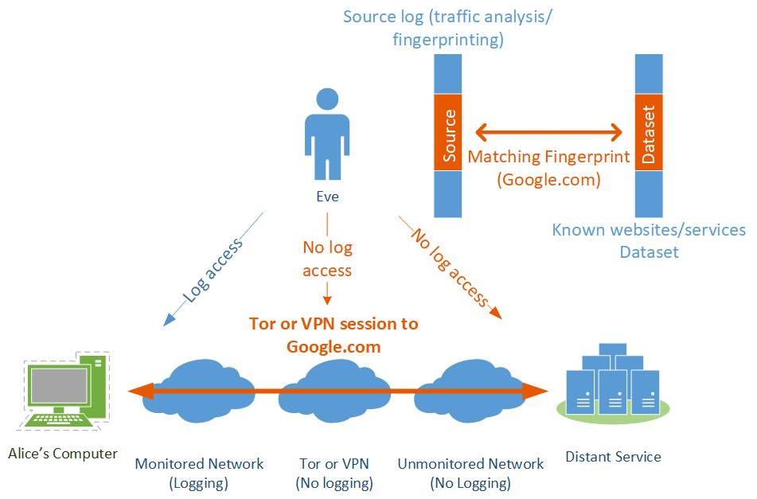
- Корреляционные атаки по времени: Как показано (упрощенно) ниже, злоумышленник, имеющий доступ к журналам сетевых подключений (например, IP или DNS; помните, что большинство VPN-серверов и большинство узлов Tor известны и публично указаны) в источнике и пункте назначения, может сопоставить время для деанонимизации вас, не требуя промежуточного доступа к сети Tor или VPN. Реальный пример использования этой техники был реализован ФБР в 2013 году для деанонимизации 73 ложной угрозы о взрыве в Гарвардском университете.
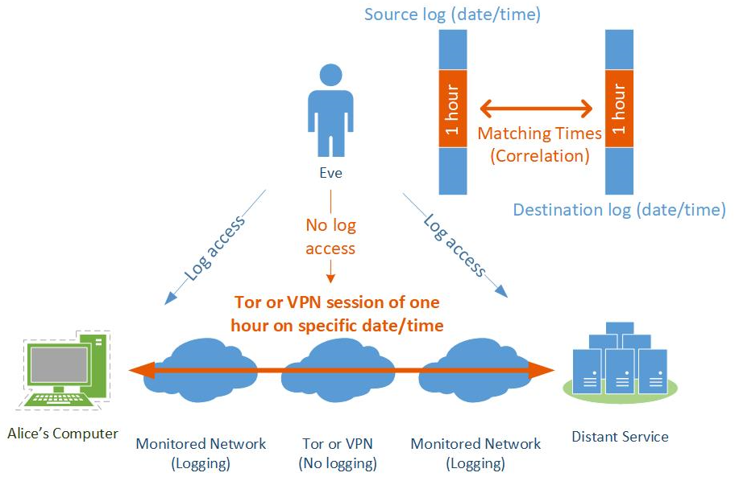
- Атаки с подсчетом корреляции. Как показано (в упрощенном виде) ниже, злоумышленник, у которого нет доступа к подробным журналам подключений (не видит, что вы использовали Tor или Netflix), но имеет доступ к журналам подсчета данных, может увидеть, что вы загрузили 600 МБ в определенное время/дату, которая соответствует загрузке 600 МБ в пункте назначения. Эту корреляцию можно затем использовать для деанонимизации вас с течением времени.
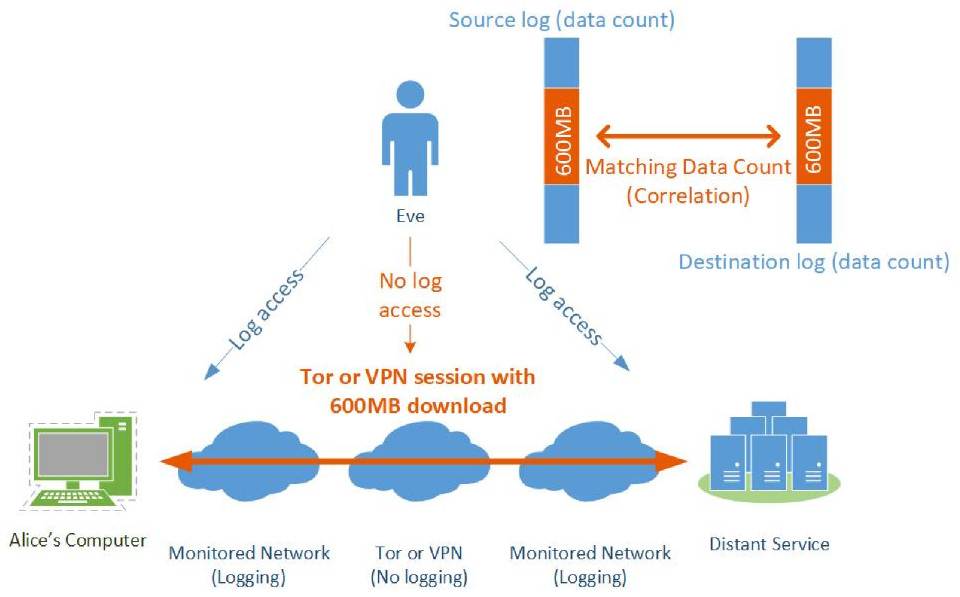
Есть способы смягчить их, такие как:
-
Не используйте Tor/VPN для доступа к службам, которые находятся в той же сети (ISP), что и служба назначения. Например, не подключайтесь к Tor из университетской сети для анонимного доступа к университетской службе. Вместо этого используйте другую точку источника (например, общедоступную сеть Wi-Fi), которую злоумышленник не сможет легко сопоставить.
-
Не используйте Tor/VPN из явно отслеживаемой сети (например, корпоративной/правительственной сети), а вместо этого попытайтесь найти неконтролируемую сеть, например общедоступную или частную сеть Wi-Fi.
-
Рассмотрите возможность использования нескольких уровней (например, то, что будет рекомендовано в этом руководстве позже: VPN через Tor), чтобы злоумышленник мог видеть, что кто-то подключился к сервису через Tor, но не мог видеть, что это были вы, поскольку вы были подключены к VPN, а не к сети Tor.
Еще раз помните, что этого может быть недостаточно против мотивированного глобального противника74 с широким доступом к глобальной массовой слежке. Такой злоумышленник может иметь доступ к журналам, где бы вы ни находились, и использовать их для вашей деанонимизации. Обычно эти атаки являются частью так называемой атаки Сивиллы75. Эти противники выходят за рамки данного руководства.
Также имейте в виду, что все другие методы, описанные в этом руководстве, такие как поведенческий анализ, также могут использоваться для косвенной деанонимизации пользователей Tor (см. также Ваш цифровой след.
Я также настоятельно рекомендую прочитать это очень хорошее, полное и подробное (и более подробное) руководство по наиболее известным векторам атак на Tor: https://github.com/Attacks-on-Tor/Attacks-on-Tor [Archive.org], а также недавнюю исследовательскую публикацию https://www.researchgate.net/publication/323627387_Shedding_Light_on_the_Dark_Corners_of_the_Internet_A_Survey_of_Tor_Research [Archive.org]
А также эту замечательную серию сообщений в блоге: https://www.hackerfactor.com/blog/index.php?/archives/906-Tor-0day-The-Management-Vulnerability.html [Archive.org]
Недавно была предпринята попытка одной из таких атак на сеть Tor. Дополнительную информацию можно найти здесь: https://arstechnica.com/information-technology/2014/07/active-attack-on-tor-network-tried-to-decloak-users-for-five-months/ [Archive.org]
Наконец, помните, что использование Tor уже может считаться подозрительной деятельностью76, а некоторые 77 могут рассматривать его использование как злонамеренное.
Позже в этом руководстве будут предложены некоторые меры по смягчению таких атак, с самого начала изменив ваше происхождение (например, используя общедоступный Wi-Fi). Помните, что такие атаки обычно осуществляются высококвалифицированными, изобретательными и мотивированными злоумышленниками и выходят за рамки данного руководства. Также рекомендуется ознакомиться с практическими корреляционными атаками, проводимыми спецслужбами: https://officercia.mirror.xyz/WeAilwJ9V4GIVUkYa7WwBwV2II9dYwpdPTp3fNsPFjo [Archive.org]
Отказ от ответственности: следует также отметить, что Tor не предназначен для защиты от глобального противника.540
Анализ трафика и лимиты Torλ
Примечание. Этот раздел дополняет приведенный выше раздел Анонимизация трафика. Далее следует более подробное описание конкретных классов атак, имеющих значение на практике.
Tor28 большую часть времени обеспечивает надежную анонимность против большинства злоумышленников. Однако оно не является безоговорочным. Понимание того, что это означает на практике и кто на самом деле является таким противником, более полезно, чем игнорировать проблему или парализовать ее.
Атаки с корреляцией времениλ
Основной атакой на анонимные сети является корреляция трафика: если злоумышленник может наблюдать трафик, входящий в сеть Tor с вашего компьютера, и трафик, выходящий в направлении пункта назначения, он может сопоставить два потока по времени, объему и шаблонам пакетов, не нарушая при этом шифрования Tor.
Мердок и Данезис продемонстрировали в 2005541, что злоумышленник с относительно небольшими ресурсами, контролирующий даже небольшое количество узлов Tor, может использовать временной анализ, чтобы определить, какой узел использует скрытый сервис, что резко сужает набор анонимности. Это был ранний результат, и с тех пор сеть Tor значительно изменилась, но основной принцип — корреляция между точками наблюдения не требует какой-либо расшифровки — был подтвержден только последующими исследованиями.
RAPTOR542 (2015) показал, что злоумышленники уровня автономной системы (AS) — крупные интернет-провайдеры и интернет-биржи, а не только спецслужбы — могут выполнять анализ трафика, наблюдая за маршрутизацией BGP и делая вывод о перекрытии путей между пользователем Tor и местом назначения. Ключевым моментом является то, что одна и та же AS может переносить как трафик пользователя к защитному узлу, так и трафик выходного узла к месту назначения, что делает корреляцию возможной без какого-либо компрометации узла Tor.
DeepCorr (2018) использовал глубокое обучение для корреляции потоков Tor со значительно более высокой точностью, чем предыдущие методы, достигнув уровня корреляции выше 96% в контролируемых условиях. Авторы осторожно отмечают, что их оценка проводилась в лабораторных условиях закрытого мира — фиксированный набор веб-сайтов, контролируемые условия — и что реальная производительность в большой открытой сети с разнообразным трафиком будет значительно сложнее. Это различие имеет значение: показатели точности в закрытом мире часто неверно цитируются, как будто они применимы к реальным развертываниям. Они этого не делают, по крайней мере, пока.
Кто на практике является глобальным пассивным противником?λ
Настоящего глобального пассивного противника, который может одновременно наблюдать за произвольным интернет-трафиком по всему миру, не существует в той форме, которую часто представляют. Что действительно существует, так это совокупность национальных спецслужб с широким, но не безграничным контролем над интернет-трафиком (TEMPORA GCHQ, PRISM АНБ и восходящие программы сбора данных), крупных интернет-провайдеров и интернет-бирж, на которые приходится непропорциональная доля глобального трафика, а также облачных провайдеров, чья инфраструктура охватывает большую часть мировых маршрутов AS.
Для подавляющего большинства пользователей Tor ни одна из этих организаций не нацелена конкретно на них. Для журналиста, общающегося с источником внутри страны, чьи спецслужбы тесно сотрудничают с крупными западными агентствами, или активиста, чей трафик проходит лишь по небольшому количеству маршрутов АШ, картина вызывает большее беспокойство. Честный ответ: если агентство Five Eyes специально нацелено на вас, одного Tor, вероятно, будет недостаточно. Всем остальным Tor обеспечивает надежную защиту.
Снятие отпечатков пальцев с веб-сайтаλ
Атаки с использованием отпечатков пальцев веб-сайтов пытаются определить, какой веб-сайт посещает пользователь Tor, путем анализа структуры зашифрованного трафика (размеры пакетов, время, последовательность направлений) без его расшифровки. Точность оценок закрытого мира (когда злоумышленник знает, что пользователь посещает один из N отслеживаемых сайтов) достигла высокого уровня в исследовательских условиях. В условиях открытого мира, когда пользователь может посещать любой из миллионов сайтов, уровень ложных срабатываний делает эти атаки гораздо менее практичными. WTF-PAD и связанные с ним дополнительные средства защиты, частично развернутые в браузере Tor, еще больше снижают точность снятия отпечатков пальцев. Это активная область исследований, и ситуация будет развиваться.
Постоянство защитного узла и что это значитλ
Tor использует защитные узлы — небольшой стабильный набор входных узлов, которые ваш клиент повторно использует в течение нескольких недель — специально для ограничения воздействия временной корреляции. Если бы вы использовали узел случайного входа для каждого канала, злоумышленник, контролирующий даже скромную часть узлов Tor, в конечном итоге заметил бы, что вы напрямую входите в сеть. Сохраняя небольшой набор охранных устройств, Tor ограничивает вероятность того, что какой-либо конкретный злоумышленник контролирует вашу точку входа. Компромисс заключается в том, что если ваш охранный узел является вредоносным или находится под наблюдением, он останется таковым в течение периода защиты. В целом, исследования проекта Tor показывают, что настойчивость охраны в большинстве случаев повышает анонимность большинства людей.
Когда Tor достаточно и недостаточноλ
Tor достаточен для борьбы с: местными сетевыми наблюдателями (вашим интернет-провайдером, вашим университетом, Wi-Fi в кафе), большинством правоохранительных органов без разведывательного партнерства, брокерами коммерческих данных и рекламодателями.
Tor недостаточен против: целенаправленной операции хорошо оснащенного национального разведывательного агентства с доступом к восходящему Интернету; злоумышленника, который одновременно контролирует и ваш охранный узел, и выходной узел пункта назначения; или злоумышленника, который может сопоставить время использования вашего Tor с известными событиями в реальном мире (вы были единственным человеком в определенном месте в определенное время).
Самым практичным способом смягчения последствий, помимо самого Tor, является изменение вашей точки входа: подключение к Tor через общедоступный Wi-Fi, а не через домашнее соединение, полностью удаляет из уравнения самый надежный корреляционный якорь — IP-адрес, назначенный вашим интернет-провайдером. В настоящем руководстве этот подход рекомендуется для всех видов деятельности, требующих высокой чувствительности.
Некоторые устройства можно отслеживать даже в автономном режимеλ
Вы видели это в боевиках, шпионских, научно-фантастических фильмах и сериалах: главные герои всегда вынимают аккумулятор из своих телефонов, чтобы убедиться, что его нельзя использовать. Большинство людей сочтут это излишним. Ну, к сожалению, нет, сейчас это становится правдой по крайней мере для некоторых устройств:
Такие устройства будут продолжать передавать идентификационную информацию на ближайшие устройства даже в автономном режиме с использованием Bluetooth Low-Energy82. У них нет прямого доступа к устройствам (которые не подключены к Интернету), а вместо этого они используют BLE, чтобы найти их через другие близлежащие устройства83. Они используют одноранговую связь Bluetooth ближнего радиуса действия для трансляции своего статуса через находящиеся поблизости онлайн-устройства.
Теперь они могли находить такие устройства и сохранять их местоположение в некоторой базе данных, которая затем могла использоваться третьими лицами или ими самими для различных целей (включая аналитику, рекламу или сбор доказательств/разведывательной информации).
См. Предупреждение о смартфонах и интеллектуальных устройствах.
TLDR: Не берите с собой такие устройства при выполнении деликатных действий.
Идентификаторы вашего оборудованияλ
Телеметрия шины USB Windows (история перечисления устройств)λ
Windows хранит постоянную историю перечисления каждого когда-либо подключенного USB-устройства, независимо от того, подключено ли оно в данный момент.
!!! опасность «Вектор деанонимизации» Каждое запоминающее устройство USB во время перечисления предоставляет идентификатор поставщика, идентификатор продукта и, для большинства накопителей, уникальный серийный номер на уровне дескриптора. Windows записывает это в:
- `HKLM\SYSTEM\CurrentControlSet\Enum\USBSTOR`
-
HKLM\SYSTEM\CurrentControlSet\Enum\USBSetupAPI.dev.log
Это создает надежную связь перекрестной переустановки между конкретным физическим USB-накопителем, телефоном, аппаратным ключом или ключом и каждой установкой ОС, к которой он когда-либо прикасался, поскольку идентифицирующие данные хранятся в собственной прошивке/дескрипторе устройства, а не в ОС.
Как это эксплуатируется:
- Корреляция физических устройств. Один и тот же USB-накопитель, используемый на «чистой» виртуальной машине и на персональном компьютере, переносит свой VID/PID/серийный номер в реестры обеих установок, создавая судебный анализ ссылок, или вредоносное ПО с достаточными привилегиями может восстановиться, даже если сама ОС была переустановлена или перестроена виртуальная машина.
- Временные метки первого подключения. Метаданные ключа реестра записывают время первого и последнего подключения для каждого устройства, что может подтверждать или противоречить заявленным срокам использования.
- Сохраняется при переустановке ОС хоста, а не устройства. Переустановка Windows сбрасывает собственные идентификаторы хоста, включая GDID, но не влияет на собственный серийный номер USB-устройства. Повторное подключение к новой установке просто записывает новую, сопоставимую запись, ссылающуюся на тот же идентификатор оборудования.
Смягчения:
- Никогда не делитесь USB-носителями, ключами безопасности или периферийными устройствами между анонимными и идентифицируемыми средами.
- Если совместное использование неизбежно, отдавайте предпочтение устройствам, в дескрипторе которых нет уникального серийного номера, и рассматривайте любое устройство, которое когда-либо касалось идентифицированной машины, как сожженное для анонимного использования.
- Используйте блокировщики записи или действующую ОС (Tails) в случаях, когда происхождение USB-устройства само по себе важно, поскольку история перечисления USB записывается операционной системой хоста независимо от намерения чтения/записи.
Ваш IMEI и IMSIλ
IMEI и IMSI — это уникальные номера, созданные производителями мобильных телефонов и операторами сотовой связи.
IMEI привязан непосредственно к телефону, который вы используете. Этот номер известен и отслеживается операторами сотовой связи, а также известен производителям. Каждый раз, когда ваш телефон подключается к мобильной сети, он регистрирует в сети IMEI вместе с IMSI (если SIM-карта вставлена, но это даже не нужно). Он также используется многими приложениями (банковские приложения, злоупотребляющие разрешением телефона на Android, например 84) и операционными системами смартфонов (Android/IOS) для идентификации устройства85. Сменить IMEI на телефоне возможно, но сложно (и во многих юрисдикциях это не является противозаконным 86), но, вероятно, проще и дешевле просто найти и купить какой-нибудь старый (рабочий) телефон Burner за несколько евро (помните, это руководство предназначено для Германии) на блошином рынке или в каком-нибудь случайном небольшом магазине.
IMSI напрямую привязан к используемой вами мобильной подписке или тарифному плану с предоплатой, а также к вашему номеру телефона вашим оператором мобильной связи. IMSI жестко запрограммирован непосредственно на SIM-карте и не может быть изменен. Помните, что каждый раз, когда ваш телефон подключается к мобильной сети, он также регистрирует в сети IMSI вместе с IMEI. Как и IMEI, IMSI также используется некоторыми приложениями и операционными системами смартфонов для идентификации и отслеживается. Некоторые страны ЕС, например, поддерживают базу данных ассоциаций IMEI/IMSI, чтобы правоохранительные органы могли легко запрашивать их.
Сегодня выдать свой (настоящий) номер телефона — это то же самое или даже лучше, чем выдать свой номер социального страхования/паспорт/национальное удостоверение личности.
IMEI и IMSI можно отследить как минимум шестью способами:
-
В журналах абонентов мобильного оператора обычно хранится IMEI вместе с IMSI и базой данных с информацией об абонентах. Если вы используете предоплаченную анонимную SIM-карту (анонимный IMSI, но с известным IMEI), они могут увидеть, что эта ячейка принадлежит вам, если вы раньше использовали этот сотовый телефон с другой SIM-картой (другой анонимный IMSI, но тот же известный IMEI).
-
В логах антенны мобильного оператора будет удобно вести лог какого IMEI. IMSI также хранит некоторые данные о соединении. Например, они знают и регистрируют, что телефон с этой комбинацией IMEI/IMSI подключен к набору мобильных антенн, а также насколько мощным был сигнал, поступающий на каждую из этих антенн, что позволяет легко выполнить триангуляцию/геолокацию сигнала. Они также знают, какие другие телефоны (например, ваш настоящий) одновременно подключались к тем же антеннам с тем же сигналом. Это позволяет точно знать, что этот «одноразовый телефон» всегда был подключен в том же месте и в то же время, что и другой «известный телефон», который появляется каждый раз, когда одноразовый телефон используется. Эта информация может использоваться/используется различными третьими сторонами для точного геолокации/отслеживания вас87'88.
-
Производитель телефона может отследить продажу телефона по IMEI, если телефон был куплен неанонимным способом. Действительно, у них будут журналы каждой продажи телефона (включая серийный номер и IMEI), в каком магазине/человеке он был продан. И если вы используете телефон, купленный в Интернете (или у кого-то, кто вас знает). Используя эту информацию, его можно отследить. Даже если они не найдут вас на CCTV89 и вы купили телефон за наличные, они все равно смогут найти, какой еще телефон (ваш настоящий в кармане) был там (в этом магазине) в это время/дату, используя журналы антенны.
-
Чтобы найти вас, можно использовать только IMSI, поскольку в настоящее время в большинстве стран клиенты требуют предоставления идентификатора при покупке SIM-карты (по подписке или с предоплатой). Затем IMSI привязывается к личности покупателя карты. В странах, где SIM-карту все еще можно купить за наличные (например, в Великобритании), все еще знают, где (в каком магазине) она была куплена и когда. Эту информацию затем можно использовать для получения информации из самого магазина (например, записей с камер видеонаблюдения, как в случае с IMEI). Или опять же по логам антенны можно выяснить, какой еще телефон был там в момент продажи.
-
Производители ОС для смартфонов (Google/Apple для Android/IO) также ведут журналы идентификации IMEI/IMSI, привязанных к учетным записям Google/Apple, а также информацию о том, какие пользователи их использовали. Они также могут проследить историю телефона и узнать, к каким учетным записям он был привязан в прошлом90.
-
Правительственные учреждения по всему миру, заинтересованные в вашем номере телефона, могут использовать и используют специальные устройства 91, называемые «ловцами IMSI» 92, такие как Stingray93 или, с недавних пор, Nyxcell94. Эти устройства могут выдавать себя за (подделывать) антенну сотового телефона и заставлять определенный IMSI подключаться к ней для доступа к сотовой сети. Как только они это сделают, они смогут использовать различные MITM95, которые позволят им:
-
Коснитесь своего телефона (голосовые вызовы и SMS).
-
Обнюхать и проверить ваш трафик данных.
-
Выдавайте себя за свой номер телефона, не контролируя свой телефон.
-
Вот также хорошее видео на YouTube на эту тему: Безопасный режим DEFCON - Купер Квинтин - Обнаружение поддельных базовых станций 4G в режиме реального времени [Invidious]
По этим причинам крайне важно получить выделенный анонимный номер телефона и/или анонимный одноразовый телефон с приобретенной за наличные предоплаченной SIM-картой, которая никоим образом (в прошлом или настоящем) не привязана к вам для ведения конфиденциальной деятельности. Также возможно получить анонимный предоплаченный, но желательно выделенный номер, на бесплатных и платных онлайн-сервисах, принимающих анонимные криптовалюты, такие как Monero. Дополнительные практические рекомендации можно получить здесь: Получение анонимного номера телефона.
Хотя некоторые производители смартфонов, такие как Purism с их серией Librem96, заявляют, что заботятся о вашей приватности, они по-прежнему не допускают рандомизацию IMEI, что, по нашему мнению, является ключевой функцией защиты от отслеживания, которую должны предоставлять такие производители. Хотя эта мера не предотвратит отслеживание IMSI внутри SIM-карты, она, по крайней мере, позволит вам сохранить тот же «одноразовый телефон» и переключать только SIM-карты вместо необходимости переключать обе в целях приватности.
См. Предупреждение о смартфонах и интеллектуальных устройствах.
Ваш MAC-адрес Wi-Fi или Ethernetλ
MAC-адрес97 — это уникальный идентификатор, привязанный к вашему физическому сетевому интерфейсу (проводной Ethernet или Wi-Fi) и, конечно, может использоваться для отслеживания вас, если он не выбран случайным образом. Как и в случае с IMEI, производители компьютеров и сетевых карт обычно ведут журналы своих продаж (обычно включая такие вещи, как серийный номер, IMEI, Mac-адреса и т. д.), и они снова могут отслеживать, где и когда компьютер с рассматриваемым MAC-адресом был продан и кому. Даже если вы купили его за наличные в супермаркете, в супермаркете все равно может быть система видеонаблюдения (или система видеонаблюдения рядом с этим магазином), и снова время/дата продажи может быть использована, чтобы узнать, кто там был, используя журналы антенны мобильного провайдера в это время (IMEI/IMSI).
Производители операционных систем (Google/Microsoft/Apple) также будут хранить журналы устройств и их MAC-адреса в своих журналах для идентификации устройств (например, службы «Найти тип моего устройства»). Apple может сказать, что MacBook с этим конкретным MAC-адресом раньше был привязан к определенной учетной записи Apple. Возможно, ваш до того, как вы решили использовать MacBook для конфиденциальных действий. Возможно, другому пользователю, который продал его вам, но помнит ваш адрес электронной почты/номер с момента продажи.
Ваш домашний маршрутизатор/точка доступа Wi-Fi ведет журналы устройств, зарегистрированных в Wi-Fi, и к ним также можно получить доступ, чтобы узнать, кто использовал ваш Wi-Fi. Иногда это может быть сделано интернет-провайдером удаленно (и бесшумно) в зависимости от того, «управляется» ли этот маршрутизатор/точка доступа Wi-Fi удаленно интернет-провайдером (что часто имеет место, когда они предоставляют маршрутизатор своим клиентам).
Некоторые коммерческие устройства могут вести учет перемещающихся MAC-адресов для различных целей, например, при пробках на дорогах.98.
Итак, еще раз важно не брать с собой телефон, когда/где вы занимаетесь конфиденциальной деятельностью. Если вы используете свой собственный ноутбук, очень важно скрыть этот MAC-адрес (и адрес Bluetooth) везде, где вы его используете, и будьте особенно осторожны, чтобы не допустить утечки какой-либо информации. К счастью, многие современные операционные системы теперь имеют или допускают возможность рандомизации MAC-адресов (Android, IOS, Linux и Windows 10/11), за исключением macOS, которая не поддерживает эту функцию даже в последней версии Big Sur.
См. Предупреждение о смартфонах и интеллектуальных устройствах.
Ваш MAC-адрес Bluetoothλ
Ваш MAC-адрес Bluetooth аналогичен предыдущему MAC-адресу, за исключением Bluetooth. Опять же, его можно использовать для отслеживания вас, поскольку производители и производители операционных систем ведут журналы такой информации. Он может быть привязан к месту/времени/дате продажи или учетным записям, а затем может использоваться для отслеживания вас с помощью такой информации, платежной информации магазина, систем видеонаблюдения или журналов мобильной антенны в корреляции.
В операционных системах предусмотрена защита для рандомизации этих адресов, но они по-прежнему подвержены уязвимостям99.
По этой причине, и если они вам действительно не нужны, вам следует просто полностью отключить Bluetooth в настройках BIOS/UEFI, если это возможно, или в операционной системе в противном случае.
В Windows 10 вам нужно будет отключить и включить устройство Bluetooth в самом диспетчере устройств, чтобы принудительно рандомизировать адрес для следующего использования и предотвратить отслеживание.
В общем, это не должно вызывать особого беспокойства по сравнению с MAC-адресами. Адреса BT довольно часто рандомизируются.
См. Предупреждение о смартфонах и интеллектуальных устройствах.
Ваш процессорλ
Все современные процессоры100 теперь интегрируют скрытые платформы управления, такие как ныне печально известный Intel Management Engine (IME)101 и процессор безопасности платформы AMD (PSP)102.
Эти платформы управления представляют собой небольшие операционные системы, работающие непосредственно на вашем процессоре, пока у них есть питание. Эти системы имеют полный доступ к сети вашего компьютера и могут быть использованы злоумышленником для деанонимизации вас различными способами (например, с использованием прямого доступа или использования вредоносного ПО), как показано в этом познавательном видеоролике: BlackHat, Как взломать выключенный компьютер или Запуск неподписанного кода в IME https://www.youtube.com/watch?v=9fhNokIgBMU [Invidious].
В прошлом они уже подвергались воздействию нескольких уязвимостей безопасности103, которые позволяли вредоносному ПО получить контроль над целевыми системами. Многие организации, занимающиеся приватностью, включая EFF и Libreboot, также обвиняют их в том, что они являются бэкдором в любую систему104.
Есть несколько не очень простых способов105 отключить IME на некоторых процессорах, и вам следует это сделать, если можете. Для некоторых ноутбуков AMD вы можете отключить его в настройках BIOS, отключив PSP.
Обратите внимание, что, в защиту AMD, не было обнаружено никаких уязвимостей безопасности для ASP, а также никаких бэкдоров. См. https://www.youtube.com/watch?v=bKH5nGLgi08&t=2834s [Invidious]. Кроме того, AMD PSP не предоставляет никаких возможностей удаленного управления, в отличие от IME.
Если вы любите приключения, вы можете установить свой собственный BIOS с помощью Coreboot106 или Libreboot (дистрибутив Coreboot), если ваш ноутбук его поддерживает. Coreboot позволяет вам добавлять свой собственный микрокод или другие объекты прошивки, чтобы машина могла работать, но это зависит от выбора пользователя, и с декабря 2022 года Libreboot принял аналогичный прагматичный подход для поддержки новых устройств в дереве Coreboot. (Спасибо, добрый анон, который исправил предыдущую информацию в этом абзаце.)
Проверьте себя:
-
Если вы используете Linux, вы можете проверить статус уязвимости вашего процессора к атакам Spectre/Meltdown, используя https://github.com/speed47/spectre-meltdown-checker [Archive.org], который доступен в виде пакета для большинства дистрибутивов Linux, включая Whonix. Spectre — это временная атака выполнения. Также имеется PoC-код для Spectre v1 и v2 на устройствах iPhone: https://github.com/cispa/BranchDifferent [Archive.org] и здесь https://misc0110.net/files/applespectre_dimva22.pdf [Archive.org]
-
Если вы используете Windows, вы можете проверить статус уязвимости вашего процессора с помощью inSpectre https://www.grc.com/inspectre.htm [Archive.org]
Некоторые процессоры имеют неисправимые недостатки (особенно процессоры Intel), которые могут быть использованы различными вредоносными программами. Вот хороший текущий список таких уязвимостей, затрагивающих широко распространенные процессоры в последнее время: https://en.wikipedia.org/wiki/Transient_execution_CPU_vulnerability [Wikiless] [Archive.org]
Некоторых из них можно избежать, используя настройки программного обеспечения виртуализации, которые могут смягчить последствия таких эксплойтов. Дополнительную информацию см. в этом руководстве Spectre/Meltdown Hardening [Archive.org] (предупреждение: это может серьезно повлиять на производительность ваших виртуальных машин).
В этом руководстве не будут слишком углубляться в атаки по побочным каналам и микроархитектуре, но мы выделим некоторые проблемы с архитектурами процессоров Intel и AMD, которые будут устранены повсюду. Важно понимать, что оборудование столь же подвержено ошибкам и, следовательно, уязвимостям, независимо от производителя.
В этом руководстве мы устраним некоторые из этих проблем, рекомендуя использовать виртуальные машины на выделенном анонимном ноутбуке для ваших конфиденциальных действий, которые будут использоваться только из анонимной общедоступной сети.
Кроме того, мы рекомендуем использовать процессоры AMD вместо процессоров Intel. Дополнительную информацию см. в разделе Типы атак на ЦП.
-
Уязвимости процессора, обнаруженные за последние несколько лет:
- Обвал
- Призрак
- Æpic
- SGAxe
- ЛВИ
- Плундервольт
- [Атака повтора MicroScope] (https://en.wikipedia.org/wiki/Software_Guard_Extensions#MicroScope_replay_attack)
- Анклав
- Прайм+Зонд
- Перекрестные помехи
- Герцблед
- Атака Сквипом
- Зенблид
Службы телеметрии вашей ОС и приложенийλ
Будь то Android, iOS, Windows, macOS или даже Ubuntu. Большинство популярных операционных систем теперь собирают информацию телеметрии по умолчанию, даже если вы никогда не соглашались или не отказывались от участия110 с самого начала. Некоторые, такие как Windows, даже не позволяют полностью отключить телеметрию без некоторых технических настроек. Этот сбор информации может быть обширным и включать ошеломляющее количество подробностей (метаданных и данных) о ваших устройствах и их использовании.
Вот хорошие обзоры того, что собирают эти пять популярных ОС в своих последних версиях:
Android/Google:
- Просто прочитайте их политику приватности https://policies.google.com/privacy [Archive.org].
- Школа компьютерных наук и статистики, Тринити-колледж, Дублин, Ирландия. Приватность мобильных телефонов: измерение данных, которые iOS и Android отправляют в Apple и Google https://www.scss.tcd.ie/doug.leith/apple_google.pdf [Archive.org]
IOS/Apple:
- Дополнительную информацию можно найти на сайтах https://www.apple.com/legal/privacy/en-ww/ [Archive.org] и https://support.apple.com/en-us/HT202100 [Archive.org].
- Школа компьютерных наук и статистики, Тринити-колледж, Дублин, Ирландия. Приватность мобильных телефонов: измерение данных, которые iOS и Android отправляют в Apple и Google https://www.scss.tcd.ie/doug.leith/apple_google.pdf [Archive.org]
- Apple утверждает107, что они анонимизируют эти данные, используя дифференциальную приватность108, но вам придется им доверять.
Windows/Microsoft:
- Полный список необходимых диагностических данных: https://docs.microsoft.com/en-us/windows/privacy/required-windows-diagnostic-data-events-and-fields-2004 [Archive.org]
- Полный список дополнительных диагностических данных: https://docs.microsoft.com/en-us/windows/privacy/windows-diagnostic-data [Archive.org]
macOS:
- Более подробная информация о https://support.apple.com/guide/mac-help/share-analytics-information-mac-apple-mh27990/mac [Archive.org]
Убунту:
- Несмотря на то, что Ubuntu является дистрибутивом Linux, в настоящее время она также собирает данные телеметрии. Однако эти данные весьма ограничены по сравнению с другими. Подробнее о https://ubuntu.com/desktop/statistics [Archive.org]
Не только операционные системы собирают службы телеметрии, но и сами приложения, такие как браузеры, почтовые клиенты и приложения социальных сетей, устанавливаются в вашей системе.
Важно понимать, что эти данные телеметрии могут быть привязаны к вашему устройству и способствовать деанонимизации вас, а затем могут быть использованы против вас злоумышленником, который получит доступ к этим данным.
Это не означает, например, что устройства Apple — плохой выбор для обеспечения хорошей приватности (хотя это может измениться109), но они определенно не являются лучшим выбором для (относительной) анонимности. Они могут защитить вас от третьих лиц, знающих, что вы делаете, но не от самих себя. По всей вероятности, они наверняка знают, кто вы.
Далее в этом руководстве мы будем использовать все имеющиеся в нашем распоряжении средства, чтобы отключить и заблокировать как можно больше телеметрии, чтобы смягчить этот вектор атаки в операционных системах, поддерживаемых в этом руководстве. К ним будут относиться Windows, macOS и даже в некоторой степени Linux.
См. Предупреждение о смартфонах и интеллектуальных устройствах.
Идентификаторы классов Windows COM (CLSID) и GUIDλ
Windows назначает 128-битный GUID каждому зарегистрированному COM-классу (CLSID), интерфейсу (IID) и приложению (AppID). Их можно перечислить из пользовательского пространства через реестр (HKEY_CLASSES_ROOT\CLSID\{GUID}), права администратора не требуются, а в некоторых случаях их можно проверить из веб-контента.
Вектор деанонимизации: конкретный набор CLSID, зарегистрированный на компьютере, отражает точное установленное программное обеспечение: кодеки, расширения оболочки, компоненты Office, интеграцию VPN-клиентов, инструменты безопасности, вспомогательные объекты браузера. Это такой же уникальный отпечаток, как перечисление шрифтов или плагинов, но он сохраняется в профилях и сеансах браузера, поскольку находится на уровне ОС, а не в хранилище браузера.
Как это эксплуатируется:
- Инвентаризация программного обеспечения. Перечисление зарегистрированных CLSID позволяет выявить установленные приложения с гораздо большей степенью детализации, чем строка User-Agent.
- Зондирование присутствия. Сайт может проверять наличие определенных CLSID или связанных с ними пользовательских обработчиков протокола URI для обнаружения именованных приложений: VPN-клиентов, коммуникационных приложений, инструментов криминалистики или анализа.
- Обнаружение виртуальной машины/песочницы. Определенные CLSID и связанные с ними артефакты реестра служат диагностикой VirtualBox, VMware или известных сред, ориентированных на анонимность.
- Межконтекстная корреляция. Повторное использование одной установки Windows для анонимных и идентифицированных действий связывает их, независимо от разделения на уровне браузера.
Смягчения:
- Используйте выделенную виртуальную машину с минимальной установкой для каждого удостоверения или личности. Не используйте повторно одну установку Windows в анонимных и идентифицированных контекстах.
- Предпочитайте изоляцию на базе Linux (Whonix, Tails, Qubes-Whonix) для использования в моделях с высоким уровнем угроз. Этот класс атаки специфичен для COM/Windows и не имеет там прямого эквивалента.
- Возвращайтесь к чистому снимку между сеансами, а не полагайтесь на очистку вручную.
- Считайте это той же категорией снятия отпечатков пальцев, что и перечисление шрифтов и плагинов: исправлением является разделение, а не редактирование реестра.
Глобальный идентификатор устройства Windows (GDID)λ
GDID — это постоянный, назначаемый сервером 64-битный идентификатор устройства, привязанный к установке Windows. Это почти полностью недокументировано Microsoft: единственная общедоступная ссылка — это одна строка в схеме Azure Monitor для таблицы UCDOStatus (оптимизация доставки), описывающая столбец GlobalDeviceId как «глобальный идентификатор устройства Microsoft. Это идентификатор, используемый Microsoft внутри компании». Независимый реверс-инжиниринг, подтвержденный на сборке Windows 11 26200, с тех пор составил карту всей цепочки.
!!! обратите внимание «Источники» - Соединенные Штаты против Питера Стоукса, Северная Дакота, штат Иллинойс (2026 г.). Федеральная уголовная жалоба; основной источник реального использования GDID в расследованиях правоохранительных органов. Настоятельно рекомендуем всем читателям этого документа принять во внимание, что этот малоизвестный вектор телеметрии устройства не был задокументирован до этого судебного дела и упоминается вскользь. - "Полный обратный инжиниринг Windows GDID: раскрыт PUID устройства MSA", Devdigest. - [«Вы не можете полностью отключить трекер Microsoft GDID для Windows 11, но эти настройки ограничивают объем захвата»] (https://www.windowslatest.com/2026/07/10/you-cant-fully-disable-microsofts-gdid-windows-11-tracker-but-these-settings-limit-what-it-captures/), Windows Latest. - gdid-reversal, независимая реверс-инжиниринговая статья с ETW и свидетельствами реестра.
!!! предупреждение «Об источнике gdid-reversal»
Мы не проверяли и не будем проверять этот источник, поэтому будьте осторожны. Этот репозиторий создан пользователем, его авторство не подтверждено. Контент может быть частично или полностью создан с помощью искусственного интеллекта. Считайте конкретные технические заявления (пути реестра, двоичные символы, сведения о поставщике ETW) непроверенными до тех пор, пока они не будут сопоставлены с реальной установкой Windows или более авторитетным источником. Он включен сюда, потому что это одно из немногих подробных технических описаний недокументированного механизма, а не как авторитетный справочник.
!!! опасность «Как это работает»
Когда устройство входит в систему с учетной записью Microsoft, wlidsvc подготавливает его к login.live.com и получает обратно PUID устройства (уникальный идентификатор паспорта): значение, назначенное сервером, не полученное из какого-либо локального серийного номера оборудования. Он хранится в реестре, считывается платформой подключенных устройств (cdp.dll/CDPSvc), регистрируется в графе службы каталогов устройств Microsoft и сообщается службой оптимизации доставки как UCDOStatus.GlobalDeviceId всякий раз, когда машина участвует в одноранговом обмене обновлениями.
Прочитайте свой собственный GDID без прав администратора:
```powershell
(Get-ItemProperty 'HKCU:\SOFTWARE\Microsoft\IdentityCRL\ExtendedProperties').LID
```
Это то, что использовалось в федеральной жалобе для размещения подозреваемого в Scattered Spider в определенное время и в определенных местах в нескольких сеансах VPN и в четырех странах. Записи Microsoft соответствовали определенному GDID на момент создания учетной записи ngrok, независимо от используемой VPN.
Ключевые свойства модели угроз:
- VPN/IP-агностик. GDID не меняется в зависимости от IP-адреса, поставщика VPN или выходного узла. Он сопоставляет сеансы одной и той же установки ОС, а не сетевые пути.
- Не отключено при отказе от телеметрии. Он не проходит через классический конвейер
DiagTrack. Отключение стандартных настроек диагностических данных на это не влияет. - Сохранение на стороне сервера. Удаление значения локального реестра носит косметический характер. Тот же идентификатор повторно синхронизируется с серверами Microsoft при следующем аутентифицированном запросе (например, при открытии Microsoft Store), поскольку каноническая копия находится на стороне сервера, а не на диске.
- Локальные учетные записи не препятствуют этому. Локальная установка, отличная от MSA, по-прежнему регистрирует анонимный путь устройства через платформу подключенных устройств. Он просто не привязан к идентификатору MSA, если он не добавлен позже.
- При переустановке получается новый GDID, а не с чистого листа. При новой установке создается новый идентификатор, но записи учетной записи, OneDrive и активации дают Microsoft документированную основу для привязки нового GDID обратно к старому через ту же учетную запись.
Смягчения:
- Предположим, что любая установка Windows, выполненная с использованием учетной записи Microsoft, может быть связана во всех ее сеансах независимо от дисциплины VPN. Это жесткое требование для разделения на отсеки, а не возможность настройки.
- Для действительно конфиденциальной деятельности вообще не используйте Windows. Используйте среду на базе Linux (Whonix, Tails, Qubes-Whonix), где эта цепочка телеметрии не существует.
- Никогда не используйте повторно одну установку Windows, MSA или даже «очищенную» переустановку на одном физическом компьютере для разных пользователей.
Снижение риска, если необходимо использовать Windows:
- Используйте локальную учетную запись. CDP по-прежнему создает анонимный путь к устройству, но GDID не будет привязан к MSA.
- Заблокируйте
dds.microsoft.comиactivity.windows.comс помощью правил брандмауэра или файла хостов, чтобы отключить канал отчетов на сетевом уровне. - Удалите ключи реестра под
IdentityCRL, чтобы очистить локально сохраненный PUID. Это очищает только локальный кеш. Оно воссоздается так же, как и раньше, при следующем входе в систему MSA или даже при работе фоновой службы с приложением Microsoft, поскольку каноническое значение находится на стороне сервера. - Отключите службу оптимизации доставки (
DoSvc). Эта служба сообщает GDID черезUCDOStatus.GlobalDeviceIdи защищена от обычного административного контроля:Stop-ServiceиSet-Serviceвозвращают отказ в доступе даже при запуске с повышенными правами. Единственный известный обходной путь — отключить его непосредственно в реестре, установив для его значенияStartзначение4под его служебным ключом, поскольку блокировка Service Manager не распространяется на прямую запись в реестр. ОтключениеDoSvcвместе сCDPSvc/CDPUserSvcнарушает одноранговое кэширование оптимизации доставки, функцию Phone Link/"Продолжить на ПК" и обмен данными поблизости. Это ожидаемые компромиссы, а не ошибки.
!!! предупреждение «Чего это не делает» Ничто из вышеперечисленного не отменяет GDID, уже сообщенный в Microsoft, и ничто из этого не делает устройство анонимным. Это только мешает локальной установке продолжать перерегистрацию и повторный отчет в дальнейшем. Историческая связь между устройством и любым ранее выявленным действием уже существует на серверах Microsoft и не может быть удалена локальным пользователем.
!!! примечание «Дальнейшая литература/инструментарий» Независимые отчеты и защитный набор инструментов PowerShell, реализующий описанные выше шаги (аудит только для чтения, режим предварительного просмотра, опция возврата), общедоступны и заслуживают непосредственного рассмотрения, а не рассматривать этот раздел как полное руководство по реализации. Действия по отключению службы сопряжены с реальными компромиссами и должны быть сначала протестированы на снимке виртуальной машины.
Ваши смарт-устройстваλ
Вы поняли; ваш смартфон представляет собой усовершенствованное устройство шпионажа/слежения, которое:
-
Записывает все, что вы говорите в любое время («Привет, Siri», «Привет, Google»).
-
Записывает ваше местоположение, куда бы вы ни пошли.
-
Всегда записывает другие устройства вокруг вас (устройства Bluetooth, точки доступа Wi-Fi).
-
Записывает ваши привычки и данные о здоровье (шаги, время использования экрана, подверженность заболеваниям, данные подключенных устройств)
-
Записывает все ваши сетевые местоположения.
-
Записывает все ваши фотографии и видео (и, скорее всего, где они были сделаны).
-
Скорее всего, имеет доступ к большинству ваших известных учетных записей, включая социальные сети, системы обмена сообщениями и финансовые учетные записи.
Данные передаются, даже если вы отказываетесь от участия110, обрабатываются и хранятся в течение неопределенного времени (скорее всего, в незашифрованном виде111) различными третьими лицами112.
Но это еще не все, этот раздел называется не «Смартфоны», а «Смартфоны», потому что за вами шпионит не только ваш смартфон. Это также любое другое интеллектуальное устройство, которое у вас может быть:
-
Ваши умные часы? (Apple Watch, Android Smartwatch...)
-
Ваши фитнес-устройства и приложения113'114? (Strava115'116, Fitbit117, Garmin, Polar118, ...)
-
Ваш умный динамик? (Amazon Alexa119, Google Echo, Apple Homepod...)
-
Ваш умный транспорт? (Машина? Скутер?)
-
Ваши смарт-теги? (Apple AirTag, Galaxy SmartTag, Tile...)
-
Твоя машина? (Да, в наши дни большинство современных автомобилей имеют расширенные функции регистрации/отслеживания120)
-
Любое другое смарт-устройство? Есть даже удобные поисковые системы, предназначенные для их поиска в Интернете:
См. Предупреждение о смартфонах и интеллектуальных устройствах.
Вывод: не берите с собой смарт-устройства при выполнении деликатных действий.
Самλ
Ваши метаданныеλ
Что такое метаданные? Каждый файл, который вы создаете или публикуете, содержит метаданные — структурированные данные, встроенные в контент или рядом с ним, которые описывают, как, когда, где и с чем был создан файл. Эти метаданные невидимы при обычном использовании и обычно игнорируются. Он сжег журналистские источники, выявил информаторов и связал анонимные документы с их авторами. Инструменты для его удаления существуют, и их нетрудно использовать. Неудача почти всегда связана с незнанием того, что она была там.
Наиболее часто упоминаемый случай — это идентификация в 2013 году лица, сообщившего информацию о подрядчике правительства США, с помощью метаданных в документе Word, отправленном в The Intercept. 532 Метаданные для печати документа включали серийный номер, который можно проследить до конкретного принтера, в сочетании с шаблонами отслеживания микроточек в самой распечатке — но этот принцип в равной степени применим и к цифровым метаданным. Ранее, в 2003 году, в досье правительства Великобритании о возможностях вооружений Ирака была обнаружена история изменений с указанием имен государственных служащих, которые его редактировали, что вызвало значительное политическое замешательство533 и продемонстрировало, что проблема возникла еще до того, как она стала широко известна.
Ваши метаданные — это вся информация о ваших действиях без фактического содержания этих действий. Например, это все равно, что знать, что вам звонил онколог, прежде чем вы последовательно позвонили своей семье и друзьям. Вы не знаете, что было сказано во время разговора, но догадаться, что именно, можно только по метаданным 121.
Эти метаданные также часто включают ваше местоположение, которое собирают смартфоны, операционные системы (Android122/IOS), браузеры, приложения и веб-сайты. Скорее всего, несколько компаний в любой момент точно знают, где вы находитесь123, благодаря вашему смартфону124.
Эти данные о местоположении уже использовались во многих судебных делах125 как часть «ордеров на геозонирование» 126, которые позволяют правоохранительным органам запрашивать у компаний (таких как Google/Apple) список всех устройств, присутствующих в определенном месте в определенное время. Кроме того, эти данные о местоположении даже продаются частными компаниями военным, которые затем могут их удобно использовать127. Эти ордера широко используются правоохранительными органами128'129'130.
Если вы хотите сами испытать, как будет выглядеть «ордер на геозону», вот пример: https://wigle.net/.
Теперь предположим, что вы используете VPN, чтобы скрыть свой IP. Платформа социальных сетей знает, что вы были активны в этой учетной записи 4 ноября с 8:00 до 13:00 с этим VPN-IP. VPN якобы не ведет журналы и не может отследить IP-адрес VPN до вашего IP-адреса. Однако ваш интернет-провайдер знает (или, по крайней мере, может знать), что вы были подключены к тому же провайдеру VPN 4 ноября с 7:30 до 14:00, но не знает, что вы с ним делали.
Вопрос в следующем: есть ли где-нибудь кто-нибудь, у кого есть обе части информации131 для корреляции в удобной базе данных?
Слышали ли вы об Эдварде Сноудене132? Сейчас самое время погуглить его и прочитать его книгу 133. Также читайте о XKEYSCORE134'135, MUSCULAR136, SORM137, Tempora138 и PRISM139.
См. «Мы убиваем людей на основании метаданных» 140 или этот знаменитый твит Армии обороны Израиля https://twitter.com/idf/status/1125066395010699264 [Archive.org] [Nitter].
См. Смартфоны для предупреждения об использовании смартфонов и других интеллектуальных устройств. См. Аудит метаданных, чтобы узнать, как избавиться от метаданных – возможно, именно это и привело вас в этот раздел.
Ваш цифровой следλ
Это та часть, где вам следует посмотреть документальный фильм «Социальная дилемма» 141 на Netflix, поскольку они освещают эту тему гораздо лучше, чем кто-либо другой.
Сюда входит то, как вы пишете (стилометрия) 142'143, то, как вы ведете себя 144'145. То, как вы нажимаете. То, как вы просматриваете. Шрифты, которые вы используете в своем браузере146. Снятие отпечатков пальцев используется, чтобы угадать, кто кто, по поведению пользователя. Возможно, вы используете определенные педантичные слова или допускаете определенные орфографические ошибки, которые могут выдать вас с помощью простого поиска в Google по похожим функциям, потому что вы набрали аналогичный текст в каком-то сообщении Reddit 5 лет назад, используя не столь анонимную учетную запись Reddit147. Слова, которые вы вводите в поисковой системе, сами по себе могут быть использованы против вас, поскольку у властей теперь есть ордера на поиск людей, которые использовали определенные ключевые слова в поисковых системах148.
Платформы социальных сетей, такие как Facebook/Google, могут пойти еще дальше и зарегистрировать ваше поведение в самом браузере. Например, они могут зарегистрировать все, что вы вводите, даже если вы не отправляете/сохраняете это. Подумайте о том, как вы пишете электронное письмо в Gmail. Он сохраняется автоматически по мере ввода. Они также могут регистрировать ваши щелчки и движения курсора.
Все, что им нужно для этого в большинстве случаев, — это включить Javascript в вашем браузере (что происходит в большинстве браузеров, включая Tor Browser по умолчанию). Даже если Javascript отключен, есть способы снять с вас отпечатки пальцев149.
Хотя эти методы обычно используются в маркетинговых целях и рекламе, они также могут быть полезным инструментом для снятия отпечатков пальцев пользователей. Это связано с тем, что ваше поведение уникально или настолько уникально, что со временем вы можете быть деанонимизированы.
Вот несколько примеров:
-
Специализированные компании продают, например, правоохранительным органам продукты для анализа активности в социальных сетях, такие как https://mediasonar.com/ [Archive.org].
-
Например, в качестве основы аутентификации используется скорость набора текста пользователя, количество нажатий клавиш, характер ошибок (скажем, случайное нажатие буквы «l» вместо «k» в трех из каждых семи транзакций) и движения мыши определяют уникальный образец поведения этого человека150. Некоторые коммерческие сервисы, такие как TypingDNA (https://www.typingdna.com/ [Archive.org]), даже предлагают такой анализ в качестве замены двухфакторной аутентификации.
-
Эта технология также широко используется в сервисах CAPTCHAS368 для проверки того, что вы «человек», и может использоваться для снятия отпечатков пальцев пользователя.
Затем можно использовать алгоритмы анализа, чтобы сопоставить эти шаблоны с другими людьми и сопоставить вас с другим известным пользователем. Неясно, используются ли уже такие данные правительствами и правоохранительными органами, но возможно, это произойдет в будущем. И хотя сейчас это в основном используется в целях рекламы/маркетинга/капчи. Его можно и, вероятно, будут использовать для расследований в краткосрочной или среднесрочной перспективе с целью деанонимизации пользователей.
Вот забавный пример, на котором вы сами попытаетесь увидеть некоторые из этих вещей в действии: https://clickclickclick.click (к сожалению, для этого примера нет ссылок на архивы). Вы увидите, что со временем это становится интересным (для этого требуется включенный Javascript).
Вот также недавний пример, показывающий, что Google Chrome собирает о вас: https://web.archive.org/web/https://pbs.twimg.com/../media/EwiUNH0UYAgLY7V?format=jpg&name=4096x4096
Вот некоторые другие ресурсы по этой теме, если вы не можете посмотреть этот документальный фильм:
-
2017, Анализ поведения в социальных сетях, https://link.springer.com/10.1007/978-1-4614-7163-9_110198-1 [Archive.org]
-
2017, Социальные сети, положительное и отрицательное влияние https://www.sciencedirect.com/science/article/pii/S1877042811013747/pdf?md5=253d8f1bb615d5dee195d353dc077d46&pid=1-s2.0-S1877042811013747-main.pdf [Archive.today]
-
2015, Использование данных социальных сетей для анализа поведения и настроений https://www.researchgate.net/publication/300562034_Using_Social_Networks_Data_for_Behavior_and_Sentiment_Analysis [Archive.org]
-
2016, Опрос по анализу поведения пользователей в социальных сетях https://www.academia.edu/30936118/A_Survey_on_User_Behaviour_Analysis_in_Social_Networks [Archive.org]
-
2017, презентация DEF CON 25: DEF CON 25 - Свеа Экерт, Андреас Дьюс - Dark Data [Invidious]
-
2019, Анализ влияния и поведения в социальных сетях и социальных сетях https://sci-hub.se/10.1007/978-3-030-02592-2 [Archive.org]
Итак, как вы можете смягчить эти последствия?
-
В этом руководстве представлены некоторые технические меры по снижению риска с использованием инструментов, устойчивых к отпечаткам пальцев, но этого может быть недостаточно.
-
Вам следует применить здравый смысл и попытаться найти свои собственные закономерности в своем поведении и вести себя по-другому при использовании анонимных личностей. Это включает в себя:
-
То, как вы печатаете (скорость, точность...).
-
Слова, которые вы используете (будьте осторожны с обычными выражениями).
-
Тип ответа, который вы используете (если вы по умолчанию саркастичны, попробуйте использовать другой подход к своей личности).
-
То, как вы используете мышь и щелкаете мышью (попробуйте решить капчу иначе, чем обычно)
-
Ваши привычки при использовании некоторых приложений или посещении некоторых веб-сайтов (не всегда используйте одни и те же меню/кнопки/ссылки для доступа к вашему контенту).
-
...
-
Вам нужно играть и полностью вжиться в роль, как это сделал бы актер в спектакле. Вам нужно стать другим человеком, думать и действовать как этот человек. Это не техническое смягчение, а человеческое. В этом вы можете рассчитывать только на себя.
В конечном счете, в основном от вас зависит обмануть эти алгоритмы, приняв новые привычки и не раскрывая реальную информацию при использовании вашей анонимной личности. См. раздел Противодействие судебной лингвистике.
ИРЛ и OSINTλ
Это подсказки, которые вы можете дать со временем и которые могут указать на вашу настоящую личность. Возможно, вы разговариваете с кем-то или публикуете сообщения на какой-нибудь доске, форуме или Reddit. В этих постах вы можете со временем раскрыть некоторую информацию о своей реальной жизни. Это могут быть воспоминания, опыт или подсказки, которыми вы поделились, которые затем могут позволить мотивированному противнику создать профиль, чтобы сузить круг поиска.
Реальным примером использования и хорошо задокументированным случаем стал арест хакера Джереми Хаммонда151, который со временем поделился некоторыми подробностями своего прошлого и был позже обнаружен.
В Bellingcat152 также есть несколько случаев, связанных с OSINT. Взгляните на их очень информативный (но немного устаревший) набор инструментов здесь: https://docs.google.com/spreadsheets/d/18rtqh8EG2q1xBo2cLNyhIDuK9jrPGwYr9DI2UncoqJQ/edit#gid=930747607 [Archive.org]
В нашем сообществе Matrix есть дискуссионная комната OSINT. Присоединяйтесь по адресу #OSINT:matrix.org.
Вы также можете просмотреть некоторые удобные списки некоторых доступных инструментов OSINT здесь, если хотите опробовать их на себе, например:
А также этот интересный плейлист на YouTube: https://www.youtube.com/playlist?list=PLrFPX1Vfqk3ehZKSFeb9pVIHqxqrNW8Sy [Invidious]
А также эти интересные подкасты:
https://www.inteltechniques.com/podcast.html
Вы никогда не должны делиться реальным личным опытом/подробностями, используя свою анонимную личность, что впоследствии может привести к раскрытию вашей настоящей личности. Более подробную информацию об этом вы увидите в разделе Создание новых удостоверений.
Ваше лицо, голос, биометрия и изображенияλ
«Ад — это другие люди», даже если вы уклонитесь от каждого метода, перечисленного выше, вы еще не выбрались из леса благодаря широкому использованию всеми продвинутого распознавания лиц.
Такие компании, как Facebook, уже много лет используют расширенное распознавание лиц153'154 и используют другие средства (GEOINT) для создания карт «людей» по всему миру155. Эта эволюция продолжалась годами до такой степени, что теперь мы можем сказать: «мы потеряли контроль над своими лицами» 156.
Если вы гуляете по туристическому месту, скорее всего, через несколько минут вы, даже не подозревая об этом, появитесь на чьем-то селфи. Затем этот человек может загрузить это селфи на различные платформы (Twitter, Google Photos, Instagram, Facebook, Snapchat…). Затем эти платформы будут применять алгоритмы распознавания лиц к этим изображениям под предлогом улучшения/упрощения маркировки или лучшей организации вашей библиотеки фотографий. В дополнение к этому, на той же фотографии будет указана точная временная отметка и, в большинстве случаев, геолокация того места, где она была сделана. Даже если человек не предоставит временную метку и геолокацию, его все равно можно угадать другими средствами157'158.
Вот несколько ресурсов, где вы можете попробовать это самостоятельно:
-
Bellingcat, Руководство по использованию обратного поиска по изображениям для расследований: https://www.bellingcat.com/resources/how-tos/2019/12/26/guide-to-using-reverse-image-search-for-investigations/ [Archive.org]
-
Bellingcat, использование нового российского сайта распознавания лиц SearchFace https://www.bellingcat.com/resources/how-tos/2019/02/19/using-the-new-russian-facial-recognition-site-searchface-ru/ [Archive.org]
-
Bellingcat, Дали, Уорхол, Боширов: определение времени предполагаемой фотографии подозреваемого в Скрипалях Чепиги https://www.bellingcat.com/resources/how-tos/2018/10/24/dali-warhol-boshirov-determining-time-alleged-photograph-skripal-suspect-chepiga/ [Archive.org]
-
Bellingcat, Расширенное руководство по проверке видеоконтента https://www.bellingcat.com/resources/how-tos/2017/06/30/advanced-guide-verifying-video-content/ [Archive.org]
-
Bellingcat, Использование солнца и теней для геолокации https://www.bellingcat.com/resources/2020/12/03/using-the-sun-and-the-shadows-for-geolocation/ [Archive.org]
-
Bellingcat и Отравительный отряд Навального причастны к убийствам трёх российских активистов https://www.bellingcat.com/news/uk-and-europe/2021/01/27/navalny-poison-squad-implicated-in-murders-of-three-russian-activists/ [Archive.org]
-
Bellingcat, Убийство в Берлине: новые доказательства предполагаемого киллера ФСБ переданы немецким следователям https://www.bellingcat.com/news/2021/03/19/berlin-assassination-new-evidence-on-suspected-fsb-hitman-passed-to-german-investigators/ [Archive.org]
-
Bellingcat, Учебное пособие по цифровым исследованиям: расследование взрыва коалиции под руководством Саудовской Аравии в йеменской больнице https://www.youtube.com/watch?v=cAVZaPiVArA [Invidious]
-
Bellingcat, Учебное пособие по цифровым исследованиям: использование распознавания лиц в расследованиях https://www.youtube.com/watch?v=awY87q2Mr0E [Invidious]
-
Bellingcat, Учебное пособие по цифровым исследованиям: геолокация (предположительно) коррумпированных венесуэльских чиновников в Европе https://www.youtube.com/watch?v=bS6gYWM4kzY [Invidious]
Распознавание походки и другие биометрические данные дальнего действияλ
Даже если вы не смотрите в камеру, они все равно могут понять, кто вы159, разглядеть ваши эмоции160, проанализировать походку161'162'163, прочитать по губам164, проанализировать поведение по вашим глазам165 и, вероятно, догадайтесь о вашей политической принадлежности166'167.
Вопреки распространенному мнению и поп-культуре, современные системы распознавания походки не обманываются простым изменением способа вашей ходьбы (например, с помощью чего-то неудобного в обуви), а анализируют, как мышцы вашего тела движутся по всему телу, когда вы выполняете определенные действия. Лучший способ обмануть современное распознавание походки — носить свободную одежду, которая скрывает движения ваших мышц во время выполнения действий.
Другие вещи, которые не могут быть использованы для вашей идентификации, включают ваши мочки ушей, которые на самом деле более идентифицируемы, чем отпечатки пальцев, или даже форму вашего черепа. Таким образом, мягкие головные уборы, такие как балаклавы, не рекомендуются, поскольку они скрывают вашу личность: они заставляют вас выглядеть невероятно подозрительно, а также соответствуют форме вашего черепа.
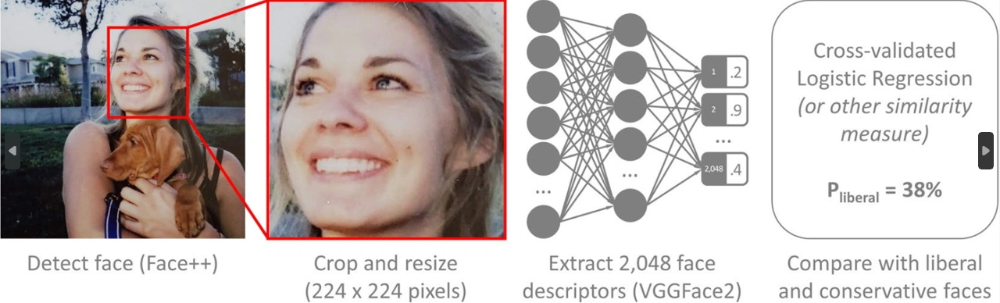
(Иллюстрация из https://www.nature.com/articles/s41598-020-79310-1 [Archive.org])
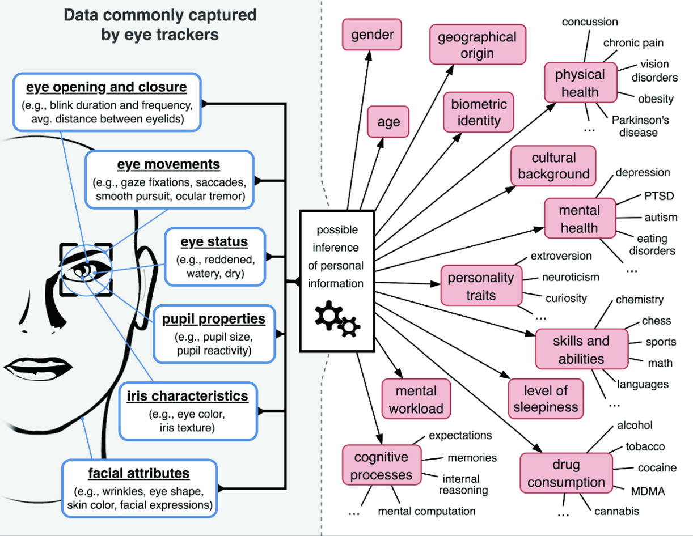
(иллюстрация из https://rd.springer.com/chapter/10.1007/978-3-030-42504-3_15 [Archive.org])
Эти платформы (Google/Facebook) уже знают, кто вы, по нескольким причинам:
-
Потому что у вас есть или был у них профиль, и вы назвали себя.
-
Даже если вы никогда не создавали профиль на этих платформах, он у вас все равно есть, даже не зная об этом168'169'170'171'172.
-
Потому что другие люди отметили вас или опознали вас на своих фотографиях с праздников/вечеринок.
-
Потому что другие люди поместили вашу фотографию в свой список контактов, которой затем поделились с ними.
Вот также содержательная демонстрация Microsoft Azure, которую вы можете попробовать сами по адресу https://azure.microsoft.com/en-us/services/cognitive-services/face/#demo, где вы можете распознавать эмоции и сравнивать лица на разных изображениях.
Правительства уже знают, кто вы, потому что у них есть фотографии вашего удостоверения личности/паспорта/водительских прав и они часто добавляют биометрические данные (отпечатки пальцев) в свою базу данных. Те же самые правительства интегрируют эти технологии (часто предоставляемые частными компаниями, такими как израильская Oosto173, Clearview AI174'175 или NEC176) в свои сети видеонаблюдения для поиска «лиц, представляющих интерес» 177. А некоторые государства, находящиеся под усиленным наблюдением, такие как Китай, широко используют распознавание лиц для различных целей178'179, включая, возможно, идентификацию этнических меньшинств180. Простая ошибка распознавания лица каким-либо алгоритмом может разрушить вашу жизнь181'182.
Вот некоторые ресурсы, подробно описывающие некоторые методы, используемые правоохранительными органами сегодня:
-
Видео CCC, объясняющее текущие возможности наблюдения правоохранительных органов: https://media.ccc.de/v/rc3-11406-spot_the_surveillance#t=761 [Archive.org]
-
EFF SLS: https://www.eff.org/sls [Archive.org]
Apple делает FaceID массовым явлением и продвигает его использование для входа во многие службы, включая банковские системы.
То же самое касается аутентификации по отпечатку пальца, которую многие производители смартфонов используют для аутентификации себя. Простую картинку с изображением ваших пальцев можно использовать для деанонимизации вас183'184'185'186.
То же самое и с вашим голосом, который можно анализировать для различных целей, как показано в недавнем патенте Spotify187.
Даже вашу радужку кое-где можно использовать для идентификации188.
Мы можем смело представить себе ближайшее будущее, в котором вы не сможете создавать учетные записи или входить где-либо без предоставления уникальных биометрических данных (подходящее время для повторного просмотра Gattaca189, Person of Interest190 и Minority Report191). И вы можете смело представить, насколько полезными могут быть эти большие биометрические базы данных для некоторых заинтересованных третьих сторон.
Кроме того, вся эта информация также может быть использована против вас (если вы уже деанонимизированы) с помощью deepfake192 путем создания ложной информации (изображений, видео, голосовых записей193...) и уже использовалась для таких целей194'195. Для этого есть даже коммерческие сервисы, такие как https://www.respeecher.com/ [Archive.org] и https://www.descript.com/overdub [Archive.org].
Посмотрите эту демонстрацию: https://www.youtube.com/watch?v=t5yw5cR79VA [Invidious]
В настоящее время есть несколько шагов196, которые вы можете использовать для уменьшения (и только уменьшения) распознавания лиц при выполнении конфиденциальных действий, где может присутствовать система видеонаблюдения:
-
Носите маску, поскольку доказано, что она превосходит некоторые технологии распознавания лиц197, но не все198.
-
Наденьте бейсболку или шляпу, чтобы не зафиксировать ваше лицо при опознании с помощью камер видеонаблюдения под большим углом (съемка сверху). Помните, что это не поможет против фронтальных камер.
-
Носите солнцезащитные очки в дополнение к маске и бейсболке, чтобы не опознать человека по чертам глаз.
-
Подумайте о том, чтобы носить специальные солнцезащитные очки (к сожалению, дорогие) под названием "Reflectacles" https://www.reflectacles.com/ [Archive.org]. Было проведено небольшое исследование, показывающее их эффективность против систем распознавания лиц IBM и Amazon199.
-
Все это может оказаться бесполезным из-за упомянутого ранее распознавания походки, но здесь может быть надежда, если у вас есть 3D-принтер: https://gitlab.com/FG-01/fg-01 [Archive.org]
(см. [Распознавание походки и другие биометрические данные дальнего действия])
(Обратите внимание: если вы собираетесь использовать их там, где установлены передовые системы распознавания лиц, эти меры сами по себе могут пометить вас как подозрительных и вызвать проверку человеком)
Фишинг и социальная инженерияλ
Фишинг200 — это атака социальной инженерии201, при которой злоумышленник может попытаться получить от вас информацию, притворяясь или выдавая себя за что-то/кого-то другого.
Типичным случаем является злоумышленник, использующий атаку «человек посередине» 95 или поддельное электронное письмо/звонок с целью запросить ваши учетные данные для услуги. Это может быть, например, посредством электронной почты или путем выдачи себя за финансовые услуги.
Такие атаки также могут использоваться для деанонимизации кого-либо, заставляя его загрузить вредоносное ПО или со временем раскрыть личную информацию. Единственная защита от них — не поддаваться им и здравому смыслу.
Они использовались бесчисленное количество раз с момента появления Интернета, и самый обычный из них называется «мошенничеством 419» (см. https://en.wikipedia.org/wiki/Advance-fee_scam [Wikiless] [Archive.org]).
Если вы хотите узнать больше о типах фишинга, вот хорошее видео: Black Hat, Ихтиология: фишинг как наука https://www.youtube.com/watch?v=Z20XNp-luNA [Invidious].
Вредоносные программы, эксплойты и вирусыλ
Вредоносное ПО в ваших файлах/документах/электронной почтеλ
Используя стеганографию или другие методы, можно легко внедрить вредоносное ПО в распространенные форматы файлов, такие как документы Office, изображения, видео, PDF-документы...
Это могут быть как простые ссылки отслеживания в формате HTML, так и сложные целевые вредоносные программы.
Это могут быть простые изображения размером в пиксель202, спрятанные в ваших электронных письмах, которые будут вызывать удаленный сервер, чтобы попытаться получить ваш IP-адрес.
Это может быть эксплуатация уязвимости в устаревшем формате или устаревшей читалке203. Такие эксплойты могут быть использованы для компрометации вашей системы.
Посмотрите эти хорошие видео для получения дополнительных объяснений по этому вопросу:
-
Что такое формат файла? https://www.youtube.com/watch?v=VVdmmN0su6E [Invidious]
-
Анж Альбертини: необычные форматы файлов: https://www.youtube.com/watch?v=hdCs6bPM4is [Invidious]
Всегда следует проявлять крайнюю осторожность. См. раздел Виртуализация, чтобы предотвратить утечку любой информации даже в случае открытия такого вредоносного файла.
Если вы хотите узнать, как попытаться обнаружить такое вредоносное ПО, см. раздел Проверка файлов на наличие вредоносного ПО.
Вредоносное ПО и эксплойты в ваших приложениях и сервисахλ
Итак, вы используете Tor Browser или Brave Browser поверх Tor. Вы можете использовать их через VPN для дополнительной безопасности. Но вы должны иметь в виду, что существуют эксплойты204 (хаки), которые могут быть известны злоумышленнику (но неизвестны поставщику приложения/браузера). Такие эксплойты могут быть использованы для компрометации вашей системы и раскрытия данных для деанонимизации вас, таких как ваш IP-адрес или другие данные.
Реальным примером использования этой техники был случай Freedom Hosting205 в 2013 году, когда ФБР внедрило вредоносное ПО 206 с помощью эксплойта браузера Firefox на веб-сайт Tor. Этот эксплойт позволил им раскрыть информацию о некоторых пользователях. Совсем недавно произошел примечательный взлом SolarWinds207, который взломал несколько правительственных учреждений США, вставив вредоносное ПО на официальный сервер обновлений программного обеспечения.
В некоторых странах вредоносное ПО является обязательным и/или распространяется самим государством. Так обстоит дело, например, в Китае с WeChat208, который затем можно использовать в сочетании с другими данными для государственного наблюдения209.
Существует бесчисленное множество примеров вредоносных расширений браузера, приложений для смартфонов и различных приложений, в которые на протяжении многих лет проникали вредоносные программы.
Вот несколько шагов для смягчения этого типа атаки:
- Никогда не следует доверять на 100 % приложениям, которые вы используете.
- Перед использованием всегда следует проверять, что вы используете обновленную версию таких приложений, и в идеале проверять каждую загрузку, используя их подпись, если таковая имеется.
- Не следует использовать такие приложения непосредственно из аппаратной системы, а вместо этого использовать виртуальную машину для разделения.
Чтобы отразить эти рекомендации, это руководство позже поможет вам использовать виртуализацию (см. Виртуализация, так что даже если ваш браузер/приложения будут скомпрометированы опытным злоумышленником, этот злоумышленник застрянет в песочнице210, не имея возможности получить доступ к идентифицирующей информации или поставить под угрозу вашу систему.
Вредоносные USB-устройстваλ
Существуют легко доступные коммерческие и дешевые устройства «badUSB» 211, которые могут развертывать вредоносное ПО, регистрировать вводимый вами текст, определять ваше местоположение, прослушивать вас или получать контроль над вашим ноутбуком, просто подключив их. Вот несколько примеров, которые вы уже можете купить самостоятельно:
-
Hak5, USB Rubber Ducky https://shop.hak5.org/products/usb-rubber-ducky-deluxe [Archive.org]
-
Hak5, кабель O.MG https://www.youtube.com/watch?v=V5mBJHotZv0 [Invidious]
-
AliExpress https://www.aliexpress.com/i/4000710369016.html [Archive.org]
Такие устройства могут быть имплантированы злоумышленником куда угодно (кабель для зарядки, мышь, клавиатура, USB-ключ...) и могут использоваться для отслеживания вас или взлома вашего компьютера или смартфона. Самым ярким примером таких атак, вероятно, является Stuxnet212 в 2005 году.
Хотя вы можете физически проверить USB-ключ, отсканировать его с помощью различных утилит, проверить различные компоненты на предмет их подлинности, вы, скорее всего, никогда не сможете обнаружить сложное вредоносное ПО, внедренное в подлинные части подлинного USB-ключа опытным злоумышленником без передового криминалистического оборудования213.
Чтобы смягчить это, никогда не следует доверять таким устройствам и подключать их к чувствительному оборудованию. Если вы используете зарядное устройство, вам следует рассмотреть возможность использования USB-устройства блокировки данных, которое позволяет только заряжать, но не передавать данные. Такие устройства блокировки данных сейчас легко доступны во многих интернет-магазинах. Вам также следует рассмотреть возможность полного отключения USB-портов в BIOS вашего компьютера, если они вам не нужны (если вы можете).
Вредоносное ПО и бэкдоры в вашем оборудовании. Прошивка и операционная система { #firmware-backdoors }.λ
Это может показаться немного знакомым, поскольку ранее это уже частично рассматривалось в разделе Ваш процессор.
Вредоносное ПО и бэкдоры могут быть встроены непосредственно в ваши аппаратные компоненты. Иногда эти бэкдоры реализуются самим производителем, например IME в случае процессоров Intel. А в других случаях такие бэкдоры могут быть реализованы третьей стороной, которая встает между заказом нового оборудования и доставкой клиенту214.
Подобные вредоносные программы и бэкдоры также могут быть развернуты злоумышленником с использованием программных эксплойтов. Многие из них в мире технологий называются руткитами 215. Обычно эти типы вредоносных программ труднее обнаружить и обезвредить, поскольку они реализованы на более низком уровне, чем пользовательское пространство216, и часто в прошивке 217 самих аппаратных компонентов.
Что такое прошивка? Прошивка — это низкоуровневая операционная система для устройств. Каждый компонент вашего компьютера, вероятно, имеет встроенное ПО, включая, например, ваши дисководы. Например, система BIOS218/UEFI219 вашего компьютера представляет собой тип прошивки.
Они могут обеспечить удаленное управление и полный контроль над целевой системой бесшумно и незаметно.
Как упоминалось ранее, пользователям труднее обнаружить их, но можно предпринять некоторые ограниченные шаги, чтобы смягчить некоторые из них, защитив ваше устройство от взлома и применив некоторые меры (например, перепрошивку биоса). К сожалению, если такое вредоносное ПО или бэкдор реализовано самим производителем, обнаружить и отключить их становится чрезвычайно сложно.
Примечание. Угрозы, описанные в этом разделе, почти исключительно относятся к важным целям противников национальных государств. Если ваша модель угрозы — это сталкер, корпоративный конкурент или даже большинство правоохранительных органов, вы можете пропустить этот раздел. Если вы журналист, диссидент или активист, действующий против противника на государственном уровне, прочтите это.
Большинство руководств по анонимности сосредоточены на угрозах программного обеспечения и сетевого уровня. Атаки на физическом и аппаратном уровне встречаются реже, их реализация дороже и требует либо физического доступа к вашему устройству, либо вмешательства в вашу цепочку поставок. Эта стоимость означает, что они не используются случайно. Но для правильной цели они чрезвычайно эффективны, потому что никакая конфигурация программного обеспечения не защитит вас, если аппаратное обеспечение будет скомпрометировано.
Прошивка имплантовλ
Импланты прошивки — это вредоносный код, внедренный в низкоуровневое программное обеспечение, которое запускается до загрузки операционной системы — в UEFI/BIOS534, прошивку контроллера хранилища или прошивку сетевой карты. Поскольку они живут под операционной системой, они выдерживают переустановку операционной системы, очистку диска и большинство судебно-медицинских экспертиз.
LoJax535, обнаруженный компанией ESET в 2018 году, был первым публично задокументированным руткитом UEFI, принадлежащим группе APT28 (Fancy Bear). Он записал вредоносный модуль непосредственно во флэш-память SPI прошивки UEFI, сохраняясь при переустановке ОС и даже при замене жесткого диска. MosaicRegressor536, задокументированный Касперским в 2020 году, аналогичным образом был имплантирован в UEFI и обнаружен на устройствах, принадлежащих сотрудникам НПО и журналистам, контактирующим с Северной Кореей.
Кто сталкивается с этой угрозой? В обоих задокументированных случаях целями были работники НПО, журналисты и дипломатический персонал – люди, чьи устройства прошли через руки государственных деятелей или которые стали объектом сложного целевого фишинга, который обеспечивал удаленный доступ к записи прошивки. Это не угроза, которая масштабируется до массового развертывания. Его применяют хирургическим путем против конкретных особо ценных личностей.
Способы смягчения ограничены, но их стоит понять. Безопасная загрузка UEFI304 проверяет криптографические подписи загрузчика и компонентов ОС перед выполнением, предотвращая запуск неподписанного кода при загрузке. Однако это не защищает от компрометации самой прошивки — если UEFI уже был изменен, Secure Boot можно отключить или обойти изнутри. Это значимая защита от злоумышленников, которые еще не получили доступ на уровне встроенного ПО, но это не является корнем доверия при наличии встроенного ПО. Intel Boot Guard и его эквиваленты AMD идут еще дальше, объединяя хэш исходной прошивки с оборудованием во время производства, что позволяет обнаружить модификацию прошивки. Heads537 — это альтернативная прошивка с открытым исходным кодом для поддерживаемого оборудования (в первую очередь Thinkpads и некоторых машин System76), которая обеспечивает измеренную загрузку, аттестацию с поддержкой TPM и обнаружение несанкционированного доступа — и является наиболее практичным вариантом для пользователей с высоким уровнем риска, которым требуется проверяемая целостность прошивки. См. также: О безопасной загрузке.
Аппаратное обеспечение для атак через USBλ
Инструменты атак на основе USB коммерчески доступны и широко известны. Кабель O.MG — это USB-кабель со встроенным беспроводным имплантатом, визуально и функционально неотличимый от обычного зарядного кабеля, который может выполнять нажатия клавиш, извлекать данные и принимать удаленные команды через Wi-Fi. USB Rubber Ducky и более широкое семейство продуктов Hak5 представляются целевому компьютеру как клавиатура, выполняющая предварительно загруженные полезные данные для ввода нажатий клавиш со скоростью, с которой не может сравниться ни один машинист. См. также: Вредоносные USB-устройства.
Распознавание затруднено. Кабели O.MG разработаны специально для предотвращения визуального контроля. Практические меры по снижению риска включают в себя: никогда не использовать кабели или USB-устройства, которые вы не приобрели самостоятельно и получили в запечатанном виде, использовать USB-блокировщик данных («USB-презерватив») при зарядке от ненадежных портов и настроить операционную систему так, чтобы она требовала подтверждения перед доверием к новым USB-устройствам (USBGuard в Linux538; эта функция изначально недоступна в Windows без сторонних инструментов).
Злая горничная атакуетλ
Подробнее об атаках Злой Девы см.: Атака Злой Девы.
Смягчения:
- Никогда не оставляйте свое устройство без присмотра в среде высокого риска. Это единственное полное средство защиты.
- Измеренная загрузка с аттестацией TPM (как предоставлено Heads или правильно настроенной настройкой UEFI + TPM) обнаружит вмешательство в загрузчик путем сравнения измерений с заведомо верными значениями, хранящимися в TPM.
- Защитная пломба на корпусе устройства (лак для ногтей, нанесенный на винты и сфотографированный, или коммерческие наклейки с защитой от несанкционированного доступа) обеспечивает низкотехнологичный уровень обнаружения, который удивительно эффективен против неискушенных злоумышленников.
Компрометация цепочки поставокλ
Атаки в цепочке поставок нацелены на ваше устройство еще до того, как оно достигнет вас — на этапе производителя, дистрибьютора или доставки. В каталоге ANT 539 АНБ, опубликованном Сноуденом в 2013 году, документированы аппаратные имплантаты, установленные в маршрутизаторах Cisco и другом сетевом оборудовании при транспортировке. Для большинства пользователей эта угроза нереальна. Для высокопоставленного диссидента, юриста по правам человека или источника разведки в стране, правительство которой имеет влияние на цепочки поставок оборудования, это заслуживает внимания.
Практические меры по смягчению последствий ограничены. Покупка устройств лично в розничном магазине (а не их доставка) сокращает окно перехвата. Предпочтение оборудованию от поставщиков, находящихся за пределами цепочки поставок противника, и использование оборудования, поддерживаемого Heads, с проверенной прошивкой дает некоторую уверенность. В случаях наивысшего риска учтите, что любое устройство, вышедшее из-под вашего контроля (даже на короткое время), следует рассматривать как потенциально скомпрометированное.
Контрольный список физического осмотраλ
Для лиц из группы высокого риска, получающих устройство или возвращающихся к нему:
- Осмотрите отверстия портов (USB, Thunderbolt, слот для SD-карты) на наличие посторонних предметов или остатков.
- Проверить винты на наличие царапин, не соответствующих заводской сборке; после проверки наложите пломбировку, предупреждающую несанкционированный доступ.
- Сравните кабель, который вы собираетесь использовать, с заведомо исправным эталоном; если есть сомнения, откажитесь от него.
- При первой загрузке после любого периода автоматического доступа проверьте измерения встроенного ПО, если ваша платформа его поддерживает (журнал событий Heads TPM;
tpm2-toolsв Linux). - Если безопасная загрузка неожиданно отключена в настройках UEFI, считайте устройство скомпрометированным.
Ваши файлы, документы, изображения и видеоλ
Свойства и метаданныеλ
Это может быть очевидно для многих, но не для всех. К большинству файлов прикреплены метаданные. Хорошими примерами являются изображения, хранящие информацию EXIF220, которая может содержать много информации, такой как координаты GPS, модель камеры/телефона, и когда именно это было сделано. Хотя эта информация может не указывать напрямую, кто вы, она может точно сказать, где вы находились в определенный момент, что может позволить другим использовать различные источники, чтобы найти вас (например, камеры видеонаблюдения или другие кадры, снятые в том же месте в одно и то же время во время протеста). Вы должны проверить любой файл, который вы разместите на этих платформах, на наличие каких-либо свойств, которые могут содержать любую информацию, которая может привести к вам.
Вот пример данных EXIF, которые могут быть на изображении:
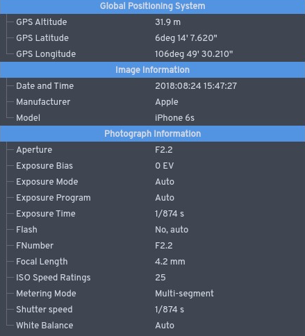
(Иллюстрация из Википедии)
Это также работает для видео. Да, видео тоже имеют геотеги, но многие об этом даже не подозревают. Вот, например, очень удобный инструмент для географического определения местоположения видео на YouTube: https://mattw.io/youtube-geofind/location [Archive.org]
По этой причине вам всегда нужно быть предельно осторожным при загрузке файлов с использованием вашей анонимной личности и проверять метаданные этих файлов.
Даже если вы публикуете простой текстовый файл, вам всегда следует дважды или трижды проверять его на предмет утечки информации перед публикацией. Некоторые рекомендации по этому поводу вы найдете в разделе Некоторые дополнительные меры против криминалистики в конце руководства.
Водяные знакиλ
Картинки, видео и аудиоλ
Изображения/видео часто содержат видимые водяные знаки, указывающие, кто является владельцем/создателем, но в различных продуктах также присутствуют невидимые водяные знаки, предназначенные для идентификации самого зрителя.
Итак, если вы информатор и думаете об утечке какого-либо изображения/аудио/видеофайла. Подумайте дважды. Есть вероятность, что они могут содержать невидимые водяные знаки, содержащие информацию о вас как о зрителе. Такие водяные знаки можно включить с помощью простого переключателя, например Zoom (Video221 или Audio222) или с помощью расширений 223 для популярных приложений, таких как Adobe Premiere Pro. Они могут быть вставлены различными системами управления контентом.
Недавний пример, когда кто-то разлил запись встречи Zoom, которую поймали из-за того, что на ней был водяной знак: https://theintercept.com/2021/01/18/leak-zoom-meeting/ [Tor Mirror] [Archive.org]
Такие водяные знаки могут быть вставлены различными продуктами224'225'226'227 с использованием стеганографии228 и могут противостоять сжатию229 и перекодировка230'231.
Эти водяные знаки нелегко обнаружить, и они позволяют идентифицировать источник, несмотря на все усилия.
Помимо водяных знаков, камера, используемая для съемки (и, следовательно, устройство, используемое для съемки), также может быть идентифицирована с помощью различных методов, таких как идентификация объектива232, что может привести к деанонимизации.
Будьте предельно осторожны при публикации видео/изображений/аудиофайлов с известных коммерческих платформ, поскольку они могут содержать такие невидимые водяные знаки в дополнение к деталям самих изображений. Гарантированной 100% защиты от них не существует. Вам придется руководствоваться здравым смыслом.
Водяные знаки принтераλ
Знаете ли вы, что ваш принтер, скорее всего, тоже шпионит за вами? Даже если он не подключен ни к какой сети? Обычно это известный факт многим людям в ИТ-сообществе, но немногим посторонним.
Да... Ваши принтеры могут быть использованы для вашей деанонимизации, как описано в EFF здесь https://www.eff.org/issues/printers [Archive.org]
В этом (старом, но все еще актуальном) видео объясняется, как это сделать из EFF: https://www.youtube.com/watch?v=izMGMsIZK4U [Invidious]
Многие принтеры печатают невидимый водяной знак, позволяющий идентифицировать принтер на каждой печатной странице. Это называется Стеганография принтера 233. Не существует реального способа смягчить это, кроме как проверить свой принтер и убедиться, что он не печатает невидимые водяные знаки. Это важно, если вы собираетесь печатать анонимно.
Вот (старый, но все еще актуальный) список принтеров и брендов, которые не печатают такие точки отслеживания, предоставленный EFF https://www.eff.org/pages/list-printers-which-do-or-do-not-display-tracking-dots [Archive.org]
Вот также несколько советов из документации Whonix (Печать и сканирование) [Archive.org]:
Никогда не печатайте в цвете: обычно без цветных тонеров/картриджей водяные знаки отсутствуют234.
Пиксельная или размытая информацияλ
Вы когда-нибудь видели документ с размытым текстом? Вы когда-нибудь смеялись над фильмами/сериалами, в которых «улучшают» изображение, чтобы восстановить информацию, которую, казалось бы, невозможно прочитать?
Что ж, существуют методы восстановления информации из таких документов, видео и изображений.
Вот, например, проект с открытым исходным кодом, который вы можете использовать для самостоятельного восстановления текста из некоторых размытых изображений: https://github.com/beurtschipper/Depix [Archive.org]
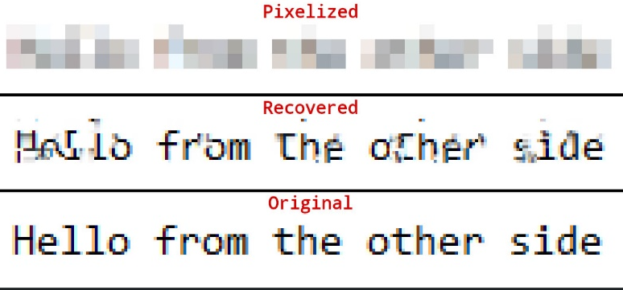
Это, конечно, проект с открытым исходным кодом, доступный для всех. Но вы можете себе представить, что подобные методы, вероятно, уже использовались другими противниками. Их можно использовать для раскрытия размытой информации из опубликованных документов, которую затем можно использовать для деанонимизации вас.
Существуют также руководства по использованию таких методов с использованием инструментов редактирования фотографий, таких как GIMP, например https://medium.com/@somdevsangwan/unblurring-images-for-osint-and-more-part-1-5ee36db6a70b [Archive.org], за которым следует https://medium.com/@somdevsangwan/deblurring-images-for-osint-part-2-ba564af8eb5d [Scribe.rip] [Archive.org]
Наконец, здесь вы найдете множество ресурсов по устранению размытия: https://github.com/subeeshvasu/Awesome-Deblurring [Archive.org]
Некоторые онлайн-сервисы могут даже в некоторой степени помочь вам сделать это автоматически, например, инструмент улучшения MyHeritage.com:
https://www.myheritage.com/photo-enhancer [Archive.org]
Вот результат изображения выше:
Конечно, на данном этапе этот инструмент больше похож на «угадывание», чем на устранение размытия, но его может быть достаточно, чтобы найти вас с помощью различных сервисов обратного поиска изображений.
Существуют также методы устранения размытия/депикселизации частей видео: см. https://positive.security/blog/video-depixelation [Archive.org].
По этой причине всегда чрезвычайно важно правильно редактировать и корректировать любой документ, который вы захотите опубликовать. Размытия недостаточно, и вам всегда следует полностью затемнить/удалить любые конфиденциальные данные, чтобы избежать любых попыток восстановить данные от любого злоумышленника. Не пикселизируйте, не размывайте, просто поместите жесткий черный прямоугольник, чтобы скрыть информацию.
Ваши криптотранзакцииλ
Вопреки распространенному мнению, криптотранзакции (такие как Биткойн и Эфириум) не являются анонимными235. Большинство криптовалют можно точно отслеживать с помощью различных методов236'237.
Помните, что они говорят на своей странице: https://bitcoin.org/en/you-need-to-know [Archive.org] и https://bitcoin.org/en/protect-your-privacy [Archive.org]: «Биткойн не анонимен».
Основная проблема заключается не в настройке случайного криптокошелька для получения некоторой валюты по адресу VPN/Tor (на данный момент кошелек анонимен). Проблема в основном возникает, когда вы хотите конвертировать фиатные деньги (евро, доллары...) в криптовалюту, а затем когда вы хотите обналичить свою криптовалюту. У вас будет мало реальных вариантов, кроме как перевести их на биржу (например, Coinbase/Kraken/Bitstamp/Binance). Эти биржи имеют известные адреса кошельков и будут вести подробные журналы (в соответствии с финансовыми правилами KYC238), а затем смогут отслеживать эти криптотранзакции до вас, используя финансовую систему 239.
Существуют некоторые криптовалюты, ориентированные на приватность/анонимность, такие как Monero, но даже у них есть некоторые предупреждения, на которые следует обратить внимание240'241.
Использование «частных» миксеров, тумблеров242 (централизованных сервисов, которые специализируются на «анонимизации» криптовалют путем их «смешивания») и коинджойнеров рискованно, поскольку вы не знаете, что на них происходит243, и их можно тривиально де-микшировать244. Их централизованно контролируемый характер также может создать вам проблемы, поскольку они более подвержены законам об отмывании денег245.
Это не означает, что вы вообще не можете использовать Биткойн анонимно. Фактически вы можете использовать Биткойн анонимно, если вы не конвертируете его в реальную валюту, используете биткойн-кошелек из безопасной анонимной сети, а также не используете повторно адреса и не объединяете выходные данные, которые использовались при тратах у разных продавцов. Это означает, что вам следует избегать правил KYC/AML различных бирж, избегать использования сети Биткойн с любого известного IP-адреса и использовать кошелек, который предоставляет инструменты сохранения приватности. См. Анонимные криптоплатежи.
В целом, лучшим вариантом использования Crypto с разумной анонимностью и приватностью по-прежнему является Monero, и в идеале вам не следует использовать какой-либо другой вариант для конфиденциальных транзакций, если вы не осведомлены о связанных с этим ограничениях и рисках. Пожалуйста, прочтите Отказ от ответственности Monero.
TLDR: используйте Monero!
Ваши облачные службы резервного копирования и синхронизацииλ
Все компании рекламируют использование сквозного шифрования (E2EE). Это справедливо практически для каждого приложения для обмена сообщениями и веб-сайта (HTTPS). Apple и Google рекламируют использование шифрования на своих устройствах Android и iPhone.
А как насчет ваших резервных копий? У вас есть автоматические резервные копии iCloud/Google Drive?
Что ж, вы должны знать, что большинство этих резервных копий не полностью зашифрованы и будут хранить часть вашей информации в открытом доступе для третьих лиц. Вы увидите их утверждения о том, что хранящиеся данные зашифрованы и безопасны для всех... За исключением того, что они обычно хранят ключ для доступа к некоторым данным самостоятельно. Эти ключи используются для индексации вашего контента, восстановления вашей учетной записи, сбора различной аналитики.
Доступны специализированные коммерческие решения для криминалистики (Magnet Axiom246, Cellebrite Cloud247), которые помогут злоумышленнику с легкостью проанализировать ваши облачные данные.
Известные примеры:
-
Apple iCloud: https://support.apple.com/en-us/HT202303 [Archive.org]: «Сообщения в iCloud также используют сквозное шифрование. Если у вас включено резервное копирование iCloud, ваша резервная копия включает копию ключа, защищающего ваши сообщения. Это гарантирует, что вы сможете восстановить свои сообщения, если вы потеряете доступ к iCloud». Брелок и ваши доверенные устройства».
-
Google Диск и WhatsApp: https://faq.whatsapp.com/android/chats/about-google-drive-backups/ [Archive.org]: «Мультимедиа и сообщения, для которых вы создаете резервные копии, не защищены сквозным шифрованием WhatsApp, пока находятся на Google Диске». Однако обратите внимание, что Facebook/Whatsapp объявили о выпуске зашифрованных резервных копий 14^ 2021 октября (https://about.fb.com/news/2021/10/end-to-end-encrypted-backups-on-whatsapp/ [Archive.org]), что должно решить эту проблему.
-
Dropbox: https://www.dropbox.com/privacy#terms [Archive.org] «Чтобы обеспечить эти и другие функции, Dropbox получает доступ, сохраняет и сканирует ваши материалы. Вы даете нам разрешение на эти действия, и это разрешение распространяется на наших филиалов и доверенных третьих лиц, с которыми мы работаем».
-
Microsoft OneDrive: https://privacy.microsoft.com/en-us/privacystatement [Archive.org]: продукты для повышения производительности и связи: «Когда вы используете OneDrive, мы собираем данные об использовании вами службы, а также о содержимом, которое вы храните, чтобы предоставлять, улучшать и защищать службы. Примеры включают индексирование содержимого ваших документов OneDrive, чтобы вы могли выполнять поиск. их позже и используя информацию о местоположении, чтобы вы могли искать фотографии в зависимости от того, где они были сделаны».
Вы не должны доверять поставщикам облачных услуг свои (ранее не зашифрованные локально) конфиденциальные данные, и вам следует с осторожностью относиться к их заявлениям о приватности. В большинстве случаев они могут получить доступ к вашим данным и предоставить их третьей стороне, если захотят248.
Единственный способ смягчить это — зашифровать ваши данные на своей стороне, а затем только загружать их в такие сервисы или просто не использовать их вообще.
Микроархитектурные атаки деанонимизации по побочным каналамλ
Была опубликована атака, которая может деанонимизировать пользователей, если у них есть известный псевдоним. Например, злоумышленник, пытающийся отследить деятельность журналиста, может использовать общедоступный дескриптор этого журналиста в Твиттере, чтобы связать его анонимную личность с общедоступной. Это нарушает разделение личности и может привести к полной деанонимизации даже тех пользователей, которые практикуют надлежащий OPSEC.
Атака, опубликованная по адресу https://leakuidatorplusteam.github.io/ [Archive.org], может быть смягчена с помощью известного расширения NoScript и будет нашей предпочтительной рекомендацией.
Одна слабо документированная атака может использовать следующий подход к снятию отпечатков пальцев: Алиса просматривает Интернет с помощью Firefox. Веб-сайт, который она только что посетила, использует невидимый iframe, который создает длинные строки, например предложения или хеши, для создания некоторой строки, недоступной для просмотра пользователем. Эти строки задают определенный тип шрифта Arial. Неважно, отображает ли это браузер, важно только изменение шрифта. iframe в этом случае не служит никакой цели, кроме как определить, установил ли пользователь определенный шрифт на свой компьютер. Если Алиса использует шрифт, который этот фрейм пытался отобразить, об этом сообщается обратно на веб-сайт и лицу, контролирующему веб-сайт.
Шрифт отображает вокруг себя поле определенной высоты и ширины, что означает определенную высоту и ширину текста, содержащегося внутри. iframe продолжает делать это для каждого установленного шрифта, чтобы создать список установленных шрифтов для Алисы. Из-за стилистических различий между каждым семейством шрифтов одна и та же строка и одинаковый размер шрифта будут иметь разную высоту и разную ширину, чем Arial. Он используется в качестве запасного шрифта для отображения текста, который в противном случае не будет отображаться, в случае, если у пользователя нет этого шрифта на своем компьютере и, следовательно, его невозможно просмотреть в браузере.
Если шрифт, запрошенный iframe, недоступен, для отображения этого текста пользователю будет использоваться Arial. Каждый раз, когда размер шрифта (определяемый размерами изготовленной коробки) менялся, это означает, что шрифт присутствует в браузере Алисы и на ее компьютере. Делая это для сотен шрифтов, веб-сайты могут использовать эту информацию для отслеживания пользователей, использующих установленные ими шрифты на других веб-сайтах. Представьте себе веб-сайт, который затем продает эту «анонимную» информацию в виде набора данных рекламным компаниям, чтобы они показывали вам рекламу на основе посещаемых вами веб-сайтов, поскольку они знают каждый шрифт, который вы установили на свой компьютер, и теперь могут отслеживать вашу личность в Интернете. Эта атака продемонстрирована здесь: [Все, что вы всегда хотели знать о снятии отпечатков пальцев веб-устройств (но боялись спросить)] (https://www.youtube.com/watch?v=5Y1Y96jC5AA) доктора Ника Никифоракиса, доктора компьютерных наук из Университета Левена. Он объясняет, как его команда исследователей определила, какие сайты использовали такие методы на 10 000 лучших веб-сайтов Alexa. Прежде всего, они обнаружили, что 145 из них снимали отпечатки пальцев с браузеров. Их отпечатки пальцев снимались в 100% случаев — использовали ли они заголовок «Не отслеживать», популярный параметр приватности и безопасности во многих браузерах, не имело значения.
Атак, таких как невидимые iframe и медиа-элементы, можно избежать, заблокировав все скрипты глобально, используя что-то вроде uBlock Origin https://chrome.google.com/webstore/detail/ublock-origin/cjpalhdlnbpafiamejdnhcphjbkeiagm или используя NoScript https://chrome.google.com/webstore/detail/noscript/doojmbjmlfjjnbmnoijecmcbfeoakpjm. Это настоятельно рекомендуется не только тем, кто желает сохранить анонимность, но и обычным пользователям Интернета.
Браузер Tor
Примечание. Эта атака теперь по умолчанию предотвращается обновлением NoScript (11.4.8 и выше) на всех уровнях безопасности в браузере Tor.
Все остальные
Установка расширения NoScript предотвратит атаку по умолчанию только в частной Windows с помощью новой «функции TabGuard». Но его можно включить в параметрах NoScript для работы во всех Windows. См.:
- Релизный твит: https://twitter.com/ma1/status/1557751019945299969 [Archive.org]
- Объяснение пользователя: https://noscript.net/usage/#crosstab-identity-leak-protection [Archive.org]
- Сообщение на форуме проекта Tor: https://forum.torproject.net/t/tor-browser-can-leak-your-identity-through-side-channel-attack/4005/2 [Archive.org]
- Расширение NoScript для Firefox (Firefox и другие браузеры на базе Firefox, кроме браузера Tor): https://addons.mozilla.org/en-US/firefox/addon/noscript/
- Расширение NoScript для браузеров на базе Chromium (Brave, Chrome, Edge и других браузеров на базе Chromium): https://chrome.google.com/webstore/detail/noscript/doojmbjmlfjjnbmnoijecmcbfeoakpjm?hl=en
Альтернатива NoScript для всех остальных браузеровλ
Исследователи, раскрывшие проблему, также предоставили расширение, доступное ниже. Опять же, в Tor Browser ничего не требуется**. Этот путь не является нашим предпочтительным путем, но он по-прежнему доступен, если вы не хотите использовать NoScript.
- Расширение Leakuidator+ для браузеров на базе Chromium (Brave, Chrome, Edge и других браузеров на базе Chromium): https://chrome.google.com/webstore/detail/leakuidator%2B/hhfpajcjkikoocmmhcimllpinjnbedll
- Расширение Leakuidator+ для Firefox (Firefox и других браузеров на базе Firefox, кроме Tor Browser): https://addons.mozilla.org/en-US/firefox/addon/leakuidatorplus/
Разделения удостоверений с помощью отдельных браузеров или даже виртуальных машин недостаточно, чтобы избежать этой атаки. Однако другое решение — убедиться, что, начиная работу с анонимным удостоверением, вы полностью закрываете все действия, связанные с другими удостоверениями. Уязвимость работает только в том случае, если вы активно вошли в систему под неанонимной учетной записью. Проблема в том, что это может помешать эффективному рабочему процессу, поскольку многозадачность для нескольких учетных записей становится невозможной.
Утечки локальных данных и судебная экспертизаλ
Большинство из вас, вероятно, видели достаточно криминальных драм на Netflix или по телевидению, чтобы знать, что такое криминалистика. Это технические специалисты (обычно работающие в правоохранительных органах), которые будут выполнять различные анализы доказательств. Это, конечно, может включать в себя ваш смартфон или ноутбук.
Хотя это может быть сделано противником, когда вы уже «обожжены», это также может быть сделано случайно во время обычного контроля или пограничной проверки. Эти несвязанные проверки могут раскрыть секретную информацию злоумышленникам, которые заранее не знали о такой деятельности.
Методы криминалистики сейчас очень продвинуты и могут выявить ошеломляющее количество информации с ваших устройств, даже если они зашифрованы251. Эти методы широко используются правоохранительными органами во всем мире, и их следует учитывать.
Вот некоторые недавние ресурсы о вашем смартфоне, которые вам следует прочитать:
-
UpTurn, широкие возможности правоохранительных органов США по поиску мобильных телефонов https://www.upturn.org/reports/2020/mass-extraction/ [Archive.org]
-
New-York Times, полиция, вероятно, может взломать ваш телефон https://www.nytimes.com/2020/10/21/technology/iphone-encryption-police.html [Archive.org]
-
Vice, полицейские по всей стране теперь могут разблокировать iPhone, как показывают записи https://www.vice.com/en/article/vbxxxd/unlock-iphone-ios11-graykey-grayshift-police [Archive.org]
Я также настоятельно рекомендую вам прочитать некоторые документы с точки зрения судебно-медицинского эксперта, такие как:
-
Руководство пользователя EnCase Forensic, http://encase-docs.opentext.com/documentation/encase/forensic/8.07/Content/Resources/External%20Files/EnCase%20Forensic%20v8.07%20User%20Guide.pdf [Archive.org]
-
Набор инструментов FTK Forensic Toolkit, https://accessdata.com/products-services/forensic-toolkit-ftk [Archive.org]
-
Видео SANS по цифровой криминалистике и реагированию на инциденты, https://www.youtube.com/c/SANSDigitalForensics/videos
И, наконец, вот очень поучительный подробный документ о текущем состоянии безопасности IOS/Android от Университета Джона Хопкинса: https://securephones.io/main.html252.
Когда дело доходит до вашего ноутбука, методы криминалистической экспертизы многочисленны и широко распространены. Многие из этих проблем можно решить, используя полное шифрование диска, виртуализацию (см. Виртуализация) и компартментализацию. Позже в этом руководстве будут подробно описаны такие угрозы и методы их устранения.
Плохая криптографияλ
В сообществе информационной безопасности часто бытует поговорка: «Не создавайте собственную криптовалюту!».
И на это есть причины253'254'255'256:
Мы бы не хотели, чтобы из-за этой поговорки люди отговаривались от обучения и инноваций в области криптографии. Поэтому вместо этого мы бы рекомендовали людям быть осторожными с «Создайте свою собственную криптовалюту», потому что это не обязательно хорошая криптовалюта:
— Хорошая криптография — дело непростое, и для ее разработки и доводки обычно требуются годы исследований.
-
Хорошая криптография прозрачна и не является проприетарным/закрытым исходным кодом, поэтому ее могут проверять коллеги.
-
Хорошая криптография разрабатывается тщательно, медленно и редко в одиночку.
-
Хорошая криптография обычно представлена и обсуждается на конференциях и публикуется в различных журналах.
-
Хорошая криптография проходит тщательную экспертную оценку, прежде чем ее выпустят для использования в реальных условиях.
— Правильное использование и внедрение существующей хорошей криптографии уже является непростой задачей.
Тем не менее, это не мешает некоторым делать это и публиковать различные производственные приложения/сервисы, используя собственную криптографию или собственные методы с закрытым исходным кодом:
-
Следует проявлять осторожность при использовании приложений/служб, использующих методы шифрования с закрытым исходным кодом или собственные методы. Все хорошие криптостандарты общедоступны и проверены экспертами, и не должно возникнуть проблем с раскрытием того, какой вы используете.
-
Следует с осторожностью относиться к приложениям/службам, использующим «модифицированный» или собственный криптографический метод257.
-
По умолчанию вы не должны доверять какой-либо «Создайте свою собственную криптовалюту», пока она не будет проверена, рецензирована, проверена и принята криптографическим сообществом258'259.
-
Не существует такого понятия, как «криптография военного уровня» 260'261'262.
Криптография — сложная тема, и плохая криптография может легко привести к вашей деанонимизации.
В контексте данного руководства мы рекомендуем придерживаться Приложений/Сервисов, используя хорошо зарекомендовавшие себя, опубликованные и проверенные экспертами методы.
Итак, чему отдать предпочтение и чего следует избегать в 2021 году? Вам придется самостоятельно посмотреть технические подробности каждого приложения и посмотреть, используют ли они «плохую криптовалюту» или «хорошую криптовалюту». Как только вы получите технические подробности, вы можете проверить эту страницу, чтобы узнать, сколько она стоит: https://latacora.micro.blog/2018/04/03/cryptographic-right-answers.html [Archive.org]
Вот несколько примеров:
-
Хэши:
- Предпочитаю: SHA-3 или BLAKE2263
-
Все еще относительно нормально использовать: SHA-2 (например, широко используемые SHA-256 или SHA-512)
- Избегайте: SHA-1, MD5 (к сожалению, все еще широко используются), CRC, MD6 (редко используются).
-
Шифрование файлов/дисков:
-
Предпочитаю:
-
Аппаратное ускорение264: AES (Rijndael) 256 бит с HMAC-SHA-2 или HMAC-SHA-3 (это то, что Veracrypt, Bitlocker, Filevault 2, KeepassXC и LUKS используют по умолчанию). Предпочитайте SHA-3.
-
Неаппаратное ускорение: то же, что ускорение выше, или, если оно доступно, рассмотрите:
-
ChaCha20265 или XChaCha20 (Вы можете использовать ChaCha20 с Kryptor https://www.kryptor.co.uk, к сожалению, он недоступен с Veracrypt).
-
Змей266
-
ДвеРыбы267
-
-
-
Избегайте: практически всего остального.
-
-
Хранение паролей:
- Предпочитаю: Аргон2, скрипт
- Если это не вариант, используйте bcrypt или, если это невозможно, хотя бы PBKDF2 (только в крайнем случае)
-
Относитесь скептически к Argon2d, поскольку он уязвим для некоторых форм побочных каналов. Предпочитаю Argon2i или Argon2id
-
Избегайте: SHA-3, SHA-2, SHA-1, MD5.
-
Безопасность браузера (HTTPS):
-
Предпочитаю: TLS 1.3 (в идеале TLS 1.3 с поддержкой ECH/eSNI) или хотя бы TLS 1.2 (широко используемый)
-
Избегайте: всего остального (TLS =<1.1, SSL =<3).
-
-
Подписание сообщений/файлов с помощью GnuPG (GPG):
-
Предпочитайте ECDSA (ed25519)+ECDH (ec25519) или RSA 4096 бит*
- Рассмотрим более современную268 альтернативу PGP/GPG: Minisign https://jedisct1.github.io/minisign/ [Archive.org]
-
Избегайте: RSA 2048 бит.
-
-
SSH-ключи:
-
ED25519 (предпочтительно) или RSA 4096 бит*
-
Избегайте: RSA 2048 бит.
-
-
Внимание: RSA и ED25519, к сожалению, не считаются «квантово-устойчивыми»269 и хотя они еще не взломаны, они, вероятно, будут взломаны когда-нибудь в будущем. Это всего лишь вопрос времени, а не того, будет ли RSA когда-либо сломан. Таким образом, в этих контекстах они предпочтительнее из-за отсутствия лучшей возможности.
Вот несколько реальных случаев проблем с плохой криптографией:
-
Telegram: https://democratic-europe.eu/2021/07/20/cryptographers-uncover-four-vulnerabilities-in-telegram/ [Archive.org]
-
Telegram: https://buttondown.email/cryptography-dispatches/archive/cryptography-dispatches-the-most-backdoor-looking/ [Archive.org]
-
Некоторые другие примеры можно найти здесь: https://www.cryptofails.com/ [Archive.org]
Позже это руководство не будет рекомендовать «плохую криптографию», и, надеюсь, этого будет достаточно, чтобы защитить вас?
Нет политик журналаλ
Многие люди полагают, что службы, ориентированные на приватность, такие как VPN или поставщики электронной почты, безопасны благодаря своей политике отсутствия регистрации или схемам шифрования. К сожалению, многие из этих же людей забывают, что все эти провайдеры являются законными коммерческими организациями, подчиняющимися законам стран, в которых они работают.
Любой из этих провайдеров может быть вынужден молча (без вашего ведома (с использованием, например, постановления суда с запретом на молчание270 или письма национальной безопасности271) регистрировать вашу активность, чтобы деанонимизировать вас. В последнее время было несколько таких примеров:
-
2021, Протон, Протон зарегистрировал IP-адрес французского активиста по приказу швейцарских властей (ссылка на источник недоступна).
-
2021, WindScribe, серверы не были зашифрованы, поскольку они должны были допускать атаки MITM со стороны властей.272.
-
2021 г.: серверы DoubleVPN, журналы и информация об учетных записях изъяты правоохранительными органами.273.
-
2021 г. Немецкий почтовый провайдер Tutanota был вынужден следить за конкретными учетными записями в течение 3 месяцев274.
-
2020 г. Немецкий почтовый провайдер Tutanota был вынужден внедрить бэкдор для перехвата и сохранения копий незашифрованных электронных писем одного пользователя275 (они не расшифровали сохраненную электронную почту).
-
В 2017 году PureVPN была вынуждена раскрыть информацию одного пользователя FBI276.
-
В 2014 г. пользователь EarthVPN был арестован на основании данных поставщика журналов голландской полиции277.
-
2013 г.: провайдер защищенной электронной почты Lavabit закрывается после нарушения секретного приказа о неразглашении информации278.
-
2011 г. пользователь HideMyAss был деанонимизирован, а логи были предоставлены FBI279.
Некоторые провайдеры внедрили использование Warrant Canary280, который позволит их пользователям узнать, были ли они скомпрометированы такими заказами, но, насколько нам известно, это еще не тестировалось.
Наконец, теперь хорошо известно, что некоторые компании могут спонсировать внешние интерфейсы для некоторых государственных противников (см. историю Crypto AG281 и историю Omnisec282).
По этим причинам вы не должны доверять таким поставщикам своей приватности, несмотря на все их претензии. В большинстве случаев вы будете последним человеком, который узнает, подверглись ли какие-либо ваши учетные записи таким приказам, и, возможно, вы вообще никогда не узнаете.
Чтобы смягчить это, в тех случаях, когда вы хотите использовать VPN, мы рекомендуем использовать поставщика VPN, оплачиваемого наличными или Monero, через Tor, чтобы служба VPN не узнала какую-либо идентифицирующую информацию о вас.
Если провайдер VPN ничего о вас не знает, он должен устранить любую проблему, связанную с тем, что он не регистрирует данные, а все равно регистрирует их.
Некоторые продвинутые целевые методыλ
(Иллюстрация: отличный фильм, который мы очень рекомендуем: Das Leben der Anderen283)
Опытные злоумышленники могут использовать множество продвинутых методов284 для обхода ваших мер безопасности, если они уже знают, где находятся ваши устройства. Многие из этих методов подробно описаны здесь https://cyber.bgu.ac.il/advanced-cyber/airgap [Archive.org] (страница исследования Air-Gap, Центр исследований кибербезопасности, Университет Бен-Гуриона в Негеве, Израиль), а также в этом отчете https://www.welivesecurity.com/wp-content/uploads/2021/12/eset_jumping_the_air_gap_wp.pdf [Archive.org] (ESET, JUMPING THE AIR GAP: 15 лет усилий национального государства) и включают:
-
Атаки, требующие внедрения вредоносного ПО:
-
Эксфильтрация данных через зараженный вредоносным ПО маршрутизатор: https://www.youtube.com/watch?v=mSNt4h7EDKo [Invidious]
-
Эксфильтрация данных путем наблюдения за изменением освещенности на клавиатуре с подсветкой и взломанной камерой: https://www.youtube.com/watch?v=1kBGDHVr7x0 [Invidious]
-
Эксфильтрация данных через взломанную камеру видеонаблюдения (которая могла сначала использовать предыдущую атаку) https://www.youtube.com/watch?v=om5fNqKjj2M [Invidious]
-
Связь от постороннего лица со взломанными камерами видеонаблюдения посредством ИК-световых сигналов: https://www.youtube.com/watch?v=auoYKSzdOj4 [Invidious]
-
-
Эксфильтрация данных со взломанного компьютера с воздушным зазором посредством акустического анализа шумов вентилятора с помощью смартфона https://www.youtube.com/watch?v=v2_sZIfZkDQ [Invidious]
-
Эксфильтрация данных с зараженного вредоносным ПО компьютера с воздушным зазором через HD-светодиоды с помощью дрона https://www.youtube.com/watch?v=4vIu8ld68fc [Invidious]
-
Утечка данных с вредоносного ПО USB на изолированном компьютере посредством электромагнитных помех https://www.youtube.com/watch?v=E28V1t-k8Hk [Invidious]
-
Эксфильтрация данных с зараженного вредоносным ПО жесткого диска посредством скрытого акустического шума https://www.youtube.com/watch?v=H7lQXmSLiP8 [Invidious]
-
Эксфильтрация данных через частоты GSM со скомпрометированного (с вредоносным ПО) изолированного компьютера https://www.youtube.com/watch?v=RChj7Mg3rC4 [Invidious]
-
Утечка данных посредством электромагнитного излучения со взломанного устройства отображения https://www.youtube.com/watch?v=2OzTWiGl1rM&t=20s [Invidious]
-
Эксфильтрация данных с помощью магнитных волн со взломанного компьютера с воздушным зазором на смартфон, хранящийся в сумке Фарадея https://www.youtube.com/watch?v=yz8E5n1Tzlo [Invidious]
-
Связь между двумя взломанными компьютерами с воздушным зазором с помощью ультразвуковых звуковых волн https://www.youtube.com/watch?v=yz8E5n1Tzlo [Invidious]
-
Экспортирование биткойн-кошелька со взломанного изолированного компьютера на смартфон https://www.youtube.com/watch?v=2WtiHZNeveY [Invidious]
-
-
Эксфильтрация данных со взломанного компьютера с воздушным зазором с использованием яркости дисплея https://www.youtube.com/watch?v=ZrkZUO2g4DE [Invidious]
-
Утечка данных со взломанного компьютера с воздушной заглушкой посредством вибрации https://www.youtube.com/watch?v=XGD343nq1dg [Invidious]
-
Эксфильтрация данных со взломанного компьютера с воздушным зазором путем превращения оперативной памяти в передатчик Wi-Fi https://www.youtube.com/watch?v=vhNnc0ln63c [Invidious]
-
Эксфильтрация данных со взломанного компьютера с воздушным зазором через линии электропередачи https://arxiv.org/pdf/1804.04014.pdf [Archive.org]
-
-
Атаки, не требующие вредоносного ПО:
-
Наблюдение за глухой стеной в комнате на расстоянии, чтобы определить, сколько людей находится в комнате и что они делают285. Публикация с демонстрацией: http://wallcamera.csail.mit.edu/ [Archive.org]
-
Наблюдение за светоотражающим пакетом с закусками в комнате на расстоянии позволяет восстановить всю комнату286. Публикация с примерами фотографий: https://arxiv.org/pdf/2001.04642.pdf [Archive.org]
-
Измерение вибрации пола для идентификации людей и определения их состояния здоровья и настроения287. Публикация с демонстрацией: https://engineering.cmu.edu/news-events/news/2020/02/17-mauraders-map.html [Archive.org]
-
Наблюдение за лампочкой на расстоянии, чтобы слушать звук в комнате288 без каких-либо вредоносных программ: Демонстрация: https://www.youtube.com/watch?v=t32QvpfOHqw [Invidious]. Следует отметить, что этот тип атаки вовсе не нов, и статьи о таких методах были опубликованы еще в 2013 году289, и вы даже можете купить устройства для выполнения этого самостоятельно, например здесь: http://www.gcomtech.com/ccp0-prodshow/laser-surveillance-laser-listening.html [Archive.org]
-
Вот также хорошее видео от тех же авторов, поясняющее эти темы: Black Hat, The Air-Gap Jumper https://www.youtube.com/watch?v=YKRtFgunyj4 [Invidious]
На самом деле, это руководство мало поможет против таких злоумышленников, поскольку такое вредоносное ПО может быть внедрено в устройства производителем, любым посредником290 или любым лицом, имеющим физический доступ к изолированному компьютеру, но все же есть некоторые способы минимизировать влияние таких методов:
-
Не выполняйте чувствительные действия при подключении к ненадежной/незащищенной линии электропередачи, чтобы предотвратить утечки в линии электропередачи.
-
Не используйте свои устройства перед камерой, которая может быть взломана.
-
Используйте свои устройства в звукоизолированном помещении, чтобы предотвратить утечку звука.
-
Используйте свои устройства в клетке Фарадея, чтобы предотвратить электромагнитные утечки.
-
Не рассказывайте конфиденциальную информацию там, где лампочки можно увидеть снаружи.
-
Покупайте свои устройства в разных/непредсказуемых/автономных местах (магазинах), где вероятность их заражения таким вредоносным ПО ниже.
-
Не позволяйте никому получать доступ к вашим изолированным компьютерам, кроме доверенных лиц.
Некоторые бонусные ресурсыλ
-
Ознакомьтесь с документацией Whonix, касающейся методов сбора данных, здесь: Методы сбора данных [Archive.org]
-
Вам также может быть интересен этот сервис https://tosdr.org/ [Archive.org] (Условия предоставления услуг, не читал), который даст вам хороший обзор различных Условий обслуживания многих сервисов.
-
Посетите https://www.eff.org/issues/privacy [Archive.org], чтобы найти дополнительные ресурсы.
-
Посетите сайт https://en.wikipedia.org/wiki/List_of_government_mass_surveillance_projects [Wikiless] [Archive.org], чтобы получить обзор всех известных проектов массового наблюдения, текущих и прошлых.
-
Взгляните на https://www.gwern.net/Death-Note-Anonymity [Archive.org] (даже если вы не знаете о Death Note).
-
Рассмотрите возможность найти и прочитать книгу Майкла Баззелла «Техники разведки с открытым исходным кодом» (восьмое издание на момент написания статьи, чтобы узнать больше о последних методах OSINT) https://inteltechniques.com/book1.html
-
Наконец, проверьте https://www.freehaven.net/anonbib/date.html [Archive.org], чтобы найти последние научные статьи, посвященные анонимности в Интернете.
Примечания
Если вы все еще не считаете, что такая информация может использоваться различными субъектами для отслеживания вас, вы можете сами просмотреть некоторую статистику для некоторых платформ и иметь в виду, что она учитывает только законные запросы данных и не учитывает такие вещи, как PRISM, MUSCULAR, SORM или XKEYSCORE, описанные ранее:
-
Отчет Google о прозрачности https://transparencyreport.google.com/user-data/overview [Archive.org]
-
Отчет о прозрачности Facebook https://transparency.facebook.com/ [Archive.org]
-
Отчет Apple о прозрачности https://www.apple.com/legal/transparency/ [Archive.org]
-
Отчет о прозрачности Cloudflare https://www.cloudflare.com/transparency/ [Archive.org]
-
Отчет о прозрачности Snapchat https://www.snap.com/en-US/privacy/transparency [Archive.org]
-
Отчет о прозрачности Telegram https://t.me/transparency [Archive.org] (требуется установленный Telegram)
-
Отчет Microsoft о прозрачности https://www.microsoft.com/en-us/corporate-responsibility/law-enforcement-requests-report [Archive.org]
-
Отчет о прозрачности Amazon https://www.amazon.com/gp/help/customer/display.html?nodeId=GYSDRGWQ2C2CRYEF [Archive.org]
-
Отчет о прозрачности Dropbox https://www.dropbox.com/transparency [Archive.org]
-
Отчет о прозрачности Discord https://discord.com/blog/discord-transparency-report-q1-2022 [Archive.org]
-
Отчет GitHub о прозрачности https://github.blog/2021-02-25-2020-transparency-report/ [Archive.org]
-
Отчет о прозрачности Snapchat https://www.snap.com/en-US/privacy/transparency/ [Archive.org]
-
Отчет о прозрачности TikTok https://www.tiktok.com/transparency/en/information-requests-2021-2/ [Archive.org]
-
Отчет о прозрачности Reddit https://www.redditinc.com/policies/transparency-report-2021 [Archive.org]
-
Отчет о прозрачности Твиттера https://transparency.twitter.com/ [Archive.org]
Общие приготовленияλ
Лично в контексте этого руководства также интересно взглянуть на вашу модель безопасности. И в этом контексте мы можем порекомендовать только одно:
Безопасность с нулевым доверием388 («Никогда не доверяй, всегда проверяй»).
Вот несколько различных ресурсов о том, что такое безопасность с нулевым доверием:
-
DEFCON, «Нулевое доверие» — концепция защиты облака, https://www.youtube.com/watch?v=euSsqXO53GY [Invidious]
-
От самого АНБ, «Принятие модели безопасности с нулевым доверием», https://media.defense.gov/2021/Feb/25/2002588479/-1/-1/0/CSI_EMBRACING_ZT_SECURITY_MODEL_UOO115131-21.PDF [Archive.org]
Выбор маршрутаλ
Во-первых, вот небольшая базовая диаграмма UML, показывающая доступные варианты в соответствии с вашими навыками/бюджетом/временем/ресурсами.
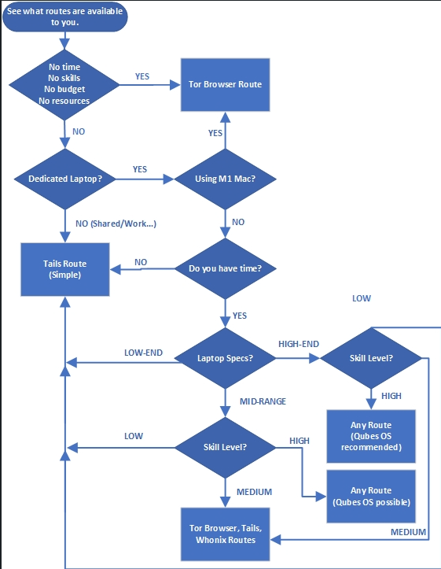
Ограничения по времениλ
-
Тебе совсем некогда:
- Используйте браузер Tor.
-
У вас крайне ограничено время на обучение, и вам нужно быстродействующее решение:
- Лучший вариант — пойти по маршруту Tails (исключая раздел постоянного правдоподобного отрицания).
-
У вас есть время и, что более важно, мотивация учиться:
- Идите любым маршрутом.
Бюджетные и материальные ограниченияλ
-
У вас нет бюджета, и доступ к ноутбуку затруднен, или у вас есть только смартфон:
- Используйте браузер Tor.
-
У вас есть только один ноутбук, и вы не можете себе позволить ничего другого. Вы используете этот ноутбук для работы, семьи или личных дел (или и того, и другого):
- Лучший вариант — пойти по маршруту Tails.
-
Вы можете позволить себе запасной выделенный неконтролируемый ноутбук для конфиденциальной деятельности:
-
Но он старый, медленный и имеет плохие характеристики (менее 6 ГБ ОЗУ, менее 250 ГБ дискового пространства, старый/медленный процессор):
- Вам следует пойти по маршруту Tails.
-
Он не такой уж старый и имеет приличные характеристики (не менее 8 ГБ ОЗУ, 250 ГБ дискового пространства или больше, приличный процессор):
- Вы можете использовать маршруты Tails, Whonix.
-
Он новый и имеет отличные характеристики (более 16 ГБ или в идеале 32 ГБ ОЗУ,> 250 ГБ дискового пространства, новый быстрый процессор):
-
-
Вы можете пойти любым путем, но мы рекомендуем ОС Qubes, если это позволяет ваша модель угроз. Пожалуйста, ознакомьтесь с требованиями.360
-
Если это Mac M1/M2 на базе ARM:
-
В настоящее время невозможно по следующим причинам:
-
Виртуализация образов Intel x86 на хостах ARM (M1/M2) по-прежнему ограничивается коммерческим программным обеспечением (например, Parallels, Fusion), которое в большинстве случаев пока не поддерживается Whonix. Они очень глючные и только для продвинутых людей. Пожалуйста, поищите эту информацию самостоятельно.
-
Virtualbox теперь доступен изначально для архитектуры ARM64 в пакете по состоянию на октябрь 2022 г. Загрузите "Предварительную версию для разработчиков для хостов macOS/Arm64 (M1/M2)".
-
Whonix с трудом поддерживает macOS. «Вам необходимо собрать Whonix, используя сценарий сборки, чтобы запустить его на Apple Silicon». Смотрите ветку форума.
-
Tails пока не поддерживается на архитектуре ARM64. См. эту тему для получения дополнительной информации (имейте в виду, что эта страница в последнее время не обновлялась).
-
ОС Qubes пока не поддерживается в архитектуре ARM64, но ведется работа по ее доступности для aarch64, которая может быть отложена в необозримом будущем.
-
-
-
Общий совет в этом руководстве относительно программного обеспечения для виртуализации заключается в том, что оно дорогое. Тем не менее, вам, вероятно, следует приобрести выделенный ноутбук, на котором можно использовать программное обеспечение для виртуализации, желательно с 64-битной архитектурой, чтобы использовать его для более деликатных действий и тестирования.
Навыкиλ
-
У вас вообще нет IT-навыков, а содержание этого руководства кажется вам инопланетным языком? Рассмотрим:
-
Маршрут Tor Browser (самый простой)
-
Маршрут Tails (исключая раздел о постоянном правдоподобном отрицании).
-
-
У вас есть некоторые навыки в области ИТ и вы в основном понимаете это руководство, учтите:
-
Путь Tails (с дополнительным разделом постоянного правдоподобного отрицания).
-
Маршрут Whonix.
-
-
У вас средний или высокий уровень ИТ-навыков и вы уже знакомы с частью содержания этого руководства. Примите во внимание:
- Любой маршрут (предпочтительнее использовать Qubes OS, если вы можете себе это позволить).
-
Вы хакер l33T, «ложки нет», «торт — ложь», вы уже много лет пользуетесь «doas», «вся ваша база принадлежит нам», и у вас твердое мнение о systemd.
- Это руководство не предназначено для вас и не поможет вам с HardenedBSD на вашем защищенном ноутбуке Libreboot ;-)
Соперничествоλ
Теперь, когда вы знаете, что возможно, вам также следует учитывать угрозы и противников, прежде чем выбирать правильный маршрут.
Угрозыλ
-
Если вашей основной задачей является судебно-медицинская экспертиза ваших устройств, вам следует рассмотреть вариант использования браузера Tor или маршрут Tails.
-
Если вас больше всего беспокоят удаленные злоумышленники, которые могут раскрыть вашу личность в Интернете на различных платформах, вам следует рассмотреть маршруты ОС Tails, Whonix или Qubes (перечислены в порядке сложности).
-
Если вам нужна общесистемная возможность правдоподобного отрицания308'291, несмотря на риски292'311, рассмотрите путь Tails, включая раздел постоянного правдоподобного отрицания (см. Постоянное правдоподобное отрицание с помощью Whonix & Tails).**
-
Если вы находитесь во враждебной среде, где использование Tor/VPN самостоятельно невозможно/опасно/подозрительно, рассмотрите маршрут Tails (без фактического использования Tor) или более продвинутые маршруты, такие как Whonix или Qubes OS.
Противникиλ
-
Низкие навыки:
-
Низкие ресурсы:
- Любая мотивация: Любой маршрут
-
Средние ресурсы:
-
Мотивация от низкой до средней: любой маршрут
-
Высокая мотивация: TAILS, Whonix, Qubes OS Routes
-
-
Высокие ресурсы:
-
Низкая мотивация: Любой маршрут
-
Мотивация от средней до высокой: TAILS, Whonix, Qubes OS Routes
-
-
-
Средние навыки:
-
Низкие ресурсы:
-
Низкая мотивация: Любой маршрут
-
Мотивация от средней до высокой: TAILS, Whonix, Qubes OS Routes
-
-
Средние ресурсы:
-
Низкая мотивация: Любой маршрут
-
Мотивация от средней до высокой: TAILS, Whonix, Qubes OS Routes
-
-
Высокие ресурсы:
- Мотивация от низкой до высокой: TAILS, Whonix, Qubes OS Routes
-
-
Высокая квалификация:
-
Низкие ресурсы:
-
Низкая мотивация: Любой маршрут
-
Мотивация от средней до высокой: TAILS, Whonix, Qubes OS Routes
-
-
Средние ресурсы:
- Мотивация от низкой до высокой: TAILS, Whonix, Qubes OS Routes
-
Высокие ресурсы:
- Мотивация от низкой до высокой: TAILS, Whonix, Qubes OS Routes ** (но, вероятно, выходит за рамки данного руководства, поскольку это, вероятно, глобальный противник)**
-
В любом случае вам следует прочитать эти две страницы документации Whonix, которые дадут вам более глубокое представление о вашем выборе:
- Предупреждение [Archive.org]
- Модель разработки/угроз [Archive.org]
- Сравнение с другими [Archive.org]
Вы можете спросить себя: «Как мне узнать, что я нахожусь во враждебной онлайн-среде, где действия активно отслеживаются и блокируются?»
-
Сначала прочитайте больше об этом на EFF здесь: https://ssd.eff.org/en/module/understanding-and-circumventing-network-censorship [Archive.org]
-
Проверьте некоторые данные самостоятельно здесь, на веб-сайте Tor Project OONI293 (Открытая обсерватория сетевых помех): https://explorer.ooni.org/
-
Посмотрите https://censoredplanet.org/ и посмотрите, есть ли там данные о вашей стране.
-
Специально для Китая: https://gfwatch.org/ и https://www.usenix.org/system/files/sec21-hoang.pdf [Archive.org].
-
Проверьте себя с помощью OONI (это может быть рискованно во враждебной среде).
Шаги для всех маршрутовλ
Привыкаем к использованию более качественных паролейλ
См. Рекомендации по паролям и парольным фразам.
Получение анонимного номера телефонаλ
Пропустите этот шаг, если вы не собираетесь создавать анонимные учетные записи на большинстве основных платформ, а просто хотите анонимный просмотр или если платформы, которые вы будете использовать, допускают регистрацию без номера телефона.
Физический одноразовый телефон и предоплаченная SIM-картаλ
Получите одноразовый телефонλ
Это довольно легко. Оставьте свой смартфон включенным и дома. Имейте немного денег и отправляйтесь на какой-нибудь случайный блошиный рынок или в небольшой магазин (в идеале без видеонаблюдения внутри или снаружи и избегайте фотографирования/съёмки) и просто купите самый дешевый телефон, который вы можете найти, за наличные и не предоставляя никакой личной информации. Только он должен быть в рабочем состоянии.
Примечание относительно вашего текущего телефона: Смысл оставлять смартфон включенным, чтобы избежать утечки информации о том, что вы не используете устройство. Если смартфон выключен, создается след метаданных, который можно использовать для сопоставления времени выключения вашего смартфона с активацией записывающего устройства. Если возможно, оставьте свой телефон что-нибудь делать (например, смотреть YouTube в режиме автоматического воспроизведения), чтобы еще больше скрыть след метаданных. Это не сделает невозможным сопоставление вашего бездействия, но может усложнить задачу, если модели использования вашего телефона будут выглядеть убедительно, пока вы покупаете записывающее устройство.
Мы бы порекомендовали приобрести старый «тупой телефон» со съемным аккумулятором (старый Nokia, если ваши мобильные сети все еще позволяют им подключаться, поскольку некоторые страны полностью отказались от 1G-2G). Это сделано для того, чтобы избежать автоматической отправки/сбора любых телеметрических/диагностических данных на самом телефоне. Никогда не подключайте этот телефон к Wi-Fi.
Примечание для сайта. Будьте осторожны с некоторыми продавцами, как показано здесь https://therecord.media/malware-found-preinstalled-in-classic-push-button-phones-sold-in-russia [Archive.org]
Также крайне важно никогда (даже без SIM-карты) не включать этот одноразовый телефон в любом географическом месте, которое может привести к вам (например, у вас дома/на работе), и никогда в том же месте, что и ваш другой известный смартфон (потому что у него есть IMEI/IMSI, который легко приведет к вам). Это может показаться большим бременем, но это не так, поскольку эти телефоны используются только во время процесса настройки/регистрации и время от времени для проверки.
См. Предупреждение о смартфонах и интеллектуальных устройствах.
Прежде чем переходить к следующему шагу, вам следует проверить, что телефон находится в рабочем состоянии. Но мы повторимся и заявим, что важно оставлять свой смартфон дома, когда идете (или выключать его перед уходом, если вам необходимо его оставить), и что вы тестируете телефон в случайном месте, где вас невозможно отследить (и опять же, не делайте этого перед системой видеонаблюдения, избегайте камер, следите за своим окружением). В этом месте также не нужен Wi-Fi.
Если вы уверены, что телефон в рабочем состоянии, отключите Bluetooth, затем выключите его (если можете, извлеките аккумулятор), вернитесь домой и возобновите свою обычную деятельность. Перейдите к следующему шагу.
Получение анонимной предоплаченной SIM-картыλ
Это самая сложная часть всего руководства. Это SPOF (единая точка отказа). Места, где вы все еще можете купить предоплаченные SIM-карты без регистрации удостоверения личности, становятся все более ограниченными из-за различных правил типа KYC294.
Итак, вот список мест, где их все еще можно получить: https://prepaid-data-sim-card.fandom.com/wiki/Registration_Policies_Per_Country [Archive.org]
Вы должны быть в состоянии найти место, которое находится «не слишком далеко», и просто пойти туда физически, чтобы купить карты предоплаты и ваучеры пополнения баланса наличными. Прежде чем приступить к работе, убедитесь, что не был принят закон, который сделал бы регистрацию обязательной (в случае, если вышеуказанная вики не была обновлена). Постарайтесь избегать видеонаблюдения и камер и не забудьте купить ваучер пополнения баланса вместе с SIM-картой (если это не пакет), поскольку большинство предоплаченных карт требуют пополнения перед использованием.
См. Предупреждение о смартфонах и интеллектуальных устройствах.
Прежде чем идти туда, дважды проверьте, что операторы мобильной связи, продающие предоплаченные SIM-карты, принимают активацию и пополнение SIM-карты без какой-либо регистрации удостоверения личности. В идеале они должны принимать активацию и пополнение SIM-карты в стране, в которой вы живете.
Мы бы порекомендовали GiffGaff в Великобритании, поскольку они «доступны по цене», не требуют идентификации для активации и пополнения счета и даже позволяют вам менять свой номер до двух раз на их веб-сайте. Таким образом, одна предоплаченная SIM-карта GiffGaff предоставит вам три номера, которые вы сможете использовать для своих нужд.
Выключайте телефон после активации/пополнения счета и перед тем, как идти домой. Никогда не включайте его снова, если вы не находитесь в месте, которое можно использовать для раскрытия вашей личности, и в идеале оставьте свой настоящий телефон включенным, но дома, прежде чем отправиться в безопасное место только с одноразовым телефоном.
Номер онлайн-телефонаλ
ОТКАЗ ОТ ОТВЕТСТВЕННОСТИ: Не пытайтесь выполнить это, пока не закончите настройку безопасной среды в соответствии с одним из выбранных маршрутов. Этот шаг потребует онлайн-доступа и должен выполняться только из анонимной сети. Не делайте этого из какой-либо известной/незащищенной среды. Пропускайте это, пока не пройдете один из маршрутов.
Существует множество коммерческих сервисов, предлагающих номера для приема SMS-сообщений в Интернете, но большинство из них не обеспечивают анонимности/приватности и не могут помочь, поскольку большинство платформ социальных сетей устанавливают ограничение на то, сколько раз номер телефона можно использовать для регистрации.
Существуют некоторые форумы и субреддиты (например, r/phoneverification/), где пользователи предлагают вам услугу получения таких SMS-сообщений за небольшую плату (с использованием PayPal или какой-либо криптовалюты). К сожалению, здесь полно мошенников и очень рискованно с точки зрения анонимности. Вы не должны использовать их ни при каких обстоятельствах.
На сегодняшний день мы не знаем ни одного заслуживающего доверия сервиса, который бы предлагал эту услугу и принимал бы наличные платежи (например, по почте), как некоторые провайдеры VPN. Но некоторые сервисы предоставляют онлайн-телефонные номера и принимают Monero, который может быть достаточно анонимным (но менее рекомендуется, чем физический способ, описанный в предыдущей главе), который вы могли бы рассмотреть:
-
Рекомендуется: не требуйте никаких документов, удостоверяющих личность (даже электронной почты):
-
(Исландия, принимает Monero) https://crypton.sh [Tor Mirror] [Archive.org]
-
(Украина, принимает Monero) https://virtualsim.net/ [Archive.org]
-
-
Требуется удостоверение личности (действительный адрес электронной почты):
-
(штат Калифорния, США, принимает Monero) https://mobilesms.io [Archive.org]
-
(Германия, принимает Monero) https://www.sms77.io/ [Archive.org]
-
(Россия, принимает Monero) https://onlinesim.ru/ [Archive.org]
-
Здесь перечислены некоторые другие возможности https://cryptwerk.com/companies/sms/xmr/ [Archive.org]. Используйте на свой страх и риск.
А что, если у тебя нет денег? Что ж, в таком случае вам придется попытать счастья с бесплатными услугами и надеяться на лучшее. Вот несколько примеров, используйте на свой страх и риск:
Отказ от ответственности: мы не можем ручаться ни за одного из этих поставщиков. Мы рекомендуем делать это самостоятельно физически. В этом случае вам придется полагаться на анонимность Monero и не использовать какой-либо сервис, требующий какой-либо идентификации с использованием вашей реальной личности. Пожалуйста, прочтите Отказ от ответственности Monero.
Удобнее, дешевле и менее рискованно просто получить предоплаченную SIM-карту в одном из физических мест, где они до сих пор продаются за наличные без удостоверения личности.
Получите USB-ключλ
Пропустите этот шаг, если вы не собираетесь создавать анонимные учетные записи на большинстве основных платформ, но вам нужен анонимный просмотр; или если платформы, которые вы будете использовать, допускают регистрацию без номера телефона.
Приобретите хотя бы один или два универсальных USB-ключа приличного размера (не менее 16 ГБ, но мы рекомендуем 32 ГБ).
Пожалуйста, не покупайте и не используйте бесполезные устройства самошифрования, такие как: https://syscall.eu/blog/2018/03/12/aigo_part1/ [Archive.org]
Некоторые из них могут быть очень эффективными295, но многие представляют собой бесполезные устройства, не обеспечивающие реальной защиты296.
Найдите безопасные места с приличным общедоступным Wi-Fiλ
Вам необходимо найти безопасные места, где вы сможете выполнять свои конфиденциальные действия, используя общедоступный Wi-Fi (без регистрации учетной записи/идентификатора, избегайте систем видеонаблюдения).
Это может быть любое место, которое не будет привязано к вам напрямую (ваш дом/работа) и где вы сможете какое-то время пользоваться Wi-Fi, не беспокоясь. Но также и место, где вы можете сделать это, не будучи никем «замеченным».
Если вы считаете, что Starbucks — это умная идея, вы можете пересмотреть свое мнение:
-
Вероятно, у них во всех магазинах есть камеры видеонаблюдения, и записи хранятся неизвестное количество времени.
-
Вам нужно будет купить кофе, чтобы получить код доступа к Wi-Fi в большинстве. Если вы заплатите за этот кофе электронным способом, они смогут привязать ваш доступ к Wi-Fi к вашей личности.
Ситуационная осведомленность является ключевым моментом, и вы должны постоянно следить за своим окружением и избегать туристических мест, как будто они поражены Эболой. Вы не должны появляться ни на каких фотографиях/видео, пока кто-то делает селфи, снимает видео в TikTok или публикует фотографии из путешествий в своем Instagram. Если вы это сделаете, помните, что высока вероятность того, что эти фотографии окажутся в сети (публично или конфиденциально) с прикрепленными к ним полными метаданными (время/дата/геолокация) и вашим лицом. Помните, что они могут и будут индексироваться Facebook/Google/Яндекс/Apple и, возможно, агентствами всех трех букв.
Хотя это пока не будет доступно вашим местным полицейским, это может быть доступно в ближайшем будущем.
В идеале вам понадобится набор из 3-5 отдельных мест, подобных этому, чтобы не использовать одно и то же место дважды. Для выполнения различных шагов, описанных в этом руководстве, потребуется несколько поездок в течение нескольких недель.
Вы также можете рассмотреть возможность подключения к этим местам с безопасного расстояния для дополнительной безопасности. См. Использование антенны дальнего действия для подключения к общедоступным сетям Wi-Fi на безопасном расстоянии..
Маршрут браузера Torλ
Эта часть руководства поможет вам настроить самый простой и легкий способ анонимного просмотра веб-страниц. Это не обязательно лучший метод, ниже приведены более продвинутые методы с (намного) лучшей безопасностью и (намного) лучшими средствами защиты от различных злоумышленников. Тем не менее, это простой способ анонимного и быстрого доступа к ресурсам без бюджета, времени, навыков и ограниченного использования.
Итак, что такое Tor Browser? Браузер Tor (https://www.torproject.org/ [Archive.org]) — это веб-браузер, подобный Safari/Firefox/Chrome/Edge/Brave, разработанный с учетом приватности и анонимности.
Этот браузер отличается от других браузеров тем, что он подключается к Интернету через сеть Tor с использованием луковой маршрутизации. Сначала мы рекомендуем вам посмотреть это очень красивое вводное видео, созданное самим проектом Tor: https://www.youtube.com/watch?v=JWII85UlzKw [Invidious]. После этого вам, вероятно, следует перейти на их страницу и прочитать их краткий обзор здесь: https://2019.www.torproject.org/about/overview.html.en [Archive.org]. Не вдаваясь в технические подробности, Tor Browser — это простое и легкое решение для анонимного просмотра веб-страниц практически с любого устройства. Вероятно, этого достаточно для большинства людей, и им можно пользоваться с любого компьютера или смартфона.
Вот несколько способов настроить его для всех основных ОС.
Внимание! Вам следует избегать установки расширений в браузере Tor, поскольку они могут использоваться для снятия отпечатков пальцев и вашей идентификации.
Windows, Linux и macOSλ
См. раздел Установка и использование браузера Tor для настольных компьютеров.
Androidλ
Примечание о Tor Browser для Android. Разработка Tor Browser для Android ведется за пакетом Tor Browser Bundle (TBB) для настольных компьютеров. Некоторые функции пока недоступны. Например, настольная версия Tor теперь поддерживает автоматические мосты с помощью Moat:
«Connection Assist работает путем поиска и загрузки актуального списка вариантов для конкретной страны, чтобы попытаться использовать ваше местоположение (с вашего согласия). Ему удается сделать это без необходимости предварительного подключения к сети Tor с помощью moat – того же инструмента для доменного фронта, который Tor Browser использует для запроса моста с torproject.org».
-
Отправляйтесь по адресу:
-
Магазин Play: https://play.google.com/store/apps/details?id=org.torproject.torbrowser
-
Магазин F-Droid: его еще нет, но вы можете добавить его вручную, следуя инструкциям по адресу https://support.torproject.org/tormobile/tormobile-7/ [Archive.org].
-
-
Установить
-
Запустите Tor-браузер.
-
После запуска нажмите правый верхний значок Настройки.
-
Выберите Настройки > Приватность и безопасность > Сеть Tor.
-
Выберите Мост конфигурации.
-
Прочтите [Использование мостов Tor во враждебных средах] (#tor-bridges).
-
При необходимости (после прочтения приложения выше) активируйте опцию и выберите нужный тип моста:
-
Обфс4
-
Кроткая-Лазурь
-
Снежинка
-
-
Если ваш Интернет не подвергается цензуре, рассмотрите возможность использования одного из типов мостов, чтобы помочь сети!
-
Легко: Obsf4. С помощью этих инструкций вы можете легко запустить свой собственный Obsf4. https://community.torproject.org/relay/setup/bridge/
-
Средний: Снежинка. Подробнее о снежинках здесь. https://snowflake.torproject.org/
-
Жесткий: Мик - Это документация. Это не так просто. https://gitlab.torproject.org/legacy/trac/-/wikis/doc/meek/#how-to-run-a-meek-server-bridge
-
Лично, если вам нужно использовать Bridge (в невраждебной среде это не обязательно), вам следует выбрать Meek-Azure. Вероятно, это сработает, даже если вы находитесь в Китае и хотите обойти Великий файрвол. Вероятно, это лучший способ скрыть ваши действия Tor, если это необходимо, и серверы Microsoft обычно не блокируются.
Доступно только для пользователей Tor на настольных компьютерах. Недавно проект Tor невероятно упростил доступ к мостам с помощью Connection Assist, и теперь это происходит автоматически во враждебных или подвергающихся цензуре регионах. Просто откройте браузер Tor, и соединение будет настроено в соответствии с вашими потребностями в любой враждебной сети. Раньше под этим абзацем был список опций, которые были необходимы для включения и настройки мостов, но теперь это делается автоматически с помощью moat. [Archive.org]
- Вы почти закончили
Как и в случае с настольной версией, вам необходимо знать, что в Tor Browser существуют уровни безопасности. На Android вы можете получить к ним доступ, выполнив следующие действия:
-
Нажмите на меню (внизу справа)
-
Нажмите Настройки.
-
Перейдите в раздел Приватность и безопасность.
-
Нажмите Настройки безопасности.
Подробности о каждом уровне вы найдете здесь: https://tb-manual.torproject.org/security-settings/ [Archive.org], но вот краткое описание:
-
Стандартный (по умолчанию):
- Все функции включены (включая JavaScript)
-
Безопаснее:
-
JavaScript отключен на веб-сайтах, отличных от HTTPS.
-
Некоторые шрифты и символы отключены.
-
Любое воспроизведение мультимедиа осуществляется по принципу «нажми, чтобы воспроизвести» (по умолчанию отключено)
-
-
Самый безопасный:
-
Javascript везде отключен
-
Некоторые шрифты и символы отключены.
-
Любое воспроизведение мультимедиа осуществляется по принципу «нажми, чтобы воспроизвести» (по умолчанию отключено)
-
В большинстве случаев мы рекомендуем уровень «Безопаснее». Самый безопасный уровень следует включить, если вы считаете, что посещаете подозрительные или опасные веб-сайты, и/или если у вас сильная паранойя.
Если вы очень параноик, используйте уровень «Самый безопасный» по умолчанию и рассмотрите возможность перехода на более безопасный, если веб-сайт непригоден для использования из-за блокировки Javascript.
Однако при использовании некоторых веб-сайтов уровень «Безопасный» следует использовать с некоторыми дополнительными мерами предосторожности: см. Дополнительные меры предосторожности в браузере с включенным JavaScript.
Теперь все готово, и теперь вы можете анонимно пользоваться Интернетом со своего устройства Android.
См. Предупреждение об использовании Orbot на Android.
iOSλ
Отказ от ответственности: в браузере Onion, выпущенном в 2018 году для iOS, произошла утечка IP-адресов через WebRTC. Это по-прежнему единственный официально одобренный браузер сети Tor для iOS. Пользователям следует проявлять осторожность при использовании браузера и проверять наличие утечек DNS.
Хотя официальный браузер Tor еще не доступен для iOS, существует альтернатива под названием Onion Browser, одобренная Tor Project297.
-
Перейдите к https://apps.apple.com/us/app/onion-browser/id519296448.
-
Установить
-
Отключить Wi-Fi и мобильные данные
-
Запустить луковый браузер
-
После запуска щелкните верхний правый значок настроек (ранее отключение Wi-Fi и мобильных данных предназначалось для предотвращения автоматического подключения Onion Browser и для разрешения доступа к этим параметрам).
-
Выберите «Конфигурация моста» и прочтите Использование мостов Tor во враждебных средах
-
При необходимости (после прочтения приложения выше) активируйте опцию и выберите нужный тип моста:
-
Обфс4
-
Снежинка
-
(К сожалению, Meek-Azure недоступен в браузере Onion для iOS (дополнительную информацию см. в commit 21bc18428.)
-
-
Если ваш Интернет не подвергается цензуре, рассмотрите возможность использования одного из типов мостов, чтобы помочь сети!
-
Легко: Obsf4. С помощью этих инструкций вы можете легко запустить свой собственный Obsf4. https://community.torproject.org/relay/setup/bridge/
-
Средний: Снежинка. Подробнее о снежинках здесь. https://snowflake.torproject.org/
-
Жесткий: Мик - Это документация. Это не так просто. https://gitlab.torproject.org/legacy/trac/-/wikis/doc/meek/#how-to-run-a-meek-server-bridge
-
Лично, если вам нужно использовать Мост (это не обязательно для невраждебной среды), вам следует выбрать Снежинку (поскольку мосты Мик-Лазури недоступны). Вероятно, это сработает, даже если вы находитесь в Китае и хотите обойти Великий файрвол. Вероятно, это лучший вариант для iOS.
- You are almost done
Как и в случае с настольной версией, вам необходимо знать, что в Onion Browser существуют уровни безопасности. В iOS вы можете получить к ним доступ, выполнив следующие действия:
-
Нажмите значок щита (вверху слева)
-
У вас будет три уровня на выбор
| Уровень безопасности | JavaScript | WS/XHR/Гео | А/В | Приложения | ВебРТК | HTTP↔HTTPS | Объявления/Всплывающие окна |
|---|---|---|---|---|---|---|---|
| Золото | Отключено | Отключено | Нет | Заблокировано | Заблокировано | Заблокировано | Заблокировано |
| Серебро | Частично разрешено | Отключено | Нет | Заблокировано | Заблокировано | Заблокировано | Заблокировано |
| Бронза | Разрешено | Включено | Разрешено | Заблокировано | Не заблокирован | Не заблокирован | Заблокировано |
В большинстве случаев мы рекомендуем уровень «Серебро». Уровень Gold следует включать только в том случае, если вы считаете, что посещаете подозрительные или опасные веб-сайты, или если у вас сильная паранойя. Золотой режим также, скорее всего, сломает многие веб-сайты, активно использующие JavaScript.
Поскольку в режиме уровня Silver включен JavaScript, ознакомьтесь с разделом Дополнительные меры предосторожности в браузере при включенном JavaScript.
Теперь все готово, и теперь вы можете анонимно просматривать веб-страницы со своего устройства iOS.
Важное предупреждениеλ
Этот маршрут самый простой, но он не предназначен для противостояния высококвалифицированным противникам. Однако его можно использовать на любом устройстве независимо от конфигурации. Этот маршрут также уязвим для корреляционных атак (см. Ваш анонимизированный трафик Tor/VPN) и не учитывает ничего, что может находиться на вашем устройстве (это может быть любое вредоносное ПО, эксплойт, вирус, программное обеспечение удаленного администрирования, родительский контроль...). Тем не менее, если ваша модель угроз довольно низкая, ее, вероятно, будет достаточно для большинства людей.
Если у вас есть время и вы хотите учиться, мы рекомендуем вместо этого пойти по другим маршрутам, поскольку они обеспечивают гораздо лучшую безопасность и снижают гораздо больше рисков, одновременно значительно снижая поверхность атаки.
Маршрут Тейлзаλ
Эта часть руководства поможет вам настроить Tails, если верно одно из следующих условий:
-
Вы не можете позволить себе выделенный ноутбук
-
Ваш выделенный ноутбук слишком старый и слишком медленный.
-
У вас очень низкие навыки работы в сфере ИТ.
-
Вы все равно решите пойти с Тейлзом
Tails298 означает Амнестическая живая система инкогнито. Это загружаемая живая операционная система, работающая с USB-ключа, которая не оставляет следов и обеспечивает принудительное подключение всех соединений через сеть Tor.
Вы вставляете USB-ключ Tails в свой ноутбук, загружаетесь с него, и у вас есть полноценная операционная система, работающая с учетом приватности и анонимности. Как только вы выключите компьютер, все исчезнет, если вы его где-то не сохранили.
Tails — это удивительно простой способ быстро приступить к работе с тем, что у вас есть, без особого обучения. Он имеет обширную документацию и учебные пособия.
ВНИМАНИЕ: в комплект поставки программного обеспечения Tails не всегда входят последние версии. И не всегда в курсе обновлений браузера Tor. Вы всегда должны убедиться, что используете последнюю версию Tails, и проявлять особую осторожность при использовании встроенных в Tails приложений, которые могут быть уязвимы для эксплойтов и раскрывать ваше местоположение299.
Однако у него есть некоторые недостатки:
-
Tails использует Tor, поэтому вы будете использовать Tor для доступа к любому ресурсу в Интернете. Уже одно это вызовет у вас подозрения по отношению к большинству платформ, на которых вы хотите создавать анонимные учетные записи (подробнее это будет объяснено позже).
-
Ваш интернет-провайдер (будь то ваш или какой-либо общедоступный Wi-Fi) также увидит, что вы используете Tor, и это само по себе может вызвать у вас подозрения.
-
Tails не включает (изначально) некоторое программное обеспечение, которое вы, возможно, захотите использовать позже, что немного усложнит ситуацию, если вы захотите запустить некоторые конкретные вещи (например, эмуляторы Android).
-
Tails использует браузер Tor, который, хотя и очень безопасен, но также обнаруживается большинством платформ и мешает вам создавать анонимные идентификаторы на многих платформах.
-
Tails не защитит вас больше от 5$ гаечного ключа11.
-
Самого по себе Tor может быть недостаточно, чтобы защитить вас от противника, обладающего достаточными ресурсами, как объяснялось ранее.
Важное примечание. Если ваш ноутбук находится под наблюдением и установлены некоторые локальные ограничения, прочтите Как обойти (некоторые) локальные ограничения на контролируемых компьютерах.
Прежде чем двигаться дальше, вам также следует прочитать документацию Tails, предупреждения и ограничения https://tails.boum.org/doc/about/warnings/index.en.html [Archive.org]
Принимая все это во внимание, а также тот факт, что их документация великолепна, мы просто перенаправим вас к их хорошо сделанному и хорошо поддерживаемому руководству:
https://tails.boum.org/install/index.en.html [Archive.org], выберите свой вариант и продолжайте.
Если у вас возникли проблемы с доступом к Tor из-за цензуры или других проблем, вы можете попробовать использовать Tor Bridges, следуя этому руководству по Tails: https://tails.boum.org/doc/anonymous_internet/tor/index.en.html [Archive.org] и найдите дополнительную информацию об этом в документации Tor https://2019.www.torproject.org/docs/bridges [Archive.org]
Если вы считаете, что использование Tor в одиночку опасно/подозрительно, см. раздел А что насчет случаев, когда Tor и VPN невозможны?
Настройки браузера Tor на Tailsλ
При использовании браузера Tor вам следует щелкнуть маленький значок щита (вверху справа, рядом с адресной строкой) и выбрать уровень безопасности (более подробную информацию см. в https://tb-manual.torproject.org/security-settings/ [Archive.org]). В принципе, их три.
-
Стандартный (по умолчанию):
- Все функции включены (включая JavaScript)
-
Безопаснее:
-
JavaScript отключен на веб-сайтах, отличных от HTTPS.
-
Некоторые шрифты и символы отключены.
-
Любое воспроизведение мультимедиа осуществляется по принципу «нажми, чтобы воспроизвести» (по умолчанию отключено)
-
-
Самый безопасный:
-
Javascript везде отключен
-
Некоторые шрифты и символы отключены.
-
Любое воспроизведение мультимедиа осуществляется по принципу «нажми, чтобы воспроизвести» (по умолчанию отключено)
-
В большинстве случаев мы рекомендуем уровень «Безопаснее». Самый безопасный уровень следует включить, если вы считаете, что заходите на подозрительные или опасные веб-сайты, или если у вас сильная паранойя. Самый безопасный режим также, скорее всего, приведет к поломке многих веб-сайтов, активно использующих JavaScript.
Если вы очень параноик, используйте уровень «Самый безопасный» по умолчанию и рассмотрите возможность перехода на более безопасный, если веб-сайт непригоден для использования из-за блокировки Javascript.
Наконец, при использовании браузера Tor в Tails на «Более безопасном» уровне обратите внимание на Дополнительные меры предосторожности в браузере с включенным JavaScript.
Когда вы закончите и у вас на ноутбуке будет работающий Tails, перейдите к шагу [Создание анонимных онлайн-удостоверений] (#creating-identities) гораздо дальше в этом руководстве или, если вам нужна настойчивость и правдоподобное отрицание, перейдите к следующему разделу.
Постоянное правдоподобное отрицание с использованием Whonix и Tailsλ
Рассмотрите возможность проверки проекта https://github.com/aforensics/HiddenVM [Archive.org] для Tails.
Этот проект представляет собой умную идею создания автономного решения виртуальной машины одним щелчком мыши, которое можно хранить на зашифрованном диске с использованием правдоподобного отрицания308 (см. первые главы Путь Whonix, а также некоторые пояснения о правдоподобном отрицании, а также раздел [Как безопасно удалить определенные файлы/папки/данные на жестком диске/SSD и флэш-накопителях:] на странице конец этого руководства для большего понимания).
Это позволит создать гибридную систему, сочетающую Tails с опциями виртуализации маршрута Whonix в этом руководстве.
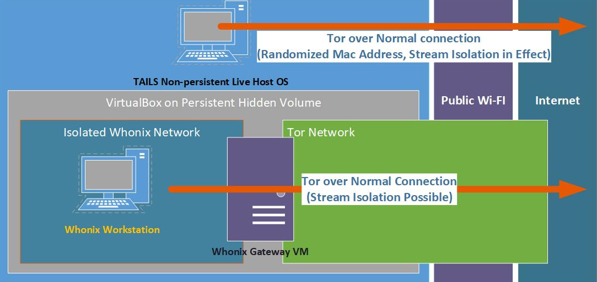
Примечание. Дополнительные сведения об изоляции потока см. в разделе Выберите метод подключения в маршруте Whonix.
Короче говоря:
-
Вы можете запускать непостоянные Tails с одного USB-ключа (следуя их рекомендациям).
-
Вы можете хранить постоянные виртуальные машины во вторичном контейнере, который можно зашифровать обычным способом или использовать функцию правдоподобного отрицания Veracrypt (это могут быть, например, виртуальные машины Whonix или любые другие).
-
Вы получаете выгоду от добавленной функции изоляции потока Tor (дополнительную информацию об изоляции потока см. в разделе [Tor через VPN]).
В этом случае, как указано в проекте, на вашем компьютере не должно быть никаких следов вашей деятельности, а конфиденциальная работа может выполняться с виртуальных машин, хранящихся в скрытом контейнере, который не должен быть легко обнаружен программным злоумышленником.
Этот вариант особенно интересен для «путешествия налегке» и для смягчения последствий криминалистических атак, сохраняя при этом постоянство вашей работы. Вам нужны только 2 USB-ключа (один с Tails и один с контейнером Veracrypt, содержащим постоянный Whonix). Первый USB-ключ будет содержать только Tails, а второй USB-накопитель будет содержать только случайный мусор, но будет иметь ложный том, который вы можете показать для правдоподобного отрицания.
Вы также можете задаться вопросом, приведет ли это к настройке «Tor поверх Tor», но это не так. Виртуальные машины Whonix будут получать доступ к сети напрямую через Clearnet, а не через Tails Onion Routing.
В будущем это также может поддерживаться самим проектом Whonix, как описано здесь: Whonix-Host [Archive.org], но это пока не рекомендуется конечным пользователям.
Помните, что шифрование с правдоподобным отрицанием или без него не является панацеей и от него будет мало пользы в случае пыток. На самом деле, в зависимости от того, кем будет ваш противник (ваша модель угрозы), возможно, было бы разумно вообще не использовать Veracrypt (ранее TrueCrypt), как показано в этой демонстрации: https://defuse.ca/truecrypt-plausible-deniability-useless-by-game-theory.htm [Archive.org]
Правдоподобное отрицание эффективно только против мягких законных противников, которые не прибегают к физическим средствам.
См. https://en.wikipedia.org/wiki/Rubber-hose_cryptanalysis [Wikiless] [Archive.org]
ВНИМАНИЕ. Если вы планируете хранить такие скрытые виртуальные машины на внешнем SSD-накопителе, ознакомьтесь с разделами Рекомендации по использованию внешних SSD-накопителей и Понимание различий между HDD и SSD:
-
Не используйте скрытые тома на SSD-накопителях, поскольку Veracrypt не поддерживает/рекомендует это300.
-
Вместо этого используйте файловые контейнеры вместо зашифрованных томов.
-
Убедитесь, что вы знаете, как правильно очистить данные с внешнего SSD-накопителя.
Вот мое руководство о том, как этого добиться:
Первый запуск
-
Загрузите последнюю версию HiddenVM с сайта https://github.com/aforensics/HiddenVM/releases [Archive.org].
-
Загрузите последнюю версию Whonix XFCE с GitHub Releases [Archive.org].
Примечание. Начиная с версии 1.2.5, Whonix был обновлен с версии 17 до 18 (Whonix 18.1.4.x). См. [Обновление до Whonix 18] для получения информации о пути обновления, если вы в настоящее время используете Whonix 17.x.
-
Подготовьте USB-ключ/накопитель с помощью Veracrypt.
-
Создайте скрытый том на USB-накопителе/ключе (мы рекомендуем не менее 16 ГБ для скрытого тома)
-
Во внешнем томе поместите несколько файлов-приманок.
-
В скрытом томе поместите файл образа приложения HiddenVM.
-
В скрытом томе поместите ova-файл Whonix XFCE.
-
-
Загрузитесь в Tails
-
Настройте раскладку клавиатуры по своему усмотрению.
-
Выберите «Дополнительные настройки» и установите пароль администратора (root) (необходим для установки HiddenVM)
-
Запустить Тейлз
-
Подключитесь к безопасному Wi-Fi (это обязательный шаг для работы остальных)
-
Зайдите в «Утилиты» и разблокируйте свой Veracrypt (скрытый) том (не забудьте поставить галочку напротив скрытого тома)
-
Запустите образ приложения HiddenVM.
-
При появлении запроса на выбор папки выберите корень скрытого тома (где находятся файлы изображений приложений Whonix OVA и HiddenVM).
-
Позвольте ему сделать свое дело (Virtualbox будет установлен в Tails одним щелчком мыши).
-
Когда это будет сделано, Virtualbox Manager должен автоматически запуститься.
-
Импортируйте файлы Whonix OVA (см. Виртуальные машины Whonix)
Обратите внимание: если во время импорта у вас возникают такие проблемы, как «NS_ERROR_INVALID_ARG (0x80070057)», возможно, это связано с тем, что на вашем скрытом томе недостаточно места для Whonix. Сами Whonix рекомендуют 32 ГБ свободного места, но, вероятно, в этом нет необходимости, и для начала достаточно 10 ГБ. Вы можете попробовать обойти эту ошибку, переименовав файл Whonix *.OVA в *.TAR и распаковав его в Tails. Когда вы закончите распаковку, удалите файл OVA и импортируйте другие файлы с помощью мастера импорта. На этот раз это может сработать.
Последующие запуски
-
Загрузитесь в Tails
-
Подключитесь к Wi-Fi
-
Разблокируйте свой скрытый том
-
Запустите приложение HiddenVM.
-
Это должно автоматически открыть диспетчер VirtualBox и отобразить ваши предыдущие виртуальные машины при первом запуске.
Шаги для всех остальных маршрутовλ
Приобретите отдельный ноутбукλ
В идеале вам следует приобрести отдельный ноутбук, который никак нельзя будет без труда связать с вами (в идеале — оплатить его наличными анонимно и соблюдать те же меры предосторожности, которые ранее упоминались для телефона и SIM-карты). Это рекомендуется, но не обязательно. Это руководство поможет вам максимально защитить ноутбук от утечек данных различными способами. Между вашими сетевыми личностями и вами будет несколько рубежей защиты, которые должны предотвратить деанонимизацию большинством противников — за исключением государственных/глобальных акторов. Это потребует значительных ресурсов.
В идеале этот ноутбук должен быть чистым, со свежей установкой (Windows, Linux или macOS), не содержать следов вашей обычной повседневной деятельности и быть офлайн (никогда не подключаться к вашей домашней сети). Если это ноутбук с Windows и до такой чистой установки вы им пользовались, он также не должен быть активирован. Если он поставлялся предактивированным, просто переустановите систему без ключа продукта. В частности, MacBook никогда ранее не должен быть каким-либо образом связан с вашей личностью. Поэтому покупайте подержанный ноутбук за наличные у незнакомца, не знающего вашей личности.
Это необходимо для снижения некоторых будущих рисков в случае утечек в интернете (включая телеметрию ОС или приложений), которые при использовании ноутбука могут раскрыть его уникальные идентификаторы (MAC-адрес, адрес Bluetooth и ключ продукта ...). Кроме того, это позволяет избежать отслеживания, если вам потребуется избавиться от ноутбука.
Если вы ранее использовали этот ноутбук для других целей (например, в повседневной жизни), все его аппаратные идентификаторы, вероятно, уже известны и зарегистрированы Microsoft или Apple. Если впоследствии какой-либо из этих идентификаторов будет скомпрометирован (вредоносным ПО, телеметрией, эксплойтами, человеческими ошибками ...), по нему смогут выйти на вас.
На ноутбуке должно быть не менее 250 ГБ дискового пространства, не менее 6 ГБ (в идеале 8 ГБ или 16 ГБ) ОЗУ, и он должен быть способен одновременно запускать несколько виртуальных машин. У него должна быть исправная батарея, которой хватает на несколько часов. Если возможно, выбирайте устройство с большим объёмом хранилища (1 ТБ+), поскольку нам потребуется как можно больше места.
Этот ноутбук может быть оснащён HDD (7200 об/мин) или SSD/NVMe-накопителем. У обоих вариантов есть преимущества и недостатки, которые будут подробно рассмотрены позже.
В идеале все дальнейшие онлайн-действия с этого ноутбука следует выполнять из безопасной сети, например через публичный Wi-Fi в безопасном месте (см. Найдите безопасные места с хорошим публичным Wi-Fi). Однако сначала необходимо выполнить несколько шагов офлайн.
Несколько рекомендаций по выбору ноутбукаλ
Если есть возможность, мы настоятельно рекомендуем приобрести ноутбук «бизнес-класса» (то есть не потребительский и не игровой). Например, один из ThinkPad от Lenovo (мой личный фаворит).
Это связано с тем, что такие бизнес-ноутбуки обычно предлагают более качественные и настраиваемые функции безопасности (особенно в настройках BIOS/UEFI), а также более длительную поддержку, чем большинство потребительских ноутбуков (Asus, MSI, Gigabyte, Acer...). Вот интересные функции, на которые стоит обратить внимание:
-
Более гибкие настройки Secure Boot (где можно выборочно управлять всеми ключами, а не только использовать стандартные)
-
Пароли HDD/SSD в дополнение к паролям BIOS/UEFI.
-
Ноутбуки на AMD могут быть интереснее, поскольку некоторые позволяют по умолчанию отключать AMD PSP (эквивалент IME от AMD) в настройках BIOS/UEFI. Кроме того, насколько мне известно, AMD PSP проходила аудит и, в отличие от IME, в ней не было обнаружено каких-либо «злонамеренных» функций301. Однако, если вы выбираете маршрут Qubes OS, рассмотрите процессоры Intel, поскольку Qubes OS не поддерживает AMD в своей системе anti-evil-maid302.
-
Инструменты Secure Wipe в BIOS (особенно полезны для SSD/NVMe-накопителей; см. Параметры BIOS/UEFI для очистки дисков у разных производителей).
-
Более полный контроль отключения/включения отдельных периферийных устройств (USB-портов, Wi-Fi, Bluetooth, камеры, микрофона ...).
-
Улучшенные функции безопасности виртуализации.
-
Встроенная защита от несанкционированного вмешательства.
-
Более длительная поддержка обновлений BIOS/UEFI (и последующих обновлений безопасности BIOS/UEFI).
-
Некоторые поддерживаются Libreboot
Настройки BIOS/UEFI/прошивки вашего ноутбукаλ
PCλ
Доступ к этим настройкам можно получить через загрузочное меню ноутбука. Вот хорошее руководство от HP, объясняющее все способы входа в BIOS на различных компьютерах: https://store.hp.com/us/en/tech-takes/how-to-enter-bios-setup-windows-pcs [Archive.org]
Обычно для входа нужно нажать определённую клавишу (F1, F2 или Del) во время загрузки (до запуска ОС).
Когда вы войдёте в настройки, потребуется применить несколько рекомендуемых параметров:
-
Полностью отключите Bluetooth, если это возможно.
-
Отключите биометрию (сканеры отпечатков пальцев), если они есть и если это возможно. Однако можно добавить биометрическую проверку только для загрузки (до запуска ОС), но не для доступа к настройкам BIOS/UEFI.
-
Отключите веб-камеру и микрофон, если это возможно.
-
Включите пароль BIOS/UEFI и используйте длинную парольную фразу вместо пароля (если возможно); убедитесь, что этот пароль требуется для:
-
Доступа к самим настройкам BIOS/UEFI
-
Изменения порядка загрузки
-
Запуска/включения устройства
-
-
Включите пароль HDD/SSD, если эта функция доступна. Она добавит ещё один пароль непосредственно на HDD/SSD (не в прошивке BIOS/UEFI), который не позволит использовать этот HDD/SSD в другом компьютере без пароля. Учтите, что эта функция также зависит от производителя и для разблокировки диска на совершенно другом компьютере может потребовать специального ПО.
-
Если возможно, запретите доступ к параметрам загрузки (порядку загрузки) без ввода пароля BIOS/UEFI.
-
Отключите USB/HDMI или любые другие порты (Ethernet, Firewire, SD-карту ...), если это возможно.
-
Отключите Intel ME, если можете (вероятность того, что не сможете, очень высока).
-
Отключите AMD PSP, если можете (эквивалент IME от AMD; см. Ваш CPU)
-
Отключите Secure Boot, если планируете использовать Qubes OS, так как она не поддерживает её «из коробки»303. Оставьте её включённой, если планируете использовать Linux/Windows.
-
Проверьте, есть ли в BIOS вашего ноутбука функция безопасного стирания HDD/SSD, которая может пригодиться при необходимости.
Включайте их только по мере необходимости и снова отключайте после использования. Это поможет смягчить некоторые атаки, если ваш ноутбук изъят в заблокированном, но включённом состоянии ИЛИ если вам пришлось выключить его довольно быстро, и кто-то завладел им (эта тема будет объяснена позже в руководстве).
О Secure Bootλ
Итак, что такое Secure Boot304? Кратко: это функция безопасности UEFI, предназначенная для предотвращения загрузки операционной системы, загрузчик которой не подписан определёнными ключами, хранящимися в прошивке UEFI вашего ноутбука.
Когда операционная система (или загрузчик305) поддерживает эту функцию, вы можете сохранить ключи своего загрузчика в прошивке UEFI; это предотвратит загрузку любой неавторизованной операционной системы (например, Live OS с USB или чего-либо подобного).
Настройки Secure Boot защищены паролем, который вы установили для доступа к настройкам BIOS/UEFI. Если у вас есть этот пароль, вы можете отключить Secure Boot и разрешить загрузку неподписанных ОС. Это может помочь смягчить некоторые атаки Evil Maid (объясняемые позже в этом руководстве).
В большинстве случаев Secure Boot по умолчанию отключена либо включена в режиме «настройки», позволяющем загрузить любую систему. Чтобы Secure Boot работала, ваша операционная система должна её поддерживать, затем подписать свой загрузчик и передать ключи подписи в прошивку UEFI. После этого нужно зайти в настройки BIOS/UEFI, сохранить переданные ОС ключи и переключить Secure Boot из режима настройки в пользовательский режим (или в некоторых случаях в пользовательский режим настройки).
После этого шага смогут загружаться только операционные системы, для которых прошивка UEFI может проверить целостность загрузчика.
В большинстве ноутбуков в настройках Secure Boot уже сохранены некоторые ключи по умолчанию. Обычно это ключи самого производителя или таких компаний, как Microsoft. Это означает, что по умолчанию даже при включённой Secure Boot всегда можно будет загрузить некоторые USB-диски. Среди них Windows, Fedora, Ubuntu, Mint, Debian, CentOS, OpenSUSE, Tails, Clonezilla и многие другие. На данный момент Qubes OS вообще не поддерживает Secure Boot.
В некоторых ноутбуках можно управлять этими ключами и удалить нежелательные в «пользовательском режиме», чтобы разрешить только свой загрузчик, который при желании можно подписать самостоятельно.
Итак, от чего защищает Secure Boot? Она защитит ваш ноутбук от загрузки неподписанных загрузчиков (поставщиком ОС), например с внедрённым вредоносным ПО.
От чего Secure Boot не защищает?
-
Secure Boot не шифрует диск, и противник всё ещё может просто извлечь диск из ноутбука и получить с него данные на другой машине. Поэтому Secure Boot бесполезна без полного шифрования диска.
-
Secure Boot не защищает от скомпрометированного загрузчика, который подписан самим производителем (например, Microsoft в случае Windows). Большинство популярных дистрибутивов Linux сегодня подписаны и загрузятся при включённой Secure Boot.
-
Secure Boot, как и любая другая система, может иметь ошибки и эксплойты. Если вы используете старый ноутбук, который не получает новых обновлений BIOS/UEFI, они могут остаться неисправленными.
Кроме того, возможны несколько атак на Secure Boot, подробно объяснённых в этих технических видео:
-
Defcon 22, https://www.youtube.com/watch?v=QDSlWa9xQuA [Invidious]
-
BlackHat 2016, https://www.youtube.com/watch?v=0fZdL3ufVOI [Invidious]
Таким образом, она может быть полезна как дополнительная мера против некоторых, но не всех противников. Secure Boot сама по себе не шифрует жёсткий диск. Это лишь дополнительный слой защиты.
Я всё же рекомендую оставить её включённой, если можете.
Macλ
Уделите время настройке пароля прошивки согласно этому руководству: https://support.apple.com/en-au/HT204455 [Archive.org]
Также следует включить защиту сброса пароля прошивки (доступна с Catalina) согласно документации: https://support.apple.com/en-gb/guide/security/sec28382c9ca/web [Archive.org]
Эта функция снизит вероятность того, что некоторые противники смогут с помощью аппаратных взломов отключить или обойти пароль прошивки. Учтите, что она также не позволит самой Apple получить доступ к прошивке при ремонте.
Физически защитите ноутбук от несанкционированного вмешательстваλ
В какой-то момент вам неизбежно придётся оставить этот ноутбук где-то без присмотра. Вы не будете спать с ним и носить его с собой повсюду каждый день. Следует максимально затруднить кому-либо вмешательство в него без вашего ведома. Это в основном полезно против ограниченного круга противников, которые не станут применять к вам гаечный ключ за 5 долларов11.
Важно понимать, что некоторым специалистам чрезвычайно легко установить в ноутбук кейлоггер или просто создать клон жёсткого диска, который впоследствии позволит им с помощью криминалистических методов выявить наличие на нём зашифрованных данных (подробнее об этом позже).
Вот хороший недорогой способ защитить ноутбук от вмешательства с помощью лака для ногтей (с блёстками): https://mullvad.net/en/help/how-tamper-protect-laptop/ [Archive.org] 306 (с иллюстрациями).
Хотя это хороший недорогой способ, он также может вызвать подозрения, поскольку довольно «заметен» и может лишь показать, что вам «есть что скрывать». Поэтому существуют более незаметные способы добиться того же результата. Например, можно сделать макрофотографии винтов на задней крышке ноутбука или нанести немного свечного воска в один из винтов — это будет похоже на обычную грязь. Затем можно проверять вмешательство, сравнивая фотографии винтов с новыми. Их ориентация могла немного измениться, если противник был недостаточно осторожен (не затянул их в точности так же, как раньше). Либо воск на дне головки винта мог повредиться по сравнению с прежним состоянием.
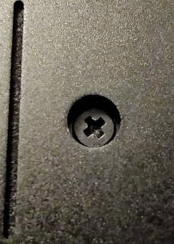
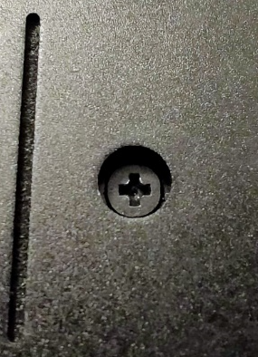
Те же приёмы можно применить к USB-портам: поместить крошечное количество свечного воска в разъём, который будет повреждён при вставке USB-накопителя.
В более рискованной среде регулярно проверяйте ноутбук на признаки вмешательства перед использованием.
Маршрут Whonixλ
Примечание о версии Whonix: Whonix обновлён с версии 17 до 18 (на момент написания — Whonix 18.1.4.x) с поддержкой автоматического обновления релизов. Если вы сейчас используете Whonix 17.x или более раннюю версию, путь обновления см. в разделе Обновление до Whonix 18.
Выбор хостовой ОСλ
В этом маршруте широко используются виртуальные машины307; для запуска ПО виртуализации им потребуется хостовая ОС. В этой части руководства рекомендуются три варианта:
-
Выбранный вами дистрибутив Linux (кроме Qubes OS)
-
Windows 10/11 (предпочтительно редакция Home из-за отсутствия Bitlocker)
-
macOS (Catalina или новее, вплоть до Monterey)
Кроме того, велика вероятность, что ваш Mac связан или был связан с учётной записью Apple (при покупке или после входа), поэтому в случае утечки аппаратных идентификаторов его уникальные аппаратные идентификаторы могут привести к вам.
Linux также не обязательно является лучшим выбором для анонимности — это зависит от вашей модели угроз. Дело в том, что Windows позволит нам удобно использовать правдоподобное отрицание308 (то есть отрицаемое шифрование309) на уровне ОС. К сожалению, Windows одновременно является кошмаром для приватности310, но это единственный простой в настройке вариант для правдоподобного отрицания в масштабах ОС. Телеметрия Windows и способы её блокировки также широко задокументированы, что должно смягчить многие проблемы.
Итак, что такое правдоподобное отрицание? Вы можете сотрудничать с противником, требующим доступ к вашему устройству/данным, не раскрывая свой настоящий секрет. Всё это достигается с помощью отрицаемого шифрования311.
Противник, действующий в рамках закона и не прибегающий к жёстким методам, может попросить пароль от вашего зашифрованного ноутбука. Сначала вы можете отказаться сообщать какой-либо пароль (воспользовавшись «правом хранить молчание», «правом не свидетельствовать против себя»), но некоторые страны вводят законы312'313, отменяющие действие таких прав (потому что террористы и «подумайте о детях»). В таком случае вам, возможно, придётся раскрыть пароль или оказаться в тюрьме за неуважение к суду. Здесь и вступает в силу правдоподобное отрицание.
Тогда вы сможете раскрыть пароль, но он даст доступ лишь к «правдоподобным данным» (ОС-приманке). Судебные эксперты будут прекрасно понимать, что у вас могут быть скрытые данные, но не должны суметь это доказать (если вы всё сделаете правильно). Вы будете сотрудничать, и у следователей будет доступ к чему-то, но не к тому, что вы действительно хотите скрыть. Поскольку бремя доказывания должно лежать на их стороне, им не останется ничего, кроме как поверить вам, если у них не будет доказательств существования скрытых данных.
Эту функцию можно использовать на уровне ОС (правдоподобная ОС и скрытая ОС) или на уровне файлов, когда у вас будет зашифрованный файловый контейнер (похожий на ZIP-файл), показывающий разные файлы в зависимости от использованного пароля шифрования.
Это также означает, что вы можете настроить собственную продвинутую схему «правдоподобного отрицания» с любой хостовой ОС, например храня виртуальные машины в контейнере скрытого тома Veracrypt (будьте осторожны со следами в хостовой ОС: если она постоянная, их потребуется очистить; см. раздел Некоторые дополнительные меры против криминалистического анализа далее). Для реализации этого в Tails есть проект (https://github.com/aforensics/HiddenVM [Archive.org]), который сделает вашу хостовую ОС непостоянной и использует правдоподобное отрицание в Tails.
В случае Windows правдоподобное отрицание также объясняет, почему в идеале следует использовать Windows 10/11 Home (а не Pro). Windows 10/11 Pro изначально предлагает систему полного шифрования диска (Bitlocker314), тогда как Windows 10/11 Home вовсе не предлагает полного шифрования диска. Позднее вы будете использовать для шифрования стороннее ПО с открытым исходным кодом, которое позволит выполнить полное шифрование диска в Windows 10/11 Home. Это даст вам хорошее (правдоподобное) объяснение использования такого ПО. Использование этого ПО в Windows 10/11 Pro выглядело бы подозрительно.
Примечание о Linux: Итак, что насчёт Linux и правдоподобного отрицания? Да, добиться правдоподобного отрицания можно и в Linux. Дополнительная информация приведена далее в разделе о хостовой ОС Linux.
К сожалению, шифрование — не магия, и оно сопряжено с некоторыми рисками:
Угрозы при использовании шифрованияλ
Атака гаечным ключом за 5 долларов
Помните, что шифрование с правдоподобным отрицанием или без него не является панацеей и почти бесполезно в случае пыток. Более того, в зависимости от того, кем является ваш противник (вашей модели угроз), может быть разумнее вообще не использовать Veracrypt (ранее TrueCrypt), как показано в этой демонстрации: https://defuse.ca/truecrypt-plausible-deniability-useless-by-game-theory.htm [Archive.org]
Правдоподобное отрицание эффективно только против противников, действующих в рамках закона и не прибегающих к физическим методам. По возможности избегайте ПО с поддержкой правдоподобного отрицания (например, Veracrypt), если ваша модель угроз включает жёстких противников. В этом случае пользователям Windows следует установить Windows Pro в качестве хостовой ОС и использовать Bitlocker.
См. https://en.wikipedia.org/wiki/Rubber-hose_cryptanalysis [Wikiless] [Archive.org]
Атака Evil Maidλ
Атаки Evil Maid315 проводятся, когда кто-то вмешивается в ваш ноутбук в ваше отсутствие: чтобы клонировать жёсткий диск, установить вредоносное ПО или кейлоггер. Если они могут клонировать жёсткий диск, то смогут сравнить образ диска, сделанный в ваше отсутствие, с диском, изъятым у вас. Если между этими событиями вы снова пользовались ноутбуком, судебные эксперты могут доказать существование скрытых данных, изучив изменения между двумя образами в области, которая должна быть пустой/неиспользуемой. Это может стать убедительным доказательством существования скрытых данных. Если в ноутбук установят кейлоггер или вредоносное ПО (программное или аппаратное), они смогут просто получить у вас пароль для последующего использования при изъятии. Такие атаки могут проводиться дома, в гостинице, на пограничном переходе или в любом месте, где вы оставляете устройства без присмотра.
Вы можете смягчить эту атаку следующими мерами (рекомендованными ранее):
-
Обеспечьте базовую защиту от вмешательства (как объяснялось ранее), чтобы предотвратить физический доступ к внутренностям ноутбука без вашего ведома. Это не позволит клонировать диски и установить физический кейлоггер незаметно для вас.
-
Отключите все USB-порты (как объяснялось ранее) в защищённом паролем BIOS/UEFI. Опять же, они не смогут включить их (без физического доступа к материнской плате для сброса BIOS), чтобы загрузить USB-устройство, способное клонировать жёсткий диск или установить программное вредоносное ПО, действующее как кейлоггер.
-
Установите пароли BIOS/UEFI/прошивки, чтобы предотвратить любую неавторизованную загрузку с неавторизованного устройства.
-
Некоторые ОС и программы шифрования имеют защиту Anti Evil Maid (AEM), которую можно включить. Это относится к Windows/Veracrypt и QubeOS (только на процессорах Intel).
Атака холодной загрузкиλ
Атаки Cold Boot316 сложнее атаки Evil Maid, но могут быть частью атаки Evil Maid, поскольку требуют, чтобы противник завладел вашим ноутбуком, пока вы активно используете устройство или вскоре после этого.
Идея довольно проста: как показано в этом видео317, противник теоретически может быстро загрузить ваше устройство со специального USB-накопителя, который скопирует содержимое ОЗУ (памяти) устройства после его выключения. Если USB-порты отключены или противнику требуется больше времени, он может вскрыть устройство и «охладить» память спреем или другими химическими веществами (например, жидким азотом), чтобы предотвратить деградацию памяти. Затем он сможет скопировать её содержимое для анализа. Этот дамп памяти может содержать ключ расшифрования устройства. Позже вы примените несколько принципов для смягчения этих рисков.
В случае правдоподобного отрицания проводились исследования318 о технической возможности доказать наличие скрытых данных с помощью простого криминалистического исследования (без атаки Cold Boot/Evil Maid), но другие исследования319 и сопровождающий Veracrypt320 оспорили их выводы, поэтому пока мы бы не стали слишком об этом беспокоиться.
Для противодействия атакам Cold Boot следует применять те же меры, что и против атак Evil Maid, с несколькими дополнениями:
-
Если ваша ОС или программа шифрования позволяет, рассмотрите также шифрование ключей в ОЗУ (это возможно в Windows/Veracrypt и будет объяснено позже). Ещё раз см. https://sourceforge.net/p/veracrypt/discussion/technical/thread/3961542951/ [Archive.org]
-
Включите в Veracrypt параметр очистки ключей из памяти при подключении устройства.
-
Следует ограничить использование спящего режима и вместо него выключать компьютер или использовать гибернацию, чтобы ключи шифрования не оставались в ОЗУ, когда компьютер переходит в спящий режим. Это связано с тем, что спящий режим поддерживает питание памяти для более быстрого возобновления работы. Только гибернация и выключение действительно очищают ключ из памяти321.
См. также Защита от атак Cold Boot [Archive.org] и Защита от физических атак [Archive.org].
Вот ещё несколько интересных инструментов, которые пользователям Linux стоит рассмотреть для защиты от этого:
-
https://github.com/0xPoly/Centry [Archive.org] (к сожалению, похоже, не поддерживается)
-
https://github.com/hephaest0s/usbkill [Archive.org] (к сожалению, похоже, также не поддерживается)
-
https://askubuntu.com/questions/153245/how-to-wipe-ram-on-shutdown-prevent-cold-boot-attacks [Archive.org]
-
(только Qubes OS, процессор Intel) https://github.com/QubesOS/qubes-antievilmaid [Archive.org]
О спящем режиме, гибернации и выключенииλ
Если вам нужна более высокая безопасность, следует полностью выключать ноутбук каждый раз, когда вы оставляете его без присмотра или закрываете крышку. Это должно очистить и/или высвободить ОЗУ и обеспечить защиту от атак холодной загрузки. Однако это может быть несколько неудобно: придётся полностью перезагружать компьютер и вводить множество паролей в различные приложения, заново запускать виртуальные машины и другие приложения. Вместо этого можно использовать гибернацию (Qubes OS её не поддерживает). Поскольку весь диск зашифрован, сама гибернация не должна представлять большого риска для безопасности, но она всё же выключит ноутбук и очистит память, позволяя вам удобно продолжить работу впоследствии. Никогда не следует использовать стандартный спящий режим: он оставляет компьютер включённым, а память — под питанием. Это вектор атак Evil Maid и Cold Boot, обсуждавшихся ранее. Причина в том, что находящаяся под питанием память хранит ключи шифрования вашего диска (зашифрованного или нет), и опытный противник может получить к ним доступ.
Позже это руководство объяснит, как включить гибернацию в различных хостовых ОС (кроме Qubes OS), если вы не хотите каждый раз выключать компьютер.
Локальные утечки данных (следы) и криминалистический анализλ
Как кратко упоминалось ранее, это утечки данных и следы, которые оставляют ваша операционная система и приложения при выполнении любой деятельности на компьютере. Они скорее относятся к зашифрованным файловым контейнерам (с правдоподобным отрицанием или без него), чем к шифрованию всей ОС. Такие утечки менее «важны», если зашифрована вся ОС (и вас не вынуждают раскрыть пароль).
Предположим, например, что у вас есть зашифрованный USB-накопитель Veracrypt с включённым правдоподобным отрицанием. В зависимости от пароля, который вы используете при монтировании USB-накопителя, откроется папка-приманка или конфиденциальная папка. В этих папках будут документы/данные-приманки в папке-приманке и конфиденциальные документы/данные в конфиденциальной папке.
Во всех случаях вы (скорее всего) откроете эти папки через Проводник Windows, Finder macOS или другую утилиту и сделаете то, что планировали. Возможно, отредактируете документ в конфиденциальной папке. Возможно, поищете в ней документ. Возможно, удалите один документ или посмотрите конфиденциальное видео в VLC.
Все эти приложения и ваша операционная система могут сохранять журналы и следы такого использования. Это может включать полный путь к папке/файлам/дискам, время доступа к ним, временные кэши файлов, списки «недавних» в каждом приложении, систему индексирования файлов, которая может проиндексировать диск, и даже созданные миниатюры.
Вот несколько примеров таких утечек:
Windowsλ
-
Windows ShellBags, которые хранятся в реестре Windows и незаметно сохраняют различные истории доступа к томам/файлам/папкам322.
-
Индексирование Windows, которое по умолчанию сохраняет следы файлов в вашей пользовательской папке323.
-
Списки недавних файлов (также известные как Jump Lists) в Windows и различных приложениях, сохраняющие следы недавно открывавшихся документов324.
-
Множество других следов в различных журналах; для подробностей см. этот удобный и интересный плакат: https://www.sans.org/security-resources/posters/windows-forensic-analysis/170/download [Archive.org]
macOSλ
-
Gatekeeper325 и XProtect, отслеживающие историю загрузок в локальной базе данных и атрибутах файлов.
-
Индексирование Spotlight
-
Списки недавних файлов в различных приложениях, сохраняющие следы недавно открывавшихся документов.
-
Временные папки, сохраняющие различные следы использования приложений и документов.
-
Журналы macOS
Linuxλ
-
Индексирование Tracker
-
История Bash
-
Журналы USB
-
Списки недавних файлов в различных приложениях, сохраняющие следы недавно открывавшихся документов.
-
Журналы Linux
Криминалистические эксперты могут использовать все эти утечки (см. Локальные утечки данных и криминалистический анализ), чтобы доказать существование скрытых данных, свести на нет ваши попытки использовать правдоподобное отрицание и узнать о различной конфиденциальной деятельности.
Поэтому важно предпринять различные меры, чтобы помешать криминалистам сделать это: предотвращать и очищать эти утечки/следы, а также, что важнее, использовать полное шифрование диска, виртуализацию и разделение сред.
Криминалисты не могут извлечь локальные утечки данных из ОС, к которой у них нет доступа. Большинство этих следов можно очистить, стерев диск или безопасно удалив виртуальные машины (что не так просто, как кажется, на SSD-накопителях).
Некоторые методы очистки всё же будут рассмотрены в части «Заметайте следы» этого руководства в самом конце.
Онлайн-утечки данныхλ
Используете ли вы простое шифрование или шифрование с правдоподобным отрицанием, даже если вы замели следы на самом компьютере, всё ещё существует риск онлайн-утечек данных, способных раскрыть наличие скрытых данных.
Телеметрия — ваш враг. Как уже объяснялось в этом руководстве, телеметрия операционных систем, а также приложений, может отправлять в интернет ошеломляющие объёмы личной информации.
В случае Windows эти данные, например, могут быть использованы для доказательства существования скрытой ОС / тома на компьютере и будут легко доступны Microsoft. Поэтому критически важно отключить и блокировать телеметрию всеми доступными вам средствами — независимо от используемой ОС.
Заключениеλ
Никогда не выполняйте конфиденциальную деятельность в незашифрованной системе. И даже если система зашифрована, никогда не выполняйте конфиденциальную деятельность непосредственно из хостовой ОС. Вместо этого используйте виртуальную машину, чтобы эффективно изолировать и разделить деятельность и предотвратить локальные утечки данных.
Если вы почти или совсем не знакомы с Linux либо хотите использовать правдоподобное отрицание в масштабах ОС, для удобства мы рекомендуем выбрать Windows (или вернуться к маршруту Tails). Это руководство поможет максимально защитить её от утечек. Оно также поможет максимально защитить macOS и Linux от подобных утечек.
Если правдоподобное отрицание в масштабах ОС вам не интересно и вы хотите научиться пользоваться Linux, мы настоятельно рекомендуем выбрать Linux либо маршрут Qubes OS, если это позволяет ваше оборудование.
Во всех случаях хостовую ОС нельзя использовать для непосредственного выполнения конфиденциальной деятельности. Хостовая ОС будет использоваться только для подключения к публичной точке доступа Wi-Fi. Пока вы выполняете конфиденциальную деятельность, она будет оставаться неиспользуемой; в идеале её также не следует применять для какой-либо вашей повседневной деятельности.
Также рассмотрите https://www.whonix.org/wiki/Full_Disk_Encryption#Encrypting_Whonix_VMs [Archive.org]
Хостовая ОС Linuxλ
Как уже упоминалось, мы не рекомендуем использовать ваш повседневный ноутбук для конфиденциальной деятельности. Или, по крайней мере, не рекомендуем использовать для этого установленную на нём ОС. Это может привести к нежелательным утечкам данных, которые можно использовать для вашей деанонимизации. Если у вас есть выделенный для этого ноутбук, следует переустановить чистую свежую ОС. Если вы не хотите стирать ноутбук и начинать заново, рассмотрите маршрут Tails или действуйте на свой риск.
Также рекомендую выполнить первоначальную установку полностью офлайн, чтобы избежать любых утечек данных.
Всегда помните: несмотря на репутацию, основные дистрибутивы Linux (например, Ubuntu) не обязательно безопаснее других систем, таких как macOS и Windows. Чтобы понять почему, см. этот источник: https://madaidans-insecurities.github.io/linux.html [Archive.org].
Полное шифрование дискаλ
Для дистрибутивов на базе Ubuntu или Debian здесь есть два маршрута:
-
Использование LUKS:
-
Без правдоподобного отрицания:
-
(Рекомендуемый и простой) Зашифровать в процессе установки: https://ubuntu.com/tutorials/install-ubuntu-desktop [Archive.org]
-
Этот процесс требует полного стирания всего диска (чистая установка).
-
Просто отметьте «Encrypt the new Ubuntu installation for security»
-
-
(Утомительный, но возможный) Зашифровать после установки: https://help.ubuntu.com/community/ManualFullSystemEncryption [Archive.org]
-
-
С правдоподобным отрицанием: см. следующий раздел [Способ с отделёнными заголовками]
-
-
Использование Veracrypt:
- С правдоподобным отрицанием или без него: см. следующий раздел [Способ Veracrypt]
Для других дистрибутивов вам придётся изучить вопрос самостоятельно, но, вероятно, всё будет похоже. В контексте этого руководства шифрование при установке гораздо проще.
Примечание о правдоподобном отрицании в Linuxλ
В Linux существует несколько способов добиться правдоподобного отрицания326, и это возможно. Ниже приведены дополнительные сведения о некоторых рекомендуемых нами способах. Все эти варианты требуют более продвинутых навыков работы с Linux.
Способ с отделёнными заголовкамиλ
Хотя этот способ пока не поддерживается руководством, в Linux можно добиться некоторой формы отрицания с помощью LUKS, используя отделённые заголовки LUKS. Пока что за дополнительной информацией мы направляем вас на эту страницу: https://wiki.archlinux.org/title/Dm-crypt/Specialties#Encrypted_system_using_a_detached_LUKS_header [Archive.org]
Способ Veracryptλ
Технически возможно не только использовать Veracrypt, но и добиться правдоподобного отрицания в хостовой ОС Linux, применяя Veracrypt для полного шифрования системного диска (вместо LUKS). Veracrypt этого не поддерживает (шифрование системы поддерживается только в Windows), и это требует экспериментов с различными командами. Это совершенно не рекомендуется неопытным пользователям и должно использоваться только на свой риск.
Шаги для этого пока не включены в руководство, но их можно найти здесь: http://dreadytofatroptsdj6io7l3xptbet6onoyno2yv7jicoxknyazubrad.onion/post/5779e55aae7fc06e4758 (это адрес .onion, для которого требуется Tor Browser).
Отключите любую телеметриюλ
-
При установке просто не разрешайте сбор данных, если появится соответствующий запрос.
-
Если не уверены, убедитесь, что не включили телеметрию, и при необходимости следуйте этому руководству: https://vitux.com/how-to-force-ubuntu-to-stop-collecting-your-data-from-your-pc/ [Archive.org]
-
В любом другом дистрибутиве вам потребуется изучить вопрос самостоятельно и выяснить, как отключить телеметрию.
Отключите всё ненужноеλ
-
Отключите Bluetooth, если он включён, следуя этому руководству: https://www.addictivetips.com/ubuntu-linux-tips/disable-bluetooth-in-ubuntu/ [Archive.org] или выполнив следующую команду:
sudo systemctl disable bluetooth.service --force
-
Отключите индексирование, если оно включено по умолчанию (Ubuntu >19.04), следуя этому руководству: https://www.linuxuprising.com/2019/07/how-to-completely-disable-tracker.html [Archive.org] или выполнив следующие команды:
-
sudo systemctl --user mask tracker-store.service tracker-miner-fs.service tracker-miner-rss.service tracker-extract.service tracker-miner-apps.service tracker-writeback.service- Можно спокойно игнорировать любую ошибку, если в ней говорится, что какая-то служба не существует
-
sudo tracker reset -hard
-
Гибернацияλ
Как объяснялось ранее, не следует использовать спящий режим; выключайте ноутбук или переводите его в гибернацию, чтобы смягчить некоторые атаки Evil Maid и Cold Boot. К сожалению, эта функция по умолчанию отключена во многих дистрибутивах Linux, включая Ubuntu. Её можно включить, но она может работать не так, как ожидается. Следуйте этой информации на свой риск. Если вы не хотите этого делать, никогда не используйте функцию сна и вместо этого выключайте питание (а также настройте закрытие крышки на выключение, а не на сон).
Чтобы включить гибернацию, следуйте одному из этих руководств:
-
https://www.how2shout.com/linux/how-to-hibernate-ubuntu-20-04-lts-focal-fossa/ [Archive.org]
-
http://www.lorenzobettini.it/2020/07/enabling-hibernation-on-ubuntu-20-04/ [Archive.org]
-
https://blog.ivansmirnov.name/how-to-set-up-hibernate-on-ubuntu-20-04/ [Archive.org]
После включения гибернации измените поведение ноутбука так, чтобы при закрытии крышки он переходил в гибернацию, следуя этому руководству для Ubuntu 20.04: http://ubuntuhandbook.org/index.php/2020/05/lid-close-behavior-ubuntu-20-04/ [Archive.org], а также этому руководству для Ubuntu 18.04: https://tipsonubuntu.com/2018/04/28/change-lid-close-action-ubuntu-18-04-lts/ [Archive.org]. Руководства для Ubuntu 21.04 или 21.10 пока нет, но приведённое выше руководство для 20.04, вероятно, тоже подойдёт.
К сожалению, при гибернации это не очистит ключ непосредственно из памяти. Чтобы избежать этого ценой некоторого снижения производительности, можно рассмотреть шифрование файла подкачки согласно этому руководству: https://help.ubuntu.com/community/EnableHibernateWithEncryptedSwap [Archive.org]
Эти настройки должны смягчить атаки холодной загрузки, если вы можете достаточно быстро перевести компьютер в гибернацию.
Включите рандомизацию MAC-адресаλ
-
Для Ubuntu выполните следующие шаги: https://help.ubuntu.com/community/AnonymizingNetworkMACAddresses [Archive.org].
-
Рассмотрите это руководство, которое всё ещё должно работать: https://josh.works/shell-script-basics-change-mac-address [Archive.org]
Усиление защиты Linuxλ
В качестве краткого введения для новых пользователей Linux рассмотрите: https://www.youtube.com/watch?v=Sa0KqbpLye4 [Invidious]
Для более подробных и продвинутых вариантов обратитесь к следующим материалам:
-
Это превосходное руководство: https://madaidans-insecurities.github.io/guides/linux-hardening.html [Archive.org]
-
Этот превосходный ресурс вики: https://wiki.archlinux.org/title/Security [Archive.org]
-
Эти превосходные скрипты основаны на приведённых выше руководстве и вики: https://codeberg.org/SalamanderSecurity/PARSEC [Archive.org]
-
Эти инструменты помогут усилить защиту ядра Linux:
-
Kconfig-hardened-check: https://github.com/a13xp0p0v/kconfig-hardened-check
-
Рассмотрите установку Safing Portmaster с https://safing.io/portmaster/ [Archive.org] (Предупреждение: возможны проблемы с некоторыми VPN-клиентами. См.: https://docs.safing.io/portmaster/install/status/vpn-compatibility [Archive.org]
-
Рассмотрите использование KickSecure с Debian: Kicksecure [Archive.org]
-
Эта интересная статья: http://0pointer.net/blog/authenticated-boot-and-disk-encryption-on-linux.html [Archive.org]
Настройка безопасного браузераλ
См. Безопасный браузер в хостовой ОС
Хостовая ОС macOSλ
Примечание: чипы Mac M1/M2 теперь поддерживаются нативно, как и коммерческие инструменты вроде VMWare Fusion или Parallels Desktop, если вы предпочитаете их использовать, но они не рассматриваются в этом руководстве. Изучите этот вопрос самостоятельно.
Как уже упоминалось, мы не рекомендуем использовать ваш повседневный ноутбук для конфиденциальной деятельности. Или, по крайней мере, не рекомендуем использовать для этого установленную на нём ОС. Это может привести к нежелательным утечкам данных, которые можно использовать для вашей деанонимизации. Если у вас есть выделенный для этого ноутбук, следует переустановить чистую свежую ОС. Если вы не хотите стирать ноутбук и начинать заново, рассмотрите маршрут Tails или действуйте на свой риск.
Мы также рекомендуем выполнить первоначальную установку полностью офлайн, чтобы избежать любых утечек данных.
Никогда не входите в учётную запись Apple на этом Mac.
Во время установкиλ
-
Оставайтесь офлайн
-
Отключайте все запросы на передачу данных, включая службы геолокации
-
Не входите в Apple
-
Не включайте Siri
Усиление защиты macOSλ
В качестве краткого введения для новых пользователей macOS рассмотрите: https://www.youtube.com/watch?v=lFx5icuE6Io [Invidious]
Чтобы подробнее изучить безопасность и усиление защиты macOS, рекомендуем это руководство, охватывающее многие вопросы: https://www.bejarano.io/hardening-macos/ [Archive.org]
Вот основные шаги, которые следует выполнить после офлайн-установки:
Включите пароль прошивки с параметром "disable-reset-capability"λ
Сначала установите пароль прошивки, следуя этому руководству Apple: https://support.apple.com/en-us/HT204455 [Archive.org]
К сожалению, некоторые атаки всё ещё возможны, и противник может отключить этот пароль, поэтому следует также выполнить это руководство, чтобы никто, включая Apple, не мог отключить пароль прошивки: https://support.apple.com/en-gb/guide/security/sec28382c9ca/web [Archive.org]
Включите гибернацию вместо снаλ
Опять же, это нужно для предотвращения некоторых атак Cold Boot и Evil Maid: при закрытии крышки отключается питание ОЗУ и очищается ключ шифрования. Всегда следует либо переводить компьютер в гибернацию, либо выключать его. В macOS у гибернации даже есть специальный параметр, позволяющий очищать ключ шифрования из памяти при гибернации (тогда как в других операционных системах, возможно, придётся ждать деградации памяти). И снова, в настройках нет простого способа сделать это, поэтому потребуется выполнить несколько команд для включения гибернации:
-
Откройте Terminal
-
Выполните:
sudo pmset -a destroyfvkeyonstandby 1- Эта команда предписывает macOS уничтожать ключ Filevault в режиме Standby (сна)
-
Выполните:
sudo pmset -a hibernatemode 25- Эта команда предписывает macOS отключать питание памяти во время сна вместо гибридной гибернации, сохраняющей память под питанием. Выход из режима будет медленнее, но время работы от батареи увеличится.
Теперь при закрытии крышки MacBook должен переходить в гибернацию, а не в сон, и это смягчит попытки провести атаки холодной загрузки.
Кроме того, следует настроить автоматический сон (Settings > Energy), чтобы MacBook автоматически переходил в гибернацию, если оставить его без присмотра.
Отключите ненужные службыλ
Отключите в настройках некоторые ненужные параметры:
-
Отключите Bluetooth
-
Отключите камеру и микрофон
-
Отключите службы геолокации
-
Отключите Airdrop
-
Отключите индексирование
Предотвратите вызовы Apple OCSPλ
Это печально известные «неблокируемые телеметрические» вызовы macOS Big Sur, раскрытые здесь: https://sneak.berlin/20201112/your-computer-isnt-yours/ [Archive.org]
Вы можете заблокировать отчётность OCSP, выполнив следующую команду в Terminal:
sudo sh -c 'echo "127.0.0.1 ocsp.apple.com" >> /etc/hosts'
Однако прежде чем действовать, следует самостоятельно изучить вопрос. Эта страница — хорошая отправная точка: https://blog.jacopo.io/en/post/apple-ocsp/ [Archive.org]
Решайте сами. Мы бы заблокировали это, поскольку не хотим вообще никакой телеметрии от нашей ОС к «материнскому кораблю» без нашего явного согласия. Никакой.
Включите полное шифрование диска (Filevault)λ
Включите полное шифрование диска на Mac с помощью Filevault согласно этой части руководства: https://github.com/drduh/macOS-Security-and-Privacy-Guide#full-disk-encryption [Archive.org]
Будьте осторожны при включении. Не сохраняйте ключ восстановления у Apple, если появится такой запрос (на этом этапе это не должно быть проблемой, поскольку вы должны быть офлайн). Не следует позволять третьей стороне хранить ваш ключ восстановления.
Рандомизация MAC-адресаλ
К сожалению, macOS не предлагает удобного встроенного способа рандомизировать MAC-адрес, поэтому придётся делать это вручную. Значение будет сбрасываться при каждой перезагрузке, и его нужно будет менять заново, чтобы не использовать фактический MAC-адрес при подключении к различным Wi-Fi.
Сделать это можно, выполнив следующие команды в Terminal (без скобок):
-
(Выключите Wi-Fi)
networksetup -setairportpower en0 off -
(Измените MAC-адрес)
sudo ifconfig en0 ether 88:63:11:11:11:11 -
(Снова включите Wi-Fi)
networksetup -setairportpower en0 on
Настройка безопасного браузераλ
См. Безопасный браузер в хостовой ОС
Хостовая ОС Windowsλ
Как уже упоминалось, мы не рекомендуем использовать ваш повседневный ноутбук для чувствительных действий. По крайней мере, не используйте для них установленную на нём ОС. Это может привести к нежелательным утечкам данных, по которым вас можно деанонимизировать. Если у вас есть отдельный ноутбук для этого, следует переустановить на него свежую чистую ОС. Если вы не хотите стирать данные с ноутбука и начинать заново, рассмотрите маршрут с Tails или действуйте на свой риск.
Также рекомендую выполнять первоначальную установку полностью офлайн, чтобы избежать утечки данных.
Установкаλ
Следуйте разделу Установка Windows
В качестве краткого введения посмотрите https://www.youtube.com/watch?v=vNRics7tlqw [Invidious]
Включение рандомизации MAC-адресаλ
Рандомизируйте MAC-адрес, как объяснялось ранее в этом руководстве:
Перейдите в «Параметры» > «Сеть и Интернет» > «Wi-Fi» > включите «Случайные аппаратные адреса»
В качестве альтернативы можно использовать это бесплатное ПО: https://technitium.com/tmac/ [Archive.org]
Настройка безопасного браузераλ
См. Безопасный браузер в хостовой ОС
Включение дополнительных параметров приватности в хостовой ОСλ
См. Дополнительные параметры приватности Windows
Шифрование хостовой ОС Windowsλ
Если вы намерены использовать правдоподобное отрицание для всей системыλ
VeraCrypt327 — рекомендуемое нами ПО для полнодискового шифрования, шифрования файлов и правдоподобного отрицания. Это форк известного, но устаревшего и более не поддерживаемого TrueCrypt. Его можно использовать для:
-
Простого полнодискового шифрования (жёсткий диск шифруется одной парольной фразой).
-
Полнодискового шифрования с правдоподобным отрицанием (в зависимости от парольной фразы, введённой при загрузке, будет загружаться ОС-приманка либо скрытая ОС).
-
Простого шифрования файлового контейнера (это большой файл, который можно подключить в VeraCrypt как внешний диск для хранения зашифрованных файлов).
-
Файлового контейнера с правдоподобным отрицанием (это тот же большой файл, но в зависимости от парольной фразы при подключении будет подключён «скрытый том» или «том-приманка»).
Насколько мне известно, это единственное бесплатное, открытое и публично проверенное328 ПО для шифрования, удобное и доступное любому пользователю, которое также обеспечивает правдоподобное отрицание для широкого применения и работает с Windows Home Edition.
Скачайте и установите VeraCrypt: https://www.veracrypt.fr/en/Downloads.html [Archive.org]
После установки уделите время следующим параметрам, которые помогут смягчить некоторые атаки:
-
Зашифруйте память опцией VeraCrypt329 (settings > performance/driver options > encrypt RAM) ценой 5–15 % производительности. Этот параметр также отключит гибернацию (при которой ключ не очищается активно) и вместо этого зашифрует память целиком для смягчения некоторых cold-boot-атак. Подробнее об этой функции: https://sourceforge.net/p/veracrypt/discussion/technical/thread/3961542951/ [Archive.org]
-
Включите опцию VeraCrypt для очистки ключей из памяти при подключении нового устройства (system > settings > security > clear keys from memory if a new device is inserted). Это может помочь, если систему изымут, пока она включена (но заблокирована).
-
Включите опцию VeraCrypt для подключения томов как съёмных (Settings > Preferences > Mount volume as removable media). Это предотвратит запись Windows некоторых журналов о подключениях в Event logs330 и некоторые локальные утечки данных.
-
Будьте осторожны и хорошо оценивайте обстановку, если заметите что-то странное. Выключите ноутбук как можно быстрее.
Если вы не хотите шифровать память (из-за возможного снижения производительности), хотя бы включите гибернацию вместо сна. Ключи из памяти это не очистит (вы всё ещё уязвимы для cold boot-атак), но при достаточном времени для затухания памяти это хотя бы должно их смягчить.
Подробнее далее в [Маршрутах A и B: простое шифрование с VeraCrypt (руководство для Windows)].
Если вы не намерены использовать правдоподобное отрицание для всей системыλ
В этом случае для полнодискового шифрования вместо VeraCrypt рекомендуется BitLocker. Причина в том, что BitLocker, в отличие от VeraCrypt, не предоставляет возможности правдоподобного отрицания. Если вы раскроете парольную фразу, у серьёзного противника не будет стимула продолжать «усиленный» допрос.
Обычно в таком случае должна быть установлена Windows Pro, а настройка BitLocker достаточно проста.
В основном можно следовать инструкции: https://support.microsoft.com/en-us/windows/turn-on-device-encryption-0c453637-bc88-5f74-5105-741561aae838 [Archive.org]
Но вот сами шаги:
-
Откройте меню Windows
-
Введите "Bitlocker"
-
Нажмите "Manage Bitlocker"
-
Нажмите "Turn on Bitlocker" для системного диска
-
Следуйте инструкциям
-
Не сохраняйте ключ восстановления в учётной записи Microsoft, если будет предложено.
-
Сохраняйте ключ восстановления только на внешнем зашифрованном диске. Чтобы обойти это, распечатайте ключ восстановления на виртуальном принтере Microsoft Print to PDF и сохраните ключ в папке Documents. Позже удалите этот файл.
-
Зашифруйте весь диск (а не только используемое пространство).
-
Используйте "New Encryption Mode"
-
Запустите проверку BitLocker
-
Перезагрузите компьютер
-
-
Шифрование должно начаться в фоновом режиме (проверить можно, нажав значок Bitlocker в правом нижнем углу панели задач).
К сожалению, этого недостаточно. При такой настройке ключ Bitlocker может храниться как есть в TPM-чипе компьютера. Это довольно проблематично, поскольку в некоторых случаях ключ можно легко извлечь331'332'333'334.
Чтобы смягчить это, потребуется включить ещё несколько параметров согласно рекомендациям Microsoft335:
-
Нажмите значок Windows
-
Введите Run
-
Введите "gpedit.msc" (это редактор групповой политики)
-
Перейдите в Computer Configuration > Administrative Templates > Windows Components > BitLocker > Operating System Drives
-
Дважды нажмите "Require Additional Authentication at Startup"
- Нажмите "Configure TPM Startup PIN" и задайте "Require Startup PIN with TPM"
-
Дважды нажмите "Allow enhanced PINs for startup"
- Нажмите "Enable" (это позволит задать пароль вместо PIN-кода)
-
-
Закройте редактор групповой политики
-
Нажмите значок Windows
-
Введите Command, чтобы открыть "Command Prompt"
-
Щёлкните правой кнопкой мыши и выберите "Run as Administrator"
-
Выполните
manage-bde -protectors -delete c:(это удалит текущую защиту: ключ восстановления, который вам не понадобится) -
Выполните
manage-bde -protectors -add c: -TPMAndPIN(будет предложено задать пароль до загрузки)- Введите выбранный вами пароль или парольную фразу (хорошую)
-
Выполните
manage-bde -status- Теперь у диска C: в разделе "Key Protectors" должен появиться вариант "TPM and PIN"
-
Готово
Теперь при перезагрузке компьютера в идеале должны запрашиваться:
-
Пароль загрузки BIOS/UEFI
-
Пароль разблокировки SSD/HDD (если эта функция доступна в BIOS)
-
Экран PIN-кода Bitlocker до загрузки, где требуется ввести только что заданный пароль/парольную фразу
-
И наконец, экран входа Windows, где можно ввести ранее заданные учётные данные
Включение гибернации (необязательно)λ
Как уже объяснялось: никогда не используйте режим сна/ожидания, чтобы смягчить некоторые cold-boot-атаки и evil-maid-атаки. Вместо этого выключайте компьютер или переводите его в гибернацию. Поэтому при закрытии крышки или переходе ноутбука в сон настройте гибернацию.
(Учтите, что гибернацию нельзя включить, если ранее было включено шифрование RAM в VeraCrypt)
Причина в том, что гибернация фактически полностью выключает ноутбук и очищает память. Сон же оставляет память под питанием (включая ключ расшифровки), что может оставить ноутбук уязвимым к cold-boot-атакам.
По умолчанию Windows 10/11 может не предлагать эту возможность, поэтому включите её, следуя руководству Microsoft: https://docs.microsoft.com/en-us/troubleshoot/windows-client/deployment/disable-and-re-enable-hibernation [Archive.org]
-
Откройте командную строку от имени администратора (щёлкните правой кнопкой мыши Command Prompt и выберите "Run as Administrator")
-
Выполните: powercfg.exe /hibernate on
-
Затем выполните дополнительную команду:
powercfg /h /type full- Эта команда обеспечит полный режим гибернации и полную очистку памяти (хотя и не безопасную).
После этого перейдите к настройкам питания:
-
Откройте Control Panel
-
Откройте System & Security
-
Откройте Power Options
-
Откройте "Choose what the power button does"
-
Замените все варианты сна на гибернацию или выключение
-
Вернитесь в Power Options
-
Выберите Change Plan Settings
-
Выберите Advanced Power Settings
-
Измените все значения Sleep для каждого плана питания на 0 (Never)
-
Убедитесь, что Hybrid Sleep выключен для каждого плана питания
-
Включите Hibernate After на желаемое время
-
Отключите все Wake timers
Выбор подмаршрутаλ
Теперь выберите один из трёх вариантов:
-
Маршрут A: простое шифрование текущей ОС
-
Плюсы:
-
Не требует стирать данные с ноутбука
-
Нет проблем с локальными утечками данных
-
Хорошо работает с SSD
-
Работает с любой ОС
-
Простота
-
-
Минусы:
-
Противник может принудить вас раскрыть пароль и все секреты; правдоподобного отрицания не будет.
-
Риск онлайн-утечек данных
-
-
-
Маршрут B: простое шифрование текущей ОС с последующим использованием правдоподобного отрицания в самих файлах:
-
Плюсы:
-
Не требует стирать данные с ноутбука
-
Хорошо работает с SSD
-
Работает с любой ОС
-
Правдоподобное отрицание возможно против «мягких» противников
-
-
Минусы:
-
Риск онлайн-утечек данных
-
Риск локальных утечек данных (для их очистки потребуется больше работы)
-
-
-
Маршрут C: шифрование ОС с правдоподобным отрицанием (на ноутбуке будет «скрытая ОС» и «ОС-приманка»):
-
Плюсы:
-
Нет проблем с локальными утечками данных
-
Правдоподобное отрицание возможно против «мягких» противников
-
-
Минусы:
-
Как видите, маршрут C даёт перед остальными только два преимущества в приватности и полезен лишь против мягкого законного противника. Помните о https://en.wikipedia.org/wiki/Rubber-hose_cryptanalysis [Wikiless] [Archive.org].
Решение о выборе маршрута остаётся за вами. Маршрут A — минимум.
Всегда часто проверяйте наличие новых версий VeraCrypt, чтобы получать последние исправления. Особенно проверяйте это до установки крупных обновлений Windows, которые могут сломать загрузчик VeraCrypt и вызвать бесконечный цикл загрузки.
ОБРАТИТЕ ВНИМАНИЕ: ПО УМОЛЧАНИЮ VERACRYPT ВСЕГДА ПРЕДЛАГАЕТ СИСТЕМНЫЙ ПАРОЛЬ В РАСКЛАДКЕ QWERTY (показывайте пароль для проверки). Это может вызвать проблемы, если при загрузке используется клавиатура ноутбука (например, AZERTY): пароль будет задан в QWERTY, а при загрузке введён в AZERTY. Поэтому при тестовой загрузке обязательно проверьте раскладку, используемую BIOS. Вход может не удаться только из-за путаницы QWERTY/AZERTY. Если BIOS загружается с AZERTY, пароль в VeraCrypt нужно вводить в QWERTY.
Маршруты A и B: простое шифрование с VeraCrypt (руководство для Windows)λ
Пропустите этот шаг, если ранее использовали BitLocker.
Для этого метода не нужен HDD и на этом маршруте не нужно отключать Trim. Утечки Trim будут полезны криминалистам только для обнаружения скрытого тома и в остальном мало на что повлияют.
Этот маршрут достаточно прост: текущая ОС будет зашифрована на месте без потери данных. Обязательно читайте все тексты, которые показывает VeraCrypt, чтобы полностью понимать происходящее. Вот шаги:
-
Запустите VeraCrypt
-
Перейдите в Settings:
-
Settings > Performance/driver options > Encrypt RAM
-
System > Settings > Security > Clear keys from memory if a new device is inserted
-
System > Settings > Windows > Enable Secure Desktop
-
-
Выберите System
-
Выберите Encrypt System Partition/Drive
-
Выберите Normal (Simple)
-
Выберите Single-Boot
-
Выберите AES в качестве алгоритма шифрования (нажмите кнопку теста, если хотите сравнить скорость)
-
Выберите SHA-512 в качестве алгоритма хеширования (а почему бы и нет)
-
Введите надёжную парольную фразу (чем длиннее, тем лучше; помните Рекомендации по паролям и парольным фразам)
-
Соберите энтропию, случайно перемещая курсор, пока полоса не заполнится
-
Нажмите Next на экране Generated Keys
-
Создавать rescue disk338 или нет — решать вам. Мы рекомендуем его создать (на всякий случай), но обязательно храните его вне зашифрованного диска (например, на USB-накопителе; либо ознакомьтесь в конце этого руководства с рекомендациями по безопасным резервным копиям). Эта rescue disk не хранит парольную фразу, и она всё равно потребуется для её использования.
-
Режим очистки:
-
Если на ноутбуке ещё нет чувствительных данных, выберите None
-
Если чувствительные данные находятся на SSD, одного Trim должно быть достаточно339, но для уверенности рекомендуем один проход (случайные данные).
-
Если чувствительные данные находятся на HDD, Trim нет, и мы рекомендуем как минимум 1-pass.
-
-
Проверьте настройку. VeraCrypt перезагрузит систему для проверки загрузчика до шифрования. Для продолжения шифрования эта проверка должна завершиться успешно.
-
После перезагрузки компьютера и успешной проверки VeraCrypt предложит начать процесс шифрования.
-
Запустите шифрование и дождитесь его завершения.
-
Готово; пропустите маршрут B и перейдите к следующим шагам.
Далее будет раздел о создании в Windows зашифрованных файловых контейнеров с правдоподобным отрицанием.
Маршрут B: шифрование с правдоподобным отрицанием и скрытой ОС (только Windows)λ
Это поддерживается только в Windows.
Это рекомендуется только для HDD. Для SSD это не рекомендуется.
Скрытая ОС не должна быть активирована (ключом продукта MS). Поэтому этот маршрут рекомендует и описывает полную чистую установку, которая сотрёт всё на вашем ноутбуке.
Прочтите документацию VeraCrypt https://www.veracrypt.fr/en/VeraCrypt%20Hidden%20Operating%20System.html [Archive.org] (раздел Process of Creation of Hidden Operating System) и https://www.veracrypt.fr/en/Security%20Requirements%20for%20Hidden%20Volumes.html [Archive.org] (Security Requirements and Precautions Pertaining to Hidden Volumes).
Вот как будет выглядеть система после завершения процесса:
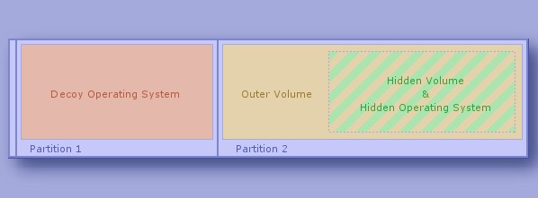
(Иллюстрация из документации VeraCrypt, https://veracrypt.fr/en/VeraCrypt%20Hidden%20Operating%20System.html [Archive.org])
Как видите, для этого процесса изначально нужны два раздела на жёстком диске.
Процесс выполнит следующее:
-
Зашифрует второй раздел (внешний том), который будет выглядеть в ОС-приманке как пустой неформатированный диск.
-
Предложит скопировать во внешний том содержимое-приманку.
- Сюда вы скопируете из внешнего жёсткого диска свою коллекцию аниме/порно-приманку.
-
Создаст скрытый том во внешнем томе второго раздела. Там будет расположена скрытая ОС.
-
Клонирует текущую установку Windows 10/11 на скрытый том.
-
Сотрёт текущую Windows 10/11.
-
То есть текущая Windows 10/11 станет скрытой Windows 10/11, и потребуется заново установить свежую Windows 10/11 в качестве приманки.
Обязательно при использовании SSD, если вы всё же хотите сделать это вопреки рекомендации: отключите SSD Trim в Windows340 (повторим: это совершенно НЕ рекомендуется, поскольку само отключение Trim крайне подозрительно). Кроме того, как уже упоминалось, отключение Trim сократит срок службы SSD и со временем существенно ухудшит его производительность (ноутбук будет становиться всё медленнее в течение нескольких месяцев, пока почти не станет непригодным; тогда придётся очистить диск и установить всё заново). Но это необходимо для предотвращения утечек данных341 , которые позволят криминалистам опровергнуть ваше правдоподобное отрицание342343. Единственный текущий обходной путь — ноутбук с обычным HDD.
Шаг 1: создание установочного USB-накопителя Windows 10/11λ
См. Создание установочного носителя Windows и выберите вариант с USB-накопителем.
Шаг 2: загрузка с USB-накопителя и запуск установки Windows 10/11 (скрытая ОС)λ
-
Вставьте USB-накопитель в ноутбук
-
См. Установка Windows и установите Windows 10/11 Home.
Шаг 3: параметры приватности (скрытая ОС)λ
См. Дополнительные параметры приватности Windows
Шаг 4: установка VeraCrypt и начало шифрования (скрытая ОС)λ
Не забудьте прочитать https://www.veracrypt.fr/en/VeraCrypt%20Hidden%20Operating%20System.html [Archive.org]
Не подключайте эту ОС к известной Wi-Fi-сети. Загрузите установщик VeraCrypt на другом компьютере и скопируйте его сюда с помощью USB-накопителя. Вот шаги:
-
Установите VeraCrypt
-
Запустите VeraCrypt
-
Перейдите в Settings:
-
Settings > Performance/driver options > Encrypt RAM (обратите внимание: эта опция несовместима с гибернацией ноутбука и означает, что его придётся полностью выключать)
-
System > Settings > Security > Clear keys from memory if a new device is inserted
-
System > Settings > Windows > Enable Secure Desktop
-
-
Перейдите в System и выберите Create Hidden Operating System
-
Внимательно прочтите все подсказки
-
Если будет предложено, выберите Single-Boot
-
Создайте Outer Volume с AES и SHA-512.
-
Используйте для Outer Volume всё доступное место второго раздела
-
Используйте надёжную парольную фразу (помните Рекомендации по паролям и парольным фразам)
-
Выберите yes для Large Files
-
Создайте энтропию, двигая мышь до заполнения полосы, и выберите NTFS (не выбирайте exFAT: внешний том должен выглядеть «обычно», а NTFS — обычный формат).
-
Отформатируйте Outer Volume
-
Откройте Outer Volume:
-
На этом этапе следует скопировать во внешний том данные-приманки. Подготовьте чувствительные, но не слишком чувствительные файлы/папки для копирования туда на случай, если потребуется раскрыть пароль этого тома. Это подходящее место для коллекции аниме/Mp3/фильмов/порно.
-
Рекомендуем не заполнять внешний том слишком сильно или слишком слабо (примерно на 40 %). Не забудьте оставить достаточно места для скрытой ОС (размером с первый раздел, созданный при установке).
-
-
Используйте надёжную парольную фразу для Hidden Volume (очевидно, отличную от парольной фразы Outer Volume).
-
Теперь создайте Hidden Volume, выберите AES и SHA-512
-
Заполните полосу энтропии до конца случайными движениями мыши
-
Отформатируйте скрытый том
-
Приступите к клонированию
-
VeraCrypt перезагрузится и клонирует Windows, в которой вы начали процесс, в Hidden Volume. Эта Windows станет вашей скрытой ОС.
-
Когда клонирование завершится, VeraCrypt перезагрузится в скрытой системе
-
VeraCrypt сообщит об установке скрытой системы и предложит стереть исходную ОС (ту, которую вы ранее установили с USB-накопителя).
-
Используйте 1-Pass Wipe и продолжите.
-
Теперь скрытая ОС установлена; переходите к следующему шагу
Шаг 5: перезагрузитесь, загрузитесь с USB-накопителя и снова начните установку Windows 10/11 (ОС-приманка)λ
Теперь, когда скрытая ОС полностью установлена, необходимо установить ОС-приманку:
-
Вставьте USB-накопитель в ноутбук
-
См. Установка Windows и снова установите Windows 10/11 Home (не устанавливайте другую версию — используйте Home).
Шаг 6: параметры приватности (ОС-приманка)λ
См. Дополнительные параметры приватности Windows
Шаг 7: установка VeraCrypt и начало шифрования (ОС-приманка)λ
Теперь зашифруйте ОС-приманку:
-
Установите VeraCrypt
-
Запустите VeraCrypt
-
Выберите System
-
Выберите Encrypt System Partition/Drive
-
Выберите Normal (Simple)
-
Выберите Single-Boot
-
Выберите AES в качестве алгоритма шифрования (нажмите кнопку теста, если хотите сравнить скорость)
-
Выберите SHA-512 в качестве алгоритма хеширования (а почему бы и нет)
-
Введите короткий слабый пароль (да, это серьёзно; сделайте это — объяснение будет позже).
-
Соберите энтропию, случайно перемещая курсор, пока полоса не заполнится
-
Нажмите Next на экране Generated Keys
-
Создавать rescue disk344 или нет — решать вам. Мы рекомендуем его создать (на всякий случай), но обязательно храните его вне зашифрованного диска (например, на USB-накопителе; либо ознакомьтесь в конце этого руководства с рекомендациями по безопасным резервным копиям). Эта rescue disk не хранит парольную фразу, и она всё равно потребуется для её использования.
-
Режим очистки: для безопасности выберите 1-Pass
-
Предварительно проверьте настройку. VeraCrypt перезагрузит систему для проверки загрузчика до шифрования. Для продолжения шифрования эта проверка должна завершиться успешно.
-
После перезагрузки компьютера и успешной проверки VeraCrypt предложит начать процесс шифрования.
-
Запустите шифрование и дождитесь его завершения.
-
ОС-приманка готова к использованию.
Шаг 8: проверка настройки (загрузка в обе ОС)λ
Пора проверить настройку:
-
Перезагрузитесь и введите парольную фразу скрытой ОС; должна загрузиться скрытая ОС.
-
Перезагрузитесь и введите парольную фразу ОС-приманки; должна загрузиться ОС-приманка.
-
Запустите VeraCrypt в ОС-приманке и подключите второй раздел с парольной фразой Outer Volume (подключите его только для чтения: Mount Options > Read-Only); второй раздел должен подключиться только для чтения с данными-приманками (коллекцией аниме/порно). Он подключается только для чтения, потому что при записи можно перезаписать содержимое скрытой ОС.
Шаг 9: безопасное изменение данных-приманок во внешнем томеλ
Прежде чем переходить дальше, освойте безопасное подключение Outer Volume для записи. Это также описано в официальной документации VeraCrypt: https://www.veracrypt.fr/en/Protection%20of%20Hidden%20Volumes.html [Archive.org]
Делайте это из безопасного доверенного места.
По сути, следует подключить Outer Volume, одновременно введя в Mount Options парольную фразу Hidden Volume, чтобы защитить скрытый том от перезаписи:
-
Откройте VeraCrypt
-
Выберите второй раздел
-
Нажмите Mount
-
Нажмите Mount Options
-
Отметьте параметр "Protect the Hidden volume..."
-
Введите парольную фразу скрытой ОС
-
Нажмите OK
-
Введите парольную фразу Outer Volume
-
Нажмите OK
-
Теперь можно открыть Outer Volume и записывать в него, меняя содержимое (копировать/перемещать/удалять/редактировать...)
Эта операция фактически не подключает Hidden Volume и должна предотвратить появление криминалистических свидетельств, которые могли бы привести к обнаружению скрытой ОС. Однако во время операции оба пароля будут находиться в RAM. Вы всё ещё можете быть уязвимы к cold-boot-атаке. Для смягчения этого обязательно включите шифрование RAM, как было указано ранее.
Шаг 10: оставьте в ОС-приманке криминалистические свидетельства Outer Volume (с данными-приманками)λ
ОС-приманка должна выглядеть максимально правдоподобно. Также желательно, чтобы противник недооценил ваш уровень знаний.
Важно намеренно оставить в ОС-приманке некоторые криминалистические свидетельства данных-приманок. Они позволят экспертам увидеть, что вы часто подключали Outer Volume для доступа к его содержимому.
Полезные советы по оставлению криминалистических свидетельств:
-
Воспроизводите содержимое Outer Volume из ОС-приманки (например, VLC). Обязательно сохраняйте историю этого.
-
Редактируйте документы и работайте с ними.
-
Снова включите индексирование файлов в ОС-приманке и включите подключённый Outer Volume.
-
Часто отключайте и подключайте его, чтобы смотреть содержимое или перемещать файлы.
-
Скопируйте часть содержимого из Outer Volume в ОС-приманку, затем небезопасно удалите его. Просто поместите его в Recycle Bin — так поступит лишь наивный человек, считающий, что данные удалены.
-
Установите в ОС-приманке торрент-клиент; время от времени используйте его для загрузки похожего материала, который останется в ОС-приманке.
-
В ОС-приманке может быть установлен VPN-клиент с известным вам VPN (оплаченным не наличными).
Не помещайте в ОС-приманку ничего подозрительного, например:
-
Это руководство
-
Любые ссылки на это руководство
-
Подозрительное ПО для анонимности, например Tor Browser
-
Любые тома VeraCrypt
-
Любые документы об анонимности или безопасности
Цель — убедить противника, что вы не настолько умны, как он полагал, и тем самым отговорить его от дальнейших поисков.
Примечанияλ
Помните: чтобы этот сценарий правдоподобного отрицания работал, вам потребуются убедительные объяснения:
-
Вы используете VeraCrypt, потому что у вас Windows 10/11 Home без Bitlocker, но вы всё же хотели приемлемой приватности.
-
У вас два раздела, потому что вы хотели отделить систему от данных для удобной организации и потому что знакомый технарь сказал, что так производительность будет лучше.
-
Вы использовали слабый пароль для удобной загрузки системы и длинную надёжную парольную фразу для Outer Volume. Вам было лень вводить надёжную парольную фразу при каждой загрузке.
-
Вы зашифровали второй раздел паролем, отличным от системного, потому что не хотите, чтобы кто-либо в вашей группе/домене видел ваши вещи. Вы не хотели, чтобы эти данные были кому-либо доступны.
Ещё раз прочтите раздел "Possible Explanations for Existence of Two Veracrypt Partitions on Single Drive" документации VeraCrypt: https://www.veracrypt.fr/en/VeraCrypt%20Hidden%20Operating%20System.html [Archive.org]
Будьте осторожны:
-
Никогда не подключайте Hidden Volume из ОС-приманки (НИ В КОЕМ СЛУЧАЕ). Это создаст в ОС-приманке криминалистические свидетельства скрытого тома и может сорвать попытку правдоподобного отрицания. Если вы всё-таки сделали это (намеренно или по ошибке) из ОС-приманки, способы удаления криминалистических свидетельств будут объяснены позже, в конце руководства; сама эта ошибка не критична, если следовать шагам Некоторые дополнительные меры против криминалистического анализа.
-
Никогда не используйте ОС-приманку из той же сети (публичного Wi-Fi), что и скрытую ОС.
-
Подключая Outer Volume из ОС-приманки, не записывайте в него данные. Это может перезаписать то, что выглядит пустым местом, но на деле является скрытой ОС. Всегда подключайте его только для чтения.
-
Если хотите изменить данные-приманки Outer Volume, используйте USB-накопитель с Live OS, в которой работает VeraCrypt.
-
Учтите, что скрытая ОС не предназначена для чувствительных действий: позже они будут выполняться в ВМ внутри скрытой ОС. Скрытая ОС нужна только для защиты от мягких законных противников, которые могут получить доступ к ноутбуку и принудить вас раскрыть пароль.
-
Будьте внимательны к любому вмешательству в ноутбук. Evil-Maid-атаки могут раскрыть скрытую ОС.
Virtualbox в хостовой ОСλ
Помните о виртуализации.
Этот и последующие шаги выполняются в хостовой ОС: это может быть хостовая ОС с простым шифрованием (Windows/Linux/macOS) или скрытая ОС с правдоподобным отрицанием (только Windows).
В этом маршруте будет широко использоваться бесплатное ПО Oracle Virtualbox345. Это средство виртуализации, в котором можно создавать виртуальные машины, эмулирующие компьютер с определённой ОС (можете использовать Xen, Qemu, KVM или VMWARE, но для удобства эта часть руководства описывает только Virtualbox).
Следует понимать, что Virtualbox не имеет лучшей репутации с точки зрения безопасности. Некоторые известные проблемы346 до сих пор не были полностью исправлены347. Если вы используете Linux и обладаете несколько бо́льшими техническими навыками, рассмотрите KVM, следуя руководству Whonix: https://www.whonix.org/wiki/KVM [Archive.org] и здесь
Во всех случаях необходимо предпринять следующие шаги:
Все чувствительные действия будут выполняться в гостевой виртуальной машине с Windows 10/11 Pro (в этот раз не Home), Linux или macOS.
Это даёт несколько преимуществ для сохранения анонимности:
-
Гостевая ОС ВМ (Windows/Linux/macOS), приложения и телеметрия в ВМ не должны получить прямой доступ к аппаратному обеспечению. Даже если ВМ скомпрометирована вредоносным ПО, оно не должно получить доступ к хостовой ОС и скомпрометировать физическую машину.
-
Это позволит принудительно направить весь сетевой трафик ВМ через другую ВМ-шлюз, которая передаст весь трафик через сеть Tor. Это сетевой «аварийный выключатель»: ВМ полностью потеряет сетевое подключение и перейдёт офлайн, если целевая сетевая ВМ потеряет связь с Tor.
-
Сама ВМ, подключённая к интернету только через шлюз сети Tor, подключится к вашему VPN-сервису, оплаченному наличными, через Tor.
-
Утечки DNS будут невозможны, поскольку ВМ находится в изолированной сети, которая в любом случае должна проходить через Tor.
Выбор метода подключенияλ
В этом маршруте есть семь возможностей:
-
Рекомендуемые и предпочтительные:
-
Использовать только Tor (Пользователь > Tor > Интернет)
-
В отдельных случаях использовать VPN поверх Tor (Пользователь > Tor > VPN > Интернет)
-
В отдельных случаях использовать VPS с самостоятельно размещённым VPN/Proxy поверх Tor (Пользователь > Tor > самостоятельно размещённый VPN/Proxy > Интернет)
-
-
Возможны, если этого требует контекст:
-
Использовать VPN поверх Tor поверх VPN (Пользователь > VPN > Tor > VPN > Интернет)
-
Использовать Tor поверх VPN (Пользователь > VPN > Tor > Интернет)
-
-
Не рекомендуются и рискованны:
-
Использовать только VPN (Пользователь > VPN > Интернет)
-
Использовать VPN поверх VPN (Пользователь > VPN > VPN > Интернет)
-
-
Не рекомендуются и крайне рискованны (но возможны)
- Без VPN и Tor (Пользователь > Интернет)
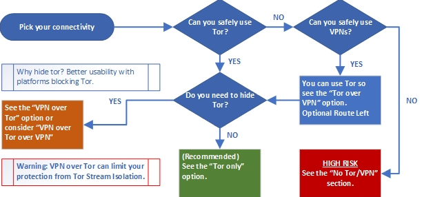
Только Torλ
Это предпочтительное и наиболее рекомендуемое решение.
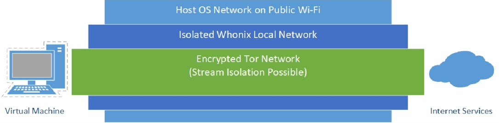
При этом решении весь сетевой трафик проходит через Tor, чего в большинстве случаев достаточно для обеспечения анонимности.
Однако есть основной недостаток: некоторые сервисы прямо блокируют/запрещают выходные узлы Tor и не позволяют создавать с них учётные записи.
Чтобы смягчить это, возможно, придётся рассмотреть следующий вариант — VPN поверх Tor; но учтите связанные с ним риски, объяснённые в следующем разделе.
VPN/Proxy поверх Torλ
Это решение может быть полезно там, где доступ к целевому сервису невозможен с выходного узла Tor: многие сервисы прямо запрещают, затрудняют или блокируют выходные узлы Tor (см. https://gitlab.torproject.org/legacy/trac/-/wikis/org/doc/ListOfServicesBlockingTor [Archive.org]).
Решение можно реализовать двумя способами:
-
Платный VPN поверх Tor (проще)
-
Платный самостоятельно размещённый VPS, настроенный как VPN/Proxy (эффективнее для обхода онлайн-препятствий, например captcha, но требует больших навыков Linux)
Как видно на иллюстрации, если противник скомпрометирует оплаченный наличными (предпочтительно)/Monero VPN/Proxy, несмотря на заявления о приватности и отсутствии журналов, он обнаружит лишь анонимную учётную запись VPN/Proxy, оплаченную наличными/Monero и подключающуюся к сервису с выходного узла Tor.
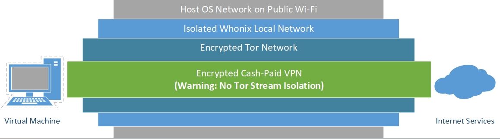
Если противник каким-то образом скомпрометирует и сеть Tor, он увидит лишь IP случайного публичного Wi-Fi, не связанный с вашей личностью.
Если противник скомпрометирует ОС ВМ (например, вредоносным ПО или эксплойтом), он окажется заперт во внутренней сети Whonix и не должен суметь раскрыть IP публичного Wi-Fi.
Но у решения есть главный недостаток: вмешательство в изоляцию потоков Tor348.
Изоляция потоков — метод смягчения некоторых корреляционных атак, при котором для каждого приложения используются разные цепочки Tor. Вот иллюстрация, показывающая изоляцию потоков:
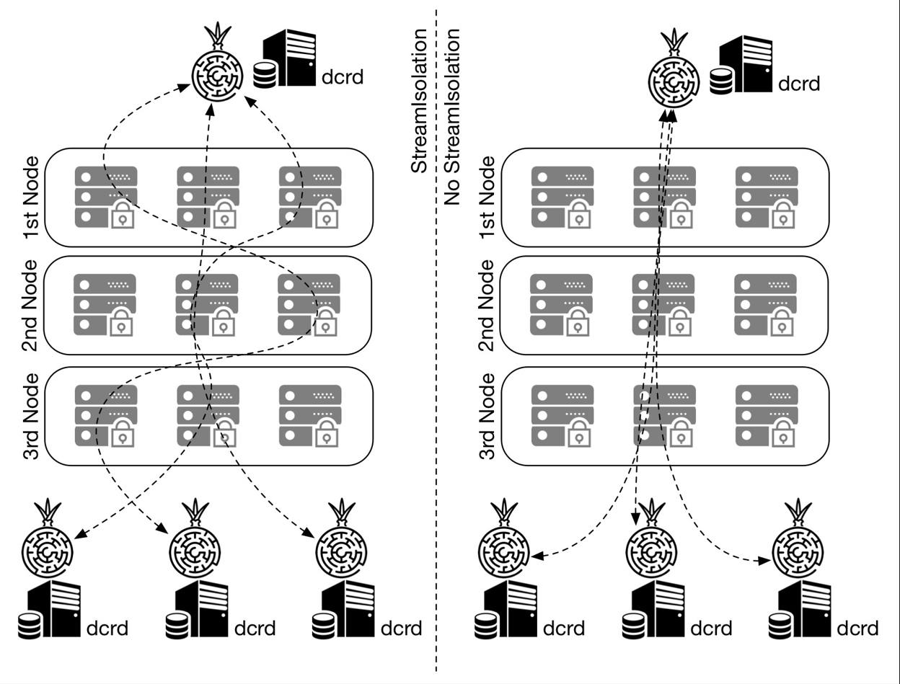
(Иллюстрация Marcelo Martins, https://stakey.club/en/decred-via-tor-network/ [Archive.org])
VPN/Proxy поверх Tor находится справа349: VPN/Proxy поверх Tor принуждает Tor использовать одну цепочку для всех действий вместо нескольких цепочек для каждого из них. Поэтому это может снизить эффективность Tor и должно использоваться лишь в отдельных случаях:
-
Когда целевой сервис не допускает выходные узлы Tor.
-
Когда вас не беспокоит общая цепочка Tor для различных сервисов, например при использовании нескольких аутентифицированных сервисов.
Не используйте этот метод, если цель — просто анонимно просматривать случайные неаутентифицированные сайты: вы не получите преимуществ изоляции потоков, и со временем противнику будет проще коррелировать ваши сеансы (см. Ваш анонимизированный трафик Tor/VPN). Если же цель — использовать одну личность при каждом сеансе в одних аутентифицированных сервисах, ценность изоляции потоков снижается, поскольку корреляция возможна другими способами.
Следует также знать, что изоляция потоков не обязательно настроена по умолчанию в Whonix Workstation: она предварительно настроена лишь для некоторых приложений, включая Tor Browser.
Кроме того, изоляция потоков не всегда меняет все узлы цепочки Tor. Иногда меняется лишь один или два. Во многих случаях изоляция потоков (например, в Tor Browser) меняет только промежуточный relay-узел и выходной узел, сохраняя тот же guard-узел (входной).
Подробнее:
-
https://tails.boum.org/contribute/design/stream_isolation/ [Archive.org]
-
https://www.whonix.org/wiki/Tunnels/Introduction#Comparison_Table [Archive.org]
Tor поверх VPNλ
Возможно, вы спросите: почему не использовать Tor поверх VPN вместо VPN поверх Tor? Мы не обязательно рекомендуем это:
-
Недостатки:
-
VPN-провайдер становится ещё одним ISP, который знает исходный IP и сможет деанонимизировать вас при необходимости. Мы ему не доверяем. Предпочтительна ситуация, в которой VPN-провайдер не знает, кто вы. Анонимности это почти не добавляет.
-
Вы будете подключаться к различным сервисам с IP выходного узла Tor, который во многих местах заблокирован или отмечен. Удобства это не добавляет.
-
-
Преимущества:
-
Главное преимущество — враждебная среда, где доступ к Tor невозможен/опасен/подозрителен, но VPN допустим.
-
Этот метод не нарушает изоляцию потоков Tor.
-
Он также скрывает действия в Tor от основного ISP.
-
Если доступ к сети Tor затруднён блокировкой/цензурой, можно попробовать мосты Tor. См. Использование мостов Tor во враждебной среде.
Можно также рассмотреть VPN поверх Tor поверх VPN (Пользователь > VPN > Tor > VPN > Интернет) с двумя VPN, оплаченными наличными/Monero. Это означает, что хостовая ОС подключается из публичного Wi-Fi к первому VPN, затем Whonix подключается к Tor, а ВМ подключается ко второму VPN поверх Tor поверх VPN (см. https://www.whonix.org/wiki/Tunnels/Connecting_to_a_VPN_before_Tor [Archive.org]).
Это, конечно, существенно повлияет на производительность и может быть очень медленным, но для разумной анонимности Tor должен присутствовать где-то в цепочке.
Технически в этом маршруте это легко: нужны две отдельные анонимные учётные записи VPN; подключитесь к первому VPN из хостовой ОС и следуйте маршруту.
Вывод: делайте это только если считаете, что использовать только Tor рискованно/невозможно, но VPN допустимы. Или просто потому, что можете. Этот метод не снизит вашу безопасность/приватность/анонимность.
Только VPNλ
Этот маршрут не будет описан и не рекомендуется.
Если можно использовать VPN, то вы должны суметь добавить поверх него слой Tor. А если можно использовать Tor, можно добавить поверх Tor анонимный VPN и получить предпочтительное решение.
Использовать только VPN или даже VPN поверх VPN не имеет смысла: со временем их можно связать с вами. Один из VPN-провайдеров будет знать ваш реальный исходный IP (даже в безопасном публичном месте), а если добавить ещё один VPN, второй всё равно будет знать, что вы использовали первый VPN-сервис. Это лишь немного отложит деанонимизацию. Да, это дополнительный слой, но постоянный централизованный слой, и со временем вас можно деанонимизировать. Это просто цепочка из трёх ISP, на которых распространяются законные запросы.
Подробнее см. следующие источники:
-
https://www.whonix.org/wiki/Comparison_Of_Tor_with_CGI_Proxies,_Proxy_Chains,_and_VPN_Services#Tor_and_VPN_Services_Comparison [Archive.org]
-
https://www.whonix.org/wiki/Why_does_Whonix_use_Tor [Archive.org]
-
https://www.researchgate.net/publication/324251041_Anonymity_communication_VPN_and_Tor_a_comparative_study [Archive.org]
-
https://gist.github.com/joepie91/5a9909939e6ce7d09e29#file-vpn-md [Archive.org]
-
https://schub.wtf/blog/2019/04/08/very-precarious-narrative.html [Archive.org]
В контексте этого руководства Tor необходим где-то в цепочке для разумной и безопасной анонимности; используйте его, если можете.
Без VPN/Torλ
Если там, где вы находитесь, нельзя использовать ни VPN, ни Tor, вероятно, вы находитесь в крайне враждебной среде с чрезвычайно высоким уровнем наблюдения и контроля.
Просто не делайте этого: риск слишком велик. Любой мотивированный противник сможет деанонимизировать вас почти мгновенно и добраться до физического местоположения за считанные минуты.
Не забудьте вернуться к разделам Противники (угрозы) и Проверьте сеть на наблюдение/цензуру с помощью OONI.
Если другого варианта совершенно нет, но вы всё же хотите что-то сделать, см. Что делать, когда Tor и VPN невозможны? (на свой риск) и рассмотрите вместо этого маршрут с Tails.
| Тип подключения | Анонимность | Доступ к онлайн-ресурсам | Изоляция потоков Tor | Безопаснее там, где Tor подозрителен/опасен | Скорость | Стоимость | Рекомендуется |
|---|---|---|---|---|---|---|---|
| Только Tor | Хорошая | Средний | Возможна | Нет | Средняя | Бесплатно | Да |
| Tor поверх VPN | Хорошая+ | Средний | Возможна | Да | Средняя | Около 50 €/год | При необходимости (Tor недоступен) |
| Tor поверх VPN поверх Tor | Лучшая | Средний | Возможна | Да | Низкая | Около 50 €/год | Да |
| VPN поверх Tor | Хорошая- | Хороший | Нет | Нет | Средняя | Около 50 €/год | При необходимости (удобство) |
| Самостоятельный VPS VPN/Proxy поверх Tor | Хорошая- | Очень хороший | Нет | Да | Средняя | Около 50 €/год | При необходимости (удобство) |
| VPN/Proxy поверх Tor поверх VPN | Хорошая- | Хороший | Нет | Да | Низкая | Около 100 €/год | При необходимости (удобство и Tor недоступен) |
| Только VPN/Proxy | Плохая | Хороший | Н/Д | Да | Хорошая | Около 50 €/год | Нет. |
| Без Tor и VPN | Плохая | Неизвестно | Н/Д | Нет | Хорошая | Около 100 € (антенна) | Нет. |
К сожалению, использование только Tor вызовет подозрения у многих целевых платформ. Вас ждёт множество препятствий (captcha, ошибки, трудности регистрации). Кроме того, само использование Tor там, где вы находитесь, может вызвать проблемы. Но Tor по-прежнему лучшее решение для анонимности и должен присутствовать в цепочке.
-
Если вы хотите создавать постоянные общие аутентифицированные личности в разных сервисах, к которым сложно получить доступ через Tor, рекомендуем VPN поверх Tor и VPS VPN/Proxy поверх Tor (либо при необходимости VPN поверх Tor поверх VPN). Из-за нарушения изоляции потоков Tor это может быть немного менее безопасным против корреляционных атак, но даёт гораздо больше удобства доступа к онлайн-ресурсам, чем один Tor. Это «приемлемый» компромисс, IMHP, если вы достаточно осторожны со своей личностью.
- Примечание: всё чаще основные сервисы и CDN также блокируют или затрудняют VPN-пользователей captcha и другими препятствиями. В таком случае лучший вариант — самостоятельно размещённый VPS с VPN/Proxy поверх Tor: собственный выделенный VPS гарантирует, что вы единственный пользователь своего IP и почти не встретите препятствий. Рассмотрите самостоятельно размещённый VPN/Proxy на VPS, оплаченном Monero/наличными (для пользователей, лучше знакомых с Linux), если хотите минимум проблем (это подробнее объясняется в следующем разделе).
-
Если же цель — анонимно просматривать случайные сервисы без создания определённых общих личностей, пользуясь дружелюбными к Tor сервисами, или если вы не хотите принимать этот компромисс. Тогда рекомендуем маршрут «только Tor», чтобы сохранить все преимущества изоляции потоков (или Tor поверх VPN, если это необходимо).
-
Если важна стоимость, по возможности рекомендуем вариант «только Tor».
-
Если доступ и к Tor, и к VPN невозможен или опасен, остаётся только безопасно полагаться на публичный Wi-Fi. См. Что делать, когда Tor и VPN невозможны?
Дополнительные сведения, которые помогут принять решение:
-
Tor Project: https://gitlab.torproject.org/legacy/trac/-/wikis/doc/TorPlusVPN [Archive.org]
-
Документация Tails:
-
Документация Whonix (в таком порядке):
-
Несколько исследований по теме:
Получение анонимного VPN/Proxyλ
Пропустите этот шаг, если хотите использовать только Tor.
См. Получение анонимного VPN/Proxy
Whonixλ
Пропустите этот шаг, если не можете использовать Tor.
В этом маршруте виртуализация и Whonix350 используются как часть процесса анонимизации. Whonix — дистрибутив Linux, состоящий из двух виртуальных машин:
-
Whonix Workstation (ВМ, в которой можно выполнять чувствительные действия)
-
Whonix Gateway (эта ВМ установит соединение с сетью Tor и направит через неё весь сетевой трафик Workstation).
Поэтому руководство предлагает два варианта маршрута:
- Маршрут только с Whonix, где весь трафик направляется через сеть Tor (только Tor или Tor поверх VPN).
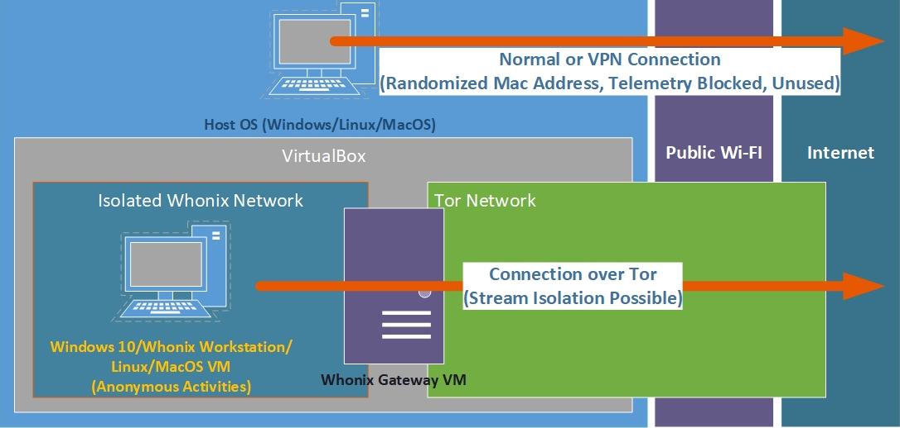
- Гибридный маршрут Whonix, где весь трафик направляется через оплаченный наличными (предпочтительно)/Monero VPN поверх сети Tor (VPN поверх Tor или VPN поверх Tor поверх VPN).
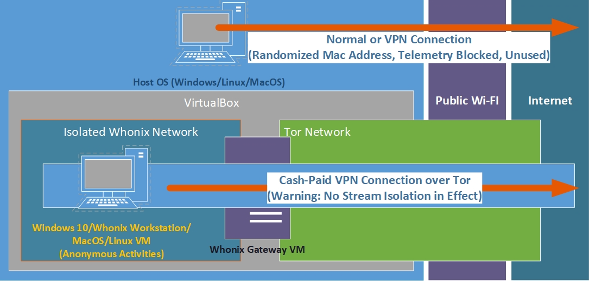
Вы сможете выбрать вариант на основании моих рекомендаций. Как объяснялось ранее, мы рекомендуем второй.
Whonix хорошо поддерживается и имеет обширную, невероятно подробную документацию.
Примечание о снимках Virtualboxλ
Позже вы создадите и запустите в Virtualbox несколько виртуальных машин для чувствительных действий. Virtualbox предоставляет функцию "Snapshots"351, которая позволяет сохранить состояние ВМ в любой момент. При необходимости позднее можно в любой момент восстановить этот снимок.
Настоятельно рекомендую использовать эту функцию и создавать снимок после первоначальной установки/обновления каждой ВМ. Снимок следует создавать до использования ВМ для любых чувствительных/анонимных действий.
Это позволит превратить ВМ в своего рода одноразовые «живые операционные системы» (подобно обсуждавшейся ранее Tails). То есть вы сможете стереть все следы действий в ВМ, восстановив Snapshot до прежнего состояния. Конечно, это не так хорошо, как Tails (где всё хранится в памяти): на жёстком диске могут остаться следы действий. Криминалистические исследования показали возможность восстановления данных из возвращённой к снимку ВМ352. К счастью, после удаления или возврата к более раннему снимку эти следы можно удалить. Такие методы обсуждаются в разделе Некоторые дополнительные меры против криминалистического анализа этого руководства.
Загрузка Virtualbox и утилит Whonixλ
В хостовой ОС нужно скачать несколько компонентов:
-
Последнюю версию установщика Virtualbox для вашей хостовой ОС: https://www.virtualbox.org/wiki/Downloads [Archive.org]
-
(Пропустите, если не можете использовать Tor напрямую или через VPN) Последнюю стабильную OVA Whonix 18.x:
- Релизы GitHub [Archive.org]
- Или официальное зеркало загрузки: https://download.whonix.org/ (начинающим рекомендуется рабочий стол XFCE)
- (Необязательно) текстовый клиент Whonix [Archive.org] доступен опытным пользователям, предпочитающим минимальную конфигурацию.
Примечание о Whonix 18.x: по состоянию на версию руководства v1.2.5 Whonix был обновлён с версии 17 до 18 (Whonix 18.1.4.x). Если сейчас используется Whonix 17.x, путь обновления приведён в разделе [Обновление до Whonix 18].
На этом подготовка завершена; теперь вы готовы приступить к настройке окончательной среды, которая защитит вашу анонимность онлайн.
Усиление защиты Virtualbox (Whonix 17.x и 18.x)λ
Для оптимальной безопасности следуйте руководству Whonix по усилению защиты [Archive.org], учитывая следующие дополнительные замечания:
Рекомендуемые настройки (применить ко всем ВМ):
- Отключите звук
- Не включайте Shared Folders
- Отключите 2D-ускорение: VBoxManage modifyvm "vm-name" --accelerate2dvideo off
- Отключите 3D-ускорение
- Отключите Serial Port
- Удалите дисководы Floppy и CD/DVD (либо сделайте их неработоспособными)
- Отключите сервер Remote Display
- Включите PAE/NX для функций безопасности
- Отключите ACPI
Рассинхронизация сетевого времени: Рассинхронизируйте часы ВМ, чтобы предотвратить атаки синхронизации (см. [Документация Whonix — синхронизация сетевого времени] [Archive.org]):
```sh
# Примеры смещений (выберите разные значения для каждой ВМ)
VBoxManage modifyvm "Whonix-Gateway-XFCE" --biossystemtimeoffset -35017
VBoxManage modifyvm "Whonix-Workstation-XFCE" --biossystemtimeoffset +27931
```
Смягчение Spectre/Meltdown: (необязательно; может снизить производительность) Подробное усиление защиты от Spectre/Meltdown описано здесь: https://www.whonix.org/wiki/Spectre_Meltdown [Archive.org].
Дополнительная безопасность: (Whonix 18.x+) - Рассмотрите включение AppArmor в Whonix Workstation: https://www.whonix.org/wiki/AppArmor [Archive.org] - Ознакомьтесь с рекомендациями DoNot [Archive.org]
- Отключите USB-контроллер, включённый по умолчанию. Установите Pointing Device на "PS/2 Mouse", иначе изменения будут отменены.
Наконец, также следуйте рекомендации рассинхронизировать часы ВМ относительно хостовой ОС: https://www.whonix.org/wiki/Network_Time_Synchronization#Spoof_the_Initial_Virtual_Hardware_Clock_Offset [Archive.org]
Смещение должно находиться в пределах 60000 миллисекунд и отличаться для каждой ВМ; вот примеры (позже их можно применить к любой ВМ):
-
VBoxManage modifyvm "Whonix-Gateway-XFCE" --biossystemtimeoffset -35017 -
VBoxManage modifyvm "Whonix-Gateway-XFCE" --biossystemtimeoffset +27931 -
VBoxManage modifyvm "Whonix-Workstation-XFCE" --biossystemtimeoffset -35017 -
VBoxManage modifyvm "Whonix-Workstation-XFCE" --biossystemtimeoffset +27931
Также рассмотрите применение этих мер VirtualBox против уязвимостей Spectre353/Meltdown354, выполнив эту команду из каталога программы VirtualBox. Все они описаны здесь: https://www.whonix.org/wiki/Spectre_Meltdown [Archive.org] (учтите, что они могут серьёзно снизить производительность ВМ, но должны применяться для наилучшей безопасности).
Наконец, ознакомьтесь с рекомендациями по безопасности от самого Virtualbox: https://www.virtualbox.org/manual/ch13.html [Archive.org]
Tor через VPNλ
Пропустите этот шаг, если не собираетесь использовать Tor через VPN, намерены использовать только Tor или не можете использовать Tor.
Если вы по какой-либо причине собираетесь использовать Tor через VPN, сначала необходимо настроить VPN-сервис в основной ОС.
Помните: в этом случае мы рекомендуем иметь две учётные записи VPN. Обе должны быть оплачены наличными/Monero (см. Получение анонимного VPN/прокси). Одна будет использоваться в основной ОС для первого VPN-подключения. Другую можно использовать в виртуальной машине, чтобы получить VPN через Tor через VPN (пользователь > VPN > Tor > VPN).
Если вы намерены использовать только Tor через VPN, вам нужна лишь одна учётная запись VPN.
Инструкции см. в разделе Установка VPN в виртуальной машине или основной ОС.
Виртуальные машины Whonixλ
Пропустите этот шаг, если не можете использовать Tor.
-
Запустите Virtualbox в основной ОС.
-
Импортируйте OVA Whonix в Virtualbox: см. VirtualBox/XFCE [Archive.org]
- Опытные пользователи также могут использовать версию с текстовым клиентом
-
Запустите виртуальные машины Whonix
Помните, что на этом этапе, если у вас возникают проблемы с подключением к Tor из-за цензуры или блокировок, следует рассмотреть подключение через мосты, как объясняется в разделе Мосты [Archive.org].
- Обновите виртуальные машины Whonix, следуя инструкциям в разделе Программное обеспечение и обновления операционной системы [Archive.org]
Примечание: пользователям Qubes OS следует ознакомиться с разделом [Обновление до Whonix 18], содержащим примечания по миграции.
-
Выключите виртуальные машины Whonix
-
Создайте снимок обновлённых виртуальных машин Whonix в Virtualbox (выберите виртуальную машину и нажмите кнопку Take Snapshot). Подробнее об этом позже.
-
Перейдите к следующему шагу
Важное примечание: вам также следует прочитать эти очень хорошие рекомендации https://www.whonix.org/wiki/DoNot [Archive.org] , поскольку большинство этих принципов применимы и к этому руководству. Также прочитайте общую документацию https://www.whonix.org/wiki/Documentation [Archive.org] : она, как и это руководство, содержит множество советов.
Улучшения и рекомендуемые практики Whonix 18.xλ
Ключевые изменения в Whonix 18.x: - Автоматизированный процесс обновления выпуска для плавного перехода с Whonix 17.x - Улучшенная интеграция AppArmor для усиленной изоляции приложений в системах на базе Debian - Улучшенная настройка сети с более широкими возможностями подключения к Tor - Обновлённые руководства по усилению безопасности с актуальными рекомендуемыми практиками - Лучшая интеграция и совместимость с Qubes OS
Рекомендуемые практики для пользователей Whonix 18.x:
- Всегда создавайте снимок перед применением любых обновлений системы или изменением конфигурации
- Проверяйте целостность системы после обновления с помощью команд
sudo checkvm - Регулярно просматривайте страницу DoNot, чтобы быть в курсе рекомендуемых практик безопасности
- Поддерживайте виртуальные машины Whonix в актуальном состоянии, используя автоматический процесс обновления, когда он доступен
- Рассмотрите KVM вместо VirtualBox
Для пользователей Qubes OS:
Поддерживается Qubes R4.2+ с Whonix 18. После обновления всегда проверяйте целостность системы с помощью systemcheck. Подробные инструкции по миграции см. в разделе [Обновление до Whonix 18].
Выберите гостевую рабочую виртуальную машинуλ
Использование Whonix/Linux потребует от вас больше навыков, поскольку это дистрибутивы Linux. Вы также столкнётесь с большими трудностями, если собираетесь использовать конкретное ПО, которое может быть сложнее в работе на Whonix/Linux. Настройка VPN через Tor в Whonix также будет сложнее, чем в Windows.
Если вы можете использовать Torλ
Вы можете выбрать, выполнять ли конфиденциальные действия на Whonix Workstation из предыдущего раздела (настоятельно рекомендуется) или в пользовательской виртуальной машине, которая, подобно Whonix Workstation, будет использовать Whonix Gateway (менее безопасно, но может потребоваться в зависимости от ваших задач).
Если вы не можете использовать Torλ
Если вы не можете использовать Tor, можно использовать выбранную вами пользовательскую виртуальную машину, которая в идеале будет использовать анонимный VPN, если это возможно, для последующего подключения к сети Tor. Либо можно пойти рискованным путём: см. Что делать, если Tor и VPN невозможны?
Виртуальная машина Linux (Whonix или Linux)λ
Whonix Workstation (рекомендуется и предпочтительна)λ
Пропустите этот шаг, если не можете использовать Tor.
Просто используйте предоставленную виртуальную машину Whonix Workstation. Это самый безопасный и защищённый вариант на этом маршруте.
Это также единственная виртуальная машина, в которой изоляция потоков по умолчанию предварительно настроена для большинства приложений355.
Если вам нужно дополнительное ПО на Workstation (например, другой браузер), следуйте этому руководству https://www.whonix.org/wiki/Install_Software [Archive.org]
Для дополнительной защиты от вредоносного ПО рассмотрите запуск Whonix в Live Mode; см. https://www.whonix.org/wiki/Anti-Forensics_Precautions [Archive.org]
Не забудьте применить рекомендации по усилению защиты виртуальной машины: [Рекомендации по усилению защиты Virtualbox].
Рассмотрите использование AppArmor на рабочих станциях Whonix, следуя этому руководству: https://www.whonix.org/wiki/AppArmor [Archive.org]
Linux (любой дистрибутив)λ
Будьте осторожны: любая настройка не-Whonix гостевой виртуальной машины (раскладка клавиатуры, язык, часовой пояс, разрешение экрана и прочее) позднее может быть использована для её идентификации. См. https://www.whonix.org/wiki/VM_Fingerprinting [Archive.org]
Если вы можете использовать Tor (напрямую или через VPN)λ
Используйте дистрибутив Linux по своему выбору. Для удобства мы рекомендуем Ubuntu или Fedora, но подойдёт и любой другой. Не включайте телеметрию.
Подробные инструкции см. в этом руководстве https://www.whonix.org/wiki/Other_Operating_Systems [Archive.org].
Рассмотрите усиление защиты виртуальной машины, как рекомендовано в разделе [Усиление защиты Linux].
Если вы не можете использовать Torλ
Используйте дистрибутив Linux по своему выбору. Для удобства мы рекомендуем Ubuntu или Fedora, но подойдёт и любой другой. Не включайте телеметрию. Можно пойти рискованным путём: см. Что делать, если Tor и VPN невозможны?
Выберите браузер в виртуальной машинеλ
В этот раз мы рекомендуем браузер Brave.
Узнайте почему: Какой браузер использовать в гостевой/одноразовой виртуальной машине
Также см. [Усиление защиты браузеров].
Виртуальная машина Windows 10/11λ
Будьте осторожны: любая настройка не-Whonix гостевой виртуальной машины (раскладка клавиатуры, язык, часовой пояс, разрешение экрана и прочее) позднее может быть использована для её идентификации. См. https://www.whonix.org/wiki/VM_Fingerprinting [Archive.org]
Загрузка ISO Windows 10 и 11λ
Выберите официальную виртуальную машину Windows 10/11 Pro и усильте её защиту самостоятельно: см. Создание установочного носителя Windows и используйте ISO.
Если вы можете использовать Tor (напрямую или через VPN)λ
Подробные инструкции см. в этом руководстве https://www.whonix.org/wiki/Other_Operating_Systems [Archive.org].
Установкаλ
-
Выключите виртуальную машину Whonix Gateway (это не позволит Windows отправлять телеметрию и даст возможность создать локальную учётную запись).
-
Откройте Virtualbox
-
Выберите Machine > New > выберите Windows 10 или Windows 11 64bit
-
Выделите минимум 2 ГБ для Windows 10 и 4 ГБ для Windows 11
-
Создайте виртуальный диск в формате VDI и выберите Dynamically Allocated
-
Оставьте размер диска 50 ГБ для Windows 10 и 80 ГБ для Windows 11 (это максимум; фактический размер не должен достигнуть его)
-
Убедитесь, что PAE/NX включён в System > Processor
-
Выберите виртуальную машину и нажмите Settings, перейдите на вкладку Network
-
Выберите "Internal Network" в поле "Attached to" и выберите Whonix.
-
Перейдите на вкладку Storage, выберите пустой CD и нажмите значок рядом с SATA Port 1
-
Нажмите "Choose a disk file" и выберите ранее скачанный ISO Windows
-
Нажмите OK и запустите виртуальную машину
-
Virtualbox предложит нажать кнопку для загрузки ISO либо спросит, что загружать; выберите ISO или нажмите кнопку.
-
Следуйте шагам в разделе Установка Windows](#windows-installation)
-
Запустите виртуальную машину Whonix Gateway
Настройки сетиλ
-
Вернитесь в Windows
-
Windows 10: вернитесь в Settings, затем Network & Internet. Windows 11: перейдите в settings, нажмите меню в левом верхнем углу и выберите "Network and Internet"
-
Windows 10: нажмите Properties (под Ethernet). Windows 11: нажмите Ethernet
-
Windows 10: выберите Edit IP settings. Windows 11: выберите Edit IP assignment.
-
Windows 10: включите IPv4 и задайте следующие параметры; Windows 11: переключитесь с DHCP на Manual и задайте следующие параметры:
-
IP-адрес
10.152.152.50(увеличьте этот IP на единицу для каждой другой виртуальной машины) -
Длина префикса подсети
18(255.255.192.0) -
Шлюз
10.152.152.10(это Whonix Gateway) -
(Windows 10) DNS
10.152.152.10(это снова Whonix Gateway) -
(Windows 11) выйдите из настройки IP-назначения, выберите DNS server assignment и установите
10.152.152.10(это снова Whonix Gateway) -
Сохраните
-
-
Windows может спросить, хотите ли вы быть «обнаруживаемыми» в этой сети. Нажмите NO. При появлении запроса всегда оставайтесь в «публичной сети».
Каждый раз при включении этой виртуальной машины в будущем обязательно меняйте её MAC-адрес Ethernet перед каждой загрузкой. Это можно сделать в Virtualbox > Settings > Network > Advanced > нажмите кнопку обновления рядом с MAC-адресом. Это возможно только при выключенной виртуальной машине.
Если вы не можете использовать Torλ
См. Что делать, если Tor и VPN невозможны?
Установкаλ
-
Откройте Virtualbox
-
Выберите Machine > New > выберите Windows 10 или 11 64bit
-
Выделите минимум 4 ГБ ОЗУ для 11 и 2 ГБ ОЗУ для 10.
-
Создайте виртуальный диск в формате VDI и выберите Dynamically Allocated
-
На вкладке System/Processor убедитесь, что PAE/NX включён.
-
Оставьте размер диска 80 ГБ для 11, 50 ГБ для 10 (это максимум; фактический размер не должен достигнуть его)
-
Перейдите на вкладку Storage, выберите пустой CD и нажмите значок рядом с SATA Port 1
-
Нажмите "Choose a disk file" и выберите ранее скачанный ISO Windows
-
Нажмите OK и запустите виртуальную машину
-
Virtualbox предложит нажать кнопку для загрузки ISO либо спросит, что загружать; выберите ISO или нажмите кнопку.
-
Следуйте шагам в Установка Windows
Настройки сетиλ
- Windows спросит, хотите ли вы быть обнаруживаемыми в этой сети. Нажмите NO.
Каждый раз при включении этой виртуальной машины в будущем обязательно меняйте её MAC-адрес Ethernet перед каждой загрузкой. Это можно сделать в Virtualbox > Settings > Network > Advanced > нажмите кнопку обновления рядом с MAC-адресом. Это возможно только при выключенной виртуальной машине.
Выберите браузер в виртуальной машинеλ
В этот раз мы рекомендуем браузер Brave.
Узнайте почему: Какой браузер использовать в гостевой/одноразовой виртуальной машине
Также см. [Усиление защиты браузеров].
Дополнительные настройки конфиденциальности в Windows 10/11λ
См. Дополнительные настройки конфиденциальности Windows
Виртуальная машина Androidλ
Иногда требуется анонимно запускать и мобильные приложения. Для этого также можно настроить виртуальную машину Android. Как и в других случаях, в идеале эта виртуальная машина должна находиться за Whonix Gateway для подключения к сети Tor. Но её также можно настроить как VPN через Tor через VPN
Если вы можете использовать Tor (напрямую или через VPN)λ
Позже, при создании виртуальной машины, в её настройках перейдите в Network и выберите Internal Network, Whonix.
Затем в самом Android:
-
Выберите Wi-Fi
-
Для подключения выберите VirtWifi
-
Перейдите в расширенные свойства Wi-Fi
-
Переключитесь с DHCP на Static
-
IP-адрес
10.152.152.50(увеличьте этот IP на единицу для каждой другой виртуальной машины) -
Длина префикса подсети
18(255.255.192.0) -
Шлюз
10.152.152.10(это Whonix Gateway) -
DNS
10.152.152.10(это снова Whonix Gateway)
-
Если вы не можете использовать Torλ
Просто используйте руководства как есть и см. Что делать, если Tor и VPN невозможны?
Установкаλ
Два варианта: AnBox или Android-x86
Лично мы рекомендуем AnBox вместо Android-x86, но для него требуется Linux
AnBoxλ
По сути, следуйте этому руководству по установке AnBox на Whonix Workstation: https://www.whonix.org/wiki/Anbox [Archive.org] для запуска приложений Android внутри виртуальной машины AnBox.
Или следуйте инструкциям https://anbox.io/ для установки в любой другой виртуальной машине (только Linux)
Android-x86λ
По сути, следуйте этому руководству: https://www.android-x86.org/documentation/virtualbox.html [Archive.org]
-
Скачайте ISO-файл по своему выбору
-
Создайте новую виртуальную машину.
-
Выберите Linux и Linux 2.6 / 3.x / 4.x 64 Bit.
-
В разделе System:
-
Выделите не менее 2048 МБ (2 ГБ) памяти
-
Снимите отметку с Floppy drive
-
На вкладке Processor выберите не менее 1 CPU
-
Включите PAE/NX
-
-
В настройках Display смените адаптер на VBoxVGA
-
В настройках Audio выберите Intel HD Audio
-
Запустите виртуальную машину
-
Выберите Advanced, если хотите постоянное хранилище, или Live, если хотите одноразовую загрузку (и пропустите следующие шаги).
-
Выберите Auto Install on Selected Hard Disk
-
Выберите Run Android
-
Настройте по своему усмотрению (отключите все запросы на сбор данных). Рекомендуется использовать TaskBar Home.
-
Перейдите в Settings, Android-x86 Options и отключите все виды сбора данных.
-
Подключитесь к сети Wi-Fi VirtWifi (см. раздел выше, если вы находитесь за Whonix и хотите использовать Tor)
Теперь всё готово, и вы можете устанавливать любые приложения Android.
Виртуальная машина macOSλ
Да, при желании использовать macOS её действительно можно запустить в Virtualbox (на основных системах Windows/Linux/macOS). Можно запустить любую версию macOS.
Если вы можете использовать Tor (напрямую или через VPN)λ
При выполнении следующих руководств перед запуском виртуальной машины macOS обязательно подключите её к сети Whonix.
-
Выберите виртуальную машину и нажмите Settings, перейдите на вкладку Network
-
Выберите "Internal Network" в поле "Attached to" и выберите Whonix
После этого, во время установки, для подключения через Whonix Gateway потребуется вручную ввести IP-адрес.
Используйте эти настройки при запросе в процессе установки macOS:
-
IP-адрес
10.152.152.50(увеличьте этот IP на единицу для каждой другой виртуальной машины) -
Длина префикса подсети
18(255.255.192.0) -
Шлюз
10.152.152.10(это Whonix Gateway) -
DNS
10.152.152.10(это снова Whonix Gateway)
Если вы не можете использовать Torλ
Просто используйте руководства как есть и см. Что делать, если Tor и VPN невозможны?
Установкаλ
-
Основная ОС Windows:
-
Руководство по Virtualbox Catalina: https://www.wikigain.com/install-macos-catalina-on-virtualbox-on-windows/ [Archive.org]
-
Руководство по Virtualbox Big Sur: https://www.wikigain.com/how-to-install-macos-big-sur-on-virtualbox-on-windows-pc/ [Archive.org]
-
Руководство по Virtualbox Monterey: https://www.wikigain.com/install-macos-monterey-on-virtualbox/ [Archive.org]
-
-
Основная ОС macOS:
- Просто используйте те же руководства выше, но выполняйте различные команды в терминале. Это должно работать без проблем.
-
Основная ОС Linux:
- Просто используйте те же руководства выше, но выполняйте различные команды в терминале. Это должно работать без проблем.
У запуска macOS в виртуальных машинах есть некоторые недостатки. Главный из них — отсутствие серийного номера (по умолчанию 0), поэтому вы не сможете войти в какой-либо сервис Apple (iCloud, iMessage...) без подлинного идентификатора. Такие идентификаторы можно установить этим скриптом: https://github.com/myspaghetti/macos-virtualbox [Archive.org], но помните, что случайно сгенерированные идентификаторы не сработают, а использование чужого идентификатора нарушит Условия обслуживания и может считаться выдачей себя за другое лицо (а потому быть незаконным).
Примечание: мы также столкнулись с несколькими проблемами при запуске на процессорах AMD. Это можно исправить, поэтому ниже приведена использованная нами конфигурация, успешно работавшая с Catalina, Big Sur и Monterey: она укажет Virtualbox эмулировать процессор Intel:
-
VBoxManage modifyvm "macOSCatalina" ---cpuidset 00000001 000106e5 00100800 0098e3fd bfebfbff -
VBoxManage setextradata "macOSCatalina" "VBoxInternal/Devices/efi/0/Config/DmiSystemProduct" "MacBookPro15,1" -
VBoxManage setextradata "macOSCatalina" "VBoxInternal/Devices/efi/0/Config/DmiBoardProduct" "Mac-551B86E5744E2388" -
VBoxManage setextradata "macOSCatalina" "VBoxInternal/Devices/smc/0/Config/DeviceKey" "ourhardworkbythesewordsguardedpleasedontsteal(c)AppleComputerInc" -
VBoxManage setextradata "macOSCatalina" "VBoxInternal/Devices/smc/0/Config/GetKeyFromRealSMC" 1 -
VBoxManage modifyvm "macOSCatalina" --cpu-profile "Intel Core i7-6700K" -
VBoxManage setextradata "macOSCatalina" VBoxInternal2/EfiGraphicsResolution 1920x1080
Усиление защиты macOSλ
См. [Усиление защиты macOS].
Выберите браузер в виртуальной машинеλ
В этот раз мы рекомендуем браузер Brave.
Узнайте почему: Какой браузер использовать в гостевой/одноразовой виртуальной машине
Также см. [Усиление защиты браузеров].
KeepassXCλ
Вам понадобится средство для хранения данных (учётных данных/паролей, личностей и информации TOTP356).
Для этого мы настоятельно рекомендуем KeePassXC из-за встроенной функции TOTP. Она позволяет создавать записи для аутентификации 2FA357 с помощью функции аутентификатора.
Помните, что в идеале оно должно быть установлено в гостевой виртуальной машине, а не в основной ОС. Никогда не выполняйте конфиденциальные действия в основной ОС.
Вот руководства:
-
Tails: KeePassXC встроен по умолчанию
-
Linux:
-
Скачайте с https://keepassxc.org/download/ [Archive.org]
-
Следуйте этому руководству https://keepassxc.org/docs/KeePassXC_GettingStarted.html#_linux [Archive.org]
-
-
Windows:
-
Скачайте с https://keepassxc.org/download/ [Archive.org]
-
Следуйте этому руководству https://KeePassXC.org/docs/KeePassXC_GettingStarted.html#_microsoft_windows/ [Archive.org]
-
-
macOS:
-
Скачайте с https://keepassxc.org/download/ [Archive.org]
-
Следуйте этому руководству https://keepassxc.org/docs/KeePassXC_GettingStarted.html#_macos [Archive.org]
-
Проверьте работу KeePassXC, прежде чем переходить к следующему шагу.
Установка VPN-клиента (оплаченного наличными/Monero)λ
Если вы решили не использовать оплаченный наличными VPN и хотите использовать только Tor, пропустите этот шаг.
Если во враждебной среде вы вообще не можете использовать VPN, пропустите этот шаг.
В противном случае см. Установка VPN в виртуальной машине или основной ОС, чтобы установить VPN-клиент в клиентской виртуальной машине.
На этом маршрут должен быть завершён, и вы должны быть готовы.
О сборе данных/утечках VPN-клиентаλ
Возможно, вы задаётесь вопросом, заслуживают ли эти VPN-клиенты доверия в том, что не будут передавать VPN-провайдеру сведения о вашей локальной среде при использовании в контексте «VPN через Tor».
Это обоснованное опасение, но к нему следует относиться с долей осторожности.
Помните, что все действия VPN происходят из изолированной виртуальной машины во внутренней сети за сетевым шлюзом (Whonix Gateway). Не так важно, если VPN-клиент оставляет какие-то идентификаторы в гостевой виртуальной машине. Гостевая виртуальная машина всё равно изолирована и отделена от основной ОС. Поверхность атаки невелика, особенно при использовании надёжных и рекомендованных в руководствах VPN-провайдеров (iVPN, Mullvad, Proton VPN и, возможно, Safing.io).
В лучшем случае VPN-клиент будет знать ваш локальный IP (внутренний IP) и некоторые случайные идентификаторы, но не должен получить что-либо из основной ОС. И теоретически VPN-клиент не должен отправлять телеметрию VPN-провайдеру. Если VPN-клиент это делает или запрашивает, следует рассмотреть смену провайдера.
(Необязательно) аварийный выключатель виртуальной машиныλ
Этот шаг позволит настроить основную ОС так, чтобы доступ в интернет имела только виртуальная машина Whonix Gateway. Это предотвратит любую «утечку» из основной ОС, позволяя Whonix Gateway установить подключение к Tor. Остальные виртуальные машины (Whonix Workstation или любая другая установленная за ним) не будут затронуты)
Сделать это можно тремя способами:
-
Ленивый способ (на самом деле не рекомендуется): не поддерживается Whonix и может иметь последствия для безопасности, поскольку виртуальная машина Whonix Gateway будет доступна публичной сети Wi-Fi. Мы не рекомендуем его, если только вы не очень спешите или не слишком ленивы.
- Этот способ не работает с captive-порталами Wi-Fi, требующими регистрации для подключения.
-
Лучший способ (см. ниже): всё ещё не поддерживается Whonix, но не откроет виртуальную машину Whonix Gateway публичной сети Wi-Fi. Это должно обеспечить приемлемый уровень безопасности.
-
Наилучший способ: использовать внешний USB-адаптер Wi-Fi и просто отключить Wi-Fi в основной ОС/на компьютере.
Ленивый способλ
Не поддерживается Whonix
Этот способ не поддерживается проектом Whonix358, но я всё же приведу этот вариант. Он полезен для предотвращения утечки какой-либо информации из основной ОС при использовании виртуальных машин Whonix.
Учтите, что в таком виде этот вариант работает только с Wi-Fi без captive-портала (где необходимо ввести какую-либо информацию для открытия доступа).
На иллюстрации ниже показан результат этого шага:
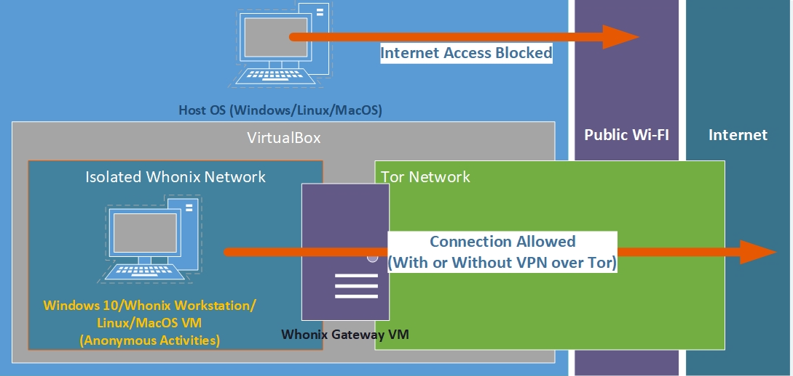
Настройка виртуальной машины Whonix Gatewayλ
Чтобы это работало, потребуется изменить некоторые настройки виртуальной машины Whonix Gateway. Нужно добавить в Whonix Gateway DHCP-клиент для получения IP-адресов из сети. Пока вы выполняете эти изменения, основной ОС всё ещё должен быть разрешён доступ в интернет.
Вот как это сделать:
-
Убедитесь, что основная ОС подключена к безопасной сети Wi-Fi.
-
Через VirtualBox запустите виртуальную машину Whonix Gateway
-
Запустите Terminal в виртуальной машине
-
Установите DHCP-клиент в Whonix Gateway следующей командой:
sudo apt install dhcpcd5
-
Теперь отредактируйте сетевую конфигурацию Whonix Gateway следующей командой:
sudo nano /etc/network/interfaces.d/30_non-qubes-whonix
-
В файле измените следующие строки:
-
# auto eth0наauto eth0 -
# iface eth0 inet dhcpнаiface eth0 inet dhcp -
iface eth0 inet staticна# iface eth0 inet static -
address 10.0.2.15на# address 10.0.2.15 -
netmask 255.255.255.0на# netmask 255.255.255.0 -
gateway 10.0.2.2на# gateway 10.0.2.2
-
-
Сохраните (Ctrl+X, затем подтвердите клавишей Y) и выключите виртуальную машину через меню в левом верхнем углу
-
Перейдите в приложение VirtualBox и выберите виртуальную машину Whonix Gateway
-
Нажмите Settings
-
Нажмите вкладку Network
-
Для Adapter 1 измените значение "Attached To" с "NAT" на "Bridged Adapter"
-
В поле "Name" выберите адаптер вашей сети Wi-Fi
-
Нажмите OK — настройка виртуальной машины завершена
Настройка основной ОСλ
Теперь необходимо заблокировать доступ в интернет из основной ОС, сохранив возможность подключения виртуальной машины. Для этого подключитесь к Wi-Fi из основной ОС, но не назначайте ей IP-адрес. Затем виртуальная машина использует ваше подключение к Wi-Fi для получения IP-адреса.
Основная ОС Windowsλ
Цель — подключиться к сети Wi-Fi без подключения к интернету. После подключения этого можно добиться, удалив шлюз из соединения:
-
Сначала подключитесь к выбранной безопасной сети Wi-Fi
-
Откройте командную строку от имени администратора (щёлкните правой кнопкой мыши Command Prompt и выберите Run as Administrator)
-
Выполните команду:
route delete 0.0.0.0(она удаляет шлюз из вашей IP-конфигурации) -
Готово: теперь основная ОС не сможет получить доступ к интернету, оставаясь подключённой к Wi-Fi
- Учтите, что при каждом отключении/повторном подключении к сети это сбрасывается, и маршрут придётся удалять снова. Это не постоянно.
-
Теперь можно запустить Whonix Gateway, который должен автоматически получить IP из сети Wi-Fi и предоставить сеть находящимся за ним виртуальным машинам (Whonix Workstation или другим).
-
Наконец, после этого можно запустить Whonix Workstation (или любую другую виртуальную машину, настроенную для работы за Whonix Gateway): она должна подключиться к интернету через Tor.
Основная ОС Linuxλ
Цель — подключиться к сети Wi-Fi без подключения к интернету. После подключения этого можно добиться, удалив шлюз из соединения:
-
Сначала подключитесь к выбранной безопасной сети Wi-Fi
-
Откройте Terminal
-
Выполните команду:
sudo ip route del default(она удаляет шлюз из вашей IP-конфигурации) -
Готово: теперь основная ОС не сможет получить доступ к интернету, оставаясь подключённой к Wi-Fi
- Учтите, что при каждом отключении/повторном подключении к сети это сбрасывается, и маршрут придётся удалять снова. Это не постоянно.
-
Теперь можно запустить Whonix Gateway, который должен автоматически получить IP из сети Wi-Fi и предоставить сеть находящимся за ним виртуальным машинам (Whonix Workstation или другим).
-
Наконец, после этого можно запустить Whonix Workstation (или любую другую виртуальную машину, настроенную для работы за Whonix Gateway): она должна подключиться к интернету через Tor.
Основная ОС macOSλ
Цель — подключиться к сети Wi-Fi без подключения к интернету. После подключения этого можно добиться, удалив шлюз из соединения:
-
Сначала подключитесь к выбранной безопасной сети Wi-Fi
-
Откройте Terminal
-
Выполните команду:
sudo route delete default(она удаляет шлюз из вашей IP-конфигурации) -
Готово: теперь основная ОС не сможет получить доступ к интернету, оставаясь подключённой к Wi-Fi
- Учтите, что при каждом отключении/повторном подключении к сети это сбрасывается, и маршрут придётся удалять снова. Это не постоянно.
-
Теперь можно запустить Whonix Gateway, который должен автоматически получить IP из сети Wi-Fi и предоставить сеть находящимся за ним виртуальным машинам (Whonix Workstation или другим).
-
Наконец, после этого можно запустить Whonix Workstation (или любую другую виртуальную машину, настроенную для работы за Whonix Gateway): она должна подключиться к интернету через Tor.
Лучший способ (рекомендуется)λ
Этот способ не противоречит рекомендациям Whonix (поскольку не открывает Whonix Gateway основной ОС) и имеет преимущество: позволяет подключаться не только к открытым сетям Wi-Fi, но и к сетям с captive-порталом, где для доступа в интернет требуется ввести сведения.
Однако этот способ всё равно не поддерживается проектом Whonix, но это приемлемо, поскольку основная проблема предыдущего ленивого способа заключается в доступности Whonix Gateway для сети основной ОС, а здесь этого не будет.
Для этого варианта нужна дополнительная виртуальная машина между основной ОС и Whonix Gateway, которая будет работать как сетевой мост.
Для этой цели я рекомендую лёгкий дистрибутив Linux. Подойдёт любой, но проще всего будет дистрибутив на базе Ubuntu; я рекомендую лёгкий XUbuntu, поскольку эту схему будет очень легко настроить.
Почему XUbuntu, а не Ubuntu или KUbuntu? Потому что XUbuntu использует лёгкое окружение рабочего стола XFCE, а эта виртуальная машина будет служить только прокси и ничем больше.
Разумеется, можно добиться того же с любым другим дистрибутивом Linux, если вам не нравится XUbuntu.
В конце это будет выглядеть так:
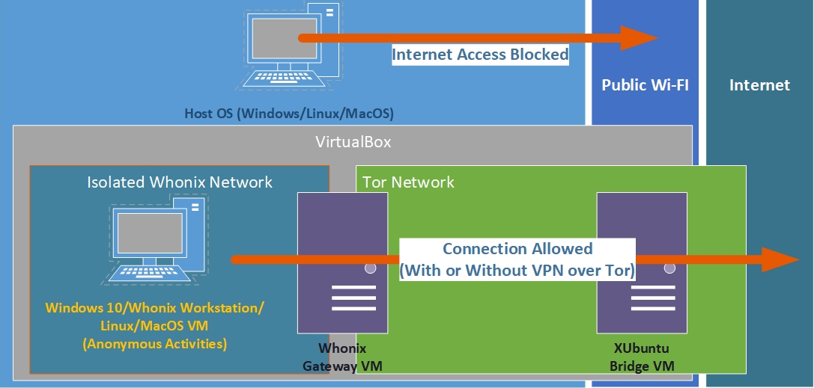
Установка виртуальной машины XUbuntuλ
XUbuntu выбран из-за производительности XFCE.
Убедитесь, что для этой операции вы подключены к безопасной сети Wi-Fi.
Сначала скачайте последний стабильный ISO-выпуск XUbuntu с https://xubuntu.org/download/
После завершения загрузки пора создать новую виртуальную машину:
-
Запустите VirtualBox Manager
-
Создайте виртуальную машину и назовите её как хотите, например "XUbuntu Bridge"
-
Выберите тип "Linux"
-
Выберите версию "Ubuntu (64-bit)"
-
Оставьте остальные параметры по умолчанию и нажмите Create
-
На следующем экране оставьте параметры по умолчанию и нажмите Create
-
Выберите созданную виртуальную машину и нажмите Settings
-
Выберите Network
-
Для Adapter 1 переключитесь в Bridged Mode и выберите адаптер Wi-Fi в поле Name
-
Выберите Adapter 2 и включите его
-
Подключите его к "Internal Network" и назовите "XUbuntu Bridge"
-
Выберите Storage
-
Выберите пустой привод CD
-
Справа нажмите значок CD и выберите "Choose a disk file"
-
Выберите ранее скачанный ISO XUbuntu и нажмите OK
-
Запустите виртуальную машину
-
Выберите Start XUbuntu
-
Выберите Install XUbuntu
-
Выберите раскладку клавиатуры и нажмите Continue
-
Выберите Minimal Installation и Download Updates while installing XUbuntu
-
Выберите Erase Disk and install XUbuntu и нажмите Install Now
-
Выберите часовой пояс и нажмите Continue
-
Выберите случайные имена, не связанные с вами (моё любимое имя пользователя — "NoSuchAccount")
-
Выберите пароль и включите требование пароля для входа
-
Нажмите Continue, дождитесь завершения установки и выполните Restart
-
После перезагрузки войдите в систему
-
Нажмите значок подключения в правом верхнем углу (он выглядит как две вращающиеся сферы)
-
Нажмите Edit Connections
-
Выберите Wired Connection 2 (Adapter 2, ранее настроенный в настройках VirtualBox)
-
Выберите вкладку IPv4
-
Измените Method на "Shared to other computers" и нажмите Save
-
Настройка виртуальной машины XUbuntu Bridge завершена
Настройка виртуальной машины Whonix Gatewayλ
По умолчанию в Whonix Gateway нет DHCP-клиента; он требуется для получения IP из общей сети, настроенной ранее:
-
Через VirtualBox запустите виртуальную машину Whonix Gateway
-
Запустите Terminal в виртуальной машине
-
Установите DHCP-клиент в Whonix Gateway следующей командой:
sudo apt install dhcpcd5
-
Теперь отредактируйте сетевую конфигурацию Whonix Gateway следующей командой:
sudo nano /etc/network/interfaces.d/30_non-qubes-whonix
-
В файле измените следующие строки:
-
# auto eth0наauto eth0 -
# iface eth0 inet dhcpнаiface eth0 inet dhcp -
iface eth0 inet staticна# iface eth0 inet static -
address 10.0.2.15на# address 10.0.2.15 -
netmask 255.255.255.0на# netmask 255.255.255.0 -
gateway 10.0.2.2на# gateway 10.0.2.2
-
-
Сохраните (Ctrl+X, затем подтвердите клавишей Y) и выключите виртуальную машину через меню в левом верхнем углу
-
Перейдите в приложение VirtualBox и выберите виртуальную машину Whonix Gateway
-
Нажмите Settings
-
Нажмите вкладку Network
-
Для Adapter 1 измените значение "Attached To" с "NAT" на "Internal Network"
-
В поле "Name" выберите созданную ранее внутреннюю сеть "XUbuntu Bridge" и нажмите OK
-
Перезагрузите виртуальную машину Whonix Gateway
-
В меню в левом верхнем углу выберите System, Tor Control Panel и убедитесь, что вы подключены (так и должно быть)
-
Настройка виртуальной машины Whonix Gateway завершена
Настройка основной ОСλ
Теперь необходимо заблокировать доступ в интернет из основной ОС, сохранив возможность подключения виртуальной машины XUbuntu Bridge. Для этого подключитесь к Wi-Fi из основной ОС, но не назначайте ей адрес шлюза. Затем виртуальная машина использует ваше подключение к Wi-Fi для получения IP-адреса.
При необходимости из виртуальной машины XUbuntu Bridge можно запустить браузер, чтобы ввести сведения в captive-портал/портал регистрации сети Wi-Fi.
Только виртуальная машина XUbuntu Bridge должна иметь доступ к интернету. Основная ОС будет ограничена только локальным трафиком.
Основная ОС Windowsλ
Цель — подключиться к сети Wi-Fi без подключения к интернету. После подключения этого можно добиться, удалив шлюз из соединения:
-
Сначала подключитесь к выбранной безопасной сети Wi-Fi
-
Откройте командную строку от имени администратора (щёлкните правой кнопкой мыши Command Prompt и выберите Run as Administrator)
-
Выполните команду:
route delete 0.0.0.0(она удаляет шлюз из вашей IP-конфигурации) -
Готово: теперь основная ОС не сможет получить доступ к интернету, оставаясь подключённой к Wi-Fi
- Учтите, что при каждом отключении/повторном подключении к сети это сбрасывается, и маршрут придётся удалять снова. Это не постоянно.
-
Теперь можно запустить XUbuntu Bridge, который должен автоматически получить IP из сети Wi-Fi и предоставить сеть находящимся за ним виртуальным машинам (Whonix Workstation или другим).
-
При необходимости с помощью браузера XUbuntu Bridge можно заполнить сведения в captive-портале/портале регистрации для доступа к Wi-Fi.
-
После этого можно запустить Whonix Gateway, который должен получить интернет-подключение от XUbuntu Bridge.
-
Наконец, после этого можно запустить Whonix Workstation (или любую другую виртуальную машину, настроенную для работы за Whonix Gateway): она должна подключиться к интернету через Tor.
Основная ОС Linuxλ
Цель — подключиться к сети Wi-Fi без подключения к интернету. После подключения этого можно добиться, удалив шлюз из соединения:
-
Сначала подключитесь к выбранной безопасной сети Wi-Fi
-
Откройте Terminal
-
Выполните команду:
sudo ip route del default(она удаляет шлюз из вашей IP-конфигурации) -
Готово: теперь основная ОС не сможет получить доступ к интернету, оставаясь подключённой к Wi-Fi
- Учтите, что при каждом отключении/повторном подключении к сети это сбрасывается, и маршрут придётся удалять снова. Это не постоянно.
-
Теперь можно запустить XUbuntu Bridge, который должен автоматически получить IP из сети Wi-Fi и предоставить сеть находящимся за ним виртуальным машинам (Whonix Workstation или другим).
-
При необходимости с помощью браузера XUbuntu Bridge можно заполнить сведения в captive-портале/портале регистрации для доступа к Wi-Fi.
-
После этого можно запустить Whonix Gateway, который должен получить интернет-подключение от XUbuntu Bridge.
-
Наконец, после этого можно запустить Whonix Workstation (или любую другую виртуальную машину, настроенную для работы за Whonix Gateway): она должна подключиться к интернету через Tor.
Основная ОС macOSλ
Цель — подключиться к сети Wi-Fi без подключения к интернету. После подключения этого можно добиться, удалив шлюз из соединения:
-
Сначала подключитесь к выбранной безопасной сети Wi-Fi
-
Откройте Terminal
-
Выполните команду:
sudo route delete default(она удаляет шлюз из вашей IP-конфигурации) -
Готово: теперь основная ОС не сможет получить доступ к интернету, оставаясь подключённой к Wi-Fi
- Учтите, что при каждом отключении/повторном подключении к сети это сбрасывается, и маршрут придётся удалять снова. Это не постоянно.
-
Теперь можно запустить XUbuntu Bridge, который должен автоматически получить IP из сети Wi-Fi и предоставить сеть находящимся за ним виртуальным машинам (Whonix Workstation или другим).
-
При необходимости с помощью браузера XUbuntu Bridge можно заполнить сведения в captive-портале/портале регистрации для доступа к Wi-Fi.
-
После этого можно запустить Whonix Gateway, который должен получить интернет-подключение от XUbuntu Bridge.
-
Наконец, после этого можно запустить Whonix Workstation (или любую другую виртуальную машину, настроенную для работы за Whonix Gateway): она должна подключиться к интернету через Tor.
Наилучший способλ
Этот способ не противоречит рекомендациям Whonix (поскольку не открывает Whonix Gateway основной ОС) и имеет преимущество: позволяет подключаться не только к открытым сетям Wi-Fi, но и к сетям с captive-порталом, где для доступа в интернет требуется ввести сведения. Однако этот способ всё равно не поддерживается проектом Whonix, но это приемлемо, поскольку основная проблема предыдущего ленивого способа заключается в доступности Whonix Gateway для сети основной ОС, а здесь этого не будет. Этот вариант наилучший, поскольку сеть в основной ОС будет полностью отключена уже при загрузке.
Для этого варианта нужна дополнительная виртуальная машина между основной ОС и Whonix Gateway, которая будет работать как сетевой мост и подключаться к сети Wi-Fi. Для этого варианта требуется рабочий USB-адаптер Wi-Fi, который будет передан виртуальной машине-мосту.
Для этой цели я рекомендую лёгкий дистрибутив Linux. Подойдёт любой, но проще всего будет дистрибутив на базе Ubuntu; я рекомендую лёгкий XUbuntu, поскольку эту схему будет очень легко настроить.
Почему XUbuntu, а не Ubuntu или KUbuntu? Потому что XUbuntu использует лёгкое окружение рабочего стола XFCE, а эта виртуальная машина будет служить только прокси и ничем больше.
Разумеется, можно добиться того же с любым другим дистрибутивом Linux, если вам не нравится XUbuntu.
В конце это будет выглядеть так:
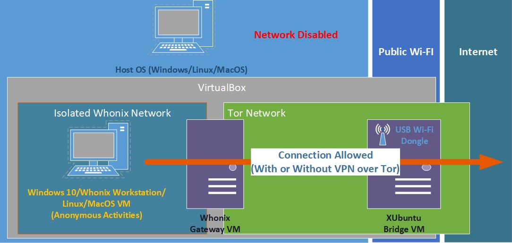
Настройка основной ОСλ
-
Полностью отключите сеть в основной ОС (полностью выключите встроенный Wi-Fi)
-
Подключите и установите USB-адаптер Wi-Fi. Подключите его к безопасной публичной сети Wi-Fi. Это должно быть просто: любая современная ОС (Windows 10/11, macOS, Linux) установит его автоматически.
Настройка виртуальной машины Whonix Gatewayλ
По умолчанию в Whonix Gateway нет DHCP-клиента; он требуется для получения IP из общей сети, которую вы позже настроите в виртуальной машине-мосту:
-
Через VirtualBox запустите виртуальную машину Whonix Gateway
-
Запустите Terminal в виртуальной машине
-
Установите DHCP-клиент в Whonix Gateway следующей командой:
sudo apt install dhcpcd5
-
Теперь отредактируйте сетевую конфигурацию Whonix Gateway следующей командой:
sudo nano /etc/network/interfaces.d/30_non-qubes-whonix
-
В файле измените следующие строки:
-
# auto eth0наauto eth0 -
# iface eth0 inet dhcpнаiface eth0 inet dhcp -
iface eth0 inet staticна# iface eth0 inet static -
address 10.0.2.15на# address 10.0.2.15 -
netmask 255.255.255.0на# netmask 255.255.255.0 -
gateway 10.0.2.2на# gateway 10.0.2.2
-
-
Сохраните (Ctrl+X, затем подтвердите клавишей Y) и выключите виртуальную машину через меню в левом верхнем углу
Установка виртуальной машины XUbuntuλ
Убедитесь, что для этой операции вы подключены к безопасной сети Wi-Fi.
Сначала скачайте последний стабильный ISO-выпуск XUbuntu с https://xubuntu.org/download/
После завершения загрузки пора создать новую виртуальную машину:
-
Отключите основную ОС от сети Wi-Fi, к которой ранее подключились через адаптер, и забудьте эту сеть.
-
Запустите VirtualBox Manager
-
Создайте виртуальную машину и назовите её как хотите, например "XUbuntu Bridge"
-
Выберите тип "Linux"
-
Выберите версию "Ubuntu (64-bit)"
-
Оставьте остальные параметры по умолчанию и нажмите Create
-
На следующем экране оставьте параметры по умолчанию и нажмите Create
-
Выберите созданную виртуальную машину и нажмите Settings
-
Выберите Network
-
Для Adapter 1 подключите его к "Internal Network" и назовите "XUbuntu Bridge"
-
Выберите Storage
-
Выберите пустой привод CD
-
Справа нажмите значок CD и выберите "Choose a disk file"
-
Выберите ранее скачанный ISO XUbuntu и нажмите OK
-
Выберите вкладку USB
-
Справа нажмите значок USB со знаком + (второй сверху)
-
Выберите из списка USB-адаптер Wi-Fi и убедитесь, что он отмечен (оставьте параметры USB по умолчанию)
-
Запустите виртуальную машину
-
Выберите Start XUbuntu
-
Выберите Install XUbuntu
-
Выберите раскладку клавиатуры и нажмите Continue
-
Выберите Minimal Installation и не отмечайте параметр Download Updates during the install
-
Выберите Erase Disk and install XUbuntu и нажмите Install Now
-
Выберите часовой пояс и нажмите Continue
-
Выберите случайные имена, не связанные с вами (моё любимое имя пользователя — "NoSuchAccount")
-
Выберите пароль и включите требование пароля для входа
-
Нажмите Continue, дождитесь завершения установки и выполните Restart
-
После перезагрузки войдите в систему
-
Нажмите значок подключения в правом верхнем углу (он выглядит как две вращающиеся сферы)
-
Нажмите Edit Connections
-
Выберите Wired Connection 1 (обычно он должен быть только один)
-
Выберите вкладку IPv4
-
Измените Method на "Shared to other computers" и нажмите Save
-
Снова нажмите значок подключения в правом верхнем углу
-
Подключитесь к выбранной безопасной сети Wi-Fi и при необходимости введите требуемые сведения в captive-портале.
-
Настройка виртуальной машины XUbuntu Bridge завершена
На этом этапе в основной ОС вообще не должно быть сети, а в виртуальной машине XUbuntu должно работать подключение Wi-Fi, которое будет предоставлено внутренней сети "XUbuntu Bridge".
Дополнительная настройка виртуальной машины Whonix Gatewayλ
Теперь пора настроить Whonix Gateway для получения доступа из общей сети виртуальной машины-моста, созданной на предыдущем шаге:
-
Перейдите в приложение VirtualBox и выберите виртуальную машину Whonix Gateway
-
Нажмите Settings
-
Нажмите вкладку Network
-
Для Adapter 1 измените значение "Attached To" с "NAT" на "Internal Network"
-
В поле "Name" выберите созданную ранее внутреннюю сеть "XUbuntu Bridge" и нажмите OK
-
Перезагрузите виртуальную машину Whonix Gateway
-
В меню в левом верхнем углу выберите System, Tor Control Panel и убедитесь, что вы подключены (так и должно быть)
-
Настройка виртуальной машины Whonix Gateway завершена
На этом этапе виртуальная машина Whonix Gateway должна получать доступ в интернет от XUbuntu Bridge, которая, в свою очередь, получает доступ от USB-адаптера Wi-Fi и предоставляет его. Основная ОС вообще не должна иметь сетевого подключения.
Все виртуальные машины за Whonix Gateway теперь должны работать без дополнительной настройки.
Создайте снимок виртуальных машин VirtualBox после установки.
Готово: теперь можно пропустить остальную часть и перейти к Выходу в интернет.
Путь Qubesλ
Обратите внимание: руководство обновлено для Qubes OS 4.1
Как указано на их сайте, Qubes OS — это достаточно безопасная, свободная, открытая и ориентированная на безопасность операционная система для настольных компьютеров с одним пользователем. Qubes OS задействует и широко использует основанную на Xen виртуализацию, позволяющую создавать изолированные среды, называемые Qubes, и управлять ими.
Qubes OS — не дистрибутив Linux359, а дистрибутив Xen. Она отличается от дистрибутивов Linux тем, что широко использует виртуализацию и разделение на изолированные среды: каждое приложение работает в отдельной ВМ (Qube). Вдобавок Qubes OS по умолчанию интегрирует Whonix и позволяет повысить конфиденциальность и анонимность. Прежде чем выбрать этот путь, настоятельно рекомендуем ознакомиться с принципами Qubes OS. Вот несколько рекомендуемых ресурсов:
-
Введение в Qubes OS, https://www.qubes-os.org/intro/ [Archive.org]
-
Видеообзоры Qubes OS, https://www.qubes-os.org/video-tours/ [Archive.org]
-
Начало работы с Qubes OS, https://www.qubes-os.org/doc/getting-started/ [Archive.org]
-
YouTube, Жизнь за шапочкой из фольги: взгляд на Qubes и Copperhead — Konstantin Ryabitsev, The Linux Foundation https://www.youtube.com/watch?v=8cU4hQg6GvU [Invidious]
-
YouTube, Мы пользовались достаточно безопасной Qubes OS 6 месяцев и выжили — Matty McFatty [@themattymcfatty] https://www.youtube.com/watch?v=sbN5Bz3v-uA [Invidious]
-
YouTube, Qubes OS: как она работает и демонстрация этой ОС, ориентированной на ВМ https://www.youtube.com/watch?v=YPAvoFsvSbg [Invidious]
Эту ОС рекомендуют такие заметные личности и организации, как Edward Snowden и PrivacyGuides.org.
Qubes — лучший вариант в этом руководстве для людей, которые уверенно чувствуют себя с Linux и технологиями в целом. Но у неё есть недостатки: отсутствие правдоподобного отрицания на уровне всей ОС, требования к оборудованию и его совместимость. Хотя согласно требованиям Qubes OS можно запустить с 4 ГБ ОЗУ [Archive.org], рекомендуемый объём составляет 16 ГБ. Мы не рекомендуем использовать Qubes OS, если у вас меньше 8 ГБ ОЗУ. Для комфортной работы нужно 16 ГБ, а для особенно приятной — 24 или 32 ГБ.
Такие требования к ОЗУ обусловлены тем, что каждое приложение работает в отдельной ВМ, и каждой ВМ требуется и выделяется определённый объём памяти, недоступный другим приложениям. Если вы запускаете нативные приложения Windows внутри Qubes Qubes OS, накладные расходы на ОЗУ будут значительными.
Прежде чем продолжать, следует также проверить совместимость оборудования здесь: https://www.qubes-os.org/hcl/ [Archive.org]. Результаты могут различаться, и вы можете столкнуться с проблемами совместимости оборудования, которые придётся самостоятельно диагностировать и решать.
Я считаю, что, если вы можете себе это позволить и готовы пользоваться Linux, вам стоит выбрать этот путь: вероятно, он лучший с точки зрения безопасности и конфиденциальности. Единственный недостаток этого пути в том, что он, в отличие от пути Whonix, не предоставляет способ включить правдоподобное отрицание https://en.wikipedia.org/wiki/Plausible_deniability [Wikiless] на уровне всей ОС.
Выберите способ подключенияλ
В рамках этого пути есть семь вариантов:
-
Рекомендуемые и предпочтительные:
-
Использовать только Tor (Пользователь > Tor > Интернет)
-
В отдельных случаях использовать VPN поверх Tor (Пользователь > Tor > VPN > Интернет)
-
В отдельных случаях использовать VPS с самостоятельно развёрнутым VPN/прокси поверх Tor (Пользователь > Tor > Самостоятельно развёрнутый VPN/прокси > Интернет)
-
-
Возможны, если того требует контекст:
-
Использовать VPN поверх Tor поверх VPN (Пользователь > VPN > Tor > VPN > Интернет)
-
Использовать Tor поверх VPN (Пользователь > VPN > Tor > Интернет)
-
-
Не рекомендуются и сопряжены с риском:
-
Использовать только VPN (Пользователь > VPN > Интернет)
-
Использовать VPN поверх VPN (Пользователь > VPN > VPN > Интернет)
-
-
Не рекомендуются и крайне рискованны (но возможны)
- Без VPN и Tor (Пользователь > Интернет)
Только Torλ
Это предпочтительное и наиболее рекомендуемое решение.
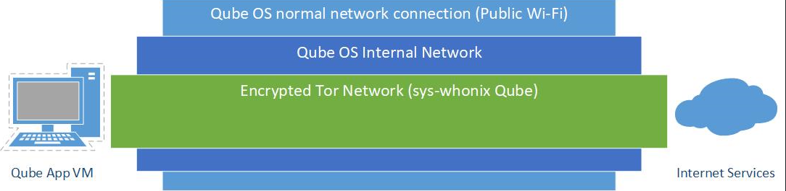
При таком решении весь ваш сетевой трафик проходит через Tor, чего в большинстве случаев должно быть достаточно для обеспечения анонимности.
Однако есть один существенный недостаток: некоторые сервисы полностью блокируют/запрещают узлы выхода Tor и не позволяют создавать с них учётные записи.
Чтобы смягчить эту проблему, возможно, придётся рассмотреть следующий вариант — VPN поверх Tor, но учтите связанные с ним риски, описанные в следующем разделе.
VPN/прокси поверх Torλ
Это решение может дать преимущества в отдельных случаях по сравнению с использованием только Tor, когда доступ к целевому сервису невозможен с узла выхода Tor. Причина в том, что многие сервисы полностью запрещают, ограничивают или блокируют узлы выхода Tor (см. https://gitlab.torproject.org/legacy/trac/-/wikis/org/doc/ListOfServicesBlockingTor [Archive.org]).
Это решение можно реализовать двумя способами:
-
Платный VPN поверх Tor (проще всего)
-
Платный самостоятельно развёрнутый VPS, настроенный как VPN/прокси (наиболее эффективно для обхода онлайн-препятствий, таких как CAPTCHA, но требует большего опыта работы с Linux)
Как видно на этой иллюстрации, если ваш оплаченный наличными (предпочтительно)/Monero VPN/прокси будет скомпрометирован противником (несмотря на его заявление о конфиденциальности и политику отсутствия журналов), противник обнаружит лишь анонимную учётную запись VPN, оплаченную наличными/Monero и подключающуюся к его сервисам с узла выхода Tor.
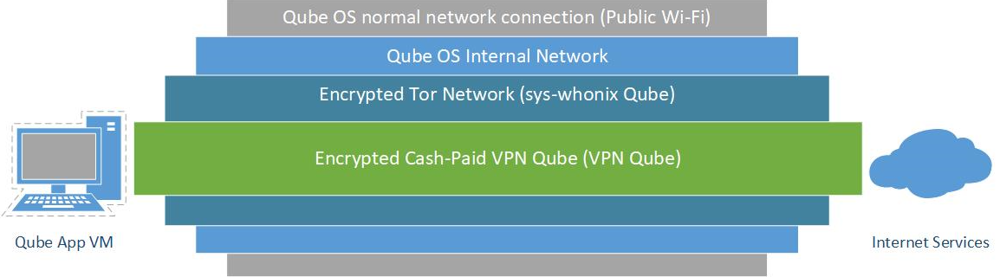
Если противнику каким-либо образом удастся также скомпрометировать сеть Tor, он раскроет лишь IP-адрес случайной публичной сети Wi‑Fi, не связанной с вашей личностью.
Если противник каким-либо образом скомпрометирует ОС вашей ВМ (например, вредоносной программой или эксплойтом), он окажется ограничен внутренней сетью Whonix и не должен суметь раскрыть IP-адрес публичной сети Wi‑Fi.
Однако у этого решения есть один главный недостаток, который следует учитывать: вмешательство в изоляцию потоков Tor361.
Изоляция потоков — метод защиты, применяемый для предотвращения некоторых атак корреляции: для каждого приложения используются разные цепочки Tor. Вот иллюстрация, поясняющая изоляцию потоков:
(Иллюстрация Marcelo Martins, https://stakey.club/en/decred-via-tor-network/ [Archive.org])
VPN/прокси поверх Tor находится справа362: использование VPN/прокси поверх Tor заставляет Tor применять одну цепочку для всей деятельности вместо нескольких цепочек для каждой. Это означает, что VPN/прокси поверх Tor в некоторых случаях может снизить эффективность Tor, и поэтому его следует использовать лишь в отдельных ситуациях:
-
Когда целевой сервис не разрешает подключение с узлов выхода Tor.
-
Когда вас не беспокоит использование общей цепочки Tor для различных сервисов. Например, для работы с различными сервисами, требующими аутентификации.
Однако не стоит использовать этот метод, если вы просто хотите просматривать разные случайные неаутентифицированные сайты: вы не получите преимуществ изоляции потоков, а противнику будет проще проводить атаки корреляции между вашими сеансами (см. Ваш анонимизированный трафик Tor/VPN).
Дополнительная информация:
-
https://tails.boum.org/contribute/design/stream_isolation/ [Archive.org]
-
https://www.whonix.org/wiki/Tunnels/Introduction#Comparison_Table [Archive.org]
Tor поверх VPNλ
Возможно, вы задаётесь вопросом: а что насчёт использования Tor поверх VPN вместо VPN поверх Tor?
-
Недостатки
-
Ваш поставщик VPN — это просто ещё один интернет-провайдер, который будет знать ваш исходный IP-адрес и при необходимости сможет деанонимизировать вас. Мы ему не доверяем. Предпочтительна ситуация, в которой поставщик VPN не знает, кто вы. Такой подход мало что добавляет с точки зрения анонимности.
-
В результате вы будете подключаться к различным сервисам с IP-адреса узла выхода Tor, который во многих местах запрещён или помечен как подозрительный. Это не повышает удобство.
-
-
Преимущества:
-
Главное преимущество состоит в том, что вы можете находиться во враждебной среде, где доступ к Tor невозможен/опасен/вызывает подозрения, но VPN допустим.
-
Этот метод также не нарушает изоляцию потоков Tor.
-
Обратите внимание: если у вас возникают проблемы с доступом к сети Tor из-за блокировки/цензуры, вы можете попробовать мосты Tor (см. документацию Tor https://2019.www.torproject.org/docs/bridges [Archive.org] и документацию Whonix https://www.whonix.org/wiki/Bridges [Archive.org]).
Можно также рассмотреть VPN поверх Tor поверх VPN (Пользователь > VPN > Tor > VPN > Интернет) с использованием двух VPN, оплаченных наличными/Monero. Это означает, что вы подключите ОС хоста к первому VPN из публичной сети Wi‑Fi, затем Whonix подключится к Tor, а в конце ваша ВМ подключится ко второму VPN поверх Tor поверх VPN (см. https://www.whonix.org/wiki/Tunnels/Connecting_to_a_VPN_before_Tor [Archive.org]).
Это, конечно, существенно повлияет на производительность и может быть довольно медленным, но для достижения приемлемой анонимности Tor необходим где-то в этой цепочке.
Технически реализовать это в рамках данного пути просто: вам нужны две отдельные анонимные учётные записи VPN; подключитесь к первому VPN из ОС хоста и следуйте этому маршруту.
Вывод: делайте так, только если считаете, что использовать только Tor рискованно/невозможно, а VPN допустимы. Или просто потому, что можете — почему бы и нет. Этот метод не снизит вашу безопасность/конфиденциальность/анонимность.
Только VPNλ
Этот путь не будет ни объяснён, ни рекомендован.
Если вы можете использовать VPN, то должны быть способны добавить поверх него слой Tor. А если вы можете использовать Tor, то можете добавить анонимный VPN поверх Tor и получить предпочтительное решение.
Использовать только VPN или даже VPN поверх VPN не имеет смысла, поскольку со временем вас можно отследить. Один из поставщиков VPN будет знать ваш настоящий исходный IP-адрес (даже если вы находитесь в безопасном общественном месте), и, даже если вы добавите ещё один VPN поверх него, второй всё равно будет знать, что вы использовали первый сервис VPN. Это лишь немного отсрочит вашу деанонимизацию. Да, это дополнительный слой… но это постоянный централизованный слой, и со временем вас можно деанонимизировать. По сути, это цепочка из 3 интернет-провайдеров, на которых распространяются законные запросы.
Дополнительную информацию см. в следующих источниках:
-
https://www.whonix.org/wiki/Comparison_Of_Tor_with_CGI_Proxies,_Proxy_Chains,_and_VPN_Services#Tor_and_VPN_Services_Comparison [Archive.org]
-
https://www.whonix.org/wiki/Why_does_Whonix_use_Tor [Archive.org]
-
https://www.researchgate.net/publication/324251041_Anonymity_communication_VPN_and_Tor_a_comparative_study [Archive.org]
-
https://gist.github.com/joepie91/5a9909939e6ce7d09e29#file-vpn-md [Archive.org]
-
https://schub.wtf/blog/2019/04/08/very-precarious-narrative.html [Archive.org]
В контексте этого руководства Tor необходим где-то в цепочке для достижения приемлемой и безопасной анонимности, и вы должны использовать его, если можете.
Без VPN/Torλ
Если в вашем местонахождении нельзя использовать ни VPN, ни Tor, вы, вероятно, находитесь в крайне враждебной среде с чрезвычайно высоким уровнем наблюдения и контроля.
Просто не делайте этого: оно того не стоит и слишком рискованно. Любой мотивированный противник, способный добраться до вашего физического местонахождения за считаные минуты, может деанонимизировать вас почти мгновенно.
Не забудьте вновь обратиться к разделам Противники (угрозы) и Проверьте сеть на наблюдение/цензуру с помощью OONI.
Если у вас абсолютно нет другого выбора и вы всё же хотите что-то предпринять, см. Что делать, когда Tor и VPN невозможны? (на свой страх и риск)
| Тип подключения | Анонимность | Простота доступа к онлайн-ресурсам | Изоляция потоков Tor | Безопаснее там, где Tor подозрителен/опасен | Скорость | Стоимость | Рекомендуется |
|---|---|---|---|---|---|---|---|
| Только Tor | Хорошая | Средняя | Возможна | Нет | Средняя | Бесплатно | Да |
| Tor поверх VPN | Хорошая+ | Средняя | Возможна | Да | Средняя | Около 50 €/год | При необходимости (Tor недоступен) |
| Tor поверх VPN поверх Tor | Лучшая | Средняя | Возможна | Да | Низкая | Около 50 €/год | Да |
| VPN поверх Tor | Хорошая- | Хорошая | Нет | Нет | Средняя | Около 50 €/год | При необходимости (удобство) |
| Самостоятельно развёрнутый VPS VPN/прокси поверх Tor | Хорошая- | Очень хорошая | Нет | Нет | Средняя | Около 50 €/год | При необходимости (удобство) |
| VPN/прокси поверх Tor поверх VPN | Хорошая- | Хорошая | Нет | Да | Низкая | Около 100 €/год | При необходимости (удобство и Tor недоступен) |
| Только VPN/прокси | Плохая | Хорошая | Н/Д | Да | Хорошая | Около 50 €/год | Нет |
| Без Tor и VPN | Плохая | Неизвестно | Н/Д | Нет | Хорошая | Около 100 € (антенна) | Нет. На свой страх и риск. |
К сожалению, использование только Tor вызовет подозрения у многих целевых платформ. При использовании только Tor вы столкнётесь со множеством препятствий (CAPTCHA, ошибки, сложности при регистрации). Кроме того, использование Tor там, где вы находитесь, само по себе может создать для вас проблемы. Но Tor остаётся лучшим решением для анонимности и должен присутствовать где-то в цепочке для её обеспечения.
-
Если вы намерены создавать постоянные общие и аутентифицированные личности в различных сервисах, доступ к которым из Tor затруднён, мы рекомендуем варианты VPN поверх Tor и VPS VPN/прокси поверх Tor (или VPN поверх Tor поверх VPN, если это необходимо). Из-за нарушения изоляции потоков Tor они могут быть немного менее безопасными против атак корреляции, но обеспечивают гораздо больше удобства при доступе к онлайн-ресурсам, чем использование только Tor. IMHP это «приемлемый» компромисс, если вы достаточно осторожны со своей личностью.
- Примечание: всё чаще основные сервисы и CDN также блокируют или затрудняют работу пользователей VPN с помощью CAPTCHA и других препятствий. В таком случае самостоятельно развёрнутый VPS с VPN/прокси поверх Tor — лучшее решение, поскольку выделенный VPS гарантирует, что вы будете единственным пользователем своего IP-адреса и столкнётесь с минимальным количеством препятствий либо вовсе без них. Рассмотрите Самостоятельно развёрнутый VPN/прокси на VPS, оплаченном Monero/наличными (для пользователей, лучше знакомых с Linux), если хотите свести проблемы к минимуму (это будет подробнее объяснено в следующем разделе).
-
Если же ваша цель — просто анонимно просматривать случайные сервисы, не создавая конкретных общих личностей и используя сервисы, дружественные к Tor; или если вы не хотите принимать компромисс, описанный в предыдущем варианте, то мы рекомендуем путь только Tor, чтобы сохранить все преимущества изоляции потоков (либо Tor поверх VPN, если это необходимо).
-
Если стоимость имеет значение, рекомендуем по возможности вариант только Tor.
-
Если и доступ к Tor, и доступ к VPN невозможны или опасны, вам не остаётся ничего, кроме безопасного использования публичного Wi‑Fi. См. Что делать, когда Tor и VPN невозможны?
Дополнительную информацию также можно найти в обсуждениях ниже, которые помогут принять самостоятельное решение:
-
Проект Tor: https://gitlab.torproject.org/legacy/trac/-/wikis/doc/TorPlusVPN [Archive.org]
-
Документация Tails:
-
Документация Whonix (в таком порядке):
-
Несколько статей по этой теме:
Получение анонимного VPN/проксиλ
Пропустите этот шаг, если хотите использовать только Tor или VPN не является вариантом.
См. Получение анонимного VPN/прокси
Примечание о правдоподобном отрицанииλ
Qubes OS использует LUKS для полного шифрования диска, и технически возможно добиться некоторой формы отрицания с помощью отделённых заголовков LUKS. Это пока не интегрировано в данное руководство, но здесь вы найдёте развивающееся руководство о том, как этого добиться: https://forum.qubes-os.org/t/qubes-os-installation-detached-encrypted-boot-and-header/6205, а дополнительную справочную информацию — в разделе об ОС хоста Linux (см. [Примечание о правдоподобном отрицании в Linux]).
Установкаλ
Следуйте инструкциям из их собственного руководства https://www.qubes-os.org/doc/installation-guide/ [Archive.org]:
(Secure Boot не поддерживается согласно их FAQ: https://www.qubes-os.org/faq/#is-secure-boot-supported [Archive.org], поэтому его следует отключить в настройках BIOS/UEFI.)
-
Скачайте последний установочный ISO-образ Qubes OS 4.1.x в соответствии со списком совместимости оборудования.
-
Получите и проверьте главный ключ подписи Qubes OS: https://keys.qubes-os.org/keys/qubes-master-signing-key.asc
-
Подготовьте USB-накопитель с файлом ISO Qubes OS.
-
Установите Qubes OS согласно руководству по установке:
-
Если вы хотите использовать Tor или VPN поверх Tor: на последнем шаге отметьте "Включение обновлений системы и шаблонов через сеть анонимности Tor с использованием Whonix" . Это заставит все обновления Qubes OS проходить через Tor. Хотя это значительно снизит скорость обновлений, анонимность будет выше с самого начала. (Если у вас возникли проблемы с подключением к Tor из-за цензуры или блокировки, рассмотрите использование мостов Tor, как рекомендовано ранее. Просто следуйте руководству здесь: https://www.whonix.org/wiki/Bridges [Archive.org])
-
Если вы хотите использовать Tor поверх VPN или не можете использовать ничего из этого, оставьте флажок снятым.
-
Обязательно проверьте подпись ISO-образа; она находится на этой странице: https://www.qubes-os.org/security/verifying-signatures/ [Archive.org]. Как рекомендовано, проверьте её, получив отпечаток из нескольких независимых источников несколькими разными способами. Это необходимо, чтобы убедиться, что образ не был подменён. Не пропускайте этот жизненно важный шаг, даже если вы знаете, что получаете ISO из надёжного источника: сайт Qubes может быть скомпрометирован.
-
-
Если вам не дают использовать Tor, нет смысла устанавливать шаблоны ВМ Whonix. Установку Whonix можно отключить в мастере первоначальной настройки после установки.
Чтобы убедиться, что ваш ISO Qubes не был подменён, получите отпечаток главного ключа Qubes из нескольких разных источников. Это руководство может служить одним из таких источников.
Отпечаток главного ключа подписи Qubes должен совпадать с 427F 11FD 0FAA 4B08 0123 F01C DDFA 1A3E 3687 9494.
Не забудьте прочитать руководство по проверке подписей на сайте Qubes: https://www.qubes-os.org/security/verifying-signatures/ [Archive.org].
Поведение при закрытии крышкиλ
К сожалению, Qubes OS не поддерживает гибернацию363, что создаёт проблему в отношении атак cold boot. Чтобы смягчить её, настоятельно рекомендую настроить Qubes OS на выключение при любом действии с питанием (кнопка питания, закрытие крышки). Это можно настроить в XFCE Power Manager. Не используйте функции сна.
Anti Evil Maid (AEM)λ
Предупреждение: этот шаг работает только с процессорами Intel, устаревшим BIOS и TPM 1.2. Если вы не соответствуете этим требованиям, пропустите этот шаг.
Anti Evil Maid — реализация статической доверенной загрузки на основе TPM, главная цель которой — предотвратить атаки Evil Maid. Установка и использование AEM требует подключить USB-накопитель непосредственно к dom0. Поэтому пользователь должен выбрать между защитой dom0 от потенциально вредоносного USB-накопителя и защитой системы от атак Evil Maid. Обратите внимание, что AEM совместим только с процессорами Intel и вариантами устаревшей загрузки.
Предпочтительный способ смягчения любой атаки evil maid — постоянно сохранять физический контроль над устройством. Если это невозможно, данный подход может быть актуален для вашей модели угроз.
Прежде чем решить использовать эту систему, прочтите Важные примечания об evil-maid и подмене
Подробнее и инструкции по установке см. по следующим ссылкам:
Подключение к публичной сети Wi-Fiλ
Помните: это следует делать из безопасного места (см. Найдите безопасные места с хорошим публичным Wi-Fi и Использование антенны дальнего действия для подключения к публичным сетям Wi-Fi с безопасного расстояния:
-
В правом верхнем углу щёлкните левой кнопкой мыши значок сети и запишите SSID сети Wi-Fi, к которой хотите подключиться.
-
Теперь щёлкните правой кнопкой значок сети и выберите Edit Connections.
-
Добавьте подключение с помощью знака +.
-
Выберите Wi-Fi.
-
Введите записанный ранее SSID нужной сети (если необходимо).
-
Выберите Cloned Mac Address.
-
Выберите Random, чтобы рандомизировать ваш MAC-адрес.
- Предупреждение: в большинстве случаев эта настройка должна работать, но на некоторых сетевых адаптерах она может быть ненадёжной. Если хотите убедиться, обратитесь к этой документации: https://github.com/Qubes-Community/Contents/blob/master/docs/privacy/anonymizing-your-mac-address.md [Archive.org]
-
Сохраните.
-
Теперь снова щёлкните левой кнопкой учётную запись подключения и подключитесь к нужной сети Wi-Fi.
-
Если это открытая сеть Wi-Fi, требующая регистрации, вам нужно будет запустить браузер, чтобы зарегистрироваться.
-
После подключения запустите Disposable Fedora Firefox Browser.
-
Откройте меню в левом верхнем углу.
-
Выберите Disposable, Fedora, Firefox.
-
Откройте Firefox и зарегистрируйтесь в сети Wi-Fi (анонимно).
-
Обновление Qubes OS с 4.0.x до 4.1.x (вам следует это сделать)λ
Лично мы не стали бы выполнять обновление на месте, а сделали бы чистую установку.
Но если вы действительно хотите, это технически возможно, если следовать этому руководству: https://www.qubes-os.org/doc/upgrade/4.1/ [Archive.org]
Обновление Qubes OSλ
После подключения к Wi-Fi необходимо обновить Qubes OS и Whonix. Перед выполнением любых чувствительных действий Qubes OS, особенно ВМ браузеров, должна быть всегда обновлена. Обычно Qubes OS предупреждает об обновлениях в правом верхнем углу значком шестерёнки. Поскольку в данном случае процесс может занять некоторое время из-за использования Tor, его можно принудительно запустить следующим образом:
-
Нажмите значок Applications в левом верхнем углу.
-
Выберите Qubes Tools.
-
Выберите Qubes Update.
-
Отметьте "Enable updates for Qubes without known available updates".
-
Выберите все Qubes.
-
Нажмите Next и дождитесь завершения обновлений.
-
Если при установке вы выбрали Tor, проявите терпение: через Tor это может занять некоторое время.
Обновление до Whonix 18λ
Обзор улучшений Whonix 18.x:
- Автоматизированный процесс обновления релиза (ручное вмешательство не требуется)
- Улучшенная интеграция AppArmor для более эффективной песочницы приложений
- Улучшенная настройка сети и подключение к Tor
- Обновлённая документация во всех разделах
- Лучшая совместимость с Qubes OS (теперь официально поддерживается на R4.3+)
Чтобы обновить Whonix 17 до Whonix 18:
-
Создайте резервную копию всех данных — перед обновлением клонируйте ВМ с помощью снимков Virtualbox или предпочтительным способом.
-
Сначала обновите хост Qubes:
- Убедитесь, что используется как минимум Qubes R4.2 (для совместимости с Whonix 17).
- По возможности обновитесь до Qubes R4.3+ (рекомендуется для поддержки Whonix 18).
-
Выполните стандартные обновления шаблонов согласно инструкциям для ОС:
-
Запустите автоматизированное обновление:
- Оно автоматически выполнит обновление, не требуя действий пользователя.
-
Перезагрузите ВМ и запустите
systemcheckдля проверки целостности системы после обновления: -
Для Qubes после обновления обновите источники репозитория APT (опционально, можно позднее).
Важные примечания:
- Qubes R4.2+ с Whonix 18 теперь официально поддерживается. Подробные инструкции см. здесь: https://www.whonix.org/wiki/Release_Upgrade_17_to_18 [Archive.org].
- Всегда проверяйте целостность системы после обновления с помощью
systemcheckи средств проверки Tor. - Если вы не используете Qubes OS, следуйте общему руководству по обновлению Whonix [Archive.org].
Усиление защиты Qubes OSλ
Отказ от ответственности: этот раздел находится в разработке и будет существенно дорабатываться в следующих выпусках. Он предназначен для более опытных пользователей.
Песочница приложенийλ
Хотя Qubes OS по своей архитектуре уже помещает всё в песочницу, также полезно рассмотреть изоляцию самих приложений с помощью AppArmor или SELinux.
AppArmorλ
"AppArmor — это платформа обязательного управления доступом. Когда AppArmor включён, он ограничивает программы набором правил, определяющих, к каким файлам имеет доступ конкретная программа. Этот инициативный подход помогает защитить систему как от известных, так и от неизвестных уязвимостей" (Debian.org).
По сути, AppArmor364 — это система изоляции приложений. По умолчанию она не включена, но поддерживается Qubes OS.
-
О ВМ Fedora:
- Fedora использует не AppArmor, а SELinux, поэтому см. следующий раздел.
-
О ВМ Debian:
- Перейдите и прочитайте https://wiki.debian.org/AppArmor [Archive.org]
-
О любой другой ВМ Linux:
-
Перейдите и прочитайте:
-
-
О ВМ Whonix: следует рассмотреть включение и использование AppArmor, особенно на ВМ Whonix в Qubes OS:
-
Сначала перейдите и прочитайте https://www.whonix.org/wiki/AppArmor [Archive.org]
-
Затем снова перейдите и прочитайте https://www.whonix.org/wiki/Qubes/AppArmor [Archive.org]
-
SELinuxλ
SELinux365 похож на AppArmor. Различия между SELinux и AppArmor заключаются в технических деталях, которые мы не будем здесь рассматривать.
Вот хорошее объяснение того, что это такое: https://www.youtube.com/watch?v=_WOKRaM-HI4 [Invidious]
В этом руководстве и в контексте Qubes OS важно упомянуть SELinux, поскольку это рекомендуемый Fedora метод, а Fedora — одна из систем Qubes OS по умолчанию.
Поэтому перейдите и прочитайте https://docs.fedoraproject.org/en-US/quick-docs/getting-started-with-selinux/ [Archive.org]
Вы можете использовать SELinux в своих шаблонах Fedora. Но это решать вам. Повторим: это предназначено для опытных пользователей.
Настройка VPN ProxyVMλ
Пропустите этот шаг, если вы не хотите использовать VPN и будете использовать только Tor либо если VPN также недоступен.
Это руководство также должно работать с любым провайдером OpenVPN (например, Mullvad, IVPN, Safing.io или Proton VPN).
Оно основано на руководстве, предоставленном самими разработчиками Qubes OS (https://github.com/Qubes-Community/Contents/blob/master/docs/configuration/vpn.md [Archive.org]). Если вы знакомы с этим процессом, можете следовать их руководству.
Кроме того, у Mullvad есть справочная статья, в которой описывается настройка Proxy VM: https://mullvad.net/en/help/qubes-os-4-and-mullvad-vpn/ [Archive.org].
Создание ProxyVMλ
-
Щёлкните значок Applications (в левом верхнем углу)
-
Щёлкните Create Qubes VM
-
Задайте любое имя и метку: рекомендуем "VPNGatewayVM"
-
Выберите Type: Standalone Qube copied from a template
-
Выберите Template: Debian-11 (по умолчанию)
-
Выберите Networking:
-
Выберите sys-whonix, если хотите использовать VPN поверх Tor / только Tor (рекомендуется)
-
Выберите sys-firewall, если хотите использовать Tor поверх VPN / без Tor или VPN / только VPN
-
-
Advanced: отметьте provides network
-
Отметьте "Start Qube automatically on boot"
-
Создайте ВМ
-
Если вы выбираете VPN поверх Tor, перейдите в настройки созданной ProxyVM и выберите "sys-vpn" для сетевого подключения.
- Более простой способ настроить ProxyVM — просто запустить VPN-клиент в ProxyVM.
- Обычно при подключении к сайту вашего VPN-провайдера он сообщает, правильно ли направляется ваш трафик через VPN.
-
Если вы выбираете Tor поверх VPN, следует сделать наоборот: для сетевого подключения ProxyVM нужно указать "sys-tor", а для ВМ "sys-tor" — "sys-vpn".
- Проверьте подключение ВМ к интернету, запустив браузер внутри ProxyVM. Откройте https://check.torproject.org [Archive.org] (там должно быть указано, что вы подключены к Tor)
-
Загрузка конфигурации VPN у VPN-провайдера, принимающего наличные/Moneroλ
Если вы можете использовать Torλ
Используя Tor Browser (будьте внимательны: не используйте для этого браузер Clearnet), скачайте у своего VPN-провайдера необходимые файлы конфигурации OpenVPN для Linux.
Это можно сделать с помощью встроенного Tor Browser Qubes OS: откройте значок Applications (в левом верхнем углу) и выберите приложение Disposable Tor Browser.
Если вы не можете использовать Torλ
Запустите браузер из DisposableVM и скачайте у своего VPN-провайдера необходимые файлы конфигурации OpenVPN для Linux. См. Что делать, когда Tor и VPN недоступны?
Завершив загрузку конфигурационных файлов в Disposable Browser (обычно это ZIP-файл), скопируйте их на VPN Gateway в ProxyVM (щелкните файл правой кнопкой мыши и отправьте в другую AppVM).
Настройка ProxyVMλ
Пропустите этот шаг, если вы не будете использовать VPN
-
Щёлкните в левом верхнем углу
-
Выберите только что созданную VPN VM
-
Откройте Files VPN VM
-
Перейдите в "Qubesincoming" > dispXXXX (это была ваша Disposable Browser VM)
-
Дважды щёлкните скачанный ZIP-файл с файлами конфигурации OpenVPN, чтобы распаковать его
-
Теперь снова выберите VPN VM и запустите терминал
-
Установите OpenVPN следующей командой
sudo apt-get install openvpn -
Скопируйте все файлы конфигурации OpenVPN, предоставленные вашим VPN-провайдером, в /etc/openvpn/
-
Для всех файлов конфигурации OpenVPN (для каждого местоположения):
-
Отредактируйте каждый файл с помощью
sudo nano configfile(не забудьте sudo, чтобы редактировать файл в /etc) -
Измените протокол с "udp" на "tcp" (Tor не поддерживает UDP)
-
Измените порт на поддерживаемый вашим VPN-провайдером TCP-порт (например, 80 или 443)
-
Сохраните и закройте каждый файл
-
-
Отредактируйте файл конфигурации OpenVPN (/etc/default/openvpn), введя
sudo nano /etc/default/openvpn-
Измените
#AUTOSTART="all"наAUTOSTART="all"(то есть удалите "#") -
Сохраните и закройте файл
-
-
Отредактируйте файл правил межсетевого экрана Qubes (/rw/config/qubes-firewall-user-script), введя "sudo nano /rw/config/qubes-firewall-user-script"
-
Добавьте следующие строки (без кавычек и примечаний в скобках)
virtualif=10.137.0.17
-
(Это IP-адрес ProxyVM; он не является динамическим, и после перезагрузки его может потребоваться изменить)
vpndns1=10.8.0.1
(Это первый DNS-сервер вашего VPN-провайдера; он не должен измениться)
vpndns2=10.14.0.1
(Это второй DNS-сервер вашего VPN-провайдера; он не должен измениться)
-
iptables -F OUTPUT -
iptables -I FORWARD -o eth0 -j DROP -
iptables -I FORWARD -i eth0 -j DROP -
ip6tables -I FORWARD -o eth0 -j DROP -
ip6tables -I FORWARD -i eth0 -j DROP
(Эти правила блокируют исходящий трафик, когда VPN отключён; это аварийный выключатель. Подробнее: https://linuxconfig.org/how-to-create-a-vpn-killswitch-using-iptables-on-linux [Archive.org] )
-
iptables -A OUTPUT -d 10.8.0.1 -j ACCEPT -
iptables -A OUTPUT -d 10.14.0.1 -j ACCEPT
(Эти правила разрешают DNS-запросы к DNS-серверам вашего VPN-провайдера для разрешения имён VPN-серверов в файлах конфигурации OpenVPN)
-
iptables -F PR-QBS -t nat -
iptables -A PR-QBS -t nat -d $virtualif -p udp --dport 53 -j DNAT --to $vpndns1 -
iptables -A PR-QBS -t nat -d $virtualif -p tcp --dport 53 -j DNAT --to $vpndns1 -
iptables -A PR-QBS -t nat -d $virtualif -p udp --dport 53 -j DNAT --to $vpndns2 -
iptables -A PR-QBS -t nat -d $virtualif -p tcp --dport 53 -j DNAT --to $vpndns2
(Эти правила перенаправляют все DNS-запросы от ProxyVM на DNS-серверы VPN-провайдера)
-
Перезапустите ProxyVM, введя "sudo reboot"
-
Проверьте VPN-подключение ProxyVM: запустите в ней браузер и перейдите на страницу проверки вашего VPN-провайдера. Теперь там должно быть указано, что вы подключены к VPN:
-
IVPN: https://www.ivpn.net/ [Archive.org] (проверьте верхний баннер)
-
Proton VPN: следуйте инструкциям здесь: https://protonvpn.com/support/vpn-ip-change/ [Archive.org]
VPN поверх Torλ
Настройка disposable Browser Qube для использования VPN поверх Torλ
-
В меню Applications (в левом верхнем углу) выберите Disposable Fedora VM
-
Перейдите в Qube Settings
-
Щёлкните Clone Qube и задайте, например, имя "sys-VPNoverTor"
-
Снова в меню Application выберите только что созданный клон
-
Перейдите в Qube Settings
-
Измените Networking на созданный ранее ProxyVPN
-
Щёлкните OK
-
Запустите браузер в Whonix Workstation
-
Убедитесь, что VPN-подключение работает
Теперь у вас должна быть Disposable Browser VM, работающая с VPN, оплаченным наличными/Monero, поверх Tor.
Tor поверх VPNλ
Перенастройте Whonix Gateway VM, чтобы она использовала ProxyVM в качестве NetVM вместо sys-firewall:
-
В меню Applications (в левом верхнем углу) выберите ВМ sys-whonix.
-
Перейдите в Qube Settings
-
Измените Networking NetVM на созданный ранее ProxyVPN вместо sys-firewall
-
Щёлкните OK
-
Создайте Whonix Workstation Disposable VM (следуйте этому руководству: https://www.whonix.org/wiki/Qubes/DisposableVM [Archive.org])
-
Запустите браузер из ВМ и убедитесь, что VPN-подключение работает.
Кроме того, можно создать disposable VM другого типа (но она будет менее безопасной, чем Whonix):
-
В меню Applications (в левом верхнем углу) выберите Disposable Fedora VM
-
Перейдите в Qube Settings
-
Щёлкните Clone Qube и задайте, например, имя "sys-TorOverVPN"
-
Снова в меню Application выберите только что созданный клон
-
Перейдите в Qube Settings
-
Измените Networking на созданный ранее sys-whonix
-
Щёлкните OK
-
Запустите браузер в ВМ
-
Убедитесь, что VPN-подключение работает
Теперь у вас должна быть Disposable Browser VM, работающая с Tor поверх VPN, оплаченным наличными/Monero.
Любая другая комбинация?λ
Например, VPN поверх Tor поверх VPN
К этому моменту вы уже должны понимать, насколько легко с Qubes направлять трафик от одной ВМ к другой.
Вы можете создать несколько ProxyVM для VPN-подключений и оставить Whonix для Tor. Чтобы изменить схему, достаточно изменить настройки NetVM различных ВМ.
Возможна следующая схема:
-
Одна VPN ProxyVM для базового подключения Qubes OS
-
Использование ВМ sys-whonix (Whonix Gateway), получающей сеть от первой ProxyVM
-
Вторая VPN ProxyVM, получающая сеть от sys-whonix
-
Disposable VM, получающие NetVM от второй ProxyVM
В результате получится Пользователь > VPN > Tor > VPN > Интернет (VPN поверх Tor поверх VPN). Поэкспериментируйте самостоятельно. Qubes OS отлично подходит для таких задач.
Настройка безопасного браузера в Qubes OSλ
См.: Какой браузер использовать в Guest VM/Disposable VM
Fedora Disposable VMλ
В меню Applications (слева вверху) выберите шаблон Fedora-36:
-
Перейдите в Qube Settings
-
Клонируйте ВМ и назовите её "fedora-36-brave" (в этом шаблоне ВМ будет Brave)
-
Снова перейдите в меню Applications и выберите только что созданный клон
-
Перейдите в Qube Settings
-
Измените её сеть на ProxyVPN и нажмите Apply
-
Запустите терминал из ВМ
Если вы хотите использовать Brave: следуйте инструкциям из их документации [Archive.org] и выполните следующие команды:
sudo dnf install dnf-plugins-core
sudo dnf config-manager --add-repo https://brave-browser-rpm-release.s3.brave.com/x86_64/
sudo rpm --import https://brave-browser-rpm-release.s3.brave.com/brave-core.asc
sudo dnf install brave-browser
Вам также следует рассмотреть усиление защиты браузера; см. Усиление защиты браузеров
Whonix Disposable VMλ
Отредактируйте шаблон Whonix Disposable VM и следуйте инструкциям здесь: https://www.whonix.org/wiki/Install_Software [Archive.org]
Дополнительные меры предосторожности для браузераλ
Настройка Android VMλ
Иногда вам также нужно анонимно запускать мобильные приложения. Для этого можно настроить Android VM. Как и в других случаях, в идеале эта ВМ также должна находиться за Whonix Gateway для подключения к сети Tor. Но можно также настроить VPN поверх Tor поверх VPN.
Поскольку Android-x86 не работает с Qubes OS «хорошо» (по моему опыту), мы рекомендуем вместо него AnBox (https://anbox.io/ [Archive.org]), который работает с Qubes OS «достаточно хорошо». Дополнительную информацию также можно найти по адресу https://www.whonix.org/wiki/Anbox [Archive.org]
Если вы можете использовать Torλ
Позже, при создании в настройках Qubes:
-
Выберите Networking
-
Измените на sys-whonix, чтобы поместить её за Whonix Gateway (поверх Tor).
Если вы не можете использовать Torλ
Просто используйте руководства без изменений. См. Что делать, когда Tor и VPN недоступны?.
Установка
По сути, следуйте приведённому здесь руководству:
-
Щёлкните значок Applications (в левом верхнем углу)
-
Щёлкните Create Qubes VM
-
Задайте любое имя и метку: рекомендуем "Android"
-
Выберите Type: Standalone Qube copied from a template
-
Выберите Template: Debian-11
-
Выберите Networking:
-
Выберите sys-whonix, если хотите использовать VPN поверх Tor / только Tor (рекомендуется)
-
Выберите sys-firewall, если хотите использовать Tor поверх VPN / без Tor или VPN / только VPN
-
-
Запустите Qube и откройте терминал
Теперь вам нужно будет выполнить инструкции отсюда: https://github.com/anbox/anbox-modules [Archive.org]:
-
Начните с клонирования репозитория AnBox Modules, выполнив:
-
git clone https://github.com/anbox/anbox-modules.git -
Перейдите в клонированный каталог
-
Выполните
./INSTALL.sh(или следуйте инструкциям для ручной установки в руководстве)
-
-
Перезагрузите машину
-
Откройте новый терминал
-
Установите Snap, выполнив:
sudo apt install snapd
Теперь следуйте другому руководству, приведённому здесь: https://github.com/anbox/anbox/blob/master/docs/install.md [Archive.org]:
-
Установите AnBox, выполнив:
snap install --devmode --beta anbox
-
Чтобы позднее обновить AnBox, выполните:
snap refresh --beta --devmode anbox
-
Перезагрузите машину
-
Снова откройте терминал и запустите эмулятор, выполнив:
anbox.appmgr
Должен появиться интерфейс Android. Иногда он будет аварийно завершаться, и для работы его, возможно, придётся запустить дважды.
Если вы хотите устанавливать приложения в этот эмулятор:
-
Установите ADB, выполнив:
sudo apt install android-tools-adb
-
Сначала запустите Anbox (выполните
anbox.appmgr) -
Получите APK любого приложения, которое хотите установить
-
Теперь установите любой APK, выполнив:
adb install my-app.apk
Вот и всё: теперь у вас должна быть Android Qube поверх Tor (или чего-либо другого), способная запускать практически любое приложение, которое можно загрузить через ADB. Пока это самый простой способ получить эмуляцию Android в Qubes OS.
KeePassXCλ
Вам понадобится место для хранения данных (логинов/паролей, идентичностей и информации TOTP366).
Для этой цели рекомендуется KeePassXC благодаря встроенной функции TOTP. Она позволяет создавать записи для аутентификации 2FA367 с помощью функции аутентификатора.
В контексте Qubes OS конфиденциальную информацию следует хранить в Qube vault:
-
Сначала щёлкните значок Applications (слева вверху) и выберите Qube vault.
-
Щёлкните Qubes Settings
-
Выберите вкладку Applications
-
В списке доступных приложений добавьте KeePassXC в список выбранных приложений.
Готово; теперь можете пропустить оставшуюся часть и перейти к разделу "Создание анонимных онлайн-идентичностей".
Руководство по установке ВМ на базе Windows в Qubes OSλ
См. их руководство здесь: https://github.com/Qubes-Community/Contents/blob/master/docs/os/windows/windows-tools41.md [Archive.org]
Краткое примечание: корреляция и атрибуцияλ
Корреляция — это связь между двумя или более переменными либо атрибутами. Как определяется атрибуция? Во время цифровой криминалистической экспертизы и реагирования на инциденты (DFIR) аналитики обычно ищут индикаторы компрометации (IoC) после событий, требующих от них действий. Эти индикаторы обычно состоят из IP-адресов, имён, баз данных; всё это может приписать отдельному человеку или группе определённый поведенческий «ярлык». Это называется атрибуцией. Один из принципов статистики гласит: «корреляция не подразумевает причинно-следственной связи». Это означает, что, хотя вы можете оставить определённые следы в определённых областях устройства или сети, они показывают лишь наличие действия, то есть не обязательно именно ваше присутствие. Они не показывают, кто вы; они лишь устанавливают, что нечто произошло и кто-то сделал что-то.
Атрибуция необходима для доказательства вины или виновности и является главной причиной, по которой люди, использующие сеть Tor для доступа к даркнету, были скомпрометированы: они оставили следы, которые удалось связать с их настоящими личностями. Ваш IP-адрес может быть — но обычно не является — достаточно весомым индикатором для установления виновности. Это было показано во время печально известных кибератак NotPetya против США, которые позднее также были развёрнуты против Украины. Хотя Белый дом никогда не говорил, что это дело рук России, он приписал атаку российскому (ГРУ) — ведомству, непосредственно включающему российские киберподразделения для ведения отрицаемой войны308, которые в разведывательском сообществе (IC) нечасто называют «создателями шпионов».
В чём суть, спросите вы? Грубо говоря, это идеальный пример: хотя теперь несомненно, что NotPetya — дело рук российских киберопераций против зарубежных стран и правительств, он всё равно никогда не был официально приписан России, а лишь известной группе внутри России (неформально прозванной Cozy Bear), что невозможно ни подтвердить, ни опровергнуть, учитывая её высокую обособленность в структуре российских вооружённых сил. Отчасти это также связано с усилиями по маскировке под обычную программу-вымогатель и с тем, что она регулярно использовала серверы взломанных зарубежных ресурсов, не связанных ни с Россией, ни с её внутренними сетями.
Всё это показывает, на что готовы пойти государственные субъекты. Возможно, вы этого не осознаёте, но иностранные правительства используют такие методы сокрытия, как рассмотренные в разделах этого руководства. Они регулярно используют Tor и VPN для сокрытия трафика; каждый день используют взломанные устройства и доступ к похищенному оборудованию для кибершпионажа, и это чрезвычайно затрудняет, если вообще не делает невозможной, атрибуцию с точки зрения судебного эксперта. Проблема корреляции тривиальна: её можно решить, просто используя инструменты сокрытия IP, такие как VPN и сеть Tor, но при этом всё ещё оставаться связанным со своим настоящим именем и IP-адресом из-за утечек данных или других факторов. Вас нельзя легко связать с вашими действиями, если вы тщательно следуете и применяете приведённые ниже методы и навыки.
Создание анонимных онлайн-идентичностейλ
Методология предотвращения деанонимизацииλ
Если вы часто пользуетесь VPN или Tor, вы быстро столкнётесь с множеством капч повсюду. Довольно часто при использовании Tor или VPN, даже если вам удастся решить все головоломки (иногда десятки подряд), после их решения вам всё равно откажут.
См. https://gitlab.torproject.org/legacy/trac/-/wikis/org/doc/ListOfServicesBlockingTor [Archive.org]
Хотя большинство людей считают, что эти проверки сводятся лишь к решению небольшой головоломки, важно понимать, что всё гораздо сложнее: современные капчи используют продвинутое машинное обучение (Large Language Model, или «LLM», часто ошибочно называемую ИИ) и алгоритмы анализа рисков, чтобы определить, являетесь ли вы «человеком»; и это нередко даёт сбои. Они могут проверять cookie-файлы и историю просмотра вашего браузера с помощью интеллектуальных методов снятия цифрового отпечатка. Они могут отслеживать движения вашего курсора (например, скорость и точность) и использовать алгоритмы, чтобы решить, является ли поведение «человеческим/естественным». Они могут отслеживать ваше поведение до, во время и после проверок, чтобы удостовериться, что вы «человек». Также весьма вероятно, что такие платформы уже способны надёжно идентифицировать вас по уникальной манере взаимодействия с этими головоломками. Это может работать, несмотря на сокрытие вашего IP-адреса/браузера и очистку всех cookie-файлов.
Посмотрите, например, эту презентацию DEF CON 25: DEF CON 25 - Svea Eckert, Andreas Dewes - Dark Data [Invidious]
Нередко вам придётся проходить несколько таких проверок подряд (иногда бесконечно), а иногда — чрезвычайно сложные проверки, требующие читать неразборчивые символы или распознавать различные объекты на бесконечных наборах изображений. Капч также будет больше, если вы используете систему блокировки рекламы (например, uBlock Origin) или если ваш аккаунт по какой-либо причине ранее был помечен из‑за использования VPN или Tor.
По моему опыту, капч (Google reCAPTCHA) также будет больше, если вы не используете браузер на основе Chromium. Это можно смягчить, используя браузер на основе Chromium, например Brave. Существует также расширение браузера Buster, которое может помочь с ними: https://github.com/dessant/buster [Archive.org].
Что касается Cloudflare (hCaptcha), вы также можете воспользоваться их решением для доступности здесь (https://www.hcaptcha.com/accessibility [Archive.org]), которое позволит вам зарегистрироваться (используя созданную позднее анонимную личность) и установить в браузере cookie-файл, позволяющий обходить их капчи. Другой способ смягчить проблему hCaptcha — воспользоваться их собственным решением «Privacy Pass» https://privacypass.github.io/ [Archive.org] в виде расширения браузера, которое можно установить в браузере вашей ВМ. Это менее рекомендуемый вариант, как будет объяснено далее в руководстве, из‑за атак по побочным каналам.
Поэтому подходите к этим проверкам внимательно и заставляйте себя менять способ их решения (скорость/движения/точность), чтобы предотвратить снятие отпечатка по капче.
К счастью, насколько нам известно, они пока официально/публично не используются для деанонимизации людей в интересах третьих лиц.
Чтобы не сталкиваться с этими проблемами, рассмотрите использование VPN поверх Tor. А лучший вариант их избежать — вероятно, самостоятельно размещённый VPN/прокси поверх Tor на VPS-сервере, оплаченном наличными/Monero.
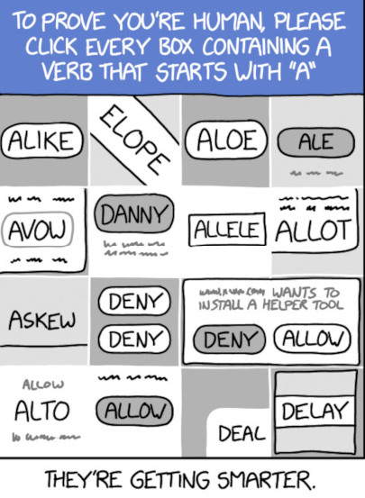
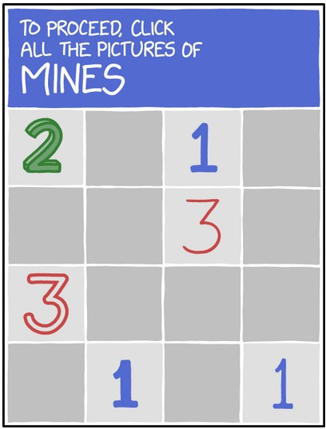
(Иллюстрации Рэндалла Манро, xkcd.com, лицензия CC BY-NC 2.5)
Captcha368 — это сокращение от «Completely Automated Public Turing test to tell Computers and Humans Apart»; это тесты Тьюринга369 — головоломки, которые необходимо пройти перед доступом к форме/веб-сайту. Чаще всего вы столкнётесь с теми, что предоставляют Google (сервис reCAPTCHA370) и Cloudflare (hCaptcha371). По собственным данным hCaptcha372, он используется на 15% интернета.
Они предназначены для отделения ботов от людей, но также явно используются, чтобы затруднить анонимным пользователям и пользователям, заботящимся о приватности, доступ к сервисам.
Если вы часто пользуетесь VPN или Tor, вы быстро столкнётесь с множеством капч повсюду373. Довольно часто при использовании Tor, даже если вам удастся решить все головоломки (иногда десятки подряд), после их решения вам всё равно откажут.
См. https://gitlab.torproject.org/legacy/trac/-/wikis/org/doc/ListOfServicesBlockingTor [Archive.org]
Хотя большинство людей считают, что эти проверки сводятся лишь к решению небольшой головоломки, важно понимать, что всё гораздо сложнее и что современные капчи используют продвинутое машинное обучение и алгоритмы анализа рисков, чтобы определить, являетесь ли вы человеком374:
-
Они проверяют ваш браузер, cookie-файлы и историю просмотра с помощью снятия цифрового отпечатка браузера375.
-
Они отслеживают движения вашего курсора (скорость, точность) и используют алгоритмы, чтобы решить, является ли поведение «человеческим/естественным».
-
Они отслеживают ваше поведение до, во время и после проверок, чтобы удостовериться, что вы «человек»376.
Также весьма вероятно, что такие платформы уже способны надёжно идентифицировать вас по уникальной манере взаимодействия с этими головоломками. Это может работать, несмотря на сокрытие вашего IP-адреса / браузера и очистку всех cookie-файлов.
Посмотрите, например, эту презентацию DEF CON 25: DEF CON 25 - Svea Eckert, Andreas Dewes - Dark Data [Invidious]
Нередко вам придётся проходить несколько таких проверок подряд (иногда бесконечно), а иногда — чрезвычайно сложные проверки, требующие читать неразборчивые символы или распознавать различные объекты на бесконечных наборах изображений. Капч также будет больше, если вы используете систему блокировки рекламы (например, uBlock) или если ваш аккаунт по какой-либо причине ранее был помечен из‑за использования VPN или Tor.
По моему опыту, капч (Google reCAPTCHA) также будет больше, если вы не используете браузер на основе Chromium. Но это можно смягчить, используя браузеры на основе Chromium, например Brave. Существует также расширение браузера Buster, которое может помочь вам с ними: https://github.com/dessant/buster [Archive.org].
Что касается Cloudflare (hCaptcha), вы также можете воспользоваться их решением для доступности здесь (https://www.hcaptcha.com/accessibility [Archive.org]), которое позволит вам зарегистрироваться (используя созданную позднее анонимную личность) и установить в браузере cookie-файл, позволяющий обходить их капчи. Другой способ смягчить проблему hCaptcha — воспользоваться их собственным решением «Privacy Pass»377 https://privacypass.github.io/ [Archive.org] в виде расширения браузера, которое можно установить в браузере вашей ВМ.
Поэтому подходите к этим проверкам внимательно и заставляйте себя менять способ их решения (скорость/движения/точность/...), чтобы предотвратить «снятие отпечатка по капче».
К счастью, насколько нам известно, они пока официально/публично не используются для деанонимизации людей в интересах третьих лиц.
Чтобы не сталкиваться с этими проблемами, рассмотрите использование VPN поверх Tor. А лучший вариант их избежать — вероятно, самостоятельно размещённый VPN/прокси поверх Tor на VPS-сервере, оплаченном наличными/Monero.
Проверка по телефонуλ
Большинство платформ рекламируют проверку по телефону как способ удостовериться, что вы человек. Но не обманывайтесь: главная причина такой проверки — не только убедиться, что вы человек, но и иметь возможность деанонимизировать вас при необходимости.
Большинство платформ (включая ориентированные на приватность, такие как Signal/Telegram/Proton) потребуют для регистрации номер телефона, а большинство стран теперь требуют при регистрации предъявить удостоверение личности378.
К счастью, ранее в этом руководстве объяснялось, как получить номер для таких случаев: Получение анонимного номера телефона.
Проверка электронной почтыλ
Проверки электронной почты раньше было достаточно, но в большинстве случаев уже нет. Важно знать, что открытые почтовые провайдеры (например, провайдеры одноразовой электронной почты) помечаются так же часто, как открытые прокси (вроде Tor).
Большинство платформ не позволят вам зарегистрироваться, используя «анонимную» или одноразовую электронную почту. Так же как не позволят зарегистрироваться с IP-адреса сети Tor.
Ключевой момент в том, что становится всё труднее зарегистрировать где-либо бесплатный почтовый аккаунт без предоставления (как вы и догадались) ... номера мобильного телефона. Тот же номер мобильного телефона во многих местах удобно использовать, чтобы отследить вас.
Возможно, такие сервисы (например, Proton) потребуют предоставить адрес электронной почты для регистрации. В таком случае мы рекомендуем создать адрес электронной почты у следующих провайдеров:
-
MailFence: https://mailfence.com/
-
Disroot: https://disroot.org
-
Autistici: https://autistici.org
-
Envs.net: https://envs.net/
Помните, что они не используют архитектуру нулевого доступа (архитектура нулевого доступа означает, что доступ к вашей почте есть только у вас — даже администраторы сервиса не могут читать ваши сообщения). Это означает, что они могут получить доступ к вашей почте, хранящейся в их базе данных.
Примечание о Riseup: канарейка ордера RiseUp была продлена с опозданием, а в их Twitter было опубликовано загадочное сообщение, которое, по-видимому, призывало не доверять им. Из-за подозрительного характера этого твита руководство больше не может рекомендовать их.
Также см.: https://forums.whonix.org/t/riseup-net-likely-compromised/3195
Для https://riseup.net [Tor Mirror] (до моего сведения дошло, что сайт теперь, к сожалению, требует приглашения от уже зарегистрированного пользователя)
Сервисы псевдонимовλ
Если вы хотите не сообщать свои анонимные адреса электронной почты различным сторонам, мы настоятельно рекомендуем рассмотреть использование сервисов почтовых псевдонимов, таких как:
-
https://simplelogin.io/ (предпочтительный первый выбор благодаря большему числу возможностей в бесплатном тарифе)
Эти сервисы позволят создавать случайные псевдонимы для вашей анонимной почты (например, на Proton) и могут повысить вашу общую приватность, если вы не хотите раскрывать этот адрес для каких-либо целей. Оба они рекомендуются Privacyguides.org и Privacytools.io. Я также их рекомендую.
Проверка пользовательских данныхλ
Очевидно, Reddit этого (пока) не делает, но Facebook, скорее всего, делает и будет искать «подозрительные» элементы в ваших данных (включая, возможно, распознавание лиц).
Несколько примеров:
-
IP-адрес из страны, отличающейся от страны в вашем профиле.
-
Указанный в профиле возраст не соответствует возрасту на фотографии.
-
Указанная в профиле этническая принадлежность не соответствует этнической принадлежности на фотографии.
-
Язык не соответствует языку страны.
-
Вас нет в контактах других людей (то есть вас никто не знает).
-
Ужесточение настроек приватности после регистрации.
-
Имя не соответствует предполагаемой этнической принадлежности/языку/стране?
Проверка удостоверения личностиλ
Во многих случаях это непреодолимое препятствие. Насколько нам известно, лишь Facebook и LinkedIn (за пределами финансовых сервисов) запрашивали такие проверки, предполагающие отправку фотографий какого-либо удостоверения личности (паспорта, национального удостоверения личности, водительского удостоверения ...). Единственный способ сделать это потребовал бы создания поддельных официальных документов (подлога) с использованием приличных навыков Photoshop, и во многих местах это может быть незаконно.
Поэтому это черта, которую в данном руководстве мы не станем помогать вам переступить. Некоторые сервисы предлагают подобные услуги онлайн, но мы считаем их недобросовестными субъектами, выходящими за допустимые границы.
Во многих странах только правоохранительные органы, некоторые специальные процедуры (такие как запросы GDPR) и некоторые строго регулируемые финансовые сервисы могут требовать подтверждение личности. Поэтому законность требования таких документов спорна, и мы считаем, что подобным платформам не следует позволять их требовать.
В немногих странах (например, в Германии) такая практика незаконна, и онлайн-платформы, такие как Facebook или LinkedIn, по закону обязаны разрешать вам пользоваться псевдонимом и оставаться анонимным.
IP-фильтрыλ
Как уже говорилось в этом руководстве, многие платформы применяют фильтрацию на основе IP. Выходные узлы Tor публично перечислены, а выходные серверы VPN «хорошо известны». Существует множество коммерческих и бесплатных сервисов, позволяющих с лёгкостью блокировать эти IP-адреса (привет, Cloudflare).
Многие операторы и администраторы платформ не хотят трафика с этих IP-адресов, поскольку он часто приносит на их платформы много незаконного/вредоносного/неприбыльного трафика. Такие платформы обычно приводят один из следующих доводов:
- «Подумайте о детях!»;
- «Терроризм!»;
- «Российская тролльская пропаганда!»;
- «Ну, это шум в данных, которые мы продаём рекламодателям!» (например, AdSense или Facebook Ads).
«Но мы всё равно оплачиваем их трафик, так что давайте просто запретим их всех».
К счастью, эти системы несовершенны, и вы (по-прежнему) сможете обходить такие ограничения, меняя личности (в случае Tor) и пытаясь каждый раз зайти на веб-сайт, пока не найдёте выходной узел, ещё не внесённый в чёрный список.
Некоторые платформы позволят вам войти с IP-адреса Tor, но не зарегистрироваться (см. https://gitlab.torproject.org/legacy/trac/-/wikis/org/doc/ListOfServicesBlockingTor [Archive.org]). Такие платформы будут вести удобный постоянный журнал IP-адреса, использованного вами при регистрации, — а некоторые будут хранить такие журналы бессрочно, например все IP-адреса, с которых вы входили (привет, Facebook).
Терпимость к VPN значительно выше, поскольку они не считаются «открытыми прокси», но это не остановит многие платформы от усложнения их использования, заставляя большинство пользователей VPN проходить всё более сложные CAPTCHA.
По этой причине руководство рекомендует в некоторых сценариях использовать VPN поверх Tor (а не Tor поверх VPN). Помните: лучший способ избежать этого — использовать самостоятельно размещённый VPN/прокси поверх Tor на VPS, оплаченном наличными/Monero.
Цифровой отпечаток браузера и устройстваλ
Цифровые отпечатки вашего браузера и устройства379 — это набор свойств/возможностей вашей системы/браузера. Они используются на большинстве веб-сайтов для незаметного отслеживания пользователя, а также для адаптации пользовательского опыта сайта к его браузеру. Например, веб-сайты смогут предоставить «мобильный интерфейс», если вы пользуетесь мобильным браузером, или предложить определённую языковую/географическую версию в зависимости от вашего отпечатка. Большинство этих методов работают с современными браузерами, например браузерами на основе Chromium249 (такими как Chrome/Edge) или Firefox250, если не принимать специальных мер. Снятие цифрового отпечатка браузера и устройства379 обычно встроено в сервисы капч, а также в различные другие сервисы.
Многие платформы (например, Google380) проверяют различные возможности и настройки вашего браузера и блокируют браузеры, которые им не нравятся. Это одна из причин, по которым мы рекомендуем использовать в этой ВМ браузеры на основе Chromium, такие как Brave Browser, вместо Tor Browser.
Следует также отметить, что, хотя некоторые браузеры и расширения предлагают определённую защиту от снятия отпечатка, сама эта защита также может использоваться для снятия вашего отпечатка, как объясняется здесь: https://palant.info/2020/12/10/how-anti-fingerprinting-extensions-tend-to-make-fingerprinting-easier/ [Archive.org]
Это руководство смягчит эти проблемы, рандомизируя или скрывая многие из этих идентификаторов отпечатка:
-
Используя виртуализацию (см. Виртуализация);
-
Используя специальные рекомендации (см. Дополнительные меры предосторожности для браузера при включённом JavaScript);
-
Применяя усиление защиты Усиление защиты ваших браузеров;
-
и используя браузеры, устойчивые к снятию отпечатка (такие как Brave или Tor Browser).
Вот некоторые параметры, которые они проверяют в современных браузерах:
-
User-Agent: название и версия вашего браузера.
-
HTTP_ACCEPT Headers: тип содержимого, которое способен обрабатывать ваш браузер.
-
Time Zone and Time Zone Offset: ваш часовой пояс.
-
Screen Size and Color Depth: разрешение вашего экрана.
-
System Fonts: шрифты, установленные в вашей системе.
-
Cookies support: поддерживает ли ваш браузер cookie-файлы.
-
Hash of Canvas fingerprint and Hash of WebGL fingerprint: уникальные идентификаторы, генерируемые на основе возможностей графического рендеринга.
-
WebGL Vendor & Renderer: название вашей видеокарты.
-
Do-Not-Track enabled or not: да, информацию DNT могут использовать для отслеживания вас.
-
Language: язык вашего браузера.
-
Platform: используемая вами операционная система.
-
Touch Support: поддерживает ли ваша система сенсорный ввод (например, телефон/планшет или ноутбук с сенсорным экраном).
-
Ad Blocking use: блокирует ли ваш браузер рекламу.
-
AudioContext fingerprint: как и отпечатки Canvas и WebGL, позволяет снять отпечаток ваших аудиовозможностей.
-
CPU: какой у вас процессор и сколько их.
-
Memory: сколько памяти в вашей системе.
-
Browser Permissions: разрешает ли ваш браузер такие вещи, как доступ к геолокации, микрофону или веб-камере.
К сожалению, в большинстве случаев эти отпечатки будут уникальны или почти уникальны для вашего браузера/системы. Это означает, что даже если вы выйдете с веб-сайта, а затем снова войдёте под другим именем пользователя, ваш отпечаток может остаться тем же, если вы не приняли меры предосторожности. Тогда противник сможет использовать такие отпечатки, чтобы отслеживать вас в нескольких сервисах, даже если у вас нет аккаунта ни в одном из них и вы используете блокировку рекламы. Эти отпечатки, в свою очередь, могут быть использованы для вашей деанонимизации, если вы сохраняете один и тот же отпечаток между сервисами.
Вот сервисы, которые можно использовать для проверки отпечатков браузера:
-
https://abrahamjuliot.github.io/creepjs/ (вероятно, лучший в целом)
-
(только для браузеров на основе Chromium) https://z0ccc.github.io/extension-fingerprints/#
Скорее всего, вы обнаружите, что отпечаток вашего браузера уникален, что бы вы ни делали.
Взаимодействие с человекомλ
Некоторые платформы добавляют это как дополнительный этап и требуют реального взаимодействия с представителем службы поддержки. Обычно по электронной почте, но иногда через чат/телефон. Они захотят убедиться в вашем существовании, попросив ответить на электронное письмо/сообщение в чате/телефонный звонок.
Это раздражает, но в нашем случае справиться довольно легко. Мы не создаём ботов. Это руководство предназначено для людей, создающих человеческие аккаунты.
Модерация пользователейλ
Многие платформы делегируют пользователям модерацию других пользователей и их контента и полагаются на них. Это функции «жалобы», которые вы найдёте на большинстве платформ.
Тысячи жалоб не имеют значения, когда вы Дональд Трамп или Ким Кардашьян, но если вы как единственный анонимный пользователь «без друзей» получите хотя бы одну жалобу, вас могут мгновенно приостановить/пометить/заблокировать.
Поведенческий анализλ
См. Ваш цифровой след.
Финансовые операцииλ
Просто и эффективно: некоторые платформы потребуют совершить финансовую операцию для подтверждения аккаунта, иногда под предлогом проверки вашего возраста. Это может быть проверка кредитной карты или банковский перевод на чрезвычайно малую сумму. Некоторые примут пожертвование в основной криптовалюте, такой как Bitcoin или Ethereum.
Хотя это может выглядеть безобидно, очевидно, это метод проверки личности и деанонимизации. Он лишь косвенно опирается на правила KYC238 третьих сторон в финансовой сфере.
Например, теперь это касается некоторых европейских пользователей YouTube381, но также используется такими сервисами, как Amazon, требующими действующий способ оплаты для создания аккаунта.
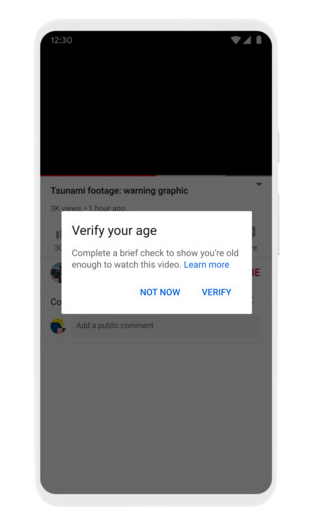
Вход через какую-либо платформуλ
«Зачем проводить эту проверку пользователя самим, когда можно попросить других разобраться с ней?»
Вы заметите это — и, вероятно, уже сталкивались с этим. Некоторые приложения/платформы попросят или потребуют войти через известную и широко используемую авторитетную платформу вместо собственной системы (вход через Google/Facebook/Apple/Twitter).
Этот вариант часто представлен как «вариант по умолчанию», а «Вход с электронной почтой и паролем» скрыт с помощью изощрённых тёмных паттернов382 и, к сожалению, иногда необходим.
Этот метод делегирует процесс проверки этим платформам, вместо того чтобы предполагать, что вы не сможете без труда создать анонимный аккаунт Google/Facebook/Apple/Twitter.
К счастью, создать такие аккаунты всё ещё возможно и сегодня.
Распознавание лиц и биометрияλ
Это распространённый метод, используемый на некоторых криптовалютных торговых платформах и в некоторых приложениях для знакомств.
Некоторые платформы/приложения потребуют сделать живую фотографию самого себя, либо выполняя какое-то действие (подмигнуть, поднять руку ...), либо показывая на фотографии специальную информацию (рукописный текст, паспорт или удостоверение личности). Иногда платформа/приложение потребует несколько фотографий, чтобы повысить уверенность.
Это руководство (пока) не будет рассматривать данный способ, поскольку он главным образом используется финансовыми платформами (которые в любом случае смогут идентифицировать вас другими средствами) и некоторыми приложениями для знакомств, такими как Tinder383. К сожалению, этот метод теперь иногда также используется Facebook384 и Instagram как часть их способов проверки (хотя мы пока с этим не сталкивались).
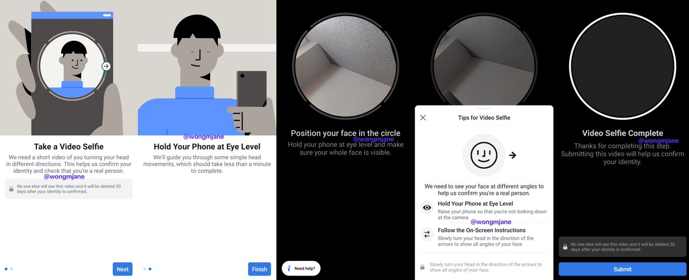
В некоторых случаях эти проверки должны проводиться со смартфона и с помощью камеры «в приложении», чтобы помешать вам отправить ранее сохранённое (отредактированное) изображение.
Недавно даже такие платформы, как PornHub, решили в будущем внедрить аналогичные меры385.
Эту проверку крайне трудно обойти, но это возможно. Одним из потенциальных методов обхода могло бы быть использование программного обеспечения технологии «дипфейков», такого как открытый FaceSwap https://github.com/deepfakes/faceswap [Archive.org], чтобы сгенерировать требуемые проверочные фотографии со случайно сгенерированным компьютером лицом, наложенным на фотографию сотрудничающей модели (или стоковое фото).
К сожалению, некоторым приложениям требуется прямой доступ к камере смартфона для обработки проверки. В таком случае вам нужно будет найти способ выполнять такие «замены лица» на лету с помощью фильтра и другой способ подать это в камеру, используемую приложением. Возможный подход был бы похож на этот впечатляющий проект: https://github.com/iperov/DeepFaceLive [Archive.org].
Ручные проверкиλ
Они могут быть вызваны любым из перечисленного выше и означают лишь то, что кто-то (обычно специализированные сотрудники) вручную проверит ваш профиль и решит, настоящий ли он, на основе своего субъективного мнения.
В некоторых странах даже появились горячие линии, по которым можно сообщать о подрывном контенте386.
Плюсы: обычно такое решение является «окончательным», и если вы достаточно убедительны, вы, вероятно, избежите дальнейших проблем.
Минусы: обычно такое решение является «окончательным», и если вы недостаточно убедительны, вас, вероятно, заблокируют без возможности обжалования. Иногда такие проверки заканчиваются тем, что платформа просто игнорирует вас и отменяет вашу личность без всякой причины. Любая апелляция останется без ответа, будет проигнорирована или вызовет какую-либо случайную ошибку тёмного паттерна при попытке обжаловать именно эту личность (например, так происходит в Instagram: если ваш аккаунт «приостановлен», очевидно, в результате ручной проверки, попытка заполнить форму апелляции просто выдаст ошибку и предложит повторить позднее (мы пытаемся подать эту же апелляцию для той личности уже как минимум последние 6 месяцев).
Выход в интернетλ
Теперь, когда у вас есть базовое понимание всех способов, которыми вас могут деанонимизировать, отслеживать и проверять, приступим к их обходу, сохраняя анонимность. Помните:
-
Вы не можете доверять интернет-провайдерам
-
Вы не можете доверять VPS-провайдерам
-
Вы не можете доверять поставщикам публичного Wi‑Fi
-
Вы не можете доверять операторам мобильной связи
-
Вы не можете доверять VPN-провайдерам
-
Вы не можете доверять никакой онлайн-платформе
-
Вы не можете доверять Tor
-
Вы не можете доверять своей операционной системе
-
Вы не можете доверять своему ноутбуку
-
Вы не можете доверять своему смартфону (особенно Android)
-
Вы не можете доверять своим умным устройствам
-
Прежде всего, вы не можете доверять людям
Ну и что? Вместо того чтобы никому и ничему не доверять, мы советуем вместо этого «Доверяй, но проверяй»387 (или «Никогда не доверяй, всегда проверяй», если вы более радикальны в этом вопросе и хотите применять безопасность нулевого доверия388).
Не начинайте этот процесс, если:
-
Вы изучили местное законодательство на предмет соблюдения требований и законности своих действий.
-
Вы осознаёте свою модель угроз.
-
Вы находитесь в безопасном месте с публичным Wi‑Fi, без смартфона или другого умного устройства при себе. И предпочтительно в месте, где вас не снимают камеры видеонаблюдения (не забудьте Найти безопасные места с достойным публичным Wi‑Fi и Использовать дальнобойную антенну для подключения к публичному Wi‑Fi с безопасного расстояния
-
Вы полностью закончили подготовку и готовы выбрать один из маршрутов.
-
Ещё раз: крайне важно понимать, что вы не сможете создать большинство аккаунтов без действительного номера телефона. Поэтому большая часть вашей анонимности на основных платформах зависит от анонимности вашего онлайн-номера телефона и/или телефона-горелки с предоплаченной SIM-картой (если вы его используете). Если ваш номер телефона не анонимен или ваш телефон-горелка может быть связан с вами, вас могут деанонимизировать. Если вы не можете получить этот анонимный номер телефона и/или физическую SIM-карту с телефоном-горелкой, вам придётся ограничиться платформами, не запрашивающими проверку номера телефона.
Не забудьте прочитать Предупреждение о смартфонах и умных устройствах
Создание новых личностейλ
Это увлекательная часть: теперь вы создадите свои личности из ничего. Эти личности не существуют, но должны быть правдоподобными и выглядеть «естественно». В идеале у них должна быть история, «легенда» (да, это действительно термин для этого389).
Что такое легенда? Это полная предыстория вашего персонажа:
-
Возраст
-
Пол
-
Гендер
-
Этническая принадлежность
-
Место и дата рождения
-
Место проживания
-
Страна происхождения
-
Посещённые страны (например, в путешествиях)
-
Интересы и хобби
-
История образования
-
Опыт работы
-
Информация о здоровье
-
Религия, если есть
-
Цели
-
История семьи
-
Состав семьи, если есть (дети? супруг? муж?)
-
Семейное положение, если есть (в браке? одинок?)
-
Языки, на которых говорит
-
Черты личности (интроверт, экстраверт ...)
-
...
Всё это должно быть тщательно проработано для каждой отдельной личности, и при использовании этих личностей вам следует чрезвычайно внимательно придерживаться деталей каждой легенды. Ничто не должно утечь так, чтобы привести к вашей настоящей персоне. Ничто не должно утечь так, чтобы нарушить целостность вашей легенды. Всё всегда должно быть согласованно.
Инструменты, которые могут помочь:
-
https://generated.photos/face-generator (Сгенерированные этим инструментом изображения содержат водяной знак, который может потребоваться удалить с помощью программы для редактирования изображений, такой как Gimp)
- Предупреждение: Для работы этому инструменту требуется JavaScript, и он выполняет много снятия цифровых отпечатков. Большая часть данных отправляется в Microsoft Clarity. Даже с установленным uBlock и более безопасным уровнем Tor Browser неэффективно блокировал снятие отпечатка. Очевидно, это не работает на уровне Safest. В наших тестах только Brave с агрессивными щитами против снятия отпечатка/рекламы не отправлял аналитику.
Сейчас также самое время наконец рассмотреть получение онлайн-номера телефона, как объясняется в разделе [Онлайн-номер телефона (менее рекомендуется)].
Мы немного поможем вам, перечислив несколько советов, которые мы узнали за годы исследований (отказ от ответственности: это основано исключительно на моём личном опыте):
-
«Некоторые животные равнее других».
-
Этническая принадлежность важна, и у вас будет меньше проблем и вы привлечёте меньше внимания алгоритмов проверки, если ваша личность будет европеоидной/восточноазиатской, а не арабской/чёрной (да, мы тщательно это тестировали, и это определённо проблема).
-
Возраст важен, и у вас будет меньше проблем, если вы молоды (18–22), чем если вы среднего или старшего возраста. Платформы, по-видимому, более снисходительны и не налагают ограничений на новую молодую аудиторию.
-
Пол/гендер важен, и у вас будет меньше проблем, если вы женщина, а не мужчина.
-
Страна происхождения важна, и у вас будет меньше проблем, если ваша личность норвежская, а не украинская, нигерийская или мексиканская.
-
Страна проживания важна, и у вас будет меньше проблем, если ваша личность живёт в Осло или Париже, а не если вы решите жить в Киеве или Каире.
-
Язык важен, и у вас будет меньше проблем, если вы говорите по-английски или на языке вашей личности, а не используете неродственный язык. Не создавайте 20-летнюю норвежку арабского происхождения, говорящую на украинском или арабском.
-
-
Личности, являющиеся «резидентами ЕС» с «IP из ЕС» (VPN/выходной IP Tor), получат защиту GDPR на многих платформах. Другие — нет. GDPR в большинстве случаев ваш друг, и вам следует это учитывать.
-
Аналогично, геолокация исходного IP (ваш IP/местоположение при переходе на «whatsmyipaddress.com») должна максимально соответствовать местоположению вашей личности (при использовании VPN поверх Tor вы можете выбрать это в VPN-клиенте, если используете подход VPN поверх Tor, либо просто создавать новую личность в Tor Browser или вкладке Brave Tor, пока не получите подходящий выходной узел, или настроить Tor на ограничение выходных узлов). Рассмотрите исключение любого выходного IP, не расположенного в Западной Европе/США/Канаде/Японии/Южной Корее/Австралии/Новой Зеландии, поскольку у вас будет меньше проблем. В идеале следует получить IP Европейского союза для дополнительной защиты GDPR и, если возможно, немецкий выходной IP из-за позиции законодательства этой страны в отношении использования анонимных аккаунтов на онлайн-платформах.
-
Brave Browser (на основе Chromium) с приватной вкладкой Tor имеет более высокий уровень принятия, чем Tor Browser (на основе Firefox). Если вы используете Brave вместо Tor Browser, у вас будет меньше проблем с капчами и онлайн-платформами380 (не стесняйтесь проверить это сами).
-
Для каждой личности должна быть связанная с ней подходящая фотография профиля. Для этой цели мы рекомендуем просто зайти на https://thispersondoesnotexist.com/ или https://generated.photos/face-generator* и сгенерировать созданную компьютером фотографию профиля (обратите внимание, что были разработаны алгоритмы390'391 для обнаружения таких изображений, и это может работать не в 100% случаев). Если хотите, вы также можете сами генерировать такие изображения на компьютере, используя проект открытого кода StyleGan: https://github.com/NVlabs/stylegan2 [Archive.org]. Просто обновляйте страницу, пока не найдёте изображение, соответствующее вашей личности во всех отношениях (возраст, пол и этническая принадлежность), и сохраните его. Было бы ещё лучше иметь несколько фотографий, связанных с этой личностью, ноWedo пока нет «простого способа» сделать это.
*Предупреждение: Для работы https://generated.photos/face-generator требуется JavaScript, и сервис выполняет много снятия цифровых отпечатков. Большая часть данных отправляется в Microsoft Clarity. Даже с установленным uBlock и более безопасным уровнем Tor Browser неэффективно блокировал снятие отпечатка. Очевидно, это не работает на уровне Safest. В наших тестах только Brave с агрессивными щитами против снятия отпечатка/рекламы не отправлял аналитику.
-
Дополнительно, вы можете сделать это более реалистичным, воспользовавшись этим сервисом (с анонимной личностью): https://www.myheritage.com/deep-nostalgia [Archive.org], чтобы сделать фотографию более живой. Вот пример:
-
Оригинал:
- Результат (см. онлайн, поскольку PDF плохо работает со встроенными медиа):
Небольшая проблема: MyHeritrage.com блокирует выходные узлы Tor, поэтому вам, возможно, снова придётся рассмотреть VPN поверх Tor.
Того же результата можно добиться, не используя MyHeritage, а сделав всё самостоятельно, например с помощью https://github.com/AliaksandrSiarohin/first-order-model [Archive.org], но это потребует больше ручных действий (и требует GPU NVIDIA). Скоро будут доступны и другие коммерческие продукты, такие как: https://www.d-id.com/talkingheads/ [Archive.org]; примеры здесь: https://www.youtube.com/channel/UCqyzLOHYamYX2tNXBNSHr1w/videos [Invidious].
Примечание: если вы создаёте несколько фотографий одной личности с помощью некоторых упомянутых выше инструментов, обязательно сравните сходство с помощью инструмента Microsoft Azure Face Verification по адресу https://azure.microsoft.com/en-us/services/cognitive-services/face/#demo.
-
Заранее создайте и сохраните в KeePassXC сведения о каждой личности, включая некоторые проработанные детали, упомянутые ранее.
-
Не выбирайте работу в известной частной корпорации/компании, поскольку сотрудники их отделов кадров отслеживают активность на таких платформах, как LinkedIn, и сообщат, что ваш профиль поддельный, если он не соответствует их базе данных. Вместо этого выберите работу фрилансером или в крупном государственном учреждении, где из-за децентрализованной природы вы столкнётесь с меньшей проверкой.
-
Отслеживайте (записывайте) предыстории своих личностей. Вам следует всегда использовать одни и те же даты и ответы повсюду. Всё всегда должно совпадать. Даже истории, которые вы рассказываете о своей воображаемой жизни, всегда должны совпадать. Если однажды вы скажете, что работаете стажёром в Министерстве здравоохранения, а позже на другой платформе скажете, что стажируетесь в Министерстве транспорта, люди могут усомниться в вашей личности. Будьте последовательны.
-
Используйте отдельный номер телефона для каждой личности. Онлайн-платформы отслеживают использование номеров телефонов, и если одна личность/номер будет помечена за нарушение правил сообщества или условий обслуживания, другие личности, использующие тот же номер, тоже могут быть помечены/заблокированы.
-
Адаптируйте свой язык/письмо к личности, чтобы не вызывать подозрений и снизить вероятность снятия вашего отпечатка онлайн-платформами. Будьте особенно осторожны с использованием педантичных слов и оборотов речи/цитат, по которым некоторые люди могут догадаться, что ваш стиль письма очень похож на стиль человека с таким-то ником в Twitter или этого пользователя Reddit. См. Противодействие судебной лингвистике.
-
Всегда используйте TOTP 2FA (не SMS, чтобы предотвратить атаки подмены SIM392 и сохранить работу личности, когда ваша предоплаченная карта истечёт) с помощью KeePassXC, если это доступно, чтобы защитить вход в различные платформы.
Вот также хорошее руководство по этой конкретной теме: https://gendersec.tacticaltech.org/wiki/index.php/Complete_manual#.22Real.22_names [Archive.org]
Примечание: если вам трудно найти выходной узел в нужной стране, можно принудительно использовать определённые страны для выходных узлов (а следовательно, и страны выхода) в Tor, отредактировав файл torrc на шлюзе Whonix или даже в Tor Browser:
-
Whonix/Tails: создайте/отредактируйте файл
/usr/local/etc/torrc.d/50_user.conf393. -
В Tor Browser: отредактируйте файл torrc, расположенный в
Browser/TorBrowser/Data/Tor394.
Открыв файл, можно сделать следующее:
-
Укажите выходные узлы, добавив эти две строки (которые потребуют выходной узел в Китае/России/Украине:
-
ExitNodes {CH},{RU},{UA} -
StrictNodes 1
-
-
Исключите конкретные выходные узлы, добавив эту строку (которая исключит все выходные узлы из Франции/Германии/США/Великобритании):
ExcludeNodes {FR},{DE},{US},{UK}
Всегда используйте заглавные буквы для любых настроек.
Обратите внимание, что такое ограничение Onion Routing может снизить вашу анонимность, если вы слишком сильно ограничите его. Визуализированный список доступных выходных узлов можно посмотреть здесь: https://www.bigdatacloud.com/insights/tor-exit-nodes [Archive.org]
Вот список возможных вариантов (это общий список, и во многих из этих стран может вовсе не быть выходных узлов): https://web.archive.org/web/https://b3rn3d.herokuapp.com/blog/2014/03/05/tor-country-codes/
Проверка того, насколько плох ваш выходной узел Torλ
Пропустите это, если используете VPN/прокси поверх Tor.
Не все выходные узлы Tor одинаковы. Главным образом это зависит от того, какую «политику выхода» применяет к ним оператор. Некоторые выходные узлы Tor считаются более или менее «чистыми» и будут отображаться только в списках выходных узлов Tor. Другие выходные узлы Tor считаются «грязными» и будут присутствовать в десятках различных чёрных списков. Так как же узнать, используете ли вы чистый или плохой узел? Это не так просто.
Этот процесс очень прост.
Он работает независимо от того, используете ли вы Tor Browser на хостовой ОС, в ВМ, с Whonix или Qubes OS.
-
Перейдите на целевой веб-сайт, на котором хотите зарегистрироваться, в одной вкладке.
-
Нажмите значок цепочки Tor слева от значка «замок» в левом верхнем углу, чтобы увидеть свой маршрут через сеть Tor.
-
Посмотрите третий IP-адрес (выходной IP), который вы используете в этой вкладке для этого веб-сайта. (IP-адрес нельзя скопировать, но при необходимости его можно ввести в адресную строку браузера.)
-
Откройте новую вкладку и перейдите на MX Toolbox. https://mxtoolbox.com/blacklists.aspx
-
Введите выходной IP из первой вкладки в поле поиска. Вероятно, вы увидите «We notice you are on a blacklist.»
-
Проверьте, в скольких чёрных списках находится выходной узел Tor. В идеале их должно быть только два. Если он есть в других списках, например Spamhaus ZEN, у вас могут возникнуть проблемы:
-
DAN TOR
-
DAN TOREXIT
-
Если выходной узел «чистый» (присутствует в немногих списках), вернитесь к первой вкладке и откройте сайт, которым хотите воспользоваться для регистрации.
Система настоящих имёнλ
К сожалению, отказ от использования настоящей личности нарушает условия обслуживания («TOS») многих сервисов, особенно принадлежащих Microsoft и Facebook. Но не отчаивайтесь: как объяснено в Требованиях, в Германии это по-прежнему законно, поскольку суды подтвердили законность неиспользования настоящих имён на онлайн-платформах (§13 VI немецкого Закона о телемедиа 2007 года1'2). К счастью, ToS не могут отменять законы (пока).
Это не значит, что в других местах это незаконно; но если закон не на вашей стороне, это может быть нарушением их TOS. Помните, что это руководство поддерживает это только для граждан Германии, проживающих в Германии.
Со своей стороны мы решительно осуждаем подобную политику настоящих имён. См., например, эту статью Википедии с несколькими примерами: https://en.wikipedia.org/wiki/Facebook_real-name_policy_controversy [Wikiless] [Archive.org]
Вот ещё несколько источников о немецком деле:
-
https://slate.com/technology/2018/02/why-some-americans-are-cheering-germany-for-taking-on-facebooks-real-name-policy.html [Archive.org]
-
https://www.theverge.com/2018/2/12/17005746/facebook-real-name-policy-illegal-german-court-rules [Archive.org]
-
https://www.pcmag.com/news/german-court-rules-facebooks-real-name-policy-is-illegal [Archive.org]
-
https://www.vzbv.de/sites/default/files/downloads/2018/02/14/18-02-12_vzbv_pm_facebook-urteil_en.pdf [Archive.org]
-
https://www.pcmag.com/news/german-court-rules-facebooks-real-name-policy-is-illegal [Archive.org]
-
https://www.reuters.com/article/us-germany-facebook/german-court-rules-facebook-use-of-personal-data-illegal-idUSKBN1FW1FI [Archive.org]
В качестве альтернативы вы можете быть совершеннолетним жителем любой другой страны, где сможете самостоятельно подтвердить и проверить законность этого. Повторим: это не юридическая консультация, и мы не юристы. Действуйте на свой страх и риск.
Другие страны, где это было признано незаконным:
-
Южная Корея (см. https://en.wikipedia.org/wiki/Real-name_system#South_Korea [Wikiless] [Archive.org])
-
Если вам известны другие, пожалуйста, сообщите нам, приложив источники, в issues GitHub.
Некоторые платформы полностью обходят это требование, требуя вместо этого действительный способ оплаты (см. [Финансовые операции:]). Хотя это не требует настоящего имени напрямую по их TOS, результат тот же, поскольку они обычно принимают только основные (не Monero/наличные) способы оплаты (такие как Visa/MasterCard/Maestro или PayPal), которые по закону требуют настоящего имени в рамках правил KYC238. Результат тот же и даже лучше простой политики настоящих имён, которую в некоторых странах, например Германии, можно было игнорировать.
О платных услугахλ
Если вы намерены пользоваться платными услугами, отдавайте предпочтение тем, которые принимают наличные или Monero: так вы сможете платить напрямую, безопасно и анонимно.
Если нужная вам услуга не принимает такие платежи, но принимает Bitcoin (BTC), обратитесь к следующему приложению: Анонимная оплата в интернете BTC (или другой криптовалютой).
В этом разделе приведён обзор действующих требований некоторых платформ:
-
Для лучшей защиты приватности рассмотрите рекомендованные инструменты на https://privacyguides.org [Archive.org] вместо привычных массовых сервисов.
-
Также рассмотрите рекомендованные инструменты из https://www.whonix.org/wiki/Documentation [Archive.org] вместо распространённых решений, например почтовых провайдеров: https://www.whonix.org/wiki/E-Mail#Anonymity_Friendly_Email_Provider_List [Archive.org]
Приведённый ниже обзор касается не практик конфиденциальности этих платформ, а только требований при регистрации учётной записи. Если вам нужны инструменты и платформы, учитывающие приватность, посетите https://privacyguides.org [Archive.org].
Условные обозначения:
-
«Неясно»: недостаточно сведений либо они противоречивы.
-
«Возможно»: это происходило в меньшинстве тестов.
-
«Вероятно»: это происходило в большинстве тестов.
-
«Да» или «Нет»: это либо происходило, либо систематически не происходило ни в одном из тестов.
-
«Легко»: в целом всё прошло просто, с минимальными препятствиями или без них.
-
«Средне»: есть некоторые препятствия, но задача выполнима без чрезмерных затруднений.
-
«Сложно»: процесс сопряжён с множеством серьёзных препятствий.
-
«Н/Д»: неприменимо, поскольку это невозможно было проверить в рамках данного руководства.
-
«Косвенно»: требование предъявляется не напрямую, а через стороннюю систему (например, финансовый KYC).
-
Важная информация приведена в разделе Система настоящих имён. Подробности — ниже.
Ниже перечислены «проблемные сервисы». Если сервиса в списке нет, это означает, что с ним не выявлено никаких проблем (как, например, с Briar).
Amazon
- Это нарушает их условия использования? Нет, но фактически да https://www.amazon.com/gp/help/customer/display.html?nodeId=202140280 [Archive.org]
"1. Amazon Services, Amazon Software
A. Use of Amazon Services on a Product. To use certain Amazon Services on a Product, you must have your own Amazon.com account, be logged in to your account on the Product, and have a valid payment method associated with your account. "
Хотя формально настоящее имя не требуется, необходим действительный способ оплаты. К сожалению, «наличные» или «Monero» в качестве способа оплаты не принимаются. Поэтому сервис опирается на финансовый KYC, где политика настоящего имени практически повсеместно обязательна.
-
Потребуют ли номер телефона? Да, но см. ниже.
-
Можно ли создать учётную запись через Tor? Да, но см. ниже.
Из-за требования действительного способа оплаты мы не могли это протестировать. Хотя это, по-видимому, не нарушает условий Amazon, в рамках данного руководства это невозможно, если только вам не удастся анонимно получить платёжный инструмент с KYC, что, насколько мне известно, практически невозможно или чрезвычайно сложно.
Таким образом, насколько мне известно, создать анонимную учётную запись Amazon невозможно.
Apple
- Is this against their ToS? Yes https://www.apple.com/legal/internet-services/icloud/en/terms.html [Archive.org]
"IV. Your Use of the Service
A. Your Account
In order to use the Service, you must enter your Apple ID and password to authenticate your Account. You agree to provide accurate and complete information when you register with, and as you use, the Service ("Service Registration Data"), and you agree to update your Service Registration Data to keep it accurate and complete".
-
Will they require a phone number? Yes
-
Can you create accounts through Tor? Yes
Note that this account will not allow you to set up an Apple mail account. For that, you will need an Apple device.
Binance
-
Is this against their ToS? Yes https://www.binance.com/en/terms [Archive.org]
-
Will they require a phone number? No, they do require an e-mail
-
Can you create accounts through Tor? No
Discord
-
Is this against their ToS? No https://discord.com/terms [Archive.org]
-
Will they require a phone number? No, but they do require an e-mail
-
Can you create accounts through Tor? We had no issues with that so far using the Desktop Client
You might encounter more issues using the Web Client (Captchas). Especially with Tor Browser.
I suggest using the Discord Client app on a VM through Tor or ideally through VPN/Proxy over Tor to mitigate such issues.
Element
-
Is this against their ToS? No https://element.io/terms-of-service [Archive.org]
-
Will they require a phone number? No, they do not even require an e-mail
-
Can you create accounts through Tor? Yes
Expect some Captchas during account creation on some homeservers.
- Is this against their ToS? Yes https://www.facebook.com/terms.php [Archive.org]
"1. Who can use Facebook
When people stand behind their opinions and actions, our community is safer and more accountable. For this reason, you must:
-
Use the same name that you use in everyday life.
-
Provide accurate information about yourself.
-
Will they require a phone number? Yes, and probably more later
-
Can you create accounts through Tor? Yes, but it is very difficult and their onion address395 will not help. In most cases, you'll just have a random error at sign-up and your account suspended after sign-in."
But this clause of their ToS is illegal in Germany (see Requirements).
Facebook is one of the most aggressive platforms with identity verification and is pushing hard their "real name policy". It is why this guide is only advised to German residents.
Over our tests tho we were able to pinpoint a few tips:
-
It will be easier if you have an Instagram account first.
-
Signing up through Tor is almost impossible (even using their .onion address which is a joke) and will only succeed if you are " very lucky" (I assume if you are using an exit node that is not yet known by Facebook verification systems). In most cases, it will not allow registration at all and will just fail with "An error has occurred during registration".
-
Signing up through VPNs is more likely to succeed but might still result in the same error. So, you must be ready for a lot of trial and error here.
-
Signing up through a Self-Hosted VPN/Proxy is your best bet but make sure your profile/identity matches the IP geolocation.
-
My earlier entry in the guide about the Orwellian quote from Animal Farm is in full effect on Facebook. You will experience huge variation in acceptance depending on age/sex/ethnicity/nationality/... This is where you will have far fewer issues if you are making an account of a Young European Caucasian Female. You will almost certainly fail if you try making a Middle-Aged Male where my other accounts are still unsuspended/unbanned to this day.
-
Logging-in (after you sign-up) however works fine with VPN and Tor but might still trigger an account suspension for violating Community Guidelines or Terms of Services (despite you not using the account at all for anything else than signing-up/logging-in). Ideally, you should log-in back with the same IP from a self-hosted VPN/Proxy.
I also suspect strongly based on my test that the following points have an impact on your likelihood of being suspended over time:
-
Not having friends
-
Not having interests and an "organic activity"
-
Not being in the contacts of any other user
-
Not being on other platforms (such as Instagram/WhatsApp)
-
Restricting your profile privacy settings too soon after signing-up
If your account gets suspended, you will need to appeal the decision through a quite simple form that will require you to submit a "proof of ID". However, that proof of ID verification system is more lenient than LinkedIn and will allow you to send various documents which require far less Photoshop skills.
It is also possible that they ask you to take a selfie video or picture-making certain gestures to prove your identity. If that is the case, we are afraid it is a dead-end for now unless you use a deepfake face swapping technique.
If you do file an appeal, you will have to wait for Facebook to review it (I do not know whether this is automatic or human) and you will have to wait and hope for them to unsuspend your account.
GitHub
-
Is this against their ToS? No https://docs.github.com/en/free-pro-team@latest/github/site-policy/github-terms-of-service [Archive.org]
-
Will they require a phone number? Nope, all good
-
Can you create accounts through Tor? Yes, but expect some captchas
GitHub is straightforward and requires no phone number.
Be sure to go into Settings > E-Mail and make your e-mail private as well as block any push that would reveal your e-mail.
GitLab
-
Is this against their ToS? No https://about.gitlab.com/handbook/legal/subscription-agreement/ [Archive.org]
-
Will they require a phone number? Nope, all good
-
Can you create accounts through Tor? Yes, but expect captchas
GitLab is straightforward and requires no phone number.
-
Is this against their ToS? No https://policies.google.com/terms [Archive.org]
-
Will they require a phone number? Yes, they will. There is no escape here.
-
Can you create accounts through Tor? Yes, but expect some captchas and your phone number will be required
Proton is good ... but to appear less suspicious, it is simply better to also have a mainstream Google Mail account.
As Proton, Google will also most likely require a phone number during sign-up as part of their verification process. However contrary to Proton, Google will store that phone number during the sign-up process and will also limit the number of accounts that can be created during the sign-up396'397.
From my experience during my research, this count is limited to three accounts/phone numbers. If you are unlucky with your number (if it was previously used by another mobile user), it might be less.
You should therefore use again your online phone number OR your burner phone and pre-paid SIM card to create the account. Do not forget to use the identity details you made up earlier (birthdate). When the account is created, please do take some time to do the following:
-
(Trick) Log into Google Mail on desktop and go into the Gmail Quick Settings > See all Setting > Forwarding and POP/IMAP > Add a forwarding address > Verify (using Proton) > Go back to Gmail and set the forwarding to forward and delete Google copy > Save. This step will allow you to check your Google Mail using Proton instead and will allow you to avoid triggering Google Security checks by Logging in from various VPN/Tor exit IP addresses in the future while storing your sensitive e-mail at Proton instead. This trick will allow you to receive all the e-mails from your Gmail addresses on your Proton (or other) address without needing to login into your Google accounts (reducing risks of it being suspended, especially if you use Tor).
-
Enable 2FA within the Google account settings. First, you will have to enable 2FA using the phone number. Then you will see the option appear to enable 2FA using an Authenticator app. Use that option and set it up with a new KeePassXC TOTP entry. When it is done, remove the phone 2FA from the Google account. This will prevent someone from using that phone number in the future (when you do not have it anymore) to recover/gain access to that account.
-
Add Proton as a recovery e-mail address for the account.
-
Remove the phone number from the account details as a recovery option.
-
Upload a Google profile picture you made earlier during the identity creation step.
-
Review the Google Privacy settings to disable as much as you can:
-
Activity logging
-
YouTube
-
-
Log out and do not touch it unless needed (as mentioned, you will use Proton to check your Gmail).
Keep in mind that there are different algorithms in place to check for weird activity. If you receive any mail (on Proton) prompting about a Google Security Warning. Click it and click the button to say, "Yes it was me". It helps.
Do not use that account for "sign-up with Google" anywhere unless necessary.
Be extremely careful if you decide to use the account for Google activities (such as Google Maps reviews or YouTube Comments) as those can easily trigger some checks (Negative reviews, Comments breaking Community Guidelines on YouTube).
If your account gets suspended 398 (this can happen on sign-up, after signing-up or after using it in some Google services), you can still get it unsuspended by submitting399 an appeal/verification (which will again require your Phone number and possibly an e-mail contact with Google support with the reason). Suspension of the account does not disable the e-mail forwarding, but the suspended account will be deleted after a while.
After suspension, if your Google account is restored, you should be fine.
If your account gets banned, you will have no appeal and the forwarding will be disabled. Your phone number will be flagged, and you will not be able to use it to sign-up on a different account. Be careful when using those to avoid losing them. They are precious.
It is also possible that Google will require an ID check through indirect financial KYC or ID picture check if you try to access/publish mature content on their platform400.
- Is this against their ToS? Maybe? We are not sure https://help.instagram.com/581066165581870?ref=dp [Archive.org]
"You can't impersonate others or provide inaccurate information. You do not have to disclose your identity on Instagram, but you must provide us with accurate and up-to-date information (including registration information). Also, you may not impersonate someone you are not, and you can't create an account for someone else unless you have their express permission".
This one is a bit of an Oxymoron don't you think? So, we are not sure whether it is allowed or not.
-
Will they require a phone number? Maybe but less likely over VPN and very likely over Tor
-
Can you create accounts through Tor? Yes, but expect some captchas and your phone number will be required
It is also possible that they ask you to take a selfie video or picture-making certain gestures to prove your identity (within the app or through an e-mail request). If that is the case, we are afraid it is a dead-end for now.
It is no secret that Instagram is part of Facebook however it is more lenient than Facebook when it comes to user verification. It is quite unlikely you will get suspended or banned after signing up. But it could help.
For instance, we noticed that you will face fewer issues creating a Facebook account if you already have a valid Instagram account. You should always create an Instagram account before trying Facebook.
Unfortunately, there are some limitations when using the web version of Instagram. For instance, you will not be able to enable Authenticator 2FA from the web for a reason we do not know.
After sign-up, do the following:
-
Upload a picture of your generated identity if you want.
-
Go into your Settings
-
Make the account private (initially at least)
-
Do not show activity status
-
Do not allow sharing
Jami
-
Is this against their ToS? No https://jami.net/privacy-policy/ [Archive.org]
-
Will they require a phone number? No, they do not even require an e-mail
-
Can you create accounts through Tor? Nope it does not work for some technical reason
Kraken
-
Is this against their ToS? Yes https://www.kraken.com/legal [Archive.org]
-
Will they require a phone number? No, they do require an e-mail
-
Can you create accounts through Tor? Yes
- Is this against their ToS? Yes https://www.linkedin.com/legal/user-agreement [Archive.org]
"To use the Services, you agree that: (1) you must be the "Minimum Age" (described below) or older; (2) you will only have one LinkedIn account, which must be in your real name; and (3) you are not already restricted by LinkedIn from using the Services. Creating an account with false information is a violation of our terms, including accounts registered on behalf of others or persons under the age of sixteen. "
But this clause of their ToS is illegal in Germany (see Requirements).
-
Will they require a phone number? Yes, they will.
-
Can you create accounts through Tor? Yes, but expect some captchas and your phone number will be required
LinkedIn is far less aggressive than twitter but will nonetheless require a valid e-mail (preferably again your Gmail) and a phone number in most cases (tho not always).
LinkedIn however is relying a lot on reports and user/customer moderation. You should not create a profile with an occupation inside a private corporation or a small startup company. The company employees are monitoring LinkedIn activity and receive notifications when new people join. They can then report your profile as fake, and your profile will then be suspended or banned pending appeal.
LinkedIn will then require you to go through a verification process that will, unfortunately, require you to send an ID proof (identity card, passport, driver's license). This ID verification is processed by a company called Jumio401 that specializes in ID proofing. This is most likely a dead end as this would force you to develop some strong Photoshop skills.
Instead, you are far less likely to be reported if you just stay vague (say you are a student/intern/freelance) or pretend you work for a large public institution that is too large for anyone to care or check.
As with Twitter and Google, you should do the following after signing up:
-
Disable ads
-
Disable notifications
-
Disable lookup by phone/e-mail
-
Upload a picture of your identity
MailFence
-
Is this against their ToS? No
-
Will they require a phone number? No, but they require an e-mail
-
Can you create accounts through Tor? Maybe. From my tests, the signing-up verification e-mails are not sent when using Tor to sign-up. No issues however when using a VPN over Tor or a Proxy over Tor.
Medium
-
Is this against their ToS? No, unless it is about crypto https://policy.medium.com/medium-terms-of-service-9db0094a1e0f [Archive.org]
-
Will they require a phone number? No, but they require an e-mail
-
Can you create accounts through Tor? No issues with that so far
Signing-in does require an e-mail every time.
Microsoft
- Is this against their ToS? Yes https://www.microsoft.com/en/servicesagreement/ [Archive.org]
"i. Creating an Account. You can create a Microsoft account by signing up online. You agree not to use any false, inaccurate, or misleading information when signing up for your Microsoft account".
But this clause of their ToS is illegal in Germany (see Requirements).
-
Will they require a phone number? Likely but not always. Depending on your luck with your Tor exit node, they may only require e-mail verification. If you use a VPN over Tor, they will likely only ask for an e-mail.
-
Can you create accounts through Tor? Yes, you can but expect captchas, at least e-mail verification, and likely phone verification.
So yes, it is still possible to create an MS account without a phone number and using Tor or VPN, but you might have to cycle through a few exit nodes to achieve this.
After signing up you should set up 2FA authentication within the security options and using KeePassXC TOTP.
OnlyFans
-
Is this against their ToS? No, it looks fine https://onlyfans.com/terms [Archive.org]
-
Will they require a phone number? No, they do require an e-mail
-
Can you create accounts through Tor? Yes, you can
Unfortunately, you will be extremely limited with that account and to do anything you will need dot complete their verification process which requires a KYC type financial transaction check. So, not very useful.
Proton
-
Is this against their ToS? No https://proton.me/legal/terms [Archive.org]
-
Will they require a phone number? Maybe. This depends on the IP you are coming from. If you come from Tor, it is likely. From a VPN, it is less likely.
-
Can you create accounts through Tor? Yes, but highly likely that a phone number will be required when only an e-mail or a captcha will be required over a VPN. They even have a ".onion" address at http://protonmailrmez3lotccipshtkleegetolb73fuirgj7r4o4vfu7ozyd.onion/.
You obviously need an e-mail for your online identity and disposable e-mails are pretty much banned everywhere.
Proton is a free e-mail provider based in Switzerland that advocates security and privacy.
They are recommended by Privacyguides.org402. Their only apparent issue is that they do require (in most cases) a phone number or another e-mail address for registration (when you try to register from a VPN or Tor at least).
They claim they do not store/link the phone/e-mail associated with the registration but only store a hash that is not linked to the account403. If their claim is true and the hash is not linked to your account, and that you followed my guide about the phone number, you should be reasonably safe from tracking.
This e-mail account can be used for creating a Google/Gmail account.
-
Is this against their ToS? No https://www.redditinc.com/policies [Archive.org]
-
Will they require a phone number? No, they will not.
-
Can you create accounts through Tor? Yes
Reddit is simple. All you need to register is a valid username and a password. Normally they do not even require an e-mail (you can skip the e-mail when registering, leaving it blank).
No issues whatsoever signing up over Tor or VPN besides the occasional Captchas.
Consider reading this reddit post: https://old.reddit.com/r/ShadowBan/comments/8a2gpk/an_unofficial_guide_on_how_to_avoid_being/ [Archive.org]
Slashdot
- Is this against their ToS? Yes https://slashdotmedia.com/terms-of-use/ [Archive.org]
"8. Registration; Use of Secure Areas and Passwords
Some areas of the Sites may require you to register with us. When and if you register, you agree to (a) provide accurate, current, and complete information about yourself as prompted by our registration form (including your e-mail address) and (b) to maintain and update your information (including your e-mail address) to keep it accurate, current, and complete. You acknowledge that should any information provided by you be found to be untrue, inaccurate, not current, or incomplete, we reserve the right to terminate this Agreement with you and your current or future use of the Sites (or any portion thereof)".
-
Will they require a phone number? No
-
Can you create accounts through Tor? Yes
Telegram
-
Is this against their ToS? No https://telegram.org/tos [Archive.org]
-
Will they require a phone number? Yes unfortunately
-
Can you create accounts through Tor? Yes, but sometimes you randomly get banned without any reason
Telegram is quite straightforward, and you can download their portable Windows app to sign-up and log in.
It will require a phone number (that can only be used once) and nothing else.
In most cases, we had no issues whether it was over Tor or VPN, but we had a few cases where our telegram account was just banned for violating terms of services (not sure which one?). This again despite not using them for anything.
They provide an appeal process through e-mail, but we had no success with getting any answer.
Their appeal process is just sending an e-mail to recover@telegram.org [Archive.org] stating your phone number and issue and hope they answer.
After signing up you should do the following:
-
Go into Edit profile
-
Set a Username
-
Go into Settings (Desktop App)
-
Set the Phone Number visibility to Nobody
-
Set Last Seen & Online to Nobody
-
Set Forwarded Messages to Nobody
-
Set Profile photos to Contacts
-
Set Calls to Contacts
-
Set Group & Channels to Contacts
Tutanota
-
Is this against their ToS? No https://tutanota.com/terms/ [Archive.org]
-
Will they require a phone number? No, but they do require an e-mail.
-
Can you create accounts through Tor? Not really, almost all Tor Exit nodes are banned AFAIK
-
Is this against their ToS? No https://twitter.com/en/tos
-
Will they require a phone number? Extremely likely, possibly now a requirement in all cases.
-
Can you create accounts through Tor? Yes, but expect some captchas and your phone number will be required after a while.
Twitter is extremely aggressive in preventing anonymity on its network. You should sign-up using e-mail and password (not phone) and not using "Sign-in with Google". Use your Gmail as the e-mail address.
More than likely, your account will be suspended immediately during the sign-up process and will require you to complete a series of automated tests to unlock. This will include a series of captchas, confirmation of your e-mail and Twitter handle, or other information. In some cases, it will also require your phone number.
In some cases, despite you selecting a text verification, the Twitter verification system will call the phone no matter what. In that case, you will have to pick up and hear the verification code. We suspect this is another method of preventing automated systems and malicious companies or entities from selling text receiving services over the internet.
Twitter will store all this information and link it to your account including your IP, e-mail, and phone number. You will not be able that phone number to create a different account.
Once the account is restored, you should take some time to do the following:
-
Upload the identity profile picture.
-
Enable 2FA from the security settings using a new KeePassXC TOTP entry, save the security codes in KeePassXC as well.
-
Disable Photo tagging
-
Disable E-mail lookup
-
Disable Phone lookup
-
Disable all personalized advertising settings
-
Disable geolocation of tweets
-
Caution: Remove the phone number from the account (at your own risk, this often leads to suspension of the account)
-
Follow some people based
-
Log out and leave it be.
After about a week, you should check Twitter again and the chances are quite high that it will be suspended again for "suspicious activity" or "violating community guidelines" despite you not using it at all (not even a single tweet/follow/like/retweet or DM) but this time by another system. We call this the "Double-tap".
This time you will need to submit an appeal using a form404, provide a good reason and wait for the appeal to be processed by Twitter. During that process, you may receive an e-mail (on Proton) asking you to reply to a customer service ticket to prove that you do have access to your e-mail and that it is you. This will be directed toward your Gmail address but will arrive on your Proton.
Do not reply from Proton as this will raise suspicions, you must sign in to Gmail (unfortunately) and compose a new mail from there copy-pasting the E-Mail, Subject, and Content from Proton. As well as a reply confirming you have access to that e-mail.
After a few days, your account should get unsuspended "for good". No issues after that but keep in mind they can still ban your account for any reason if you violate the community guidelines. The phone number and e-mail will then be flagged, and you will have no other option but to get a new identity with a new number to sign-up again. Do not use this account for trolling.
Twitch
-
Is this against their ToS? No https://www.twitch.tv/p/en/legal/terms-of-service/ [Archive.org]
-
Will they require a phone number? No, but they do require an e-mail.
-
Can you create accounts through Tor? Yes
Note that you will not be able to enable 2FA on Twitch using only e-mail. This feature requires a phone number to enable.
- Is this against their ToS? Yes https://www.whatsapp.com/legal/updates/terms-of-service-eea [Archive.org]
"Registration. You must register for our Services using accurate information, provide your current mobile phone number, and, if you change it, update your mobile phone number using our in-app change number feature. You agree to receive text messages and phone calls (from us or our third-party providers) with codes to register for our Services".
-
Will they require a phone number? Yes, they do.
-
Can you create accounts through Tor? No issues with that so far.
4chan
-
Is this against their ToS? No
-
Will they require a phone number? No, they will not.
-
Can you post there with Tor or VPN? Not likely.
4chan is 4chan ... This guide will not explain 4chan to you. They block Tor exit nodes and known VPN IP ranges.
You are going to have to find a separate way to post there using at least seven proxies405 that are not known by 4chan blocking system (hint: Anonymous VPS using Monero is probably your best option).
Crypto Wallets
Use any crypto wallet app within the Windows Virtual Machine. But be careful not to transfer anything toward an Exchange or a known Wallet. Crypto is in most cases NOT anonymous and can be traced back to you when you buy/sell any (remember the Your Crypto Transactions section).
If you really want to use Crypto, use Monero which is the only one with reasonable privacy/anonymity.
Ideally, you should find a way to buy/sell crypto with cash from an unknown person.
What about those mobile-only apps (WhatsApp/Signal)
There are only three ways of securely using those anonymously (that we would recommend). Using a VPN on your phone is not one of those ways. All of those are, unfortunately, "tedious" to say the least.
-
Use an Android Emulator within the Windows VM and run the App through your multi-layer of Tor/VPN. The drawback is that such emulators are usually quite resource-hungry and will slow down your VM and use more battery. Here is also an (outdated) guide on this matter: https://www.bellingcat.com/resources/how-tos/2018/08/23/creating-android-open-source-research-device-pc/ [Archive.org]. As for myself, we will recommend the use of:
-
Android-x86 on Virtualbox (see https://www.android-x86.org/documentation/virtualbox.html [Archive.org]) that you can also set up easily.
-
AnBox (https://anbox.io [Archive.org]) that you can also set up rather easily including on the Whonix Workstation, see https://www.whonix.org/wiki/Anbox [Archive.org]
-
-
Not recommended: Using a non-official app (such as Wassapp for WhatsApp) to connect from the Windows VM to the app. Use at your own risk as you could get banned for violating the terms of services by using a non-official App.
-
Not recommended and most complicated: Have a burner Smartphone that you will connect to the VM layered network through Tethering/Sharing of the connection through Wi-Fi. We will not detail this here, but it is an option.
There is no way to reliably set a decent multi-layered connectivity approach easily on an Android phone (it is not even possible on IOS as far as we know). By reliable, we mean being sure that the smartphone will not leak anything such as geolocation or anything else from booting up to shutting down.
Anything else
You should use the same logic and security for any other platform.
It should work in most cases with most platforms. The hardest platform to use with full anonymity is Facebook.
This will obviously not work with banks and most financial platforms (such as PayPal or Crypto Exchanges) requiring actual real official and existing identification. This guide will not help you there as this would be illegal in most places.
How to Chat & Share Files Anonymouslyλ
There are plenty of messaging apps everywhere. Some have excellent UI and UX and terrible Security/Privacy. Some have excellent Security/Privacy but terrible UI and UX. It is not easy to pick the ones that you should use for sensitive activities. So, this section will help you do that.
Before going further, there are also some key basic concepts you should understand:
E2E Encryptionλ
End-to-end Encryption406 (aka e2ee) is a rather simple concept. It just means only you and your destination know each-others public encryption keys and no one in between that would be eavesdropping would be able to decrypt the communication.
However, the term is often used differently depending on the provider:
-
Some providers will claim e2ee but forget to mention what is covered by their protocols. For instance, is metadata also protected within their e2ee protocol? Or is it just the content of the messages?
-
Some providers do provide e2ee but only as an opt-in option (disabled by default).
-
Some providers do offer e2ee with 1 to 1 messaging but not with group messaging.
-
Some providers will claim the use of e2ee, but their proprietary apps are closed source where no one can verify the claim and the strength of the encryption used.
For these reasons, it is always important to check the claims of various apps. Open-Source apps should always be preferred to verify what kind of encryption they are using and if their claims are true. If not open source, such apps should have an openly available independent (made by a reputable third party) report confirming their claims.
Roll your own cryptoλ
See the Bad Cryptography section at the start of this guide.
Always be cautious of apps rolling their own crypto until it has been reviewed by many in the crypto community (or even better published and peer-reviewed academically). Again, this is harder to verify with closed-source proprietary apps.
It is not that rolling your own crypto is bad in essence, it is that good cryptography needs real peer-reviewing, auditing, testing... And since you are probably not a cryptanalyst (and we are not either), chances are high we are not competent to assess the cryptography of some apps.
Forward Secrecyλ
Forward Secrecy407 (FS aka PFS for Perfect Forward Secrecy) is a property of the key agreement protocol of some of those messaging apps and is a companion feature of e2ee. This happens before you establish communication with the destination. The "Forward" refers to the future in time and means that every time you establish a new e2ee communication, a new set of keys will be generated for that specific session. The goal of forward secrecy is to maintain the secrecy of past communications (sessions) even if the current one is compromised. If an adversary manages to get hold of your current e2ee keys, that adversary will then be limited to the content of the single session and will not be able to easily decrypt past ones.
This has some user experience drawbacks like for instance, a new device could not be able to conveniently access the remotely stored chat history without additional steps.
So, in short, Forward Secrecy protects past sessions against future compromises of keys or passwords.
More on this topic on this YouTube video: https://www.youtube.com/watch?v=zSQtyW_ywZc [Invidious]
Some providers and apps claiming to offer e2ee do not offer FS/PFS sometimes for usability reasons (group messaging for instance is more complex with PFS). It is therefore important to prefer open-source apps providing forward secrecy to those that do not.
Zero-Access Encryption at restλ
Zero-Access Encryption408 at rest is used when you store data at some provider (let us say your chat history or chat backups) but this history or backup is encrypted on your side and cannot be read or decrypted by the provider hosting it.
Zero-Access encryption is an added feature/companion to e2ee but is applied mainly to data at rest and not communications.
Examples of this issue would be iMessage and WhatsApp, see the Your Cloud Backup & Sync Services at the start of this guide.
So again, it is best to prefer Apps/Providers that do offer Zero-Access Encryption at rest and cannot read/access any of your data/metadata even at rest and not only limited to communications.
Such a feature would have prevented important hacks such as the Cambridge Analytica scandal409 if it were implemented.
Metadata Protectionλ
Remember the Your Metadata section (including geo-location). End-to-end Encryption is one thing, but it does not necessarily protect your metadata.
For Instance, WhatsApp might not know what you are saying but they might know who you are talking to, how long and when you have been talking to someone, who else is in groups with you, and if you transferred data with them (such as large files).
End-to-end Encryption does not in itself protect an eavesdropper from harvesting your metadata.
This data can also be protected/obfuscated by some protocols to make metadata harvesting substantially harder for eavesdroppers. This is the case for instance with the Signal Protocol which does offer some added protection with features like:
Other Apps like Briar or OnionShare will protect metadata by using the Tor Network as a shield and storing everything locally on-device. Nothing is stored remotely, and all communications are either direct using proximity wi-fi/Bluetooth or remotely through the Tor network.
Most apps however and especially closed-source proprietary commercial apps will collect and retain your metadata for various purposes. And such metadata alone is enough to figure out a lot of things about your communications.
Again, it is important to prefer open-source apps with privacy in mind and various methods in place to protect not only the content of communications but all the associated metadata.
Open-Sourceλ
Finally, Open-Source apps should always be preferred because they allow third parties to check actual capabilities and weaknesses vs claims of marketing departments. Open-Source does not mean the app should be free or non-commercial. It just means transparency.
| App0 | e2ee1 | Roll Your Own Crypto | Perfect Forward Secrecy |
Zero-Access Encryption at-rest5 | Metadata Protection (obfuscation, encryption…) | Open-Source | Default Privacy Settings | Native Anonymous Sign-up (no e-mail or phone) | Possible through Tor | Privacy and Security Track Record *** | De-centralized | Additional notes |
|---|---|---|---|---|---|---|---|---|---|---|---|---|
Berty (avoid) |
Yes | No | Yes | Yes | Yes | Yes 13 | Good | Yes | Yes | Good | Yes (peer to peer) | Not sufficiently reviewed by this project, cannot recommend |
| Briar (preferred) | Yes | No 1 | Yes | Yes | Yes (strong) | Yes | Good | Yes | Natively3 | Good | Yes (peer to peer) | |
Cwtch (preferred) |
Yes | No | Yes | Yes | Yes (strong) | Yes | Good | Yes | Natively | Good | Yes (peer to peer) | |
Discord (avoid) |
No | Closed-source7 | No | No | No | No | Bad | E-Mail Required | Virtualization | Bad | No | |
| Element / Matrix.org (preferred) | Yes (opt-in) | No | Yes | Yes | Poor2 | Yes | Good | Yes | Via Proxy3 or Virtualization | Good | Partial (federated servers) | |
| Facebook Messenger (avoid) | Partial (Only 1to1 / opt-in) | Closed-source7 | Yes | No | No | No | Bad | E-Mail and Phone required | Virtualization | Bad | No | |
| OnionShare (preferred) | Yes | No | TBD8 | TBD8 | Yes (strong) | Yes | Good | Yes | Natively | Good | Yes (peer to peer) | |
| Apple Messages (aka iMessage) | Yes | Closed-source7 | No | Partial | No | No | Good | Apple device Required | Maybe Virtualization using real Apple device ID | Bad | No | |
| IRC | Yes (OTR plugins) | No | No | No | No | Yes | Bad | Yes | Via Proxy3 or Virtualization | Good | No | |
Jami (preferred) |
Yes | No3 | Yes | Yes | Partial | Yes | Good | Yes | Via Proxy3 or Virtualization9 | Good | Partial | Tor breaks some features |
| KakaoTalk (avoid) | Yes | Closed-source7 | No4 | No | No | No | Bad | No (but possible) | Virtualization | Bad | No | |
| Keybase | Yes | No | Partial (exploding message) | No | No | Yes | Good | E-Mail Required | No | |||
| Kik (avoid) | No | Closed-source7 | No | No | No | No | Bad | No (but possible) | Virtualization | Bad | No | |
| Line (avoid) | Partial (opt-in) | Closed-source7 | No | No | No | No | Bad | No (but possible) | Virtualization | Bad | No | |
| Pidgin with OTR (avoid) | Yes (OTR5) | No | Yes | No | No | Yes | Bad | Yes | Via Proxy3 or Virtualization | Bad6 | No | |
| Tox (avoid) | Yes | No | No | No | No | Yes | Good | Yes | Via Proxy3 or Virtualization | Medium7 | Yes | Known cryptographic weaknesses14 |
Session (Preferred only on iOS) |
Yes | No | No | Yes | Yes | Yes | Good | Yes | Via Proxy3 or Virtualization10 | Good | Yes | Lacks PFS, deniability |
| Signal | Yes | No | Yes | Yes | Yes (moderate) | Yes | Good | Phone Required | Virtualization | Good | No | Requires burner or anonymous VOIP number for anonymous usage |
| Skype (avoid) | Partial (Only 1to1 / opt-in) | Closed-source7 | No | No | No | No | Bad | No (but possible) | Virtualization | Bad | No | |
| SnapChat (avoid) | No | Closed-source7 | No | No | No | No | Bad | No (but possible) | Virtualization | Bad | No | Deleted/expired messages are easily recoverable15,16 |
| Teams (avoid) | Yes | Closed-source7 | No | No | No | No | Bad | No (but possible) | Virtualization | Bad | No | |
| Telegram | Partial (Only 1to1 / opt-in) | Yes (MTProto8) | Partial (secret chats only) | Yes | No | Partial5 | Medium (e2ee off by default) | Phone Required | Via Proxy3 or Virtualization | Medium9 | No | |
| Viber (avoid) | Partial (Only 1to1) | Closed-source7 | Yes | No | No | No | Bad | No (but possible) | Virtualization | Bad | No | |
| WeChat (avoid) | No | Closed-source7 | No | No | No | No | Bad | No | Virtualization | Bad | No | |
| WhatsApp (avoid) | Yes | Closed-source7 | Yes | No | No | No | Bad | Phone Required | Virtualization | Bad | No | |
| Wickr Me | Partial (Only 1to1) | No | Yes | No | Yes (moderate) | No | Good | Yes | Virtualization | Good | No | |
| Gajim (XMPP) (preferred) | Yes | No | Yes | No | No | Yes | Good | Yes | Via Proxy3 or Virtualization | Good | Partial | |
| Zoom (avoid10) | Disputed11 | No | TBD8 | No | No | No | Bad | E-Mail Required | Virtualization | Bad12 | No | Malware risk17 |
| Molly | Yes | No | Yes | Yes | Yes (moderate) | Yes | Good | Phone Required | Virtualization | Good | No | Requires phone number. Security hardened fork of Signal client. Security may be delayed for up to a week |
Briar Documentation, Bramble Transport Protocol version 4 https://code.briarproject.org/briar/briar-spec/blob/master/protocols/BTP.md [Archive.org]↩︎
Serpentsec, Matrix https://web.archive.org/web/https://serpentsec.1337.cx/matrix↩︎
Wikipedia, GnuTLS, https://en.wikipedia.org/wiki/GnuTLS [Wikiless] [Archive.org]↩︎
KTH ROYAL INSTITUTE OF TECHNOLOGYSCHOOL OF ELECTRICAL ENGINEERING, A Security and Privacy Audit of KakaoTalk’s End-to-End Encryption www.diva-portal.org/smash/get/diva2:1046438/FULLTEXT01.pdf [Archive.org]↩︎
Wikipedia, OTR https://en.wikipedia.org/wiki/Off-the-Record_Messaging [Wikiless] [Archive.org]↩︎
Pidgin Security Advisories, https://www.pidgin.im/about/security/advisories/ [Archive.org]↩︎
Whonix Forum, Tox Integration https://forums.whonix.org/t/tox-qtox-whonix-integration/1219 [Archive.org]↩︎
Telegram Documentation, MTProto Mobile Protocol https://core.telegram.org/mtproto [Archive.org]↩︎
Wikipedia, Telegram Security Breaches, https://en.wikipedia.org/wiki/Telegram_(software)#Security_breaches [Wikiless] [Archive.org]↩︎
TechCrunch, Maybe we shouldn’t use Zoom after all, https://techcrunch.com/2020/03/31/zoom-at-your-own-risk/ [Archive.org]↩︎
The Incercept, Zoom Meetings Aren’t End-to-End Encrypted, Despite Misleading Marketing https://theintercept.com/2020/03/31/zoom-meeting-encryption/ [Tor Mirror] [Archive.org]↩︎
Serpentsec, Secure Messaging: Choosing a chat app https://web.archive.org/web/https://serpentsec.1337.cx/secure-messaging-choosing-a-chat-app↩︎
Berty, Development, https://berty.tech↩︎
Tox Handshake Vulnerable to KCI, https://github.com/TokTok/c-toxcore/issues/426↩︎
The Guardian, Deleted Snapchat photos recovered 'within days' by forensics company, https://www.theguardian.com/technology/2013/may/09/snapchat-photos-not-deleted↩︎
The Guardian, Snapchat's expired snaps are not deleted, just hidden, https://web.archive.org/web/20131115224243/https://www.theguardian.com/media-network/partner-zone-infosecurity/snapchat-photos-not-deleted-hidden↩︎
The Guardian, ‘Zoom is malware’: why experts worry about the video conferencing platform, https://www.theguardian.com/technology/2020/apr/02/zoom-technology-security-coronavirus-video-conferencing↩︎
Legend:
-
The mention "preferred" or "avoid" refers to the use of those apps for sensitive communications. This is just my opinion, and you can make your own using the resources above and others. Remember "Trust but verify".
-
e2ee refers to "end-to-end encryption"
-
Additional steps might be needed for securing Tor Connectivity
-
Their ability and willingness to fight for privacy and not cooperate with various adversaries
-
Only the client apps are open-source, not the server-side apps
-
This means the data is fully encrypted at rest (and not only during transit) and unreadable by any third party without a key you only know (including backups)
-
Unverifiable because it is proprietary closed source.
-
To Be Determined, unknown at the time of this writing
-
Jami will require you to enable DHTProxy in their options to work and it will be limited to text only.
-
Session also uses their own Onion Routing solution called LokiNet
Some apps like Threema and Wire were excluded from this comparison due to not being free and not accepting anonymous cash methods such as Cash/Monero.
Заключениеλ
Помните: Контрольный список перед передачей информации.
Мы рекомендуем следующие варианты в этом порядке (их также рекомендует Privacyguides.org413'414, за исключением Session и Cwtch):
-
macOS:
-
Встроенная поддержка луковой маршрутизации Tor (предпочтительно):
-
OnionShare version >2.3 (https://onionshare.org/ [Tor Mirror] [Archive.org])**
-
Cwtch (https://cwtch.im [Archive.org] внимание: проект находится на стадии alpha/beta)**
-
-
Невстроенная поддержка Tor (для оптимальной анонимности нужны дополнительные шаги: направить трафик через Tor с помощью виртуализации или прокси):
-
Element/Matrix.org (https://element.io/ [Archive.org])
-
Jami (https://jami.net/ [Archive.org])*
-
Gajim/XMPP (https://gajim.org/ [Archive.org])
-
-
-
Windows:
-
Встроенная поддержка луковой маршрутизации Tor (предпочтительно):
-
OnionShare version >2.3 (https://onionshare.org/ [Tor Mirror] [Archive.org])**
-
Cwtch (https://cwtch.im [Archive.org] внимание: проект находится на стадии alpha/beta)**
-
-
Невстроенная поддержка Tor (для оптимальной анонимности нужны дополнительные шаги: направить трафик через Tor с помощью виртуализации или прокси):
-
Element/Matrix.org (https://element.io/ [Archive.org])
-
Jami (https://jami.net/ [Archive.org])*
-
Gajim/XMPP (https://gajim.org/ [Archive.org])
-
-
-
Linux:
-
Встроенная поддержка луковой маршрутизации Tor (предпочтительно):
-
Briar (https://briarproject.org/ [Archive.org])*
-
OnionShare version >2.3 (https://onionshare.org/ [Tor Mirror] [Archive.org])**
-
Cwtch (https://cwtch.im [Archive.org] внимание: проект находится на стадии alpha/beta)**
-
-
Невстроенная поддержка Tor (для оптимальной анонимности нужны дополнительные шаги: направить трафик через Tor с помощью виртуализации или прокси):
-
Element/Matrix.org (https://element.io/ [Archive.org])
-
Jami (https://jami.net/ [Archive.org])*
-
Gajim/XMPP (https://gajim.org/ [Archive.org])
-
-
-
Учтите: чтобы Jami работал через Tor, в настройках Jami нужно включить локальную опцию DHTProxy. Это будет работать только для текстовых сообщений, но не для звонков и видео.)
** Учтите, что эти варианты (Briar, Cwtch и OnionShare) пока не поддерживают несколько устройств. Ваша информация хранится исключительно на устройстве/в ОС, где всё настроено. Не используйте их в непостоянной ОС, если только вам не нужен кратковременный доступ.
Есть ли безопасные варианты для мобильных устройств? Да, но ни один из них не одобряется и не рекомендуется, кроме Briar на Android. Кроме того, помните: это руководство в целом не советует использовать смартфоны для чувствительной деятельности.
-
Android:
-
Cwtch (https://cwtch.im [Archive.org] внимание: проект находится на стадии alpha/beta)
-
iOS:
- Из-за отсутствия лучшего варианта и хотя обычно он не рекомендуется: Session Messenger: https://getsession.org/ [Archive.org]. Почему сегодня сообщество приватности его не рекомендует? См. Предостережение о мессенджере Session, чтобы узнать, почему мы осторожно относимся к Session Messenger.
Учтите: в целях безопасности все варианты без встроенной поддержки Tor следует использовать поверх Tor (из Tails или гостевой ОС за шлюзом Whonix, например Whonix Workstation либо ВМ Android-x86).
Хотя мы не рекомендуем большинство платформ обмена сообщениями по изложенным выше причинам (требования номера телефона и электронной почты), это не означает, что ими невозможно пользоваться анонимно, если вы понимаете, что делаете. Даже Facebook Messenger можно использовать анонимно, соблюдая необходимые меры из этого руководства (виртуализация за шлюзом Tor в непостоянной ОС).
Предпочтительные варианты рекомендуются благодаря их подходу к приватности, настройкам по умолчанию и криптографическим решениям, а также потому, что они позволяют удобно зарегистрироваться анонимно без многочисленных сложностей с проверкой номера телефона или электронной почты и имеют открытый исходный код. В большинстве случаев следует выбирать именно их.
Для дополнительных сравнений можно также обратиться к следующим внешним ресурсам (мы не обязательно разделяем их мнения):
- SecuChart, https://bkil.gitlab.io/secuchart/ [Archive.org] [Repository] (Maintained open-source project)
- Wikipedia, https://en.wikipedia.org/wiki/Comparison_of_cross-platform_instant_messaging_clients [Wikiless] [Archive.org]
-
Whonix Documentation, Instant Messenger Chat https://www.whonix.org/wiki/Chat [Archive.org] (Outdated, Unmaintained but contains insightful information)
-
Устаревшие, не поддерживаемые или заброшенные ресурсы, которые планируется удалить из руководства в следующем выпуске:
Secure Messaging Apps https://www.securemessagingapps.com/ [Archive.org]Proton Blog, https://proton.me/blog/whatsapp-alternatives/ [Archive.org]SecureChart.org, https://securechatguide.org/featuresmatrix.html [Archive.org]Messenger-Matrix.de at https://www.messenger-matrix.de/messenger-matrix-en.html [Archive.org]
Мы не одобряем и не рекомендуем для анонимности некоторые массовые платформы, включая широко расхваливаемый Signal, который до сих пор требует номер телефона для регистрации и связи с другими пользователями. В контексте данного руководства мы настоятельно советуем по возможности не использовать Signal. Та же рекомендация относится к популярным ответвлениям Signal, таким как Molly (https://molly.im[Archive.org])
Как публично делиться файламиλ
Предупреждение: прежде чем публиковать что-либо, убедитесь, что из файлов удалена вся информация, которая может раскрыть вашу личность. См. Контрольный список перед передачей информации.
Рассмотрите следующие платформы:
-
Cryptpad.fr (https://cryptpad.fr/): бесплатный тариф ограничен 1 ГБ в сумме; сервис рекомендован PrivacyGuides.org: https://privacyguides.org/cloud/ [Archive.org]
-
Proton Drive (https://proton.me/drive/): платный сервис. Требуется «Proton Unlimited» или «Mail Plus». Proton Drive использует E2EE и рекомендован PrivacyGuides.org.
- Как и в Proton и Proton VPN, анонимно зарегистрироваться здесь непросто. При регистрации через Tor просят подтверждение либо номером телефона, либо пожертвованием.
-
Filen (https://filen.io/): бесплатный тариф ограничен 10 ГБ в сумме.
Рассмотрите использование IPFS418:
- Pinata (https://www.pinata.cloud/): бесплатный тариф ограничен 1 ГБ в сумме.
Безопасное редактирование документовλ
Возможно, вы захотите безопасно и анонимно самостоятельно опубликовать какую-либо информацию в виде текста, изображений, видео и т. д.
Для этого есть несколько рекомендаций:
-
В идеале не следует пользоваться проприетарным ПО, таким как Adobe Photoshop или Microsoft Office.
-
Вместо этого предпочтительно использовать ПО с открытым исходным кодом, например LibreOffice и Gimp.
Хотя коммерческие альтернативы богаты функциями, они также проприетарны, имеют закрытый исходный код и нередко создают следующие проблемы:
-
Отправляют телеметрические данные компании.
-
Добавляют в документы ненужные метаданные, а иногда и водяные знаки.
-
Эти приложения платные, и утечку любых метаданных могут связать с вами, поскольку вы где-то их приобрели.
Коммерческое ПО можно использовать для создания чувствительных документов, но следует особенно тщательно проверять все параметры разных приложений — платных и бесплатных, — чтобы утечка данных не раскрыла информацию о вас.
Ниже приведена сравнительная таблица рекомендуемого и включённого ПО, составленная по разным источникам (PrivacyGuides.org, Whonix, Tails, Prism-Break.org и автор). Учтите, что рекомендации учитывают контекст этого руководства: выходить в интернет следует лишь изредка и по необходимости.
| Type | Whonix | Prism-Break.org | PrivacyGuides.org | Tails | This guide |
|---|---|---|---|---|---|
| Offline Document Editing | LibreOffice | N/A | LibreOffice* | LibreOffice | LibreOffice, Notepad++ |
| Online Document Editing (collaboration) | N/A | Cryptpad.fr | Cryptpad.fr, Etherpad.org, Privatebin.net |
N/A | Cryptpad.fr, Etherpad.org, Privatebin.net |
| Pictures Editing | Flameshot (L) | N/A | N/A | GIMP | GIMP |
| Audio Editing | Audacity | N/A | N/A | Audacity | Audacity |
| Video Editing | Flowblade (L) | N/A | N/A | N/A | Flowblade (L) Olive (?) OpenShot (?) ShotCut (?) |
| Screen Recorder | Vokoscreen | N/A | N/A | N/A | Vokoscreen |
| Media Player | VLC | N/A | N/A | VLC | VLC |
| PDF Viewer | Ristretto (L) | N/A | N/A | N/A | Browser |
| PDF Redaction | PDF-Redact Tools (L) | N/A | N/A | PDF-Redact Tools (L) | LibreOffice, PDF-Redact Tools (L) |
Условные обозначения: * Не рекомендуется, но упомянуто. Н/Д = не включено либо для данного типа ПО нет рекомендации. (L) = только Linux, но, возможно, может использоваться в Windows/macOS иными способами (HomeBrew, виртуализация, Cygwin). (?) = не тестировалось, но имеет открытый исходный код и может быть рассмотрено.
Во всех случаях мы настоятельно рекомендуем запускать такие приложения только внутри ВМ или Tails, чтобы максимально предотвратить утечки. В противном случае перед публикацией придётся тщательно очистить документы (см. Проверка метаданных).
Передача чувствительной информацииλ
Возможно, вам потребуется анонимно передать информацию какой-либо организации, например прессе.
Если это необходимо, примите ряд мер: нельзя доверять какой бы то ни было организации защиту вашей анонимности419. См. Контрольный список перед передачей информации.
Для этого мы настоятельно рекомендуем SecureDrop420 (https://securedrop.org/ [Archive.org]) — проект с открытым исходным кодом Фонда свободы прессы.
-
Непременно ознакомьтесь с их «руководством для источников»: https://docs.securedrop.org/en/stable/source.html [Archive.org]
-
В идеале следует пользоваться SecureDrop через Tor; отобранный список таких сервисов приведён здесь: https://github.com/alecmuffett/real-world-onion-sites#securedrop [Archive.org]
Если SecureDrop недоступен, можно рассмотреть иные способы связи, но предпочтение следует отдавать сквозному шифрованию. Никогда не делайте этого от своего настоящего имени: действуйте только из безопасной среды и под анонимной личностью.
Без SecureDrop можно рассмотреть:
-
Электронную почту с шифрованием GPG, если адресат где-либо опубликовал ключ GPG. Его можно поискать здесь:
-
В их подтверждённых учётных записях социальных сетей (Twitter), если ключ там указан.
-
On https://keybase.io (Tor address http://keybase5wmilwokqirssclfnsqrjdsi7jdir5wy7y7iu3tanwmtp6oid.onion)
-
В каталогах OpenPGP, например: (будьте осторожны: это публичные каталоги, и любой может загрузить любой ключ для любого адреса электронной почты; чтобы убедиться, что ключ принадлежит адресату, сверяйте подпись с другими платформами).
-
-
Любую другую платформу (даже личные сообщения Twitter), но и в этом случае шифруйте сообщение для получателя с помощью GPG.
Чего следует избегать:
-
Не отправляйте физические материалы почтой: можно оставить ДНК, отпечатки пальцев или иную отслеживаемую информацию (см. VPN за наличные (предпочтительно)).
-
Не используйте способы, привязанные к номеру телефона, даже одноразовому, например Signal/WhatsApp/Telegram.
-
Не используйте голосовую или видеосвязь.
-
Не раскрывайте при обмене сообщениями никаких сведений о своей настоящей личности.
-
Не встречайтесь с людьми лично, если только другого выхода совершенно нет (это крайняя мера).
Если вы намерены нарушить свою анонимность ради безопасности:
-
Сначала очень тщательно оцените риски.
-
Тщательно изучите законность и безопасность своего намерения, а также последствия для себя и других. Хорошо всё обдумайте.
-
Возможно, прежде обратитесь к доверенному адвокату.
Поддерживающие действия
-
Время от времени осторожно входите в свои учётные записи, чтобы они оставались активными.
-
Регулярно проверяйте почту на уведомления о проверках безопасности и другие сообщения учётных записей.
-
Регулярно проверяйте возможную компрометацию любой из своих личностей с помощью https://haveibeenpwned.com/ [Archive.org] (разумеется, из безопасной среды).
Безопасное резервное копирование работыλ
Никогда не загружайте зашифрованные файловые контейнеры с правдоподобным отрицанием (скрытыми контейнерами внутри) в большинство облачных сервисов (iCloud, Google Drive, OneDrive, Dropbox) без мер предосторожности. Большинство облачных сервисов хранят резервные копии и версии файлов; такие копии и версии зашифрованных контейнеров могут использоваться для дифференциального анализа, доказывающего существование скрытого контейнера.
Вместо этого руководство рекомендует другие способы безопасного резервного копирования ваших данных.
Офлайн-резервные копииλ
Эти резервные копии можно создавать на внешнем жёстком диске или USB-накопителе. Вот различные доступные варианты.
Резервные копии выбранных файловλ
Требования
Для таких резервных копий вам потребуется USB-накопитель или внешний жёсткий диск с достаточным объёмом памяти для хранения файлов, которые вы хотите скопировать.
Veracryptλ
Для этой цели мы рекомендуем использовать Veracrypt на всех платформах (Linux/Windows/macOS) ввиду его удобства, безопасности и переносимости.
Обычные файловые контейнерыλ
Процесс довольно прост: достаточно следовать руководству Veracrypt: https://www.veracrypt.fr/en/Beginner%27s%20Tutorial.html [Archive.org]
В этом контейнере вы можете вручную хранить конфиденциальные данные и/или использовать любую предпочитаемую утилиту резервного копирования, чтобы копировать в контейнер файлы из ОС.
Затем этот контейнер можно безопасно хранить где угодно.
Скрытые файловые контейнеры с правдоподобным отрицаниемλ
Процесс также довольно прост и похож на предыдущую инструкцию, но на этот раз в мастере Veracrypt следует создать скрытый том Veracrypt вместо стандартного тома Veracrypt.
Можно создать скрытый том внутри существующего стандартного тома или воспользоваться мастером для создания нового.
Предположим, вам нужен контейнер объёмом 8 ГБ. Сначала мастер создаст «внешний том», в котором по запросу вы сможете хранить отвлекающую информацию. В том-обманку следует поместить несколько отвлекающих файлов (достаточно правдоподобных, но не тех, которые вы хотите скрыть).
Затем Veracrypt предложит вам создать внутри внешнего тома меньший скрытый контейнер (например, на 2 ГБ или 4 ГБ), где можно хранить действительно скрытые файлы.
Когда вы выберете файл для монтирования в Veracrypt, в зависимости от введённого пароля будет смонтирован внешний том-обманка или скрытый том.
После этого вы можете смонтировать скрытый том и обычно хранить в нём конфиденциальные файлы.
Будьте осторожны при монтировании внешнего тома-обманки для обновления его содержимого. Необходимо защитить скрытый том от перезаписи: работа в томе-обманке может перезаписать данные в скрытом томе.
Для этого при монтировании тома-обманки выберите «Параметры монтирования», отметьте параметр «Защитить скрытый том» и на том же экране введите пароль скрытого тома. Затем смонтируйте том-обманку. Это защитит скрытый том от перезаписи при изменении отвлекающих файлов. Это также объясняется в документации Veracrypt: https://www.veracrypt.fr/en/Protection%20of%20Hidden%20Volumes.html [Archive.org]
Будьте предельно осторожны с этими файловыми контейнерами:
-
Не храните несколько их версий и не размещайте их там, где ведётся какое-либо версионирование (файловой системой или системой хранения). Эти файловые контейнеры должны быть идентичны везде, где вы их храните. Если где-то есть резервная копия таких контейнеров, она должна быть абсолютно идентична используемой вами. Без этой предосторожности противник сможет сравнить две разные версии контейнера и доказать существование скрытых данных. Внимательно следуйте рекомендациям: https://www.veracrypt.fr/en/Security%20Requirements%20for%20Hidden%20Volumes.html [Archive.org]. Помните о разделе Утечки локальных данных и криминалистический анализ.
-
Мы настоятельно рекомендуем хранить такие контейнеры на внешних USB-накопителях, которые вы будете монтировать только из гостевых ВМ и никогда из хостовой ОС. После каждого изменения файлов следует очистить свободное пространство на USB-диске и убедиться, что любая резервная копия таких контейнеров абсолютно идентична на каждом накопителе и на вашем компьютере. Воспользуйтесь разделом этого руководства Как безопасно удалить определённые файлы/папки/данные на HDD/SSD и флеш-накопителях.
-
Если у вас есть время, мы даже рекомендуем полностью стереть накопители перед любым изменением таких контейнеров на компьютере (если вы не работаете непосредственно с USB-накопителя). Это не позволит противнику, который завладеет вашими активами до того, как вы обновите накопители, получить несколько версий контейнеров и с помощью криминалистических методов доказать существование скрытых данных.
-
Никогда не храните такие контейнеры на облачных платформах хранения, где создаются резервные копии и где вы не контролируете окончательное удаление напрямую. Они могут сохранять «старые версии» файлов, которые затем также можно использовать при криминалистическом анализе для доказательства существования скрытых данных.
-
Если вы монтируете скрытый том из хостовой ОС (не рекомендуется), после использования следует удалить все следы этого скрытого тома отовсюду. Следы могут оставаться в разных местах (системных журналах, журналах файловых систем, списках недавних документов приложений, индексах, записях реестра...). Обратитесь к разделу этого руководства Некоторые дополнительные меры против криминалистического анализа, чтобы удалить такие артефакты. Особенно в Windows. Вместо этого следует монтировать их в гостевых ВМ. Например, в Virtualbox можно создать снимок ВМ до открытия/работы со скрытым томом, а после использования восстановить снимок до открытия/работы с ним. Это должно удалить следы его существования и смягчить проблему. Хостовая ОС может сохранять журналы подключения USB-накопителя, но не использования скрытого тома. Поэтому мы не рекомендуем пользоваться ими из хостовой ОС.
-
Не храните их на внешних SSD, если не уверены, что сможете использовать на них Trim (см. раздел Понимание различий между HDD и SSD).
Полные резервные копии диска/системыλ
Кратко: просто используйте Clonezilla, поскольку во всех моих тестах она работала надёжно и стабильно со всеми операционными системами, кроме Mac, где во избежание проблем совместимости и с учётом использования нативного шифрования macOS, вероятно, лучше применять встроенные утилиты (Time Machine/Disk Utility). В Windows не создавайте резервную копию раздела, содержащего скрытую ОС, если используете правдоподобное отрицание (как объяснялось ранее, эта копия может позволить противнику доказать существование скрытой ОС, сравнив последнюю резервную копию с текущей системой, в которой данные изменились, и тем самым лишить правдоподобное отрицание смысла; вместо этого используйте файловые контейнеры).
Здесь у вас будет два варианта:
-
(Не рекомендуется) Создавать резервную копию из работающей операционной системы с помощью утилиты резервного копирования (коммерческие утилиты, такие как EaseUS Todo Free, Macrium Reflect...) или встроенных средств вроде macOS Time Machine, QubesOS Backup, Ubuntu Déjà Dup или Windows Backup...).
-
Такую резервную копию можно создавать во время работы операционной системы.
-
Эта резервная копия будет зашифрована не дисковым шифрованием, а алгоритмом шифрования утилиты резервного копирования (которому придётся доверять и который в большинстве случаев невозможно по-настоящему контролировать). Либо можно отдельно зашифровать носитель с резервной копией самостоятельно (например, с помощью Veracrypt). Нам неизвестны бесплатные или платные утилиты, изначально поддерживающие Veracrypt.
-
Некоторые утилиты позволяют создавать разностные/инкрементальные резервные копии вместо полных.
-
Эти утилиты не смогут восстановить зашифрованный диск как есть, поскольку изначально не поддерживают такие зашифрованные файловые системы. Поэтому восстановление системы в зашифрованном состоянии потребует больше работы (повторного шифрования после восстановления).
-
-
(Рекомендуется) Создавать резервную копию офлайн с загрузочного носителя (например, с помощью бесплатной Clonezilla с открытым исходным кодом).
-
Такую резервную копию можно создавать только при выключенной операционной системе.
-
Этот способ создаст резервную копию зашифрованного диска как есть, поэтому она по умолчанию будет зашифрована тем же механизмом (это скорее решение «настроил и забыл»). Восстановление также восстановит шифрование как есть, и система будет сразу готова к использованию после восстановления.
-
Этот метод не позволяет создавать инкрементальные/разностные резервные копии (то есть каждый раз придётся заново выполнять полное резервное копирование).
-
Этот метод проще всего в управлении.
-
Мы провели обширное тестирование утилит резервного копирования из работающей системы (Macrium Reflect, EaseUS Todo Reflect, Déjà Dup...) и, по нашему мнению, это того не стоит. Вместо этого рекомендуем периодически создавать резервную копию системы в виде простого образа Clonezilla. Его гораздо проще создать и восстановить, и обычно он надёжно работает без проблем во всех случаях. И, вопреки распространённому мнению, это не так медленно: большинство резервных копий занимают около часа в зависимости от скорости целевого носителя.
Для резервного копирования отдельных файлов во время работы мы рекомендуем использовать файловые контейнеры или зашифрованные носители напрямую и вручную, как объяснялось в предыдущем разделе.
Требованияλ
Вам потребуется отдельный внешний накопитель, на котором доступно как минимум столько же свободного места, сколько на исходном диске. Если в вашем ноутбуке установлен диск на 250 ГБ, для полной резервной копии образа потребуется не менее 250 ГБ свободного места. Иногда благодаря сжатию утилитой резервного копирования объём может существенно уменьшиться, но в качестве меры предосторожности на диске для резервных копий должно быть как минимум столько же места.
Некоторые общие предупреждения и рекомендацииλ
-
Если вы используете Secure Boot, вам понадобится поддерживающая его утилита резервного копирования; к таким относятся версии Clonezilla AMD64.
-
Рассмотрите exFAT в качестве файловой системы для дисков резервного копирования: она обеспечивает лучшую совместимость между различными ОС (macOS, Linux и Windows), чем NTFS/HFS/ext4...
Linuxλ
Ubuntuλ
Мы рекомендуем утилиту Clonezilla с открытым исходным кодом ввиду её удобства и надёжности, но для этой цели можно использовать и множество других нативных утилит и методов Linux.
Итак, следуйте шагам в разделе Clonezilla
QubesOSλ
Qubes OS рекомендует использовать собственную утилиту резервного копирования, как описано здесь: https://www.qubes-os.org/doc/backup-restore/ [Archive.org]. Но это лишь создаёт неудобства и даёт мало дополнительной пользы, если только вы не хотите скопировать один Qube. Поэтому мы также рекомендуем просто создать полный образ с помощью Clonezilla: это устранит все сложности и вернёт вам рабочую систему за несколько простых шагов.
Итак, следуйте шагам в разделе Clonezilla
Windowsλ
Для этой цели мы рекомендуем только бесплатную утилиту Clonezilla с открытым исходным кодом. Существуют коммерческие утилиты с той же функциональностью, но мы не видим преимуществ ни одной из них перед Clonezilla.
Некоторые предупреждения:
-
Если вы используете Bitlocker для шифрования с включённым TPM421, возможно, также потребуется где-то безопасно сохранить ключ Bitlocker, так как он может понадобиться для восстановления диска при замене HDD/SSD или другого оборудования. Другой вариант — использовать Bitlocker без TPM, и тогда это не потребуется. Но, повторимся, мы вообще не рекомендуем использовать Bitlocker.
-
Всегда держите где-то под рукой резервную копию спасательного диска Veracrypt, чтобы можно было устранить некоторые проблемы, которые всё ещё могут возникнуть после восстановления. Помните: этот спасательный диск не содержит парольную фразу или конфиденциальную информацию. Его можно хранить как есть.
-
Если после сбоя вы заменили HDD/SSD, Windows 10/11 может отказаться загружаться при изменении идентификатора жёсткого диска. Этот идентификатор также следует сохранить перед резервным копированием, поскольку может потребоваться изменить ID нового диска: Windows 10/11 может требовать совпадающий ID перед загрузкой. См. Diskpart.
-
Если вы используете правдоподобное отрицание в Windows, НЕ создавайте резервную копию раздела скрытой ОС: этот образ может быть использован при криминалистическом анализе для доказательства существования скрытого тома, как объяснялось выше. Резервную копию раздела ОС-обманки создавать можно, но никогда не копируйте раздел, содержащий скрытую ОС.
Следуйте шагам в разделе Clonezilla
macOSλ
Мы рекомендуем просто использовать встроенное резервное копирование Time Machine с шифрованием (и надёжной парольной фразой, которая может совпадать с парольной фразой ОС), согласно руководствам Apple: https://support.apple.com/en-ie/guide/mac-help/mh21241/mac [Archive.org] и https://support.apple.com/en-ie/guide/mac-help/mh11421/11.0/mac/11.0 [Archive.org].
Итак, подключите внешний накопитель, и вам будет предложено использовать его для резервного копирования Time Machine.
Однако следует рассмотреть форматирование этого накопителя в exFAT, чтобы он также был удобно доступен в других ОС (Windows/Linux) без дополнительного ПО, с помощью этого руководства: https://support.apple.com/en-ie/guide/disk-utility/dskutl1010/mac [Archive.org]
Это просто удобнее и будет работать онлайн во время работы. Вы сможете восстановить данные на любом другом Mac через параметры восстановления, а также использовать этот диск для резервного копирования других устройств.
Также можно использовать Clonezilla для клонирования жёсткого диска Mac, но это может вызвать проблемы совместимости с оборудованием и, вероятно, не даст больших преимуществ с точки зрения безопасности. Поэтому для macOS мы специально не рекомендуем Clonezilla.
Онлайн-резервные копииλ
Файлыλ
Здесь всё непросто. Проблема в том, что это зависит от вашей модели угроз.
-
Кратко: не храните онлайн файловые контейнеры с правдоподобным отрицанием (Veracrypt). Если вы используете контейнеры с правдоподобным отрицанием, никогда не храните их на платформах, где у вас нет полного контроля над процессом удаления, так как платформа, скорее всего, некоторое время сохраняет резервные копии предыдущих версий. И снова: эти предыдущие версии могут позволить криминалистическому анализу доказать существование скрытых данных и лишить правдоподобное отрицание смысла. Это относится к таким платформам, как DropBox, Google Drive, OneDrive и другим. Единственный приемлемый вариант их онлайн-хранения — «холодное хранилище» (то есть вы больше никогда не будете изменять эти файлы и будете хранить их нетронутыми, независимо от любых локальных версий).
-
Если вы используете обычно зашифрованные резервные копии без правдоподобного отрицания, их можно хранить практически где угодно, если перед загрузкой они надлежащим образом зашифрованы локально (например, с помощью Veracrypt, надёжных парольных фраз и шифрования). Никогда не доверяйте шифрованию любого онлайн-провайдера. Доверяйте только собственному локальному шифрованию (например, с Veracrypt). В таких случаях резервные копии можно хранить практически где угодно в учётных записях ваших онлайн-личностей (iCloud, Google Drive, DropBox...), если перед загрузкой они надёжно зашифрованы локально. Но можно также предпочесть заботящиеся о конфиденциальности сервисы, такие как Cryptpad.fr (1 ГБ).
Очевидно, никогда не выполняйте эти действия с резервными копиями и не обращайтесь к ним с незащищённых/небезопасных устройств — только из выбранных ранее безопасных окружений.
Самостоятельный хостингλ
Самостоятельный хостинг (например, с использованием Nextcloud) также возможен при наличии анонимного хостинга.
См. Рекомендуемые поставщики VPS-хостинга.
Также обратите внимание на Отказ от ответственности по Monero.
Облачный хостингλ
Для небольших файлов рассмотрите:
-
Cryptpad.fr (https://cryptpad.fr/): бесплатный тариф ограничен суммарно 1 ГБ и рекомендован PrivacyGuides.org: https://privacyguides.org/cloud/ [Archive.org]
-
Filen (https://filen.io/): бесплатный тариф ограничен суммарно 10 ГБ
В настоящее время нам неизвестны платформы онлайн-хранения/хостинга, принимающие оплату наличными, в отличие от упомянутых ранее поставщиков.
Если вы всё же намерены хранить конфиденциальные данные на «массовых платформах» (Dropbox, Google Drive, OneDrive...), помните: никогда не храните на них контейнеры с правдоподобным отрицанием, шифруйте всё локально перед загрузкой и проверяйте данные (в том числе метаданные...). Используйте либо ПО вроде Veracrypt, либо Cryptomator (https://cryptomator.org/). Никогда не загружайте на эти платформы незашифрованные файлы и, повторюсь, обращайтесь к ним только из безопасной изолированной ВМ.
Информацияλ
Если вы хотите сохранить только информацию (текст), мы рекомендуем безопасные и конфиденциальные pastebin-сервисы422. В основном мы будем придерживаться сервисов, рекомендованных PrivacyGuides.org (https://www.privacyguides.org/productivity/#paste-services [Archive.org] ):
У этих провайдеров вы можете просто создать защищённую паролем заметку с информацией, которую хотите сохранить.
Просто создайте заметку, защитите её паролем и запишите в неё свои сведения. Запомните адрес заметки.
Синхронизация файлов между устройствами через интернетλ
Ответ здесь очень прост и по нему существует ясный консенсус: https://syncthing.net/ [Archive.org]
Просто используйте SyncThing: это самый безопасный и защищённый способ синхронизации между устройствами, он бесплатен и имеет открытый исходный код; его также легко использовать в портативном режиме без установки — из контейнера, который требуется синхронизировать.
Удаление следовλ
Различия между HDD и SSDλ
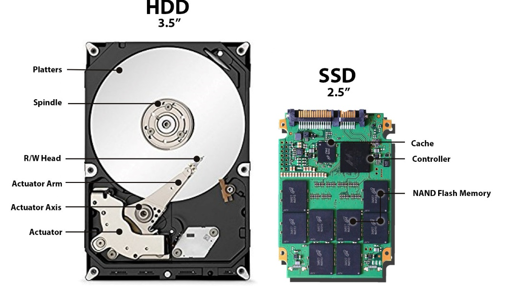
Если вы намерены стереть весь жёсткий диск (HDD) ноутбука, процесс довольно прост. Данные записываются в точное место на магнитной твёрдой пластине (отсюда и название «жёсткий диск»), и ваша ОС точно знает, где они находятся на пластине, откуда их удалить и где перезаписать для безопасного удаления с помощью простых операций (например, многократно перезаписывая это место, пока не останется следов).
С другой стороны, если вы используете SSD, процесс не так прост, поскольку накопитель использует несколько внутренних механизмов для продления срока службы и повышения производительности. В этом руководстве для нас особенно важны три из этих процессов. SSD-накопители делятся на две основные категории:
-
ATA-накопители (обычно SATA и обычно формата 2,5", как на изображении выше).
-
NVMe-накопители (обычно формата M.2, как на иллюстрации ниже).
Вот примеры наиболее распространённых форматов:
Все они продаются как внутренние и внешние накопители в корпусах.
Методы и утилиты управления/стирания различаются в зависимости от типа используемого накопителя. Поэтому важно знать, какой из них установлен в вашем ноутбуке.
В большинстве современных ноутбуков, вероятнее всего, будет один из двух средних вариантов (M.2 SATA или M.2 NVMe).
Выравнивание износаλ
Эти накопители используют технику, называемую выравниванием износа423. В общих чертах она работает так. Пространство каждого диска разделено на блоки, которые, в свою очередь, разделены на страницы — подобно тому, как главы книги состоят из страниц. Когда файл записывается на диск, ему назначается определённый набор страниц и блоков. Если бы вы хотели перезаписать файл на HDD, достаточно было бы указать диску перезаписать эти блоки. Но в SSD и USB-накопителях стирание и повторная запись одного и того же блока могут привести к его износу. Каждый блок можно стереть и перезаписать лишь ограниченное число раз, после чего он перестанет работать (так же, как при постоянном письме и стирании карандашом бумага в итоге может порваться и стать бесполезной). Чтобы противодействовать этому, SSD и USB-накопители стараются сделать так, чтобы число стираний и перезаписей каждого блока было примерно одинаковым: так накопитель прослужит максимально долго (отсюда термин «выравнивание износа»). Побочный эффект состоит в том, что иногда вместо стирания и записи в блок, где изначально хранился файл, накопитель оставляет этот блок без изменений, помечает его недействительным и записывает изменённый файл в другой блок. Это похоже на ситуацию, когда главу в книге оставляют без изменений, записывают изменённый файл на другой странице, а затем лишь обновляют оглавление, указав новое место. Всё это происходит на очень низком уровне электроники накопителя, поэтому операционная система даже не замечает этого. Однако это означает, что даже при попытке перезаписать файл нет гарантии, что накопитель действительно его перезапишет, — именно поэтому безопасное удаление на SSD намного сложнее.
Таким образом, само по себе выравнивание износа может быть недостатком для безопасности и преимуществом для противников, например специалистов по криминалистической экспертизе. Эта функция делает классическое «безопасное удаление» контрпродуктивным и бесполезным, и поэтому была удалена из некоторых операционных систем, таких как macOS (начиная с версии 10.11 El Capitan), где ранее её можно было включить для Корзины.
Большинство старых утилит безопасного удаления создавались с расчётом на HDD, не контролируют выравнивание износа и совершенно бессмысленны при использовании SSD. Не применяйте их к SSD-накопителям.
Операции Trimλ
Итак, что же делать? Здесь появляется операция Trim424. Когда вы удаляете данные с SSD, ваша ОС должна поддерживать команду операции Trim и может (должна) периодически отправлять эту команду SSD-накопителю (ежедневно, еженедельно, ежемесячно...). Команда Trim сообщает контроллеру SSD, что в блоках есть страницы с данными, которые теперь свободны и могут быть действительно удалены, при этом сама ничего не удаляя.
Trim должен быть включён по умолчанию во всех современных операционных системах, рассматриваемых в этом руководстве, которые обнаруживают SSD (macOS, Windows 10/11, Ubuntu, Qubes OS 4.1.x ...).
Если операции Trim не выполняются регулярно (или вообще не выполняются), данные никогда не удаляются упреждающе, и в какой-то момент все блоки и страницы будут заняты данными. Ваша ОС этого не увидит и будет считать пространство свободным по мере удаления файлов, но контроллер SSD — нет (это называется усилением записи425). Тогда контроллер SSD будет вынужден стирать эти страницы и блоки на лету, что снизит производительность записи. Это происходит потому, что, хотя ваша ОС/SSD может записывать данные на любую свободную страницу в любом блоке, стирание возможно только для целых блоков; следовательно, SSD придётся выполнять много операций для записи новых данных. Перезапись попросту невозможна. Это нарушит работу системы выравнивания износа и со временем приведёт к снижению производительности SSD. Каждый раз при удалении файла с SSD ваша ОС должна вместе с удалением отправлять команду Trim, сообщая контроллеру SSD, что страницы с данными файла теперь свободны для удаления.
Таким образом, Trim сам по себе не удаляет данные, а лишь помечает их для удаления. Данные, удалённые без Trim (например, если Trim был отключён, заблокирован или отложен), всё равно в какой-то момент будут удалены сборщиком мусора SSD либо при перезаписи пространства, которое ОС считает свободным. Но они могут оставаться немного дольше, чем при использовании Trim.
Вот иллюстрация из Википедии, показывающая, как это работает на SSD:
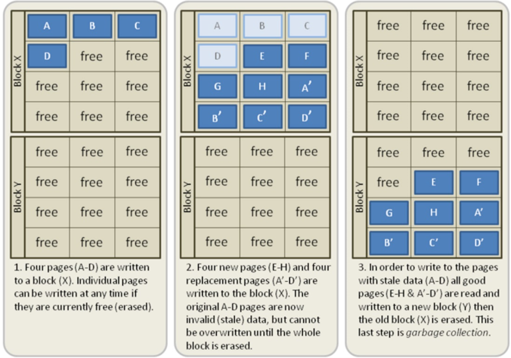
Как видно на иллюстрации выше, данные (из файла) будут записаны на первые четыре страницы блока X. Позже новые данные будут записаны на оставшиеся страницы, а данные из первых файлов будут помечены как недействительные (например, операцией Trim при удалении файла). Как объясняется на https://en.wikipedia.org/wiki/Trim_(computing) [Wikiless] [Archive.org], операция стирания может выполняться только с целыми блоками (а не с отдельными страницами).
Помимо пометки файлов для удаления (на надёжных SSD), Trim обычно делает их нечитаемыми с помощью метода «детерминированное чтение после Trim» или «детерминированные нули после Trim». Это означает, что, если противник попытается прочитать данные из обработанной Trim страницы/блока и каким-то образом отключит сборку мусора, контроллер не вернёт никаких осмысленных данных.
Trim — ваш союзник: он всегда должен быть включён при использовании SSD и должен обеспечивать достаточную разумную защиту. Именно поэтому не следует использовать правдоподобное отрицание Veracrypt на SSD с включённым Trim: эта функция несовместима с Trim426.
Сборка мусораλ
Сборка мусора427 — это внутренний процесс SSD-накопителя, который ищет данные, помеченные для стирания. Этот процесс выполняется контроллером SSD, и вы не можете им управлять. Если вернуться к иллюстрации выше, можно увидеть, что сборка мусора — последний этап: она замечает, что некоторые страницы в определённом блоке помечены для удаления, копирует действительные страницы (не помеченные для удаления) в другой свободный целевой блок, а затем может полностью стереть исходный блок.
Сборка мусора сама по себе НЕ требует Trim для работы, однако при выполнении Trim она будет значительно быстрее и эффективнее. Сборка мусора — один из процессов, которые действительно безвозвратно стирают данные с SSD.
Выводλ
Итак, факт состоит в том, что для криминалистического эксперта крайне маловероятно428'429 и трудно восстановить данные с SSD, обработанного Trim, но это всё же не полностью невозможно430'431'432, если он действует достаточно быстро и располагает обширным оборудованием, навыками и мотивацией433.
В контексте этого руководства, где также используется полное шифрование диска, удаления и Trim должно быть достаточно безопасно для любого SSD; этот метод рекомендуется как стандартный способ удаления.
Как безопасно стереть весь ноутбук/накопителиλ
Итак, вы хотите быть уверены. Чтобы добиться 100% безопасного удаления данных с SSD, потребуется использовать специальные методы для SSD (если вы используете HDD, пропустите эту часть и перейдите к выбранной ОС):
-
Простые варианты для менее опытных пользователей:
-
Если доступно, просто воспользуйтесь параметром Secure Erase в BIOS/UEFI (ATA/NVME Secure Erase или Sanitize).
- Стоит отметить, что этот способ полагается на прошивку накопителя. Некоторые производители накопителей допустили ошибки в реализации, из-за чего данные всё ещё можно восстановить.
-
Просто переустановите свежую операционную систему (удалите/быстро отформатируйте накопитель) и снова зашифруйте его. Процесс полного шифрования диска должен стереть все предыдущие данные с накопителя.
-
Купите PartedMagic434 за 11$ и используйте его для стирания любого диска.
-
-
Технические варианты для более опытных пользователей:
-
Перезаписать всё содержимое накопителя
- HDD:
- Перезапишите содержимое накопителя с помощью такого инструмента, как srm, wipe, shred и др.. В идеале следует использовать метод Гутмана, созданный для наиболее эффективного стирания данных на всех накопителях. Этот метод также работает на SSD, хотя и избыточен.
- Однократной перезаписи содержимого накопителя не всегда достаточно. Специализированные инструменты безопасного удаления выполняют несколько проходов для более эффективного стирания данных. Это особенно важно для старых накопителей. Мы рекомендуем использовать
wipeилиsrm.- При использовании
wipeпросто оставьте параметры по умолчанию (wipe /dev/sdX), так как они оптимизированы для наиболее эффективного стирания данных на HDD. - При использовании
srmобязательно вручную укажите выполнение стирания по методу Гутмана (srm -G /dev/sdX).
- При использовании
- SSD:
- Перезапишите содержимое накопителя. Такие инструменты, как wipe или shred, часто избыточны, поскольку выполняют до 35 проходов. Хотя они работают, большинству SSD требуется не более пары проходов.
- Используйте
wipeлишь с несколькими проходами:wipe -qQ2 /dev/sdX.-qQ2означает 2 прохода. Замените2желаемым числом проходов.
- Используйте
srmс трёхпроходной перезаписью:srm -P /dev/sdX. - Используйте
dd:dd if=/dev/urandom of=/dev/sdX bs=8M status=progress conv=fsync. Эта команда перезапишет накопитель случайными данными. Чтобы выполнить несколько проходов (рекомендуется не менее 2), просто повторяйте команду, пока не будете удовлетворены результатом.- Команду запускают дважды, потому что SSD имеют скрытое («избыточно выделенное») пространство, которое может содержать остатки удалённых данных. Две очистки заставляют накопитель очистить это избыточно выделенное хранилище. Это гарантированно работает, только если каждый проход записывает разные данные (поэтому при каждом проходе используются случайные данные).
bs=8Mзаписывает блоки размером 8 MiB за раз. Это не влияет на качество удаления данных, но изменение параметра может повлиять на время, необходимое для стирания накопителя.
- HDD:
-
ATA/NVMe Secure Erase: этот метод удаляет таблицу сопоставления, отслеживающую выделенные данные в блоках хранения, но не уничтожает сами данные.
-
ATA/NVMe Sanitize Crypto Scramble (также Instant Secure Erase, Crypto Erase), применимый к самошифрующимся SSD: этот метод изменяет ключ шифрования самошифрующегося SSD и делает все хранящиеся на нём данные нечитаемыми.
-
ATA/NVMe Sanitize Block Erase: этот метод действительно стирает каждый блок хранения, уничтожая данные и изменяя ключ шифрования, если он есть.
-
ATA/NVMe Sanitize Overwrite (ужасающе медленно, может быть опасно и не рекомендуется): этот метод стирает блоки, а затем перезаписывает каждый блок хранения (то же, что Block Erase, но дополнительно перезаписывает данные). Этот метод избыточен и не нужен.
-
-
Физическое уничтожение:
-
HDD:
-
Откройте накопитель (отвёрткой, обычно Torx T8)
-
Снимите пластины (отвёрткой, обычно Torx T6)
-
Потрите пластины редкоземельным магнитом
-
Сломайте/деформируйте/раздавите пластины
-
Сожгите пластины или прокалите их в духовке (не пропускайте этот шаг)
-
Разделите обломки
-
Выбросьте в разных местах
-
-
SSD:
-
В идеале сначала следует стереть накопитель другим способом, поскольку этот метод сам по себе не считается защищённым от всех противников
-
Откройте накопитель
-
Сломайте/раздавите плату и ячейки памяти
-
Сожгите их
-
Разделите обломки
-
Выбросьте в разных местах
-
-
Дополнительно: см. https://www.youtube.com/watch?v=-bpX8YvNg6Y [Invidious]
-
Для максимальной параноидальной защиты предпочтителен вариант Sanitize Block Erase, но Secure Erase, вероятно, более чем достаточно, учитывая, что ваш накопитель уже зашифрован. К сожалению, не существует бесплатных простых универсальных инструментов (загружаемых, с графическим меню), поэтому вам остаётся либо использовать предоставленные производителями накопителей инструменты, бесплатные ручные утилиты hdparm435 и nvme-cli436, либо коммерческий инструмент вроде PartedMagic.
Поэтому в этом руководстве рекомендуется использовать бесплатные утилиты hdparm и nvme-cli с Live System Rescue.
Если можете себе это позволить, просто купите Parted Magic за 11$: он предоставляет простой в использовании графический инструмент для стирания SSD с выбранным вами методом437'438.
Примечание: Прежде чем продолжить, ещё раз проверьте BIOS: некоторые предлагают встроенный инструмент для безопасного стирания накопителя (ATA/NVMe Secure Erase или ATA/NVMe Sanitize). Если он доступен, используйте его — следующие шаги не понадобятся. Проверьте это заранее, чтобы избежать лишних хлопот; см. параметры BIOS/UEFI для стирания дисков разных брендов).
Linux (все версии, включая Qubes OS)λ
Системный/внутренний SSDλ
-
Вариант A: проверьте, есть ли в BIOS/UEFI встроенная опция; если есть, используйте правильный вариант («ATA/NVMe Secure Erase» или «ATA/NVMe Sanitize»). Не используйте wipe с проходами на SSD.
-
Вариант B: см. Использование System Rescue для безопасного стирания SSD
-
Вариант C: сотрите диск и переустановите Linux с новым полным шифрованием диска, чтобы перезаписать все секторы новыми зашифрованными данными. Этот метод будет ужасающе медленным по сравнению с вариантами A и B, так как медленно перезапишет весь SSD. Также учтите, что при использовании LUKS это может не быть поведением по умолчанию. Возможно, потребуется включить опцию шифрования пустого пространства, чтобы эффективно стереть накопитель.
Помните: все эти варианты нужно применять ко всему физическому накопителю, а не к конкретному разделу/тому. Иначе механизмы выравнивания износа могут помешать правильной работе.
Внешний SSDλ
Сначала ознакомьтесь с разделом Особенности использования внешних SSD
В большинстве случаев Trim должно быть достаточно; можно просто использовать команду blkdiscard, чтобы принудительно выполнить Trim всего устройства, как объясняется здесь: https://wiki.archlinux.org/index.php/Solid_state_drive#Trim_an_entire_device [Archive.org]
Если USB-контроллер и USB SSD поддерживают Trim и ATA/NVMe secure erase, их можно осторожно стереть с помощью hdparm тем же методом, что и системный диск выше; очевидно, Linux на них устанавливать не потребуется. Однако помните, что это не рекомендуется (см. замечания выше).
Если устройство не поддерживает Trim и/или ATA secure erase, можно (небезопасно) обычным образом стереть накопитель (без проходов, как HDD), а затем полностью повторно зашифровать его выбранной утилитой (например, LUKS или Veracrypt). Полное расшифрование и повторное шифрование диска перезапишет весь SSD и должно обеспечить безопасное стирание.
В качестве альтернативы можно также (небезопасно) обычным образом стереть диск, а затем полностью заполнить его псевдослучайными данными, что также должно обеспечить безопасное удаление (это можно сделать с BleachBit https://www.bleachbit.org/download/linux [Archive.org] или из командной строки с помощью secure-delete по этому руководству https://superuser.com/questions/19326/how-to-wipe-free-disk-space-in-linux [Archive.org]).
Помните: все эти варианты нужно применять ко всему физическому накопителю, а не к конкретному разделу/тому. Иначе механизмы выравнивания износа могут помешать правильной работе.
Внутренний/системный HDDλ
-
Вариант A: проверьте, есть ли в BIOS/UEFI встроенная опция; если есть, используйте правильный вариант (Wipe + Passes в случае HDD).
-
Вариант B: см. Использование ShredOS для безопасного стирания HDD
-
Вариант C: сотрите диск и переустановите Linux с новым полным шифрованием диска, чтобы перезаписать все секторы новыми зашифрованными данными. Этот метод будет ужасающе медленным по сравнению с вариантами A и B, так как медленно перезапишет весь HDD.
Внешний/вторичный HDD и USB-флеш-накопителиλ
-
Вариант A: следуйте одному из этих руководств:
Для этого рекомендуется использовать dd или shred.
-
Вариант B: установите и используйте BleachBit https://www.bleachbit.org/download/linux [Archive.org] либо следуйте этому руководству EFF https://ssd.eff.org/en/module/how-delete-your-data-securely-linux [Archive.org]
-
Вариант C: см. Использование ShredOS для безопасного стирания HDD
Windowsλ
К сожалению, стереть хостовую ОС встроенными средствами Microsoft из настроек не получится. Это связано с тем, что ваш загрузчик был изменён Veracrypt, и операция завершится неудачей. Кроме того, этот метод не будет эффективен для SSD.
Системный/внутренний SSDλ
-
Вариант A: проверьте, есть ли в BIOS/UEFI встроенная опция; если есть, используйте правильный вариант («ATA/NVMe Secure Erase» или «ATA/NVMe Sanitize»). Не используйте wipe с проходами на SSD.
-
Вариант B: ознакомьтесь с инструментами производителей для стирания HDD и SSD.
-
Вариант C: см. Использование System Rescue для безопасного стирания SSD
-
Вариант D: сотрите диск и переустановите Windows перед применением нового полного шифрования диска (с Veracrypt или Bitlocker), чтобы перезаписать все секторы новыми зашифрованными данными. Этот метод будет медленнее вариантов A и B, поскольку перезапишет весь SSD.
Помните: все эти варианты нужно применять ко всему физическому накопителю, а не к конкретному разделу/тому. Иначе механизмы выравнивания износа могут помешать правильной работе.
Внешний SSDλ
Сначала ознакомьтесь с разделом Особенности использования внешних SSD
Если возможно, используйте инструменты производителя. Они должны поддерживать безопасное secure erase или sanitize через USB и доступны для большинства брендов: см. инструменты производителей для стирания HDD и SSD.
Если вы не уверены, поддерживает ли ваш USB-диск Trim, (небезопасно) сотрите его обычным способом (подойдёт простое быстрое форматирование), а затем снова зашифруйте диск с помощью Veracrypt или Bitlocker. Полное расшифрование и повторное шифрование диска перезапишет весь SSD и должно обеспечить безопасное стирание.
В качестве альтернативы можно также (небезопасно) обычным образом стереть диск, а затем полностью заполнить его псевдослучайными данными, что также должно обеспечить безопасное удаление (это можно сделать с помощью опций очистки свободного места BleachBit или PrivaZer). См. [Дополнительные инструменты очистки].
Помните: все эти варианты нужно применять ко всему физическому накопителю, а не к конкретному разделу/тому. Иначе механизмы выравнивания износа могут помешать правильной работе.
Внутренний/системный HDDλ
-
Вариант A: проверьте, есть ли в BIOS/UEFI встроенная опция; если есть, используйте правильный вариант (Wipe + Passes).
-
Вариант B: ознакомьтесь с инструментами производителей для стирания HDD и SSD
-
Вариант C: см. Использование ShredOS для безопасного стирания HDD
Внешний/вторичный HDD и USB-флеш-накопителиλ
-
Вариант A: ознакомьтесь с инструментами производителей для стирания HDD и SSD
-
Вариант B: используйте внешние инструменты, такие как:
-
Eraser (с открытым исходным кодом): https://eraser.heidi.ie/download/ [Archive.org]
-
KillDisk Free: http://killdisk.com/killdisk-freeware.htm [Archive.org]
-
-
Вариант C: см. Использование ShredOS для безопасного стирания HDD
macOSλ
Системный/внутренний SSDλ
К сожалению, утилита диска в режиме восстановления macOS не сможет выполнить безопасное стирание SSD, как указано в документации Apple https://support.apple.com/en-gb/guide/disk-utility/dskutl14079/mac [Archive.org].
В большинстве случаев, если диск был зашифрован Filevault и вы просто выполните обычное стирание, по их мнению этого должно быть «достаточно». Я с этим не согласен, поэтому у вас нет иного выбора, кроме как снова переустановить macOS и после переустановки вновь зашифровать её Filevault. Это должно выполнить «криптографическое стирание», перезаписав предыдущую установку и шифрование. К сожалению, этот метод будет довольно медленным.
Если нужно выполнить более быстрое безопасное стирание (или нет времени на переустановку и повторное шифрование), можно попробовать метод, описанный в Использование System Rescue для безопасного стирания SSD (это не сработает на Mac с M1). Однако будьте осторожны: это также сотрёт раздел восстановления, необходимый для переустановки macOS.
Внешний SSDλ
Сначала ознакомьтесь с разделом Особенности использования внешних SSD
Если USB-контроллер и USB SSD поддерживают Trim и ATA secure erase, а macOS включила Trim на диске, можно просто обычным образом стереть весь диск, и на современных дисках данные не должны быть восстановимы.
Если вы не уверены в поддержке Trim или хотите большей уверенности, можно (небезопасно) стереть накопитель с помощью Дисковой утилиты macOS, а затем полностью повторно зашифровать его, следуя этим двум руководствам Apple:
-
https://support.apple.com/guide/disk-utility/erase-and-reformat-a-storage-device-dskutl14079/mac [Archive.org]
-
https://support.apple.com/guide/disk-utility/encrypt-protect-a-storage-device-password-dskutl35612/mac [Archive.org] или с помощью полного шифрования диска Veracrypt.
Полное повторное шифрование диска перезапишет весь SSD и должно обеспечить безопасное стирание.
Помните: все эти варианты нужно применять ко всему физическому накопителю, а не к конкретному разделу/тому. Иначе механизмы выравнивания износа могут помешать правильной работе.
Внешний HDD и USB-флеш-накопителиλ
Следуйте этому руководству: https://support.apple.com/guide/disk-utility/erase-and-reformat-a-storage-device-dskutl14079/mac [Archive.org] и используйте опцию безопасного стирания Дисковой утилиты, которая должна нормально работать с HDD и USB-флеш-накопителями.
Как безопасно удалить отдельные файлы/папки/данные с HDD/SSD и USB-флеш-накопителейλ
К этому разделу применимы те же принципы из предыдущих глав. Возникают и те же проблемы.
На HDD можно безопасно удалить файлы, просто удалив их, а затем выполнив один или несколько «проходов» для перезаписи рассматриваемых данных. Это можно сделать многими утилитами во всех ОС.
Однако с SSD всё снова становится несколько сложнее, поскольку из-за выравнивания износа, зависимости от операции Trim и сборки мусора накопителя вы никогда не уверены, что что-либо действительно удалено. Противник, располагающий ключом расшифрования вашего SSD (будь то LUKS, Filevault 2, Veracrypt или Bitlocker), может разблокировать накопитель и попытаться восстановить данные с помощью классических утилит восстановления439; это может сработать, если данные не были корректно обработаны Trim. Но это, опять же, крайне маловероятно.
Поскольку на большинстве современных жёстких дисков операция Trim выполняется не непрерывно, а по расписанию, достаточно просто принудительно запустить Trim. Но опять же, единственный способ на 100% убедиться, что файл безопасно удалён с разблокированного зашифрованного SSD, — после удаления нужных файлов снова перезаписать всё свободное пространство либо расшифровать и повторно зашифровать накопитель. Однако это избыточно и не нужно. Простого Trim для всего диска должно быть достаточно.
Помните: независимо от метода удаления, использованного для любого файла на любом носителе (HDD, SSD, USB-флеш-накопитель), в системе, вероятно, останутся другие следы (журналы, индексация, shellbags ...), и их тоже потребуется очистить. Также помните, что ваши накопители должны быть полностью зашифрованы, поэтому это, скорее всего, дополнительная мера. Подробнее об этом — далее, в разделе Некоторые дополнительные меры против криминалистической экспертизы.
Windowsλ
Помните: если вопреки всем рекомендациям вы используете правдоподобное отрицание на SSD, Trim нельзя использовать вообще.
Системный/внутренний SSDλ
На этом этапе просто удалите файл без возможности восстановления (очистите Корзину), а остальное сделают Trim/сборка мусора. Этого должно быть достаточно.
Если не хотите ждать периодического Trim (по умолчанию в Windows 10/11 он настроен еженедельно), можно принудительно выполнить Trim для всего диска с помощью встроенного средства Windows «Оптимизация» (см. Инструменты очистки Windows).
Если данные были удалены какой-либо утилитой (например, Virtualbox при откате снимка), можно также выполнить Trim для всего диска тем же средством «Оптимизация», чтобы очистить всё оставшееся.
Просто откройте Проводник Windows, щёлкните правой кнопкой мыши по системному диску и выберите «Свойства». Выберите «Сервис». Нажмите «Оптимизировать», а затем ещё раз «Оптимизировать», чтобы принудительно выполнить Trim. Готово. На мой взгляд, этого, вероятно, достаточно.
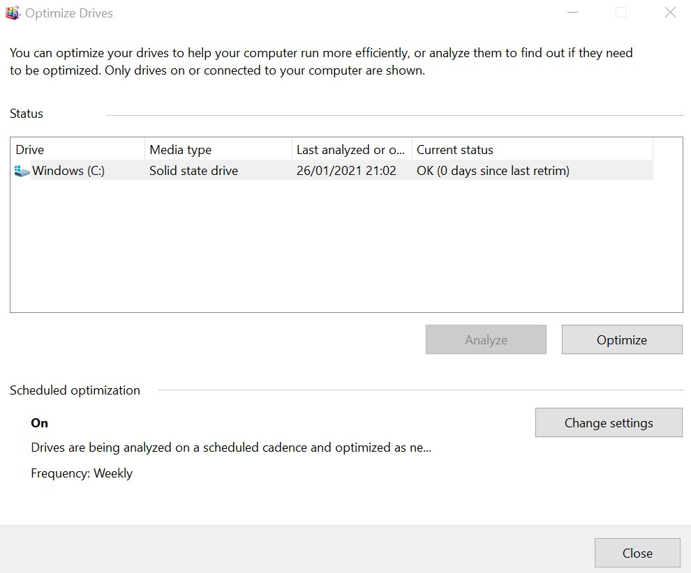
Если вы хотите большей безопасности и не доверяете операции Trim, остаётся только:
-
Расшифровать и повторно зашифровать (с помощью Veracrypt или Bitlocker) весь накопитель, чтобы перезаписать всё свободное пространство после удаления данных. Это обеспечит перезапись всего свободного пространства.
-
Выполнить Trim, а затем заполнить всё свободное пространство диска утилитой вроде BleachBit или PrivaZer.
Помните: все эти варианты нужно применять ко всему физическому накопителю, а не к конкретному разделу/тому. Иначе механизмы выравнивания износа могут помешать правильной работе.
Внутренний/внешний HDD или USB-флеш-накопительλ
Обратитесь к разделу Инструменты очистки Windows и выберите утилиту, прежде чем продолжить.
Процесс довольно прост и зависит от выбранного в Приложении инструмента:
-
Щёлкните правой кнопкой мыши по файлу/папке:
-
PrivaZer: Delete without a trace
-
BleachBit: Shred with BleachBit (или см. это руководство EFF https://ssd.eff.org/en/module/how-delete-your-data-securely-windows [Archive.org])
-
Для USB-флеш-накопителей после удаления файлов рассмотрите очистку свободного пространства одной из указанных выше утилит либо полное стирание с помощью Eraser / KillDisk, как указано ранее.
Внешний SSDλ
Сначала ознакомьтесь с разделом Особенности использования внешних SSD
Если Trim поддерживается и включён Windows для внешнего SSD, проблем с безопасным обычным удалением данных быть не должно. Дополнительно можно принудительно выполнить Trim с помощью встроенного средства Windows «Оптимизация» (см. Инструменты очистки Windows):
Просто откройте Проводник Windows, щёлкните правой кнопкой мыши по системному диску и выберите «Свойства». Выберите «Сервис». Нажмите «Оптимизировать», а затем ещё раз «Оптимизировать», чтобы принудительно выполнить Trim. Готово. На мой взгляд, этого, вероятно, достаточно.
Если Trim не поддерживается или вы не уверены, возможно, потребуется обеспечить безопасное удаление данных следующим образом:
-
Заполнять всё свободное пространство после каждого удаления (например, с помощью BleachBit или PrivaZer).
-
Расшифровывать и повторно зашифровывать диск другим ключом после каждого удаления (с помощью Veracrypt или Bitlocker).
Помните: все эти варианты нужно применять ко всему физическому накопителю, а не к конкретному разделу/тому. Иначе механизмы выравнивания износа могут помешать правильной работе.
Linux (не Qubes OS)λ
Системный/внутренний SSDλ
Просто окончательно удалите файл (и очистите Корзину), и из-за операций Trim и сборки мусора восстановить его не должно быть возможно.
Если не хотите ждать периодического Trim (в Ubuntu по умолчанию настроенного еженедельно), можно принудительно выполнить Trim для всего диска, запустив fstrim --all в терминале. Это немедленно выполнит Trim и должно обеспечить достаточную безопасность. Эта утилита входит в пакет util-linux в Debian/Ubuntu и должна быть установлена по умолчанию в Fedora.
Если вы хотите большей безопасности и не доверяете операции Trim, остаётся только:
-
Расшифровать и повторно зашифровать (например, с помощью LUKS, следуя этому руководству https://wiki.archlinux.org/index.php/dm-crypt/Device_encryption#Re-encrypting_devices [Archive.org]) весь накопитель, чтобы перезаписать всё свободное пространство после удаления данных. Это обеспечит перезапись всего свободного пространства.
-
Выполнить Trim с помощью
fstrim --all, а затем заполнить всё свободное пространство диска утилитой вроде:-
BleachBit https://www.bleachbit.org/download/linux [Archive.org]
-
Установить пакет secure-delete и использовать sfill в корне накопителя:
- Например,
sudo sfill -l -l /должно помочь (это займёт значительное время)
- Например,
-
Использовать старый метод с dd (взят из этого ответа https://superuser.com/questions/19326/how-to-wipe-free-disk-space-in-linux [Archive.org]) — выполните эти команды на накопителе, который хотите заполнить:
-
dd if=/dev/zero of=zero.small.file bs=1024 count=102400 -
dd if=/dev/zero of=zero.file bs=1024 -
sync ; sleep 60 ; sync -
rm zero.small.file -
rm zero.file
-
-
Помните: все эти варианты нужно применять ко всему физическому накопителю, а не к конкретному разделу/тому. Иначе механизмы выравнивания износа могут помешать правильной работе.
Внутренний/внешний HDD или USB-флеш-накопительλ
-
Это можно сделать графически с помощью BleachBit, следуя этому руководству EFF: https://ssd.eff.org/en/module/how-delete-your-data-securely-linux [Archive.org]
-
Или из командной строки, следуя этому руководству: https://linuxhint.com/completely_wipe_hard_drive_ubuntu/ [Archive.org] (для этой цели рекомендуются wipe и shred).
Внешний SSDλ
Сначала ознакомьтесь с разделом Особенности использования внешних SSD
Если Trim поддерживается и включён вашим дистрибутивом Linux для внешнего SSD, проблем с безопасным обычным удалением данных быть не должно; просто выполните fstrim --all в терминале, чтобы обработать накопитель Trim. Эта утилита входит в пакет "util-linux" в Debian/Ubuntu и должна быть установлена по умолчанию в Fedora.
Если Trim не поддерживается или вы хотите быть уверены, возможно, потребуется обеспечить безопасное удаление данных, заполнив всё свободное пространство диска утилитой вроде:
-
Расшифровать и повторно зашифровать (используя LUKS по этому руководству https://wiki.archlinux.org/index.php/dm-crypt/Device_encryption#Re-encrypting_devices [Archive.org] или, например, Veracrypt из графического интерфейса) весь накопитель, чтобы перезаписать всё свободное пространство после удаления данных. Это обеспечит перезапись всего свободного пространства.
-
Заполнить свободное пространство одним из следующих способов:
-
BleachBit https://www.bleachbit.org/download/linux [Archive.org]
-
Установить пакет secure-delete и использовать sfill в корне накопителя:
- Например,
sudo sfill -l -l /должно помочь (это займёт значительное время)
- Например,
-
Использовать старый метод с dd (взят из этого ответа https://superuser.com/questions/19326/how-to-wipe-free-disk-space-in-linux [Archive.org]) — выполните эти команды:
-
dd if=/dev/zero of=zero.small.file bs=1024 count=102400 -
dd if=/dev/zero of=zero.file bs=1024 -
sync ; sleep 60 ; sync -
rm zero.small.file -
rm zero.file
-
-
Помните: все эти варианты нужно применять ко всему физическому накопителю, а не к конкретному разделу/тому. Иначе механизмы выравнивания износа могут помешать правильной работе.
Linux (Qubes OS)λ
Системный/внутренний SSDλ
Как и в других дистрибутивах Linux, на большинстве SSD обычного удаления и Trim должно быть достаточно. Поэтому просто окончательно удалите файл (и очистите любую Корзину), и из-за периодических операций Trim и сборки мусора восстановить его не должно быть возможно.
Следуйте этой документации для выполнения Trim в Qubes OS: https://github.com/Qubes-Community/Contents/blob/master/docs/configuration/disk-trim.md [Archive.org]
Как и в других системах Linux, если вы хотите большей безопасности и не доверяете операции Trim, остаётся только:
-
Расшифровать и повторно зашифровать весь накопитель, чтобы перезаписать всё свободное пространство после удаления данных. Это обеспечит перезапись всего свободного пространства. Мы не нашли надёжного руководства о том, как безопасно сделать это в Qubes OS, но, возможно, подойдёт это руководство: https://wiki.archlinux.org/index.php/dm-crypt/Device_encryption#Re-encrypting_devices [Archive.org] (на свой страх и риск: это ещё не тестировалось).
-
Обратиться к этой документации (https://github.com/Qubes-Community/Contents/blob/master/docs/configuration/disk-trim.md [Archive.org]), затем выполнить Trim с помощью "fstrim --all", а потом заполнить всё свободное пространство диска утилитой вроде:
-
BleachBit https://www.bleachbit.org/download/linux [Archive.org]
-
Установить пакет secure-delete и использовать sfill в корне накопителя:
- Например,
sudo sfill -l -l /должно помочь (это займёт значительное время)
- Например,
-
Использовать старый метод с dd (взят из этого ответа https://superuser.com/questions/19326/how-to-wipe-free-disk-space-in-linux [Archive.org]) — выполните эти команды на накопителе, который хотите заполнить:
-
dd if=/dev/zero of=zero.small.file bs=1024 count=102400 -
dd if=/dev/zero of=zero.file bs=1024 -
sync ; sleep 60 ; sync -
rm zero.small.file -
rm zero.file
-
-
Помните: все эти варианты нужно применять ко всему физическому накопителю, а не к конкретному разделу/тому. Иначе механизмы выравнивания износа могут помешать правильной работе.
Внутренний/внешний HDD или USB-флеш-накопительλ
Используйте тот же метод, что и для Linux, из Qube, подключённого к конкретному USB-устройству
-
Это можно сделать графически с помощью BleachBit, следуя этому руководству EFF: https://ssd.eff.org/en/module/how-delete-your-data-securely-linux [Archive.org]
-
Или из командной строки, следуя этому руководству: https://linuxhint.com/completely_wipe_hard_drive_ubuntu/ [Archive.org] (для этой цели рекомендуются wipe и shred).
Внешний SSDλ
Сначала ознакомьтесь с разделом Особенности использования внешних SSD
Если Trim поддерживается и включён вашим дистрибутивом Linux для внешнего SSD, проблем с безопасным обычным удалением данных быть не должно; просто выполните "fstrim --all" в терминале, чтобы обработать накопитель Trim. Обратитесь к этой документации (https://github.com/Qubes-Community/Contents/blob/master/docs/configuration/disk-trim.md [Archive.org]), чтобы включить Trim на накопителе.
Если Trim не поддерживается или вы хотите быть уверены, возможно, потребуется обеспечить безопасное удаление данных, заполнив всё свободное пространство диска утилитой из Qube, подключённого к рассматриваемому USB-устройству:
-
Расшифровать и повторно зашифровать (используя LUKS по этому руководству https://wiki.archlinux.org/index.php/dm-crypt/Device_encryption#Re-encrypting_devices [Archive.org] или, например, Veracrypt из графического интерфейса) весь накопитель, чтобы перезаписать всё свободное пространство после удаления данных. Это обеспечит перезапись всего свободного пространства.
-
Заполнить свободное пространство одним из следующих способов:
-
BleachBit https://www.bleachbit.org/download/linux [Archive.org]
-
Установить пакет secure-delete и использовать sfill в корне накопителя:
- Например,
sudo sfill -l -l /должно помочь (это займёт значительное время)
- Например,
-
Использовать старый метод с dd (взят из этого ответа https://superuser.com/questions/19326/how-to-wipe-free-disk-space-in-linux [Archive.org]) — выполните эти команды:
-
dd if=/dev/zero of=zero.small.file bs=1024 count=102400 -
dd if=/dev/zero of=zero.file bs=1024
-
-
Повторите эти действия для любого другого раздела, если на том же SSD есть отдельные разделы, прежде чем удалять файлы.
-
sync ; sleep 60 ; sync -
rm zero.small.file -
rm zero.file
Повторите эти действия для любого другого раздела, если на том же SSD есть отдельные разделы.
Помните: все эти варианты нужно применять ко всему физическому накопителю, а не к конкретному разделу/тому. Иначе механизмы выравнивания износа могут помешать правильной работе.
macOSλ
Системный/внутренний SSDλ
Просто окончательно удалите файл (и очистите Корзину), и из-за операций Trim и сборки мусора восстановить его не должно быть возможно.
- Если ваша файловая система — APFS, беспокоиться о Trim не нужно: согласно документации, он выполняется асинхронно по мере записи данных ОС440.
"Поддерживает ли Apple File System операции TRIM?
Да. Операции TRIM выполняются асинхронно после удаления файлов или высвобождения свободного пространства, что гарантирует выполнение этих операций только после сохранения изменений метаданных в стабильном хранилище".
- Если ваша файловая система — HFS+, можно запустить «Первую помощь» для системного диска из Дисковой утилиты; в подробностях это должно выполнить операцию Trim (https://support.apple.com/en-us/HT210898 [Archive.org])
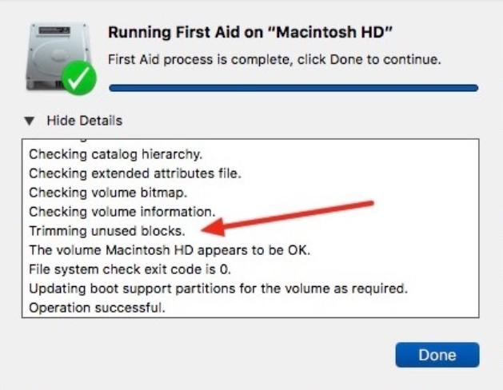
Системный/внутренний, внешний HDD или USB-флеш-накопительλ
К сожалению, Apple удалила параметры безопасного стирания из Корзины даже для HDD441. Поэтому остаётся использовать другие инструменты:
-
Permanent Eraser http://www.edenwaith.com/products/permanent%20eraser/ [Archive.org]
-
В терминале можно использовать команду "rm --P filename", которая должна стереть файл и перезаписать его, как объясняется в этом руководстве EFF https://ssd.eff.org/en/module/how-delete-your-data-securely-macos [Archive.org].
Для USB-флеш-накопителей рассмотрите полное стирание с помощью Дисковой утилиты, как указано ранее.
Внешний SSDλ
Сначала ознакомьтесь с разделом Особенности использования внешних SSD
Если Trim поддерживается и включён macOS для внешнего SSD, проблем с безопасным удалением данных быть не должно.
Если Trim не поддерживается, возможно, потребуется обеспечить безопасное удаление данных следующим образом:
-
Заполнить всё свободное пространство после любого удаления, используя описанный выше метод Linux (dd).
-
Расшифровывать и повторно зашифровывать диск другим ключом после каждого удаления (с помощью Дисковой утилиты или Veracrypt).
Дополнительные меры против криминалистического анализаλ
Учтите, что здесь возникнет та же проблема с SSD, о которой говорилось в предыдущем разделе. Невозможно быть на 100% уверенным, что данные на SSD удалены по вашей команде, если только не стереть весь накопитель описанными выше специальными методами.
Нам не известен ни один на 100% надёжный способ выборочно и безопасно удалять отдельные файлы с SSD без перезаписи ВСЕГО свободного пространства (что может сократить срок службы SSD) после удаления этих файлов с помощью Trim. Иначе вам придётся довериться операции SSD Trim, которой, на мой взгляд, достаточно. Разумно предположить, и это опять же крайне вероятно, что криминалистический анализ не сможет восстановить ваши файлы после удаления с Trim.
Кроме того, большинство описанных здесь мер не должно быть нужно, поскольку весь накопитель должен быть зашифрован и, следовательно, ваши данные в любом случае не должны быть доступны для криминалистического анализа через исследование SSD/HDD. Поэтому это лишь «дополнительные меры» против слабых/неквалифицированных противников.
Если вы используете Whonix, также ознакомьтесь с этой документацией https://www.whonix.org/wiki/Anti-Forensics_Precautions [Archive.org], а также с их общим руководством по усилению защиты для всех платформ: https://www.whonix.org/wiki/System_Hardening_Checklist [Archive.org]
Аудит метаданныхλ
Преобразование формата не гарантирует удаления метаданных. Преобразование DOCX в PDF с помощью Word встраивает метаданные документа Word в PDF. Печать в PDF несколько чище, но всё ещё сохраняет сведения о программе-создателе. Безопасный путь — использовать специализированный инструмент.
| Тип файла | Инструмент | Что проверить и удалить |
|---|---|---|
| JPEG / TIFF / HEIC | exiftool -all= file.jpg |
EXIF, XMP, IPTC — все контейнеры |
| PNG | exiftool -all= file.png |
блоки tEXt/iTXt, XMP |
| DOCX / XLSX / PPTX | MAT2 или инспектор документов Word | Автор, история изменений, отслеживаемые изменения, путь к шаблону, комментарии |
exiftool -all= file.pdf или MAT2 |
пакет XMP, строка producer, автор, ключевые слова | |
| Любой недоверенный файл | Dangerzone443 | Преобразование в безопасный PDF через изолированный контейнер с удалением всех метаданных |
| Видео (MP4 / MOV) | exiftool -all= file.mp4 |
GPS, сведения об устройстве, время создания, версия кодировщика |
Самый безопасный процесс для передачи конфиденциальных документов: откройте оригинал в Dangerzone: он отрисует его в изолированном контейнере и экспортирует чистый PDF без метаданных. Для изображений выполните exiftool -all= -overwrite_original filename и перед передачей убедитесь с помощью exiftool filename, что результат чист.
Изображения и видеоλ
EXIF220 — это стандарт метаданных, используемый цифровыми камерами и смартфонами. Типичная фотография со смартфона содержит: GPS-координаты в момент съёмки (широту, долготу, высоту, а иногда и направление); производителя, модель и серийный номер камеры; фокусное расстояние объектива; временную метку, включая смещение часового пояса; и версию ПО, использованного для обработки изображения.
Одних лишь GPS-данных часто достаточно, чтобы определить конкретную комнату в конкретном здании. В нескольких громких случаях источники были установлены благодаря EXIF-геолокации в изображениях, отправленных журналистам или опубликованных в интернете.
Почему удаления EXIF не всегда достаточно: EXIF — это один контейнер метаданных. Файлы JPEG и TIFF также поддерживают XMP (Extensible Metadata Platform)530 — разработанный Adobe формат метаданных, встроенный в файл как XML-пакет. Инструменты, удаляющие EXIF, не обязательно удаляют XMP. XMP может содержать те же сведения о геолокации, авторстве и устройстве — иногда даже больше. ExifTool читает и записывает оба формата; многие более простые «средства удаления EXIF» вообще не затрагивают XMP. Кроме того, некоторые производители камер встраивают в XMP проприетарные метаданные в собственном пространстве имён, которые сохраняются даже после удаления стандартного EXIF.
Есть и ещё одна тонкость: некоторые платформы (особенно старые версии Twitter и Facebook) удаляют EXIF на сервере перед выдачей изображений, но сохраняют оригинал. Не полагайтесь на удаление данных платформой как на средство защиты конфиденциальности.
В Windows, macOS и Linux мы рекомендуем ExifTool (https://exiftool.org/ [Archive.org]) и/или ExifCleaner (https://exifcleaner.com/ [Archive.org]), которые позволяют просматривать и/или удалять эти свойства.
ExifTool изначально доступен в Tails и Whonix Workstation.
Метаданные PDFλ
PDF имеют собственный слой метаданных. Пакет XMP в PDF может содержать автора, приложение-создатель (включая номер версии), producer (ПО, сгенерировавшее PDF, например «Microsoft Word 16.0.1» или определённая версия LibreOffice), временные метки создания и изменения, а также название документа. Строка producer особенно полезна исследователям, поскольку конкретные версии ПО связаны с определёнными временными интервалами и установками.
Менее очевидно, что встраивание шрифтов в PDF может связать документ с конкретной установкой. Подмножества шрифтов — конкретные контуры символов, встроенные в PDF, — немного различаются в зависимости от установленных шрифтов, используемого средства отрисовки и версии ПО, создавшего файл. Сравнение встроенных данных шрифтов в нескольких документах может связать их с одним автором, даже когда других идентифицирующих метаданных нет.531
PDFParanoia (Linux/Windows/macOS/QubesOS)λ
Рассмотрите возможность использования https://github.com/kanzure/pdfparanoia [Archive.org], который удалит метаданные и водяные знаки из любого PDF.
ExifCleaner (Linux/Windows/macOS/QubesOS)λ
Просто установите его с https://exifcleaner.com/ [Archive.org], запустите и перетащите файлы в графический интерфейс.
ExifTool (Linux/Windows/macOS/QubesOS)λ
Это действительно просто: установите exiftool и выполните:
-
Чтобы отобразить метаданные:
exiftool filename.pdf -
Чтобы удалить все метаданные:
exiftool -All= filename.pdf
ExifCleanerλ
Просто установите его с https://exifcleaner.com/ [Archive.org], запустите и перетащите файлы в графический интерфейс.
ExifToolλ
Это действительно просто: установите exiftool и выполните:
-
Чтобы отобразить метаданные:
exiftool filename.jpg -
Чтобы удалить все метаданные:
exiftool -All= filename.jpg
Помните, что ExifTool изначально доступен в Tails и Whonix Workstation.
Встроенный инструмент Windowsλ
Вот руководство по удалению метаданных из изображения средствами ОС: https://www.purevpn.com/internet-privacy/how-to-remove-metadata-from-photos [Archive.org]
Маскировка/обфускация для предотвращения распознавания изображенийλ
Рассмотрите использование Fawkes https://sandlab.cs.uchicago.edu/fawkes/ [Archive.org] (https://github.com/Shawn-Shan/fawkes [Archive.org]) для маскировки изображений от технологий распознавания на различных платформах.
Или, если вам нужны онлайн-версии, рассмотрите:
DOCX и документы Officeλ
Документы Microsoft Office — это ZIP-архивы с XML-файлами, а те содержат обширные метаданные. В том числе: имя автора и инициалы (из профиля Office на момент создания); имя последнего редактора; временные метки создания и изменения; число редакций; общее время редактирования; название компании из установки Office; путь к шаблону документа, использованному при создании (который может включать имя пользователя или сетевой путь); и, что критически важно, историю редакций и отслеживаемые изменения — удаления и правки, которые автор считал удалёнными, могут храниться в документе и быть восстановлены любым, кто откроет его в достаточно функциональном просмотрщике.
В нескольких случаях утечек документов журналистам автор был установлен, поскольку его имя или сетевое имя пользователя были встроены в XML. Метаданные John Doe помогали установить личности реальных людей. Решение — перед передачей использовать в Word Файл → Проверить документ (он покажет скрытые данные и предложит их удалить) либо использовать MAT2443 для полного удаления метаданных. Преобразование в PDF не гарантирует удаления этой информации — см. ниже.
В качестве альтернативы в Windows, macOS, Qubes OS и Linux мы рекомендуем ExifTool (https://exiftool.org/ [Archive.org]) и/или ExifCleaner (https://exifcleaner.com/ [Archive.org]), которые позволяют просматривать и/или удалять эти свойства
ExifCleanerλ
Просто установите его с https://exifcleaner.com/ [Archive.org], запустите и перетащите файлы в графический интерфейс.
ExifToolλ
Это действительно просто: установите exiftool и выполните:
-
Чтобы отобразить метаданные:
exiftool filename.docx -
Чтобы удалить все метаданные:
exiftool -All= filename.docx
Документы LibreOfficeλ
-
выберите «Файл» в верхнем меню
-
Выберите «Свойства»
-
Снимите флажок «Применять пользовательские данные»
-
Снимите флажок «Сохранять изображение предварительного просмотра с документом»
-
Нажмите «Сбросить свойства»
-
Убедитесь, что на вкладках «Описание» и «Пользовательские свойства» ничего нет
-
-
Выберите «Сервис» в верхнем меню
-
Выберите «Параметры»
-
Выберите «Безопасность»
-
Нажмите «Параметры безопасности и предупреждения»
-
Отметьте:
-
«При печати»
-
«При сохранении или отправке»
-
«При создании PDF-файлов»
-
«Удалять персональные данные при сохранении»
-
-
Кроме того, в Windows, macOS, Qubes OS и Linux мы рекомендуем ExifTool (https://exiftool.org/ [Archive.org]) и/или ExifCleaner (https://exifcleaner.com/ [Archive.org]), которые позволяют просматривать и/или удалять дополнительные свойства
ExifCleanerλ
Просто установите его с https://exifcleaner.com/ [Archive.org], запустите и перетащите файлы в графический интерфейс.
ExifToolλ
Это действительно просто: просто установите exiftool и выполните:
-
Чтобы отобразить метаданные:
exiftool filename.odt -
Чтобы удалить все метаданные:
exiftool -All= filename.odt
Универсальный инструментλ
Ещё один хороший инструмент для удаления метаданных из различных документов — рекомендуемый privacyguides.org442 открытый mat2 (https://0xacab.org/jvoisin/mat2 [Archive.org]), которым довольно легко пользоваться в Linux. Мне так и не удалось заставить его правильно работать в Windows из-за различных проблем с зависимостями, несмотря на предоставленные инструкции. Однако в Linux его очень просто установить и использовать.
Поэтому мы предлагаем создать небольшую ВМ Debian в Virtualbox (за вашим Whonix Gateway), которую затем можно использовать из других ВМ для анализа различных файлов через удобный веб-интерфейс. См. Создание гостевой ВМ mat2-web для удаления метаданных из файлов
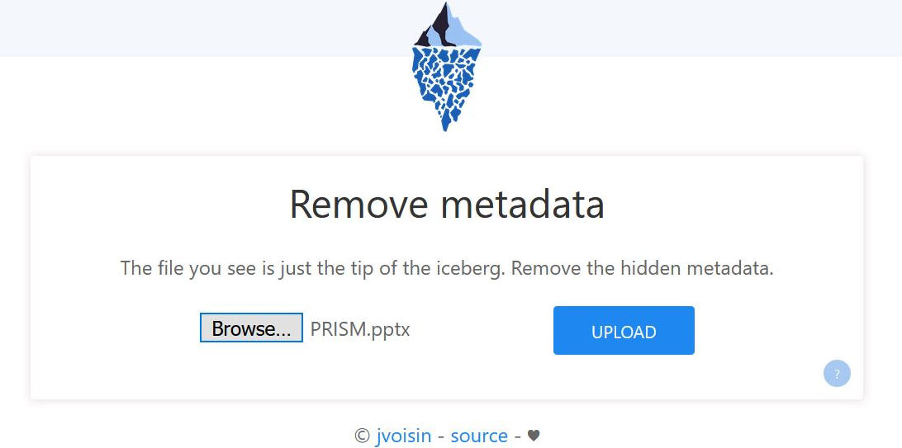
Mat2 также предустановлен в ВМ Whonix Workstation443 и по умолчанию доступен в Tails444.
Tailsλ
Tails отлично подходит для этого: вам не о чем беспокоиться даже при использовании SSD. Выключите его — и всё исчезнет, как только затухнет память.
Whonixλ
Учтите, что Whonix можно запускать в режиме Live, не оставляя следов при выключении ВМ. Дополнительную информацию смотрите в их режиме Live для ВМ [Archive.org] и предупреждении [Archive.org].
macOSλ
Гостевая ОСλ
Вернитесь к более раннему снимку в Virtualbox (или другом используемом вами ПО ВМ) и выполните команду Trim на Mac с помощью «Дисковой утилиты», снова запустив первую помощь в хостовой ОС, как объясняется в конце следующего раздела.
Хостовая ОСλ
Большую часть сведений из этого раздела также можно найти в этом хорошем руководстве: https://github.com/drduh/macOS-Security-and-Privacy-Guide [Archive.org]
База данных карантина (используется Gatekeeper и XProtect)λ
macOS (вплоть до Big Sur включительно) хранит SQL-базу карантина всех файлов, когда-либо загруженных вами из браузера. Эта база находится по адресу ~/Library/Preferences/com.apple.LaunchServices.QuarantineEventsV2.
Вы можете сами выполнить запрос, запустив в терминале следующую команду: sqlite3 ~/Library/Preferences/com.apple.LaunchServices.QuarantineEventsV2 "select * from LSQuarantineEvent"
Это золотая жила для криминалистического анализа, и её следует отключить:
-
Выполните следующую команду, чтобы полностью очистить базу:
:>~/Library/Preferences/com.apple.LaunchServices.QuarantineEventsV2 -
Выполните следующую команду, чтобы заблокировать файл и запретить дальнейшую запись истории загрузок:
sudo chflags schg ~/Library/Preferences/com.apple.LaunchServices.QuarantineEventsV2
Наконец, вы также можете полностью отключить Gatekeeper, выполнив в терминале следующую команду445:
sudo spctl --master-disable
Дополнительную информацию смотрите в этом разделе руководства: https://github.com/drduh/macOS-Security-and-Privacy-Guide#gatekeeper-and-xprotect [Archive.org]
Помимо этой удобной базы, каждый сохранённый файл также содержит подробные атрибуты файловой системы HFS+/APFS, показывающие, например, когда он был загружен, чем и откуда.
Их можно просмотреть, просто открыв терминал и введя mdls filename и xattr -l filename для любого файла, загруженного из любого браузера.
Чтобы удалить такие атрибуты, придётся сделать это вручную в терминале:
-
Выполните
xattr -d com.apple.metadata:kMDItemWhereFroms filename, чтобы удалить источник- Можно также просто использовать -dr, чтобы сделать это рекурсивно для всей папки/диска
-
Выполните
xattr -d com.apple.quarantine filename, чтобы удалить ссылку на карантин- Можно также просто использовать -dr, чтобы сделать это рекурсивно для всей папки/диска
-
Проверьте, выполнив
xattr --l filename: вывода быть не должно
(Учтите, что Apple убрала удобную опцию xattr --c, которая позволяла разом удалить все атрибуты, поэтому придётся делать это для каждого атрибута каждого файла.)
Эти атрибуты и записи сохранятся, даже если вы очистите историю браузера; очевидно, это плохо для конфиденциальности (верно?), и на данный момент нам не известен удобный инструмент для работы с ними.
К счастью, есть некоторые способы изначально избежать этой проблемы, поскольку эти атрибуты и записи задаются браузерами. Мы протестировали различные браузеры (в macOS Catalina, Big Sur и Monterey), и на дату этого руководства получили следующие результаты:
| Браузер | Запись в БД карантина | Атрибут файла карантина | Атрибут источника файла |
|---|---|---|---|
| Safari (обычный) | Да | Да | Да |
| Safari (приватное окно) | Нет | Нет | Нет |
| Firefox (обычный) | Да | Да | Да |
| Firefox (приватное окно) | Нет | Нет | Нет |
| Chrome (обычный) | Да | Да | Да |
| Chrome (приватное окно) | Частично (только временная метка) | Нет | Нет |
| Brave (обычный) | Частично (только временная метка) | Нет | Нет |
| Brave (приватное окно) | Частично (только временная метка) | Нет | Нет |
| Brave (окно Tor) | Частично (только временная метка) | Нет | Нет |
| Tor Browser | Нет | Нет | Нет |
Как вы сами видите, самое простое решение — просто использовать приватные окна. Они не записывают атрибуты источника/карантина и не сохраняют записи в базе QuarantineEventsV2.
Очистить QuarantineEventsV2 легко, как объяснено выше. Удаление атрибутов требует некоторой работы. Brave — единственный протестированный браузер, который по умолчанию не хранит эти атрибуты при обычной работе.
Различные артефактыλ
Кроме того, macOS ведёт различные журналы смонтированных и подключённых устройств, известных сетей, аналитики, редакций документов…
Указания о том, где найти и как удалить такие артефакты, смотрите в этом разделе руководства: https://github.com/drduh/macOS-Security-and-Privacy-Guide#metadata-and-artifacts [Archive.org]
Многие из них можно удалить различными коммерческими сторонними инструментами, но мы лично рекомендуем бесплатный и известный Onyx, который можно найти здесь: https://www.titanium-software.fr/en/onyx.html [Archive.org]. К сожалению, он имеет закрытый исходный код, но нотариально заверен, подписан и пользуется доверием много лет.
Принудительная операция Trim после очисткиλ
-
Если ваша файловая система — APFS, о Trim беспокоиться не нужно: он выполняется асинхронно по мере записи данных ОС.
-
Если ваша файловая система — HFS+ (или любая другая, кроме APFS), можно запустить «Первую помощь» для системного диска в «Дисковой утилите», которая должна выполнить операцию Trim, что будет видно в подробностях (https://support.apple.com/en-us/HT210898 [Archive.org]).
Linux (Qubes OS)λ
Пожалуйста, ознакомьтесь с их рекомендациями: https://github.com/Qubes-Community/Contents/blob/master/docs/security/security-guidelines.md [Archive.org]
Если вы используете Whonix в Qubes OS, ознакомьтесь с некоторыми из их руководств:
-
Руководство Whonix по усилению защиты системы: https://www.whonix.org/wiki/System_Hardening_Checklist [Archive.org]
-
Включение App Armor в Qubes: https://www.whonix.org/wiki/Qubes/AppArmor [Archive.org]
-
Также рассмотрите использование Linux Kernel Guard: https://www.whonix.org/wiki/Linux_Kernel_Runtime_Guard_LKRG [Archive.org]
Linux (не-Qubes)λ
Гостевая ОСλ
Вернитесь к более раннему снимку гостевой ВМ в Virtualbox (или другом используемом вами ПО ВМ) и выполните на ноутбуке команду trim: fstrim --all. Эта утилита входит в пакет util-linux в Debian/Ubuntu и должна быть установлена по умолчанию в Fedora. Затем перейдите к следующему разделу.
Хостовая ОСλ
Обычно в хостовой ОС не должно быть следов, которые нужно очищать, поскольку при следовании этому руководству вы всё делаете из ВМ.
Тем не менее, возможно, вы захотите очистить некоторые журналы. Ознакомьтесь с этим удобным (но, к сожалению, больше не поддерживаемым) инструментом: https://github.com/sundowndev/covermyass [Archive.org]
После очистки убедитесь, что утилита fstrim установлена (в Fedora она должна быть установлена по умолчанию) и входит в пакет util-linux в Debian/Ubuntu. Затем просто выполните fstrim --all в хостовой ОС. Как объяснялось ранее, для SSD этого должно быть достаточно.
В качестве дополнительной меры рассмотрите использование Linux Kernel Guard: https://www.whonix.org/wiki/Linux_Kernel_Runtime_Guard_LKRG [Archive.org]
Windowsλ
Гостевая ОСλ
Вернитесь к более раннему снимку в Virtualbox (или другом используемом вами ПО ВМ) и выполните команду trim в Windows с помощью Optimize, как объясняется в конце следующего раздела
Хостовая ОСλ
Теперь, когда вы выполнили множество действий с ВМ или хостовой ОС, следует уделить время сокрытию следов. Большинство этих шагов не следует предпринимать в ОС-приманке при использовании правдоподобного отрицания. Причина в том, что вы хотите оставить противнику правдоподобные следы чувствительной, но не секретной деятельности. Если всё чисто, это может вызвать подозрения.
Диагностические данные и телеметрияλ
Сначала избавимся от всех диагностических данных, которые всё ещё могут там находиться:
- После каждого использования устройств Windows перейдите в «Параметры», «Конфиденциальность», «Диагностика и отзывы» и нажмите «Удалить».
Затем повторно рандомизируем MAC-адреса виртуальных машин и Bluetooth-адрес хостовой ОС.
-
После каждого выключения ВМ Windows изменяйте её MAC-адрес для следующего сеанса: Virtualbox > выберите ВМ > «Настройки» > «Сеть» > «Дополнительно» > обновите MAC-адрес.
-
После каждого использования хостовой ОС Windows (в вашей ВМ вообще не должно быть Bluetooth) перейдите в «Диспетчер устройств», выберите Bluetooth, отключите и снова включите устройство (это принудительно рандомизирует Bluetooth-адрес).
Журналы событийλ
Журналы событий Windows хранят множество сведений, которые могут содержать следы вашей деятельности: например, информацию о смонтированных устройствах (в том числе о томах Veracrypt NTFS330), сетевых подключениях, сбоях приложений и различных ошибках. Лучше регулярно их очищать. Не делайте этого в ОС-приманке.
-
Откройте «Пуск», найдите «Просмотр событий» и запустите его:
-
Перейдите в журналы Windows.
-
Выберите и очистите все пять журналов с помощью контекстного меню.
-
История Veracryptλ
По умолчанию Veracrypt сохраняет историю недавно смонтированных томов и файлов. Следует убедиться, что Veracrypt никогда не сохраняет историю. Опять же, не делайте этого в ОС-приманке, если используете правдоподобное отрицание для ОС. Нам нужно сохранить историю монтирования тома-приманки как часть правдоподобного отрицания:
-
Запустите Veracrypt
-
Убедитесь, что установлен флажок «Никогда не сохранять историю» (в ОС-приманке он не должен быть установлен)
Теперь очистите историю во всех использованных приложениях, включая историю браузера, cookies, сохранённые пароли, сеансы и историю форм.
История браузераλ
-
Brave (если не включена очистка при выходе)
-
Перейдите в «Настройки»
-
Перейдите в «Shields»
-
Перейдите в «Очистить данные браузера»
-
Выберите «Дополнительно»
-
Выберите «За всё время»
-
Отметьте все параметры
-
Очистите данные
-
-
Tor Browser
- Просто закройте браузер — всё будет очищено
История Wi-Fiλ
Теперь пора очистить историю сетей Wi-Fi, к которым вы подключались. К сожалению, Windows продолжает хранить в реестре список прошлых сетей, даже если вы «забыли» их в настройках Wi-Fi. Насколько нам известно, никакие утилиты пока не очищают их (например, BleachBit или PrivaZer), поэтому придётся сделать это вручную:
-
Запустите Regedit по этому руководству: https://support.microsoft.com/en-us/windows/how-to-open-registry-editor-in-windows-10-deab38e6-91d6-e0aa-4b7c-8878d9e07b11 [Archive.org]
-
В Regedit введите в адресную строку:
Computer\HKEY_LOCAL_MACHINE\SOFTWARE\Microsoft\Windows NT\CurrentVersion\NetworkList\Profiles -
Справа вы увидите множество папок. Каждая из них — «ключ». В каждом из этих ключей будет информация о текущих известных вам Wi-Fi или прошлых сетях, которыми вы пользовались. Можно изучить их по одному и посмотреть описание в правой части.
-
Удалите все эти ключи.
Shellbagsλ
Как объяснялось ранее, Shellbags — это, по сути, история доступа к томам/файлам на компьютере. Помните, что shellbags — исключительно полезные источники информации для криминалистического анализа322, и их нужно очистить. Особенно если где-либо монтировался «скрытый том». Опять же, не следует делать этого в ОС-приманке:
-
Загрузите Shellbag Analyzer & Cleaner с https://privazer.com/en/download-shellbag-analyzer-shellbag-cleaner.php [Archive.org]
-
Запустите его
-
Проанализируйте
-
Нажмите «Clean» и выберите:
-
Удалённые папки
-
Папки в сети / на внешних устройствах
-
Результаты поиска
-
-
Выберите расширенный режим
-
Отметьте всё, кроме двух вариантов резервного копирования (не создавайте резервную копию)
-
Выберите очистку SSD (если у вас SSD)
-
Выберите один проход (всё нулями)
-
Очистите
-
-
Очистка дополнительными инструментамиλ
После очистки предыдущих следов также следует использовать сторонние утилиты, которые могут очищать различные следы, включая следы удалённых файлов/папок.
Прежде чем продолжать, обратитесь к разделу Инструменты очистки Windows.
PrivaZerλ
Вот шаги для PrivaZer:
-
Загрузите и установите PrivaZer с https://privazer.com/en/download.php [Archive.org]
-
После установки запустите PrivaZer
-
Не используйте их мастер
-
Выберите «Advanced User»
-
Выберите «Scan in Depth» и укажите цель
-
Выберите всё, что хотите просканировать, и нажмите «Scan»
-
Выберите, что хотите очистить (пропустите часть shell bag, поскольку для этого вы использовали другую утилиту)
- Если используется SSD, просто пропустите очистку свободного пространства и вместо этого используйте встроенную функцию Windows Optimize (см. ниже), которой должно быть более чем достаточно. Мы бы использовали это только для HDD.
-
(Если вы выбрали очистку свободного пространства) Выберите «Clean Options» и убедитесь, что тип накопителя правильно определён (HDD или SSD).
-
(Если вы выбрали очистку свободного пространства) В «Clean Options» (будьте осторожны с этой опцией: она сотрёт всё свободное пространство на выбранном разделе, особенно если вы используете ОС-приманку. Не стирайте свободное пространство или что-либо ещё на втором разделе, иначе рискуете уничтожить скрытую ОС)
-
Если у вас SSD:
-
Вкладка Secure Overwriting: мы бы выбрали только Normal Deletion + Trim (одного Trim должно быть достаточно339). Secure Deletion with Trim336 (1 проход) может быть избыточным, если вы всё равно намерены перезаписать свободное пространство.
-
Вкладка Free Space: лично мы, и опять же «на всякий случай», выбрали бы Normal Cleanup, который заполнит данными всё свободное пространство. Мы не очень доверяем Smart Cleanup, поскольку он не заполняет данными всё свободное пространство SSD. Но, опять же, в большинстве случаев это, вероятно, не нужно и избыточно.
-
-
Если у вас HDD:
-
Вкладка Secure Overwriting: мы бы выбрали Secure Deletion (1 проход).
-
Free Space: мы бы выбрали Smart Cleanup, поскольку нет причин перезаписывать сектора без данных на HDD.
-
-
-
Выберите «Clean» и вариант очистки:
-
Turbo Cleanup выполнит только обычное удаление (на HDD/SSD) и не очистит свободное пространство. Это небезопасно ни на HDD, ни на SSD.
-
Quick Cleanup выполнит безопасное удаление (на HDD) и обычное удаление + trim (на SSD), но не очистит свободное пространство. Для SSD это достаточно безопасно, но не для HDD.
-
Normal Cleanup выполнит безопасное удаление (на HDD) и обычное удаление + trim (на SSD), затем очистит всё свободное пространство (Smart Cleanup на HDD и Full Cleanup на SSD) и должен быть безопасен. Этот вариант лучше для HDD, но совершенно избыточен для SSD.
-
-
Нажмите «Clean» и дождитесь окончания очистки. Это может занять некоторое время и заполнит данными всё свободное пространство.
-
BleachBitλ
Вот шаги для BleachBit:
-
Загрузите и установите последнюю версию BleachBit отсюда: https://www.bleachbit.org/download [Archive.org]
-
Запустите BleachBit
-
Очистите как минимум всё в следующих разделах:
-
Deep Scan
-
Windows Defender
-
Windows Explorer (включая Shellbags)
-
System
-
Выберите из списка любые другие следы, которые хотите удалить
- Опять же, как и в предыдущей утилите, мы бы не очищали свободное пространство на SSD, потому что считаем, что встроенной утилиты Windows «optimize» достаточно (см. ниже), а заполнение свободного пространства на SSD с включённым trim совершенно избыточно и не нужно.
-
Нажмите «Clean» и ждите. Это займёт некоторое время и заполнит данными всё свободное пространство как на HDD, так и на SSD.
-
Принудительный Trim с помощью Windows Optimize (для SSD)λ
С помощью этой встроенной утилиты Windows 10/11 можно просто запустить Trim на SSD, чего должно быть более чем достаточно для безопасной очистки всех удалённых файлов, которые по какой-то причине избежали Trim при удалении.
Просто откройте проводник Windows, щёлкните правой кнопкой системный диск и выберите «Свойства». Выберите «Сервис». Нажмите «Оптимизировать и дефрагментировать». Готово: это не выполнит дефрагментацию, а только оптимизацию, то есть запустит операцию Trim (https://en.wikipedia.org/wiki/Trim_(computing) [Wikiless] [Archive.org]).
Удаление ваших идентичностей из поисковых систем и других платформλ
Вероятно, ваши действия (например, публикации на различных платформах, профили) будут проиндексированы (и сохранены в кэше) многими поисковыми системами.
Вопреки распространённому мнению, часть, но не всю эту информацию можно удалить, выполнив некоторые шаги. Хотя это может не удалить информацию с самих сайтов, людям будет сложнее найти её с помощью поисковых систем:
-
Сначала вам придётся удалить свои идентичности с самих платформ, если это возможно. Большинство позволит это сделать, но не все. В некоторых случаях нужно обратиться в поддержку/к модераторам, а в других будут готовые формы.
-
Если удалить профиль нельзя, возможно, вы сможете переименовать свою идентичность. Измените имя пользователя, если можете, и замените все сведения учётной записи вымышленными, включая e-mail.
-
Если разрешено, иногда можно отредактировать прошлые публикации и удалить содержащуюся в них информацию.
Полезную информацию о том, как удалять различные учётные записи, можно найти на этих сайтах:
Закончив с этой частью, займитесь поисковыми системами: хотя вы, возможно, не сможете удалить информацию, можно попросить их обновить/удалить устаревшие сведения, и это может убрать некоторые кэшированные данные.
К сожалению, для запроса обновления/удаления потребуется учётная запись Google (однако подойдёт любая учётная запись Google любого человека). Обойти это можно только ожиданием.
Перейдите на их страницу «Remove outdated content from Google Search»: https://search.google.com/search-console/remove-outdated-content [Archive.org] и отправьте соответствующий запрос.
Если ваш профиль/имя пользователя удалены/изменены, они должны повторно проиндексировать содержимое, обновить его и удалить эти следы.
Обработка таких запросов может занять несколько дней. Будьте терпеливы.
Bing
К сожалению, для запроса обновления/удаления потребуется учётная запись Microsoft (однако подойдёт любая учётная запись Microsoft любой идентичности). Обойти это можно только ожиданием.
Перейдите на их страницу «Content Removal»: https://www.bing.com/webmasters/tools/contentremoval [Archive.org] и отправьте соответствующий запрос.
Если ваш профиль/имя пользователя удалены/изменены, они должны повторно проиндексировать содержимое, обновить его и удалить эти следы.
Это может занять несколько дней. Будьте терпеливы.
DuckDuckGo
DuckDuckGo не хранит кэшированные версии страниц446 и вместо этого перенаправляет вас на кэшированную версию Google/Bing, если она доступна.
Кроме того, DuckDuckGo получает большую часть результатов поиска из Bing (а не Google)447, поэтому удаление содержимого из Bing со временем должно удалить его и из DuckDuckGo.
Yandex
К сожалению, для запроса удаления потребуется учётная запись Yandex (однако подойдёт любая учётная запись Yandex любой идентичности). Обойти это можно только ожиданием.
Получив учётную запись Yandex, перейдите в инструменты Yandex Webmaster: https://webmaster.yandex.com [Archive.org], затем выберите Tools и Delete URL: https://webmaster.yandex.com/tools/del-url/ [Archive.org]
Там можно ввести URL, которого больше не существует, если вы добились его удаления.
Это работает только со страницами, которые были удалены, и потому не поможет удалить кэш существующих записей. К сожалению, инструмента для принудительного обновления кэша нет, но всё же можно попробовать их инструмент обратной связи:
Найдите изменённую страницу (где ваш профиль был удалён/изменён) и нажмите стрелку рядом с результатом. Выберите Complain. Отправьте жалобу, что страница не соответствует результату поиска. Надеемся, это заставит Yandex через некоторое время повторно обойти и переиндексировать страницу. Это может занять дни или недели.
Qwant
Насколько нам известно, готового инструмента для принудительного обновления нет, и придётся ждать обновления результатов, если оно вообще произойдёт. Если вы знаете способ, сообщите нам об этом через GitHub issues.
Yahoo Search
Да, Yahoo Search всё ещё существует, но, согласно их справочной странице https://help.yahoo.com/kb/SLN4530.html [Archive.org], удалить или обновить информацию невозможно — остаётся только ждать. Это может занять от 6 до 8 недель.
Baidu
Насколько нам известно, готового инструмента для принудительного обновления нет, если только вы не управляете сайтом (и не сделаете это через их инструменты для вебмастеров). Поэтому придётся ждать обновления результатов, если оно вообще произойдёт. Если вы знаете способ, сообщите мне об этом через GitHub issues.
Wikipedia
Насколько нам известно, удалить информацию из самих статей Wikipedia невозможно, но если вы хотите лишь удалить следы своего имени пользователя (как участника, вносившего вклад), это можно сделать, выполнив следующие шаги: https://en.wikipedia.org/wiki/Wikipedia:Courtesy_vanishing [Wikiless] [Archive.org]
Это не удалит сведения о ваших онлайн-идентичностях, которые могут встречаться в других статьях, а только вашу собственную идентичность как пользователя Wikipedia.
Archive.today
Некоторую информацию иногда можно удалить по запросу (например, конфиденциальную), как видно из множества примеров здесь: https://blog.archive.today/archive
Это делается через их страницу «ask»: https://blog.archive.today/ask
Internet Archive
Можно удалить страницы из интернет-архивов, но только если вы владеете соответствующим сайтом и обратитесь к ним по этому поводу. Скорее всего, вам не удастся удалить архивы, например, «публикаций Reddit» или чего-либо подобного. Но всё же можно спросить и посмотреть, что они ответят.
Согласно их справочной странице: https://help.archive.org/hc/en-us/articles/360004651732-Using-The-Wayback-Machine
«Как исключить или удалить страницы моего сайта из Wayback Machine?
Вы можете отправить нам запрос на рассмотрение по электронной почте info@archive.org, указав URL (веб-адрес) в тексте сообщения».
Другие
Посмотрите эти сайты:
Несколько старых низкотехнологичных приёмовλ
Скрывайте сообщения на видуλ
Нужно помнить, что использование всех этих мер безопасности (шифрования, правдоподобного отрицания, VPN, tor, защищённых операционных систем…) уже само по себе может сделать вас подозрительным. Их использование может быть равносильно открытому заявлению наблюдателю: «Мне есть что скрывать», — и побудить некоторых противников к дальнейшему расследованию/наблюдению за вами.
Поэтому есть и другие способы при необходимости обмениваться или отправлять сообщения другим через интернет, не раскрывая свою личность и не устанавливая с ними прямую связь. Различные организации используют их десятилетиями; они могут помочь передать конфиденциальную информацию, не привлекая внимания использованием защищённых технологий.
Часто используется метод, сочетающий идею тайника Dead Drop448 и обфускации защищённой связи449 с помощью стеганографии450 и/или клептографии451; у него есть множество названий, например Koalang452, «Talking Around» или даже «социальная стеганография». Этот метод очень стар и поныне широко применяется подростками для обхода родительского контроля. Он скрывается на виду.
Вот пример: что, если вы хотите дать кому-то понять, что что-то не так и ему следует уйти в тень? Что ему следует немедленно стереть все данные, избавиться от одноразовых телефонов и конфиденциальной информации?
Что, если вы хотите сообщить тому, кому доверяете (друзьям, семье, адвокатам, журналистам…), что вы в беде и им следует присмотреть за вами?
И всё это — не раскрывая личность адресата, не сообщая содержание сообщения третьим лицам, не вызывая подозрений и не используя ни один из упомянутых выше защищённых методов.
Что ж, для этого можно использовать любую публичную онлайн-платформу (Instagram, Twitter, Reddit, любой форум, YouTube…), размещая согласованные (между вами и контактом) закодированные сообщения, уместные в контексте выбранной платформы/медиа и понятные лишь вашему контакту.
Это может быть набор определённых эмодзи или намеренно сформулированный обыденный комментарий. Или даже просто отметка «нравится» на конкретной публикации известного инфлюенсера, которого вы обычно смотрите и одобряете. Для всех это будет выглядеть совершенно нормально, но для осведомлённого читателя может много значить, и он сможет предпринять заранее согласованные действия. Сообщение также можно скрыть с помощью стеганографии, например используя https://stegcloak.surge.sh/.
Необязательно заходить так далеко. Простого времени «последнего посещения» в определённой учётной записи может быть достаточно для условного сигнала. Если ваш собеседник увидит, что эта учётная запись была в сети, это может означать проблему.
Как заметить, что кто-то рылся в ваших вещахλ
Есть несколько старых приёмов, позволяющих заметить, не трогал ли кто-нибудь ваши вещи в ваше отсутствие.
Один из них довольно прост и требует лишь провода/кабеля. Просто разложите предметы на столе, прикроватной тумбочке или в ящиках по прямой линии. В качестве инструмента для выравнивания можно использовать обычный USB-кабель.
Проложите кабель по линии и расположите предметы вдоль неё. Вернувшись, проверьте, остаются ли предметы на линии. Так вам не придётся точно запоминать, где лежали вещи, и делать фотографии.
К счастью, современные технологии сделали это ещё проще. Если вы подозреваете, что кто-то может рыться в ваших вещах в ваше отсутствие, просто сфотографируйте место на телефон перед уходом. Вернувшись, сравните место со снимками: всё должно находиться ровно там, где вы это оставили. Если что-то сдвинуто, значит, там кто-то был.
Противнику будет крайне трудно и затратно по времени обыскать ваши вещи, а затем с абсолютной точностью вернуть их в исходное положение.
Что, если это печатный документ или книга и вы хотите узнать, читал ли их кто-нибудь? Ещё проще. Осторожно сделайте в документе пометку карандашом. Затем сотрите её обычным ластиком, как будто хотели исправить. Приём в том, чтобы аккуратно оставить следы/крошки ластика на стёртом участке или местах, где было написано карандашом, и закрыть документ. Перед закрытием также можно сфотографировать эти остатки.
Скорее всего, если кто-то просмотрел документ, чтобы прочесть его, и затем осторожно вернул на место, эти остатки осыплются или заметно сместятся. Это простой старый приём, который может показать, что кто-то обыскивал ваш документ.
Несколько заключительных мыслей об OPSECλ
Постойте, что такое OPSEC? OPSEC означает Operations Security453. Базовое определение: «OPSEC — это процесс защиты отдельных фрагментов данных, которые в совокупности могут дать общую картину».
Важнейший и, вероятно, самый простой урок здесь можно взять из фильма «Бойцовский клуб»: первое правило — вы не говорите о Бойцовском клубе. Это применимо ко многим аспектам вашей онлайн-операционной безопасности, или OPSEC. Время, потраченное на изучение этого руководства, даст вам инструменты и знания для более полноценной и безопасной работы в интернете. Будьте уверены: это руководство откроет вам вещи, которые будут досаждать вашему противнику. Вы узнаете, как защищать операционные системы, изолировать критическую информацию и обеспечивать успех задачи. Но есть одно правило, которого необходимо придерживаться: не говорите о деталях операции. Главная угроза со стороны противника для вас — OSINT (обсуждается ниже и по всему документу). Противник будет собирать сведения о вас на основе того, что он наблюдает в вас, вашей деятельности онлайн и в реальной жизни.
Противники бывают разными. Для одних это представители иностранного государства, для других — просто сотрудник конкурирующей компании, ищущий недовольных работников, на которых можно затем давить. В общем случае задача OPSEC такова: это ваш корабль, и вы не должны ничего делать или говорить, чтобы потопить его сами. Простого выражения недовольства начальником, условиями работы или оборудованием может быть достаточно не только для создания поведенческого профиля, но и для появления вектора атаки. Недовольный сотрудник в этом примере обычно даёт достаточно информации, чтобы оправдать давление на него с целью получения дополнительных сведений и, возможно, даже вымогательства, шантажа или худшего. Неспособность реализовать базовый OPSEC может привести к провалу на разных этапах. Если в вашей модели угроз есть решительный атакующий, иностранный субъект и т. п., это может привести к тяжёлым травмам или даже смерти.
Живите по простому правилу: «болтун — находка для шпиона», но помните, что топить корабль обычно будут именно ваши слова. OPSEC часто сводится к здравому смыслу и осторожности в своей деятельности, включая физический мир:
Цифровой и онлайн OPSECλ
-
Помните: используйте парольные фразы или наборы слов вместо коротких паролей и разные варианты для каждой службы. См. Рекомендации по паролям и парольным фразам.
-
Убедитесь, что после этого не храните копию руководства в небезопасном месте. Уже само наличие этого руководства, скорее всего, уничтожит все возможности правдоподобного отрицания.
-
Периодически OSINT-исследуйте себя и свои идентичности, ища их в интернете через различные поисковые системы, чтобы отслеживать онлайн-идентичности. Этот процесс можно частично автоматизировать разными инструментами, например Google Alerts: https://www.google.com/alerts [Archive.org].
-
Никогда не используйте только биометрию для защиты секретов. Биометрию могут применить без вашего согласия.
-
Обязательно проверяйте подписи и хеши загружаемого ПО и документов перед установкой/просмотром.
-
Не ведите себя одинаково: например, не посещайте одни и те же ссылки в обычном интернете, а затем с анонимной онлайн-идентичностью. Если ещё не смотрели, посмотрите эту презентацию DEF CON 25: DEF CON 25 — Svea Eckert, Andreas Dewes — Dark Data [Invidious].
-
Шифруйте всё, но не принимайте это как данность. Помните о гаечном ключе за $5.
Физический и реальный OPSECλ
-
Помните о защите ноутбука от физического вмешательства.
-
Ознакомьтесь с разделом Как заметить, что кто-то рылся в ваших вещах.
-
Рассмотрите использование Haven: https://guardianproject.github.io/haven/ [Archive.org] на старом телефоне Android, чтобы наблюдать за домом/комнатой в ваше отсутствие.
-
Помните предупреждение о смартфонах и умных устройствах. Не забывайте, что умные устройства могут скомпрометировать вашу анонимность.
-
Никогда не путешествуйте с такими устройствами, если вам предстоит пройти строгий пограничный контроль и там, где они могут быть незаконны или вызвать подозрения.
-
Не подключайте к этому ноутбуку оборудование, которому не доверяете. Для зарядки используйте USB-блокиратор данных.
-
Помните первое правило Бойцовского клуба и не рассказывайте никому о своей конфиденциальной деятельности, используя настоящую личность.
-
Ведите обычную жизнь и не ведите себя странно. Если всё своё время в интернете вы используете Tor и вообще не имеете учётных записей в соцсетях… вы уже выглядите подозрительно и привлекаете ненужное внимание.
-
Сохраняйте правдоподобное отрицание как вариант, но помните: оно не поможет и против гаечного ключа за 5$.
-
Никогда и нигде не оставляйте ноутбук без присмотра, включённым или разблокированным во время конфиденциальной деятельности. Помните историю Росса Ульбрихта и его ареста: https://en.wikipedia.org/wiki/Ross_Ulbricht#Silk_Road,_arrest_and_trial [Wikiless] [Archive.org].
-
Регулярно проверяйте признаки вмешательства (не только устройства, но и дом/комнату).
-
Если можете, не разговаривайте с полицией/властями (по крайней мере, если вы в США) https://www.youtube.com/watch?v=d-7o9xYp7eE [Invidious] без адвоката. Храните молчание.
-
Знайте и всегда держите под рукой данные адвоката, который в крайнем случае сможет вам помочь, если что-то пойдёт не так.
-
Поддерживайте высокую ситуационную осведомлённость, но не настолько высокую, чтобы выглядеть подозрительно.
-
Рассмотрите использование физического ключа безопасности (например, YubiCo YubiKey) для различных мер защиты от компрометации учётных записей. (В этой версии руководства это не рассматривается, но работа ведётся для следующих версий.)
-
Прочитайте советы здесь: https://www.whonix.org/wiki/DoNot [Archive.org]
-
Проявляйте здравый смысл, не глупите, смотрите и учитесь на ошибках других; посмотрите/прочтите:
-
Medium.com, Darkweb Vendors and the Basic Opsec Mistakes They Keep Making https://medium.com/@c5/darkweb-vendors-and-the-basic-opsec-mistakes-they-keep-making-e54c285a488c [Scribe.rip] [Archive.org]
-
2020, Sinwindie, OSINT, and Dark Web Markets, Why OPSEC Still Matters https://www.youtube.com/watch?v=IqZZU9lFlF4 [Invidious]
-
2020, RSA Conference 2020, When Cybercriminals with Good OpSec Attack https://www.youtube.com/watch?v=zXmZnU2GdVk [Invidious]
-
2015, DEF CON 22, Adrian Crenshaw, Dropping Docs on Darknets: How People Got Caught https://www.youtube.com/watch?v=eQ2OZKitRwc [Invidious] (Слайды [Archive.org])
-
2017, Ochko123 — How the Feds Caught Russian Mega-Carder Roman Seleznev https://www.youtube.com/watch?v=6Chp12sEnWk [Invidious]
-
2017, DEF CON 25 — Svea Eckert, Andreas Dewes — Dark Data [Invidious]
-
2015, DEF CON 22, Zoz, Don't Fuck It Up! https://www.youtube.com/watch?v=J1q4Ir2J8P8 [Invidious]
-
2020, Bad Opsec, How Tor Users Got Caught, https://www.youtube.com/watch?v=GR_U0G-QGA0 [Invidious]
-
2022, Master of OpSec Masters: A View Through the Prism of Time, https://officercia.mirror.xyz/4x2-M4R2cSnID1wpsTO4CQNrMQ5JUFouR-rZ_N4xO-Q [Archive.org]
- 2022, How can you become a one-man-army OSINT specialist? https://officercia.mirror.xyz/5KSkJOTgMtvgC36v1GqZ987N-_Oj_zwvGatOk0A47Ws [Archive.org]
-
Рекомендуется изучить распространённые способы, которыми люди нарушают OPSEC: https://dan-kir.github.io/2022/05/26/OPSEC-notes.html [Archive.org]. Что бы вы ни делали, относитесь к OPSEC серьёзно и Не облажайтесь!
ОКОНЧАТЕЛЬНОЕ ПРЕДУПРЕЖДЕНИЕ ПО OPSEC: ПОЛНОСТЬЮ ИЗОЛИРУЙТЕ СВОИ АНОНИМНЫЕ ИДЕНТИЧНОСТИ ОТ ОБЫЧНОЙ СРЕДЫ И НАСТОЯЩЕЙ ЛИЧНОСТИ. НИЧЕГО НЕ ПЕРЕДАВАЙТЕ МЕЖДУ АНОНИМНЫМИ СРЕДАМИ И СРЕДОЙ НАСТОЯЩЕЙ ЛИЧНОСТИ. ПОЛНОСТЬЮ РАЗДЕЛЯЙТЕ ИХ НА КАЖДОМ УРОВНЕ. БОЛЬШИНСТВО НАРУШЕНИЙ OPSEC ПРОИСХОДЯТ ИЗ-ЗА СЛУЧАЙНОЙ УТЕЧКИ ИНФОРМАЦИИ, А НЕ ТЕХНИЧЕСКИХ СБОЕВ.
Что делать, если вы обнаружили вмешательство или обыскλ
-
В случае с ноутбуком, вероятно, установили кейлоггер и, возможно, средства работы с сетью и GPS. Мы рекомендуем вскрыть ноутбук, извлечь накопитель (который должен быть полностью зашифрован), уехать в безопасное место и бросить ноутбук. Не пытайтесь удалить «жучок», поскольку это может подвергнуть вас физической опасности.
-
Если вы обнаружили обыск комнаты, дома… опять же, мы рекомендуем уехать в безопасное место, оставив всё в комнате, что также может быть снабжено «жучком».
-
Сделайте всё возможное, чтобы противник не заподозрил и не узнал, что вы обнаружили обыск и/или вмешательство. Проявите изобретательность. Например, позвоните другу просто сказать, что собираетесь в супермаркет за едой.
Если вы считаете, что вас раскрылиλ
Если у вас есть времяλ
-
Не паникуйте.
-
Удалите из интернета всё, что относится к этой конкретной идентичности (учётные записи, комментарии…).
-
Удалите всё офлайн, что относится к этой идентичности, включая резервные копии.
-
(При использовании физической SIM) Уничтожьте SIM-карту и выбросьте её в случайную урну где-нибудь.
-
(При использовании физического одноразового телефона) Сотрите данные, затем уничтожьте одноразовый телефон и выбросьте его в случайную урну где-нибудь.
-
Надёжно сотрите жёсткий диск ноутбука, а затем в идеале физически уничтожьте HDD/SSD/ноутбук и выбросьте его где-нибудь.
-
Сделайте то же с резервными копиями.
-
Держите рядом данные адвоката или при необходимости заранее позвоните ему, чтобы подготовиться к делу.
-
Вернитесь к обычной деятельности и надейтесь на лучшее.
Если у вас нет времениλ
-
Не паникуйте.
-
Постарайтесь как можно скорее выключить ноутбук/перевести его в гибернацию и надейтесь на лучшее. Если вы достаточно быстры, память должна затухнуть или очиститься, и пока ваши данные будут в основном в безопасности.
-
Если возможно, свяжитесь с адвокатом и надейтесь на лучшее; если пока не можете связаться с ним, старайтесь хранить молчание (если законы вашей страны это позволяют), пока адвокат не сможет помочь вам и если закон позволяет вам хранить молчание.
Помните, что во многих странах есть специальные законы, обязывающие раскрывать пароли, и они могут отменять ваше «право хранить молчание». См. эту статью Wikipedia: https://en.wikipedia.org/wiki/Key_disclosure_law [Wikiless] [Archive.org] и другой визуальный ресурс со ссылками на законы: https://www.gp-digital.org/world-map-of-encryption/ [Archive.org]. В частности, в Австралии действуют широкие законы о конфиденциальности526, а также принят Surveillance Legislation Amendment (Identify and Disrupt) Act 2021527, который даёт властям полномочия изменять, добавлять, копировать и удалять данные на устройствах и в учётных записях подозреваемого.
Небольшое заключительное редакторское примечаниеλ
Прочитав всё это руководство, мы надеемся, что вы получили дополнительные полезные знания о приватности и анонимности. По моему скромному мнению, теперь ясно, что в мире, в котором мы живём, осталось лишь несколько безопасных гаваней, где можно обоснованно рассчитывать на приватность, и ещё меньше — на анонимность. Многие часто говорят, что «1984» Джорджа Оруэлла задумывался не как инструкция. Однако сегодня это руководство и множество его ссылок, как мы надеемся, покажут вам, насколько глубоко мы уже забрались в кроличью нору.
Вам также следует знать, что бо́льшую часть цифровой информации, подробно описанной в этом руководстве, мотивированный противник может подделать или изменить для любых целей. Даже если вам удастся сохранить секреты от посторонних глаз, кто угодно может сфабриковать что угодно под свой нарратив:
-
Журналы IP, DNS, геолокации и подключений можно подделать или изменить простым текстовым редактором, не оставив следов.
-
Файлы и их свойства можно создать, изменить и снабдить временными метками с помощью простых утилит, не оставив следов.
-
EXIF-информацию фотографий и видео можно изменить с помощью простых утилит, не оставив следов.
-
Цифровые доказательства (фотографии, видео, голосовые записи, электронные письма, документы...) можно с лёгкостью изготовить, подбросить, удалить или уничтожить, не оставив следов.
В эпоху дезинформации не стесняйтесь ставить под сомнение такую информацию из любого источника.
«Ложь успевает обойти полмира, пока правда надевает ботинки»454
Продолжайте мыслить самостоятельно, применяйте критическое мышление и сохраняйте открытость ума. «Sapere Aude» (осмелься знать!).
«В конце концов Партия объявит, что дважды два — пять, и вам придётся в это поверить» — Джордж Оруэлл, «1984», книга первая, глава седьмая.
Подумайте о помощи другим (см. Помощь другим в сохранении анонимности)
Пожертвованияλ
У этого проекта нет финансирования или спонсоров, поэтому пожертвования очень приветствуются.
См.: Внести вклад в верхней части сайта.
(Обязательно проверьте контрольную сумму и GPG-подпись этого файла, чтобы удостовериться в его подлинности; если вы не знаете, как это сделать, объяснение есть в README репозитория).
Помощь другим в сохранении анонимностиλ
Если вы хотите помочь пользователям, столкнувшимся с цензурой и угнетением, пожалуйста, подумайте о поддержке сети Tor. Это можно сделать несколькими способами:
-
Самый простой:
- Использовать дополнение Snowflake в браузере (https://snowflake.torproject.org/ [Archive.org])
-
Требующий немного больше усилий:
-
Запустить узел-ретранслятор Tor (https://community.torproject.org/relay/ [Archive.org])
-
См. [Рекомендуемые VPS-провайдеры]
-
Дополнительное руководство: https://torrelay.ca/ [Archive.org]
-
-
Если вы готовы к задаче посложнее, можно также анонимно запустить выходной узел Tor, используя рекомендованных выше VPS-провайдеров.
Для этого см. https://blog.torproject.org/tips-running-exit-node [Archive.org]
Например, этот проект запускает несколько выходных узлов Tor, финансируемых пожертвованиями. Посмотреть их можно здесь: https://metrics.torproject.org/rs.html#search/family:970814F267BF3DE9DFF2A0F8D4019F80C68AEE26
Установка Windowsλ
Это процесс установки Windows 10/11, применимый к любой установке Windows 10/11 в рамках данного руководства.
Windows 10 (Windows 11 — ниже)λ
Установкаλ
НЕ ПОДКЛЮЧАЙТЕ WINDOWS К КАКОЙ-ЛИБО СЕТИ ВО ВРЕМЯ УСТАНОВКИ (это позволит создать локальную учётную запись вместо учётной записи Microsoft, а также предотвратит отправку телеметрии в процессе установки).
-
(Только для установки ВМ VirtualBox) Откройте меню настроек виртуальной машины VirtualBox. Выберите сеть. Отключите кабель.
-
Нажмите «Установить»
-
Выберите «У меня нет ключа продукта»
-
Выберите нужный вариант:
- Вы планируете использовать правдоподобное отрицание: Windows Home
- Вы не планируете использовать правдоподобное отрицание: Windows Pro
- ОС ВМ: используйте Windows Pro или Windows Pro N
-
Выберите выборочную установку
-
Хранилище:
-
Если это простая установка ОС (основная ОС с простым шифрованием) или ВМ без шифрования, выберите весь диск и продолжите установку (пропустите следующий шаг).
-
Если это часть настройки шифрования с правдоподобным отрицанием на основной ОС:
-
Если вы устанавливаете Windows впервые (скрытая ОС):
-
Удалите текущие разделы
-
Создайте первый раздел объёмом не менее 50 ГБ (примерно треть общего дискового пространства).
-
Создайте второй раздел, используя оставшиеся две трети общего дискового пространства.
-
-
Если вы устанавливаете Windows во второй раз (ОС-приманка):
-
Не удаляйте текущие разделы
-
Установите Windows на первый раздел, созданный при первой установке.
-
-
Продолжите установку на первом разделе
-
-
-
Запустите процесс установки
-
Выберите регион «Соединённые Штаты»
-
Пропустите дополнительную раскладку клавиатуры
-
Выберите «У меня нет интернета»
-
Выберите «Продолжить ограниченную настройку»
-
Создайте имя пользователя по своему выбору.
-
Используйте пароль по своему выбору.
-
Выберите все три контрольных вопроса и ответьте как угодно (не настоящими данными).
-
Не используйте распознавание речи в Интернете
-
Не разрешайте приложениям использовать ваше местоположение
-
Не включайте «Поиск устройства»
-
Отправляйте только «обязательные диагностические данные»
-
Не улучшайте рукописный ввод и ввод с клавиатуры
-
Не включайте персонализированные возможности.
-
Не разрешайте приложениям использовать рекламный идентификатор
-
В запросе Cortana выберите «Сейчас»
Настройки приватностиλ
-
После завершения установки откройте «Параметры» > нажмите значок меню вверху слева и выберите «Конфиденциальность и безопасность»
-
После завершения установки откройте «Параметры» > «Конфиденциальность» и выполните следующее:
-
Общие: всё выключить
-
Речь: выключить
-
Рукописный ввод и ввод с клавиатуры: выключить
-
Диагностика: обязательный уровень выключить, параметры выключить, Удалить ваши данные, частоту установить на «Никогда»
-
Журнал действий: всё выключить и очистить журнал
-
Местоположение: всё выключить (кнопка изменения) и очистить
-
Камера: отключить (кнопка изменения)
-
Микрофон: отключить (кнопка изменения)
-
Голосовая активация: всё выключить
-
Уведомления: отключить (кнопка изменения)
-
Сведения об учётной записи: отключить (кнопка изменения)
-
Сведения о контактах: отключить (кнопка изменения)
-
Доступ к календарю: отключить (кнопка изменения)
-
Телефонные звонки: отключить (кнопка изменения)
-
Журнал звонков: отключить (кнопка изменения)
-
Электронная почта: отключить (кнопка изменения)
-
Задачи: отключить (кнопка изменения)
-
Обмен сообщениями: отключить (кнопка изменения)
-
Радиоустройства: отключить (кнопка изменения)
-
Другие устройства: выключить
-
Фоновые приложения: отключить (кнопка изменения)
-
Диагностика приложений: отключить (кнопка изменения)
-
Автоматическое скачивание файлов: отключить
-
Документы: отключить (кнопка изменения)
-
Изображения: отключить (кнопка изменения)
-
Видео: отключить (кнопка изменения) и выключить
-
Файловая система: отключить (кнопка изменения)
-
Отключите индексирование файлов в «Параметрах индексирования» (откройте Панель управления Windows 11, переключите вид на «Крупные значки» и выберите «Параметры индексирования».
-
Измените список и удалите все расположения.
-
Откройте «Дополнительно» и нажмите «Перестроить».
-
(Только основная ОС) Отключите Bluetooth в настройках:
-
Откройте «Параметры»
-
Откройте «Устройства»
-
Выберите Bluetooth и выключите его
-
-
(Только основная ОС) В любом случае заклейте веб-камеру и микрофон для дополнительной уверенности.
-
(Только основная ОС) Откройте «Параметры» > «Сеть и Интернет» > Wi-Fi и включите случайный аппаратный адрес.
Windows 11λ
Установкаλ
НЕ ПОДКЛЮЧАЙТЕ WINDOWS К КАКОЙ-ЛИБО СЕТИ ВО ВРЕМЯ УСТАНОВКИ (это позволит создать локальную учётную запись вместо учётной записи Microsoft, а также предотвратит отправку телеметрии в процессе установки).
-
(Только для установки ВМ VirtualBox) Откройте меню настроек виртуальной машины VirtualBox. Выберите сеть. Отключите кабель. Для этой задачи также можно воспользоваться отличным руководством Oracle https://blogs.oracle.com/virtualization/post/install-microsoft-windows-11-on-virtualbox [Archive.org]
-
Выберите язык, валюту и раскладку клавиатуры
-
Нажмите «Установить»
-
(Только для установки ВМ VirtualBox) Одновременно нажмите Shift и F10
-
(Только для установки ВМ VirtualBox) Запустите «regedit» в командной строке
-
(Только для установки ВМ VirtualBox) Когда откроется редактор реестра, перейдите к
HKEY_LOCAL_MACHINE\SYSTEM\Setup, щёлкните правой кнопкой мыши ключ «Setup» и выберите «Создать => Раздел». Когда будет предложено назвать раздел, введите «LabConfig» и нажмите Enter. -
(Только для установки ВМ VirtualBox) Теперь щёлкните правой кнопкой мыши ключ «LabConfig», выберите «Создать => Значение DWORD (32-бит)», создайте значение с именем «BypassTPMCheck» и задайте для него значение «1». Тем же способом создайте «BypassRAMCheck» и «BypassSecureBootCheck»
-
Выберите «У меня нет ключа продукта»
-
Примите соглашение
-
Выберите нужный вариант:
- Вы планируете использовать правдоподобное отрицание: Windows Home
- Вы не планируете использовать правдоподобное отрицание: Windows Pro
- ОС ВМ: используйте Windows Pro или Windows Pro N
-
Выберите выборочную установку
-
Хранилище:
-
Если это простая установка ОС (основная ОС с простым шифрованием) или ВМ без шифрования, выберите весь диск и продолжите установку (пропустите следующий шаг).
-
Если это часть настройки шифрования с правдоподобным отрицанием на основной ОС:
-
Если вы устанавливаете Windows впервые (скрытая ОС):
-
Удалите текущие разделы
-
Создайте первый раздел объёмом не менее 50 ГБ (примерно треть общего дискового пространства).
-
Создайте второй раздел, используя оставшиеся две трети общего дискового пространства.
-
-
Если вы устанавливаете Windows во второй раз (ОС-приманка):
-
Не удаляйте текущие разделы
-
Установите Windows на первый раздел, созданный при первой установке.
-
-
Продолжите установку на первом разделе
-
-
-
Запустите процесс установки
-
Выберите регион «Соединённые Штаты»
-
Выберите раскладку клавиатуры и пропустите вторую раскладку
-
Выберите «У меня нет интернета»
-
Выберите «Продолжить ограниченную настройку»
-
Создайте имя пользователя по своему выбору.
-
Используйте пароль по своему выбору.
-
Выберите все три контрольных вопроса и ответьте как угодно (не настоящими данными).
-
Отключите местоположение
-
Отключите «Поиск устройства»
-
Отключите необязательные диагностические данные
-
Отправляйте только «обязательные диагностические данные»
-
Не улучшайте рукописный ввод и ввод с клавиатуры
-
Отключите персонализированные возможности.
-
Отключите рекламный идентификатор
-
Нажмите «Принять»
Настройки приватностиλ
-
После завершения установки откройте «Параметры» > «Конфиденциальность» и выполните следующее:
-
Общие: всё выключить
-
Речь: выключить
-
Рукописный ввод и ввод с клавиатуры: выключить
-
Диагностика: обязательный уровень выключить, параметры выключить, Удалить ваши данные, частоту установить на «Никогда»
-
Журнал действий: всё выключить и очистить журнал
-
Местоположение: всё выключить (кнопка изменения) и очистить
-
Камера: отключить (кнопка изменения)
-
Микрофон: отключить (кнопка изменения)
-
Голосовая активация: всё выключить
-
Уведомления: отключить (кнопка изменения)
-
Сведения об учётной записи: отключить (кнопка изменения)
-
Сведения о контактах: отключить (кнопка изменения)
-
Доступ к календарю: отключить (кнопка изменения)
-
Телефонные звонки: отключить (кнопка изменения)
-
Журнал звонков: отключить (кнопка изменения)
-
Электронная почта: отключить (кнопка изменения)
-
Задачи: отключить (кнопка изменения)
-
Обмен сообщениями: отключить (кнопка изменения)
-
Радиоустройства: отключить (кнопка изменения)
-
Другие устройства: выключить
-
Фоновые приложения: отключить (кнопка изменения)
-
Диагностика приложений: отключить (кнопка изменения)
-
Автоматическое скачивание файлов: отключить
-
Документы: отключить (кнопка изменения)
-
Музыкальная библиотека: отключить (кнопка изменения)
-
Изображения: отключить (кнопка изменения)
-
Видео: отключить (кнопка изменения) и выключить
-
Файловая система: отключить (кнопка изменения)
-
Отключите индексирование файлов в «Параметрах индексирования» (откройте Панель управления Windows 11, переключите вид на «Крупные значки» и выберите «Параметры индексирования».
-
Измените список и удалите все расположения.
-
Откройте «Дополнительно» и нажмите «Перестроить».
-
(Только основная ОС) Отключите Bluetooth в настройках:
-
Откройте «Параметры»
-
Откройте «Устройства»
-
Выберите Bluetooth и выключите его
-
-
(Только основная ОС) В любом случае заклейте веб-камеру и микрофон для дополнительной уверенности.
-
(Только основная ОС) Откройте «Параметры» > «Сеть и Интернет» > Wi-Fi и включите случайный аппаратный адрес.
Дополнительные настройки приватности Windowsλ
Как уже сказано в этом руководстве и отмечено PrivacyGuides.org455, Windows 10/11 — кошмар для приватности. Недостаточно отключить всё во время и после установки с помощью доступных вам параметров. Объём телеметрических данных, собираемых Microsoft, огромен и может свести на нет ваши попытки сохранить секреты. Вам потребуется скачать и использовать несколько утилит, чтобы (будем надеяться) заставить Windows 10/11 не отправлять данные обратно в Microsoft.
Ниже приведены подробные шаги:
-
НИКОГДА НЕ ИСПОЛЬЗУЙТЕ УЧЁТНУЮ ЗАПИСЬ MICROSOFT ДЛЯ ВХОДА: если вы её используете, следует переустановить эту систему Windows без подключения к сети и вместо неё использовать локальную учётную запись.
-
Выполните эти шаги с другого компьютера. Не подключайте Windows 10/11 к интернету, пока эти настройки не применены. Вы можете скачать и скопировать их на USB-накопитель (для переноса на свежую установку Windows 10/11) или, если это ВМ, перенести их в ВМ через VirtualBox (настройки ВМ > «Общие» > «Дополнительно» > «Перетаскивание» > включить «Из хоста в гостевую»).
-
(Для более опытных пользователей) Скачайте и установите W10Privacy с https://www.w10privacy.de/english-home/ [Archive.org]
- Откройте приложение от имени администратора (щелчок правой кнопкой > «Ещё» > «Запуск от имени администратора»)
- Отметьте все рекомендуемые (зелёные) настройки и сохраните.
- Необязательно, но рекомендуется (может нарушить работу некоторых функций; используйте на свой риск): также отметьте оранжевые/красные настройки и сохраните.
- Перезагрузите компьютер
-
Скачайте и запустите WindowsSpyBlocker с https://crazymax.dev/WindowsSpyBlocker/download/ [Archive.org]
- Введите 1 и перейдите в Telemetry
- Введите 1 и перейдите в Firewall
- Введите 2 и добавьте Spy Rules
- Перезагрузите компьютер
-
Также рассмотрите использование ShutUp10++ с https://www.oo-software.com/en/shutup10 [Archive.org]
- Включите по меньшей мере все рекомендуемые настройки
-
Наконец, опять же для пользователей со средним уровнем подготовки, рассмотрите установку Safing Portmaster с https://safing.io/portmaster/ [Archive.org] (Предупреждение: возможны проблемы с некоторыми VPN-клиентами. См.: https://docs.safing.io/portmaster/install/status/vpn-compatibility [Archive.org]
-
В последний раз вернитесь к настройкам, чтобы удалить диагностические и все данные.
Эти меры вместе с настройками во время установки, будем надеяться, должны быть достаточны, чтобы Microsoft не шпионила за вашей ОС.
Вам потребуется часто обновлять и повторно запускать эти утилиты, а также делать это после каждого крупного обновления Windows, поскольку обновления, как правило, незаметно снова включают телеметрию.
В качестве дополнения может быть интересно несколько укрепить основную ОС Windows. См. https://github.com/beerisgood/windows10_hardening [Archive.org] (Это руководство по безопасности, а не по приватности. Если вы используете его, не включайте Hyper-V, поскольку он плохо работает с VirtualBox, и не включайте функции, ранее специально отключённые по причинам приватности. Например, SmartScreen, облачную защиту...)
Создание установочного носителя Windowsλ
Windows 10λ
Ниже приведены шаги по созданию установочного носителя Windows 10 (21H1) с помощью этого инструмента и инструкций:
https://www.microsoft.com/en-us/software-download/windows10 [Archive.org]
-
Скачайте инструмент и запустите его из папки «Загрузки».
-
Примите условия
-
Выберите создание установочного носителя.
-
Выберите 64-битную редакцию Windows 10 на нужном языке.
-
Выберите нужный вариант:
-
При установке на физический компьютер: выберите USB-накопитель.
-
При установке на виртуальную машину: выберите файл ISO и сохраните его.
-
-
Продолжите
Windows 11λ
- Перейдите на https://www.microsoft.com/software-download/windows11 и скачайте ISO-образ.
Безопасная очистка SSD с помощью System Rescueλ
Эти инструкции применимы ко всем операционным системам:
-
System Rescue:
-
Создайте USB-носитель System Rescue, следуя этим инструкциям https://www.system-rescue.org/Installing-SystemRescue-on-a-USB-memory-stick/ [Archive.org] (скачайте ISO и запишите его на USB-накопитель с помощью Rufus).
-
Отключите Secure Boot в настройках BIOS/UEFI и измените порядок загрузки на USB-носитель (загрузчик System Rescue не подписан и не загрузится при включённом Secure Boot).
-
Следуйте инструкциям по смене раскладки клавиатуры, введя "stkmap".
-
(необязательно) Затем запустите startx, чтобы открыть графическую среду.
-
-
SATA SSD:
-
(Если вы запустили startx) Откройте терминал
-
ATA Secure Erase:
-
ATA Sanitize:
- Следуйте этому руководству https://tinyapps.org/docs/ata_sanitize_hdparm.html [Archive.org]
-
-
NVMe SSD:
-
(Если вы запустили startx) Откройте терминал
-
Следуйте одному из этих руководств:
-
Clonezillaλ
-
Получите Clonezilla, просто следуя этим инструкциям: https://clonezilla.org/liveusb.php [Archive.org] (я рекомендую альтернативную версию AMD64, которая должна работать с большинством современных ноутбуков)
-
Загрузитесь с Clonezilla
-
Для создания резервной копии выполните следующие шаги: https://clonezilla.org/show-live-doc-content.php?topic=clonezilla-live/doc/01_Save_disk_image [Archive.org]
-
Если вы создаёте резервную копию диска с простым шифрованием, шифровать резервную копию необязательно, поскольку вы копируете уже зашифрованный диск; но вы всё равно можете зашифровать её для дополнительной защиты (и более медленного резервного копирования).
-
Если вы планируете создать резервную копию устройства с шифрованием с правдоподобным отрицанием, мы настоятельно не рекомендуем это делать, поскольку этот образ резервной копии может быть использован для доказательства существования скрытого тома методами криминалистического анализа, как объяснялось ранее. Не создавайте образ резервной копии раздела, содержащего вашу скрытую ОС.
-
-
Готово; если потребуется восстановление, следуйте этим инструкциям: https://clonezilla.org/show-live-doc-content.php?topic=clonezilla-live/doc/02_Restore_disk_image [Archive.org]
Создание каждой резервной копии может занять некоторое время в зависимости от скорости ноутбука и внешнего диска. По моему опыту, рассчитывайте примерно на 1 час на резервную копию в зависимости от размера диска и скорости записи носителя резервных копий (мои тесты проводились при копировании SSD на 256 ГБ на жёсткий диск USB 3.0 7200 об/мин).
Diskpartλ
Diskpart — утилита Windows, с помощью которой можно выполнять различные операции с жёстким диском. В данном случае вы будете использовать Diskpart, чтобы показать идентификатор диска, а при необходимости — изменить его.
Это может потребоваться, если вы восстановите резервную копию на новом HDD/SSD с идентификатором, отличающимся от идентификатора исходного диска, и Windows откажется загружаться.
Diskpart можно запустить из любой среды Windows с помощью командной строки. Сюда входят диски восстановления, созданные утилитами вроде Macrium Reflect, любые установочные носители Windows, спасательные диски EaseUS Todo Free.
-
Просмотр идентификатора диска
-
Запустите Diskpart, чтобы открыть утилиту Diskpart
-
Выполните команду
list disk, чтобы вывести список дисков -
Выполните команду
sel disk x(замените x на системный диск), чтобы выбрать системный диск -
Выполните команду
detail disk, чтобы показать сведения об этом диске -
Запишите идентификатор диска (это следует сделать ДО резервного копирования дисков).
-
-
Изменение идентификатора диска
-
Этот шаг следует выполнять только в том случае, если после восстановления полной резервной копии диска на новый жёсткий диск Windows отказывается загружаться
-
Выполните те же команды, что выше, для нового целевого диска
-
Дополнительно выполните команду
uniqueid disk id=02345678(заменив идентификатор на записанный ранее)
-
Безопасный браузер на основной ОСλ
Если вы можете использовать Torλ
В этом руководстве для использования в основной ОС рекомендуется только Tor Browser, поскольку он обеспечивает наилучшую защиту по умолчанию. Единственный другой приемлемый, на мой взгляд, вариант — Brave Browser с вкладкой Tor, но помните, что сами разработчики Brave рекомендуют Tor Browser, если ваша безопасность зависит от анонимности [Archive.org]: «Если ваша личная безопасность зависит от сохранения анонимности, мы настоятельно рекомендуем использовать Tor Browser вместо окон Tor в Brave».
Этот браузер на основной ОС будет использоваться только для скачивания различных утилит и никогда — для действительно чувствительных действий.
См. Установка и использование Tor Browser для настольных систем.
Если у вас возникают проблемы с подключением к Tor из-за цензуры или блокировки, рассмотрите использование мостов Tor, как объясняется здесь: https://bridges.torproject.org/ [Archive.org]
Используйте этот браузер для всех последующих шагов в основной ОС, если не указано иное.
Если вы не можете использовать Torλ
Потому что это слишком опасно, рискованно или подозрительно. В крайнем случае пока рекомендуется использовать Firefox или Brave только в приватных окнах.
Прежде чем продолжить, см. Что делать, когда Tor и VPN невозможны?.
Делайте это только каждый раз из другой безопасной общедоступной сети Wi-Fi (см. Найдите безопасные места с хорошим общедоступным Wi-Fi) и с использованием дальнего соединения (см. Использование дальнобойной антенны для подключения к общедоступным сетям Wi-Fi с безопасного расстояния:).
После каждого использования очищайте все данные браузера.
Используйте этот метод для всех последующих шагов в основной ОС, если не указано иное.
Инструменты очистки Windowsλ
В этом руководстве мы рекомендуем две встроенные и две сторонние утилиты:
-
Встроенные инструменты:
- Утилита очистки диска Windows 10/11: https://support.microsoft.com/en-us/windows/disk-cleanup-in-windows-10-8a96ff42-5751-39ad-23d6-434b4d5b9a68 [Archive.org]
Этот инструмент очистит множество вещей встроенными средствами. Этого недостаточно, поэтому для очистки большего объёма данных рекомендуются приведённые ниже сторонние инструменты. Например, PrivaZer сам напрямую использует утилиту очистки диска, а BleachBit применяет собственные механизмы.
- Утилита оптимизации Windows 10/11 (дефрагментация HDD): https://support.microsoft.com/en-us/windows/defragment-your-windows-10-pc-048aefac-7f1f-4632-d48a-9700c4ec702a [Archive.org] (да, руководство предназначено для Windows 10, но должно работать и на 11)
С точки зрения безопасности этот инструмент особенно полезен для SSD: функция «Оптимизировать» фактически принудительно запускает операцию Trim для всего диска. Скорее всего, этого будет более чем достаточно, чтобы обеспечить обрезку удалённых данных, которые по какой-либо причине не были обработаны Trim раньше. Как уже объяснялось в руководстве, восстановление удалённых данных после Trim крайне маловероятно.
-
Сторонние инструменты:
-
Утилита с открытым исходным кодом BleachBit https://www.bleachbit.org/ [Archive.org]
-
Утилита с закрытым исходным кодом PrivaZer https://privazer.com/ [Archive.org]
-
Я предпочитаю PrivaZer, потому что у неё больше настроек и более продвинутые функции, но мы поймём, если вы ей не доверяете и предпочитаете ПО с открытым исходным кодом; в таком случае рекомендуем BleachBit, который предлагает немного меньше настроек, но похожую функциональность.
Обе эти утилиты можно использовать для очистки множества данных, в том числе:
-
Журнала USN Windows, в котором хранится много информации.
-
Монитора использования системных ресурсов Windows (SRUM)456.
-
Различной истории разных программ (например, списков недавних файлов).
-
Различных журналов
-
Свободного (нераспределённого) пространства жёсткого диска457.
-
Безопасного удаления файлов
-
Безопасной очистки USB-накопителей
Обе утилиты могут удалять файлы и перезаписывать свободное пространство после удаления, чтобы повысить надёжность безопасного удаления даже на SSD. Помните, что это может немного сократить срок службы SSD.
Безопасная очистка HDD с помощью ShredOSλ
Для этого рекомендуется несколько утилит (например, старый неподдерживаемый DBAN458 или System Rescue CD (https://www.system-rescue.org/ [Archive.org])), но мы рекомендуем использовать ShredOS.
При желании можно использовать DBAN (по этому руководству: https://www.lifewire.com/how-to-erase-a-hard-drive-using-dban-2619148 [Archive.org]); процесс практически тот же, но он не будет работать сразу на ноутбуках с UEFI.
Если вы хотите использовать System-Rescue, просто зайдите на их сайт и следуйте инструкциям.
Windowsλ
-
Скачайте ShredOS с https://github.com/PartialVolume/shredos.x86_64 [Archive.org]
-
Распакуйте ISO-файл
-
Скачайте Rufus с https://rufus.ie/ [Archive.org]
-
Запустите Rufus
-
Выберите IMG-файл ShredOS
-
Запишите его на USB-накопитель
-
После завершения перезагрузитесь и загрузитесь с USB-накопителя (для этого может понадобиться изменить порядок загрузки в настройках BIOS).
-
Следуйте инструкциям на экране
Linuxλ
-
Следуйте инструкциям на https://github.com/PartialVolume/shredos.2020.02 [Archive.org]
-
Перезагрузитесь и загрузитесь с USB-накопителя
-
Следуйте инструкциям на экране
Инструменты производителей для очистки HDD и SSDλ
Сначала всегда проверяйте BIOS/UEFI ноутбука на наличие встроенных утилит.
Обязательно используйте правильный режим очистки для соответствующего диска. Wipe и Passes предназначены для HDD. Для SSD предусмотрены специальные варианты (например, ATA Secure Erase или Sanitize).
К сожалению, большинство этих инструментов работают только в Windows.
Инструменты, предоставляющие загрузочный диск для очистки при загрузкеλ
-
SanDisk DashBoard: https://kb.sandisk.com/app/answers/detail/a_id/15108/~/dashboard-support-information [Archive.org]
-
Seagate SeaTools: https://www.seagate.com/support/downloads/seatools/ [Archive.org]
-
Samsung Magican: https://www.samsung.com/semiconductor/minisite/ssd/download/tools/ [Archive.org]
-
Kingston SSD Manager: https://www.kingston.com/unitedstates/en/support/technical/ssdmanager [Archive.org]
-
Lenovo:
-
Скорее всего, в BIOS/UEFI доступна встроенная утилита; проверьте
-
Drive Erase Utility: https://support.lenovo.com/us/en/downloads/ds019026-thinkpad-drive-erase-utility-for-resetting-the-cryptographic-key-and-erasing-the-solid-state-drive-thinkpad [Archive.org]
-
-
Crucial Storage Executive: https://www.crucial.com/support/storage-executive [Archive.org]
-
Western Digital Dashboard: https://support.wdc.com/downloads.aspx?p=279 [Archive.org]
-
HP: Следуйте инструкциям на https://store.hp.com/us/en/tech-takes/how-to-secure-erase-ssd [Archive.org]
-
Transcend SSD Scope: https://www.transcend-info.com/Support/Software-10/ [Archive.org]
-
Dell:
- Скорее всего, в BIOS/UEFI доступна встроенная утилита; проверьте https://www.dell.com/support/kbdoc/en-us/000134997/using-the-dell-bios-data-wipe-function-for-optiplex-precision-and-latitude-systems-built-after-november-2015?lwp=rt [Archive.org]
Инструменты, предоставляющие поддержку только из работающей ОС (для внешних дисков)λ
- Toshiba Storage Tools: https://www.toshiba-storage.com/downloads/ [Archive.org]
Особенности внешних SSDλ
Я не рекомендую использовать внешние SSD из-за неопределённости с поддержкой операций Trim, ATA Secure Erase и Sanitize через USB-контроллеры. Вместо этого мы рекомендуем внешние HDD, которые можно без проблем безопасно и надёжно очищать/стирать (хотя и значительно медленнее SSD).
Пожалуйста, не покупайте и не используйте сомнительные самошифрующиеся устройства наподобие этих: https://syscall.eu/blog/2018/03/12/aigo_part1/ [Archive.org]
Некоторые могут быть весьма эффективны459, но многие представляют собой бесполезные гаджеты.
Если вы хотите использовать внешний SSD для хранения чувствительных данных:
-
Учтите поддержку:
-
Операций Trim и безопасного стирания ATA/NVMe со стороны USB-контроллера ноутбука.
-
Операций Trim и безопасного стирания ATA/NVMe со стороны самого USB SSD.
-
-
Всегда используйте полное шифрование диска на этих накопителях
-
По возможности используйте предоставленные производителем инструменты для их безопасного стирания (см. Особенности использования внешних SSD).
-
После использования рассмотрите ручную очистку данных полным расшифрованием/шифрованием или полным заполнением накопителей случайными данными.
Итак, как проверить, поддерживает ли внешний USB SSD Trim и другие операции ATA/NVMe из основной ОС?
Windowsλ
Поддержка Trimλ
Возможно, Windows корректно обнаружит внешний SSD и включит Trim по умолчанию. Проверьте, работает ли оптимизация, с помощью встроенной утилиты управления дисками Windows, как объяснено в разделе Windows о внутреннем SSD.
Операции ATA/NVMe (Secure Erase/Sanitize)λ
Используйте предоставленные производителем инструменты, чтобы проверить и выполнить эти операции ... Это практически единственный способ убедиться, что функция не только поддерживается, но и действительно работает. Некоторые утилиты, например CrystalDiskInfo [Archive.org], могут сообщить, поддерживается ли она, но фактически не проверят её работу. См. Инструменты производителей для очистки HDD и SSD.
Если это не работает, просто расшифруйте и вновь зашифруйте весь накопитель либо заполните свободное пространство, как указано в руководстве. Насколько нам известно, другого способа нет. Кроме загрузки с Linux CD System Rescue — см. следующий раздел.
Linuxλ
Поддержка Trimλ
Следуйте этому хорошему руководству: https://www.glump.net/howto/desktop/enable-trim-on-an-external-ssd-on-linux [Archive.org]
Операции ATA/NVMe (Secure Erase/Sanitize)λ
Это не «рекомендуется». Пожалуйста, прочитайте предупреждения здесь https://ata.wiki.kernel.org/index.php/ATA_Secure_Erase [Archive.org] и здесь https://wiki.archlinux.org/index.php/Solid_state_drive/Memory_cell_clearing [Archive.org]
Однако, похоже, это основано на единичном опыте. Поэтому, если вы уверены, что ваш внешний SSD поддерживает Trim (см. документацию поставщика), можно на свой риск попробовать использовать nvme-cli или hdparm для выполнения безопасного стирания.
См. также это руководство https://code.mendhak.com/securely-wipe-ssd/ [Archive.org]
Результат может отличаться. Используйте на свой риск.
macOSλ
Поддержка Trimλ
Согласно документации Apple452, Trim поддерживается в APFS (асинхронно) и HFS+ (через периодический trim или первую помощь).
Поэтому, если Trim поддерживается (и включён на вашем внешнем SSD), вы должны иметь возможность выполнить Trim на накопителе не с APFS с помощью Disk Utility и First Aid, которые должны выдать Trim.
Если ваш накопитель поддерживает эту функцию, но она не включена в macOS, можно попробовать выполнить в Терминале команду "sudo trimforce enable" и посмотреть, включит ли она Trim на внешнем SSD. Затем снова проверьте команду первой помощи, если используется не APFS (см. это руководство https://www.lifewire.com/enable-trim-for-ssd-in-os-x-yosemite-2260789 [Archive.org])
Если это не работает, нам не известен ни один надёжный способ включить TRIM, кроме коммерческой утилиты Trim Enabler: https://cindori.org/trimenabler/ [Archive.org], которая заявляет о поддержке внешних накопителей.
Операции ATA/NVMe (Secure Erase/Sanitize)λ
Нам не известен способ сделать это надёжно и безопасно в macOS. Поэтому придётся попробовать один из следующих вариантов:
-
Использовать загрузочный Linux USB System Rescue
-
Просто расшифровать и вновь зашифровать накопитель с помощью Disk Utility или Veracrypt
-
Заполнить свободное пространство на диске методом Linux (dd)
Удаление метаданных с помощью mat2-webλ
Скачайте последний ISO-образ Debian testing amd64 netinst с https://www.debian.org/CD/netinst/ [Archive.org]
(Выберите testing, чтобы получить последнюю версию mat2; stable отстаёт на несколько версий)
Это очень лёгкая система, и мы рекомендуем выполнять её в ВМ (ВМ внутри ВМ), чтобы использовать Tor Gateway Whonix. Хотя эту ВМ можно разместить непосредственно за шлюзом Whonix Gateway, Whonix по умолчанию не позволяет легко организовать связь между ВМ в своей сети. Можно также оставить её в Clearnet во время установки, а затем переключить на сеть Host-Only; либо установить её из ВМ внутри ВМ, а затем перенести на ОС хоста для использования с Host-Only, как показано ниже:
- Создайте новую машину с любым именем, например Mat2.
- Выберите Linux в поле типа.
- Выберите Debian (64-bit) в качестве версии.
- Оставьте параметры по умолчанию и нажмите Create.
- Выберите ВМ и нажмите Settings.
- Выберите System и отключите Floppy disk на вкладке Motherboard.
- Выберите вкладку Processor и включите PAE/NX.
- Выберите Audio и отключите Audio.
- Выберите USB и отключите USB controller.
- Выберите Storage и выберите CD-привод, чтобы подключить Debian Netinst ISO.
- Выберите Network и Attach to NAT.
- Запустите ВМ.
- Выберите Install (не Graphical install).
- По своему усмотрению выберите Language, Location и Keyboard layout.
- Дождитесь настройки сети (автоматический DHCP). Это займёт несколько секунд.
- Выберите имя, например Mat2.
- Оставьте поле domain пустым.
- Задайте по своему усмотрению пароль root (предпочтительно надёжный).
- Создайте нового пользователя и пароль по своему усмотрению (предпочтительно надёжный).
- Выберите предпочитаемый Time Zone.
- Выберите Guided - Use the entire disk.
- Выберите единственный доступный диск (в нашем случае /dev/sda).
- Выберите All files in one partition.
- Подтвердите и запишите изменения на диск.
- Выберите No, чтобы не сканировать другие CD или DVD.
- Выберите любой регион и любое зеркало по своему усмотрению, а поле proxy оставьте пустым.
- Выберите No, чтобы не участвовать в опросе.
- Выберите только System Standard Utilities. Снимите все остальные флажки клавишей space.
- Выберите Yes, чтобы установить загрузчик GRUB.
- Выберите /dev/sda и продолжите.
- Завершите установку и перезагрузитесь.
- Войдите как пользователь или root. В целях безопасности никогда не следует использовать root напрямую, но в этом случае это допустимо.
- Обновите установленную систему, выполнив
apt upgrade. Поскольку это сетевая установка, система должна быть обновлена, но мы проверяем ещё раз. - Установите необходимые для mat2 пакеты, выполнив
apt install ffmpeg uwsgi python3-pip uwsgi-plugin-python3 lib35rsvg2-dev git mat2 apache2 libapache2-mod-proxy-uwsgi. - Перейдите в каталог /var/www, выполнив
cd /var/www/. - Клонируйте mat2-web из репозитория mat2-web командой
git clone https://0xacab.org/jvoisin/mat2-web.git. - Создайте каталог для загрузок, выполнив
mkdir ./mat2-web/uploads/. - Предоставьте Apache2 права на чтение файлов, выполнив
chown -R www-data:www-data ./mat2-web. - Включите прокси apache2 uwsgi, выполнив
/usr/sbin/a2enmod proxy_uwsgi. - Обновите pip, выполнив
python3 -m pip install pip --upgrade. - Установите эти модули Python, выполнив
python3 -m pip install flasgger pyyaml flask-restful flask cerberus flask-cors jinja2. - Перейдите в каталог config mat2, выполнив
cd /var/www/mat2-web/config/. - Скопируйте файл конфигурации apache2 в /etc, выполнив
cp apache2.config /etc/apache2/sites-enabled/apache2.conf. - Удалите файл конфигурации по умолчанию, выполнив
rm /etc/apache2/sites-enabled/000-default.conf. - Отредактируйте файл конфигурации apache2, предоставленный mat2-web, выполнив
nano /etc/apache2/sites-enabled/apache2.conf. - Удалите первую строку
Listen 80, нажав Ctrl+K, чтобы вырезать её. - Измените путь uwsgi с
/var/www/mat2-web/mat2-web.sockна/run/uwsgi/uwsgi.sock, затем нажмите Ctrl+X для выхода, после чего Y и Enter. - Скопируйте файл конфигурации uwsgi в /etc, выполнив
cp uwsgi.config /etc/uwsgi/apps-enabled/uwsgi.ini. - Отредактируйте файл конфигурации uwsgi, введя
nano /etc/uwsgi/apps-enabled/uwsgi.ini, и измените uid и guid наnobodyиnogroupсоответственно. Сохраните изменения и выйдите, нажав Ctrl+X, затем Y, затем Enter. - Выполните
chown -R 777 /var/www/mat2-web, чтобы изменить владельца на mat2-web. - Перезапустите uwsgi, выполнив
systemctl restart uwsgi. Ошибок быть не должно. - Перезапустите apache2, выполнив
systemctl restart apache2. Ошибок быть не должно. - Теперь перейдите в Settings > Network > Attached to и выберите Host-only Adapter. Нажмите OK, чтобы сохранить.
- Перезагрузите ВМ через Machine > Reset. Подтвердите сброс.
- Войдите в ВМ как пользователь из шага 19 и введите
ip a. Запишите IP-адрес, назначенный в разделе link/ether — тот, который имеет вид 192.168.*.*. - В ОС хоста ВМ откройте браузер и перейдите к IP-адресу вашей ВМ Debian. Он будет примерно таким: http://192.168.1.55.
- Теперь вы должны увидеть без проблем работающий сайт Mat2-Web.
- Выключите гостевую ВМ Mat2, выполнив
shutdown -h now, чтобы остановить машину. - Создайте снимок ВМ в Virtualbox, пока гостевая ВМ выключена.
__Перезапустите ВМ Mat2_, и вы готовы использовать Mat2-web для удаления метаданных из большинства файлов!_*
После использования выключите ВМ и откатитесь к снимку, чтобы удалить следы загруженных файлов. Этой ВМ не нужен доступ к интернету, если только вы не хотите её обновить; в таком случае нужно снова поместить её в сеть NAT, а затем выполнить следующие действия.
Чтобы обновить Debian, запустите ВМ и выполните apt update, затем apt upgrade.
Чтобы обновить mat2-web, введите cd /var/www/mat2-web и выполните git pull.
После обновлений выключите систему, переключитесь на Host-only Adapter, создайте новый снимок и удалите предыдущий.
Готово.
Теперь можно просто запускать эту небольшую ВМ Mat2 при необходимости. Откройте её из гостевой ВМ в браузере и используйте интерфейс, чтобы удалить метаданные из большинства файлов. После каждого использования этой ВМ следует откатываться к снимку, чтобы стереть все следы.
Никогда не подключайте эту ВМ к какой-либо сети, кроме как временно для обновлений. Этот веб-интерфейс не подходит для прямого внешнего доступа.
Варианты очистки диска из BIOS/UEFI по брендамλ
Вот несколько ссылок о безопасной очистке накопителя (HDD/SSD) из BIOS для разных брендов:
-
Lenovo ThinkPads: https://support.lenovo.com/be/en/solutions/migr-68369 [Archive.org]
-
HP (все): https://support.hp.com/gb-en/document/c06204100 [Archive.org]
-
Dell (все): https://www.dell.com/support/kbdoc/en-us/000146892/dell-data-wipe [Archive.org]
-
Acer (только Travelmate): https://us.answers.acer.com/app/answers/detail/a_id/41567/~/how-to-use-disk-sanitizer-on-acer-travelmate-notebooks [Archive.org]
-
Asus: насколько нам известно, варианта нет, кроме, возможно, некоторых моделей ROG.
-
Gigabyte: насколько нам известно, варианта нет
-
Honor: насколько нам известно, варианта нет
-
Huawei: насколько нам известно, варианта нет
Предупреждение о смартфонах и умных устройствахλ
При выполнении чувствительных действий помните следующее:
-
Не берите с собой свой настоящий смартфон или умные устройства (даже выключенные). В сотовых сетях возможны атаки корреляции, позволяющие определить, какой телефон «выключился» до того, как «включился» ваш одноразовый телефон. Возможно, это не сработает с первого раза, но после нескольких раз круг сузится, и ваша безопасность будет скомпрометирована. Лучше оставить основной смартфон дома включённым и подключённым к сети (см. эту статью (на русском, используйте ссылку Google Translate): https://biboroda.livejournal.com/4894724.html [Google Translate] [Archive.org])
-
Ещё раз: не берите их с собой без абсолютной необходимости. Если вам действительно необходимо это сделать, можно выключить устройство и извлечь батарею или, если это невозможно, использовать для хранения устройств сумку-клетку Фарадея460. В продаже доступно множество таких «блокирующих сигнал» сумок Фарадея, а эффективность некоторых из них исследовалась461. Если такие сумки вам не по карману, вероятно, можно добиться «приемлемого результата» одним или несколькими листами алюминиевой фольги (как показано в ранее упомянутом исследовании).
-
Предупреждение: учтите, что сами данные датчиков также могут надёжно использоваться для отслеживания вас462'463.
-
Подумайте о том, чтобы оставить умные устройства дома включёнными и делать что-нибудь (смотреть YouTube/Netflix или нечто подобное), вместо того чтобы брать их с собой выключенными. Это затруднит отслеживание, но создаст цифровые следы, которые могут указывать на ваше нахождение дома.
-
Это также может касаться вашего автомобиля, в котором, например, может быть устройство сотовой сети (включая как минимум IMEI) и функция вызова экстренных служб
-
Кроме того, если вы используете смартфон как одноразовый, знайте, что по умолчанию он отправляет много диагностических данных. Этого может быть достаточно, чтобы потенциально идентифицировать вас по шаблонам использования устройства (метод, известный как биометрическое профилирование). Не используйте одноразовый телефон без крайней необходимости, чтобы минимизировать объём информации, которую можно собрать и использовать для вашей идентификации.
Наконец, также ознакомьтесь с этой полезной памяткой NSA о безопасности смартфонов: https://web.archive.org/web/20210728204533/https://s3.documentcloud.org/documents/21018353/nsa-mobile-device-best-practices.pdf.
Примечание: пожалуйста, не рассматривайте коммерческие универсальные устройства для анонимности как серьёзное решение. Единственный способ обеспечить надлежащую OPSEC — сделать всё самостоятельно. Вот примеры, показывающие, почему это неразумная идея:
-
AN0M: https://www.theguardian.com/australia-news/2021/sep/11/inside-story-most-daring-surveillance-sting-in-history [Archive.org]
-
Encrochat: https://en.wikipedia.org/wiki/EncroChat [Wikiless] [Archive.org]
-
Sky ECC: https://en.wikipedia.org/wiki/Sky_ECC [Wikiless] [Archive.org]
Никогда не полагайтесь на внешний коммерческий сервис как на первую линию обеспечения анонимности. Однако позже платные сервисы всё же можно использовать от уже анонимной личности, если приобрести их анонимно, соблюдая надлежащую операционную безопасность.
Получение анонимного VPN или проксиλ
Если вы следуете нашим рекомендациям, вам также потребуется подписка на VPN, но в этот раз она должна быть анонимной и не привязанной к вам через финансовую систему. То есть нужно будет купить подписку VPN за наличные или за достаточно конфиденциальную криптовалюту (например, Monero). Позднее этот VPN можно будет использовать для анонимного подключения к различным сервисам, но никогда напрямую с вашего IP. Этот VPN нельзя использовать в любом другом неанонимном контексте, иначе ваша анонимность будет поставлена под угрозу.
Есть два жизнеспособных варианта:
VPN, оплачиваемый наличными/Moneroλ
Есть три компании VPN, рекомендованные PrivacyGuides.org (https://www.privacyguides.org/vpn/ [Archive.org]), которые принимают наличные: Mullvad, iVPN и Proton VPN.
Вот их политики журналирования:
- Mullvad: https://mullvad.net/en/help/no-logging-data-policy/ [Archive.org]
- iVPN: https://www.ivpn.net/privacy/ [Archive.org]
- ProtonVPN: https://protonvpn.com/support/no-logs-vpn/ [Archive.org]
Кроме того, упомянем новичка, за которым стоит следить: Safing SPN https://safing.io/ [Archive.org]), который (на момент написания всё ещё находился на стадии alpha) также принимает наличные и предлагает очень своеобразную новую концепцию VPN, дающую преимущества, подобные изоляции потоков Tor, благодаря своему «SPN»). Учтите, что Safing SPN сейчас недоступен на macOS. Этот вариант является «предварительным» и используется на ваш риск, но мы сочли нужным его упомянуть.
Лично мы пока рекомендовали бы Mullvad, исходя из личного опыта.
Мы не так настоятельно рекомендуем Proton VPN, поскольку для регистрации, в отличие от Mullvad, iVPN и Safing, ему требуется электронная почта. Proton также склонен требовать проверки номера телефона от пользователей, регистрирующихся через Tor.
Как это работает?
-
Откройте сайт VPN в безопасном браузере (см. Безопасный браузер.
-
Перейдите на сайт iVPN, Mullvad или Safing и создайте новый идентификатор учётной записи (на странице входа).
-
На этой странице вы получите идентификатор учётной записи, идентификатор токена (для ссылки на платёж) и сведения о том, куда отправить деньги по почте.
-
Отправьте требуемую сумму наличными для нужной подписки в запечатанном почтовом конверте в их офис, приложив листок с идентификатором токена и не указывая обратный адрес; либо заплатите Monero, если эта возможность доступна. Если они не принимают Monero, но принимают BTC, рассмотрите вариант Анонимная оплата онлайн с BTC.
-
Дождитесь получения платежа и активации учётной записи (это может занять некоторое время).
-
Откройте Tor Browser.
-
Проверьте состояние учётной записи и продолжайте, когда она станет активной.
Для дополнительной безопасности учтите следующее:
- Надевайте перчатки при работе с чем-либо, чтобы не оставить отпечатков пальцев464 и контактную ДНК465.
-
Менее очевидной альтернативой может быть нанесение суперклея на кончики пальцев, чтобы не привлекать внимание ношением перчаток. Однако это может препятствовать эффективному использованию сенсорных экранов и не так эффективно защищает от контактной ДНК. Кроме того, если это заметят, суперклей на пальцах может вызвать серьёзные подозрения.
-
Не используйте материалы/валюту, с которыми работал человек, которого можно каким-либо образом связать с вами.
-
Не используйте валюту, только что полученную в банкомате, который мог записать серийные номера выданных купюр.
-
Будьте осторожны при печати: убедитесь, что принтер не наносит водяные знаки (см. Водяные знаки принтеров).
-
Не облизывайте конверт или марки466, если используете их, чтобы не оставить следов ДНК.
-
Убедитесь, что на материалах или внутри них нет явных следов ДНК (например, волос).
-
Рассмотрите возможность выполнить всю операцию на открытом воздухе, чтобы снизить риск остаточных следов ДНК из вашего окружения или загрязнения вами материалов.
-
Чем больше людей посещают место, тем ниже риск, поскольку ваша ДНК будет скрыта ДНК других людей, проходящих через него
-
Камеры наблюдения могут представлять риск. Постарайтесь закрыть лицо. Распознавание походки также может быть проблемой. См. [Распознавание походки и другие дальнодействующие биометрические методы]
Ни при каких обстоятельствах не используйте эту новую учётную запись VPN, пока не получите соответствующие инструкции, и не подключайтесь к ней через известные вам подключения. Этот VPN будет использоваться позднее только безопасным образом, поскольку мы не доверяем «политикам отсутствия журналирования» поставщиков VPN. В идеале этот поставщик VPN никогда не должен знать ваш настоящий исходный IP (например, домашний/рабочий).
Самостоятельно размещённый VPN/прокси на VPS, оплаченном Monero/наличными (для пользователей, более знакомых с Linux)λ
Другая альтернатива — настроить собственный VPN/прокси, используя VPS (Virtual Private Server) на хостинговой платформе, принимающей Monero (рекомендуется).
Это даёт некоторые преимущества, поскольку вероятность блокировки вашего IP где-либо ниже, чем у известных поставщиков VPN.
У этого также есть недостатки: Monero не идеален, как объяснялось ранее в этом руководстве, и некоторые глобальные противники всё ещё, возможно, смогут вас отследить. Вам потребуется получить Monero на бирже через обычную финансовую систему, а затем выбрать хостинг (список здесь https://www.getmonero.org/community/merchants/#exchanges [Archive.org]) либо купить его у местного продавца за наличные на https://localmonero.co.
Ни при каких обстоятельствах не используйте этот новый VPS/VPN/прокси через известные вам подключения. Получайте к нему доступ только через Tor, например с помощью Whonix Workstation (это объясняется далее). Этот VPN будет использоваться позднее только в Virtual Machin через сеть Tor безопасным образом, поскольку мы не доверяем «политикам отсутствия журналирования» поставщиков VPN. Этот поставщик VPN никогда не должен знать ваш настоящий исходный IP.
См. Рекомендуемые хостинг-провайдеры VPS
VPS для VPNλ
Есть множество руководств о том, как это сделать, например это: https://proprivacy.com/vpn/guides/create-your-own-vpn-server [Archive.org]
VPS для Socks-проксиλ
Это, разумеется, также вариант, если вы предпочитаете пропустить часть с VPN.
Вероятно, это самый простой вариант настройки, поскольку вы просто будете использовать SSH-подключение к VPS, и дополнительная конфигурация не потребуется, кроме настройки браузера гостевой ВМ для использования соответствующего прокси.
Вот несколько руководств, объясняющих, как сделать это очень быстро:
-
(Windows/Linux/macOS) https://linuxize.com/post/how-to-setup-ssh-socks-tunnel-for-private-browsing/ [Archive.org]
-
(Windows/Linux/macOS) https://www.digitalocean.com/community/tutorials/how-to-route-web-traffic-securely-without-a-vpn-using-a-socks-tunnel [Archive.org]
-
(Windows) https://www.forwardproxy.com/2018/12/using-putty-to-setup-a-quick-socks-proxy/ [Archive.org]
-
(Linux/macOS) https://ma.ttias.be/socks-proxy-linux-ssh-bypass-content-filters/ [Archive.org]
Вот моё базовое руководство:
Linux/macOSλ
Вот шаги:
-
Настройте анонимный VPS
-
Из терминала подключитесь по SSH к серверу, выполнив:
ssh -i ~/.ssh/id_rsa -D 8080 -f -C -q -N username@ip_of_your_server -
Настройте браузер на использование localhost:8080 в качестве Socks-прокси для просмотра веб-страниц
-
Готово!
Объяснение аргументов:
-
-i: путь к ключу SSH, используемому для подключения к хосту
-
-D: сообщает SSH, что нужен туннель SOCKS на указанном номере порта (можно выбрать число от 1025 до 65536)
-
-f: отправляет процесс в фоновый режим
-
-C: сжимает данные перед отправкой
-
-q: использует тихий режим
-
-N: сообщает SSH, что после поднятия туннеля команда не будет отправлена
Windowsλ
Вот шаги:
-
Настройте анонимный VPS
-
Скачайте и установите Putty с https://www.putty.org/ [Archive.org]
-
Задайте следующие параметры в Putty и подключитесь к серверу
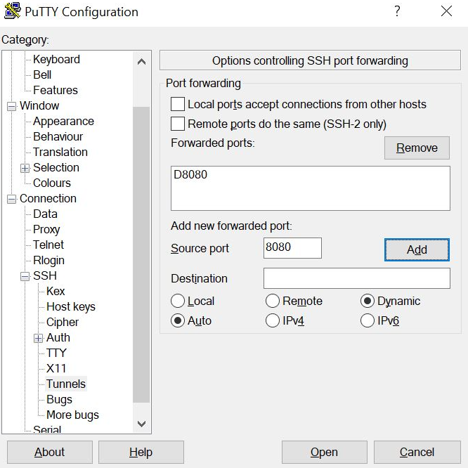
-
Подключитесь к своему VPS, используя эти настройки
-
Настройте браузер на использование localhost:8080 в качестве Socks-прокси
-
Готово!
Когда Tor и VPN невозможныλ
СОБЛЮДАЙТЕ КРАЙНЮЮ ОСТОРОЖНОСТЬ: ЭТО ВЕСЬМА РИСКОВАННО.
Возможны наихудшие ситуации, когда использование Tor и VPN невозможно из-за масштабной активной цензуры или блокировок. Даже при использовании мостов Tor (см. Использование мостов Tor во враждебной среде)
Также могут возникнуть ситуации, когда само по себе использование Tor или VPN может вызывать подозрения и быть опасным для вашей безопасности. В таком случае вы можете находиться в очень враждебной среде с высоким уровнем слежки и контроля.
Но вы всё равно хотите сделать что-то анонимно, не раскрывая и не допуская утечки какой-либо информации.
В таком случае моя рекомендация на крайний случай — безопасно подключиться на расстоянии к публичному Wi-Fi (см. Найдите безопасные места с достойным публичным Wi-Fi) с помощью ноутбука и «небезопасного браузера» Tails. См. https://tails.boum.org/contribute/design/Unsafe_Browser/ [Archive.org].
Если одно только использование Tor подозрительно или рискованно, не позволяйте Tails пытаться установить соединение с Tor при запуске, выполнив следующее:
-
При запуске откройте Additional Settings.
-
Включите Unsafe Browser.
-
Измените подключение с Direct на "Configure a Tor Bridge or Local Proxy"
-
После запуска подключитесь к безопасной сети
-
По запросу просто закройте мастер подключения Tor (чтобы не устанавливать соединение с Tor)
-
Запустите и используйте Unsafe Browser
Мы настоятельно рекомендуем использовать направленную антенну дальнего действия типа «Yagi» с подходящим USB Wi-Fi-адаптером. По крайней мере, это позволит подключаться к публичным Wi-Fi с «безопасного расстояния», но помните, что мотивированный противник всё ещё может провести триангуляцию с нужным оборудованием. Поэтому этот вариант не следует использовать длительное время (в лучшем случае несколько минут). См. Использование антенны дальнего действия для подключения к публичному Wi-Fi с безопасного расстояния.
Использование Tails должно предотвращать локальные утечки данных (такие как MAC-адреса или телеметрия) и позволять вам использовать браузер, чтобы получить необходимое (утилиты, учётную запись VPN), прежде чем как можно быстрее покинуть это место.
В такой враждебной среде вместо Tails можно использовать другие маршруты (Whonix и Qubes OS без Tor/VPN), если вам нужна постоянность данных, но это может быть рискованнее. Лично мы не стали бы рисковать, если бы не было совершенно другого выхода. Если выберете этот вариант, чувствительные действия всегда выполняйте из обратимой/одноразовой ВМ. Никогда не из ОС хоста.
Если вы прибегаете к этому, старайтесь проводить в сети как можно меньше времени (минуты, а не часы).
Будьте в безопасности и крайне осторожны. Вы действуете исключительно на свой риск.
Рассмотрите возможность прочитать это старое, но всё ещё актуальное руководство: https://archive.flossmanuals.net/bypassing-censorship/index.html [Archive.org]
Подключение к публичному Wi-Fi с безопасного расстоянияλ
Можно получать доступ/подключаться к удалённым публичным Wi-Fi на расстоянии, используя недорогую направленную антенну, которая выглядит так:
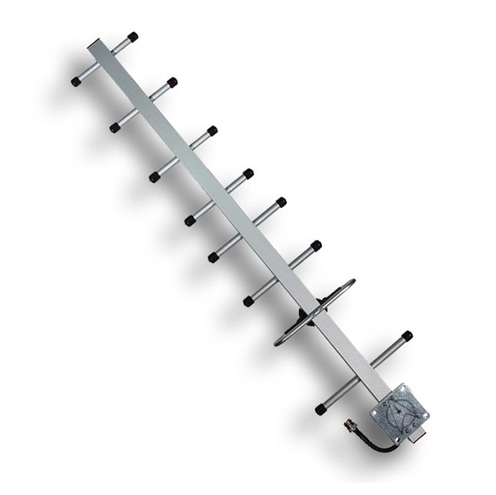
Такие антенны широко доступны по низкой цене в различных интернет-магазинах (Amazon, AliExpress, Banggood ...). Единственная проблема в том, что они не незаметны, и, возможно, придётся придумать, как их скрыть (например, в картонном тубусе для постера в рюкзаке). Или в достаточно большой сумке. При желании (но это рискованнее) можно даже рассмотреть использование из дома, если из окна открывается хороший вид на разные места, где доступен публичный Wi-Fi.
Такие антенны необходимо сочетать со специальными USB-адаптерами с разъёмом для внешней антенны и достаточно высокой мощностью.
Мы рекомендуем серию AWUS036 среди адаптеров Alfa (см. https://www.alfa.com.tw/ [Archive.org]). Но при желании можно выбрать и другие бренды, например TP-Link TL-WN722 (см. https://www.tp-link.com/us/home-networking/usb-adapter/tl-wn722n/ [Archive.org]).
См. это сравнение различных адаптеров: https://www.wirelesshack.org/best-kali-linux-compatible-usb-adapter-dongles.html [Archive.org] (обычно такие антенны используются специалистами по тестированию на проникновение для проверки Wi-Fi на расстоянии и часто обсуждаются в контексте дистрибутива Kali Linux).
Процесс прост:
-
Подключите и установите USB-адаптер в ОС хоста.
-
Не забудьте рандомизировать свой MAC-адрес, если купили этот адаптер онлайн, чтобы предотвратить отслеживание (в Tails это включено по умолчанию).
-
Подключите антенну дальнего действия к USB-адаптеру (вместо поставляемой).
-
Найдите удобную точку, откуда издалека видно место с доступным публичным Wi-Fi (например, крышу), но можно также спрятать антенну в сумке и просто сесть где-нибудь на скамейку.
-
Направьте направленную антенну в сторону публичного Wi-Fi.
-
Подключитесь к выбранной сети Wi-Fi.
Не забывайте, однако, что это лишь отсрочит действия мотивированного противника. Мотивированный противник может легко провести триангуляцию вашего сигнала за считанные минуты, как только достигнет физического места Wi-Fi, к которому вы подключаетесь (например, с помощью устройства вроде AirCheck https://www.youtube.com/watch?v=8FV2QZ1BPnw [Invidious], а также см. другие их продукты здесь https://www.netally.com/products/ [Archive.org]). Эти продукты легко разворачиваются на мобильных средствах (например, в автомобиле) и позволяют определить ваше местоположение за считанные минуты.
В идеале это «не должно быть проблемой», поскольку это руководство предлагает несколько способов скрыть ваш исходный IP с помощью VPN и Tor. Но если VPN и Tor вам недоступны, это может быть вашей единственной защитой.
Установка VPN в ВМ или ОС хостаλ
Скачайте установщик VPN-клиента вашего VPN-сервиса, оплаченного наличными, и установите его в ОС хоста (Tor через VPN, VPN через Tor через VPN) или в выбранной ВМ (VPN через Tor):
-
Руководство Whonix (должно работать с любым провайдером VPN): https://www.whonix.org/wiki/Tunnels/Connecting_to_a_VPN_before_Tor [Archive.org] (используйте приведённые ниже конфигурации Linux, чтобы получить необходимые файлы конфигурации)
-
Руководства Windows:
-
macOS:
-
Mullvad: https://mullvad.net/en/help/install-and-use-mullvad-app-macos/ [Archive.org]
-
Safing: Недоступен в macOS
-
Proton VPN: https://protonvpn.com/support/protonvpn-mac-vpn-application/ [Archive.org]
-
-
Linux:
Важно: Tor не поддерживает UDP, поэтому в случаях Tor через VPN (в ВМ) следует использовать в VPN-клиенте TCP.
Во всех случаях следует настроить запуск VPN при загрузке и включить «kill switch», если это возможно. Это дополнительный шаг, поскольку данное руководство предлагает решения, которые при сбое VPN всегда переходят на сеть Tor.
Вот несколько руководств, предоставленных рекомендуемыми в этом руководстве поставщиками VPN:
-
Windows:
-
Whonix Workstation: Скоро появится; это наверняка возможно, но мы пока не нашли подходящего и простого руководства. Также стоит помнить, что если VPN остановится в Whonix, вы всё равно останетесь за сетью Tor.
-
macOS:
-
Mullvad: то же, что в Windows; эта опция должна быть в предоставленном VPN-клиенте
-
iVPN: то же, что в Windows; эта опция должна быть в предоставленном VPN-клиенте
-
Proton VPN: то же, что в Windows с клиентом; эта опция должна быть в предоставленном VPN-клиенте https://protonvpn.com/blog/macos-vpn-kill-switch/ [Archive.org]
-
-
Linux:
-
Mullvad:
-
Proton VPN: https://github.com/ProtonVPN/linux-cli/blob/master/USAGE.md#kill-switch [Archive.org]
-
iVPN:
-
Обнаружение сетевого наблюдения и цензуры с OONIλ
Итак, что такое OONI? OONI означает Open Observatory of Network Interference и является подпроектом Tor Project293.
Прежде всего OONI позволит вам проверить в интернете наличие наблюдения/цензуры в вашей стране, просто просмотрев Explorer с результатами тестов других людей. Это можно сделать здесь: https://explorer.ooni.org/
Но эти тесты ограничены и могут не относиться к вашей личной ситуации. Если это так, можно рассмотреть запуск OONI Probe и проведение тестов самостоятельно.
Проблема в том, что при наблюдаемой сети ваши поставщики сети смогут видеть эти тесты и попытки подключения к различным сервисам. Другая проблема заключается в том, что существуют способы помешать корректной работе OONI467.
Хотя в обычной среде это может быть неважно, во враждебной среде это может подвергнуть вас риску. Поэтому проведение этих тестов может быть рискованным.
Если вы находитесь в такой враждебной среде, где подозреваете активный мониторинг сетевой активности и сам факт попытки доступа к некоторым ресурсам может подвергнуть вас риску, перед такой попыткой следует принять некоторые меры предосторожности:
-
Не запускайте тесты из домашней/рабочей сети.
-
Не запускайте эти тесты с известного устройства или смартфона; используйте только защищённую ОС на предпочтительно выделенном ноутбуке.
-
Вы не сможете сделать это из Tails, поскольку Tails по умолчанию попытается подключиться к Tor
-
Делайте это только по маршруту Qubes OS или Whonix из этого руководства после завершения одного из маршрутов.
-
-
Рассматривайте запуск этих тестов только на короткое время из публичного Wi-Fi с безопасного расстояния (см. А что, если Tor и VPN невозможны?).
Probe доступен здесь: https://ooni.org/install/ [Archive.org] для различных платформ (iOS, Android, Windows, macOS и Linux).
Проверка файлов на вредоносное ПОλ
Целостность (если доступна)λ
Обычно проверка целостности468 выполняется с помощью хешей файлов (как правило, хранящихся в файлах контрольных сумм). В старых файлах может использоваться CRC469, в более новых — MD5470, однако у них есть ряд слабостей (CRC, MD5 471), из-за которых они ненадёжны для проверки целостности файлов (что не означает, что они всё ещё не находят широкого применения в других контекстах).
Причина в том, что они недостаточно хорошо предотвращают коллизии472 и могут позволить злоумышленнику создать похожий, но вредоносный файл, который, несмотря на иное содержимое, даст тот же хеш CRC или MD5.
Поэтому обычно рекомендуется использовать хеши на основе SHA473; наиболее распространённым для проверки целостности файлов, вероятно, является SHA-256 на основе SHA-2474. SHA значительно устойчивее к коллизиям475, чем CRC и MD5. Коллизии SHA-256 или SHA-512 редки, и злоумышленнику сложно их вычислить.
Если источник файла предоставляет контрольную сумму SHA-256, без колебаний используйте её для подтверждения целостности файла. Учтите, что SHA-1 не рекомендуется, но всё же лучше, чем не иметь хеша для сравнения.
Сама эта контрольная сумма должна быть аутентифицированной/доверенной и доступной из аутентифицированного/доверенного источника (очевидно, не следует доверять файлу лишь потому, что к нему отдельно приложена контрольная сумма).
В случае этого руководства контрольные суммы SHA-256 доступны для каждого файла, включая PDF, и дополнительно аутентифицированы с помощью подписи GPG, что позволяет проверить подлинность контрольной суммы. Это приводит нас к следующему разделу — о подлинности.
Итак, как проверять контрольные суммы? (В данном случае SHA-256, но можно заменить на SHA-512
-
Windows476:
-
Откройте командную строку
-
Выполните
certutil -hashfile filename.txt sha256(замените sha256 на sha1, sha512 или md5) -
Сравните результат с результатом из источника, которому вы доверяете для этого файла
-
-
macOS :
-
Откройте Терминал
-
SHA: выполните
shasum -a 256 /full/path/to/your/file(замените 256 на 512 или 1 для SHA-1) -
MD5: выполните
md5 /full/path/to/your/file -
Сравните результат с результатом из источника, которому вы доверяете для этого файла
-
-
Linux:
-
Откройте Терминал
-
Выполните
shasum /full/path/to/your/file(замените shasum на sha256sum, sha512sum или md5sum) -
Сравните результат с результатом из источника, которому вы доверяете для этого файла
-
Помните: контрольные суммы — это всего лишь контрольные суммы. Совпадение контрольной суммы не означает, что файл безопасен.
Подлинность (если доступна)λ
Целостность — это одно. Подлинность — другое. Это процесс, позволяющий проверить, что некоторая информация подлинна и получена из ожидаемого источника. Обычно это делается путём подписывания информации (например, с помощью GPG477) с использованием криптографии с открытым ключом478.
Подпись может служить обеим целям и позволять проверять как целостность, так и подлинность.
Если подписи файлов доступны, всегда следует проверять их, чтобы подтвердить подлинность файлов.
В общих чертах:
-
Установите GPG для своей ОС:
-
Windows: gpg4win (https://www.gpg4win.org/ [Archive.org])
-
macOS: GPGTools (https://gpgtools.org/ [Archive.org])
-
Linux: в большинстве дистрибутивов он должен быть предустановлен
-
-
Скачайте ключ подписи из доверенного источника. Если кто-то не предоставляет вам ключ напрямую, следует сверить несколько версий на других сайтах, чтобы подтвердить, что вы используете правильный ключ (GitHub, GitLab, Twitter, Keybase, серверы открытых ключей...).
-
Импортируйте доверенный ключ (замените keyfile.asc именем файла доверенного ключа):
-
Windows:
- В командной строке выполните
gpg --import keyfile.asc
- В командной строке выполните
-
macOS:
- В Терминале выполните
gpg --import keyfile.asc
- В Терминале выполните
-
Linux:
- В Терминале выполните
gpg --import keyfile.asc
- В Терминале выполните
-
-
Проверьте подпись файла по импортированной (доверенной) подписи (замените filetoverify.asc файлом подписи, связанным с файлом, а filetoverify.txt — непосредственно проверяемым файлом):
-
Windows:
-
Выполните
gpg --verify-options show-notations --verify filetoverify.asc filetoverify.txt -
Результат должен показать, что подпись действительна и соответствует доверенной подписи, импортированной ранее.
-
-
macOS:
-
Выполните
gpg --verify-options show-notations --verify filetoverify.asc filetoverify.txt -
Результат должен показать, что подпись действительна и соответствует доверенной подписи, импортированной ранее.
-
-
Linux:
-
Выполните
gpg --verify-options show-notations --verify filetoverify.asc filetoverify.txt -
Результат должен показать, что подпись действительна и соответствует доверенной подписи, импортированной ранее.
-
-
Несколько других руководств:
-
https://support.torproject.org/tbb/how-to-verify-signature/ [Archive.org]
-
https://tails.boum.org/install/vm/index.en.html [Archive.org] (см. Basic OpenPGP verification).
-
https://www.whonix.org/wiki/Verify_the_Whonix_images [Archive.org]
Все эти руководства также применимы к любому другому файлу с любым другим ключом.
Безопасность (проверка на наличие вредоносного ПО)λ
В идеале каждую проверку следует выполнять в изолированных/защищённых виртуальных машинах. Это снижает вероятность того, что вредоносное ПО получит доступ к вашему хост-компьютеру.
Антивирусное программное обеспечениеλ
Возможно, вы спрашиваете себя: а как насчёт антивирусных решений? Что ж, нет... они не являются идеальным решением против многих современных вредоносных программ и вирусов, использующих полиморфный код479. Но это не значит, что они не могут помочь против менее сложных и известных атак. Всё зависит от того, как их использовать, поскольку само антивирусное ПО может стать вектором атаки.
Опять же, всё зависит от моделирования угроз. Может ли антивирусное ПО защитить вас от АНБ? Вероятно, нет. Может ли оно помочь против менее обеспеченных злоумышленников, использующих известное вредоносное ПО? Вероятно.
Некоторые будут в целом выступать против них, как Whonix480, но эта тема обсуждается и оспаривается даже в Whonix481 другими членами их сообщества.
Вопреки распространённым мифам, поддерживающим идею о том, что вредоносному ПО подвержена только Windows, а средства обнаружения бесполезны в Linux и macOS:
-
Да, существуют вирусы и вредоносное ПО для Linux482'483'484'485'486
-
Да, существуют вирусы и вредоносное ПО для macOS493'487488'489490
Мой взгляд на этот вопрос прагматичен. Для некоторых выборочных и ограниченных задач антивирусное ПО всё ещё может быть полезным. Но всё зависит от того, какое именно ПО и как вы используете:
-
Не используйте антивирусное ПО с защитой в реальном времени: оно часто работает с правами администратора и может стать вектором атаки.
-
Не используйте коммерческое антивирусное ПО, задействующее какую-либо «облачную защиту» или отправляющее компании обширную телеметрию и образцы.
-
Используйте в качестве дополнительной меры открытые автономные средства Anti-Virus/Anti-Malware без защиты в реальном времени для проверки некоторых файлов, например:
-
Windows/Linux/macOS/Qubes OS: ClamAV (https://www.clamav.net/ [Archive.org])
-
Linux/Qubes OS: RFXN Linux Malware Detect (https://github.com/rfxn/linux-malware-detect [Archive.org])
-
Linux/Qubes OS: Chkrootkit (http://www.chkrootkit.org/ [Archive.org])
-
-
Для неконфиденциальных файлов* также можно воспользоваться онлайн-сервисами, такими как VirusTotal (https://www.virustotal.com/gui/) или Hybrid-analysis (https://hybrid-analysis.com/).
-
Можно просто проверить в базе VirusTotal хеш вашего файла, если не хотите отправлять его (см. https://developers.virustotal.com/v3.0/docs/search-by-hash [Archive.org] (снова см. раздел [Целостность (если доступна):] с инструкциями по созданию хешей).
-
Для неконфиденциальных файлов доступны и другие инструменты; удобный список находится здесь: https://github.com/rshipp/awesome-malware-analysis#online-scanners-and-sandboxes [Archive.org]
-
-
Учтите: хотя VirusTotal может казаться очень удобным для проверки различных файлов, их «политика конфиденциальности» вызывает вопросы (см. https://support.virustotal.com/hc/en-us/articles/115002168385-Privacy-Policy [Archive.org]) и гласит:
"Когда вы отправляете образцы в Сервисы, если вы отправляете образцы в Сервисы, вы будете собирать всю информацию в самом образце и информацию о действии по его отправке".
Поэтому помните: любой документ, отправленный вами туда, будет сохранён, передан третьим лицам и использован в коммерческих целях, включая его содержимое. Не следует делать этого с конфиденциальной информацией; вместо этого полагайтесь на различные локальные антивирусные сканеры (которые не отправляют образцы в интернет).
Итак, если сомневаетесь:
-
Для неконфиденциальных файлов мы рекомендуем проверять любые документы/изображения/видео/архивы/программы, которые вы собираетесь открыть, в VirusTotal (или других подобных инструментах), потому что... почему бы и нет? (Либо загрузив файл, либо проверив хеш).
-
Для конфиденциальных файлов мы рекомендуем как минимум выполнить автономную проверку файлов ClamAV без привилегий.
Например, PDF-файлы этого руководства были отправлены в VirusTotal, поскольку они предназначены для публичного доступа и мы не видим веских аргументов против этого. Это не гарантирует отсутствия вредоносного ПО, но дополнительная проверка не повредит.
Ручная проверкаλ
Также можно попытаться проверить различные файлы на вредоносное ПО с помощью разных инструментов. Это можно сделать как дополнительную меру; особенно она полезна для документов, а не приложений и различных исполняемых файлов.
Эти методы требуют больше усилий, но могут быть полезны, если вы хотите пойти дальше.
PDF-файлыλ
Опять же, что касается PDF-файлов этого руководства и как объясняется в README моего репозитория, можно проверить аномалии с помощью PDFID, который можно скачать по адресу https://blog.didierstevens.com/programs/pdf-tools/ [Archive.org]:
-
Установите Python 3 (в Windows/Linux/macOS/Qubes OS)
-
Скачайте PDFID и распакуйте файлы
-
Выполните "python pdfid.py file-to-check.pdf"; для PDF-файлов в этом репозитории следующие значения должны быть равны 0:
/JS 0 #Это указывает на наличие Javascript
/JavaScript 0 #Это указывает на наличие Javascript
/AA 0 #Это указывает на наличие автоматического действия при открытии
/OpenAction 0 #Это указывает на наличие автоматического действия при открытии
/AcroForm 0 #Это указывает на наличие AcroForm, который может содержать JavaScript
/JBIG2Decode 0 #Это указывает на использование сжатия JBIG2, которое может применяться для обфускации содержимого
/RichMedia 0 #Это указывает на наличие в PDF мультимедийного содержимого, например Flash
/Launch 0 #Это подсчитывает действия запуска
/EmbeddedFile 0 #Это указывает на наличие встроенных файлов в PDF
/XFA 0 #Это указывает на наличие XML Forms в PDF
Итак, что, если PDF всё ещё кажется вам подозрительным? Не бойтесь... есть ещё несколько действий, которые помогут убедиться, что он не вредоносный:
-
Qubes OS: рассмотрите https://github.com/QubesOS/qubes-app-linux-pdf-converter [Archive.org], который преобразует PDF в сведённый файл изображения. Теоретически это должно удалить из него вредоносный код. Учтите, что форматирование PDF (ссылки, заголовки, закладки и ссылки на источники) также станет бесполезным.
-
(Устарело) Linux/Qubes OS (или, возможно, macOS через Homebrew либо Windows через Cygwin): теоретически это должно удалить из него вредоносный код, но также сделает форматирование PDF бесполезным (ссылки, заголовки, закладки и ссылки на источники). Это похоже на растеризацию этого сайта в PDF при переключении в тёмный режим. Учтите, что этот инструмент устарел и использует библиотеку «ImageMagick», известную несколькими проблемами безопасности491. Не используйте этот инструмент, даже если он рекомендован в других руководствах.
Другие типы файловλ
Ниже приведены различные ресурсы для этой цели, где можно узнать, какой инструмент использовать для каждого типа файлов:
-
Для документов/изображений: рассмотрите https://github.com/freedomofpress/dangerzone [Archive.org], вдохновлённый упомянутым выше Qubes PDF Converter и выполняющий то же самое, но хорошо поддерживаемый и работающий во всех ОС. Этот инструмент также работает с изображениями, файлами ODF и Office (предупреждение: в Windows инструмент требует установленный Docker-Desktop; это может (и будет) мешать работе Virtualbox и другого ПО виртуализации, поскольку требует включения Hyper-V. VirtualBox и Hyper-V плохо работают вместе492. Для удобства рассмотрите установку инструмента в Linux VM вместо Windows).
-
Для видео: будьте предельно осторожны, используйте актуальный проигрыватель в изолированной среде. Помните https://www.vice.com/en/article/v7gd9b/facebook-helped-fbi-hack-child-predator-buster-hernandez [Archive.org]
-
Эта практическая памятка от SANS: https://digital-forensics.sans.org/../media/analyzing-malicious-document-files.pdf [Archive.org] (предупреждение: многие из этих инструментов могут быть сложнее в использовании в Windows; возможно, стоит использовать их из Linux, например Tails, Whonix Workstation или выбранного вами дистрибутива Linux, как объясняется далее в этом руководстве. Существуют и другие руководства493, которые могут оказаться полезными).
-
Этот репозиторий GitHub с различными ресурсами по анализу вредоносного ПО: https://github.com/rshipp/awesome-malware-analysis [Archive.org]
-
Этот интересный PDF с описанием того, какой инструмент использовать для какого типа файлов: https://www.winitor.com/pdf/Malware-Analysis-Fundamentals-Files-Tools.pdf [Archive.org]
Даже при наличии всех этих ресурсов помните: вы всё равно можете столкнуться со сложным вредоносным ПО, которое не будет обнаружено этими инструментами. Будьте осторожны и по возможности обрабатывайте такие файлы в изолированных виртуальных машинах, чтобы ограничить поверхность и векторы атаки.
Обход локальных ограничений на контролируемых компьютерахλ
Могут возникнуть ситуации, когда единственное доступное вам устройство на самом деле вам не принадлежит, например:
-
Использование рабочего компьютера с ограничениями на доступные действия и запуск программ.
-
Злоупотребление функциями родительского контроля для наблюдения за использованием компьютера (несмотря на то, что вы взрослый человек, не давший на это согласия).
-
Злоупотребление различными приложениями для мониторинга использования компьютера против вашей воли.
Ситуация может выглядеть безнадёжной, но это не обязательно так: существуют безопасные способы обойти эти ограничения, в зависимости от того, насколько хорошо злоумышленники защитили ваш компьютер.
Портативные приложенияλ
Существует множество методов локального обхода этих ограничений. Один из них — использование портативных приложений494. Эти приложения не требуют установки в системе и могут запускаться с USB-накопителя или из любого другого места.
Но мы не рекомендуем этот метод.
Дело в том, что такие портативные приложения не обязательно будут скрыты (и не обязательно смогут скрыться) от отчётов об использовании и криминалистического анализа. Этот метод слишком рискован и, вероятно, вызовет проблемы, если его заметят в столь враждебной среде.
Даже самые простые средства контроля (надзора или родительского контроля) будут отправлять вашему противнику подробные сведения об использовании приложений.
Загружаемые Live-системыλ
Именно этот метод мы рекомендуем в подобных случаях.
Вашему противнику относительно легко предотвратить его, настроив элементы управления в BIOS/UEFI микропрограммы (см. Настройки Bios/UEFI/микропрограммы вашего ноутбука), но обычно большинство противников упускают такую возможность, поскольку она требует больше технических знаний, чем простое использование ПО.
Этот метод может даже снизить подозрения и повысить правдоподобность вашего отрицания, поскольку противник думает, что всё под контролем и в его отчётах всё выглядит нормально.
Этот метод зависит лишь от одной функции безопасности (которую в большинстве случаев, вероятно, не включили): безопасности загрузки.
Безопасность загрузки делится на несколько типов:
-
Простой пароль BIOS/UEFI, предотвращающий изменение порядка загрузки. Это означает, что вы не сможете запустить такую Live-систему вместо контролируемой ОС без ввода пароля BIOS/UEFI.
-
Secure Boot. Это «стандартная» функция, не позволяющая запускать на компьютере неподписанные системы. Хотя её можно настроить так, чтобы разрешать только контролируемую ОС, по умолчанию она обычно допускает запуск целого ряда подписанных систем (например, подписанных Microsoft или производителем).
Secure Boot относительно легко обойти, поскольку существует множество Live-систем, совместимых с Secure Boot (то есть подписанных), которые будут разрешены вашим ноутбуком.
Пароль BIOS/UEFI, напротив, гораздо сложнее обойти без риска. В таком случае у вас остаются два варианта:
-
Угадать/знать пароль, чтобы изменить порядок загрузки ноутбука, не вызывая подозрений
-
Сбросить пароль различными методами. Мы не рекомендуем делать это, потому что, если противник приложил дополнительные усилия для включения этой функции безопасности, он, вероятно, заподозрит неладное при её отключении, а это может значительно повысить подозрения и снизить правдоподобность вашего отрицания.
Опять же, эту функцию обычно упускают из виду большинство неопытных/ленивых противников и, по моему опыту, оставляют отключённой.
Это ваш лучший шанс обойти локальные средства контроля без следов.
Причина в том, что большинство средств контроля находятся в программном обеспечении основной ОС и отслеживают лишь то, что происходит внутри неё. Эти меры не смогут отслеживать то, что происходило на уровне оборудования/микропрограммы до загрузки ОС.
Меры предосторожностиλ
Хотя вы можете легко обойти локальные ограничения с помощью Live-системы, такой как Tails, помните, что сеть также может отслеживаться на предмет необычной активности.
Необычная сетевая активность с компьютера в то время, когда он, по всей видимости, выключен, может вызвать подозрения.
Если вы прибегаете к этому, никогда не делайте этого из отслеживаемой/известной сети, а только из безопасной другой сети. В идеале — из безопасной публичной сети Wi-Fi (см. Найдите безопасные места с хорошим публичным Wi-Fi).
Не используйте Live-систему на устройстве под программным надзором/мониторингом в известной сети.
Обратитесь к маршруту Tails для достижения этой цели. См. разделы маршрут Tails и Что делать, когда Tor и VPN невозможны?.
Выбор браузера для гостевой VMλ
Временное важное предупреждение: см. [Атаки деанонимизации через микроархитектурные побочные каналы:] для всех браузеров, кроме Tor Browser.
Существует 6 вариантов браузера для использования в гостевой/одноразовой VM:
-
Brave (на основе Chromium)
-
Edge (на основе Chromium, только Windows)
-
Firefox
-
Safari (только macOS VM)
-
Tor Browser
Ниже приведена сравнительная таблица одного теста отпечатков для различных браузеров с их нативными настройками (но с включённым Javascript для удобства использования, кроме самого безопасного режима Tor).
Отказ от ответственности: хотя эти тесты и полезны, они не дают окончательного вывода о реальной устойчивости к снятию отпечатка. Однако они помогают сравнить браузеры между собой.
| Браузер | https://coveryourtracks.eff.org/ Тест отпечатка с настоящей рекламой |
|---|---|
| Safari (обычный режим)* | Не пройден (уникальный) |
| Safari (приватное окно) * | Не пройден (уникальный) |
| Edge (обычный режим)** | Не пройден (уникальный) |
| Edge (приватное окно) ** | Не пройден (уникальный) |
| Firefox (обычный режим) | Не пройден (уникальный) |
| Firefox (приватное окно) | Не пройден (уникальный) |
| Chrome (обычный режим) | Не пройден (уникальный) |
| Chrome (приватное окно) | Не пройден (уникальный) |
| Brave (обычный режим) | Пройден (рандомизированный) |
| Brave (приватное окно) | Пройден (рандомизированный) |
| Brave (окно Tor) | Пройден (рандомизированный) |
| Tor Browser (обычный режим) | Частично |
| Tor Browser (более безопасный режим) | Частично |
| Tor Browser (самый безопасный режим) | Неизвестно (результат не загрузился) |
- *: только macOS. **: только Windows.
Ещё один полезный ресурс для сравнения браузеров: https://privacytests.org/ [Archive.org]
Braveλ
Это мой рекомендуемый/предпочтительный браузер для гостевых VM. Это не мой рекомендуемый выбор браузера для хост-ОС, где мы настоятельно рекомендуем Tor Browser, как рекомендуют и сами его разработчики495.
Почему Brave, несмотря на противоречия496?
-
Позже у вас будет меньше проблем при создании учётных записей (капчи...). Это основано на нашем опыте создания множества сетевых личностей с помощью различных браузеров. Вам придётся поверить нам на слово.
-
Вы получите встроенную блокировку рекламы, недоступную по умолчанию в других браузерах без добавления расширений497.
-
Производительность, вероятно, лучше, чем у Firefox498.
-
Brave, вероятно, лучше других сопротивляется снятию отпечатка499.
-
Безопасность браузеров на основе Chromium, вероятно, выше, чем Firefox500'501. В контексте этого руководства безопасности следует отдавать приоритет, чтобы не дать уязвимости или эксплойту получить доступ к VM.
-
Сравнение обоих от Mozilla: https://www.mozilla.org/en-US/firefox/browsers/compare/brave/ [Archive.org]
-
Сравнение обоих от Techlore: https://www.youtube.com/watch?v=qkJGF3syQy4 [Invidious]
-
Весь трафик в любом случае будет направляться через VPN поверх Tor. Поэтому, даже если вы по ошибке согласитесь на сбор некоторой телеметрии, это не так важно. Помните, что в этой модели угроз анонимности нас прежде всего интересуют анонимность и безопасность. Конфиденциальность наших сетевых личностей не так важна, если только проблема конфиденциальности не является также проблемой безопасности, которая может помочь деанонимизировать вас.
-
Было установлено, что Brave не отправляет идентифицируемую телеметрию по сравнению с другими браузерами502.
Ungoogled-Chromiumλ
Этот браузер считается угрозой безопасности из-за систематического отставания в выпуске исправлений безопасности503.
Настоятельно рекомендуется не использовать Ungoogled-Chromium.
Edgeλ
Это только для пользователей Windows. Edge тоже является надёжным выбором.
-
Позже у вас будет меньше проблем при создании учётных записей (капчи...). Это основано на нашем опыте создания множества сетевых личностей с помощью различных браузеров. Вам придётся поверить нам на слово.
-
Более высокая безопасность, чем у Firefox, поскольку он основан на Chromium504'505.
-
Более высокая производительность, чем у Firefox.
-
Весь трафик в любом случае будет направляться через Tor.
-
Может получить дополнительную защиту с помощью Microsoft Defender Application Guard (MDAG)506. Учтите, что эту функцию, к сожалению, нельзя включить в VM Virtualbox.
-
Встроенная блокировка трекеров (аналогично Brave Shields).
Минусы:
- Придётся отключить некоторую телеметрию в браузере
Safariλ
Стандартный браузер macOS.
Плюсы:
- Это браузер с достойной безопасностью и возможностями изоляции.
Минусы:
-
Он доступен только в macOS (очевидно)
-
Для установки расширений требуется войти в App Store (это невозможно в рамках данного руководства, поскольку используется VM)
-
Даже если бы это было возможно, в нём нет лучших расширений, доступных для Firefox и Chrome.
В целом мы не рекомендуем использовать Safari в macOS VM; вместо этого выберите другой браузер, например Brave или Firefox.
Firefoxλ
И, наконец, можно выбрать Firefox,
Плюсы:
-
Он находится вне мира «Chromium» и не участвует в расширении рыночной доли Chromium
-
Помимо независимости от мира Chromium, он также полностью вне мира Google (хотя Mozilla Foundation почти полностью финансируется Google507).
-
Впечатляющий объём настройки через расширения для любых возможных потребностей.
-
Firefox можно значительно укрепить, чтобы почти сравнять его безопасность с браузерами на основе Chromium.
Минусы:
- Более низкая производительность по сравнению с Chromium.
Безопасность Firefox (особенно изоляция) вероятно слабее, чем у браузеров на основе Chromium508.
- Вы будете чаще сталкиваться с капчами (это основано на моих тестах).
Tor Browserλ
Если вы особенно параноидальны, хотите использовать Tor Browser и иметь «Tor поверх VPN поверх Tor», можно также использовать Tor Browser в VM. Это совершенно бессмысленно/бесполезно.
Мы не рекомендуем этот вариант. Это просто глупо.
Укрепление защиты браузеровλ
В этом разделе мы обсудим укрепление защиты браузеров. Особое внимание будет уделено разнице между снижением отслеживания и уклонением от отслеживания, а также плюсам и минусам каждого подхода. Сначала определим, что это такое, как описывает Рохан Кумар:
-
Снижение отслеживания (TR)
- TR направлено на уменьшение объёма данных, собираемых о видимом пользователе. Оно сокращает распространение цифрового следа главным образом блокировкой трекеров. Иногда это может увеличить размер цифрового следа.
-
Уклонение от отслеживания (TE)
- TE уменьшает объём данных, раскрываемых пользователем. Вместо устранения самого сбора данных TE не допускает, чтобы полезные данные становились доступными с самого начала. Иными словами, оно уменьшает размер цифрового следа.
Браузеры, обеспечивающие снижение отслеживания, предназначены для более повседневной [модели угроз]Ресурсы по моделированию угроз, тогда как уклонение от отслеживания сложнее. Но необходимо рассмотреть оба подхода. Снижение отслеживания сосредоточено на просмотре веб-страниц с меньшим отслеживанием. Оно включает такие вещи, как блокировка содержимого, межсетевые экраны, отказы от участия, отключение телеметрии и т. д. Если вы зашли так далеко в руководстве, то, вероятно, уже хорошо это понимаете. Уклонение от отслеживания, напротив, предполагает такие методы, как использование портативного Tor Browser Bundle для анонимизации цифрового следа и сетевой личности, отказ от идентифицируемых расширений и использование случайных задержек нажатий клавиш. Оно больше направлено на минимизацию цифрового следа, чтобы создать среду просмотра и использования интернета, менее пригодную для снятия отпечатка.
Краткое упоминание этого необходимо для определения потребностей обеих операций. Чтобы достичь хороших стандартов и выработать лучшие привычки при просмотре веб-страниц, нужен определённый уровень понимания обоих подходов. В целом это может и будет давать вам более жизнеспособное решение против публичных трекеров, государственных организаций, пытающихся связать ваши привычки просмотра с вами, и даже просто троллей, пытающихся доксить вас.
Ниже приведены рекомендуемые наиболее безопасные маршруты для каждого браузера в соответствии с текущими версиями их программного обеспечения и возможностями каждого из них стать безопаснее. В руководстве мы рассмотрим как снижение, так и уклонение от отслеживания; вам не потребуется написать ни единой строки кода.
Braveλ
-
Скачайте и установите браузер Brave с https://brave.com/download/ [Archive.org]
-
Откройте браузер Brave
-
Перейдите в Settings > Appearances (
brave://settings/appearance)-
Отключите "Show Top Sites"
-
Отключите "Show Brave Suggested Sites"
-
Отключите "Show Brave Rewards icon in address bar"
-
Включите "Always show full URLs"
-
-
Перейдите в Settings > Shields (
brave://settings/shields)-
Установите Shields в значение Advanced
-
Установите для "Trackers and Ads blocking" значение Aggressive
-
Установите для Upgrade connections to HTTPS значение Enabled
-
Установите для Cookie blocking значение Only cross-site
-
Установите для Fingerprinting blocking значение Standard или Strict
-
-
Перейдите в Settings > Social media blocking (
brave://settings/socialBlocking)- Снимите флажки со всего, если это не требуется
-
Перейдите в Settings > Search engine (
brave://settings/search) -
Перейдите в Settings > Extensions (
brave://settings/extensions)-
Отключите всё, кроме "Private Window with Tor"
-
Установите для обоих методов Resolve значение "Ask"
-
-
Перейдите в Settings > Wallet (
brave://settings/wallet)-
Отключите "Show Brave Wallet icon on toolbar"
-
Установите для Default Ethereum wallet значение "None"
-
Установите для Default Solana wallet значение "None"
-
-
Перейдите в Settings > Privacy and Security (
brave://settings/privacy)-
Оставьте WebRTC в значении "Default"
-
Отключите "Allow privacy-preserving product analytics (P3A)"
-
Отключите "Automatically send daily usage ping to Brave"
-
Перейдите в "Clear Browsing Data"
-
Выберите On Exit
-
Установите все флажки
-
Нажмите "Save"
-
-
-
Откройте новую вкладку
-
Нажмите "Customize" в правом нижнем углу
- Отключите всё в Customize Dashboard, кроме, возможно, часов
-
Перейдите в Settings > Shields > Content filters (
brave://settings/shields/filters)-
Выберите любые дополнительные фильтры для блокировки рекламы по своему усмотрению
- Рекомендуется: CJX's Annoyance List, Easylist-Cookie List, Fanboy Annoyances List, Fanboy Social List, Fanboy's Mobile Notifications List и uBlock Annoyances List
-
Добавьте пользовательские списки фильтров
-
Добавьте инструмент сокращения URL Actually Legitimate, использующий правила ClearURLs, приведённые ниже
-
Добавьте защиту AdGuard от отслеживания в URL, которая включает универсальные правила
$removeparam
-
-
Чтобы сохранить все применённые фильтры, нажмите "Save"
-
-
Никогда не включайте Brave Rewards (кнопка должна быть скрыта на всех сайтах)
Дополнения, которые стоит рассмотреть для Brave, если вам нужны дополнительные меры защиты:
-
LocalCDN (https://chrome.google.com/webstore/detail/localcdn/njdfdhgcmkocbgbhcioffdbicglldapd)
- Альтернатива: DecentralEyes (https://chrome.google.com/webstore/detail/decentraleyes/ldpochfccmkkmhdbclfhpagapcfdljkj)
-
PrivacyBadger (https://chrome.google.com/webstore/detail/privacy-badger/pkehgijcmpdhfbdbbnkijodmdjhbjlgp)
-
NoScript (https://chrome.google.com/webstore/detail/noscript/doojmbjmlfjjnbmnoijecmcbfeoakpjm)
-
Либо ClearURLs (https://chrome.google.com/webstore/detail/clearurls/lckanjgmijmafbedllaakclkaicjfmnk) ИЛИ приведённый выше пользовательский список
-
LibRedirect (https://libredirect.github.io/)
На этом всё: вы должны быть достаточно защищены. При максимальной осторожности можно также просто включить «Block Scripts», чтобы отключить JavaScript. Обратите внимание: даже отключение JavaScript может не обеспечить полной защиты509.
Ungoogled-Chromiumλ
Этот браузер считается угрозой безопасности из-за систематического отставания в выпуске исправлений безопасности510.
Настоятельно рекомендуется не использовать Ungoogled-Chromium.
Edgeλ
Только для Windows:
-
Откройте Edge
-
Перейдите в Settings
-
Перейдите в Profiles и убедитесь, что во всех разделах сняты все флажки (Personal Info, Passwords, Payment info, Profile preferences)
-
Перейдите в Privacy, search, and services:
-
Перейдите в Tracking Prevention:
-
Установите Strict или хотя бы Balanced
-
Настройте постоянное использование Strict в окнах InPrivate
-
-
Перейдите в Privacy:
-
Включите отправку Do Not Track
-
Отключите параметры, позволяющие веб-сайтам проверять ваши способы оплаты
-
-
Перейдите в Optional Diagnostic Data:
- Отключите этот параметр
-
Перейдите в Personalize your Web Experience:
- Отключите этот параметр
-
Перейдите в Security
- Отключите всё
-
Перейдите в Services
-
Отключите всё
-
В разделе Address Bar and Search:
- Отключите всё и смените поисковую систему (см. Поисковые системы)
-
-
Перейдите в Cookies and Sites Permissions:
-
В разделе All Permissions:
-
В разделе Cookies убедитесь, что установлен флажок "Block Third-Party Cookies"
-
Заблокируйте всё, кроме:
-
Javascript
-
Images
-
-
-
-
Включите Application Guard для Edge (только на ОС хоста; в виртуальной машине VirtualBox это невозможно):
Пропустите этот раздел, если это виртуальная машина
-
Откройте Панель управления.
-
Нажмите Programs
-
Нажмите ссылку Turn Windows features on or off
-
Установите флажок Windows Defender Application Guard
-
Нажмите OK.
-
Нажмите Restart.
-
Теперь можно открыть Edge и новое окно "Application Guard".
На этом настройка Edge завершена, но вы также можете установить расширения из Chrome Store, например:
-
uBlock Origin (https://chrome.google.com/webstore/detail/ublock-origin/cjpalhdlnbpafiamejdnhcphjbkeiagm)
-
LocalCDN (https://chrome.google.com/webstore/detail/localcdn/njdfdhgcmkocbgbhcioffdbicglldapd)
- Альтернатива: DecentralEyes (https://chrome.google.com/webstore/detail/decentraleyes/ldpochfccmkkmhdbclfhpagapcfdljkj)
-
PrivacyBadger (https://chrome.google.com/webstore/detail/privacy-badger/pkehgijcmpdhfbdbbnkijodmdjhbjlgp)
-
HTTPS Everywhere (https://chrome.google.com/webstore/detail/https-everywhere/gcbommkclmclpchllfjekcdonpmejbdp)
-
NoScript (https://chrome.google.com/webstore/detail/noscript/doojmbjmlfjjnbmnoijecmcbfeoakpjm)
-
ClearURLs (https://chrome.google.com/webstore/detail/clearurls/lckanjgmijmafbedllaakclkaicjfmnk)
-
LibRedirect (https://libredirect.github.io/)
Safariλ
Только для macOS:
-
Откройте Safari
-
Нажмите меню Safari в левом верхнем углу
-
Нажмите Preferences
-
На вкладке General:
-
Измените New Windows на "Empty Page"
-
Измените New Tabs на "Empty page"
-
Измените параметр Remove History after на "1 day"
-
Измените Remove Download list items на "When Safari Quits" или "When Successful Download"
-
Снимите флажок "Open Safe Files After Downloading"
-
-
На вкладке Security:
- Отключите "Warn when visiting a Fraudulent Website" (этот параметр отправляет посещаемые вами URL в Google для проверки)
-
На вкладке Privacy:
- Снимите флажок "Web Advertising"
-
На вкладке Advanced:
- Установите флажок "Show full website address"
-
Рассмотрите дополнительные меры предосторожности в браузере при включённом JavaScript
На этом всё. К сожалению, вы не сможете устанавливать расширения, поскольку для этого потребуется войти в App Store, чего нельзя сделать из виртуальной машины macOS. Мы снова не рекомендуем использовать Safari в виртуальной машине macOS: лучше перейти на Brave или Firefox.
Firefoxλ
Обычные настройкиλ
-
Откройте Firefox
-
На домашней странице Firefox:
-
Нажмите Personalize
-
Снимите флажки / отключите всё
-
-
Откройте Settings:
-
Перейдите в Search
- Измените поисковую систему (см. Поисковые системы)
-
Перейдите в Privacy & Security
-
Установите Custom
-
Cookies: выберите All Third-Party Cookies
-
Tracking Content: In all Windows
-
Установите флажок Cryptominers
-
Установите флажок Fingerprinters
-
-
Настройте постоянную отправку "Do Not Track"
-
-
Перейдите в Logins and Passwords
- Снимите флажок "Ask to save logins and passwords for websites"
-
Перейдите в Permissions
-
Location: установите флажок блокировки новых запросов
-
Camera: установите флажок блокировки новых запросов
-
Microphone: установите флажок блокировки новых запросов
-
Notifications: установите флажок блокировки новых запросов
-
Autoplay: выберите Disable Audio and Video
-
Virtual Reality: установите флажок блокировки новых запросов
-
Установите флажок Block Pop-ups
-
Установите флажок Warn when websites try to install add-ons
-
-
Перейдите в Firefox Data Collection and Use
- Отключите всё
-
Перейдите в HTTPS-Only Mode
- Включите его во всех окнах
-
Расширенные настройкиλ
Рассмотрите Arkenfox/user.js — активно поддерживаемую и очень простую в использовании конфигурацию браузера, которая применяет файл "user.js" для настройки всех параметров конфиденциальности и значений, предотвращающих запись на диск. Ниже мы рекомендуем как минимум задать перечисленные значения about:config, если вы не используете конфигурацию Arkenfox. Arkenfox применяет множество других параметров, но эти — необходимый минимум для защиты при просмотре веб-страниц. Помните: без каких-либо действий при использовании браузера с настройками по умолчанию уже раскрывается множество уникальных идентифицируемых и отслеживаемых характеристик. Подробнее о небезопасности настроек браузеров по умолчанию см. в разделе Отпечатки браузера и устройства.
Эти настройки объясняются в следующих ресурсах, расположенных в порядке рекомендуемости, если вам нужны подробности о назначении каждой настройки:
-
https://wiki.archlinux.org/title/Firefox/Privacy [Archive.org] (наиболее рекомендуется)
-
https://proprivacy.com/privacy-service/guides/firefox-privacy-security-guide [Archive.org]
Ниже приведено большинство шагов, объединённых из указанных выше источников (некоторые пропущены из-за расширений, рекомендованных далее):
-
Перейдите к "about:config" в адресной строке
-
Нажмите Accept the Risk and Continue
-
Безопасные настройки (не должны ничего нарушить)
-
Отключите Firefox Pocket
- Установите для "extensions.pocket.enabled" значение false
-
Отключите всю телеметрию
-
Установите для "browser.newtabpage.activity-stream.feeds.telemetry" значение false
-
Установите для "browser.ping-centre.telemetry" значение false
-
Установите для "browser.tabs.crashReporting.sendReport" значение false
-
Установите для "devtools.onboarding.telemetry.logged" значение false
-
Установите для "toolkit.telemetry.enabled" значение false
-
Найдите "toolkit.telemetry.server" и очистите его
-
Установите для "toolkit.telemetry.unified" значение false
-
Установите для "beacon.enabled" значение false
-
-
Отключите предварительную загрузку
-
Установите для "network.dns.disablePrefetch" значение true
-
Установите для "network.dns.disablePrefetchFromHTTPS" значение true
-
Установите для "network.predictor.enabled" значение false
-
Установите для "network.predictor.enable-prefetch" значение false
-
Установите для "network.prefetch-next" значение false
-
Установите для "browser.urlbar.speculativeConnect.enabled" значение false
-
-
Отключите JavaScript в PDF-файлах
- Установите для "pdfjs.enableScripting" значение false
-
Отключите устаревшее SSL-шифрование
-
Установите для "security.ssl3.rsa_des_ede3_sha" значение false
-
Установите для "security.ssl.require_safe_negotiation" значение true
-
-
Отключите учётные записи Firefox
- Установите для "identity.fxaccounts.enabled" значение false
-
Отключите геолокацию
- Установите для "geo.enabled" значение false
-
Отключите веб-уведомления
- Установите для "dom.webnotifications.enabled" значение false
-
Отключите уведомления о копировании/вставке
- Установите для "dom.event.clipboardevents.enabled" значение false
-
Отключите получение статуса микрофона/камеры
- Установите для "media.navigator.enabled" значение false
-
Включите "Do Not Track"
- Установите для "privacy.donottrackheader.enabled" значение true
-
Отключите SafeBrowsing
-
Установите для "browser.safebrowsing.malware.enabled" значение false
-
Установите для "browser.safebrowsing.phishing.enabled" значение false
-
Установите для "browser.safebrowsing.downloads.remote.enabled" значение false
-
-
-
Умеренные настройки (могут нарушить работу некоторых веб-сайтов)
-
Отключите WebRTC (это нарушит работу всех веб-сайтов с видео- и аудиосвязью)
-
Установите для "media.peerconnection.enabled" значение false
-
Установите для "media.navigator.enabled" значение false
-
-
Отключите WebGL (это нарушит работу некоторых веб-сайтов с ресурсоёмким медиаконтентом)
- Установите для "webgl.disabled" значение true
-
Отключите DRM
-
Установите для "media.eme.enabled" значение false
-
Установите для "media.gmp-widevinecdm.enabled" значение false
-
-
Настройте поведение файлов cookie
-
Установите для "network.cookie.cookieBehavior" значение 1
-
Установите для "network.http.referer.XOriginPolicy" значение 2
-
-
Измените политику referer
- Установите для "network.http.referer.XOriginTrimmingPolicy" значение 2
-
Измените поведение Session Storage
- Установите для "browser.sessionstore.privacy_level" значение 2
-
Отключите проверку соединения для порталов авторизации
- Установите для "network.captive-portal-service.enabled" значение false
-
Отключите "Trusted Recursive Resolver"
- Создайте или найдите "network.trr.mode" и установите значение 5
-
-
Расширенные настройки (они нарушат работу некоторых веб-сайтов)
-
Установите для "privacy.resistFingerprinting" значение true
-
Установите для "privacy.trackingprotection.fingerprinting.enabled" значение true
-
Установите для "privacy.trackingprotection.cryptomining.enabled" значение true
-
Установите для "privacy.trackingprotection.enabled" значение true
-
Установите для "browser.send_pings" значение false
-
Установите для "change privacy.firstparty.isolate" значение true
-
Установите для "network.http.referer.XOriginPolicy" значение "2" или используйте Smart Referer ниже
-
Установите для "change network.cookie.lifetimePolicy" значение 2 (это удаляет все файлы cookie после каждого сеанса)
-
-
Дополнения для установки/рассмотренияλ
-
uBlock Origin (https://addons.mozilla.org/en-US/firefox/addon/ublock-origin/)
-
Smart Referer (https://addons.mozilla.org/firefox/addon/smart-referer/)
- Измените значение "network.http.referer.XOriginPolicy" с "2" на "0" (чтобы расширение работало). Отключите белый список (снимите флажок Use default whitelist) и установите Domain name matching в значение Strict.
-
NoScript (https://addons.mozilla.org/en-US/firefox/addon/noscript/)
-
По умолчанию блокирует все сценарии без исключений. Необходим в обычном браузере, если вы хотите блокировать выполнение всех сценариев. Не нужен в Tor Browser.
-
В настройках измените параметры Default, установив флажки у всего, кроме "ping", "unrestricted CSS" и "LAN". Это повторно включит JavaScript и другие веб-функции, чтобы предотвратить поломку многих веб-сайтов
-
-
LibRedirect (https://libredirect.github.io/)
- Перенаправляет менее дружелюбные к конфиденциальности веб-сайты, такие как YouTube и Wikipedia, на более дружелюбные к конфиденциальности альтернативы с открытым исходным кодом
-
Skip Redirect (https://github.com/sblask/webextension-skip-redirect)
Дополнительные ресурсыλ
Вот ещё два недавних руководства по усилению защиты Firefox:
-
https://chrisx.xyz/blog/yet-another-firefox-hardening-guide/ [Archive.org]
-
https://ebin.city/~werwolf/posts/firefox-hardening-guide/ [Archive.org]
Виртуализацияλ
Итак, возможно, вы спрашиваете себя: что такое виртуализация511?
По сути, это как фильм «Начало», но с компьютерами. На физическом компьютере работают программно эмулированные компьютеры, называемые виртуальными машинами. При желании виртуальные машины могут работать и внутри других виртуальных машин (но в некоторых случаях для этого потребуется более мощный ноутбук).
Вот простая иллюстрация того, что такое виртуализация:
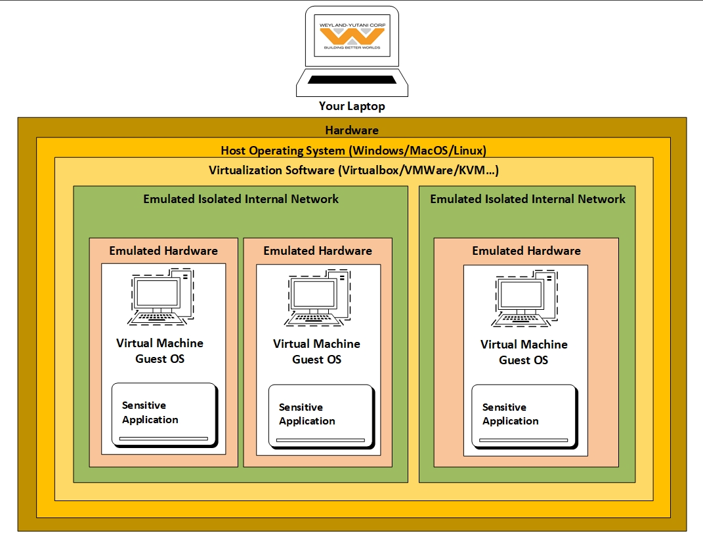
Каждая виртуальная машина — это изолированная среда. Помните: причины их использования заключаются в предотвращении следующих рисков:
-
Снижение риска утечек локальных данных и упрощение очистки в случае неполадок или подозрения на компрометацию.
-
Сокращение поверхности атак вредоносного ПО и эксплойтов (если ваша виртуальная машина скомпрометирована, противнику всё ещё нужно понять, что он находится в виртуальной машине, а затем получить доступ к ОС хоста, что не так просто).
-
Снижение риска утечек данных в интернете благодаря возможности применять строгие сетевые правила для доступа виртуальных машин к сети (например, направляя трафик через сеть Tor).
Риски вложенной виртуализацииλ
При вложенной виртуализации поверхность атаки по своей природе становится больше.
Вот некоторые сведения об узле, которые могут быть раскрыты через виртуальную машину:
-
Организационно уникальный идентификатор, или OUI, — уникальный идентификатор, назначаемый гостевым ВМ VMWare;
-
Ключи реестра Virtual Windows, такие как
ProductID, могут раскрывать среду хост-машины:HKEY_LOCAL_MACHINE\Software\Microsoft\Windows\CurrentVersion\ProductId XXXXX-123-1234567-12345 -
Драйверы HDD, GPU и мыши могут быть раскрыты через:
HKEY_LOCAL_MACHINE\System\CurrentControlSet\ -
Записи реестра покажут, что это виртуальная мышь:
%WINDIR%\system32\drivers\vmmouse.sys -
Регистры таблицы дескрипторов: https://stackoverflow.com/questions/52505313/what-are-descriptor-registers/52505743#52505743
- Поскольку это виртуальная машина, использующая те же ядра CPU, значения дескрипторов перемещаются, так как на каждый CPU есть место лишь для одного каждого идентификатора. Это явный признак, который используется продвинутым вредоносным ПО для обнаружения ВМ. Авторы вредоносного ПО применяют его, чтобы определить, запущена ли программа в криминалистической среде (например, Remnux или Flare VM) — популярных инструментах/ОС, используемых экспертами для анализа вредоносного ПО.
-
Гостевые ВМ также косвенно получают доступ к тому же оборудованию, что и хост-ОС.
См. https://www.malwarebytes.com/blog/news/2014/02/a-look-at-malware-with-virtual-machine-detection для ознакомления с дополнительными методами, которые вредоносное ПО использует для обнаружения виртуализации. Большинство этих методов предотвращается добавлением некоторых параметров в файл конфигурации ВМ (.vmx). https://blog.talosintelligence.com/2009/10/how-does-malware-know-difference.html
Использование мостов Tor во враждебных средахλ
В некоторых средах ваш интернет-провайдер может пытаться помешать вам получить доступ к Tor. Либо открытое использование Tor может представлять угрозу безопасности.
В таких случаях для подключения к сети Tor может потребоваться использовать мосты Tor (см. документацию Tor https://2019.www.torproject.org/docs/bridges [Archive.org] и документацию Whonix https://www.whonix.org/wiki/Bridges [Archive.org]). Кроме того, если у вас есть возможность, вам следует (серьезно!) рассмотреть запуск собственного моста https://blog.torproject.org/run-tor-bridges-defend-open-internet/ [Archive.org], поскольку это значительно поможет снизить уровень цензуры в мире.
Мосты — это специальные входные узлы Tor, не указанные в публичном каталоге Tor. Некоторые из них работают благодаря людям, запускающим расширение браузера Snowflake512, а другие работают на различных серверах по всему миру. Большинство этих мостов использует определенный метод обфускации под названием obfs4513.
Доступно только пользователям Tor для настольных систем: недавно проект Tor невероятно упростил доступ к мостам с помощью Connection Assist, и теперь это автоматически выполняется в враждебных или подвергающихся цензуре регионах. Просто откройте Tor Browser, и подключение будет настроено с учетом ваших потребностей в любой враждебной сети. Ранее под этим абзацем был список вариантов, необходимых для включения и настройки мостов, но теперь это делается автоматически с помощью moat. [Archive.org]
Вот определение из руководства Tor Browser514: «obfs4 делает трафик Tor похожим на случайный и не позволяет цензорам находить мосты путем сканирования Интернета. Мосты obfs4 с меньшей вероятностью будут заблокированы, чем их предшественники — мосты obfs3».
Некоторые из них называются мостами «Meek» и используют метод «Domain Fronting», при котором ваш клиент Tor (Tails, Tor Browser, Whonix Gateway) подключается к распространенной CDN, используемой другими сервисами. Для цензора это будет выглядеть так, будто вы подключаетесь к обычному веб-сайту, например Microsoft.com. Подробнее см. https://gitlab.torproject.org/legacy/trac/-/wikis/doc/meek.
Согласно определению из их руководства: «транспорты meek создают впечатление, что вы просматриваете крупный веб-сайт, а не используете Tor. meek-azure создает впечатление, что вы используете веб-сайт Microsoft». Мосты Snowflake создают впечатление, что ваши подключения — это телефонные звонки случайным пользователям Интернета. Это разновидность «domain fronting» 515. Подробное объяснение этих типов секретных «мостов» см. в статье "domain fronting" по ссылке из предыдущего абзаца.
Наконец, существуют также мосты Snowflake, которые полагаются на пользователей, запускающих расширение snowflake в своем браузере, чтобы самим становиться входными узлами. См. https://snowflake.torproject.org/ [Archive.org].
Сначала выполните следующий контрольный список, чтобы убедиться, что вы не можете обойти блокировку Tor (перепроверьте), и попробуйте использовать мосты Tor (https://bridges.torproject.org/ [Archive.org]):
-
(Рекомендуется при блокировке, но безопасно) Попробуйте получить мост obfs4 в настройках подключения Tor.
-
(Рекомендуется при блокировке, но безопасно) Попробуйте получить мост snowflake в настройках подключения Tor.
-
(Рекомендуется во враждебной/опасной среде) Попробуйте получить мост meek в настройках подключения Tor (например, в Китае это может быть вашим единственным вариантом).
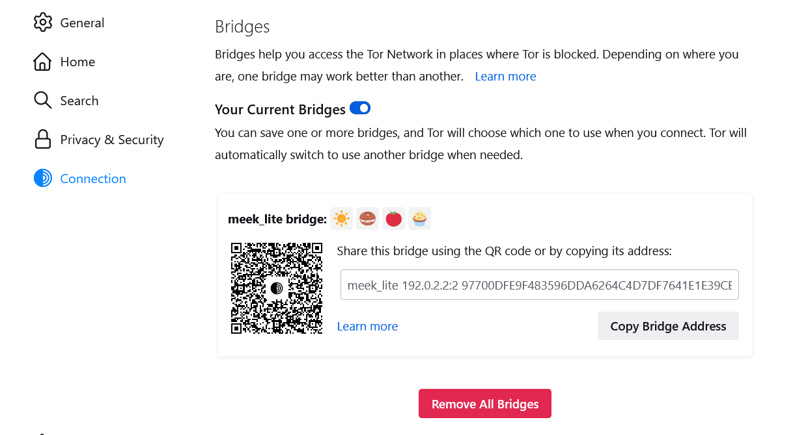
(Иллюстрация из настройки мостов Tor Browser)
Если ни один из этих встроенных методов не работает, можно попытаться получить мост вручную одним из следующих способов:
-
https://bridges.torproject.org/bridges?transport=meek (для моста meek)
-
https://bridges.torproject.org/bridges?transport=obfs4 (для моста obfs4)
Этот веб-сайт, очевидно, тоже может быть заблокирован или отслеживаться, поэтому вместо этого вы можете (если у вас есть возможность) попросить сделать это за вас человека, которому доверяете и с которым можете связаться через приложение для обмена сообщениями со сквозным шифрованием.
Наконец, вы также можете запросить мост по электронной почте, отправив письмо на bridges@torproject.org с пустой темой и следующим текстом: «get transport obfs4» или «get transport meek». У этого метода есть ограничение: он доступен только при отправке с адреса Gmail или Riseup.
- См.: [Примечание о Riseup:] Riseup потенциально скомпрометирован. Используйте его на свой страх и риск.
Надеемся, этих мостов будет достаточно, чтобы вы могли подключиться даже во враждебной среде.
Если нет, рассмотрите раздел Что делать, когда Tor и VPN невозможны?
Установка и использование Tor Browser для настольных системλ
Установкаλ
Это актуально для Windows, Linux и macOS.
-
Загрузите и установите Tor Browser согласно инструкциям с https://www.torproject.org/download/ [Archive.org]
-
Откройте Tor Browser
Использование и меры предосторожностиλ
- После открытия Tor Browser вы увидите кнопку Connect, флажок Always connect automatically и кнопку Configure connection. В настройках сети Tor можно настроить мосты для подключения к Tor, если из-за цензуры или блокировки возникают проблемы с подключением к Tor. Как объясняется здесь: Использование мостов Tor во враждебных средах, теперь Tor Browser для настольных систем выполняет это автоматически.
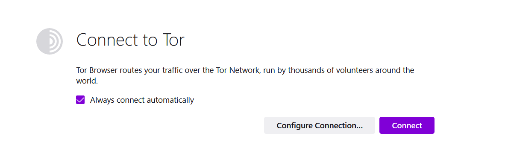
- Лично мы в случае цензуры или блокировки рекомендуем при необходимости использовать мосты Meek-Azure. Второй вариант — мосты Snowflake.
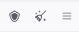
На этом этапе, все еще до подключения, нажмите маленький значок щита (вверху справа, рядом с адресной строкой) и выберите уровень безопасности (подробности см. в https://tb-manual.torproject.org/security-settings/ [Archive.org]). По сути, их три.
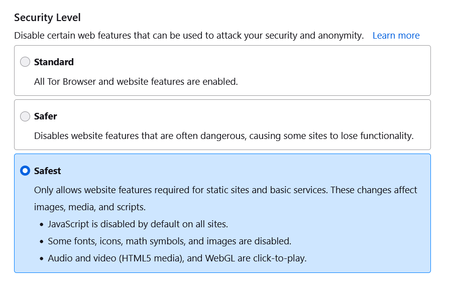
-
Standard (по умолчанию):
- Все функции включены (включая JavaScript)
-
Safer:
-
JavaScript отключен на сайтах без HTTPS
-
Некоторые шрифты и символы отключены
-
Воспроизведение любого мультимедиа — «нажмите для воспроизведения» (по умолчанию отключено)
-
-
Safest:
-
Javascript отключен везде
-
Некоторые шрифты и символы отключены
-
Воспроизведение любого мультимедиа — «нажмите для воспроизведения» (по умолчанию отключено)
-
По умолчанию мы рекомендуем уровень «Safest». Уровень «Safer» следует включить, если вам нужен доступ к веб-сайту, который не работает без JavaScript. Режим Safest, скорее всего, нарушит работу многих веб-сайтов, активно зависящих от JavaScript.
Если вы особенно осторожны, используйте по умолчанию уровень «Safest» и рассмотрите переход на Safer, если веб-сайт непригоден для использования из-за блокировки Javascript.
Необязательно и не рекомендуется проектом Tor: если вы не используете уровень «Safest», мы отступим от некоторых рекомендаций, но согласимся с другими (например, с проектом Tails и другими516) и фактически порекомендуем изменить Tor Browser по умолчанию, добавив два расширения:
-
uBlock Origin (как в Tails), оставив настройки расширения по умолчанию:
- Перейдите на https://addons.mozilla.org/en-US/firefox/addon/ublock-origin/ в Tor Browser и установите расширение.
-
LibRedirect: это очень практично при использовании режима «Safest», так как экземпляры Invidious не требуют JavaScript.
- Перейдите на https://libredirect.github.io/ в Tor Browser и установите расширение.
Стоит помнить, что даже трехбуквенные агентства рекомендуют блокировать рекламу для своих внутренних пользователей, чтобы повысить безопасность517.
Если вы не выбрали приведенные выше личные и официально не рекомендуемые варианты, уровень Safer все равно следует использовать с дополнительными предосторожностями при посещении некоторых веб-сайтов: см. Дополнительные меры предосторожности в браузере при включенном JavaScript.
Теперь все действительно готово, и вы можете анонимно пользоваться вебом со своего настольного устройства.
Анонимные платежи криптовалютойλ
Есть множество сервисов, которыми вы можете захотеть воспользоваться (VPS-хостинг, почтовый хостинг, доменные имена...), но для них требуется какая-либо оплата.
Как уже неоднократно упоминалось в этом руководстве, мы настоятельно рекомендуем пользоваться сервисами, принимающими наличные (которые можно анонимно отправить по почте), или Monero, который можно купить и использовать напрямую и безопасно.
- Но что, если нужный вам сервис не принимает Monero, но принимает более распространенную криптовалюту, такую как Bitcoin (BTC) или Ethereum (ETH)?
Bitcoin и другие «популярные криптовалюты» совсем не анонимны (помните Ваши криптотранзакции), и вам ни в коем случае не следует, например, покупать Bitcoin на бирже, а затем напрямую использовать его для анонимной покупки сервисов. Это не сработает, и транзакцию легко отследить.
-
Держитесь подальше от так называемых «приватных» миксеров, тамблеров и сервисов coinjoin. Может показаться, что это хорошая идея, но они не только бесполезны для таких криптовалют, как BTC/ETH/LTC, но и опасны. Они получают контроль над вашими монетами. Используйте Monero для анонимизации криптовалюты. Не пользуйтесь обычной биржей с KYC для покупки/продажи Monero (например, Kraken), поскольку биржа хранит сведения о ваших покупках и выводах средств (для предполагаемого использования). Вместо этого используйте P2P-биржу, не требующую KYC, например те, что можно найти на https://kycnot.me/.
Вариант анонимного использования Bitcoinλ
Несмотря на это, безопасно анонимизировать Bitcoin можно с помощью некастодиальных совместных транзакций и инструментов расходования, сохраняющих приватность. Это возможно благодаря протоколу ZeroLink и реализации под названием Whirlpool, у которой есть два клиента, использующих его и предоставляющих необходимые инструменты расходования, подробно описанные ниже. Итак, вам может быть интересно, как? На самом деле это довольно просто:
-
Купите Bitcoin на бирже без KYC (например, одной из найденных на https://kycnot.me/)
-
Создайте кошелек в Samourai Wallet (Android) или Sparrow Wallet (для настольных систем). Оба используют протокол Whirlpool, чтобы обеспечить пользователю перспективную ончейн-приватность Bitcoin.
-
Внесите монеты в кошелек и следуйте соответствующим инструкциям (Samourai, Sparrow), чтобы удалить их исторические связи.
-
Средства следует тратить только со счета Postmix, поскольку на этом счете находятся монеты, получившие анонимность благодаря Whirlpool.
-
При использовании Bitcoin вам следует запускать собственный узел и всегда подключаться из кошелька через него. Для этого не нужно покупать отдельное оборудование, и это также легко сделать с помощью сети Tor.
Вариант анонимного использования Moneroλ
-
Купите Monero на бирже без KYC (например, одной из найденных на https://kycnot.me/)
-
Создайте кошелек Monero на одной из своих анонимизированных ВМ (например, на Whonix Workstation, где Monero GUI wallet уже установлен, либо используйте Monero GUI wallet с https://www.getmonero.org/downloads/ в других ОС)
-
Переведите Monero из кошелька, в котором вы его купили, в кошелек на вашей ВМ. Невозможно переоценить, насколько важно иметь для этого процесса два отдельных кошелька, даже при работе с Monero.
-
На той же ВМ (например, опять же на Whonix Workstation) создайте кошелек Bitcoin (он также уже предоставляется в Whonix Workstation)
-
Из анонимизированного браузера (например, Tor Browser) воспользуйтесь сервисом обмена без KYC (Know Your Customer) (см. Сервисы обмена криптовалют без регистрации и KYC), чтобы конвертировать Monero в BTC и перевести их в BTC-кошелек на вашей анонимизированной ВМ
-
Теперь у вас должен быть анонимизированный кошелек Bitcoin, который можно использовать для покупки сервисов, не принимающих Monero.
Никогда не заходите в этот кошелек из неанонимизированной среды. Всегда тщательно соблюдайте OPSEC при операциях с BTC. Помните, что их можно отследить до вас.
Происхождение этих BTC невозможно отследить до вашей настоящей личности благодаря использованию Monero, если только Monero не будет взломан или если вы не объедините выходы от трат у разных продавцов. Рекомендуется использовать кошельки, сохраняющие приватность, из раздела о Bitcoin. Обязательно прочтите Отказ от ответственности по Monero.
О Zcash: ранее этот раздел включал использование Zcash, но оно было удалено в свете более новой и точной информации.
Предупреждение о специализированных приватных кошельках и сервисах для тамблинга, микширования и coinjoinλ
Централизованные «приватные» тамблеры, миксеры и сервисы coinjoin не рекомендуются, поскольку они не обеспечивают анонимность таким образом, чтобы действительно разорвать связь выхода с его историей. Вот несколько материалов по этому вопросу:
- Обнаружение микширования в транзакциях Bitcoin с помощью статистических закономерностей. Archive.org
- Анализ сервисов отмывания Bitcoin Archive.org
- Стратегии микширования в криптовалютах и альтернативная реализация Archive.org
Микширование BTC таким способом должно предотвратить любой анализ цепочки в будущих транзакциях. Однако оно не скроет прошлые транзакции или факт покупки BTC на бирже с KYC. Вместо этого мы рекомендуем использовать кошельки Bitcoin, применяющие Whirlpool, или Monero (предпочтительно).
При конвертации из BTC в Moneroλ
Теперь, в рамках любого из процессов выше, если вы хотите конвертировать BTC обратно в Monero, мы рекомендуем не использовать сервис обмена, а вместо этого воспользоваться новым инструментом Monero Atomic Swap Tool: https://unstoppableswap.net/. Это позволит избежать ненужных комиссий и посредников при использовании коммерческого сервиса обмена. Веб-сайт содержит подробные инструкции для всех ОС.
Рекомендуемые провайдеры VPS-хостингаλ
Мы рекомендуем только провайдеров, принимающих Monero в качестве оплаты, и вот мой личный краткий список:
-
Njalla https://njal.la/ (мой личный фаворит, но довольно дорогой; рекомендован PrivacyGuides.org).
-
1984.is (мой второй фаворит, значительно дешевле) https://www.1984.is.
-
Рассматривайте на свой страх и риск (не протестировано):
-
https://cryptoho.st/ (предупреждение: это может нарушать их ToS, поскольку при регистрации они требуют удостоверение личности)
-
https://cockbox.org/ (предупреждение: этот провайдер довольно «провокационный» и может оскорбить некоторых людей)
-
Также рассмотрите следующие списки:
-
Tor Project: https://community.torproject.org/relay/community-resources/good-bad-isps/ [Archive.org]
-
PrivacyGuides.org: https://privacyguides.org/providers/hosting/ [Archive.org]
Наконец, вы можете выбрать (на свой страх и риск) одного из списка здесь, который принимает Monero: https://www.getmonero.org/community/merchants/#hosting [Archive.org]
Обязательно прочтите Отказ от ответственности по Monero.
Если сервис не принимает Monero, но принимает BTC, рассмотрите следующее приложение: Анонимная онлайн-оплата с BTC.
Руководство по паролям и парольным фразамλ
Мое мнение (как и мнение многих518'519'520'521'522'523) заключается в том, что парольные фразы в целом лучше паролей. Поэтому вместо того, чтобы придумывать лучшие пароли, вовсе забудьте о них и используйте парольные фразы (когда это возможно). Или просто используйте менеджер паролей с очень длинными паролями (например, KeePassXC — предпочтительный менеджер паролей в этом руководстве).
Известный XKCD ниже https://xkcd.com/936/ [Archive.org] остается актуальным, несмотря на возражения некоторых людей (см. https://www.explainxkcd.com/wiki/index.php/936:_Password_Strength [Archive.org]). Да, он уже довольно стар, немного устарел и может быть неверно истолкован. Но в целом он по-прежнему актуален и служит хорошим аргументом в пользу парольных фраз вместо паролей.
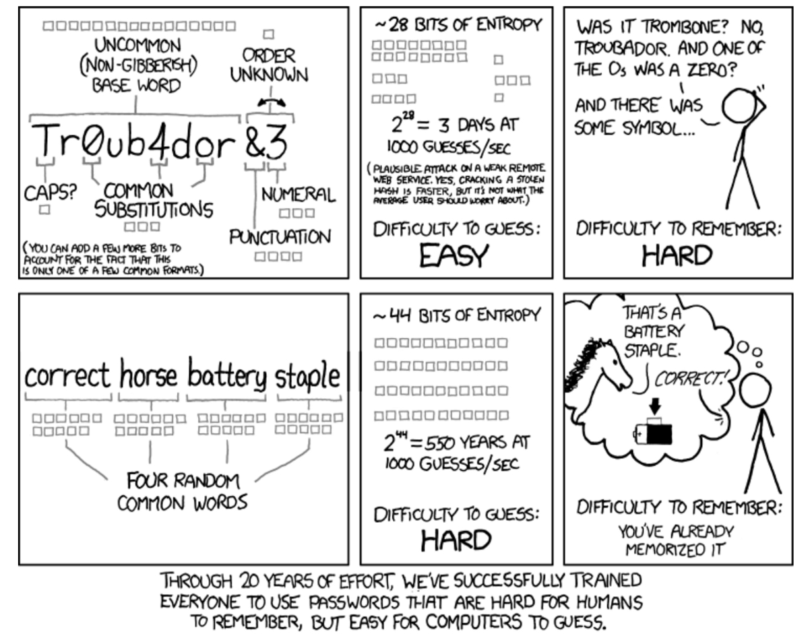
(Иллюстрация Рэндалла Манро, xkcd.com, лицензия CC BY-NC 2.5)
Вот несколько рекомендаций (на основе Википедии524):
-
Достаточно длинная, чтобы ее было трудно угадать (обычно минимум четыре слова, пять или больше — лучше).
-
Не известная цитата из литературы, священных книг и т. п.
-
Ее трудно угадать интуитивно — даже тому, кто хорошо знает пользователя.
-
Ее легко запомнить и точно набрать.
-
Для повышения безопасности можно применить любое легко запоминаемое кодирование, понятное пользователю.
-
Не используется повторно на сайтах, в приложениях и других разных источниках.
-
Не используйте только «обычные слова» (например, «лошадь» или «правильно»)
Вот хороший веб-сайт с примерами и рекомендациями: https://www.useapassphrase.com/
Посмотрите это содержательное видео от Computerphile: https://www.youtube.com/watch?v=3NjQ9b3pgIg [Invidious]
По возможности используйте разные парольные фразы для каждого сервиса/устройства. Не упрощайте противнику доступ ко всей вашей информации, используя одну и ту же парольную фразу везде.
Возможно, вы спросите, как? Все просто: используйте менеджер паролей, например рекомендуемый KeePassXC. Запоминайте только парольную фразу для разблокировки базы данных, а все остальное храните в базе данных KeePassXC. В KeePassXC затем можно создавать чрезвычайно длинные пароли (30+ случайных символов) для каждого отдельного сервиса.
Поисковые системыλ
Какую поисковую систему выбрать в своих ВМ?
Мы не будем вдаваться в слишком много подробностей. Просто выберите одну из PrivacyGuides.org (https://www.privacyguides.org/search-engines/ [Archive.org]).
Лично мои фавориты:
-
https://duckduckgo.com/ (потому что можно легко использовать операторы, такие как «!g» для Google или «!b» для Bing)
-
Экземпляры SearX (https://searx.me/) перечислены здесь: https://searx.space/
Учтите, что у некоторых из них есть удобный адрес ".onion":
В итоге мы часто оставались недовольны результатами обеих этих поисковых систем и все равно переходили на Bing или Google.
Противодействие судебной лингвистикеλ
Обратите внимание, что эта информация взята и адаптирована из публикации Dread, доступной здесь: http://dreadytofatroptsdj6io7l3xptbet6onoyno2yv7jicoxknyazubrad.onion/post/aad54fe83b33a8a45920/
Плагиат не предполагается, но для улучшения исходной публикации были внесены некоторые важные адаптации и изменения.
Введениеλ
Стилометрия — это наш личный и уникальный стиль письма. Кто бы вы ни были, ваш стиль письма уникален, подобен отпечатку пальца и позволяет отслеживать вас. Это известно уже давно, и на этом принципе построена одна из отраслей криминалистики: судебная лингвистика. В этой области судебная лингвистика, применяемая к интернет-преступлениям, называется «Writeprint». Основная цель Writeprint — установить личность автора в интернете путём сопоставления текста подозреваемого с известной коллекцией инвариантных (обычно написанных) текстов автора; даже без текстов для сравнения этот криминалистический метод может выявить личную информацию об авторе, например пол, возраст и особенности личности.
Что ищет противник, изучая ваш текст?λ
-
Лексические признаки: анализ выбора слов.
-
Синтаксические признаки: анализ стиля письма, структуры предложений, пунктуации и дефисного написания.
-
Структурные признаки: анализ структуры и организации текста.
-
Слова, специфичные для содержания: анализ контекстно значимых элементов текста, таких как аббревиатуры.
-
Идиосинкратические признаки: анализ грамматических ошибок; это наиболее важный фактор, поскольку он обеспечивает относительно высокую точность при установлении автора.
Примерыλ
Вам может казаться, что противники не обращают на это внимания? Подумайте ещё раз! Было множество случаев, когда противники, например правоохранительные органы, использовали методы Writeprint для поимки и осуждения людей. Вот несколько примеров:
-
Дело OxyMonster (https://arstechnica.com/tech-policy/2018/06/dark-web-vendor-oxymonster-turns-out-to-be-a-frenchman-with-luscious-beard/ [Archive.org]):
- Общедоступные данные показали, что у Валлериуса (также известного как OxyMonster) были аккаунты в Instagram и Twitter. Агенты сравнили стиль письма «OxyMonster» на форуме Dream Market, где он занимал должность старшего модератора, со стилем Валлериуса в его публичных аккаунтах Instagram и Twitter. Агенты обнаружили множество совпадений в употреблении слов и пунктуации, включая слово «cheers;», двойные восклицательные знаки, частое использование кавычек и периодические посты на французском языке.
Не используйте для чувствительной деятельности тот же стиль письма, что и для обычной. В частности, внимательно следите за употреблением распространённых фраз и пунктуации. Также, к слову: ограничивайте объём материала, который противник может использовать для сравнения; вы ведь не хотите навлечь на себя неприятности из-за политического поста в Twitter или записи на Reddit, сделанной много лет назад?
- Вот ещё один пример из книги American Kingpin о том, как агент DEA исследовал стиль письма DPR (Dread Pirate Roberts, также известного как Ross Ulbricht, основателя даркнет-рынка Silk Road) с необычной точки зрения: во-первых, Ross Ulbricht часто использовал слово «epic», что указывало на его вероятную молодость. Он также использовал в тексте смайлики-эмодзи, но никогда не ставил дефис в качестве носа, писал «:)» вместо старомодного «:-)». Однако особенно выделялось то, что вместо «yes» или «yeah» на форумах сайта Ulbricht всегда набирал «yea».
Обращайте внимание на мелочи, которые могут сложиться в общую картину. Если обычно вы отвечаете людям «ok», то для чувствительной деятельности попробуйте отвечать «okay». НИКОГДА не используйте слова или фразы из чувствительной деятельности (даже если они не были в публичном посте) в обычных целях и наоборот. Ross Ulbricht называл «frosty» серверы Silk Road и свой аккаунт YouTube, что помогло убедить правоохранительные органы, что Dread Pirate Roberts — это действительно Ross Ulbricht.
Как противодействовать усилиям противникаλ
-
Сократите объём текстов для сравнения, доступных противникам. Для обычной деятельности это означает небольшой цифровой след.
-
Используйте текстовый процессор (например, LibreWriter), чтобы исправлять регулярно возникающие грамматические и орфографические ошибки.
-
Сократите или измените идиомы, которые вы используете во время чувствительной деятельности.
-
Поймите, как ваша личность влияет на стиль письма: ваш псевдоним моложе? Старше? Более образован? Или менее образован? Если ваша личность старше, возможно, стоит писать в стиле JRR Tolkien.
-
Обращайте внимание на то, как сленг и орфография могут вас идентифицировать. В Великобритании говорят «maths», а в США — «math». Неважно, как именно вы говорите «maths»; важно лишь то, что это можно использовать для составления вашего профиля. Это также относится к сленгу: во многих регионах есть различный и крайне специфичный сленг. Например, вы не попросите у человека из США «rubber», ожидая получить «eraser».
-
Обращайте внимание на использование смайликов и эмодзи. В предыдущем примере агент DEA смог верно предположить, что Ulbricht, вероятно, молод, поскольку он не использовал дефис при создании смайлика.
-
Обращайте внимание на структуру своего текста. Ставите ли вы два пробела после точки? Постоянно ли используете скобки? Используете ли оксфордскую запятую?
-
Подумайте, какие символы вы используете в тексте. Используете ли вы €, £ или $? Используете ли вы для дат «dd-mm-yyyy» или «mm-dd-yyyy»? Для времени — «08:00 pm» или «20:00»?
Что разные языковые особенности могут сказать о васλ
Смайликиλ
-
Русские, например, используют «)» вместо «:-)» или «:)», чтобы выразить улыбку.
-
Скандинавы используют «=)» вместо «:-)» или «:)» для обозначения улыбки.
-
Молодые люди обычно не используют дефис в смайликах и пишут просто «:)».
Структурные признакиλ
-
Два пробела после точки создают впечатление, что вы довольно старше, поскольку именно так учили печатать людей, осваивавших пишущие машинки.
-
В США числа записывают с запятыми между цифрами слева от десятичного разряда и с точками между цифрами справа от него. Это отличается от записи чисел в остальном мире.
США: 1,000.00$
Европа: 1.000,00€
Орфография, сленг и символыλ
-
Очевидно, люди в разных странах используют разный сленг. Это ещё заметнее, когда вы употребляете сленг, не столь известный в других местах: например, человек из Великобритании может упомянуть «headmaster», тогда как в других странах это называют «principal».
-
Орфография — ещё один важный фактор, похожий на сленг, но её труднее контролировать. Если вы хотите выдать себя за жителя США, но на самом деле живёте в Австралии, достаточно один раз написать «colour» вместо color, чтобы люди поняли, что что-то не так.
-
Некоторые люди также пишут слова особым, нерегиональным образом: например, вы можете писать «ax» как «axe» или наоборот.
-
Разумеется, символы на вашей клавиатуре также могут многое выдать, например £ или $.
Методы предотвращения writeprintingλ
Вот несколько методов в порядке применения:
Проверка орфографии и грамматикиλ
Это помогает предотвратить часть идентификации по вашим орфографическим и грамматическим ошибкам.
Офлайн с помощью текстового процессораλ
Используйте текстовый процессор, например LibreWriter, и функции проверки орфографии и грамматики, чтобы исправлять допущенные ошибки.
Онлайн с помощью онлайн-сервисаλ
Если у вас нет текстового процессора или вы не хотите им пользоваться, можно также воспользоваться онлайн-проверкой орфографии и грамматики, например Grammarly (для этого требуются e-mail и создание аккаунта).
Метод переводаλ
Отказ от ответственности: исследование, сохранённое здесь: https://web.archive.org/web/20181125133942/https://www.cs.drexel.edu/~sa499/papers/adversarial_stylometry.pdf, по-видимому, указывает, что метод перевода неэффективен для предотвращения стилометрии. Этот шаг может быть бесполезным.
После исправления орфографии и грамматики воспользуйтесь сайтом или программой, например Google Translate (либо, для более благоприятного для приватности варианта, https://simplytranslate.org/), чтобы перевести текст через несколько разных языков, а затем вернуть его на исходный язык. Такие переводы туда и обратно изменят ваши сообщения и усложнят идентификацию.
Поиск и заменаλ
Наконец, по желанию, намеренно добавьте в сообщения немного ошибок.
Сначала составьте список слов, которые вы часто пишете без ошибок, например «grammatical», «symbol» и «pronounced» (в этот список следует включить больше слов). Не используйте для этого автоматическую замену AutoCorrect, поскольку она может исправить текст там, где это не имеет смысла. Вместо этого используйте функцию Search and Replace и вручную обработайте каждое слово. Также не используйте «Replace All» и проверяйте каждое изменение. Это лишь первый шаг к внесению дезинформации, препятствующей лингвистической идентификации.
Затем найдите список слов, которые вы обычно используете в письме. Допустим, мы любим использовать сокращения, когда пишем, и всегда употребляем такие слова, как: «can't», «don't», «shouldn't», «won't» или «let's». Тогда можно открыть LibreWriter и с помощью «Search and Replace» заменить все сокращения полными формами («can't» > «cannot», «don't» > «do not», «shouldn't» > «should not», «won't» > «will not», «let's» > «let us»). Это может заметно изменить ваш текст и то, как вас воспринимают люди и, что важнее всего, ваши противники. Можно изменить большинство слов: например, заменить «huge» на «large». Просто убедитесь, что эти слова соответствуют вашей личности.
Теперь подумайте об изменении выбора слов, чтобы он соответствовал географическому региону. Возможно, вы живёте в США и хотите создать впечатление, будто ваша личность происходит из Великобритании. Например, можно использовать орфографию и лексику, характерные для определённого местоположения. Это рискованно: одна ошибка может всё раскрыть.
Прежде всего нужно решить, откуда вы хотите создать впечатление, что вы родом. Вот пример создания впечатления, что вы из США или Великобритании. Сначала вам нужно кое-что узнать о том, откуда «родом» ваша личность: не притворяйтесь жителем Великобритании, ничего о ней не зная, кроме самого факта её существования.
После того как вы выбрали подходящее место происхождения личности, изучите языковые различия между двумя языковыми вариантами (в данном случае между британским и американским английским). Благодаря интернету это довольно легко: можно найти страницы Wikipedia, удобно выделяющие региональные различия языка в двух странах. Обратите внимание на написание отдельных слов («metre» > «meter») и на слова, заменяющие друг друга («boot» > «trunk»). Когда у вас будет список взаимозаменяемых слов и список различий в написании, используйте в редакторе «Search and Replace» и замените, например, «colour» на «color», а «lorry» на «truck». Повторим: не используйте AutoCorrect или «Replace All», поскольку некоторые замены могут не иметь смысла. Проверяйте каждое предложенное изменение. Например, если использовать AutoCorrect или «Replace all» для замены слова «boot» на «trunk», это будет совершенно уместно в контексте автомобилей. Но совершенно неуместно в контексте обуви.
Заключительный советλ
Помните, что во время чувствительной деятельности необходимо постоянно думать о том, что и как вы печатаете.
Помните, что изменение стиля письма для таких целей в конечном итоге может изменить ваш основной стиль письма, ироничным образом делая его отслеживаемым в долгосрочной перспективе.
Хотя бы один раз вычитывайте любой написанный текст, чтобы убедиться, что вы не допустили ошибок в процессе. Доверяйте (себе), но всё равно проверяйте.
Можно также рассмотреть использование чего-то вроде AnonyMouth https://web.archive.org/web/https://github.com/psal/anonymouth [Archive.org] — инструмента для анонимизации документов, разработанного PSAL, лабораторией приватности, безопасности и автоматизации Drexel University https://psal.cs.drexel.edu/index.php/Main_Page [Archive.org]. Такие инструменты могут оказаться бесценными.
Дополнительные ссылкиλ
-
https://seirdy.one/posts/2022/07/09/stylometric-fingerprinting-redux/ [Archive.org]: Стилометрическая идентификация: переосмысление
-
https://www.whonix.org/wiki/Surfing_Posting_Blogging#Stylometry [Archive.org]: Документация Whonix о стилометрии.
-
https://wikipedia.org/wiki/Forensic_linguistics [Wikiless] [Archive.org]: Кратко излагает основы судебной лингвистики; не слишком информативно.
-
https://wikipedia.org/wiki/Writeprint [Wikiless] [Archive.org]: Кратко и информативно рассказывает о судебной лингвистике, применяемой к интернет-расследованиям.
-
https://wikipedia.org/wiki/Stylometry [Wikiless] [Archive.org]: Краткий обзор стилометрии.
-
https://wikipedia.org/wiki/Content_similarity_detection [Wikiless] [Archive.org]: Рекомендуем прочитать, довольно информативно.
-
https://wikipedia.org/wiki/Author_profiling [Wikiless] [Archive.org]: Также прочитайте, если вам интересна эта тема.
-
https://wikipedia.org/wiki/Native-language_identification [Wikiless] [Archive.org]: Это менее важно, если вы пользуетесь переводчиком, но, если вы не используете переводчик для общения на форумах не на родном языке, быстро ознакомьтесь с этим материалом.
-
https://wikipedia.org/wiki/Computational_linguistics [Wikiless] [Archive.org]: Читайте, только если эта тема вам интересна.
-
https://regmedia.co.uk/2017/09/27/gal_vallerius.pdf [Archive.org]: Объясняет, как власти использовали судебную лингвистику для ареста OxyMonster (страницы 13 -- 14).
-
https://wikipedia.org/wiki/Ted_Kaczynski#After_publication [Wikiless] [Archive.org]: Возможно, его IQ был 167, но поймали его главным образом благодаря судебной лингвистике.
-
https://i.blackhat.com/USA-19/Wednesday/us-19-Wixey-Im-Unique-Just-Like-You-Human-Side-Channels-And-Their-Implications-For-Security-And-Privacy.pdf [Archive.org]: Объясняет, как ваш стиль письма может использоваться для отслеживания; настоятельно рекомендуем прочитать эти слайды или посмотреть сопровождающую презентацию на YouTube.
-
https://media.defcon.org/DEF%20CON%2026/DEF%20CON%2026%20presentations/DEFCON-26-Matt-Wixey-Betrayed-by-the-Keyboard-Updated.pdf [Archive.org]: Объясняет, как ваш стиль письма может использоваться для отслеживания; настоятельно рекомендуем прочитать эти слайды или посмотреть сопровождающую презентацию на YouTube; эта презентация довольно похожа на предыдущую.
-
https://i.blackhat.com/us-18/Wed-August-8/us-18-Wixey-Every-ROSE-Has-Its-Thorn-The-Dark-Art-Of-Remote-Online-Social-Engineering.pdf [Archive.org]: Рассматривает, как потенциально выявлять обман в интернете, и предлагает контрольный список для оценки надёжности человека. Рекомендуем прочитать слайды или посмотреть презентацию на YouTube.
Дополнительные меры предосторожности в браузере при включённом JavaScriptλ
Чтобы избежать идентификации браузера и пользователя через JavaScript, сохраняя JavaScript включённым, как минимум на некоторых сайтах следует применять дополнительные меры безопасности:
Эти рекомендации похожи на приведённые в начале руководства и особенно актуальны для некоторых сайтов. В основном рекомендуется использовать фронтенд-экземпляры, благоприятные для приватности, и альтернативные сервисы для различных услуг:
-
Для ссылок YouTube используйте экземпляр Invidious (https://github.com/iv-org/invidious [Archive.org])
- Рекомендуем [https://yewtu.be]
-
Для ссылок Twitter используйте экземпляр Nitter (https://github.com/zedeus/nitter [Archive.org])
- Рекомендуем [https://nitter.net]
-
Для ссылок Wikipedia используйте экземпляр Wikiless (https://codeberg.org/orenom/wikiless [Archive.org])
-
Для Reddit используйте экземпляр LibReddit (https://github.com/spikecodes/libreddit [Archive.org])
-
Для карт рассмотрите использование https://www.openstreetmap.org
-
Для перевода рассмотрите SimplyTranslate: https://simplytranslate.org/
-
Для поисковых систем используйте ориентированные на приватность поисковики, такие как:
-
StartPage: https://www.startpage.com/
-
DuckDuckGo: https://duckduckgo.com/
-
Экземпляры SearX (https://searx.me/): список доступных здесь: https://searx.space/
-
(Необязательно) Рассмотрите расширение https://libredirect.github.io/ [Archive.org], чтобы автоматизировать использование указанных выше сервисов.
Сравнение версий руководстваλ
Если вы хотите сравнить старую версию PDF с новой, рассмотрите следующие онлайн-инструменты (обратите внимание, что мы не одобряем эти инструменты с точки зрения их политик приватности, но это не должно иметь значения, поскольку эти PDF являются публичными):
Обмен криптовалют без регистрации или KYCλ
Общий обмен криптовалютλ
Перейдите к следующему разделу для BTC в Monero. Не используйте сервисы обмена для BTC в Monero.
Вот небольшой список сервисов обмена криптовалют без KYC; помните, что у всех есть стоимость и комиссии:
-
Kilo Swap (скрытый сервис Onion): http://mlyusr6htlxsyc7t2f4z53wdxh3win7q3qpxcrbam6jf3dmua7tnzuyd.onion/coinswap
Рассмотрите https://kycnot.me/ — это проект с открытым исходным кодом, в котором перечислены биржи и сервисы обмена без KYC (репозиторий: https://codeberg.org/pluja/kycnot.me).
Только BTC в Moneroλ
Не используйте никакие сервисы обмена; используйте их функцию Atomic Swap. См. этот инструмент Monero Atomic Swap: https://unstoppableswap.net/.
Это позволит избежать ненужных комиссий и посредников при использовании коммерческого сервиса обмена. Сайт интуитивно понятен и содержит подробные инструкции для всех ОС.
Установка кошелька Zcashλ
Помните: это следует делать только в защищённой среде, например в VM за Whonix Gateway.
Debian 11 VMλ
-
Запустите Debian VM
-
Откройте браузер
-
Перейдите на https://packages.debian.org/buster/amd64/libindicator3-7/download и загрузите пакет с одного из перечисленных зеркал.
-
Перейдите на https://packages.debian.org/buster/amd64/libappindicator3-1/download и загрузите пакет с одного из перечисленных зеркал.
-
Перейдите на сайт ZecWallet Lite, чтобы загрузить последнюю версию пакета DEB: https://www.zecwallet.co/#download (для удобства смените каталог загрузки на /home/user)
-
Откройте окно Terminal и выполните следующие команды (при необходимости с обновлённой загруженной версией):
-
sudo dpkg -i ./libindicator3-7_0.5.0-4_amd64.deb -
sudo dpkg -i ./libappindicator3-1_0.4.92-7_amd64.deb -
sudo dpkg -i ./Zecwallet_Lite_1.7.5_amd64.deb
-
-
Нажмите меню в левом верхнем углу, найдите и запустите ZecWallet Lite
Ubuntu 20.04/21.04/21.10 VMλ
-
Запустите Ubuntu VM
-
Откройте браузер
-
Перейдите на сайт ZecWallet Lite, чтобы загрузить последнюю версию пакета DEB: https://www.zecwallet.co/#download
-
Откройте окно Terminal
-
Перейдите в каталог загрузок и выполните следующую команду (при необходимости с обновлённой загруженной версией), например:
sudo apt install ./Zecwallet_Lite_1.7.5_amd64.deb -
Нажмите меню в левом верхнем углу, найдите и запустите ZecWallet Lite
Windows 10/11 VMλ
-
Запустите Windows VM
-
Откройте браузер
-
Перейдите на https://www.zecwallet.co/#download
-
Загрузите и установите последнюю версию установщика Windows
-
Запустите ZecWallet Lite
Whonix Workstation 16 VMλ
-
Запустите Whonix Workstation VM
-
Откройте Tor Browser
-
Перейдите на https://packages.debian.org/buster/amd64/libindicator3-7/download и загрузите пакет с одного из перечисленных зеркал.
-
Перейдите на https://packages.debian.org/buster/amd64/libappindicator3-1/download и загрузите пакет с одного из перечисленных зеркал.
-
Перейдите на сайт ZecWallet Lite, чтобы загрузить последнюю версию пакета DEB: https://www.zecwallet.co/#download (для удобства смените каталог загрузки на /home/user)
-
Откройте окно Terminal и выполните следующие команды (при необходимости с обновлённой загруженной версией):
-
sudo dpkg -i ./libindicator3-7_0.5.0-4_amd64.deb -
sudo dpkg -i ./libappindicator3-1_0.4.92-7_amd64.deb -
sudo dpkg -i ./Zecwallet_Lite_1.7.5_amd64.deb
-
-
Нажмите меню в левом верхнем углу, перейдите в Development, затем запустите ZecWallet Lite
Контрольный список перед передачей информацииλ
Вот контрольный список того, что следует проверить перед передачей информации кому-либо:
-
Проверьте файлы на наличие метаданных: см. Аудит метаданных
-
Проверьте файлы на наличие вредоносного содержимого: см. Проверка файлов на вредоносное ПО
-
Проверьте файлы на наличие водяных знаков: см. Водяные знаки
-
Проверьте текст на возможность криминалистического анализа: см. Противодействие судебной лингвистике
-
Ознакомьтесь с этой частью документации Whonix: https://www.whonix.org/wiki/Surfing_Posting_Blogging#Anonymous_File_Sharing [Archive.org]
-
Тщательно оцените потенциальные последствия и риски передачи любой чувствительной информации для вас и других (правовые, этические и моральные). Помните... Не творите зла. Законно — не обязательно хорошо.
После отбора файлов и исключения всего, что вы не хотите передавать, перепроверьте их и даже проверьте в третий раз. Затем можно рассмотреть отправку в организацию, например в пресс-организацию, или другим адресатам.
Отказ от ответственности по Moneroλ
Сначала посмотрите это короткое вводное видео о Monero: https://www.youtube.com/watch?v=H33ggs7bh8M [Invidious]
Анонимность Monero зависит от её криптографических алгоритмов. Если вы используете Monero через KYC-биржу, сегодня вы почти наверняка в безопасности. Но в долгосрочной перспективе это может быть не так, если алгоритмы Monero когда-либо будут взломаны525 (например, квантовыми вычислениями). Также помните, что правила KYC могут обязать операторов (таких как криптобиржи) хранить ваши финансовые записи до 10 лет, поэтому алгоритмы Monero не должны быть взломаны и в следующие 10 лет.
Для подробностей можно посмотреть это содержательное видео: https://www.youtube.com/watch?v=j02QoI4ZlnU [Invidious]
Также рассмотрите чтение: Ограничения приватности в сетях анонимности с Monero [Archive.org]
Используйте это на свой риск. Отправка поставщикам наличных платежей почтовой службой всегда является лучшим решением, если/когда это возможно.
Ресурсы по моделированию угрозλ
Вот различные ресурсы по моделированию угроз, если вы хотите глубже изучить моделирование угроз.
Мы рекомендуем метод моделирования угроз LINDDUN https://www.linddun.org [Archive.org]:
- Исследователи создали онлайн-инструмент, который поможет создать вашу модель угроз: https://www.linddun.org/go [Archive.org].
- Он хорошо сочетается с приведённым ниже STRIDE.
- Он ориентирован на приватность, но явно прекрасно подходит и для анонимности.
- Он доступен людям с любым уровнем подготовки, включая начинающих (предлагает множество руководств), но также подходит высококвалифицированным читателям.
- Он использовался при создании Манифеста моделирования угроз: https://www.threatmodelingmanifesto.org/ [Archive.org]
Руководства и ресурсы LINDDUN по моделированию угроз:
- Для начала рекомендуем следующее короткое обучающее видео с YouTube-канала «The Hated One», одобренное и проверенное разработчиками LINDDUN: https://www.youtube.com/watch?v=6AXkJ3dot2s [Invidious].
-
Дополнительные ресурсы для более глубокого понимания и использования:
- Подробнее можно прочитать здесь: Легковесный подход к моделированию угроз приватности
- Вот два видео от д-ра К. Wuyts (imec-DistriNet, KU Leuven), объясняющие этот процесс:
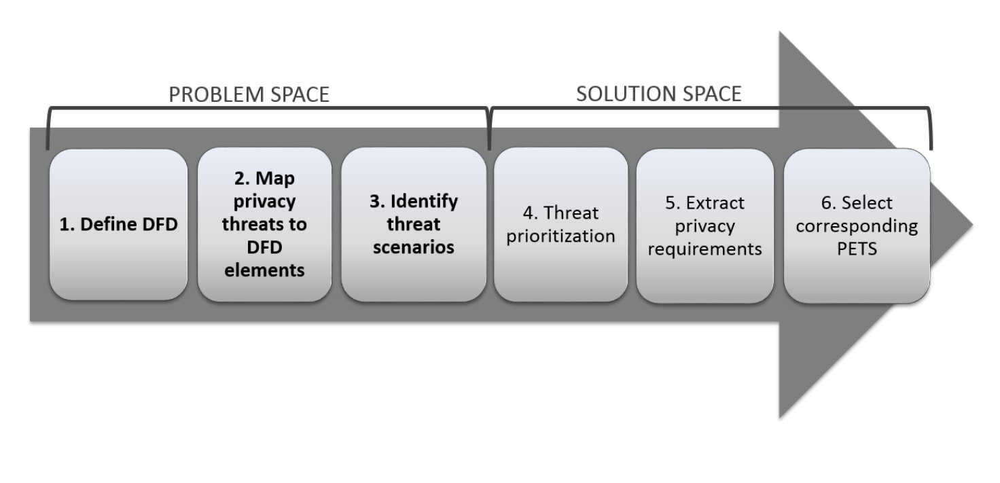
(Иллюстрация из LINDDUN2015)Вот альтернативные ресурсы и методологии, если LINDDUN вам не подходит:
- Операционная безопасность в интернете: https://github.com/devbret/online-OPSEC
- STRIDE от Microsoft: https://en.wikipedia.org/wiki/STRIDE_%28security%29 [Wikiless] [Archive.org]
- PASTA: https://versprite.com/tag/pasta-threat-modeling/ [Archive.org]
- Моделирование угроз: 12 доступных методов: https://insights.sei.cmu.edu/blog/threat-modeling-12-available-methods [Archive.org]
- Моделирование угроз: https://www.geeksforgeeks.org/threat-modelling/ [Archive.org]
Заметки об Evil-Maid и вмешательствеλ
Необходимо учитывать ваш контекст.
Предотвращение атаки evil-maid или вмешательства может привести к плохим последствиям. Тогда ваш противник может прибегнуть к другим способам получения ключа.
С другой стороны, если допустить атаку, но обнаружить её, противник не узнает, что вы осведомлены о вмешательстве. Тогда вы сможете безопасно предпринять шаги, чтобы не раскрыть информацию и, возможно, уйти.
Несколько советов см. в разделе Некоторые заключительные мысли об OPSEC.
Типы атак на CPUλ
Множество CPU Intel подвержены отдельным проблемам безопасности, таким как атаки транзиентного исполнения (ранее называвшиеся методами побочных каналов спекулятивного исполнения). Здесь можно проверить свой CPU на наличие затронутых микропроцессоров с известными ошибками: https://www.intel.com/content/www/us/en/developer/topic-technology/software-security-guidance/processors-affected-consolidated-product-cpu-model.html [Archive.org].
Advanced Programmable Interrupt Controller (APIC) — встроенный компонент CPU, отвечающий за приём, приоритизацию и распределение прерываний между логическими процессорами (LP). APIC может работать в режиме xAPIC, также известном как устаревший режим, в котором регистры конфигурации APIC доступны через страницу ввода-вывода (MMIO), отображённую в память.
Рассмотрим AEPIC (стилизованное написание ÆPIC) — первую архитектурную ошибку CPU, которая раскрывает устаревшие данные из микроархитектуры без использования побочного канала. Она на архитектурном уровне раскрывает устаревшие данные, ошибочно возвращаемые при чтении неопределённых диапазонов регистров APIC. Этот новый метод был представлен в статье ÆPIC Leak: Architecturally Leaking Uninitialized Data from the Microarchitecture, которую можно прочитать здесь: Borrello2022AEPIC [Archive.org]
Регистры, специфичные для модели (MSR), и их биты конфигурации также можно автоматически обнаруживать на CPU Intel и AMD: Kogler2022 [Archive.org]. Это позволяет атакующему (глубоко разбирающемуся в работе CPU) просматривать информацию о MSR — по сути специальных регистрах CPU, позволяющих взаимодействовать с низкоуровневыми функциями CPU и расширенно настраивать его поведение. В современных x86 CPU их сотни; обычно они очень слабо документированы, причём в последние годы документация становится всё менее подробной.
Предупреждение об Orbot на Androidλ
Хотя это часто неверно понимают, добавление Tor-совместимых приложений в список Orbot на Android не заставляет их проходить через Tor. Orbot действует как VPN для всего устройства (также известный как «прозрачный прокси»). Список приложений, использующих Orbot, — это белый список. Он не заставит одни приложения магически использовать Tor, а неотмеченные — использовать обычный интернет. Он лишь гарантирует, что VPN для всего устройства использует Tor для маршрутизации трафика. Это означает, что Orbot может контролировать только то, какое приложение получает доступ к созданному им VPN. Другие приложения потеряют подключение.
Важно знать, что если вы запустите приложение (или Android запустит его автоматически), когда Orbot не работает, приложение просто будет использовать обычную сеть без участия Orbot (за исключением приложений, поддерживающих прокси Orbot).
Кроме того, не удивляйтесь, если Tor Browser не работает при использовании Orbot в режиме VPN, поскольку архитектура Tor не допускает «Tor поверх Tor» (нельзя снова войти в сеть Tor из выходного узла Tor).
Это довольно хорошо объясняет Alexander Færøy, основной разработчик Tor Project, в TorifyHOWTO: Tor over Tor.
«При использовании прозрачного прокси можно запустить сеанс Tor как с клиента, так и с прозрачного прокси (прочтите предупреждение!), создав сценарий „Tor поверх Tor“. Это приводит к неопределённому и потенциально небезопасному поведению. Теоретически можно получить шесть переходов вместо трёх, но не гарантируется, что это будут три разных перехода: вы можете получить те же переходы, возможно, в обратном или смешанном порядке. Неясно, безопасно ли это. Это никогда не обсуждалось. Вы можете выбрать точку входа/выхода, но наилучшую безопасность Tor обеспечивает, когда вы предоставляете выбор маршрута Tor; переопределение входных/выходных узлов может нарушить вашу анонимность способами, которых мы не понимаем. Поэтому использование Tor поверх Tor настоятельно не рекомендуется».
А вот выдержка из поста на Tor Stack Exchange:
«Опасность (помимо снижения производительности), из-за которой я не запускаю Tor поверх Tor, связана с измерениями времени и перегрузки. Противники, наблюдающие ваш трафик на выходе из ваших цепей, получают больше шансов связать вашу активность Whonix с активностью [Tor Browser Bundle], когда эти общие цепи одновременно замедляются или теряют пакеты. Это может произойти и без Tor поверх Tor, когда ваши экземпляры используют общий восходящий канал. Связь станет теснее и явнее, если пропускать трафик Whonix Tor через цепи Tor TBB SOCKS5. Такая более тесная связь повышает опасность успешной корреляции».
Предостережение по Session Messengerλ
- Они используют LokiNet, для маршрутизации трафика Session которому Oxen требуется для запуска узлов; это стоит 15,000 $OXEN или 3,750 $OXEN за общий узел528, то есть примерно ~$1,800 или ~$500 долларов США соответственно. Такая высокая стоимость создаёт барьер для запуска узлов, потенциально централизуя сеть и ограничивая её доступность.
- Стоимость запуска узлов фактически ставит их сеть за платный барьер, если вы хотите запустить узел, даже просто чтобы, как в Tor, предоставить пропускную способность. Но существует форк Lokinet без стейкинга.
- Разработчики Session заявляют, что это попытка предотвратить атаки Сивиллы, однако многие утверждают, что это лишь поощряет такие атаки, поскольку гарантирует, что только правительства и другие хорошо финансируемые организации (те, от кого эти сети обычно пытаются защититься) когда-либо получат финансовые ресурсы для запуска узлов. (Ну, всё это довольно спорно. Но $OXEN ориентирован на приватность.)
- Они отказались от критически важных функций безопасности своего протокола (совершенной прямой секретности (PFS) и отрицания)415 в пользу долгосрочных ключей сообщений и самоуничтожающихся криптографических подписей, которые дают гораздо более слабые гарантии безопасности. 529
- Это может быть не так плохо, если бы узлы можно было запускать бесплатно, но это не так.
- Апрель 2021: Session прошёл аудит416 с удовлетворительными результатами, однако в аудите эти изменения не упоминаются. Нам также сейчас недостаёт информации о LokiNet (сети луковой маршрутизации, используемой Session), чтобы рекомендовать её. Некоторые всё ещё рекомендуют Session, например Techlore.417
- Их финансирование полностью непрозрачно.
Вкратце, мы считаем, что можно использовать Session Messenger на iOS из-за отсутствия лучшей альтернативы (например, Briar). Но если Briar или другое приложение (возможно, Cwtch в будущем) станет доступно, мы рекомендуем отказаться от Session Messenger как можно скорее. Это крайняя мера.
Разборы случаев провала OPSECλ
Следующие случаи взяты из публичных судебных материалов, журналистских публикаций и посмертных разборов. Они включены не для злорадства над пойманными людьми, а потому, что каждый иллюстрирует конкретный, повторяемый тип ошибки, напрямую относящийся к рекомендациям в других частях этого руководства. Во всех случаях доступных инструментов технической анонимности было достаточно — ошибки были человеческими.
Hector Monsegur (Sabu) — LulzSec, 2011λ
Контекст: Monsegur был ключевым участником и фактическим лидером LulzSec — заметной хакерской группы, ответственной за взломы Sony, FBI и других. Он был арестован в июне 2011 года, а затем стал информатором FBI, когда ему пригрозили отобрать детей.
Ошибка: Однажды Monsegur вошёл в IRC-канал, связанный с Anonymous/LulzSec, не направив соединение через Tor. IRC-сервер записал его настоящий IP-адрес, присвоенный его домашнему интернет-соединению в Нью-Йорке. FBI запросило эти журналы повесткой.
Что это демонстрирует: Единственной ошибки в одном сеансе достаточно для деанонимизации в остальном дисциплинированного оператора. Tor эффективен, только если используется каждый раз без исключений. На операционном уровне не существует «только один раз». Ценность анонимности уничтожается в момент её нарушения, даже единожды.
Что ему следовало сделать: Использовать Tor или доверенный VPN для каждого IRC-соединения без исключений, в идеале с оборудования и сети, не связанных с его личностью. Отдельное устройство, используемое исключительно для чувствительной деятельности, предотвратило бы перекрёстное загрязнение.
Ross Ulbricht — Silk Road, 2013λ
Контекст: Ulbricht управлял псевдонимным даркнет-рынком Silk Road под именем «Dread Pirate Roberts» примерно два года до ареста в октябре 2013 года.
Ошибка: Множество накапливавшихся со временем ошибок, а не единичный инцидент. До появления Silk Road Ulbricht разместил на Bitcoin-форуме рекламу сайта под именем пользователя «altoid», а отдельно использовал то же имя «altoid» для объявления о работе, в котором был его личный адрес Gmail. Следователи сопоставили имя пользователя в разных сообщениях. Кроме того, ранние публикации на Stack Overflow связывали его с настоящей личностью. Его ноутбук при изъятии во время ареста был открыт и разблокирован, то есть зашифрованные диски были полностью доступны в момент захвата.
Что это демонстрирует: Повторное использование имени пользователя в разных контекстах — один из наиболее надёжных векторов деанонимизации, доступных следователям. Псевдоним для чувствительной деятельности никогда не должен появляться ни в каком контексте, связанном с вашей настоящей личностью: ни в объявлении о работе, ни в вопросе на форуме, ни в одноразовом комментарии много лет назад. Разделение контекстов должно быть полным и предшествовать деятельности, а не следовать за ней.
Что ему следовало сделать: Использовать полностью раздельные личности, устройства и каналы связи для администрирования Silk Road и личной деятельности, без общих имён пользователей, адресов e-mail или письменных контекстов. До ареста зашифровать рабочий диск парольной фразой, чтобы изъятие открытого ноутбука не обеспечило доступ к открытому тексту.
«Defcon» (Blake Benthall) — Silk Road 2.0, 2014λ
Контекст: Silk Road 2.0 был запущен вскоре после изъятия оригинального Silk Road. Его администратор, работавший под именем «Defcon», был арестован в ноябре 2014 года.
Ошибка: Согласно уголовной жалобе, агент FBI под прикрытием получил должность в штате сайта. В более техническом плане жалоба описывает использование корреляции времени входа: следователи наблюдали, что «Defcon» входил на сайт в моменты, совпадавшие с другой идентифицируемой онлайн-активностью. Кроме того, серверная инфраструктура была идентифицирована из-за неправильно настроенных конфигураций скрытого сервиса, раскрывавших реальные IP-адреса — это повторяющийся операционный сбой на даркнет-рынках.
Что это демонстрирует: Два разных урока. Во-первых, проникновение людей в доверенные круги часто эффективнее технических атак — никакая криптография не защищает от доверенного инсайдера. Во-вторых, серверная операционная безопасность (правильная настройка скрытых сервисов Tor, чтобы они ни при каких условиях не раскрывали настоящий IP) столь же важна, как анонимность на стороне клиента. Идеально анонимный администратор не имеет значения, если идентифицируется сам сервер.
Что ему следовало сделать: Проверять все конфигурации сервера на утечку IP перед запуском и регулярно после него. На операционном уровне считать каждого сотрудника потенциальным информатором и соответственно разделять информацию.
Jeremy Hammond — AntiSec, 2012λ
Контекст: Hammond был участником AntiSec, ответвления Anonymous, ответственного за взлом Stratfor. Он был арестован в марте 2012 года.
Ошибка: К тому времени информатор FBI Monsegur (Sabu) направлял Hammond к целям, выбранным FBI, одновременно собирая против него доказательства. Hammond использовал надёжные технические практики, но был подвергнут социальной инженерии через доверительные отношения. Он также повторно использовал шаблон пароля, который следователи смогли выявить в разных аккаунтах.
Что это демонстрирует: Урок, дополняющий дело Monsegur: даже технически дисциплинированные операторы уязвимы для компрометации через доверительные отношения с людьми. Повторное использование паролей или шаблонных паролей для разных личностей создаёт вектор корреляции, даже если ни одни учётные данные напрямую не скомпрометированы.
Что ему следовало сделать: Использовать уникальные, случайно сгенерированные учётные данные для каждой личности и сервиса без общих шаблонов. Более важный урок — операционное доверие к людям невозможно проверить криптографически; чистого технического решения нет, но разделение того, что знает каждый соавтор, ограничивает ущерб от любого единичного компрометационного случая.
Peter Stokes — Scattered Spider, 2026λ
Контекст: Stokes обвинялся вместе с другими участниками Scattered Spider в более чем 100 корпоративных проникновениях и в получении более $100 млн выкупных платежей (включая первоначально неудавшийся выкуп в $8 млн). Во время операций он использовал ngrok для туннелирования и коммерческий VPN-сервис (Tzulo), чтобы скрывать трафик сетевого уровня (см. Анонимизация трафика), исходя из предположения, что маскировки IP достаточно для предотвращения корреляции (см. Корреляция и атрибуция). Microsoft уже однажды сообщил о нём FBI — в октябрьском уголовном сообщении 2024 года со ссылкой на внутреннюю телеметрию, которую исследователи считали связывающей его с другими членами группы.
Ошибка: Stokes вёл операции из одной установки Windows, в которой был выполнен вход в Microsoft Account и которая использовалась для всей его деятельности: законного использования, настройки ngrok и общения, связанного с группой. Каждой установке Windows, вошедшей в MSA, присваивается постоянный Global Device Identifier (GDID) — серверный идентификатор, который не меняется при смене IP-адреса, VPN-провайдера или выходного узла и не зависит от отключения обычных настроек телеметрии. Следователи получили записи IP у ngrok и VPN-провайдера, затем записи Microsoft, показывающие, что тот же GDID обращался к ngrok точно в момент создания аккаунта ngrok и повторялся в соответствующие моменты в аккаунтах, уже известных как его, в четырёх странах на протяжении примерно восьми месяцев. VPN менял его IP при каждом соединении. GDID он никак не менял.
Что это демонстрирует: Анонимизация сетевого уровня (VPN, туннелирование) и постоянство уровня личности (одна установка ОС, привязанная к личному Microsoft Account) — это разные проблемы, и решение одной ничего не даёт для другой. Идентификатор уровня устройства, переживающий смену IP, разрушает саму предпосылку «анонимности, потому что IP изменился». Это также показывает, что общественное понимание такого класса идентификаторов может появиться спустя годы: GDID описан ровно одной строкой в публичной документации Microsoft, и до появления этого дела не имел содержательного публичного технического разбора. Предполагать, что мера защиты не нужна, потому что о ней мало знают, небезопасно. Это также показывает, что использования одной физической машины и одной установки ОС и для обычной идентифицированной деятельности, и для чувствительной деятельности достаточно, чтобы связать их, независимо от всех мер предосторожности на сетевом уровне.
Что ему следовало сделать: Никогда не вести чувствительные операции из установки Windows, в которой выполнен вход в личный или иным образом идентифицируемый Microsoft Account. Использовать отдельную, минимальную среду, не связанную с MSA, в идеале основанную на Linux (Whonix, Tails, Qubes-Whonix), а не на Windows, для всего, что требует реального разделения между личностями. Никогда не смешивать идентифицированное повседневное использование и чувствительную операционную деятельность в одной установке, аккаунте или на одном физическом устройстве, независимо от мер предосторожности на сетевом уровне. Считайте любой идентификатор, сохраняющийся независимо от IP, cookie или состояния браузера (ID устройства, серийные номера оборудования, телеметрия, привязанная к аккаунту), главной угрозой разделению контекстов: VPN и туннели работают только на сетевом уровне и не способны разорвать уже существующую связь на уровне личности. См.: Global Device Identifier Windows.
Общие закономерностиλ
Во всех этих случаях повторяются несколько закономерностей:
- Ошибки в одном сеансе разрушают долгосрочную анонимность. Последовательность не является необязательной.
- Связывание личности между контекстами — наиболее распространённый вектор расследования. Имена пользователей, стиль письма, адреса e-mail и история публикаций доступны для поиска и корреляции.
- Необходима безопасность и на стороне сервера, и на стороне клиента. Сильная анонимность клиента не компенсирует утечку на сервере.
- Человеческие отношения — самая надёжная поверхность атаки. Проникновение и информаторы присутствуют в большинстве крупных ликвидаций даркнет-площадок.
- Физический захват с разблокированным устройством сводит на нет всё. Шифрование диска помогает, только если устройство заблокировано в момент изъятия.
Постквантовая криптографияλ
Примечание: этот раздел посвящён угрозе, которая не является немедленной для большинства пользователей. Если ваша модель угроз включает противника на уровне государства или коммуникации, чувствительность которых сохранится на годы вперёд, читайте внимательно. Если вы обычный пользователь, пока можете просмотреть этот раздел, но должны вернуться к нему по мере развития технологии.
Большинство видов шифрования, защищающих сегодня ваши коммуникации, включая обмены ключами в Signal, HTTPS-соединения, VPN и PGP, основаны на математических задачах, вычислительно неразрешимых для любого классического компьютера. Достаточно мощный квантовый компьютер543, работающий по алгоритму Shor269, эффективно взломал бы эти задачи. Такого компьютера пока не существует. Крупнейшие современные машины всё ещё далеки от необходимого масштаба. Но это не повод игнорировать проблему.
Угроза называется «собрать сейчас, расшифровать позже» (HNDL). Она действует так: противник — здесь реалистичным кандидатом является государственное разведывательное агентство — записывает и хранит ваш зашифрованный трафик сегодня, в большом масштабе. Сейчас он не может его прочитать. Но если в следующие 10–20 лет будет создан способный квантовый компьютер, архивный трафик расшифруют задним числом. Для большинства читателей это не насущная проблема. Но для журналиста, защищающего источник, чью личность всё ещё опасно раскрывать в 2035 году, или активиста, живущего при правительстве с очень долгой институциональной памятью, к ней стоит отнестись серьёзно.
Хорошая новость в том, что криптографическое сообщество знает об этой проблеме более десяти лет, и необходимые инструменты появляются. В 2024 году NIST утвердил первые стандарты постквантовой криптографии544:
-
ML-KEM (Module-Lattice-Based Key-Encapsulation Mechanism, ранее известный как Kyber545) — заменяет классический этап обмена ключами в таких протоколах, как TLS и Signal X3DH. Он основан на сложности задачи Module Learning With Errors (MLWE), которая, как считается, устойчива к классическим и квантовым атакам.
-
ML-DSA (Module-Lattice-Based Digital Signature Algorithm, ранее Dilithium) — постквантовая замена подписей RSA и ECDSA, используемых для аутентификации личностей и подписи программного обеспечения.
-
SPHINCS+ (теперь стандартизирован как SLH-DSA) — схема подписей на основе хешей. Она медленнее и объёмнее ML-DSA, но опирается только на безопасность хеш-функций, а не на предположения о решётках, поэтому является консервативным резервным вариантом, если криптография на решётках когда-либо ослабнет.
NIST прямо рекомендует развёртывать их в гибридном режиме в переходный период — то есть наряду с классическими алгоритмами, а не вместо них. Так атакующему пришлось бы одновременно взломать оба.
PQXDH Signalλ
В сентябре 2023 года Signal внедрил PQXDH546 (Post-Quantum Extended Diffie-Hellman), обновив протокол согласования ключей X3DH, чтобы объединить ML-KEM-1024 с классическим обменом Diffie-Hellman X25519. Результат гибридный: безопасность сохраняется, пока хотя бы один компонент не взломан.
Для пользователей Signal это произошло автоматически и прозрачно. Настройка не требуется. Новые разговоры, начатые после развёртывания, по умолчанию используют PQXDH. Это напрямую противодействует угрозе HNDL для прямой секретности: противник, записавший ваш трафик Signal, не сможет использовать будущий квантовый компьютер для получения ключей сеанса.
Обратите внимание, что это покрывает только уровень обмена ключами. Уровень аутентификации (ключи личности) в Signal ещё не усилен постквантовой криптографией, хотя это активно разрабатывается.
Что следует сделать сейчасλ
Для большинства моделей угроз практические шаги просты:
-
Используйте Signal. PQXDH уже развёрнут, никаких действий не требуется.
-
Поддерживайте браузер в актуальном состоянии. С 2024 года в Chrome и Firefox по умолчанию включён гибридный постквантовый обмен ключами (X25519 + ML-KEM) в TLS547. Это защищает HTTPS-соединения от HNDL на транспортном уровне.
-
Не полагайтесь на PGP/GPG для долгосрочной конфиденциальности особо чувствительных материалов. Обмены ключами PGP (RSA, ECDH) не усилены постквантовой криптографией. Сообщения, зашифрованные сегодня на ключ PGP, могут быть расшифрованы задним числом противником с квантовыми возможностями, который их сохранил. Если необходимо использовать PGP, считайте его защитой только от современных противников.
-
Проверьте своего VPN-провайдера. Большинство коммерческих VPN ещё не развернули постквантовый обмен ключами. Некоторые (Mullvad, ProtonVPN) добавили его. Если HNDL входит в вашу модель угроз, проверьте документацию провайдера или перейдите к поддерживающему эту функцию.
Тем, кто действительно находится в группе высокого риска: коммуникации, раскрытие которых будет опасно и через десять или более лет, заслуживают внимания уже сейчас. Переход на Signal и создание новых сеансов (вместо использования долгоживущего состояния сеанса, существовавшего до внедрения PQXDH) — наиболее практичный краткосрочный шаг.
Примечание о Moneroλ
Криптографические примитивы Monero, в частности использование Ed25519 и Curve25519, уязвимы для алгоритма Shor на достаточно мощном квантовом компьютере. Monero Research Lab изучала эту проблему525, но постквантовое обновление пока не развёрнуто. Сообщество считает это среднесрочной, а не немедленной проблемой с учётом текущего состояния квантового оборудования. Для операционной анонимности сегодня Monero остаётся подходящим. Не предполагайте, что она обеспечивает долгосрочную финансовую приватность против противника с квантовыми возможностями.
Стилометрический анализ и стиль письмаλ
Примечание: стилометрическая деанонимизация — реальная, но узкая угроза. Она актуальна для людей, которые со временем публикуют значительные объёмы текста под псевдонимом, или предполагаемых источников утечек, чьи тексты сравнивают с известным корпусом их работ. Для большинства пользователей этого руководства она не представляет реалистичной угрозы. Прочитайте этот раздел, если вы публично пишете под псевдонимом, неоднократно общаетесь с одним и тем же противником или можете быть информатором, чьи тексты могут сравнить с внутренними документами.
Стилометрия548 — статистический анализ стиля письма для установления авторства. Основная идея состоит в том, что люди пишут последовательным, измеримым образом, сохраняющимся между темами и контекстами, и сознательно подавить эти закономерности трудно. Автор, который обычно использует оксфордскую запятую, предпочитает «however» слову «but», пишет предложения в среднем из 22 слов и редко использует восклицательные знаки, будет склонен делать это и в сообщении на форуме, и в e-mail, и в слитом документе. Даже один случай, когда вы забудете анонимизировать свой текст, может вас погубить. В 2026 году Vitalik Buterin, сооснователь Ethereum, пытается намеренно деанонимизировать себя с помощью ИИ, чтобы показать высокую вероятность этого в ближайшем будущем.554
Какие признаки измеряютсяλ
Современные стилометрические системы одновременно анализируют от десятков до сотен признаков. Наиболее различающими являются служебные слова — артикли, предлоги, союзы, — которые в основном используются бессознательно и очень постоянны у каждого автора.549 Содержательные слова (существительные, глаголы, тематически специфичная лексика) — плохие стилометрические признаки, поскольку меняются с темой; служебные слова — нет. Другие признаки включают: распределение длины предложений; пунктуационные привычки (частоту запятых, использование точек с запятой, предпочтение тире); длину абзацев; лексическое богатство (отношение типов к токенам); n-граммы на уровне символов; и синтаксические закономерности, такие как частота страдательного залога.
В контролируемых академических оценках передовые системы достигают точности атрибуции выше 80% в корпусах из 50 или более кандидатов-авторов, когда каждый автор предоставил несколько тысяч слов.550 Точность значительно ухудшается при более коротких текстах (менее 500 слов), больших наборах кандидатов или когда корпус кандидатов и анонимный текст относятся к разным жанрам или контекстам.
Развёрнутые инструменты и реальные случаиλ
JGAAP (Java Graphical Authorship Attribution Program)551, разработанная в Duquesne University, — наиболее широко используемый открытый академический инструмент, применявшийся в судебных разбирательствах. Burner — более новая система, разработанная специально для состязательной деанонимизации онлайн-псевдонимов.
Наиболее документированный реальный случай — установление в 2013 году того, что J.K. Rowling является автором The Cuckoo's Calling, опубликованной под псевдонимом Robert Galbraith.552 Стилометрический анализ Peter Millican и Patrick Juola, сравнивший роман с известными работами Rowling и набором авторов-кандидатов, дал сильное совпадение до того, как личность была подтверждена другими способами. Корпус в этом случае был большим — полные романы, — а это именно то условие, при котором стилометрия работает лучше всего.
В контексте национальной безопасности стилометрический анализ применялся или предпринимались попытки его применения в расследованиях утечек для сравнения анонимных документов с известными текстами предполагаемых источников, хотя конкретные случаи редко подтверждаются публично.
Что работает, а что нетλ
Наивные контрмеры не работают. Замена синонимов — подстановка слов с альтернативами близкого значения — не влияет на закономерности служебных слов, структуру предложений или пунктуационные привычки, которые являются наиболее различающими признаками. Простая попытка «писать по-другому» без конкретного метода неэффективна, поскольку бессознательные привычки, которые измеряет стилометрия, по определению не замечаются автором.
Что имеет некоторую эффективность: письмо в регистре, действительно отличающемся от вашего естественного стиля (например, формальная юридическая проза, когда вы обычно пишете неформально), ухудшает точность атрибуции, потому что смена регистра одновременно затрагивает несколько классов признаков. Короткие тексты — менее 300–400 слов — существенно снижают уверенность атрибуции. Совместное письмо, при котором несколько авторов работают над одним документом, значительно ухудшает атрибуцию одному автору.
Переписывание ИИ как контрмера — активная область исследований с неоднозначными результатами.553 Большие языковые модели изменяют распределения служебных слов и структуру предложений при переписывании текста, и ранние исследования показывают, что это в некоторой степени ухудшает точность стилометрической атрибуции. Однако переписывание LLM ненадёжно удаляет весь стилистический сигнал — некоторые характерные для автора закономерности переживают перефразирование — и создаёт новый сигнал: статистический отпечаток конкретной использованной модели и запроса. Выгоден ли этот компромисс, зависит от возможностей противника. Переписывание LLM, вероятно, полезно как один уровень глубокоэшелонированной защиты для авторов с высоким риском, но на него не следует полагаться как на полноценное решение.
Честная модель угрозλ
Стилометрии требуется достаточно большой образец текста анонимного автора (в идеале более 1 000 слов), набор известных авторов-кандидатов для сравнения и известный корпус текстов этих кандидатов. Это ограничивает реалистичное применение следующими случаями: расследованиями утечек, где у следователей есть короткий список подозреваемых с известными образцами текста; деанонимизацией давних псевдонимных авторов с большим объёмом опубликованных материалов; а также академическими или криминалистическими спорами об авторстве.
Она не является практической угрозой для: разовых анонимных коммуникаций; пользователей, у противника которых нет корпуса их текстов для сравнения; или коротких сообщений, где образца текста недостаточно для надёжного анализа. Для большинства читателей этого руководства другие описанные здесь угрозы — метаданные, идентификация на сетевом уровне, идентификация по отпечатку устройства — гораздо более вероятные векторы, чем стилометрия. Сначала устраните их.
Благодарностиλ
- Особая благодарность Edward Snowden, вдохновившему нас написать это руководство (пожалуйста, купите и прочитайте его книгу: https://en.wikipedia.org/wiki/Permanent_Record_(autobiography) [Wikiless] [Archive.org])
- Огромная благодарность людям, анонимно пожертвовавшим этому проекту
- Особая благодарность LiJu09 за помощь со светлой темой сайта (https://github.com/LiJu09)
- Особая благодарность людям из Simplelogin.io за предоставление бесплатного пожизненного премиум-доступа к их сервису
- Спасибо GitHub за размещение этого проекта и множеству людей, поставивших ему звёзды
- Спасибо Njal.la за анонимное предоставление доменного имени и VPS-хостинга
- Спасибо 1984.is за анонимное предоставление VPS-хостинга
- Спасибо всем, кто участвовал в создании и делился этим руководством с другими
- Спасибо людям из проектов Internet Archive и Archive.today
- Спасибо людям из проекта Monero
- Спасибо людям из проекта Zcash
- Спасибо людям из проекта Wikipedia
- Спасибо людям из проекта Tails
- Спасибо людям из проекта HiddenVM
- Спасибо людям из проекта Whonix
- Спасибо людям из проекта Qubes OS
- Спасибо людям из проекта Veracrypt
- Спасибо людям из проектов Tor и OONI
- Спасибо людям из проекта Briar
- Спасибо людям из проекта OnionShare
- Спасибо людям из проекта Element/Matrix
- Спасибо людям из проекта Jami
- Спасибо людям из проектов KeePass и KeePassXC
- Спасибо людям из проекта Fawkes
- Спасибо людям из проекта VirtualBox
- Спасибо людям из проектов ExifCleaner, Mat2 и ExifTool
- Спасибо людям из проекта Go Incognito от Techlore
- Спасибо Didier Stevens за его pdf-tools
- Спасибо людям из EFF
- Спасибо людям из SANS
- Спасибо людям из проекта OWASP
- Спасибо людям из проекта Privacyguides.org
- Спасибо людям из BlackHat, DEF CON и CCC
- Спасибо людям из Bellingcat и другим исследователям OSINT/криминалистики (и простите, что этим руководством мы усложняем им жизнь)
- Спасибо создателям документального фильма Social Dilemma (посмотрите его, если ещё не смотрели)
- Спасибо Michael Bazzell и его отличным книгам об OSINT, которые мы рекомендуем вам купить на https://inteltechniques.com
- Спасибо Randall Munroe из XKCD за его великолепные и содержательные веб-комиксы.
- Спасибо людям из немногих коммерческих организаций, которые действительно серьёзно относятся к приватности
- Спасибо всему сообществу открытого исходного кода, особенно сообществу Linux
- Спасибо множеству исследователей, журналистов, юристов и людей, упомянутых в этом руководстве, за их исследования и проекты
Referencesλ
-
English translation of German Telemedia Act https://www.huntonprivacyblog.com/wp-content/uploads/sites/28/2016/02/Telemedia_Act__TMA_.pdf [Archive.org]. Section 13, Article 6, "The service provider must enable the use of Telemedia and payment for them to occur anonymously or via a pseudonym where this is technically possible and reasonable. The recipient of the service is to be informed about this possibility. ". ↩↩
-
Wikipedia, Real-Name System Germany https://en.wikipedia.org/wiki/Real-name_system#Germany [Wikiless] [Archive.org] ↩↩
-
Wikipedia, Don't be evil https://en.wikipedia.org/wiki/Don%27t_be_evil [Wikiless] [Archive.org] ↩
-
YouTube, WarGames - "The Only Winning Move" https://www.youtube.com/watch?v=6DGNZnfKYnU [Invidious] ↩
-
Wikipedia, OSINT https://en.wikipedia.org/wiki/Open-source_intelligence [Wikiless] [Archive.org] ↩
-
YouTube Internet Historian Playlist, HWNDU https://www.youtube.com/playlist?list=PLna1KTNJu3y09Tu70U6yPn28sekaNhOMY [Invidious] ↩
-
Wikipedia, 4chan https://en.wikipedia.org/wiki/4chan [Wikiless] [Archive.org] ↩
-
PIA, See this good article on the matter https://www.privateinternetaccess.com/blog/how-does-privacy-differ-from-anonymity-and-why-are-both-important/ [Archive.org] (disclaimer: this is not an endorsement or recommendation for this commercial service). ↩
-
Medium.com, Privacy, Blockchain and Onion Routing https://medium.com/unitychain/privacy-blockchain-and-onion-routing-d5609c611841 [Scribe.rip] [Archive.org] ↩
-
This World of Ours, James Mickens https://scholar.harvard.edu/files/mickens/files/thisworldofours.pdf [Archive.org] ↩↩
-
XKCD, Security https://xkcd.com/538/ [Archive.org] ↩↩↩
-
Wikipedia, Threat Model https://en.wikipedia.org/wiki/Threat_model [Wikiless] [Archive.org] ↩
-
Bellingcat https://www.bellingcat.com/ [Archive.org] ↩
-
Wikipedia, Doxing https://en.wikipedia.org/wiki/Doxing [Wikiless] [Archive.org] ↩
-
YouTube, Internet Historian, The Bikelock Fugitive of Berkeley https://www.youtube.com/watch?v=muoR8Td44UE [Invidious] ↩
-
BBC News, Tor Mirror https://www.bbc.com/news/technology-50150981 [Archive.org] ↩
-
GitHub, Real World Onion websites https://github.com/alecmuffett/real-world-onion-sites [Archive.org] (updated extremely often) ↩
-
Tor Project, Who Uses Tor https://2019.www.torproject.org/about/torusers.html.en [Archive.org] ↩
-
Whonix Documentation, The importance of Anonymity https://www.whonix.org/wiki/Anonymity [Archive.org] ↩
-
Geek Feminism https://geekfeminism.wikia.org/wiki/Who_is_harmed_by_a_%22Real_Names%22_policy%3F [Archive.org] ↩
-
Tor Project, Tor Users https://2019.www.torproject.org/about/torusers.html.en [Archive.org] ↩
-
PrivacyHub, Internet Privacy in the Age of Surveillance https://www.cyberghostvpn.com/privacyhub/internet-privacy-surveillance/ [Archive.org] ↩
-
PIA Blog, 50 Key Stats About Freedom of the Internet Around the World https://www.privateinternetaccess.com/blog/internet-freedom-around-the-world-in-50-stats/ [Archive.org] ↩
-
Wikipedia, IANAL https://en.wikipedia.org/wiki/IANAL [Wikiless] [Archive.org] ↩
-
Wikipedia, Trust but verify https://en.wikipedia.org/wiki/Trust,_but_verify [Wikiless] [Archive.org] ↩
-
Wikipedia, IP Address https://en.wikipedia.org/wiki/IP_address [Wikiless] [Archive.org] ↩
-
Wikipedia; Data Retention https://en.wikipedia.org/wiki/Data_retention [Wikiless] [Archive.org] ↩
-
Wikipedia, Tor Anonymity Network https://en.wikipedia.org/wiki/Tor_(anonymity_network) [Wikiless] [Archive.org] ↩↩
-
Wikipedia, VPN https://en.wikipedia.org/wiki/Virtual_private_network [Wikiless] [Archive.org] ↩
-
Ieee.org, Anonymity Trilemma: Strong Anonymity, Low Bandwidth Overhead, Low Latency - Choose Two https://ieeexplore.ieee.org/document/8418599 [Archive.org] ↩
-
Wikipedia, DNS https://en.wikipedia.org/wiki/Domain_Name_System [Wikiless] [Archive.org] ↩
-
Wikipedia, DNS Blocking https://en.wikipedia.org/wiki/DNS_blocking [Wikiless] [Archive.org] ↩
-
CensoredPlanet https://censoredplanet.org/ [Archive.org] ↩
-
ArXiv, Characterizing Smart Home IoT Traffic in the Wild https://arxiv.org/pdf/2001.08288.pdf [Archive.org] ↩
-
Labzilla.io, Your Smart TV is probably ignoring your Pi-Hole https://labzilla.io/blog/force-dns-pihole [Archive.org] ↩
-
Wikipedia, DNS over HTTPS: https://en.wikipedia.org/wiki/DNS_over_HTTPS [Wikiless] [Archive.org] ↩
-
Wikipedia, DNS over TLS, https://en.wikipedia.org/wiki/DNS_over_TLS [Wikiless] [Archive.org] ↩
-
Wikipedia, Pi-Hole https://en.wikipedia.org/wiki/Pi-hole [Wikiless] [Archive.org] ↩
-
Wikipedia, SNI https://en.wikipedia.org/wiki/Server_Name_Indication [Wikiless] [Archive.org] ↩
-
Wikipedia, ECH https://en.wikipedia.org/wiki/Server_Name_Indication#Encrypted_Client_Hello [Wikiless] [Archive.org] ↩
-
Wikipedia, eSNI https://en.wikipedia.org/wiki/Server_Name_Indication#Encrypted_Client_Hello [Wikiless] [Archive.org] ↩
-
Usenix.org, On the Importance of Encrypted-SNI (ESNI) to Censorship Circumvention https://www.usenix.org/system/files/foci19-paper_chai_0.pdf [Archive.org] ↩
-
Wikipedia, CDN https://en.wikipedia.org/wiki/Content_delivery_network [Wikiless] [Archive.org] ↩
-
Cloudflare, Good-bye ESNI, hello ECH! https://blog.cloudflare.com/encrypted-client-hello/ [Archive.org] ↩
-
ZDNET, Russia wants to ban the use of secure protocols such as TLS 1.3, DoH, DoT, ESNI https://www.zdnet.com/article/russia-wants-to-ban-the-use-of-secure-protocols-such-as-tls-1-3-doh-dot-esni/ [Archive.org] ↩
-
ZDNET, China is now blocking all encrypted HTTPS traffic that uses TLS 1.3 and ESNI https://www.zdnet.com/article/china-is-now-blocking-all-encrypted-https-traffic-using-tls-1-3-and-esni/ [Archive.org] ↩
-
Wikipedia, OCSP https://en.wikipedia.org/wiki/Online_Certificate_Status_Protocol [Wikiless] [Archive.org] ↩
-
Madaidans Insecurities, Why encrypted DNS is ineffective https://madaidans-insecurities.github.io/encrypted-dns.html [Archive.org] ↩
-
Wikipedia, OCSP Stapling https://en.wikipedia.org/wiki/OCSP_stapling [Wikiless] [Archive.org] ↩
-
Chromium Documentation, CRLSets https://dev.chromium.org/Home/chromium-security/crlsets [Archive.org] ↩
-
ZDNet, Chrome does certificate revocation better https://www.zdnet.com/article/chrome-does-certificate-revocation-better/ [Archive.org] ↩
-
KUL, Encrypted DNS=⇒Privacy? A Traffic Analysis Perspective https://www.esat.kuleuven.be/cosic/publications/article-3153.pdf [Archive.org] ↩
-
ResearchGate, Oblivious DNS: Practical Privacy for DNS Queries https://www.researchgate.net/publication/332893422_Oblivious_DNS_Practical_Privacy_for_DNS_Queries [Archive.org] ↩
-
Nymity.ch, The Effect of DNS on Tor's Anonymity https://nymity.ch/tor-dns/ [Archive.org] ↩
-
Wikipedia, RFID https://en.wikipedia.org/wiki/Radio-frequency_identification [Wikiless] [Archive.org] ↩
-
Wikipedia, NFC https://en.wikipedia.org/wiki/Near-field_communication [Wikiless] [Archive.org] ↩
-
Samsonite Online Shop, RFID accessories https://shop.samsonite.com/accessories/rfid-accessories/ [Archive.org] ↩
-
Google Android Help, Android Location Services https://support.google.com/accounts/answer/3467281?hl=en [Archive.org] ↩
-
Apple Support, Location Services and Privacy https://support.apple.com/en-us/HT207056 [Archive.org] ↩
-
2016 International Conference on Indoor Positioning and Indoor Navigation, Wi-Fi probes as digital crumbs for crowd localization http://fly.isti.cnr.it/pub/papers/pdf/Wifi-probes-IPIN16.pdf [Archive.org] ↩
-
Southeast University of Nanjing, Probe Request Based Device Identification Attack and Defense https://www.ncbi.nlm.nih.gov/pmc/articles/PMC7472341/ [Archive.org] ↩
-
Medium.com, The Perils of Probe Requests https://medium.com/@brannondorsey/wi-fi-is-broken-3f6054210fa5 [Scribe.rip] [Archive.org] ↩
-
State University of New York, Towards 3D Human Pose Construction Using Wi-Fi https://cse.buffalo.edu/~lusu/papers/MobiCom2020.pdf [Archive.org] ↩
-
Digi.Ninja, Jasager https://digi.ninja/jasager/ [Archive.org] ↩
-
Hak5 Shop, Wi-Fi Pineapple https://shop.hak5.org/products/wifi-pineapple [Archive.org] ↩
-
Wikipedia, Deautentication Attack https://en.wikipedia.org/wiki/Wi-Fi_deauthentication_attack [Wikiless] [Archive.org] ↩
-
Wikipedia, Capture Portal https://en.wikipedia.org/wiki/Captive_portal [Wikiless] [Archive.org] ↩
-
HackerFactor Blog, Deanonymizing Tor Circuits https://www.hackerfactor.com/blog/index.php?/archives/868-Deanonymizing-Tor-Circuits.html [Archive.org] ↩
-
KU Leuven, Website Fingerprinting through Deep Learning https://distrinet.cs.kuleuven.be/software/tor-wf-dl/ [Archive.org] ↩
-
KU Leuven, Deep Fingerprinting: Undermining Website Fingerprinting Defenses with Deep Learning https://homes.esat.kuleuven.be/~mjuarezm/index_files/pdf/ccs18.pdf [Archive.org] ↩
-
Internet Society, Website Fingerprinting at Internet Scale https://web.archive.org/web/20160617040428/https://www.internetsociety.org/sites/default/files/blogs-../media/website-fingerprinting-internet-scale.pdf [Archive.org] ↩
-
KU Leuven, A Critical Evaluation of Website Fingerprinting Attacks https://www.esat.kuleuven.be/cosic/publications/article-2456.pdf [Archive.org] ↩
-
DailyDot, How Tor helped catch the Harvard bomb threat suspect https://www.dailydot.com/unclick/tor-harvard-bomb-suspect/ [Archive.org] ↩
-
ArsTechnica, How the NSA can break trillions of encrypted Web and VPN connections https://arstechnica.com/information-technology/2015/10/how-the-nsa-can-break-trillions-of-encrypted-web-and-vpn-connections/ [Archive.org] ↩
-
Wikipedia, Sybil Attack https://en.wikipedia.org/wiki/Sybil_attack [Wikiless] [Archive.org] ↩
-
ArsTechnica, Does Tor provide more benefit or harm? New paper says it depends https://arstechnica.com/gadgets/2020/11/does-tor-provide-more-benefit-or-harm-new-paper-says-it-depends/ [Archive.org] ↩
-
ResearchGate, The potential harms of the Tor anonymity network cluster disproportionately in free countries https://www.pnas.org/content/early/2020/11/24/2011893117 [Archive.org] ↩
-
CryptoEngineering, How does Apple (privately) find your offline devices? https://blog.cryptographyengineering.com/2019/06/05/how-does-apple-privately-find-your-offline-devices/ [Archive.org] ↩
-
Apple Support https://support.apple.com/en-us/HT210515 [Archive.org] ↩
-
XDA, Samsung's Find My Mobile app can locate Galaxy devices even when they're offline https://www.xda-developers.com/samsung-find-my-mobile-app-locate-galaxy-devices-offline/ [Archive.org] ↩
-
Apple Support, If your Mac is lost or stolen https://support.apple.com/en-us/HT204756 [Archive.org] ↩
-
Wikipedia, BLE https://en.wikipedia.org/wiki/Bluetooth_Low_Energy [Wikiless] [Archive.org] ↩
-
Cryptography Engineering Blog, How does Apple (privately) find your offline devices? https://blog.cryptographyengineering.com/2019/06/05/how-does-apple-privately-find-your-offline-devices/ [Archive.org] ↩
-
Android Documentation, Device Identifiers https://source.android.com/devices/tech/config/device-identifiers [Archive.org] ↩
-
Google Privacy Policy, Look for IMEI https://policies.google.com/privacy/embedded?hl=en-US [Archive.org] ↩
-
Wikipedia, IMEI and the Law https://en.wikipedia.org/wiki/International_Mobile_Equipment_Identity#IMEI_and_the_law [Wikiless] [Archive.org] ↩
-
Bellingcat, The GRU Globetrotters: Mission London https://www.bellingcat.com/news/uk-and-europe/2019/06/28/the-gru-globetrotters-mission-london/ [Archive.org] ↩↩
-
Bellingcat,"V" For "Vympel": FSB's Secretive Department "V" Behind Assassination Of Georgian Asylum Seeker In Germany https://www.bellingcat.com/news/uk-and-europe/2020/02/17/v-like-vympel-fsbs-secretive-department-v-behind-assassination-of-zelimkhan-khangoshvili/ [Archive.org] ↩
-
Wikipedia, CCTV https://en.wikipedia.org/wiki/Closed-circuit_television [Wikiless] [Archive.org] ↩
-
Apple, Transparency Report, Device Requests https://www.apple.com/legal/transparency/device-requests.html [Archive.org] ↩
-
The Intercept, How Cops Can Secretly Track Your Phone https://theintercept.com/2020/07/31/protests-surveillance-stingrays-dirtboxes-phone-tracking/ [Tor Mirror] [Archive.org] ↩
-
Wikipedia, IMSI Catcher https://en.wikipedia.org/wiki/IMSI-catcher [Wikiless] [Archive.org] ↩
-
Wikipedia, Stingray https://en.wikipedia.org/wiki/Stingray_phone_tracker [Wikiless] [Archive.org] ↩
-
Gizmodo, Cops Turn to Canadian Phone-Tracking Firm After Infamous 'Stingrays' Become 'Obsolete' https://gizmodo.com/american-cops-turns-to-canadian-phone-tracking-firm-aft-1845442778 [Archive.org] ↩
-
Wikipedia, MITM https://en.wikipedia.org/wiki/Man-in-the-middle_attack [Wikiless] [Archive.org] ↩↩
-
Purism, Librem 5 https://shop.puri.sm/shop/librem-5/ [Archive.org] ↩
-
Wikipedia, MAC Address https://en.wikipedia.org/wiki/MAC_address [Wikiless] [Archive.org] ↩
-
Acyclica Road Trend Product Sheet, https://web.archive.org/web/https://amsignalinc.com/data-sheets/Acyclica/Acyclica-RoadTrend-Product-Sheet.pdf [Archive.org] ↩
-
ResearchGate, Tracking Anonymized Bluetooth Devices https://www.researchgate.net/publication/334590931_Tracking_Anonymized_Bluetooth_Devices/fulltext/5d3308db92851cd04675a469/Tracking-Anonymized-Bluetooth-Devices.pdf [Archive.org] ↩
-
Wikipedia, CPU https://en.wikipedia.org/wiki/Central_processing_unit [Wikiless] [Archive.org] ↩
-
Wikipedia, Intel Management Engine https://en.wikipedia.org/wiki/Intel_Management_Engine [Wikiless] [Archive.org] ↩
-
Wikipedia, AMD Platform Security Processor https://en.wikipedia.org/wiki/AMD_Platform_Security_Processor [Wikiless] [Archive.org] ↩
-
Wikipedia, IME, Security Vulnerabilities https://en.wikipedia.org/wiki/Intel_Management_Engine#Security_vulnerabilities [Wikiless] [Archive.org] ↩
-
Wikipedia, IME, Assertions that ME is a backdoor https://en.wikipedia.org/wiki/Intel_Management_Engine#Assertions_that_ME_is_a_backdoor [Wikiless] [Archive.org] ↩
-
Wikipedia, IME, Disabling the ME https://en.wikipedia.org/wiki/Intel_Management_Engine#Disabling_the_ME [Wikiless] [Archive.org] ↩
-
Libreboot, https://libreboot.org/ [Archive.org] / Coreboot, https://www.coreboot.org/ [Archive.org] ↩
-
Apple, Differential Privacy White Paper https://www.apple.com/privacy/docs/Differential_Privacy_Overview.pdf [Archive.org] ↩
-
Wikipedia, Differential Privacy https://en.wikipedia.org/wiki/Differential_privacy [Wikiless] [Archive.org] ↩
-
Continuing Ed, The All-Seeing "i": Apple Just Declared War on Your Privacy https://edwardsnowden.substack.com/p/all-seeing-i [Archive.org] ↩
-
Trinity College Dublin, Mobile Handset Privacy: Measuring The Data iOS and Android Send to Apple And Google https://www.scss.tcd.ie/doug.leith/apple_google.pdf [Archive.org] ↩↩
-
Reuters, Exclusive: Apple dropped plan for encrypting backups after FBI complained -- sources https://www.reuters.com/article/us-apple-fbi-icloud-exclusive-idUSKBN1ZK1CT [Archive.org] ↩
-
ZDnet, I asked Apple for all my data. Here's what was sent back https://www.zdnet.com/article/apple-data-collection-stored-request/ [Archive.org] ↩
-
De Correspondent, Here's how we found the names and addresses of soldiers and secret agents using a simple fitness app https://decorrespondent.nl/8481/heres-how-we-found-the-names-and-addresses-of-soldiers-and-secret-agents-using-a-simple-fitness-app/412999257-6756ba27 [Archive.org] ↩
-
Website Planet, Report: Fitness Tracker Data Breach Exposed 61 Million Records and User Data Online https://www.websiteplanet.com/blog/gethealth-leak-report/ [Archive.org] ↩
-
Wired, The Strava Heat Map and the End of Secrets https://www.wired.com/story/strava-heat-map-military-bases-fitness-trackers-privacy/ [Archive.org] ↩
-
Bellingcat, How to Use and Interpret Data from Strava's Activity Map https://www.bellingcat.com/resources/how-tos/2018/01/29/strava-interpretation-guide/ [Archive.org] ↩
-
The Guardian, Fitness tracking app Strava gives away location of secret US army bases https://www.theguardian.com/world/2018/jan/28/fitness-tracking-app-gives-away-location-of-secret-us-army-bases [Archive.org] ↩
-
Telegraph, Running app reveals locations of secret service agents in MI6 and GCHQ https://www.telegraph.co.uk/technology/2018/07/08/running-app-exposes-mi6-gchq-workers-whereabouts/ [Archive.org] ↩
-
Washington Post, Alexa has been eavesdropping on you this whole time https://www.washingtonpost.com/technology/2019/05/06/alexa-has-been-eavesdropping-you-this-whole-time/?itid=lk_interstitial_manual_59 [Archive.org] ↩
-
Washington Post, What does your car know about you? We hacked a Chevy to find out https://www.washingtonpost.com/technology/2019/12/17/what-does-your-car-know-about-you-we-hacked-chevy-find-out/ [Archive.org] ↩
-
Using Metadata to find Paul Revere (https://kieranhealy.org/blog/archives/2013/06/09/using-metadata-to-find-paul-revere/ [Archive.org]) ↩
-
Wikipedia, Google SensorVault, https://en.wikipedia.org/wiki/Sensorvault [Wikiless] [Archive.org] ↩
-
NRKBeta, My Phone Was Spying on Me, so I Tracked Down the Surveillants https://nrkbeta.no/2020/12/03/my-phone-was-spying-on-me-so-i-tracked-down-the-surveillants/ [Archive.org] ↩
-
New York Times https://www.nytimes.com/interactive/2019/12/19/opinion/location-tracking-cell-phone.html [Archive.org] ↩
-
Sophos, Google data puts innocent man at the scene of a crime https://nakedsecurity.sophos.com/2020/03/10/google-data-puts-innocent-man-at-the-scene-of-a-crime/ [Archive.org] ↩
-
Wikipedia, Geofence Warrant https://en.wikipedia.org/wiki/Geo-fence_warrant [Wikiless] [Archive.org] ↩
-
Vice.com, Military Unit That Conducts Drone Strikes Bought Location Data From Ordinary Apps https://www.vice.com/en/article/y3g97x/location-data-apps-drone-strikes-iowa-national-guard [Archive.org] ↩
-
TechCrunch, Google says geofence warrants make up one-quarter of all US demands https://techcrunch.com/2021/08/19/google-geofence-warrants/ [Archive.org] ↩
-
TechDirt, Google Report Shows 'Reverse Warrants' Are Swiftly Becoming Law Enforcement's Go-To Investigative Tool https://www.techdirt.com/articles/20210821/10494847401/google-report-shows-reverse-warrants-are-swiftly-becoming-law-enforcements-go-to-investigative-tool.shtml [Archive.org] ↩
-
Vice.com, Here's the FBI's Internal Guide for Getting Data from AT&T, T-Mobile, Verizon https://www.vice.com/en/article/m7vqkv/how-fbi-gets-phone-data-att-tmobile-verizon [Archive.org] ↩
-
Wikipedia, Room 641A https://en.wikipedia.org/wiki/Room_641A [Wikiless] [Archive.org] ↩
-
Wikipedia, Edward Snowden https://en.wikipedia.org/wiki/Edward_Snowden [Wikiless] [Archive.org] ↩
-
Wikipedia, Permanent Record https://en.wikipedia.org/wiki/Permanent_Record_(autobiography) [Wikiless] [Archive.org] ↩
-
Wikipedia, XKEYSCORE https://en.wikipedia.org/wiki/XKeyscore [Wikiless] [Archive.org] ↩
-
ElectroSpaces, Danish military intelligence uses XKEYSCORE to tap cables in cooperation with the NSA https://www.electrospaces.net/2020/10/danish-military-intelligence-uses.html [Archive.org] ↩
-
Wikipedia, MUSCULAR https://en.wikipedia.org/wiki/MUSCULAR_(surveillance_program) [Archive.org] ↩
-
Wikipedia, SORM https://en.wikipedia.org/wiki/SORM [Wikiless] [Archive.org] ↩
-
Wikipedia, Tempora https://en.wikipedia.org/wiki/Tempora [Wikiless] [Archive.org] ↩
-
Wikipedia, PRISM https://en.wikipedia.org/wiki/PRISM_(surveillance_program) [Wikiless] [Archive.org] ↩
-
Justsecurity, General Hayden https://www.justsecurity.org/10318/video-clip-director-nsa-cia-we-kill-people-based-metadata/ [Archive.org] ↩
-
IDMB, The Social Dilemma https://www.imdb.com/title/tt11464826/ [Archive.org] ↩
-
ArsTechnica, How the way you type can shatter anonymity---even on Tor https://arstechnica.com/information-technology/2015/07/how-the-way-you-type-can-shatter-anonymity-even-on-tor/ [Archive.org] ↩
-
Wikipedia, Stylometry https://en.wikipedia.org/wiki/Stylometry [Wikiless] [Archive.org] ↩
-
Paul Moore Blog, Behavioral Profiling: The password you can't change. https://paul.reviews/behavioral-profiling-the-password-you-cant-change/ [Archive.org] ↩
-
Wikipedia, Sentiment Analysis https://en.wikipedia.org/wiki/Sentiment_analysis [Wikiless] [Archive.org] ↩
-
EFF, CoverYourTracks https://coveryourtracks.eff.org/ [Archive.org] ↩
-
Berkeley.edu, On the Feasibility of Internet-Scale Author Identification https://people.eecs.berkeley.edu/~dawnsong/papers/2012%20On%20the%20Feasibility%20of%20Internet-Scale%20Author%20Identification.pdf [Archive.org] ↩
-
Forbes, Exclusive: Government Secretly Orders Google To Identify Anyone Who Searched A Sexual Assault Victim's Name, Address And Telephone Number https://www.forbes.com/sites/thomasbrewster/2021/10/04/google-keyword-warrants-give-us-government-data-on-search-users [Archive.org] ↩
-
FingerprintJS, Demo: Disabling JavaScript Won't Save You from Fingerprinting https://fingerprintjs.com/blog/disabling-javascript-wont-stop-fingerprinting/ [Archive.org] ↩
-
SecuredTouch Blog, Behavioral Biometrics 101: Behavioral Biometrics vs. Behavioral Analytics https://blog.securedtouch.com/behavioral-biometrics-101-an-in-depth-look-at-behavioral-biometrics-vs-behavioral-analytics [Archive.org] ↩
-
ArsTechnica, Stakeout: how the FBI tracked and busted a Chicago Anon https://arstechnica.com/tech-policy/2012/03/stakeout-how-the-fbi-tracked-and-busted-a-chicago-anon/ [Archive.org] ↩
-
Bellingcat MH17 - Russian GRU Commander 'Orion' Identified as Oleg Ivannikov https://www.bellingcat.com/news/uk-and-europe/2018/05/25/mh17-russian-gru-commander-orion-identified-oleg-ivannikov/ [Archive.org] ↩
-
Facebook Research, Deepface https://research.fb.com/publications/deepface-closing-the-gap-to-human-level-performance-in-face-verification/ [Archive.org] ↩
-
Privacy News Online, Putting the "face" in Facebook: how Mark Zuckerberg is building a world without public anonymity https://www.privateinternetaccess.com/blog/putting-face-facebook-mark-zuckerberg-building-world-without-public-anonymity/ [Archive.org] ↩
-
CNBC, "Facebook has mapped populations in 23 countries as it explores satellites to expand internet" https://www.cnbc.com/2017/09/01/facebook-has-mapped-human-population-building-internet-in-space.html [Archive.org] ↩
-
MIT Technology Review, This is how we lost control of our faces, https://www.technologyreview.com/2021/02/05/1017388/ai-deep-learning-facial-recognition-data-history/ [Archive.org] ↩
-
Bellingcat, Shadow of a Doubt: Crowdsourcing Time Verification of the MH17 Missile Launch Photo https://www.bellingcat.com/resources/case-studies/2015/08/07/shadow-of-a-doubt/ [Archive.org] ↩
-
Brown Institute, Open-Source Investigation, https://brown.columbia.edu/open-source-investigation/ [Archive.org] ↩
-
NewScientist, Facebook can recognize you in photos even if you're not looking https://www.newscientist.com/article/dn27761-facebook-can-recognise-you-in-photos-even-if-youre-not-looking/ [Archive.org] ↩
-
Google Patent, Techniques for emotion detection and content delivery https://patentimages.storage.googleapis.com/2d/e4/fb/6cd2fb81899dcd/US20150242679A1.pdf [Archive.org] ↩
-
APNews, Chinese 'gait recognition' tech IDs people by how they walk https://apnews.com/article/bf75dd1c26c947b7826d270a16e2658a [Archive.org] ↩
-
The Sun, New CCTV technology could now identify you just by the WAY you walk and your body shape https://www.thesun.co.uk/news/7684204/cctv-technology-identify-body-shape-way-walk/ [Archive.org] ↩
-
City Security Magazine, Gait recognition: a useful identification tool https://citysecuritymagazine.com/security-management/gait-recognition-identification-tool/ [Archive.org] ↩
-
Vice.com, Tech Companies Are Training AI to Read Your Lips https://www.vice.com/en/article/bvzvdw/tech-companies-are-training-ai-to-read-your-lips [Archive.org] ↩
-
New Atlas, Eye tracking can reveal an unbelievable amount of information about you https://newatlas.com/science/science/eye-tracking-privacy/ [Archive.org] ↩
-
TechCrunch, Facial recognition reveals political party in troubling new research https://techcrunch.com/2021/01/13/facial-recognition-reveals-political-party-in-troubling-new-research/ [Archive.org] ↩
-
Nature.com, Facial recognition technology can expose political orientation from naturalistic facial images https://www.nature.com/articles/s41598-020-79310-1.pdf [Archive.org] ↩
-
Slate https://slate.com/technology/2018/04/facebook-collects-data-on-non-facebook-users-if-they-want-to-delete-it-they-have-to-sign-up.html [Archive.org] ↩
-
The Conversation https://theconversation.com/shadow-profiles-facebook-knows-about-you-even-if-youre-not-on-facebook-94804 [Archive.org] ↩
-
The Verge https://www.theverge.com/2018/4/11/17225482/facebook-shadow-profiles-zuckerberg-congress-data-privacy [Archive.org] ↩
-
ZDNET https://www.zdnet.com/article/anger-mounts-after-facebooks-shadow-profiles-leak-in-bug/ [Archive.org] ↩
-
CNET https://www.cnet.com/news/shadow-profiles-facebook-has-information-you-didnt-hand-over/ [Archive.org] ↩
-
Oosto https://oosto.com/ [Archive.org] ↩
-
BuzzFeed.news, Surveillance Nation https://www.buzzfeednews.com/article/ryanmac/clearview-ai-local-police-facial-recognition [Archive.org] ↩
-
Wired, Clearview AI Has New Tools to Identify You in Photos https://www.wired.com/story/clearview-ai-new-tools-identify-you-photos/ [Archive.org] ↩
-
NEC, Neoface https://www.nec.com/en/global/solutions/biometrics/face/neofacewatch.html [Archive.org] ↩
-
The Guardian, Met police deploy live facial recognition technology https://www.theguardian.com/uk-news/2020/feb/11/met-police-deploy-live-facial-recognition-technology [Archive.org] ↩
-
YouTube, The Economist, China: facial recognition and state control https://www.youtube.com/watch?v=lH2gMNrUuEY [Invidious] ↩
-
CNN, Want your unemployment benefits? You may have to submit to facial recognition first https://edition.cnn.com/2021/07/23/tech/idme-unemployment-facial-recognition/index.html [Archive.org] ↩
-
Washington Post, Huawei tested AI software that could recognize Uighur minorities and alert police, report says https://www.washingtonpost.com/technology/2020/12/08/huawei-tested-ai-software-that-could-recognize-uighur-minorities-alert-police-report-says/ [Archive.org] ↩
-
The Intercept, How a Facial Recognition Mismatch Can Ruin Your Life https://theintercept.com/2016/10/13/how-a-facial-recognition-mismatch-can-ruin-your-life/ [Tor Mirror] [Archive.org] ↩
-
Vice, Facial Recognition Failures Are Locking People Out of Unemployment Systems https://www.vice.com/en/article/5dbywn/facial-recognition-failures-are-locking-people-out-of-unemployment-systems [Archive.org] ↩
-
BBC, WhatsApp photo drug dealer caught by 'groundbreaking' work https://www.bbc.com/news/uk-wales-43711477 [Archive.org] ↩
-
CNN, Drug dealer jailed after sharing a photo of cheese that included his fingerprints https://edition.cnn.com/2021/05/25/uk/drug-dealer-cheese-sentenced-scli-gbr-intl/index.html [Archive.org] ↩
-
Vice.com, Cops Got a Drug Dealer's Fingerprints From Photos of His Hand on WhatsApp https://www.vice.com/en/article/evqk9e/photo-of-fingerprints-used-to-arrest-drug-dealers [Archive.org] ↩
-
Kraken Blog, https://blog.kraken.com/post/11905/your-fingerprint-can-be-hacked-for-5-heres-how/ [Archive.org] ↩
-
JUSTIA Patent, Identification of taste attributes from an audio signal https://patents.justia.com/patent/10891948 [Archive.org] ↩
-
PYMNTS, Iris Scan Serves As Traveler ID At Dubai Airport https://www.pymnts.com/news/biometrics/2021/iris-scan-traveler-identification-dubai-airport/ [Archive.org] ↩
-
IMDB, Gattaca 1997, https://www.imdb.com/title/tt0119177/ [Archive.org] ↩
-
IMDB, Person of Interest 2011 https://www.imdb.com/title/tt1839578 [Archive.org] ↩
-
IMDB, Minority Report 2002, https://www.imdb.com/title/tt0181689 [Archive.org] ↩
-
Wikipedia, Deepfake https://en.wikipedia.org/wiki/Deepfake [Wikiless] [Archive.org] ↩
-
Econotimes, Deepfake Voice Technology: The Good. The Bad. The Future https://www.econotimes.com/Deepfake-Voice-Technology-The-Good-The-Bad-The-Future-1601278 [Archive.org] ↩
-
Wikipedia, Deepfake Events https://en.wikipedia.org/wiki/Deepfake#Example_events [Wikiless] [Archive.org] ↩
-
Forbes, A Voice Deepfake Was Used To Scam A CEO Out Of $243,000 https://www.forbes.com/sites/jessedamiani/2019/09/03/a-voice-deepfake-was-used-to-scam-a-ceo-out-of-243000/ [Archive.org] ↩
-
Joseph Steinberg, How To Prevent Facial Recognition Technology From Identifying You https://josephsteinberg.com/how-to-prevent-facial-recognition-technology-from-identifying-you/ [Archive.org] ↩
-
NIST, Face recognition accuracy with masks using pre-COVID-19 algorithms https://nvlpubs.nist.gov/nistpubs/ir/2020/NIST.IR.8311.pdf [Archive.org] ↩
-
BBC, Facial recognition identifies people wearing masks https://www.bbc.com/news/technology-55573802 [Archive.org] ↩
-
University of Wisconsin, Exploring Reflectacles As Anti-Surveillance Glasses and for Adversarial Machine Learning in Computer Vision http://diglib.uwgb.edu/digital/api/collection/p17003coll4/id/71/download [Archive.org] ↩
-
Wikipedia, Phishing https://en.wikipedia.org/wiki/Phishing [Wikiless] [Archive.org] ↩
-
Wikipedia, Social Engineering https://en.wikipedia.org/wiki/Social_engineering_(security) [Wikiless] [Archive.org] ↩
-
BBC, Spy pixels in emails have become endemic https://www.bbc.com/news/technology-56071437 [Archive.org] ↩
-
Vice, Facebook Helped the FBI Hack a Child Predator https://www.vice.com/en/article/v7gd9b/facebook-helped-fbi-hack-child-predator-buster-hernandez [Archive.org] ↩
-
Wikipedia, Exploit https://en.wikipedia.org/wiki/Exploit_(computer_security) [Wikiless] [Archive.org] ↩
-
Wikipedia, Freedom Hosting https://en.wikipedia.org/wiki/Freedom_Hosting [Wikiless] [Archive.org] ↩
-
Wired, 2013 FBI Admits It Controlled Tor Servers Behind Mass Malware Attack https://www.wired.com/2013/09/freedom-hosting-fbi/ [Archive.org] ↩
-
Wikipedia, 2020 United States federal government data breach https://en.wikipedia.org/wiki/2020_United_States_federal_government_data_breach [Wikiless] [Archive.org] ↩
-
BBC, China social media: WeChat and the Surveillance State https://www.bbc.com/news/blogs-china-blog-48552907 [Archive.org] ↩
-
The Intercept, Revealed: Massive Chinese Police Database https://theintercept.com/2021/01/29/china-uyghur-muslim-surveillance-police/ [Tor Mirror] [Archive.org] ↩
-
Wikipedia, Sandbox https://en.wikipedia.org/wiki/Sandbox_(computer_security) [Wikiless] [Archive.org] ↩
-
Wired, Why the Security of USB Is Fundamentally Broken https://www.wired.com/2014/07/usb-security/ [Archive.org] ↩
-
Wikipedia, Stuxnet https://en.wikipedia.org/wiki/Stuxnet [Wikiless] [Archive.org] ↩
-
Superuser.com, How do I safely investigate a USB stick found in the parking lot at work? https://superuser.com/questions/1206321/how-do-i-safely-investigate-a-usb-stick-found-in-the-parking-lot-at-work [Archive.org] ↩
-
The Guardian, Glenn Greenwald: how the NSA tampers with US-made internet routers https://www.theguardian.com/books/2014/may/12/glenn-greenwald-nsa-tampers-us-internet-routers-snowden [Archive.org] ↩
-
Wikipedia, Rootkit https://en.wikipedia.org/wiki/Rootkit [Wikiless] [Archive.org] ↩
-
Wikipedia, Userspace https://en.wikipedia.org/wiki/User_space [Wikiless] [Archive.org] ↩
-
Wikipedia, Firmware https://en.wikipedia.org/wiki/Firmware [Wikiless] [Archive.org] ↩
-
Wikipedia, BIOS https://en.wikipedia.org/wiki/BIOS [Wikiless] [Archive.org] ↩
-
Wikipedia, UEFI https://en.wikipedia.org/wiki/Unified_Extensible_Firmware_Interface [Wikiless] [Archive.org] ↩
-
Bellingcat, Joseph Mifsud: Rush for the EXIF https://www.bellingcat.com/news/americas/2018/10/26/joseph-mifsud-rush-exif/ [Archive.org] ↩↩
-
Zoom Support, Adding a watermark https://support.zoom.us/hc/en-us/articles/209605273-Adding-a-Watermark [Archive.org] ↩
-
Zoom Support, Audio Watermark https://support.zoom.us/hc/en-us/articles/360021839031-Audio-Watermark [Archive.org] ↩
-
CreativeCloud Extension, IMATAG https://exchange.adobe.com/creativecloud.details.101789.imatag-invisible-watermark-and-image-monitoring.html [Archive.org] ↩
-
NexGuard, https://dtv.nagra.com/nexguard-forensic-watermarking [Archive.org] ↩
-
Vobile Solutions, https://www.vobilegroup.com/ [Archive.org] ↩
-
Cinavia, https://www.cinavia.com/languages/english/pages/technology.html [Archive.org] ↩
-
Imatag, https://www.imatag.com/ [Archive.org] ↩
-
Wikipedia, Steganography https://en.wikipedia.org/wiki/Steganography [Wikiless] [Archive.org] ↩
-
IEEExplore, A JPEG compression resistant steganography scheme for raster graphics images https://ieeexplore.ieee.org/document/4428921 [Archive.org] ↩
-
ScienceDirect, Robust audio watermarking using perceptual masking https://www.researchgate.net/publication/256994444_Robust_Audio_Watermarking_Using_Perceptual_Masking [Archive.org] ↩
-
IEEExplore, Spread-spectrum watermarking of audio signals https://www.researchgate.net/publication/3318571_Spread-Spectrum_Watermarking_of_Audio [Archive.org] ↩
-
Google Scholar, source camera identification https://scholar.google.com/scholar?q=source+camera+identification [Archive.org] ↩
-
Wikipedia, Printing Steganography https://en.wikipedia.org/wiki/Machine_Identification_Code [Wikiless] [Archive.org] ↩
-
MIT, SeeingYellow, https://web.archive.org/web/20220224174025/http://seeingyellow.com/ [Archive.org] ↩
-
arXiv, An Analysis of Anonymity in the Bitcoin System https://arxiv.org/pdf/1107.4524.pdf [Archive.org] ↩
-
Bellingcat, How To Track Illegal Funding Campaigns Via Cryptocurrency, https://www.bellingcat.com/resources/how-tos/2019/03/26/how-to-track-illegal-funding-campaigns-via-cryptocurrency/ [Archive.org] ↩
-
CoinDesk, Leaked Slides Show How Chainalysis Flags Crypto Suspects for Cops https://www.coindesk.com/business/2021/09/21/leaked-slides-show-how-chainalysis-flags-crypto-suspects-for-cops/ [Archive.org] ↩
-
Wikipedia, KYC https://en.wikipedia.org/wiki/Know_your_customer [Wikiless] [Archive.org] ↩↩↩
-
arXiv.org, Probing the Mystery of Cryptocurrency Theft: An Investigation into Methods for Taint Analysis https://arxiv.org/pdf/1906.05754.pdf [Archive.org] ↩
-
YouTube, Breaking Monero https://www.youtube.com/watch?v=WOyC6OB6ezA&list=PLsSYUeVwrHBnAUre2G_LYDsdo-tD0ov-y [Invidious] ↩
-
Monero, Monero vs Princeton Researchers, https://monero.org/monero-vs-princeton-researchers/ [Archive.org] ↩
-
Wikipedia, Cryptocurrency Tumbler https://en.wikipedia.org/wiki/Cryptocurrency_tumbler [Wikiless] [Archive.org] ↩
-
Wikipedia, Security Through Obscurity https://en.wikipedia.org/wiki/Security_through_obscurity [Wikiless] [Archive.org] ↩
-
ArXiv, Tracking Mixed Bitcoins https://arxiv.org/pdf/2009.14007.pdf [Archive.org] ↩
-
SSRN, The Cryptocurrency Tumblers: Risks, Legality and Oversight https://www.researchgate.net/publication/321786355_The_Cryptocurrency_Tumblers_Risks_Legality_and_Oversight [Archive.org] ↩
-
Magnet Forensics, Magnet AXIOM https://www.magnetforensics.com/products/magnet-axiom/cloud/ [Archive.org] ↩
-
Cellebrite, Unlock cloud-based evidence to solve the case sooner https://www.cellebrite.com/en/ufed-cloud/ [Archive.org] ↩
-
Property of the People, Lawful Access to Secure Messaging Apps Data, https://propertyofthepeople.org/document-detail/?doc-id=21114562 [Archive.org] ↩
-
Chromium Documentation, Technical analysis of client identification mechanisms https://sites.google.com/a/chromium.org/dev/Home/chromium-security/client-identification-mechanisms#TOC-Machine-specific-characteristics [Archive.org] ↩
-
Mozilla Wiki, Fingerprinting https://wiki.mozilla.org/Fingerprinting [Archive.org] ↩
-
Grayshift, https://www.grayshift.com/ [Archive.org] ↩
-
Securephones.io, Data Security on Mobile Devices: Current State of the Art, Open Problems, and Proposed Solutions https://securephones.io/main.pdf [Archive.org] ↩
-
Loup-Vaillant.fr, Rolling Your Own Crypto https://loup-vaillant.fr/articles/rolling-your-own-crypto [Archive.org] ↩
-
Dhole Moments, Crackpot Cryptography and Security Theater https://soatok.blog/2021/02/09/crackpot-cryptography-and-security-theater/ [Archive.org] ↩
-
Vice.com, Why You Don't Roll Your Own Crypto https://www.vice.com/en/article/wnx8nq/why-you-dont-roll-your-own-crypto [Archive.org] ↩
-
arXiv, MIT, You Really Shouldn't Roll Your Own Crypto: An Empirical Study of Vulnerabilities in Cryptographic Libraries https://arxiv.org/pdf/2107.04940.pdf [Archive.org] ↩
-
YouTube, Great Crypto Failures https://www.youtube.com/watch?v=loy84K3AJ5Q [Invidious] ↩
-
Cryptography Dispatches, The Most Backdoor-Looking Bug I've Ever Seen https://buttondown.email/cryptography-dispatches/archive/cryptography-dispatches-the-most-backdoor-looking/ [Archive.org] ↩
-
Citizenlab.ca, Move Fast and Roll Your Own Crypto https://citizenlab.ca/2020/04/move-fast-roll-your-own-crypto-a-quick-look-at-the-confidentiality-of-zoom-meetings/ [Archive.org] ↩
-
Jack Poon, The myth of military grade encryption https://medium.com/@atcipher/the-myth-of-military-grade-encryption-292313ae6369 [Scribe.rip] [Archive.org] ↩
-
Congruent Labs, Stop calling it "Military-Grade Encryption" https://blog.congruentlabs.co/military-grade-encryption/ [Archive.org] ↩
-
IronCoreLabs Blog, "Military Grade Encryption" https://blog.ironcorelabs.com/military-grade-encryption-69aae0145588 [Archive.org] ↩
-
Wikipedia, BLAKE2, https://en.wikipedia.org/wiki/BLAKE_(hash_function)#BLAKE2 [Wikiless] [Archive.org] ↩
-
Wikipedia, AES Instruction Set, https://en.wikipedia.org/wiki/AES_instruction_set [Wikiless] [Archive.org] ↩
-
Wikipedia, ChaCha Variants, https://en.wikipedia.org/wiki/Salsa20#ChaCha_variant [Wikiless] [Archive.org] ↩
-
Wikipedia, Serpent, https://en.wikipedia.org/wiki/Serpent_(cipher) [Wikiless] [Archive.org] ↩
-
Wikipedia, TwoFish, https://en.wikipedia.org/wiki/Twofish [Wikiless] [Archive.org] ↩
-
Lacatora, The PGP Problem https://latacora.singles/2019/07/16/the-pgp-problem.html [Archive.org] ↩
-
Wikipedia, Shor's Algorithm, https://en.wikipedia.org/wiki/Shor%27s_algorithm [Wikiless] [Archive.org] ↩↩
-
Wikipedia, Gag Order, https://en.wikipedia.org/wiki/Gag_order [Wikiless] [Archive.org] ↩
-
Wikipedia, National Security Letter https://en.wikipedia.org/wiki/National_security_letter [Wikiless] [Archive.org] ↩
-
ArsTechnica, VPN servers seized by Ukrainian authorities weren't encrypted https://arstechnica.com/gadgets/2021/07/vpn-servers-seized-by-ukrainian-authorities-werent-encrypted/ [Archive.org] ↩
-
BleepingComputer, DoubleVPN servers, logs, and account info seized by law enforcement https://www.bleepingcomputer.com/news/security/doublevpn-servers-logs-and-account-info-seized-by-law-enforcement/ [Archive.org] ↩
-
CyberScoop, Court rules encrypted email provider Tutanota must monitor messages in blackmail case https://www.cyberscoop.com/court-rules-encrypted-email-tutanota-monitor-messages/ [Archive.org] ↩
-
Heise Online (German), https://www.heise.de/news/Gericht-zwingt-Mailprovider-Tutanota-zu-Ueberwachungsfunktion-4972460.html [Archive.org] ↩
-
PCMag, Did PureVPN Cross a Line When It Disclosed User Information? https://www.pcmag.com/opinions/did-purevpn-cross-a-line-when-it-disclosed-user-information [Archive.org] ↩
-
Internet Archive, Wipeyourdata, "No logs" EarthVPN user arrested after police finds logs https://archive.is/XNuVw#selection-230.0-230.1 [Archive.org] ↩
-
Wikipedia, Lavabit Suspension and Gag order, https://en.wikipedia.org/wiki/Lavabit#Suspension_and_gag_order [Wikiless] [Archive.org] ↩
-
Internet Archive, Invisibler, What Everybody Ought to Know About HideMyAss https://archive.is/ag9w4#selection-136.0-136.1 ↩
-
Wikipedia, Warrant Canary https://en.wikipedia.org/wiki/Warrant_canary [Wikiless] [Archive.org] ↩
-
Washington Post, The intelligence coup of the century https://www.washingtonpost.com/graphics/2020/world/national-security/cia-crypto-encryption-machines-espionage/ [Archive.org] ↩
-
Swissinfo.ch, Second Swiss firm allegedly sold encrypted spying devices https://www.swissinfo.ch/eng/second-swiss-firm-allegedly-sold-encrypted-spying-devices/46186432 [Archive.org] ↩
-
Wikipedia, Das Leben der Anderen https://en.wikipedia.org/wiki/The_Lives_of_Others [Wikiless] [Archive.org] ↩
-
Wired, Mind the Gap: This Researcher Steals Data With Noise, Light, and Magnets https://www.wired.com/story/air-gap-researcher-mordechai-guri/ [Archive.org] ↩
-
Scientific American, A Blank Wall Can Show How Many People Are in a Room and What They're Doing https://www.scientificamerican.com/article/a-blank-wall-can-show-how-many-people-are-in-a-room-and-what-theyre-doing/ [Archive.org] ↩
-
Scientific American, A Shiny Snack Bag's Reflections Can Reconstruct the Room around It https://www.scientificamerican.com/article/a-shiny-snack-bags-reflections-can-reconstruct-the-room-around-it/ [Archive.org] ↩
-
Scientific American, Footstep Sensors Identify People by Gait https://www.scientificamerican.com/article/footstep-sensors-identify-people-by-gait/ [Archive.org] ↩
-
Ben Nassi, Lamphone https://www.nassiben.com/lamphone [Archive.org] ↩
-
The Guardian, Laser spying: is it really practical? https://www.theguardian.com/world/2013/aug/22/gchq-warned-laser-spying-guardian-offices [Archive.org] ↩
-
ArsTechnica, Photos of an NSA "upgrade" factory show Cisco router getting implant https://arstechnica.com/tech-policy/2014/05/photos-of-an-nsa-upgrade-factory-show-cisco-router-getting-implant/ [Archive.org] ↩
-
Wikipedia, Rubber-hose Cryptanalysis https://en.wikipedia.org/wiki/Rubber-hose_cryptanalysis [Archive.org] ↩
-
Defuse.ca, TrueCrypt's Plausible Deniability is Theoretically Useless https://defuse.ca/truecrypt-plausible-deniability-useless-by-game-theory.htm [Archive.org] ↩
-
Wikipedia, OONI, https://en.wikipedia.org/wiki/OONI [Wikiless] [Archive.org] ↩↩
-
Privacy International, Timeline of SIM Card Registration Laws https://privacyinternational.org/long-read/3018/timeline-sim-card-registration-laws [Archive.org] ↩
-
NYTimes, Lost Passwords Lock Millionaires Out of Their Bitcoin Fortunes https://www.nytimes.com/2021/01/12/technology/bitcoin-passwords-wallets-fortunes.html [Archive.org] ↩
-
Usenix.org, Shedding too much Light on a Microcontroller's Firmware Protection https://www.usenix.org/system/files/conference/woot17/woot17-paper-obermaier.pdf [Archive.org] ↩
-
TorProject.org, Can I run Tor Browser on an iOS device? https://support.torproject.org/tormobile/tormobile-3/ [Archive.org] ↩
-
Wikipedia, Tails https://en.wikipedia.org/wiki/Tails_(operating_system) [Wikiless] [Archive.org] ↩
-
Vice.com, Facebook Helped the FBI Hack a Child Predator https://www.vice.com/en/article/v7gd9b/facebook-helped-fbi-hack-child-predator-buster-hernandez [Archive.org] ↩
-
Veracrypt Documentation, Trim Operations https://www.veracrypt.fr/en/Trim%20Operation.html [Archive.org] ↩
-
YouTube, 36C3 - Uncover, Understand, Own - Regaining Control Over Your AMD CPU https://www.youtube.com/watch?v=bKH5nGLgi08&t=2834s [Invidious] ↩
-
Qubes OS, Anti-Evil Maid, https://github.com/QubesOS/qubes-antievilmaid [Archive.org] ↩
-
QubesOS FAQ, https://www.qubes-os.org/faq/#is-secure-boot-supported [Archive.org] ↩
-
Wikipedia, Secure Boot https://en.wikipedia.org/wiki/Unified_Extensible_Firmware_Interface#Secure_boot [Wikiless] [Archive.org] ↩↩
-
Wikipedia, Booting https://en.wikipedia.org/wiki/Booting [Wikiless] [Archive.org] ↩
-
Wired, Don't Want Your Laptop Tampered With? Just Add Glitter Nail Polish https://www.wired.com/2013/12/better-data-security-nail-polish/ [Archive.org] ↩
-
Wikipedia, Virtual Machine https://en.wikipedia.org/wiki/Virtual_machine [Wikiless] [Archive.org] ↩
-
Wikipedia, Plausible Deniability https://en.wikipedia.org/wiki/Plausible_deniability [Wikiless] [Archive.org] ↩↩↩↩
-
Wikipedia, Deniable Encryption https://en.wikipedia.org/wiki/Deniable_encryption [Wikiless] [Archive.org] ↩
-
PrivacyGuides.org, Don't use Windows 10 - It's a privacy nightmare https://web.archive.org/web/20220313023015/https://www.privacyguides.org/tools/#operating-systems#win10 [Archive.org] ↩
-
Wikipedia, Deniable Encryption https://en.wikipedia.org/wiki/Deniable_encryption [Wikiless] [Archive.org] ↩↩
-
Wikipedia, Key Disclosure Laws https://en.wikipedia.org/wiki/Key_disclosure_law [Wikiless] [Archive.org] ↩
-
GP Digital, World map of encryption laws and policies https://www.gp-digital.org/world-map-of-encryption/ [Archive.org] ↩
-
Wikipedia, Bitlocker https://en.wikipedia.org/wiki/BitLocker [Wikiless] [Archive.org] ↩
-
Wikipedia, Evil Maid Attack https://en.wikipedia.org/wiki/Evil_maid_attack [Wikiless] [Archive.org] ↩
-
Wikipedia, Cold Boot Attack https://en.wikipedia.org/wiki/Cold_boot_attack [Wikiless] [Archive.org] ↩
-
CITP 2008 (https://www.youtube.com/watch?v=JDaicPIgn9U) [Invidious] ↩
-
ResearchGate, Defeating Plausible Deniability of VeraCrypt Hidden Operating Systems https://www.researchgate.net/publication/318155607_Defeating_Plausible_Deniability_of_VeraCrypt_Hidden_Operating_Systems [Archive.org] ↩
-
SANS.org, Mission Implausible: Defeating Plausible Deniability with Digital Forensics https://www.sans.org/reading-room/whitepapers/forensics/mission-implausible-defeating-plausible-deniability-digital-forensics-39500 [Archive.org] ↩
-
SourceForge, Veracrypt Forum https://sourceforge.net/p/veracrypt/discussion/technical/thread/53f33faf/ [Archive.org] ↩
-
Microsoft, BitLocker Countermeasures https://docs.microsoft.com/en-us/windows/security/information-protection/bitlocker/bitlocker-countermeasures [Archive.org] ↩
-
SANS, Windows ShellBag Forensics in-depth https://www.sans.org/reading-room/whitepapers/forensics/windows-shellbag-forensics-in-depth-34545 [Archive.org] ↩↩
-
University of York, Forensic data recovery from the Windows Search Database https://eprints.whiterose.ac.uk/75046/1/Forensic_Data_Recovery_From_The_Windows_Search_Database_preprint_DIIN328.pdf [Archive.org] ↩
-
A forensic insight into Windows 10 Jump Lists https://web.archive.org/web/https://cyberforensicator.com/wp-content/uploads/2017/01/1-s2.0-S1742287616300202-main.2-14.pdf [Archive.org] ↩
-
Wikipedia, Gatekeeper https://en.wikipedia.org/wiki/Gatekeeper_(macOS) [Wikiless] [Archive.org] ↩
-
Alpine Linux Wiki, Setting up a laptop https://wiki.alpinelinux.org/wiki/Setting_up_a_laptop [Archive.org] ↩
-
Wikipedia Veracrypt https://en.wikipedia.org/wiki/VeraCrypt [Wikiless] [Archive.org] ↩
-
OSTIF Veracrypt Audit, 2016 https://web.archive.org/web/https://ostif.org/the-veracrypt-audit-results/ ↩
-
Veracrypt Documentation, Unencrypted Data in RAM https://www.veracrypt.fr/en/Unencrypted%20Data%20in%20RAM.html [Archive.org] ↩
-
Veracrypt Documentation, Data Leaks https://www.veracrypt.fr/code/VeraCrypt/plain/doc/html/Data%20Leaks.html [Archive.org] ↩↩
-
Dolos Group, From Stolen Laptop to Inside the Company Network https://dolosgroup.io/blog/2021/7/9/from-stolen-laptop-to-inside-the-company-network [Archive.org] ↩
-
Trammell Hudson's Projects, Understanding TPM Sniffing Attacks https://trmm.net/tpm-sniffing/ [Archive.org] ↩
-
Jon Aubrey, attacking laptops that are protected by Microsoft Bitlocker drive encryption https://twitter.com/SecurityJon/status/1445020885472235524 [Nitter] ↩
-
F-Secure Labs, Sniff, there leaks my BitLocker key https://labs.f-secure.com/blog/sniff-there-leaks-my-bitlocker-key/ [Archive.org] ↩
-
Microsoft, BitLocker Countermeasures, Attacker countermeasures https://docs.microsoft.com/en-us/windows/security/information-protection/bitlocker/bitlocker-countermeasures [Archive.org] ↩
-
Wikipedia, Trim https://en.wikipedia.org/wiki/Trim_(computing) [Wikiless] [Archive.org] ↩↩
-
Veracrypt Documentation, Trim Operations https://www.veracrypt.fr/en/Trim%20Operation.html [Archive.org] ↩
-
Veracrypt Documentation, Rescue Disk https://www.veracrypt.fr/en/VeraCrypt%20Rescue%20Disk.html [Archive.org] ↩
-
St Cloud State University, Forensic Research on Solid State Drives using Trim Analysis https://web.archive.org//web/20220612095503/https://repository.stcloudstate.edu/cgi/viewcontent.cgi?article=1141&context=msia_etds [Archive.org] ↩↩
-
WindowsCentral, Trim Tutorial https://www.windowscentral.com/how-ensure-trim-enabled-windows-10-speed-ssd-performance [Archive.org] ↩
-
Veracrypt Documentation, Trim Operation https://veracrypt.eu/en/docs/trim-operation/ [Archive.org] ↩
-
Black Hat 2018, Perfectly Deniable Steganographic Disk Encryption https://i.blackhat.com/eu-18/Thu-Dec-6/eu-18-Schaub-Perfectly-Deniable-Steganographic-Disk-Encryption.pdf [Archive.org] ↩
-
Milan Broz's Blog, TRIM & dm-crypt ... problems? http://asalor.blogspot.com/2011/08/trim-dm-crypt-problems.html [Archive.org] ↩
-
Veracrypt Documentation, Rescue Disk https://www.veracrypt.fr/en/VeraCrypt%20Rescue%20Disk.html [Archive.org] ↩
-
Wikipedia, Virtualbox https://en.wikipedia.org/wiki/VirtualBox [Wikiless] [Archive.org] ↩
-
VirtualBox Ticket 17987 https://www.virtualbox.org/ticket/17987 [Archive.org] ↩
-
Whonix Documentation, Spectre Meltdown https://www.whonix.org/wiki/Spectre_Meltdown#VirtualBox [Archive.org] ↩
-
Whonix Documentation, Stream Isolation https://www.whonix.org/wiki/Stream_Isolation [Archive.org] ↩
-
Whonix Documentation, Tunnels Comparison Table https://www.whonix.org/wiki/Tunnels/Introduction#Comparison_Table [Archive.org] ↩
-
Wikipedia, Whonix https://en.wikipedia.org/wiki/Whonix [Wikiless] [Archive.org] ↩
-
Oracle Virtualbox Manual, Snapshots https://docs.oracle.com/en/virtualization/virtualbox/6.0/user/snapshots.html [Archive.org] ↩
-
Utica College, Forensic Recovery Of Evidence From Deleted Oracle Virtualbox Virtual Machines https://web.archive.org/web/https://programs.online.utica.edu/sites/default/files/Neal_6_Gonnella_Forensic_Recovery_of_Evidence_from_Deleted_Oracle_VirtualBox_Virtual_Machine.pdf ↩
-
Wikipedia, Spectre https://en.wikipedia.org/wiki/Spectre_(security_vulnerability) [Wikiless] [Archive.org] ↩
-
Wikipedia, Meltdown https://en.wikipedia.org/wiki/Meltdown_(security_vulnerability) [Wikiless] [Archive.org] ↩
-
Whonix Documentation, Stream Isolation, By Settings https://www.whonix.org/wiki/Stream_Isolation#By_Settings [Archive.org] ↩
-
Wikipedia, TOTP https://en.wikipedia.org/wiki/Time-based_One-time_Password_algorithm [Wikiless] [Archive.org] ↩
-
Wikipedia, Multi-Factor Authentication https://en.wikipedia.org/wiki/Multi-factor_authentication [Wikiless] [Archive.org] ↩
-
Whonix Documentation, Bridged Adapters Warning https://www.whonix.org/wiki/Whonix-Gateway_Security#Warning:_Bridged_Networking [Archive.org] ↩
-
Qubes OS, FAQ, https://www.qubes-os.org/faq/#is-qubes-just-another-linux-distribution [Archive.org] ↩
-
Qubes OS, System Requirements https://www.qubes-os.org/doc/system-requirements/ [Archive.org] ↩
-
Whonix Documentation, Stream Isolation https://www.whonix.org/wiki/Stream_Isolation [Archive.org] ↩
-
Whonix Documentation, Tunnels Comparison Table https://www.whonix.org/wiki/Tunnels/Introduction#Comparison_Table [Archive.org] ↩
-
Qubes OS Issues, Simulate Hibernation / Suspend-To-Disk (Issue #2414) https://github.com/QubesOS/qubes-issues/issues/2414 [Archive.org] ↩
-
Wikipedia, AppArmor https://en.wikipedia.org/wiki/AppArmor [Wikiless] [Archive.org] ↩
-
Wikipedia, SELinux https://en.wikipedia.org/wiki/Security-Enhanced_Linux [Wikiless] [Archive.org] ↩
-
Wikipedia, TOTP https://en.wikipedia.org/wiki/Time-based_One-time_Password_algorithm [Wikiless] [Archive.org] ↩
-
Wikipedia, Multi-Factor Authentication https://en.wikipedia.org/wiki/Multi-factor_authentication [Wikiless] [Archive.org] ↩
-
Wikipedia, Captcha https://en.wikipedia.org/wiki/CAPTCHA [Wikiless] [Archive.org] ↩↩
-
Wikipedia, Turing Test https://en.wikipedia.org/wiki/Turing_test [Wikiless] [Archive.org] ↩
-
Google reCAPTCHA https://www.google.com/recaptcha/about/ [Archive.org] ↩
-
hCaptcha https://www.hcaptcha.com/ [Archive.org] ↩
-
hCaptcha, hCaptcha Is Now the Largest Independent CAPTCHA Service, Runs on 15% Of The Internet https://www.hcaptcha.com/post/hcaptcha-now-the-largest-independent-captcha-service [Archive.org] ↩
-
Nearcyan.com, You (probably) don't need ReCAPTCHA https://nearcyan.com/you-probably-dont-need-recaptcha/ [Archive.org] ↩
-
ArsTechnica, "Google's reCAPTCHA turns "invisible," will separate bots from people without challenges" https://arstechnica.com/gadgets/2017/03/googles-recaptcha-announces-invisible-background-captchas/ [Archive.org] ↩
-
BlackHat Asia 2016, "I'm not a human: Breaking the Google reCAPTCHA" https://www.blackhat.com/docs/asia-16/materials/asia-16-Sivakorn-Im-Not-a-Human-Breaking-the-Google-reCAPTCHA-wp.pdf [Archive.org] ↩
-
Google Blog https://security.googleblog.com/2014/12/are-you-robot-introducing-no-captcha.html [Archive.org] ↩
-
Cloudflare Blog, Cloudflare supports Privacy Pass https://blog.cloudflare.com/cloudflare-supports-privacy-pass/ [Archive.org] ↩
-
Privacy International, Timeline of SIM Card Registration Laws https://privacyinternational.org/long-read/3018/timeline-sim-card-registration-laws [Archive.org] ↩
-
Wikipedia, Device Fingerprinting https://en.wikipedia.org/wiki/Device_fingerprint [Wikiless] [Archive.org] ↩↩
-
Developers Google Blog, Guidance to developers affected by our effort to block less secure browsers and applications https://developers.googleblog.com/2020/08/guidance-for-our-effort-to-block-less-secure-browser-and-apps.html [Archive.org] ↩↩
-
Google Help, Access age-restricted content & features https://support.google.com/accounts/answer/10071085 [Archive.org] ↩
-
Wikipedia, Dark Pattern https://en.wikipedia.org/wiki/Dark_pattern [Wikiless] [Archive.org] ↩
-
The Verge, Tinder will give you a verified blue check mark if you pass its catfishing test https://www.theverge.com/2020/1/23/21077423/tinder-photo-verification-blue-checkmark-safety-center-launch-noonlight [Archive.org] ↩
-
DigitalInformationWorld, Facebook will now require you to Create a Video Selfie for Identity Verification https://www.digitalinformationworld.com/2020/03/facebook-is-now-demanding-some-users-to-create-a-video-selfie-for-identity-verification.html [Archive.org] ↩
-
Vice.com, PornHub Announces 'Biometric Technology' to Verify Users https://www.vice.com/en/article/m7a4eq/pornhub-new-verification-policy-biometric-id [Archive.org] ↩
-
Variety, China Launches Hotline to Report Online Comments That 'Distort' History or 'Deny' Its Cultural Excellence https://variety.com/2021/digital/news/china-censorship-hotline-historical-nihilism-1234950554/ [Archive.org] ↩
-
Wikipedia, Trust but verify https://en.wikipedia.org/wiki/Trust,_but_verify [Wikiless] [Archive.org] ↩
-
Wikipedia, Zero-trust Security Model https://en.wikipedia.org/wiki/Zero_trust_security_model [Wikiless] [Archive.org] ↩↩↩
-
Wikipedia, Espionage, Organization https://en.wikipedia.org/wiki/Espionage#Organization [Wikiless] [Archive.org] ↩
-
Medium.com, Kyle McDonald, How to recognize fake AI-generated images https://kcimc.medium.com/how-to-recognize-fake-ai-generated-images-4d1f6f9a2842[Scribe.rip] [Archive.org] ↩
-
Jayway Blog, Using ML to detect fake face images created by AI https://blog.jayway.com/2020/03/06/using-ml-to-detect-fake-face-images-created-by-ai/ [Archive.org] ↩
-
Wikipedia, Sim Swapping https://en.wikipedia.org/wiki/SIM_swap_scam [Wikiless] [Archive.org] ↩
-
Whonix Documentation, Tor Configuration https://www.whonix.org/wiki/Tor#Edit_Tor_Configuration [Archive.org] ↩
-
Tor Browser Documentation, Editing Torrc https://support.torproject.org/tbb/tbb-editing-torrc/ [Archive.org] ↩
-
Facebook Onion Website http://facebookwkhpilnemxj7asaniu7vnjjbiltxjqhye3mhbshg7kx5tfyd.onion/ ↩
-
Google Help https://support.google.com/accounts/answer/114129?hl=en [Archive.org] ↩
-
Google Help, Customer Matching Process https://support.google.com/google-ads/answer/7474263?hl=en [Archive.org] ↩
-
Google, Your account is disabled https://support.google.com/accounts/answer/40695 [Archive.org] ↩
-
Google, Request to restore the account https://support.google.com/accounts/contact/disabled2 [Archive.org] ↩
-
Google Help, Update your account to meet age requirements https://support.google.com/accounts/answer/1333913?hl=en [Archive.org] ↩
-
Jumio, ID verification features https://www.jumio.com/features/ [Archive.org] ↩
-
Privacyguides.org recommended E-mail Providers https://www.privacyguides.org/email/ [Archive.org] ↩
-
Proton Registration Human Verification https://proton.me/support/human-verification/ [Archive.org] ↩
-
Twitter Appeal Form https://help.twitter.com/forms/general ↩
-
KnowYourMeme, Good Luck, I'm Behind 7 Proxies https://knowyourmeme.com/memes/good-luck-im-behind-7-proxies [Archive.org] ↩
-
Wikipedia, end-to-end encryption https://en.wikipedia.org/wiki/End-to-end_encryption [Wikiless] [Archive.org] ↩
-
Wikipedia, Forward Secrecy https://en.wikipedia.org/wiki/Forward_secrecy [Wikiless] [Archive.org] ↩
-
Proton Blog, What is zero-access encryption? https://proton.me/blog/zero-access-encryption/ [Archive.org] ↩
-
Wikipedia, Cambridge Analytica Scandal https://en.wikipedia.org/wiki/Facebook%E2%80%93Cambridge_Analytica_data_scandal [Wikiless] [Archive.org] ↩
-
Signal Blog, Technology preview: Sealed sender for Signal https://signal.org/blog/sealed-sender/ [Archive.org] ↩
-
Signal Blog, Private Contact Discovery https://signal.org/blog/private-contact-discovery/ [Archive.org] ↩
-
Signal Blog, Private Group System https://signal.org/blog/signal-private-group-system/ [Archive.org] ↩
-
Privacyguides.org, File-Sharing https://www.privacyguides.org/file-sharing/ [Archive.org] ↩
-
Privacyguides.org, Real-Time Communication https://www.privacyguides.org/real-time-communication/ [Archive.org] ↩
-
GetSession.org, The Session Protocol: What's changing --- and why https://getsession.org/session-protocol-explained/ [Archive.org] ↩
-
Quarkslab, Audit of Session Secure Messaging Application https://blog.quarkslab.com/audit-of-session-secure-messaging-application.html [Archive.org] ↩
-
Techlore, Top 5 BEST Messengers For Privacy https://www.youtube.com/watch?v=aVwl892hqb4 [Invidious] ↩
-
Wikipedia, IPFS https://en.wikipedia.org/wiki/InterPlanetary_File_System [Wikiless] [Archive.org] ↩
-
Praxis Films, Open Letter from Laura Poitras https://www.praxisfilms.org/open-letter-from-laura-poitras/ [Archive.org] ↩
-
Wikipedia, SecureDrop https://en.wikipedia.org/wiki/SecureDrop [Wikiless] [Archive.org] ↩
-
Wikipedia, TPM https://en.wikipedia.org/wiki/Trusted_Platform_Module [Wikiless] [Archive.org] ↩
-
Wikipedia, Pastebin https://en.wikipedia.org/wiki/Pastebin [Wikiless] [Archive.org] ↩
-
Wikipedia, Wear Leveling https://en.wikipedia.org/wiki/Wear_leveling [Wikiless] [Archive.org] ↩
-
Wikipedia, Trim https://en.wikipedia.org/wiki/Write_amplification#TRIM [Wikiless] [Archive.org] ↩
-
Wikipedia, Write Amplification https://en.wikipedia.org/wiki/Write_amplification [Wikiless] [Archive.org] ↩
-
Wikipedia, Trim Disadvantages https://en.wikipedia.org/wiki/Trim_(computing)#Disadvantages [Wikiless] [Archive.org] ↩
-
Wikipedia, Garbage Collection https://en.wikipedia.org/wiki/Write_amplification#Garbage_collection [Wikiless] [Archive.org] ↩
-
Techgage, Too TRIM? When SSD Data Recovery is Impossible https://techgage.com/article/too_trim_when_ssd_data_recovery_is_impossible/ [Archive.org] ↩
-
ResearchGate, Live forensics method for acquisition on the Solid-State Drive (SSD) NVMe TRIM function https://www.researchgate.net/publication/341761017_Live_forensics_method_for_acquisition_on_the_Solid_State_Drive_SSD_NVMe_TRIM_function [Archive.org] ↩
-
ElcomSoft, Life after Trim: Using Factory Access Mode for Imaging SSD Drives https://blog.elcomsoft.com/2019/01/life-after-trim-using-factory-access-mode-for-imaging-ssd-drives/ [Archive.org] ↩
-
Forensic Focus, Forensic Acquisition Of Solid State Drives With Open Source Tools https://www.forensicfocus.com/articles/forensic-acquisition-of-solid-state-drives-with-open-source-tools/ [Archive.org] ↩
-
ResearchGate, Solid State Drive Forensics: Where Do We Stand? https://www.researchgate.net/publication/325976653_Solid_State_Drive_Forensics_Where_Do_We_Stand [Archive.org] ↩
-
BleepingComputer, Firmware attack can drop persistent malware in hidden SSD area https://www.bleepingcomputer.com/news/security/firmware-attack-can-drop-persistent-malware-in-hidden-ssd-area/ [Archive.org] ↩
-
Wikipedia, Parted Magic https://en.wikipedia.org/wiki/Parted_Magic [Wikiless] [Archive.org] ↩
-
Wikipedia, hdparm https://en.wikipedia.org/wiki/Hdparm [Wikiless] [Archive.org] ↩
-
GitHub, nvme-cli https://github.com/linux-nvme/nvme-cli [Archive.org] ↩
-
PartedMagic Secure Erase https://partedmagic.com/secure-erase/ [Archive.org] ↩
-
Partedmagic NVMe Secure Erase https://partedmagic.com/nvme-secure-erase/ [Archive.org] ↩
-
UFSExplorer, Can I recover data from an encrypted storage? https://www.ufsexplorer.com/solutions/data-recovery-on-encrypted-storage.php [Archive.org] ↩
-
Apple Developer Documentation https://developer.apple.com/library/archive/documentation/FileManagement/Conceptual/APFS_Guide/FAQ/FAQ.html [Archive.org] ↩
-
EFF, How to: Delete Your Data Securely on macOS https://ssd.eff.org/en/module/how-delete-your-data-securely-macos [Archive.org] ↩
-
Privacyguides.org, Productivity tools https://privacyguides.org/productivity/ [Archive.org] ↩
-
Whonix Documentation, Scrubbing Metadata https://www.whonix.org/wiki/Metadata [Archive.org] ↩↩↩
-
Tails documentation, MAT https://gitlab.tails.boum.org/tails/blueprints/-/wikis/doc/mat/ [Archive.org] ↩
-
GitHub, Disable Gatekeeper on macOS Big Sur (11.x) https://disable-gatekeeper.github.io/ [Archive.org] ↩
-
DuckDuckGo help, Cache https://help.duckduckgo.com/duckduckgo-help-pages/features/cache/ [Archive.org] ↩
-
DuckDuckGo help, Sources https://help.duckduckgo.com/duckduckgo-help-pages/results/sources/ [Archive.org] ↩
-
Wikipedia, Dead Drop https://en.wikipedia.org/wiki/Dead_drop [Wikiless] [Archive.org] ↩
-
Wikipedia, Secure Communication Obfuscation https://en.wikipedia.org/wiki/Obfuscation#Secure_communication [Wikiless] [Archive.org] ↩
-
Wikipedia, Steganography https://en.wikipedia.org/wiki/Steganography [Wikiless] [Archive.org] ↩
-
Wikipedia, Kleptography https://en.wikipedia.org/wiki/Kleptography [Wikiless] [Archive.org] ↩
-
Wikipedia, Koalang https://en.wikipedia.org/wiki/Koalang [Wikiless] [Archive.org] ↩↩
-
Wikipedia, OPSEC https://en.wikipedia.org/wiki/Operations_security [Wikiless] [Archive.org] ↩
-
Quote Investigator, A Lie Can Travel Halfway Around the World While the Truth Is Putting On Its Shoes https://quoteinvestigator.com/2014/07/13/truth/ [Archive.org] ↩
-
Privacyguides.org, Operating Systems https://www.privacyguides.org/tools/#operating-systems [Archive.org] ↩
-
Medium.com, Digging into the System Resource Usage Monitor (SRUM) https://medium.com/velociraptor-ir/digging-into-the-system-resource-usage-monitor-srum-afbadb1a375 [Scribe.rip] [Archive.org] ↩
-
SANS, Timestamped Registry & NTFS Artifacts from Unallocated Space https://www.sans.org/blog/timestamped-registry-ntfs-artifacts-from-unallocated-space/ [Archive.org] ↩
-
DBAN, https://dban.org/ [Archive.org] ↩
-
NYTimes, Lost Passwords Lock Millionaires Out of Their Bitcoin Fortunes https://www.nytimes.com/2021/01/12/technology/bitcoin-passwords-wallets-fortunes.html [Archive.org] ↩
-
Wikipedia, Faraday Cage, https://en.wikipedia.org/wiki/Faraday_cage [Wikiless] [Archive.org] ↩
-
Edith Cowan University, A forensic examination of several mobile device Faraday bags & materials to test their effectiveness materials to test their effectiveness https://web.archive.org/web/https://ro.ecu.edu.au/cgi/viewcontent.cgi?article=1165&context=adf [Archive.org] ↩
-
arXiv, Deep-Spying: Spying using Smartwatch and Deep Learning https://arxiv.org/pdf/1512.05616.pdf [Archive.org] ↩
-
Acm.org, Privacy Implications of Accelerometer Data: A Review of Possible Inferences https://dl.acm.org/doi/pdf/10.1145/3309074.3309076 [Archive.org] ↩
-
YouTube, Fingerprinting Paper - Forensic Education https://www.youtube.com/watch?v=sO98kDLkh-M [Invidious] ↩
-
Wikipedia, Touch DNA, https://en.wikipedia.org/wiki/Touch_DNA [Wikiless] [Archive.org] ↩
-
TheDNAGuide, DNA from Postage Stamps or Hair Samples? Yeeesssss..... https://www.yourdnaguide.com/ydgblog/dna-hair-samples-postage-stamps [Archive.org] ↩
-
GitHub, Mhinkie, OONI-Detection https://github.com/mhinkie/ooni-detection [Archive.org] ↩
-
Wikipedia, File Verification https://en.wikipedia.org/wiki/File_verification [Wikiless] [Archive.org] ↩
-
Wikipedia, CRC https://en.wikipedia.org/wiki/Cyclic_redundancy_check [Wikiless] [Archive.org] ↩
-
Wikipedia, MD5 https://en.wikipedia.org/wiki/MD5 [Wikiless] [Archive.org] ↩
-
Wikipedia, MD5 Security https://en.wikipedia.org/wiki/MD5#Security [Wikiless] [Archive.org] ↩
-
Wikipedia, Collisions https://en.wikipedia.org/wiki/Collision_(computer_science) [Wikiless] [Archive.org] ↩
-
Wikipedia, SHA https://en.wikipedia.org/wiki/Secure_Hash_Algorithms [Wikiless] [Archive.org] ↩
-
Wikipedia, SHA-2 https://en.wikipedia.org/wiki/SHA-2 [Wikiless] [Archive.org] ↩
-
Wikipedia, Collision Resistance https://en.wikipedia.org/wiki/Collision_resistance [Wikiless] [Archive.org] ↩
-
GnuPG Gpg4win Wiki, Check integrity of Gpg4win packages https://wiki.gnupg.org/Gpg4win/CheckIntegrity [Archive.org] ↩
-
Wikipedia, GPG https://en.wikipedia.org/wiki/GNU_Privacy_Guard [Wikiless] [Archive.org] ↩
-
Wikipedia, Public-Key Cryptography https://en.wikipedia.org/wiki/Public-key_cryptography [Wikiless] [Archive.org] ↩
-
Wikipedia, Polymorphic Code https://en.wikipedia.org/wiki/Polymorphic_code [Wikiless] [Archive.org] ↩
-
Whonix Documentation, Use of AV, https://www.whonix.org/wiki/Malware_and_Firmware_Trojans#The_Utility_of_Antivirus_Tools [Archive.org] ↩
-
Whonix Forums, https://forums.whonix.org/t/installation-of-antivirus-scanners-by-default/9755/8 [Archive.org] ↩
-
AV-Test Security Report 2018-2019, https://www.av-test.org/fileadmin/pdf/security_report/AV-TEST_Security_Report_2018-2019.pdf [Archive.org] ↩
-
ZDNet, ESET discovers 21 new Linux malware families https://www.zdnet.com/article/eset-discovers-21-new-linux-malware-families/ [Archive.org] ↩
-
NakeSecurity, EvilGnome -- Linux malware aimed at your desktop, not your servers https://nakedsecurity.sophos.com/2019/07/25/evilgnome-linux-malware-aimed-at-your-laptop-not-your-servers/ [Archive.org] ↩
-
Immunify, HiddenWasp: How to detect malware hidden on Linux & IoT https://blog.imunify360.com/hiddenwasp-how-to-detect-malware-hidden-on-linux-iot [Archive.org] ↩
-
Wikipedia, Linux Malware https://en.wikipedia.org/wiki/Linux_malware [Wikiless] [Archive.org] ↩
-
Wikipedia, macOS Malware https://en.wikipedia.org/wiki/macOS_malware [Wikiless] [Archive.org] ↩
-
MacWorld, List of Mac viruses, malware and security flaws https://www.macworld.co.uk/feature/mac-viruses-list-3668354/ [Archive.org] ↩
-
JAMF, The Mac Malware of 2020 https://resources.jamf.com/documents/macmalware-2020.pdf [Archive.org] ↩
-
macOS Security and Privacy Guide, https://github.com/drduh/macOS-Security-and-Privacy-Guide#viruses-and-malware [Archive.org] ↩
-
ImageTragick.com, https://imagetragick.com/ [Archive.org] ↩
-
Oracle Virtualbox Documentation, https://docs.oracle.com/en/virtualization/virtualbox/6.0/admin/hyperv-support.html [Archive.org] ↩
-
Lenny Zeltser, Analyzing Malicious Documents Cheat Sheet https://zeltser.com/analyzing-malicious-documents/ [Archive.org] ↩↩
-
Wikipedia, Portable Applications https://en.wikipedia.org/wiki/Portable_application [Wikiless] [Archive.org] ↩
-
Brave Help, What is a Private Window with Tor Connectivity? https://support.brave.com/hc/en-us/articles/360018121491-What-is-a-Private-Window-with-Tor [Archive.org] ↩
-
BlackGNU, Brave, the false sensation of privacy https://blackgnu.net/brave-is-shit.html [Archive.org] ↩
-
Brave Help Center, What is "Shields"? https://support.brave.com/hc/en-us/articles/360022973471-What-is-Shields [Archive.org] ↩
-
VentureBeat, Browser benchmark battle January 2020: Chrome vs. Firefox vs. Edge vs. Brave https://venturebeat.com/2020/01/15/browser-benchmark-battle-january-2020-chrome-firefox-edge-brave/view-all/ [Archive.org] ↩
-
Brave.com, Brave, Fingerprinting, and Privacy Budgets https://brave.com/brave-fingerprinting-and-privacy-budgets/ [Archive.org] ↩
-
Madaidan's Insecurities, Firefox and Chromium https://madaidans-insecurities.github.io/firefox-chromium.html [Archive.org] ↩
-
GrapheneOS, Web Browsing https://grapheneos.org/usage#web-browsing [Archive.org] ↩
-
ResearchGate, Web Browser Privacy: What Do Browsers Say When They Phone Home? https://www.researchgate.net/publication/349979628_Web_Browser_Privacy_What_Do_Browsers_Say_When_They_Phone_Home [Archive.org] ↩
-
Duck's pond, Ungoogled-Chromium https://qua3k.github.io/ungoogled/ [Archive.org] ↩
-
Madaidan's Insecurities, Firefox and Chromium https://madaidans-insecurities.github.io/firefox-chromium.html [Archive.org] ↩
-
GrapheneOS, Web Browsing https://grapheneos.org/usage#web-browsing [Archive.org] ↩
-
Microsoft.com, Microsoft Edge support for Microsoft Defender Application Guard https://docs.microsoft.com/en-us/deployedge/microsoft-edge-security-windows-defender-application-guard [Archive.org] ↩
-
PcMag, Mozilla Signs Lucrative 3-Year Google Search Deal for Firefox https://www.pcmag.com/news/mozilla-signs-lucrative-3-year-google-search-deal-for-firefox [Archive.org] ↩
-
Madaidan's Insecurities, Firefox and Chromium https://madaidans-insecurities.github.io/firefox-chromium.html [Archive.org] ↩
-
FingerprintJS, Demo: Disabling JavaScript Won't Save You from Fingerprinting https://fingerprintjs.com/blog/disabling-javascript-wont-stop-fingerprinting/ [Archive.org] ↩
-
Duck's pond, Ungoogled-Chromium https://qua3k.github.io/ungoogled/ [Archive.org] ↩
-
Wikipedia, Virtualization https://en.wikipedia.org/wiki/Virtualization [Wikiless] [Archive.org] ↩
-
Tor Project, Project Snowflake https://snowflake.torproject.org/ [Archive.org] ↩
-
GitHub, Obfs4 Repository https://github.com/Yawning/obfs4/ [Archive.org] ↩
-
Tor Browser Manual, Pluggable Transport https://tb-manual.torproject.org/circumvention/ [Archive.org] ↩
-
Wikipedia, Domain Fronting https://en.wikipedia.org/wiki/Domain_fronting [Wikiless] [Archive.org] ↩
-
GitLab, Tor Browser Issues, Add uBlock Origin to the Tor Browser https://gitlab.torproject.org/tpo/applications/tor-browser/-/issues/17569 [Archive.org] ↩
-
Vice, The NSA and CIA Use Ad Blockers Because Online Advertising Is So Dangerous https://www.vice.com/en/article/93ypke/the-nsa-and-cia-use-ad-blockers-because-online-advertising-is-so-dangerous [Archive.org] ↩
-
NIST, NIST Has Spoken - Death to Complexity, Long Live the Passphrase! https://www.sans.org/blog/nist-has-spoken-death-to-complexity-long-live-the-passphrase/ [Archive.org] ↩
-
ZDnet, FBI recommends passphrases over password complexity https://www.zdnet.com/article/fbi-recommends-passphrases-over-password-complexity/ [Archive.org] ↩
-
The Intercept, Passphrases That You Can Memorize --- But That Even the NSA Can't Guess https://theintercept.com/2015/03/26/passphrases-can-memorize-attackers-cant-guess/ [Tor Mirror] [Archive.org] ↩
-
Proton Blog, Let's settle the password vs. passphrase debate once and for all https://proton.me/blog/protonmail-com-blog-password-vs-passphrase/ [Archive.org] ↩
-
YouTube, Edward Snowden on Passwords: Last Week Tonight with John Oliver (HBO) https://www.youtube.com/watch?v=yzGzB-yYKcc [Invidious] ↩
-
YouTube, How to Choose a Password -- Computerphile https://www.youtube.com/watch?v=3NjQ9b3pgIg [Invidious] ↩
-
Wikipedia, Passphrase https://en.wikipedia.org/wiki/Passphrase#Passphrase_selection [Wikiless] [Archive.org] ↩
-
Monero Research Lab, Evaluating cryptocurrency security and privacy in a post-quantum world https://github.com/insight-decentralized-consensus-lab/post-quantum-monero/blob/master/writeups/technical_note.pdf [Archive.org] ↩↩
-
Wikipedia, Privacy in Australian Law https://en.wikipedia.org/wiki/Privacy_in_Australian_law [Wikiless] [Archive.org] ↩
-
Parliament of Autralia, Surveillance Legislation Amendment (Identify and Disrupt) Bill 2021, https://www.aph.gov.au/Parliamentary_Business/Bills_Legislation/Bills_Search_Results/Result?bId=r6623 [Archive.org] ↩
-
Lokinet Documentation, Service Nodes, https://loki.network/service-nodes/ [Archive.org] ↩
-
Session Documentation, Session protocol explained, https://getsession.org/session-protocol-explained [Archive.org] ↩
-
Adobe, XMP Specification https://www.adobe.com/devnet/xmp.html [Archive.org] ↩
-
Proceedings on Privacy Enhancing Technologies, Linking Documents via Font Metadata (2019) https://petsymposium.org/2019/files/papers/issue4/popets-2019-0062.pdf [Archive.org] ↩
-
The Intercept, NSA Leaker Reality Winner Identified in Part Through Printer Tracking Dots https://theintercept.com/2017/06/06/how-secret-nsa-document-was-identified-via-printer-tracking-dots/ [Archive.org] ↩
-
BBC News, Downing Street dossier 'was plagiarised' https://news.bbc.co.uk/1/hi/uk_politics/2727471.stm [Archive.org] ↩
-
Wikipedia, UEFI https://en.wikipedia.org/wiki/UEFI [Wikiless] [Archive.org] ↩
-
ESET, LoJax: First UEFI rootkit found in the wild https://www.eset.com/int/about/newsroom/press-releases/eset-discovers-first-ever-uefi-rootkit-in-the-wild-raising-the-stakes-in-targeted-attacks/ [Archive.org] ↩
-
Kaspersky, MosaicRegressor: Lurking in the Shadows of UEFI https://securelist.com/mosaicregressor-lurking-in-the-shadows-of-uefi/98236/ [Archive.org] ↩
-
Heads firmware project https://osresearch.net/ [Archive.org] ↩
-
GitHub, USBGuard https://github.com/USBGuard/usbguard [Archive.org] ↩
-
Der Spiegel, NSA ANT catalogue https://www.spiegel.de/international/world/the-nsa-uses-powerful-toolbox-in-effort-to-spy-on-global-networks-a-940969.html [Archive.org] ↩
-
Tor Project, Tor design paper https://svn-archive.torproject.org/svn/projects/design-paper/tor-design.pdf [Archive.org] ↩
-
Murdoch & Danezis, Low-Cost Traffic Analysis of Tor (2005) https://www.cl.cam.ac.uk/~rja14/Papers/tor-attack.pdf [Archive.org] ↩
-
Sun et al., RAPTOR: Routing Attacks on Privacy in Tor (2015) https://www.usenix.org/system/files/conference/usenixsecurity15/sec15-paper-sun.pdf [Archive.org] ↩
-
Wikipedia, Quantum computing https://en.wikipedia.org/wiki/Quantum_computing [Wikiless] [Archive.org] ↩
-
NIST, Post-Quantum Cryptography Standardization https://csrc.nist.gov/projects/post-quantum-cryptography [Archive.org] ↩
-
NIST, NIST Releases First 3 Finalized Post-Quantum Encryption Standards https://www.nist.gov/news-events/news/2024/08/nist-releases-first-3-finalized-post-quantum-encryption-standards [Archive.org] ↩
-
Signal Blog, PQXDH Key Agreement Protocol https://signal.org/docs/specifications/pqxdh/ [Archive.org] ↩
-
Chromium Blog, Protecting Chrome Traffic with Hybrid Kyber KEM https://blog.chromium.org/2023/08/protecting-chrome-traffic-with-hybrid.html [Archive.org] ↩
-
Wikipedia, Stylometry https://en.wikipedia.org/wiki/Stylometry [Wikiless] [Archive.org] ↩
-
Mosteller & Wallace, Inference and Disputed Authorship: The Federalist (1964) - the foundational study establishing function words as the primary stylometric signal https://www.jstor.org/stable/2283270 [Archive.org] ↩
-
Koppel, Schler & Argamon, Computational Methods in Authorship Attribution, Journal of the American Society for Information Science and Technology, 2009 https://onlinelibrary.wiley.com/doi/10.1002/asi.20961 [Archive.org] ↩
-
Juola et al., JGAAP: A System for Comparative Authorship Attribution https://citeseerx.ist.psu.edu/viewdoc/download?doi=10.1.1.440.8174&rep=rep1&type=pdf [Archive.org] ↩
-
Patrick Juola, How a computer program helped reveal J.K. Rowling as author of A Cuckoo's Calling, Scientific American, 2013 https://www.scientificamerican.com/article/how-a-computer-program-helped-show-jk-rowling-write-a-cuckoo-s-calling/ [Archive.org] ↩
-
Mahmood et al., This is not my writing: LLMs as Authorship Obfuscation Tools, arXiv 2023 https://arxiv.org/abs/2305.12605 [Archive.org] ↩
-
Binance Square, Vitalik Buterin Says He Wrote an Anonymous Ethereum Document to Test AI De-Anonymization https://www.binance.com/en/square/post/06-22-2026-vitalik-buterin-says-he-wrote-an-anonymous-ethereum-document-to-test-ai-de-anonymization-336906051847538 [Archive.org] ↩